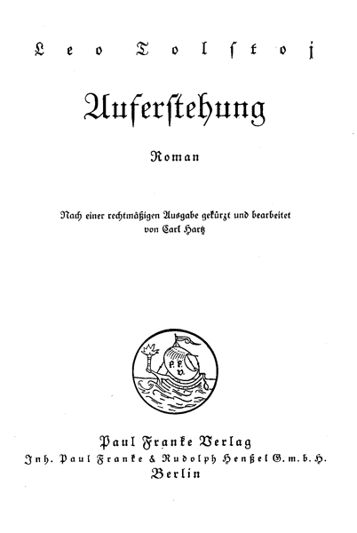

Nach einer rechtmäßigen Ausgabe gekürzt und bearbeitet.
Roman
Motto:
»Da trat Petrus zu ihm, und sprach: Herr, wie oft soll ich meinem Bruder, der wider mich sündigt, verzeihen? Bis auf siebenmal?
Jesus antwortete ihm: Ich sage dir, nicht bis auf siebenmal, sondern bis auf siebenzigmal sieben.«
(Ev. Matthäi, XVIII, 21-22.)
»Was siehest du aber den Splitter in deines Bruders Auge, des Balkens aber in deinem Auge achtest du nicht?«
(Ev. Matthäi. VII, 3.)
». . . Wer unter euch ohne Sünde ist, der werfe den ersten Stein auf sie.«
(Ev. Johannis, VIII, 7.)
»Der Jünger ist nicht über seinen Meister; jeder Vollkommene aber wird wie sein Meister sein.«
Wie sehr die Menschen sich mühten, nachdem sich ihrer einige Hunderttausend auf einem kleinen Raume angesammelt hatten, die Erde, auf der sie sich drängten, zu verunstalten – der Frühling war Frühling, sogar in der Stadt. Die Sonne wärmte, das neu auflebende Gras wuchs, grünte überall, wo immer man es nicht weggekratzt hatte, nicht nur auf den Rasenstücken des Boulevards, sondern auch zwischen den Steinplatten. Fröhlich waren die Pflanzen, die Vögel, die Insekten, die Kinder. Nur die Menschen, die großen erwachsenen Menschen hörten nicht auf, sich und einander zu betrügen und zu quälen. Die Menschen glaubten, daß nicht dieser Frühlingsmorgen heilig und wichtig sei, nicht diese Schönheit der Gotteswelt, die zum Heil aller Wesen gegeben ist, – die Schönheit, die zum Frieden, zur Eintracht, zur Liebe geneigt macht, sondern heilig und wichtig war das, was sie selbst ausgedacht hatten, um über einander zu herrschen.
So wurde in dem Bureau des Gouvernementsgefängnisses nicht für heilig und wichtig gehalten, daß allen Tieren und Menschen die Rührung und die Freude des Frühlings gegeben ist, sondern für heilig und wichtig ward gehalten, daß abends zuvor ein mit Nummer, Siegel und Überschrift versehenes Papier eingegangen war, darüber, daß zu 9 Uhr morgens an diesem Tage des 28. April drei sich in Untersuchung befindende und im Gefängnis gehaltene Arrestanten – zwei Frauen und ein Mann – vorgeführt werden sollten. Eine dieser Frauen mußte als die wichtigste Verbrecherin abgesondert vorgeführt werden. Und nun kam auf Grund dieser Vorschrift um 8 Uhr morgens der Oberaufseher in den stinkenden Korridor der weiblichen Abteilung herein. Gleich hinter ihm her kam in den Korridor eine Frau, die in eine Jacke mit gallonierten Ärmeln gekleidet und mit einem Gürtel mit blauem Vorstoß gegürtet war. Es war die Aufseherin.
»Wollen Sie die Maslowa haben?« fragte sie, indem sie sich einer der Kammertüren näherte, die sich in den Korridor öffneten.
Der Aufseher schloß das Schloß auf, und nachdem er die Tür der Kammer geöffnet hatte, schrie er:
»Maslowa, vor Gericht!« und er machte die Tür wieder zu und wartete.
Im Korridor herrschte eine niederdrückende typhöse Luft, die vom Geruch der Ausleerungen, von Teer und Fäulnis gesättigt war und jeden Neuangekommenen sogleich in Niedergeschlagenheit und Betrübnis versetzte. Das erfuhr an sich selbst die vom Hofe gekommene Aufseherin. Sie empfand plötzlich, da sie in den Korridor eingetreten, Müdigkeit und wurde schläfrig.
»Immer fix! Du da rühr' dich! Maslowa, sag' ich«, schrie der Oberaufseher in die Kammertür.
Nach etwa zwei Minuten kam aus der Tür mit munterem Schritt ein nicht hochgewachsenes und sehr vollbusiges junges Frauenzimmer im grauen Schlafrock über einer weißen Jacke und einem weißen Rock. Sie drehte sich rasch um und stellte sich neben den Aufseher. An den Beinen trug das Frauenzimmer Strümpfe aus Leinwand, darüber Gefängnispantoffeln; der Kopf war mit einem weißen Halstuch umbunden, unter welchem die Ringel der krausen schwarzen Haare augenscheinlich mit Absicht hängen gelassen waren. Das ganze Gesicht des Frauenzimmers war von der besonderen Weiße, die sich auf den Gesichtern von Menschen einzustellen pflegt, die lange Zeit hinter Schloß und Riegel zugebracht haben. Ebenso sahen auch die kleinen breiten Hände aus und der volle weiße Hals, der aus dem großen Kragen des Schlafrocks hervorguckte.
In diesem Gesicht überraschten besonders bei der matten Blässe die sehr schwarzen, glänzenden, etwas geschwollenen, aber sehr lebhaften Augen, von denen eins ein wenig schielte. Sie hielt sich sehr gerade, indem sie die volle Brust herausdrückte. Nachdem sie auf den Korridor herausgetreten, sah sie, ihren Kopf etwas zurückwerfend, dem Aufseher gerade in die Augen und blieb stehen, voller Bereitwilligkeit, alles zu erfüllen, was man von ihr verlangen würde.
»Mir nach, marsch!« befahl der Aufseher, und die Maslowa ging nach der Mitte des Korridors; mit raschen kleinen Schritten ging sie dem Oberaufseher auf dem Fuße nach, und so stiegen sie die steinerne Treppe hinunter und in das Bureau, wo schon zwei Eskortesoldaten mit Gewehren standen. Der Schreiber, welcher dort saß, gab einem Soldaten ein von Tabaksgeruch durchdrungenes Papier, und indem er auf die Arrestantin zeigte, sagte er: »Nimm sie in Empfang.« Der Soldat, ein Bauer mit rotem, von den Pocken zerwühltem Gesicht, steckte das Papier hinter den Ärmelaufschlag seines Mantels, und lächelnd blinzelte er von der Arrestantin seinem Kameraden zu. Dann stiegen die Soldaten mit der Arrestantin die Treppe hinunter und gingen zum Hauptausgang.
In der Tür des Hauptausganges öffnete sich ein Pförtchen, und nachdem die Soldaten mit der Arrestantin die Schwelle des Pförtchens in den Hof überschritten, gingen sie aus den Mauern hinaus und marschierten durch die Stadt, in der Mitte der gepflasterten Straßen.
Kinder sahen mit Entsetzen auf die Räuberin; es beruhigte sie nur, daß hinter ihr die Soldaten gingen, und daß sie jetzt schon niemand mehr etwas antun konnte. Ein Bauer vom Dorf, der Kohlen verkauft und in einem Wirtshause Tee getrunken hatte, näherte sich ihr, bekreuzte sich und reichte ihr einen Kopeken. Die Arrestantin errötete, neigte den Kopf und sagte etwas.
Während sie an einer Mehlhandlung vorbeiging, vor welcher Tauben, von niemand behelligt, ein wenig schaukelnd auf und ab spazierten, berührte sie fast mit dem Fuß einen Blautauber; aufflatternd und mit den Flügeln bebend, flog der Vogel hart am Ohr der Arrestantin vorbei und überschauerte sie mit Wind. Sie lächelte, und dann seufzte sie schwer, indem sie ihrer Lage gedachte.
Die Geschichte der Arrestantin Maslowa war eine sehr gewöhnliche Geschichte:
Die Maslowa war die Tochter einer unverheirateten Leibeigenen, die mit ihrer Mutter auf dem Dorfe von zwei Fräulein, Schwestern, Gutsbesitzerinnen, als Stallmagd lebte. Dieses unverheiratete Frauenzimmer gebar jedes Jahr und man taufte das Kind, doch nachher ernährte die Mutter das unerwünscht erschienene Kleine nicht, und bald starb es vor Hunger.
So starben ihr fünf Kinder. Alle waren sie getauft, nachher ernährte man sie nicht, und sie starben. Das sechste Kind – erzeugt von einem vorbeifahrenden Zigeuner – war ein Mädchen, und ihr Schicksal wäre dasselbe gewesen, wenn es sich nicht begeben hätte, daß eins der beiden alten Fräulein auf den Viehhof gekommen wäre, um der Stallmagd einen Verweis wegen des nach der Kuh riechenden Rahms zu geben. In der Wohnung der Stallmägde lag die Wöchnerin mit ihrem schönen gesunden Säugling. Das alte Fräulein erteilte sowohl für den Rahm, als auch dafür einen Verweis, daß man eine Wöchnerin auf dem Viehhof zugelassen, und wollte schon weggehen, als sie das Kind erblickte. Sie ward gerührt und bot sich an, Taufmutter des Kindes zu sein. Sie hielt es auch über die Taufe; nachher dann, das Patchen bedauernd, gab sie der Mutter Milch und Geld, und das Mädchen blieb am Leben. Die alten Fräulein nannten sie denn auch: »Die Gerettete«.
Das Kind war drei Jahre alt, als die Mutter erkrankte und starb. Seiner Großmutter, der Stallmagd, war die Enkelin zur Last, und dann nahmen die alten Fräulein das Mädchen zu sich.
Es gab zwei alte Fräulein: eine jüngere, etwas gutmütigere, Sophia Iwanowna – dieselbe, welche das Kind über die Taufe gehalten –, und eine ältere, etwas strengere – Maria Iwanowna. Sophia Iwanowna putzte das Mädchen, lehrte es lesen und wollte aus ihm eine Ziehtochter machen. Maria Iwanowna sagte, daß man aus dem Mädchen eine Arbeiterin, ein gutes Stubenmädchen machen müsse, und daher war sie anspruchsvoll, strafte und schlug sogar hier und da das Mädchen, wenn sie schlechter Laune war. So wuchs das Mädchen, zwischen zwei verschiedenen Einflüssen, halb als Stubenmädchen, halb als Ziehkind auf. So nannte man es denn auch weder Katjka,Verächtlich. noch Katenjka,Zärtlich. sondern zwischen beidem: Katjuscha.
So lebte sie bis zu ihrem sechzehnten Jahre. Als sie aber sechzehn Jahre alt geworden, kam zu den Fräulein ihr Neffe, ein Student und reicher Fürst, und Katjuscha verliebte sich in ihn, ohne daß sie wagte, es sich selbst, geschweige denn ihm zu gestehn. Da fuhr dieser selbe Neffe nach zwei Jahren auf dem Wege in den Krieg bei den Tantchen vorbei, brachte vier Tage bei ihnen zu, und am Vorabend seiner Abreise verführte er Katjuscha. Darauf drückte er ihr am letzten Tage einen Hundertrubelschein in die Hand und reiste ab. Fünf Monate nach seiner Abreise wußte sie bestimmt, daß sie schwanger sei.
Von der Zelt an ward ihr alles gleichgültig, und sie dachte nur darüber nach, wie sie der Schande, die sie erwartete, entgehen könne. Nicht nur begann sie unwillig und schlecht den Fräulein zu dienen, sondern plötzlich brach sie los, und ohne selber zu wissen, wie es geschah, sagte sie den Fräulein Grobheiten, die sie selbst später bereute, und bat, sie zu entlassen. Die Fräulein, die sehr unzufrieden mit ihr geworden, entließen sie.
Als Stubenmädchen kam sie von ihnen zu einem Stanowoj,Polizeibeamter in einem Landdistrikt. Anm. d. Übers. aber sie konnte dort nur drei Monate bleiben, weil der Stanowoj, der fünfzigjährige Alte, zudringlich wurde. Wieder in einen Dienst zu treten, hatte nun keinen Zweck; bald sollte sie gebären, und so ließ sie sich bei einer Witwe, der Dorfhebamme, nieder. Die Niederkunft war leicht, und das Kind, den Knaben, hat man ins Findelhaus gebracht, wo er sogleich nach der Ankunft verstarb, wie die Alte, die ihn weggeführt hatte, erzählte.
Geld hatte Katjuscha, als sie sich bei der Hebamme niederließ, im ganzen hundertsiebenundzwanzig Rubel. Als sie aber von ihr wegging, blieben ihr nur sechs Rubel übrig. Sie verstand nicht, Geld zu sparen, sie brauchte es für sich und gab es anderen, jedem der bat, so daß Katjuscha eine Stelle suchen mußte. Diese Stelle fand sich bei einem Förster. Der Förster war ein verheirateter Mann, aber ebenso wie der Stanowoj begann er vom ersten Tage an sich der Katjuscha aufzudrängen. Er war ihr widerwärtig, und sie hat sich bemüht, ihn zu meiden, aber er war erfahrener und schlauer als sie; so hat er eine günstige Minute abgepaßt und sich ihrer bemächtigt. Die Frau hat es erfahren, und als sie ihren Mann einmal allein mit Katjuscha im Zimmer überraschte, stürzte sie los, um sie zu schlagen. Katjuscha ergab sich nicht, und es entstand eine Prügelei, weswegen man sie aus dem Hause gejagt, ohne ihr den verdienten Lohn zu bezahlen. Darauf fuhr Katjuscha in die Stadt und hielt sich bei ihrer Tante auf. Der Mann der Tante war ein Buchbinder und lebte früher gut; hatte aber jetzt sich dem Trunk ergeben, indem er alles, was ihm unter die Hand kam, vertrank.
Die Tante indes hatte eine kleine Wäscherei, ernährte damit sich und ihre Kinder und unterhielt auch den verlorenen Mann. Sie hat der Maslowa vorgeschlagen, bei ihr als Wäscherin einzutreten. Aber die Maslowa zögerte und suchte in den Vermittlungsbureaus eine Stelle als Dienstmädchen. Eine Stelle fand sich nicht, aber es traf sich, daß die Maslowa, als sie in das Stellenvermittlungsbureau kam, dort einer Dame mit Fingerringen und Bracelets an den aufgedunsenen nackten Armen begegnete. Nachdem die Dame die Lage der stellesuchenden Maslowa erfahren, hat sie ihr ihre Adresse gegeben und sie zu sich eingeladen. Die Maslowa ging zu ihr. Die Dame empfing sie freundlich, bewirtete sie mit Pastetchen und süßem Wein und hat dann ihr Stubenmädchen mit einem Zettel irgendwohin geschickt. Abends kam in das Zimmer ein hochgewachsener Mann mit langen ergrauenden Haaren und grauem Bart. Dieser Greis rückte sogleich der Maslowa näher und begann sie, lächelnd und mit den Augen glänzend, zu betrachten und mit ihr zu scherzen. Die Hausfrau hat ihn hinaus in ein anderes Zimmer gerufen, und die Maslowa hörte sie sagen: »eine ganze Frische, vom Dorfe.« Dann rief die Hausfrau die Maslowa heraus und sagte, das sei ein Schriftsteller, der sehr viel Geld habe und nicht sparen werde, wenn sie ihm gefiele. Sie hat gefallen, und er gab ihr fünfundzwanzig Rubel und versprach, sie oft wiederzusehen. Bald ging das Geld drauf für Bezahlung der Kost bei der Tante und für ein neues Kleid, einen Hut und Bänder. Nach einigen Tagen schickte der Schriftsteller wieder nach ihr. Sie ging. Er gab ihr noch fünfundzwanzig Rubel und schlug ihr vor, in eine besondere Wohnung zu ziehen.
Während die Maslowa in dem von dem Schriftsteller gemieteten Quartier wohnte, gewann sie einen lustigen Kommis lieb, der auf demselben Hof logierte. Sie hat das selber dem Schriftsteller erklärt und eine abgesonderte kleine Wohnung bezogen. Der Kommis aber, der sie zu heiraten versprochen, reiste, ohne ihr etwas davon zu sagen, nach Nischnij; er hatte sie verlassen. Sie wollte nun für sich in dem Quartier wohnen, aber das hat man ihr nicht erlaubt. Der Polizeioffiziant teilte ihr mit, sie könne nur so leben, nachdem sie einen roten Schein bekommen und sich einer medizinischen Untersuchung gestellt habe. Darauf ging sie wieder zu ihrer Tante.
Als die Tante ihr Modekleid erblickte, den Umhang und den Hut, empfing sie sie achtungsvoll und wagte schon nicht mehr, ihr vorzuschlagen, Wäscherin zu werden, da sie glaubte, daß sie eine höhere Lebensstufe betreten habe. Für die Maslowa existierte jetzt nicht mehr die Frage, ob sie Wäscherin werden solle oder nicht. Sie blickte jetzt mit Mitleid auf das Galeerenleben, das die blassen Waschfrauen mit den mageren Armen in den vorderen Zimmern führten, indem sie bei dreißig Grad im Seifendampf und dazu bei, im Sommer wie im Winter, geöffneten Fenstern wuschen und plätteten, und sie ergrauste bei dem Gedanken, daß auch sie in solche Galeerenarbeit eintreten sollte. Und zu dieser Zeit, die für die Maslowa besonders kummervoll war, weil sie keinen Beschützer fand, wurde sie von einer Vermittlerin aufgesucht, die ein Toleranzhaus mit Mädchen versorgte.
Die Vermittlerin bewirtete die Tante, und nachdem sie die Maslowa betrunken gemacht, schlug sie ihr vor, in eine gute – in die beste Anstalt der Stadt einzutreten, indem sie ihr alle Vorteile und Vorzüge dieser Stellung vor Augen führte. Die Maslowa hatte die Wahl vor sich: entweder die erniedrigende Lage einer Dienstmagd, wo es ganz sicher Verfolgungen von seiten der Männer und zeitweilige geheime Ehebrüche geben würde, oder die gesicherte, ruhige, gesetzliche Stellung und der offene, vom Gesetz erlaubte, gut bezahlte, beständige Ehebruch, und sie wählte das letztere. Außerdem glaubte sie damit an ihrem Verführer und an dem Kommis – an allen Leuten, die ihr Böses getan, Rache zu nehmen. Dabei verführte sie noch, und eines der Motive ihrer definitiven Entscheidung war, daß die Vermittlerin ihr sagte, sie könne so viele Kleider bestellen, wie sie nur wünsche; aus Samt, aus Seide, Ballkleider, die Schultern und Arme nackt lassen. Und als sich die Maslowa vorstellte – sie im hellgelben dekolletierten Seidenkleide, besetzt mit schwarzem Samt – da konnte sie nicht widerstehen und gab ihren Paß ab.
Und noch an demselben Abend nahm die Vermittlerin eine Droschke und führte sie in das berühmte Haus der Kitajewa.
Und so begann von dieser Zeit an für die Maslowa jenes Leben des chronischen Vergehens gegen göttliche und menschliche Gebote, das von Hunderten und Hunderten von Frauen geführt wird, nicht nur mit Erlaubnis, sondern unter der Gönnerschaft der regierenden Gewalt.
Morgens und am Tage der schwere Schlaf nach den nächtlichen Orgien. Um drei, vier Uhr das müde Aufstehn vom schmutzigen Bette, Selterwasser nach der Völlerei, Kaffee – dann das faule Herumschlendern durch die Zimmer, in Peignoirs, Jacken, Schlafröcken; dann das Abwaschen, Beschmieren, Parfümieren des Leibes, der Haare; dann das Anziehen des hellen, seidenen, den Körper entblößenden Kleides; das Hinaustreten in den aufgeputzten, hell erleuchteten Saal, die Ankunft der Gäste –: Musik, Tanz, Bonbons, Wein, Rauchen, Ehebrüche mit den Jungen, mit Leuten mittleren Alters, mit halben Kindern, mit sich ruinierenden Greisen, mit Ledigen, mit Verheirateten, mit Kaufleuten, mit Kommis, mit Armeniern, mit Juden, mit Tataren, mit Reichen, Armen, Gesunden, Kranken, Betrunkenen, Nüchternen, Groben, Zarten, mit Militärs, mit Zivilisten, mit Studenten, mit Gymnasiasten – mit allen möglichen Klassen, Altersstufen, Charakteren. Und Geschrei und Späße, Musik vom Abend bis zum Tagesanbruch. Und nur am Morgen Erlösung und schwerer Schlaf. Und so jeden Tag, die ganze Woche. Am Ende der Woche aber die Fahrt in die Staatsanstalt – das Kreisbureau, wo die im Staatsdienst stehenden Beamten – Ärzte – Männer – diese Frauen untersuchten; und manchmal ernst und streng, manchmal mit scherzhafter Lustigkeit, die von der Natur zum Schutz gegen Verbrechen nicht nur den Menschen, sondern selbst den Tieren verliehene Scham vernichteten, und dann ihnen das Patent gaben zur Fortsetzung derselben Verbrechen, welche diese Frauen im Laufe der Woche mit ihren Mitgenossen begingen. Und so jeden Tag – im Sommer, im Winter, am Werktag wie am Feiertag.
So lebte die Maslowa sieben Jahre hindurch. Während dieser Zeit hat sie zweimal das Haus gewechselt, und einmal war sie im Hospital. Im siebenten Jahre ihres Aufenthalts im Toleranzhause und im zehnten Jahr nach ihrem ersten Fall, als sie siebenundzwanzig Jahre alt war, geschah mit ihr das, wofür man sie ins Gefängnis gesetzt und jetzt vor das Gericht führte, nach sechsmonatiger Haft im Gefängnis mit Diebinnen und Mörderinnen.
Zu gleicher Zeit, da die Maslowa, von dem langen Gange ermüdet, mit ihrer Bewachung an das Gerichtsgebäude herangekommen war, lag jener selbe Neffe ihrer Erzieherinnen, Fürst Dmitrij Iwanowitsch Nechljudow, der sie verführt, auf seinem hohen, zerwühlten Springfederbett mit der Daunenmatratze und rauchte eine Zigarette. Er sah mit starren Augen vor sich hin und dachte darüber nach, was ihm heute zu tun bevorstehe, und was gestern gewesen.
Sich des gestrigen Abends entsinnend, welchen er bei Kortschagins zugebracht, reichen und berühmten Leuten, deren Tochter er, wie von allen angenommen wurde, heiraten sollte, seufzte er, warf die ausgerauchte Zigarette fort und wollte aus der silbernen Zigarettendose eine neue nehmen; besann sich jedoch anders, ließ seine glatten weißen Beine vom Bett herab, fand mit ihnen die Pantoffeln, warf einen seidenen Schlafrock über die breiten Schultern und ging mit raschen Schritten in das ans Schlafgemach stoßende Ankleidezimmer. Dort putzte er mit einem besonderen Pulver seine an vielen Stellen plombierten Zähne, spülte sie mit einem aromatischen Mundwasser, fing dann an sich allerseits zu waschen und mit verschiedenen Handtüchern abzureiben. Nachdem er sich die Hände mit parfümierter Seife gewaschen, putzte er sorgfältig mit Bürsten die langgewachsenen Nägel, wusch sich an dem großen marmornen Waschtisch das Gesicht und den starken Hals und trat noch in ein drittes Zimmer neben dem Schlafgemach, wo eine Douche hergerichtet war. Als er dann mit kaltem Wasser den muskulösen, mit Fett belegten weißen Leib gewaschen und sich mit dem rauhhaarigen Laken abgerieben hatte, zog er die saubere, geglättete Wäsche, die wie ein Spiegel geputzten Schuhe an, setzte sich vor die Toilette, um mit zwei Bürsten den kleinen, schwarzen krausen Bart und die auf dem vorderen Teil des Kopfes ziemlich dünn gewordenen krauslichen Haare zu bearbeiten. Alle Sachen, deren er sich bediente, waren von der allerersten teuersten Sorte, unauffällig, einfach, dauerhaft und kostbar.
Nachdem Nechljudow aus einem Dutzend Krawatten und Vorstecknadeln die ersten, die ihm unter die Hände kamen, genommen, zog er die gebürsteten und auf dem Stuhle vorbereiteten Kleider an und ging, wenn auch nicht vollkommen frisch, so doch sauber und duftend, in das lange Speisezimmer mit dem großen, zum Ausziehen eingerichteten Tisch, der mit seinen breit auseinandergestellten, in der Form von Löwenklauen geschnitzten Füßen etwas Feierliches hatte. Auf diesem Tische mit der feinen, gestärkten, mit großen Namenszügen versehenen Decke stand eine silberne Kaffeekanne mit duftendem Kaffee, eine ebensolche Zuckerdose, eine Rahmkanne mit gekochter Sahne und ein Korb mit frischem Kalatsch (Semmel), kleinen Zwiebacken und Biskuits. Neben dem Gedeck lagen die eingetroffenen Briefe, Zeitungen und ein neuer Band, die »Revue des deux mondes«.
Eben nur wollte sich Nechljudow an seine Briefe machen, als aus der Tür, die in den Korridor führte, eine wohlbeleibte und ziemlich bejahrte Frau in Trauer, mit einem Spitzenaufsatze auf dem Kopfe, der den auseinandergegangenen Haarscheitel verdeckte, herangeschwommen kam. Es war das Kammermädchen der seligen, vor kurzem in dieser selben Wohnung verstorbenen Mutter Nechljudows, Agrafena Petrowna, die jetzt bei dem Sohn als Haushälterin geblieben war.
Agrafena Petrowna hatte das Aussehen und die Manieren einer Dame.
Von Kindheit an wohnte sie im Hause der Nechljudows.
»Guten Morgen, Dimitrij Iwanowitsch!«
»Ich grüße Sie, Agrafena Petrowna; – was gibt's Neues?« fragte Nechljudow scherzend.
»Ein Brief entweder von der Frau Fürstin oder vom fürstlichen Fräulein; das Zimmermädchen hat ihn schon längst gebracht, wartet bei mir«, sagte Agrafena Petrowna und übergab den Brief, bedeutungsvoll lächelnd.
»Schön, sogleich«, sagte Nechljudow, indem er den Brief nahm, und da er Agrafena Petrownas Lächeln bemerkte, zog er ein finsteres Gesicht. Das Lächeln der Agrafena Petrowna bedeutete, daß der Brief von der jungen Fürstin Kortschagin war, die Nechljudow, nach Agrafena Petrownas Meinung, heiraten sollte. Und diese durch ihr Lächeln ausgedrückte Voraussetzung Agrafena Petrownas war Nechljudow unangenehm.
»Also ich sage ihr, daß sie etwas warten soll.« Und Agrafena Petrowna schwamm aus dem Speisezimmer hinweg.
Als Nechljudow den duftenden Brief, den ihm Agrafena Petrowna gereicht, erbrochen, begann er ihn zu lesen.
›Indem ich die auf mich genommene Pflicht erfülle,‹ stand auf dem einen Bogen des dicken grauen Papiers mit den ungleichen Rändern, in einer scharfen aber weiten Handschrift geschrieben, ›erinnere ich Sie daran, daß Sie heute, den 28. April, im Geschworenengericht sein müssen und daher unmöglich mit uns und mit Herrn Kolossow fahren können, um Bilder zu besehen, wie Sie dies gestern mit dem Ihnen eigentümlichen Leichtsinn versprachen, à moins que vous ne soyez disposé à payer à la cour d'assise les 300 roubles d'amende, que vous refusez pour votre cheval, dafür, daß Sie nicht zur rechten Zeit erscheinen. Es fiel mir gestern ein, als Sie eben fortgegangen waren. Also vergessen Sie es nicht.
Fürstin M. Kortschagina.‹
Auf der anderen Seite war hinzugefügt: ›Maman vous fait dire, que votre couvert vous attendra jusqu' à la nuit. Venez absolument, à quelle heure que cela soit.
M. K.‹
Nechljudow runzelte die Stirn. Der Zettel war die Fortführung jener geschickten Arbeit, die schon seit zwei Monaten an ihm von der jungen Fürstin Kortschagina ausgeführt wurde, und die daran bestand, daß sie ihn mit unmerklichen Fäden immer mehr und mehr mit ihr verknüpfte. Unterdessen aber hatte Nechljudow, außer jener, bei den nicht mehr jungen und nicht leidenschaftlich verliebten Leuten gewöhnlichen Unentschlossenheit vor der Ehe, noch einen wichtigen Grund, aus dem er, selbst wenn er sich entschlösse, doch nicht sogleich seinen Antrag machen könnte. Dieser Grund bestand nicht darin, daß er bald vor zehn Jahren Katjuscha verführt und sie verlassen hatte, das war von ihm vollständig vergessen worden, und er hielt das für kein Hindernis zum Heiraten; der Grund lag darin, daß er um dieselbe Zeit mit einer verheirateten Frau ein Verhältnis hatte, das – obgleich von seiner Seite zerrissen – ihrerseits noch nicht als zerrissen anerkannt wurde.
Nechljudow war sehr schüchtern den Frauen gegenüber. Aber eben seine Schüchternheit hatte in dieser verheirateten Frau die Lust erweckt, ihn zu erobern. Diese Frau war die Gemahlin des Adelsmarschalls jenes Kreises, zu dessen Wahl Nechljudow gefahren war. Und die Frau zog ihn in ein Verhältnis hinein, das für Nechljudow mit jedem Tage hinreißender und zu gleicher Zeit auch immer mehr und mehr abstoßend wurde. Anfangs hatte Nechljudow der Verführung nicht widerstehen können, dann, weil er sich vor ihr schuldig fühlte, konnte er dies Verhältnis nicht ohne ihre Einwilligung zerreißen. Und hier eben lag die Ursache, aus welcher Nechljudow glaubte, daß er kein Recht habe, auch wenn er es wünschte, der Kortschagina seinen Heiratsantrag zu machen.
Auf dem Tische lag gerade ein Brief von dem Manne dieser Frau. Als Nechljudow die Handschrift und den Stempel sah, errötete er und empfand sogleich jenen Energieaufschwung, den er immer beim Nahen der Gefahr fühlte. Aber seine Aufregung war überflüssig; der Mann, der Adelsmarschall desselben Bezirks, in dem die Hauptbesitztümer des Fürsten lagen, berichtete ihm, daß zu Ende Mai eine außerordentliche Versammlung des Semstwo anberaumt worden, und bat Nechljudow, auf alle Fälle zu erscheinen.
Der Adelsmarschall war ein liberaler Mann, der zusammen mit einigen Gleichgesinnten gegen die unter Alexander III. angebrochene Reaktion kämpfte und so ganz von diesem Kampf absorbiert ward, daß er nichts von seinem unglücklichen Familienleben wußte.
Nechljudow vergegenwärtigte sich all die qualvollen Minuten, die er durchlebt, in Beziehung auf diesen Mann; er vergegenwärtigte sich, wie er einmal geglaubt, der Mann wisse alles, und wie er sich zum Duell mit ihm vorbereitete, bei welchem er in die Luft schießen wollte; und die furchtbare Szene mit ihr, als sie in Verzweiflung in den Garten hinauslief, zum Teich, mit der Absicht, sich zu ertränken, und er lief, sie zu suchen.
»Ich kann jetzt nicht fahren, ich kann nichts unternehmen, so lange sie mir nicht antwortet«, dachte Nechljudow. Vor einer Woche hatte er ihr einen entscheidenden Brief geschrieben, in welchem er sich als schuldig und zu jeder beliebigen Art von Genugtuung bereit erkannte, aber dennoch hielt er das Verhältnis, und zwar zu ihrem besten, für beendigt auf immer. Und eben auf diesen Brief erwartete er Antwort und bekam keine. Daß er keine Antwort erhielt, war zum Teil ein gutes Zeichen. Wenn sie auf den Bruch nicht eingehen wollte, so hätte sie schon langst geschrieben oder wäre sogar selber gekommen, wie sie es früher tat. Nechljudow hatte gehört, daß gegenwärtig dort irgendein Offizier war, der ihr den Hof machte, und das quälte ihn mit Eifersucht und freute ihn zugleich, als Hoffnung auf Befreiung von der ihn peinigenden Lüge.
Der andere Brief war von dem Oberverwalter der Besitzungen, der Verwalter schrieb ihm, daß er, Nechljudow, selber kommen müsse, um seine Erbschaft anzutreten, und außerdem, um die Frage zu entscheiden, wie die Wirtschaft fortzuführen sei: ob so, wie sie bei der Seligen geführt worden, oder so, wie er es auch der seligen Fürstin vorgeschlagen und jetzt dem jungen Fürsten vorschlage, nämlich, das Inventarium zu vermehren, und alles Land, das jetzt den Bauern in Pacht gegeben war, selber zu bewirtschaften. Dieser Brief war Nechljudow angenehm und unangenehm. Es war angenehm, seine Macht über ein großes Eigentum zu fühlen und unangenehm, daß er zur Zeit seiner ersten Jugend ein begeisterter Anhänger Herbert Spencers gewesen und als Großgrundbesitzer selber besonders durch seinen Satz in den »Social Statics« getroffen war, ›daß die Gerechtigkeit den Privatgrundbesitz nicht zulasse.‹
Jetzt, da er durch die Erbschaft ein großer Grundbesitzer geworden, mußte er auf eins von beidem: entweder auf sein Eigentum verzichten, oder in stillschweigendem Einverständnis all seine früheren Gedanken als fehlerhaft und falsch anerkennen.
Das erstere konnte er nicht tun, weil er außer dem Landbesitz keine Mittel zur Existenz hatte. Dienen wollte er nicht, wohl aber hatte er inzwischen die Gewohnheiten eines luxuriösen Lebens angenommen, von denen er glaubte, sich nicht losmachen zu können. Aber es hatte auch keinen Zweck, denn er besaß schon nicht mehr weder jene Überzeugungskraft, noch jene Entschlossenheit, noch jene Eitelkeit und Lust, in Verwunderung zu setzen, die ihm in der Jugend eigen gewesen.
Das zweite aber, Widerruf jener klaren und unwiderlegbaren Beweisgründe von der Unrechtmäßigkeit des Grundbesitzes, die er damals aus der »Sozialen Statik« von Spencer geschöpft und deren glänzende Bestätigung er dann viel später in den Werken von Henry George gefunden hatte, war ihm durchaus nicht möglich.
Und unangenehm war ihm deswegen der Brief des Verwalters.
Nachdem Nechljudow seinen Kaffee getrunken, ging er ins Kabinett, um im Vorladungsschreiben nachzusehen, um wieviel Uhr man im Gericht sein müsse und um die Antwort an die Fürstin zu schreiben. Ins Kabinett mußte man durch das Atelier gehen. Im Atelier stand eine Staffelei mit einem angefangenen Bilde, das umgedreht war, auch waren Studien aufgehängt. Der Anblick dieses Bildes, an welchem er sich zwei Jahre lang abgequält, der Anblick der Studien und des ganzen Ateliers mahnten ihn an das in letzter Zeit mit besonderer Schärfe empfundene Gefühl seines Unvermögens in der Malerei weiterzukommen.
Vor sieben Jahren hatte er den Dienst aufgegeben, da er entschied, daß er einen Beruf zur Malerei habe, und von der Höhe der künstlerischen Tätigkeit sah er etwas verächtlich auf alle anderen Tätigkeiten herab. Jetzt ergab es sich, daß er dazu kein Recht hatte. Und darum war jede Erinnerung daran unangenehm. Das Kabinett war ein sehr großes, hohes Zimmer mit allen Arten von Zierrat, Vorrichtungen und Bequemlichkeiten.
Nachdem er sogleich in der Schieblade des kolossalen Schreibtisches unter der Abteilung »Terminsachen« das Vorladungsschreiben gefunden, in welchem es hieß, daß man um elf im Gericht sein müsse, setzte sich Nechljudow, um dem Fürsten ein Billett zu schreiben, daß er für die Einladung danke und sich bemühen werde, zum Mittagessen da zu sein. Aber nachdem er ein Billett geschrieben, riß er es entzwei: es war zu intim; er schrieb ein anderes – es war kalt, fast beleidigend. Er riß es wieder entzwei und drückte auf den Knopf in der Wand. In die Tür kam in grauer Kalikoschürze ein bejahrter Lakai.
»Bitte, schicken Sie nach dem Kutscher.«
»Zu Befehl!«
»Und sagen Sie, hier wartet jemand von Kortschagins, ich ließe danken, ich würde mich bemühen zu kommen.«
»Zu Befehl!«
»Unhöflich, aber ich kann nicht schreiben. Ich werde sie doch heute sehen«, dachte Nechljudow und ging sich anzukleiden.
Als er sich dann angekleidet hatte und auf die Treppe hinauskam, wartete schon auf ihn sein bekannter Mietkutscher mit der Gummiräderdroschke.
»Gestern waren Sie eben vom Fürsten Kortschagin weggefahren,« sagte der Mietkutscher halbumwendend, »als ich vorgefahren bin, der Schweizer aber sagte: ›Gerade weg!‹«
Der Mietkutscher wußte, daß er Kortschagins besuchte und war gekommen, um ihn abzuholen.
»Sogar die Mietkutscher wissen um mein Verhältnis zu Kortschagins«, dachte Nechljudow, und es regte sich in ihm die unentschiedene Frage, die ihn in der letzten Zelt beständig beschäftigte: sollte er die Kortschagina heiraten, oder nicht; er konnte diese Frage durchaus nicht entscheiden, weder auf die eine, noch auf die andere Weise.
Zugunsten der Ehe überhaupt sprach erstens der Umstand, daß die Heirat, außer den Annehmlichkeiten des häuslichen Herdes, indem sie die Unregelmäßigkeit des Geschlechtslebens beseitigte, die Möglichkeit eines moralischen Lebens bot; zweitens der Umstand, und dieser war die Hauptsache, daß Nechljudow hoffte, Familie und Kinder würden seinem jetzt inhaltslosen Leben einen Sinn geben. Das war für das Heiraten überhaupt. Gegen das Heiraten überhaupt sprach aber erstens die allen nicht jungen Junggesellen gemeinsame Furcht vor dem geheimnisvollen Wesen der Frau.
Zugunsten aber der Ehe, speziell mit Missi – Fräulein Kortschagina hieß Marie, und wie in allen Familien eines gewissen Kreises gab man ihr einen Beinamen – war erstens zu sagen, daß sie von guter Rasse war, und daß sie in allem, von der Kleidung bis zur Manier zu sprechen, zu gehen, zu lachen, sich vor einfachen Leuten auszeichnete; sie zeichnete sich nicht durch etwas Außerordentliches aus, sondern durch »Korrektheit«; er kannte keinen anderen Ausdruck für diese Eigenschaft und wertete diese Eigenschaft sehr hoch; und zweitens schätzte sie ihn höher als alle anderen Menschen, also nach seinen Begriffen verstand sie ihn. Und dieses Verstehen, das heißt das Anerkennen seiner hohen Qualitäten, zeugte von ihrem Verstand und von der Richtigkeit ihres Urteils. Gegen die Heirat, speziell mit Missi, war erstens, daß man, sehr wahrscheinlich, ein Fräulein finden konnte, welches noch viel mehr gute Eigenschaften als Missi hatte und welches darum mehr seiner wert wäre; zweitens, daß sie schon 27 Jahre alt war, und darum hatte sie sicher schon früher geliebt; und dieser Gedanke war für Nechljudow qualvoll. Sein Stolz konnte sich nicht damit aussöhnen, daß sie selbst in der Vergangenheit nicht ihn lieben gekonnt. Versteht sich, sie konnte nicht wissen, daß sie ihn treffen werde, aber der Gedanke allein, daß sie irgend jemand früher lieben gekonnt, beleidigte ihn. So daß der Beweggründe ebenso viele für die Ehe, wie gegen sie waren; wenigstens waren ihrer Kraft nach diese Beweggründe gleich, und Nechljudow, über sich selbst lachend, nannte sich Buridans Esel.
»Übrigens, ohne Antwort von Maria Wassiljewna – der Frau des Adelsmarschalls –, ohne damit vollständig zu Ende zu sein, kann ich nichts unternehmen«, sagte er zu sich selbst.
»Übrigens werde ich alles das nachher überlegen«, sagte er sich selbst, als seine Droschke schon ganz geräuschlos zur Asphaltauffahrt des Gerichtsgebäudes heranrollte. »Jetzt muß man gewissenhaft, wie ich es immer tue und für meine Schuldigkeit halte, seine öffentliche Pflicht erfüllen. Zudem aber pflegt es oft interessant zu sein«, sagte er zu sich und ging an dem Schweizer vorbei in den Flur des Gerichtsgebäudes hinein.
In den Korridoren des Gerichts war eine starke Bewegung, da Nechljudow hereintrat. Die Gerichtskommissare, Advokaten, Gerichtsbeamten gingen bald hin, bald her; die Angeklagten ohne Bewachung strichen verzagt an den Wänden herum oder saßen voll Erwartung.
»Wo ist das Bezirksgericht?« fragte Nechljudow bei einem der Wächter.
»Zu welchem wollen Sie?«
»Ich bin ein Geschworener.«
»Also Kriminalabteilung. So hätten Sie auch sagen müssen. Hier rechts, dann links und die zweite Tür.«
Nechljudow ging.
Neben der genannten Tür standen zwei Männer und warteten; einer war ein großer dicker Kaufmann, ein gutmütiger Mensch, der in Vorbereitung zu seinem Dienst ein Glas getrunken und einen Imbiß genommen hatte und in der heitersten Gemütsverfassung war. Der andere war ein Kommis von jüdischer Herkunft. Sie sprachen vom Preise der Wolle, als der eben angelangte Nechljudow herankam und fragte, ob hier das Zimmer der Geschworenen sei.
»Hier, mein Herr, hier. Auch einer von uns Geschworenen?« fragte lustig zwinkernd der gutmütige Kaufmann.
»Nun, also werden wir uns zusammen etwas anstrengen«, fuhr er auf die bejahende Antwort Nechljudows fort. »Baklaschow von der zweiten Gilde,« sagte er, seine weiche, breite Hand reichend, »man muß sich etwas Mühe geben. Mit wem habe ich das Vergnügen?«
Nechljudow nannte seinen Namen und ging in das Zimmer der Geschworenen.
In dem kleinen Zimmer der Geschworenen waren etwa zehn Mann verschiedener Sorte. Alle waren eben angekommen: einige saßen, andere gingen, indem sie einander betrachteten und sich bekannt machten. Der eine war ein abgedankter Militär in Uniform, die anderen waren in Gehröcken, in Joppen, und nur der eine im Kaftan.
Alle zeigten, trotzdem viele sich von der Arbeit losgerissen hatten und sagten, daß es sie belästige – alle zeigten den Ausdruck eines gewissen Vergnügens im Bewußtsein der Erfüllung einer wichtigen öffentlichen Tätigkeit.
Die Geschworenen, die teils miteinander bekannt geworden, teils aber nur vermuteten, wer er sei, sprachen miteinander vom Wetter, vom frühen Frühling, von den bevorstehenden Geschäften. Diejenigen, welche mit Nechljudow nicht bekannt waren, beeilten sich, mit ihm bekannt zu werden, weil sie augenscheinlich es für eine besondere Ehre hielten. Und Nechljudow nahm es, wie immer unter Unbekannten, als das ihm Gebührende entgegen. Würde man ihn gefragt haben, warum er sich für höher, als die meisten Leute hielt, so hätte er nicht antworten können, weil sein ganzes Leben keine besonderen Verdienste offenbarte. Unter der Zahl der Geschworenen fand sich ein Bekannter von Nechljudow. Es war Peter Gerassimowitsch – Nechljudow kannte nie seinen Familiennamen und prahlte sogar ein wenig damit, daß er seinen Namen nicht kenne – der ehemalige Lehrer der Kinder seiner Schwester. Peter Gerassimowitsch hatte die Universitätskurse beendet und war jetzt Gymnasiallehrer. Er war immer unerträglich für Nechljudow durch seine Familiarität, durch sein selbstzufriedenes Lachen, überhaupt durch »seine kommunistischen Manieren«, wie die Schwester Nechljudows zu sagen pflegte.
»So, Sie müssen auch dran glauben,« empfing Peter Gerassimowitsch mit lautem Lachen den Nechljudow, »konnten sich nicht drücken.«
»Aber ich dachte ja nicht daran, mich zu drücken«, sagte Nechljudow streng und traurig.
»Nun, das ist aber Bürgertugend! Warten Sie nur, wenn Sie Hunger verspüren und man Sie nicht schlafen läßt, werden Sie anders singen!« fing noch lauter lachend Peter Gerassimowitsch an.
»Dieser Oberpriesterssohn wird mich sogleich ›Du‹ nennen«, dachte Nechljudow, und indes sich auf seinem Gesicht eine Trauer ausprägte, die nur in dem Fall natürlich gewesen wäre, wenn er soeben den Tod seiner sämtlichen Verwandten erfahren hätte, ging er von ihm weg und näherte sich einer Gruppe, die sich um einen glattrasierten, hochgewachsenen, ansehnlichen Herrn bildete, der mit Lebhaftigkeit etwas erzählte.
Man hörte ihm mit Achtung zu, und einige bemühten sich, eigene Bemerkungen einfließen zu lassen, aber er schnitt allen das Wort ab, als ob nur er allein alles gehörig wissen könne.
Trotzdem Nechljudow zu spät vorgefahren, mußte er lange warten. Die Sache wurde aufgehalten durch ein Gerichtsmitglied, das bis jetzt nicht angelangt war.
Der Vorsitzende kam früh ins Gericht gefahren. Es war ein hoher, starker Mann mit großem, ergrauendem Backenbart. Er war verheiratet, führte aber ein sehr lockeres Leben, ebenso wie seine Frau. Sie störten einander nicht. Heute früh hatte er einen Zettel von der Gouvernante, einer Schweizerin, welche im Sommer bei ihnen im Hause gelebt und jetzt vom Süden nach Petersburg durchfuhr, erhalten, daß sie ihn in der Stadt im Gasthofe »Italie« zwischen drei und sechs Uhr erwarten werde. Daher hatte er Lust, die Verhandlung des heutigen Tages früher anzufangen und zu beenden, damit er bis sechs Uhr Zeit hätte, diese rothaarige Klara Wassiljewna zu besuchen, mit welcher er im vorigen Sommer auf dem Lande einen Roman angeknüpft hatte.
Nachdem er ins Kabinett eingetreten, riegelte er die Tür zu, holte aus dem Schrank mit Papieren von dem unteren Brett zwei Hanteln und machte zwanzig Bewegungen nach oben, nach vorwärts, nach seitwärts, nach unten und dann ließ er sich leicht dreimal nieder, indem er die Hanteln über dem Kopfe hoch hielt.
Ihm blieb noch übrig, einen »Moulinet« zu machen – er pflegte diese zwei Bewegungen immer vor dem langen Sitzen der Verhandlung auszuführen – als die Tür erzitterte. Jemand wollte sie aufmachen. Der Vorsitzende legte eilig die Gewichte auf ihre Stelle und öffnete die Tür.
»Verzeihen Sie«, sagte er.
In das Zimmer kam eins der Gerichtsmitglieder mit goldener Brille, ein nicht hochgewachsener Mann mit ausgezogenen Schultern und einem finsteren Gesicht.
»Wieder ist Matwej Nikititsch nicht da«, sagte das Gerichtsmitglied unzufrieden.
»Noch nicht« antwortete der Vorsitzende, die Uniform anziehend. »Immer verspätet er sich.«
»Erstaunlich, schämt er sich denn gar nicht?« sagte das Mitglied und setzte sich voll Unwillen, indem es Zigaretten aus der Tasche holte.
Dann kam der Sekretär herein und brachte irgend welche Prozeßakten mit.
»Meinen besten Dank«, sagte der Vorsitzende, und rauchte eine Zigarette an. »Welchen Prozeß nehmen wir zuerst?«
»Ich glaube wohl die Vergiftung«, sagte scheinbar gleichgültig der Sekretär.
»Nun gut, wenn es die Vergiftung sein soll, so sei es die Vergiftung«, sagte der Vorsitzende, nachdem er überlegt, daß dies ein Prozeß sei, welchen man bis vier Uhr beenden könne, um nachher wegzufahren. »Und ist Matwej Nikititsch noch nicht da?«
»Immer noch nicht.«
»Und Herr Breve, ist er hier?«
»Hier«, antwortete der Sekretär.
»So, sagen Sie ihm, wenn Sie ihn sehen, daß wir mit der Vergiftung anfangen.«
Breve war derjenige Staatsanwalt, welcher bei dieser Verhandlung die Anklage führen sollte.
Als er in den Korridor hinausging, traf der Sekretär den Breve an.
Mit hochaufgezogenen Schultern in nicht zugeknöpfter Uniform schritt er rasch, mit einem Portefeuille unter dem Arm, fast laufend und mit den Absätzen klopfend den Korridor entlang.
»Michail Petrowitsch wünscht zu erfahren, ob Sie fertig sind?« fragte ihn der Sekretär.
»Versteht sich, ich bin immer fertig,« sagte der Staatsanwalt, »welcher Prozeß ist der erste?«
»Die Vergiftung.«
»Das ist schön«, sagte der Staatsanwalt, aber er fand es gar nicht schön: er hatte die ganze Nacht nicht geschlafen. Es war ein Abschiedsschmaus zu Ehren eines Kameraden, man hatte viel getrunken und bis zwei Uhr gespielt, und nachher fuhr man zu den Frauen in dasselbe Haus, in welchem noch vor sechs Monaten die Maslowa war, so daß er gerade die Prozeßakten von der Vergiftung zu lesen keine Zeit gehabt, und sie jetzt flüchtig durchsehen wollte. Der Sekretär aber hatte absichtlich dem Vorsitzenden geraten, diesen Prozeß, als ersten, vorzunehmen, da er wußte, daß jener die betreffenden Akten nicht gelesen hatte. Der Sekretär war von liberaler, ja sogar radikaler Denkungsart. Breve aber war konservativ und selbst besonders dem orthodoxen Glauben ergeben, und der Sekretär hatte ihn nicht gern und beneidete ihm seine Stellung.
»Nun, und wie ist es mit dem Prozeß der Skopzen?«
»Ich habe schon gesagt, daß ich nicht kann,« sagte der Staatsanwalt, »der Abwesenheit der Zeugen wegen, ich werde das auch dem Gericht erklären.«
»Aber es ist ja ganz gleich . . .«
»Kann nicht«, sagte der Staatsanwalt, und auf die gewohnte Weise mit der Hand schwenkend, lief er in sein Kabinett.
Endlich kam auch Matwej Nikititsch angefahren, und der Gerichtskommissär, ein magerer Mensch mit langem Halse und schrägem Gang, trat in das Geschworenenzimmer. Dieser Gerichtskommissär war ein ehrlicher Mann mit Universitätsbildung, konnte sich aber nirgends auf seinem Posten behaupten, weil er periodisch trank. Vor drei Monaten hatte eine Gräfin, eine Beschützerin seiner Frau, ihm diese Stelle besorgt, und er hielt sich bis jetzt auf derselben und freute sich dessen.
»Wie ist's, mein« Herren, sind Sie alle versammelt?« sagte er, indem er seinen Zwicker aufsetzte und über denselben hinwegsah.
»Alle, scheint es«, sagte der lustige Kaufmann.
»Wollen die Probe machen«, der Gerichtskommissär holte aus der Tasche die Liste hervor und fing an, indem er die Aufgerufenen bald über, bald durch den Zwicker anblickte, aufzurufen.
»Staatsrat I. M. Nikiforow!«
»Ich«, sagte der ansehnliche Herr, der alle Gerichtssachen kannte.
»Oberst außer Diensten Iwan Semjonowitsch Iwanow.«
»Hier!« gab der magere Mann in der Uniform der Abgedankten zur Antwort.
»Der Kaufmann der zweiten Gilde, Peter Baklaschow.«
»Hier ist er!« sagte der gutmütige Kaufmann, mit dem ganzen Munde lächelnd, »wir sind bereit!«
»Der Gardeleutnant, Fürst Dmitrij Nechljudow.«
»Ich«, antwortete Nechljudow.
Der Gerichtskommissär verneigte sich besonders höflich und angenehm, indem er über den Zwicker hinweg blickte, als ob er ihn auf diese Weise vor den anderen auszeichnen wolle.
»Der Kapitän Jurij Dimitriewitsch Dantschenko,« »der Kaufmann Grigorij Jefemowitsch Kuleschow« usw., usw. Alle, außer zweien, waren versammelt.
»Jetzt bitte, meine Herren, in den Saal einzutreten«, sagte der Gerichtskommissär, indem er mit einer angenehmen Geste auf die Tür zeigte.
Alle rührten sich, und einander in der Tür durchlassend, gingen sie in den Korridor hinaus und aus dem Korridor in den Saal der Verhandlung.
Der Gerichtssaal war ein großes langes Zimmer. Ein Ende desselben ward von einer Erhöhung eingenommen, zu welcher drei Stufen hinanführten. Auf der Erhöhung, in der Mitte, stand ein Tisch, bedeckt mit grünem Tuch mit dunklerer grüner Franse.
Hinter dem Tische standen drei Lehnstühle mit sehr hohen, eichenen, geschnitzten Rückenlehnen; und hinter den Lehnstühlen hing in goldenem Rahmen ein grelles Porträt des Kaisers in Lebensgröße, in Uniform und Ordensband, mit vorgesetztem Fuß, die Hand am Degen. In der rechten Ecke hing ein Heiligenschrein mit dem Bilde Christi in der Dornenkrone und stand ein Chorpult, und ebenfalls an der rechten Seite stand das Schreibpult des Staatsanwalts. An der linken Seite, dem Schreibpult gegenüber, war im Hintergrunde das Tischchen des Sekretärs, und näher zum Publikum befand sich eine eichene gedrechselte Barriere; hinter derselben die noch nicht besetzte Bank der Angeklagten. Auf der rechten Seite, auf der Erhöhung, standen in zwei Rechen Stühle gleichfalls mit hohen Rückenlehnen, für die Geschworenen, hinten die Tische für die Advokaten. Alles das war im vorderen Teil des Saales, welcher durch die Barriere in zwei Stücke geteilt wurde. Der hintere Teil war ganz mit Bänken besetzt, welche, eine Reihe über der anderen, bis zur hinteren Wand reichten. In diesem hinteren Teil des Saales, auf den vorderen Bänken, saßen vier Frauen, in der Art wie Fabrikarbeiterinnen oder Zimmermädchen, und zwei Mannspersonen auch aus dem Arbeiterstande; sie schienen von der Großartigkeit der Saaleinrichtung erdrückt zu werden und flüsterten einander furchtsam zu.
Bald nach den Geschworenen trat der Gerichtskommissär mit seinem einseitigen Gang in die Mitte vor und schrie mit lauter Stimme, als ob er damit die Anwesenden erschrecken wolle:
»Das Gericht kommt!«
Alle standen auf, und auf die Erhöhung des Saales traten die Richter. Der Vorsitzende mit den Muskeln und dem schönen Backenbart. Dann das finstere Gerichtsmitglied mit goldener Brille.
Endlich trat dann das dritte Gerichtsmitglied heraus, derselbe Matwej Nikititsch, welcher sich immer verspätete; es war ein bärtiger Mann mit großen nach abwärts gezogenen guten Augen. Dieses Gerichtsmitglied litt an Magenkatarrh und hatte vom heutigen Morgen ab auf den Rat des Doktors ein neues Regime begonnen. Und dies neue Regime hatte ihn heute noch länger als gewöhnlich zu Hause aufgehalten.
Die Figuren des Vorsitzenden und der Mitglieder, die in ihren Uniformen mit den goldgestickten Kragen auf die Erhöhung heraustraten, waren sehr imposant. Sie fühlten das selber, und alle drei, wie über ihre eigene Herrlichkeit bestürzt, setzten sich, indes sie die Augen eilig und bescheiden sinken ließen, auf ihre geschnitzten Lehnstühle, hinter dem mit grünem Tuch bedeckten Tisch, auf welchem sich ein dreieckiges Instrument mit einem AdlerGerichtsspiegel, dreiseitiges Postament mit einem Adler und drei Ukasen Peters I., das in Rußland auf jedem Gerichtstische steht. Anm. d. Übers., ferner Glasvasen, in welchen Bonbons in den Büfetts zu sein pflegen, erhoben, und auf dem ein Tintenfaß stand und Schreibfedern, reines Papier und neu gespitzte Bleistifte verschiedener Größe sich befanden. Gleichzeitig mit den Richtern kam auch der Staatsanwalt.
Er ging ebenso eilig mit dem Portefeuille unterm Arm und ebenso mit dem Arm schwenkend zu seinem Platz beim Fenster hin und versank sogleich in das Lesen und Durchsehen der Akten, jede Minute benutzend, um sich zum Prozesse vorzubereiten. Dieser Staatsanwalt führte Anklage zum vierten Male. Er war sehr ehrgeizig und fest entschlossen, Karriere zu machen; daher hielt er es für notwendig, in allen Prozessen, wo er die öffentliche Anklage hatte, nach der Verurteilung zu streben. Das Wesentliche des Prozesses von der Vergiftung kannte er in allgemeinen Zügen, und den Plan der Rede hatte er schon gemacht; aber nötig waren ihm noch einige Daten, und eben diese schrieb er jetzt eilig aus den Akten aus.
Der Sekretär saß am entgegengesetzten Ende der Erhöhung, und nachdem er alle diejenigen Papiere, welche zum Vorlesen nötig sein konnten, bereit gelegt, sah er einen verbotenen Artikel durch, welchen er sich gestern verschafft und gelesen hatte. Er wünschte, über diesen Artikel mit dem Gerichtsmitglied mit dem großen Bart zu sprechen, das seine Ansichten teilte; und vor dem Gespräch wollte er sich mit dem Aufsatz vertraut machen.
Nachdem der Vorsitzende die Akten durchgesehen, stellte er einige Fragen an den Gerichtskommissär und an den Sekretär, und als er bejahende Antworten bekommen, ordnete er die Vorführung der Angeklagten an.
Sogleich öffnete sich die Tür hinter der Barriere, es kamen zwei Gendarmen mit Mützen und bloßen Säbeln, und hinter ihnen zuerst der eine Angeklagte, ein rothaariger Mann mit Sommersprossen, und zwei Frauen. Der Mann war mit einem für ihn zu weiten und zu langen Arrestantenschlafrock bekleidet. Als er den Gerichtssaal betrat, hielt er seine Arme mit den ausgespreizten Daumen mit Anstrengung an den Hosennähten, indem er durch diese Haltung die zu lang herabhängenden Ärmel zurückhielt. Ohne die Richter und die Zuschauer anzusehen, betrachtete er aufmerksam die Bank, welche er umging. Nachdem er sie umgangen, setzte er sich auf dieselbe akkurat am Rande, um den anderen Platz zu lassen; das Auge auf den Vorsitzenden geheftet, fing er an, die Muskeln der Wangen zu bewegen, als ob er etwas flüstere. Nach ihm trat eine nicht junge Frau herein, auch im Arrestantenschlafrock.
Der Kopf der Arrestantin war mit einem Arrestantenhalstuch umbunden, ihr Gesicht war grauweiß, ohne Augenbrauen und Wimpern, aber mit roten Augen. Diese Frau schien vollständig ruhig.
Als sie auf ihren Platz ging, hakte sich ihr Schlafrock an etwas an; sie löste ihn sorgfältig und ohne Eile ab und setzte sich.
Die dritte Angeklagte war die Maslowa.
Sobald sie hereintrat, wandten sich die Augen aller Männer, die im Saal waren, auf sie, und lange blieben sie auf ihrem weißen Gesicht mit den schwarzen glänzenden Augen und auf ihrem unter dem Schlafrock hervortretenden hohen Busen haften.
Der Vorsitzende wartete, bis die Angeklagten ihre Plätze eingenommen, und sobald die Maslowa sich hingesetzt, wandte er sich an den Sekretär.
Es begann die gewöhnliche Prozedur: das Zählen der Geschworenen, die Beratungen über die nichterschienenen, die Belegung derselben mit Strafen, die Entscheidung über diejenigen, welche um Urlaub gebeten, und die Komplettierung der fehlenden durch die vorrätigen. Dann legte der Vorsitzende die Lose zusammen und in die Glasvase hinein und fing an, nachdem er die gestickten Ärmel der Uniform ein wenig heraufgestreift und seine stark behaarten Arme entblößt hatte, mit den Gesten eines Taschenspielers ein Zettelchen nach dem andern herauszuziehen, zu entrollen und zu lesen. – Dann streifte der Vorsitzende die Ärmel hinunter und schlug dem Geistlichen vor, den Geschworenen den Eid abzunehmen.
Der alte Geistliche mit dem aufgedunsenen gelblich-blassen Gesicht, in dem zimmetfarbigen Talar, mit dem goldenen Kreuz auf der Brust und mit irgendwelchem kleinen Orden, der seitwärts am Talar angesteckt, kam an das Chorpult heran, welches unter dem Heiligenbilde stand.
Die Geschworenen standen auf und drängten sich in einem Haufen gegen das Chorpult.
»Ich bitte«, sagte der Geistliche, die Annäherung aller Geschworenen abwartend, indem er mit der geschwollenen Hand sein Kreuz auf der Brust betastete.
Als alle Geschworenen über die Stufen zur Erhöhung hinaufgegangen, neigte der Geistliche seinen kahlen grauen Kopf auf die Seite, fuhr mit ihm in das schmierige Loch des Epitrachilions,Stola. und nachdem er seine dünnen Haare geordnet, wandte er sich an die Geschworenen: »Heben Sie die rechte Hand auf, und legen Sie die Finger auf diese Weise zusammen«, sagte er langsam mit greisenhafter Stimme, indem er seine geschwollene Hand mit dem Grübchen auf jedem Finger erhob und diese Finger zu einer Priese zusammenlegte. »Jetzt sprechen Sie mir nach,« sagte er und fing an: »Ich verspreche und schwöre bei Gott dem Allmächtigen, vor seinem heiligen Evangelium und vor dem lebenschaffenden Kreuz des Herrn, daß ich in dem Prozeß, in welchem . . .« sprach er, mit Unterbrechungen nach jeder Phrase. »Lassen Sie Ihre Hand nicht sinken, halten Sie sie so,« wandte er sich an einen jungen Mann, der seine Hand sinken ließ, »daß ich in dem Prozeß, in welchem . . .« Der ansehnliche Herr mit dem Backenbart, der Oberst, der Kaufmann und die andern hielten ihre Hände mit den zusammengelegten Fingern, so wie es der Geistliche verlangte, und wie mit besonderem Vergnügen, sehr entschieden und hoch, die anderen aber – wie ungern und unbestimmt. Die einen sprachen die Worte zu laut, mit einer Art Ereiferung und mit einem Ausdruck, welcher besagte: aber ich werde und werde doch sprechen; die anderen wieder flüsterten nur, blieben hinter dem Geistlichen zurück, und dann wie erschrocken, holten sie zur unrechten Zeit nach; die einen hielten ihre Priesen mit herausfordernder Geste fest, als ob sie etwas fallen zu lassen fürchteten, die anderen ließen ihre Finger auseinander und taten sie wieder zusammen. Nach der Eidesleistung schlug der Vorsitzende den Geschworenen vor, einen Obmann zu wählen. Die Geschworenen standen auf und drängten sich in das Beratungszimmer durch, wo fast alle sogleich Zigaretten hervorholten und an zu rauchen fingen. Irgend jemand schlug als Obmann den ansehnlichen Herrn vor, und alle waren sogleich einverstanden; sie löschten die Zigarettenstümpfchen, warfen sie fort und kehrten in den Saal zurück. Der erwählte Obmann erklärte dem Vorsitzenden, daß er zum Obmann gewählt worden, und alle plazierten sich, einander über die Füße schreitend, wieder auf den Stühlen mit den hohen Rückenlehnen.
Alles ging ohne Aufenthalt, rasch und nicht ohne Feierlichkeit vor sich, und diese Regelmäßigkeit, Folgerichtigkeit und Feierlichkeit machte augenscheinlich den Teilnehmern Vergnügen und bestärkte in ihnen das Bewußtsein, daß sie eine ernste und wichtige öffentliche Handlung vollbrächten. Dieses Gefühl empfand auch Nechljudow.
Sobald die Geschworenen sich hingesetzt, hielt ihnen der Vorsitzende eine Rede über ihre Rechte, Pflichten und ihre Verantwortlichkeit.
Die Rechte der Geschworenen bestanden, seinen Worten nach, darin, daß sie an die Angeklagten durch den Vorsitzenden Fragen stellen durften, daß sie Papier und Bleistift haben und die corpora delicti besehen konnten. Ihre Pflicht aber bestand darin, daß sie nicht falsch, sondern gerecht richten sollten. Ihre Verantwortlichkeit bestand darin, daß sie im Falle der Nichtbeobachtung des Beratungsgeheimnisses und im Falle des in Verkehrtretens mit Fremden einer Strafe unterlägen.
Alle hörten mit ehrerbietiger Aufmerksamkeit zu. Der Kaufmann, der um sich herum einen Branntweingeruch verbreitete und ein geräuschvolles Aufstoßen zu unterdrücken suchte, nickte beifällig zu jedem Satz mit dem Kopfe.
Nach der Beendigung seiner Rede wandte sich der Vorsitzende zu einem der Angeklagten.
»Simon Kartinkin, stehen Sie auf«, sagte er.
Nervös sprang Simon auf; die Muskeln der Wangen fingen an, sich noch schneller zu bewegen.
»Ihr Name?«
»Simon Petrow Kartinkin«, sagte er rasch her, mit knisternder Stimme, augenscheinlich im voraus zur Antwort vorbereitet.
»Ihr Stand?«
»Bauer.«
»Welches Gouvernement? Welcher Kreis?«
»Gouvernement Tula, Kreis Krapivinsk, Gemeinde Kupjanski, Pfarrdorf Borok.«
»Wie alt sind Sie?«
»Im vierunddreißigsten: geboren eintausendachthundert . . .«
»Welcher Konfession?«
»Vom russischen orthodoxen Glauben.«
»Verheiratet?«
»Womit beschäftigen Sie sich?«
»Wir waren auf dem Korridor im Gasthaus ›Mauritanien‹ beschäftigt.«
»Waren Sie je früher vor Gericht?«
»Nie war ich vor Gericht – denn da wir früher lebten . . .«
»Vor Gericht waren Sie nicht?«
»Gott bewahre, nie.«
»Eine Kopie der Anklageakte haben Sie erhalten?«
»Haben wir erhalten.«
»Setzen Sie sich. Euphemia Iwanowna Botschkowa«, wandte sich der Vorsitzende an die folgende Angeklagte.
Aber Simon fuhr fort zu stehen und versperrte der Botschkowa den Weg.
»Kartinkin, setzen Sie sich!« Kartinkin blieb stehen.
»Kartinkin, setzen Sie sich!« Aber Kartinkin blieb immer noch stehen und setzte sich erst, als der hinzugelaufene Gerichtskommissär, während er den Kopf auf die Seite neigte und die Augen unnatürlich weit öffnete, mit tragischer Stimme zu ihm sagte: »Sitzen! Sitzen!«
Kartinkin setzte sich eben so rasch, wie er aufgestanden war, und den Rock zusammenschlagend fing er an, wieder lautlos die Wangen zu bewegen.
»Wie ist Ihr Name?« Mit einem Seufzer der Ermüdung wandte sich der Vorsitzende zu der zweiten Angeklagten, ohne sie anzublicken, indem er in einem vor ihm liegenden Papier nachsah. Die Beschäftigung war für den Vorsitzenden eine so gewohnte, daß er zur Beschleunigung des Prozeßverfahrens zwei Dinge auf einmal tun konnte.
Die Botschkowa war dreiundvierzig Jahre alt, ihr Stand: Kleinbürgerin von Kolomna, ihre Beschäftigung: Korridormädchen in demselben Gasthaus »Mauritanien«. Vor dem Gericht und in Untersuchung war sie noch nicht gewesen, die Kopie der Anklageakte hatte sie erhalten. Ihre Antworten gab die Botschkowa außerordentlich keck und mit solchen Intonationen, als ob sie zu jeder Antwort hinzusetzte: »Jawohl!«
»Ihr Name?« wandte sich, irgendwie besonders entgegenkommend der weiberfreundliche Vorsitzende zu der dritten Angeklagten. »Man muß aufstehen«, fügte er weich und freundlich hinzu, als er bemerkte, daß sie noch saß.
Die Maslowa stand mit rascher Bewegung auf, und mit einem Ausdruck von Bereitwilligkeit, ihren hohen Busen herausdrückend, sah sie, ohne zu antworten, gerade in das Gesicht des Vorsitzenden mit ihren lächelnden, ein wenig schielenden schwarzen Augen.
»Ljubowj«, sagte sie rasch.
Inzwischen blickte Nechljudow, den Zwicker auf der Nase, die Angeklagten an, wie man sie der Reihe nach verhörte. »Aber – das kann ja nicht sein«, dachte er, ohne die Augen vom Gesichte der Angeklagten abzuwenden. »Aber wieso denn Ljubowj?« dachte er, als er ihre Antwort hörte.
Der Vorsitzende wollte weiter fragen, aber das Gerichtsmitglied mit der Brille, das ihm ärgerlich etwas zugeflüstert hatte, hielt ihn auf. Der Vorsitzende machte mit dem Kopfe ein zustimmendes Zeichen und wandte sich an die Angeklagte.
»Wieso Ljubowj?« sagte er: »Sie sind anders eingeschrieben.« Die Angeklagte schwieg.
»Ich frage Sie, wie ist Ihr eigentlicher Name?«
»Wie sind Sie getauft?« fragte das ärgerliche Mitglied.
»Früher nannte man mich Katharina.« »Aber das kann ja nicht sein«, fuhr Nechljudow fort, mit sich zu sprechen, und inzwischen wußte er schon ohne jeden Zweifel, daß es sie war, das nämliche Mädchen, die Pflegetochter, das Zimmermädchen, in welches er eine Zeitlang verliebt gewesen, ja geradezu verliebt; das er dann in einem tollen Rausch verführt und verlassen hatte und dessen er nachher nie gedacht, weil diese Erinnerung zu peinlich war, zu offenbar ihn anklagte und ihm zeigte, daß er, der auf seine Korrektheit so stolz war, nicht nur nicht korrekt, sondern geradezu niederträchtig an diesem Weibe gehandelt hatte.
Ja, sie war es. Er sah jetzt klar jene ausschließliche, geheimnisvolle Besonderheit, die jedes Gesicht von einem andern unterscheidet, die es zu einem eigentümlichen, einzigen, unwiederholbaren macht.
»So hätten Sie auch sagen sollen«, bemerkte wiederum besonders weich der Vorsitzende.
»Der Vatersname – – wie?«
»Ich bin unehelich«, sagte die Maslowa.
»Dennoch – nach dem Taufvater – wie nannte man Sie?«
»Michajlowa.«
»Und was hat sie verüben können?« fuhr Nechljudow inzwischen fort zu denken, kaum Atem holend.
»Wie ist Ihr Familienname? Ihr Zuname?« fuhr der Vorsitzende fort.
»Man hat mich nach der Mutter ›Maslowa‹ geschrieben.«
»Stand?«
»Kleinbürgerin.«
»Rechtgläubiger Konfession?«
»Beschäftigung? Womit haben Sie sich beschäftigt?«
Die Maslowa schwieg.
»Womit haben Sie sich beschäftigt?« wiederholte der Vorsitzende.
»In der Anstalt war ich«, sagte sie.
»In welcher Anstalt«, fragte streng das Mitglied mit der Brille.
»Sie wissen selber in welcher«, sagte die Maslowa, lächelte, und sogleich, nach raschem Umblicken, richtete sie ihr Auge wieder gerade auf den Vorsitzenden.
Es war etwas so Ungewöhnliches in dem Ausdruck ihres Gesichts, etwas so Schreckliches, so Klägliches in der Bedeutung der von ihr gesprochenen Worte, in diesem Lächeln und in diesem raschen Blick, den sie dabei im Saal herumwarf, daß der Vorsitzende seine Augen niederschlug; auf eine Minute entstand im Saale vollständige Stille. Der Vorsitzende erhob den Kopf und fuhr mit Fragen fort.
»Vor Gericht und in Untersuchung waren Sie noch nicht?«
»War ich nicht«, sagte die Maslowa leise, seufzend.
»Die Kopie der Anklageakte haben Sie erhalten?«
»Ich habe sie erhalten.«
»Setzen Sie sich.«
Die Angeklagte hob mit jener Bewegung, mit der die aufgeputzten Frauen ihre Schleppe in Ordnung bringen, den Rock hinten ein wenig auf und setzte sich hin, die kleinen weißen Hände in den Ärmeln des Schlafrocks, ohne die Augen von dem Vorsitzenden abzuwenden.
Es begann die Überzählung der Zeugen, die Entfernung derselben, die Entscheidung über den ärztlichen Experten und die Einladung desselben in den Sitzungssaal.
Dann stand der Sekretär auf und fing an, die Anklageakte zu verlesen.
Die Richter stützten die Ellenbogen bald auf einen, bald auf den anderen Lehnstuhlarm, bald auf den Tisch, bald auf die Rückenlehne, bald schlossen sie die Augen, bald machten sie sie auf und flüsterten miteinander.
Unter den Angeklagten bewegte Kartinkin ohne Aufhören die Wangen; die Botschkowa saß vollständig ruhig und gerade, nur daß sie von Zeit zu Zeit ihren Kopf unter dem Halstuch kratzte.
Die Maslowa saß bald unbeweglich, indem sie dem Vorleser zuhörte und gerade auf ihn sah, bald fuhr sie zusammen und wollte gleichsam erwidern, ward rot und seufzte dann schwer, änderte die Lage der Hände, und wieder sich umblickend, richtete sie ihre Augen auf den Vorleser.
Nechljudow saß in der ersten Reihe auf seinem hohen Stuhle, der zweite vom Rande, und ohne den Zwicker abzunehmen, sah er auf die Maslowa, und in seiner Seele ging eine komplizierte und qualvolle Arbeit vor.
Die Anklageakte lautete folgendermaßen:
Im Jahre 188. den 17. Januar wurde von dem Besitzer des in der Stadt befindlichen Gasthauses »Mauritanien« der in seinem Etablissement erfolgte plötzliche Tod des dort abgestiegenen sibirischen Kaufmanns der zweiten Gilde Therapont Smeljkow bei der Polizei angezeigt. Nach dem Zeugnis des Arztes des vierten Bezirks erfolgte der Tod des Smeljkow am Herzschlag, hervorgerufen durch übermäßigen Genuß geistiger Getränke, und die Leiche Smeljkows ward am dritten Tage der Erde übergeben. Unterdessen kehrte am vierten Tage nach Smeljkows Tode sein Landsmann und Kamerad, der sibirische Kaufmann Timochin, aus Petersburg zurück, welcher, nachdem er vom Tode seines Kameraden Smeljkow und von den Umständen, unter welchen der Tod eingetreten, erfahren hatte, seinen Verdacht anzeigte, daß der Tod Smeljkows kein natürlicher gewesen, sondern daß er von übelgesinnten Leuten vergiftet worden, die das in Smeljkows Besitz befindliche und bei der Aufnahme seines Vermögens nicht mehr vorgefundene Geld und einen Diamantring entwendet hatten. Infolgedessen wurde eine Untersuchung angeordnet, welche folgendes an den Tag gebracht hat: Erstens die Tatsache, die auch dem Besitzer des Gasthauses »Mauritanien« und dem Kommis des Kaufmannes Starikow, mit dem Smeljkow nach seiner Ankunft in der Stadt zu schaffen hatte, bekannt war, daß in Smeljkows Besitz 3800 Rubel Geld sein mußten, welches er aus der Bank erhalten hatte; indessen aber wurden in dem, nach dem Tode Smeljkows versiegelten Koffer und in seiner Brieftasche nur 312 Rubel 16 Kopeken gefunden. Zweitens, daß Smeljkow den ganzen seinem Tode vorangehenden Tag und die ganze Nacht mit einer Prostituierten Ljubka, die zweimal bei ihm im Zimmer gewesen, zugebracht hatte. Und drittens, daß von dieser Prostituierten der Diamantring, welcher dem Smeljkow gehörte, ihrer Wirtin verkauft worden war. Viertens, daß das Korridormädchen Euphemia Botschkowa am andern Tage nach dem Tode des Kaufmanns Smeljkow, in die Kommerzbank 1800 Rubel auf laufende Rechnung gebracht hatte. Fünftens, daß, nach Aussage der Prostituierten Ljubka, der Korridorbediente Simon Kartinkin der Prostituierten Ljubka ein Pulver übergab, indem er ihr riet, das Pulver in Wein zu schütten und dem Kaufmann Smeljkow zu geben, was die Prostituierte Ljubka, ihrem eigenen Geständnis nach, auch ausgeführt hat.
Die als Prostituierte Angeklagte, Ljubka genannt, sagte aus, daß sie während der Anwesenheit des Kaufmanns Smeljkow in dem Toleranz-Hause, in welchem sie, nach ihrem Ausdruck, arbeitete, von dem Kaufmann Smeljkow in der Tat in das Zimmer des Gasthauses »Mauritanien« geschickt worden, um dem Kaufmann sein Geld zu holen, und daß, nachdem sie dort mit dem ihr übergebenen Schlüssel den Koffer des Kaufmanns geöffnet, sie daraus 40 Rubel, wie ihr befohlen worden, mitgenommen, mehr Geld aber nicht genommen habe, wofür als Zeugen Simon Kartinkin und Euphemia Botschkowa dienen können, in deren Anwesenheit sie den Koffer auf- und zugeschlossen und das Geld mitgenommen hatte.
Was aber die Vergiftung Smeljkows anbelangt, so hat die Prostituierte Ljubow ausgesagt, daß sie bei ihrem zweiten Kommen in das Zimmer des Kaufmanns Smeljkow auf Anraten des Simon Kartinkin ihm in der Tat in Kognak irgendwelches Pulver zu trinken gegeben, das sie für einschläfernd hielt, damit der Kaufmann einschliefe und sie eher gehen ließe, daß sie das Geld aber nicht genommen habe, daß den Ring Smeljkow ihr selber geschenkt habe, nachdem er sie geschlagen und sie habe von ihm wegfahren wollen. Die als Angeklagten vom Untersuchungsrichter Verhörten, Euphemia Botschkowa und Simon Kartinkin, sagten folgendes aus: Euphemia Botschkowa sagte aus, daß sie nichts von dem verlorengegangenen Gelde wisse, und daß sie in das Zimmer des Kaufmanns nicht hineingegangen, sondern daß Ljubka dort allein gewirtschaftet habe. Und daß, wenn dem Kaufmann etwas entwendet worden, Ljubka dies habe begehen müssen, als sie mit des Kaufmanns Schlüssel des Geldes wegen angefahren gekommen sei.
An dieser Stelle der Vorlesung erzitterte die Maslowa und blickte sich mit geöffnetem Munde nach der Botschkowa um.
Als aber der Euphemia Botschkowa ihr Bankschein im Werte von 1800 Rubeln vorgezeigt wurde, fuhr der Sekretär fort zu lesen, und als dieselbe gefragt wurde, woher sie solches Geld habe, sagte sie aus, daß dieses Geld im Laufe der achtzehn Jahre von ihr mit Simon zusammen, welchen sie zu heiraten im Begriff war, verdient worden.
Der als Angeklagter verhörte Simon Kartinkin hat in seiner ersten Aussage gestanden, daß er mit der Botschkowa auf Anraten der Maslowa, die aus dem Toleranz-Hause mit dem Schlüssel angefahren kam, das Geld entwendet und es zwischen sich selbst, der Maslowa und der Botschkowa geteilt habe; er hat auch gestanden, daß er der Maslowa zur Einschläferung des Kaufmanns ein Pulver gegeben; in einer abermaligen Aussage aber hat er seine Teilnahme an der Entwendung des Geldes und die Übergabe des Pulvers an die Maslowa geleugnet, indem er alles dessen die Maslowa beschuldigte.
Vom Gelde aber, welches von der Botschkowa in die Bank eingelegt worden, sagte er ebenso aus, wie diese, nämlich daß sie dieses Geld mit Kartinkin zusammen durch achtzehnjährigen Dienst von Herren als Trinkgeld für die Bedienung erworben.
Zur Aufklärung des Tatbestandes wurde die Untersuchung der Leiche des Kaufmanns Smeljkow für notwendig befunden, und dazu wurde eine Anordnung wegen Ausgrabung des Leichnams Smeljkows und wegen Untersuchung des Inhaltes seiner Eingeweide, sowie der Veränderungen, die im Organismus stattgefunden, gemacht.
Die Untersuchung der Eingeweide hat gezeigt, daß der Tod des Kaufmanns Smeljkow in der Tat durch Vergiftung stattgefunden. Hierauf folgten in der Anklageakte die Beschreibungen der Konfrontationen, die Aussagen der Zeugen.
Der Schluß der Anklageakte war der folgende: Der Kaufmann der zweiten Gilde, Smeljkow, der Trunkenheit und Liederlichkeit ergeben, schickte, nachdem er mit der Prostituierten, Ljubka genannt, im Toleranz-Hause von Kitajewa in ein Verhältnis getreten und für dieselbe eine Leidenschaft gefaßt, am 17. Januar 188., während er in dem Toleranz-Hause von Kitajewa war, mit seinem Schlüssel vom Koffer in das von ihm bewohnte Zimmer die obengenannte Prostituierte Ljubka, damit sie dort aus seinem Koffer ihm das zur Bewirtung nötige Geld, 40 Rubel, hole. Im Gasthaus angekommen, trat Katharina Maslowa, während sie dieses Geld herausnahm, mit der Botschkowa und Kartinkin in ein Einverständnis, alles Geld und die kostbaren Sachen des Kaufmanns Smeljkow zu entwenden und dieselben untereinander zu teilen, was von ihnen auch ausgeführt worden ist – (wieder erzitterte die Maslowa, sie sprang fast auf, wurde sogar purpurrot) – dabei wurde der Maslowa der Diamantring gegeben, fuhr der Sekretär fort zu lesen, und wahrscheinlich eine kleine Summe Geldes, die von ihr entweder verborgen oder verloren worden ist, weil die Maslowa in dieser Nacht in betrunkenem Zustande war. Um aber die Spuren des Verbrechens zu verbergen, wurde von den Mitschuldigen beschlossen, den Kaufmann Smeljkow wieder in das Gasthaus heranzuziehen und ihn dort mit dem bei Kartinkin befindlichen Arsenik zu vergiften. Zu diesem Zweck war die Maslowa in das Toleranz-Haus zurückgekehrt, und dort beredete sie den Kaufmann Smeljkow, mit ihr in das Gasthaus »Mauritanien« zurückzufahren. Nachdem aber Smeljkow in das Gasthaus zurückgekehrt war und die Maslowa von Kartinkin das von ihm gebrachte Pulver erhalten, schüttete sie es in den Kognak, und gab diesen Kognak dem Smeljkow zu trinken, wodurch der Tod Smeljkows auch wirklich erfolgte.
In Anbetracht alles oben Dargelegten werden der Bauer des Dorfes Borki, Simon Kartinkin, 33 Jahre alt, die Kleinbürgerin Euphemia Botschkowa, 43 Jahre alt, und die Kleinbürgerin Katharina Michajlowa Maslowa, 27 Jahre alt, dahin angeklagt, daß sie gemeinschaftlich am 17. Januar im Jahre 188., nachdem sie das Geld des Kaufmanns Smeljkow, in Summa 2500 Rubel entwendet, und um die Spuren des Verbrechens zu verbergen, den Plan gefaßt, ihn des Lebens zu berauben, dem Kaufmann Smeljkow Gift zu trinken gegeben haben, wodurch dann auch Smeljkows Tod erfolgte. –
Dieses Verbrechen ist im Artikel 1455 des Strafgesetzbuches vorgesehen. Infolgedessen und auf Grund des Artikels so und so des Reglements des Kriminalverfahrens unterliegen der Bauer Simon Kartinkin, Euphemia Botschkowa und die Kleinbürgerin Katharina Maslowa dem Urteil des Kreisgerichts mit Teilnahme der Geschworenen.
So beendete der Sekretär die Verlesung der langen Anklageakte, und nachdem er die Bogen zusammengelegt, setzte er sich, mit beiden Händen seine langen Haare in Ordnung bringend, auf seinen Platz. Alle seufzten erleichtert im angenehmen Bewußtsein dessen, daß jetzt die Untersuchung begonnen habe, und gleich alles klar sein und die Gerechtigkeit befriedigt sein werde. Nechljudow allein empfand dieses Gefühl nicht: er war überwältigt von Entsetzen über das, was jene Maslowa, die er von zehn Jahren als unschuldiges und reizendes Mädchen gekannt, hatte begehen können.
Als die Vorlesung der Anklageakte zu Ende war, wandte sich der Vorsitzende, nach einer Beratung mit den Mitgliedern, zu dem Angeklagten Kartinkin mit einem Ausdruck, welcher offenbar sagte: jetzt werden wir schon alles und sicher und auf die ausführlichste Weise erfahren.
»Bauer Simon Kartinkin«, fing er an.
Simon Kartinkin stand auf, die Hände an der Hosennaht und mit dem ganzen Körper vorwärtsstrebend, während er, ohne aufzuhören, lautlos die Wangen bewegte.
»Sie sind angeklagt, am 17. Januar 188. in Gemeinschaft mit Euphemia Botschkowa und Katharina Maslowa, aus dem Koffer des Kaufmanns Smeljkow ihm gehöriges Geld entwendet zu haben; dann haben Sie Arsenik mitgebracht und Katharina Maslowa beredet, das Gift dem Kaufmann Smeljkow in Kognak zu trinken zu geben, wodurch der Tod Smeljkows erfolgte. Bekennen Sie sich schuldig?« sagte er her und neigte sich nach rechts.
»Durchaus unmöglich, denn unsere Sache ist, die Gäste zu bedienen . . .«
»Sie werden das später sagen. Bekennen Sie sich schuldig?«
»Durchaus nicht. Ich habe nur . . .«
»Später werden Sie das sagen. Bekennen Sie sich schuldig?« wiederholte ruhig aber fest der Vorsitzende.
»Das kann ich nicht tun, weil eben . . .«
Wieder sprang der Gerichtskommissär zu Kartinkin heran und hieß ihn mit tragischer Stimme aufhören.
Der Vorsitzende legte mit einem Ausdruck, als ob diese Sache jetzt zu Ende sei, den Ellbogen des Armes, in welchem er das Papier hielt, auf eine andere Stelle und wandte sich an Euphemia Botschkowa.
»Euphemia Botschkowa, Sie sind angeklagt, am 17. Januar 188. im Gasthause ›Mauritanien‹ gemeinschaftlich mit Simon Kartinkin und Katharina Maslowa dem Kaufmann Smeljkow aus seinem Koffer Geld und einen Ring entwendet und das Entwendete mit einander geteilt zu haben; ferner haben Sie zur Verbergung Ihres Verbrechens den Kaufmann Smeljkow Gift trinken lassen, von welchem sein Tod erfolgte. Bekennen Sie sich schuldig?«
»Schuldig bin ich in gar nichts«, fing die Angeklagte flink und sicher zu sprechen an. »Ich bin nicht einmal in seine Nummer hineingegangen. Aber so gut wie diese Unflätige hineinging, so gut hat sie auch die Sache getan.«
»Sie werden das später sagen«, fiel wieder ebenso weich und sicher der Vorsitzende ein.
»Also bekennen Sie sich nicht schuldig?«
»Nicht ich habe das Geld genommen, und nicht ich habe ihm zu trinken gegeben; ich bin ja nicht einmal in der Nummer gewesen. Wenn ich da gewesen wäre, würde ich sie hinausgeworfen haben.«
»Sie bekennen sich nicht schuldig?«
»Nie.«
»Sehr gut.«
»Katharina Maslowa,« begann der Vorsitzende, sich an die dritte Angeklagte wendend, »Sie sind angeklagt, aus dem Toleranz-Hause in die Nummer des Gasthauses ›Mauritanien‹ mit dem Schlüssel des Kaufmanns Smeljkow gekommen zu sein, Geld und einen Fingerring entwendet zu haben,« – sprach er herunter wie eine auswendig gelernte Lektion, indem er sein Ohr unterdessen zu dem Mitglied links neigte, das sagte, nach dem Register der corpora delicti fehle ein Gläschen; ». . . Geld und einen Fingerring entwendet zu haben« wiederholte der Vorsitzende, »und nachdem Sie das Entwendete geteilt haben und dann wieder mit dem Kaufmann Smeljkow in das Gasthaus ›Mauritanien‹ gekommen sind, haben Sie dem Smeljkow Cognak mit Gift zu trinken gegeben, von welchem sein Tod erfolgte. Bekennen Sie sich schuldig?«
»Gar nicht schuldig bin ich,« fing sie rasch zu sprechen an, »wie ich früher gesagt habe, so sage ich auch jetzt, ich habe nichts genommen, nichts genommen und nichts genommen! Nichts habe ich genommen, den Ring aber hat er selber mir gegeben.«
»Sie bekennen sich nicht der Entwendung der 2500 Rubel Geld schuldig?« sagte der Vorsitzende.
»Ich sage, nichts habe ich genommen, außer 40 Rubeln.«
»Nun, aber dessen, daß Sie dem Kaufmann Smeljkow Pulver im Cognak gegeben haben, bekennen Sie sich schuldig?«
»Ich bekenne es. Nur dachte ich, wie man mir gesagt hat, daß es einschläfernd sei, daß danach nichts passieren würde. So etwas glaubte ich nicht und wollte es nicht. Bei Gott, sage ich, ich wollte es nicht.«
»Also, Sie bekennen sich nicht schuldig der Entwendung des Geldes und Fingerringes des Kaufmanns Smeljkow«, sagte der Vorsitzende. »Aber Sie erkennen an, daß Sie ihm Pulver gegeben haben?«
»Das erkenne ich also an, nur habe ich gedacht, das Pulver sei einschläfernd. Ich habe es ihm gegeben, damit er nur einschliefe. Ich wollte es nicht und glaubte es nicht.«
»Sehr gut,« sagte der Vorsitzende, augenscheinlich mit den erzielten Resultaten zufrieden. »Dann erzählen Sie, wie die Sache war«, sagte er, sich gegen die Rückenlehne stützend und beide Arme auf den Tisch legend. »Erzählen Sie alles, wie es war, Sie können durch ein aufrichtiges Geständnis Ihre Lage erleichtern.«
Die Maslowa schwieg, indem sie immer ebenso gerade auf den Vorsitzenden sah.
»Erzählen Sie, wie die Sache war.«
»Wie es war?« fing die Maslowa plötzlich rasch an. »Ich kam in das Gasthaus gefahren, man hat mich in die Nummer geführt. Dort war Er und schon sehr betrunken.« Sie sprach das Wort ›Er‹ mit einem besonderen Ausdruck des Schreckens, indem sie ihre Augen groß machte. »Ich wollte wegfahren, Er hat es nicht zugelassen . . .«
Sie schwieg als ob sie den Faden verlöre, oder sich an etwas anderes erinnere.
»Nun, aber dann?«
»Was denn dann? Eine Zeitlang blieb ich, dann aber fuhr ich nach Hause.«
Um diese Zeit erhob sich zur Hälfte der Staatsanwalt, indem er sich affektiert auf einen Ellenbogen stützte.
»Sie wollen eine Frage tun«, sagte der Vorsitzende, und auf die bejahende Antwort des Staatsanwalts zeigte er demselben mit einer Geste an, daß er fragen könne.
»Ich mochte die Frage vorlegen, ob die Angeklagte früher mit Simon Kartinkin bekannt war?« sagte der Staatsanwalt, ohne die Maslowa anzusehen. Und nach der Frage preßte er die Lippen zusammen und machte ein finsteres Gesicht.
Der Vorsitzende wiederholte die Frage, die Maslowa starrte den Staatsanwalt erschrocken an.
»Mit Simon? Ich war es«, sagte sie.
»Ich möchte jetzt wissen, worin diese Bekanntschaft der Angeklagten mit Kartinkin bestand? Ob sie einander oft gesehen haben?«
»Worin die Bekanntschaft bestand? Er lud mich zu den Gästen ein, aber eine Bekanntschaft war es nicht«, antwortete die Maslowa, indem sie ihre Augen unruhig vom Staatsanwalt zu dem Vorsitzenden und zurück wandern ließ.
»Ich möchte wissen, warum Kartinkin zu den Gästen ausschließlich die Maslowa einlud und keine andern Mädchen«, sagte, die Augen schließend, aber mit einem leichten schlauen Mephistolächeln der Staatsanwalt.
»Ich weiß es nicht. Wie kann ich das wissen?« antwortete die Maslowa, erschrocken um sich sehend, und ihr Auge blieb für einen Moment auf Nechljudow haften. »Wen er wollte, den lud er ein.«
»Hat sie mich denn wirklich erkannt?« dachte Nechljudow mit Entsetzen, indem er fühlte, wie das Blut ihm ins Gesicht strömte; aber die Maslowa, ohne ihn von den andern zu unterscheiden, wandte sich sogleich ab und starrte wieder mit erschrockenem Ausdruck den Staatsanwalt an.
»Die Angeklagte leugnet also, daß sie irgend welch nahes Verhältnis zu Kartinkin hatte. Sehr gut. Weiter habe ich nichts zu fragen.«
Der Staatsanwalt nahm sogleich den Ellbogen vom Schreibtisch weg und begann etwas aufzuschreiben. In Wirklichkeit schrieb er nichts auf, er fuhr nur mit der Feder den Buchstaben seines Zettels nach.
Der Vorsitzende wandte sich nicht sogleich an die Angeklagte, weil er um diese Zeit das Mitglied mit der Brille fragte, ob er mit der Aufstellung der Fragen einverstanden sei, welche schon im voraus vorbereitet und aufgeschrieben worden.
»Was war denn weiter?« fragte der Vorsitzende sodann.
»Ich kam nach Hause,« fuhr die Maslowa schon etwas kühner fort, indem sie allein den Vorsitzenden ansah, »ich gab das Geld der Wirtin ab und legte mich zu Bette. Eben, da ich eingeschlafen bin, weckt mich unser Mädchen Berta. ›Geh', dein Kaufmann ist wieder da.‹ Ich wollte nicht hinausgehen, aber die Madame hat es befohlen. Da nun gab er,« sie sprach dieses Wort ›Er‹ wieder mit sichtbarem Schrecken aus, »er unsern Mädchen immer Wein zu trinken; dann wollte er noch Wein holen lassen, aber all sein Geld war schon ausgegeben. Die Wirtin wollte ihm nicht trauen. Dann schickte er mich zu sich in die Nummer. Und er sagte, wo das Geld sei, und wieviel zu nehmen sei. Und ich fuhr.«
Der Vorsitzende und das Mitglied links flüsterten um diese Zeit einander zu, und der Vorsitzende hörte nicht, was die Maslowa sagte, aber um zu zeigen, daß er alles gehört, wiederholte er ihre letzten Worte.
»Sie fuhren. Nun, und was dann?« sagte er.
»Ich kam angefahren, tat alles, wie er geheißen hatte,« sagte die Maslowa, »ging in die Nummer. Nicht allein ging ich in die Nummer; ich rief Simon Michajlowitsch und sie«, sagte sie, auf die Botschkowa zeigend.
»Sie lügt, nicht einmal gedacht habe ich daran, hineinzugehen . . .« wollte die Botschkowa anfangen, aber sie wurde unterbrochen.
»In ihrem Beisein nahm ich vier rote Scheinchen . . .«Ein roter Schein = 10 Rubel. fuhr die Maslowa, das Gesicht verziehend, fort, ohne die Botschkowa anzusehen.
»Nun aber, hat die Angeklagte nicht bemerkt, als sie 40 Rubel herausnahm, wie viel Geld dort lag?« fragte wieder der Staatsanwalt. Die Maslowa fuhr zusammen, als der Staatsanwalt sich an sie wandte; sie wußte nicht wie und was, aber sie fühlte, daß er Böses gegen sie im Sinne habe.
»Ich habe nicht gezählt, habe nur gesehen, daß da Hundertrubelscheine waren.«
»Die Angeklagte hat Hundertrubelscheine gesehen – mehr habe ich nicht zu fragen.«
»Nun, wie denn? Haben Sie das Geld mitgebracht?« fuhr der Vorsitzende fort zu fragen, indem er auf die Uhr sah.
»Ich habe es mitgebracht.«
»Nun, und dann?« fragte der Vorsitzende.
»Dann aber hat mich Er wieder mit sich genommen«, sagte die Maslowa.
»Nun, und wie haben Sie ihm denn das Pulver in Cognak gegeben?« fragte der Vorsitzende.
»Wie hab' ich es gegeben? Ich hab es in Cognak hineingeschüttet und ihm gegeben.«
»Warum denn haben Sie es ihm gegeben?«
Sie seufzte schwer und tief, ohne zu antworten.
»Er ließ mich immer nicht weg,« sagte sie nach einigem Schweigen, »ich wurde bei ihm totmüde, ging in den Korridor hinaus und sagte dem Simon Michajlowitsch, wenn er mich nur wegließe. Müde bin ich. – Simon Michajlowitsch aber sagt: Und wir sind seiner auch überdrüssig. Wir wollen ihm ein einschläferndes Pulver geben; er wird einschlafen, dann gehst du weg. Ich sage: gut. Ich habe gemeint, daß es ein unschädliches Pulver sei. Und er gab mir ein Papierchen. Ich kam hinein, er aber lag hinter dem Verschlag, und sogleich hieß er mich ihm Cognak geben. Ich nahm vom Tische eine Flasche fine Champagne, goß zwei Gläser voll – mir und ihm; in sein Glas aber schüttete ich das Pulver hinein und gab es ihm. So dachte ich ja eben . . . Würde ich es ihm denn gegeben haben, wenn ich das gewußt hätte?«
»Nun, wie aber geriet der Fingerring in Ihren Besitz?« fragte der Vorsitzende.
»Den Fingerring hat er mir selber geschenkt.«
»Wann denn hat er ihn Ihnen geschenkt?«
»Als ich mit ihm in die Nummer kam, wollte ich weggehen, er aber schlug mich an den Kopf und zerbrach mir den Kamm. Ich wurde böse und wollte wegfahren. Er nahm den Ring vom Finger und schenkte ihn mir, damit ich nicht wegliefe«, sagte sie.
Um diese Zeit erhob sich der Staatsanwalt wieder ein wenig; immer mit demselben verstellt-naiven Aussehen bat er um Erlaubnis, noch einige Fragen tun zu dürfen; nachdem er die Erlaubnis bekommen, neigte er seinen Kopf über den gestickten Kragen und fragte:
»Ich mochte wissen, wieviel Zeit die Angeklagte im Zimmer des Kaufmanns Smeljkow zugebracht hat?«
Wieder überfiel die Maslowa Furcht, und unruhig mit den Augen vom Staatsanwalt zum Vorsitzenden schweifend, sagte sie eilig her:
»Ich erinnere mich nicht, wie lange Zeit.«
»Nun, aber erinnert sich die Angeklagte nicht, ob sie in dem Gasthause irgendwo hineingegangen, nachdem sie von dem Kaufmann Smeljkow fortgegangen war?«
Maslowa dachte ein wenig nach. »In die Nummer daneben, in das leere Zimmer bin ich gegangen.«
»Wozu sind Sie dort hineingegangen?« sagte der Staatsanwalt hingerissen und sich direkt an sie wendend.
»Ich bin hineingegangen, um mich zurechtzumachen, und ich wartete auf einen Mietkutscher.«
»Und Kartinkin, war der mit der Angeklagten im Zimmer oder nicht?«
»Er ist auch hereingekommen.«
»Warum ist er denn hereingekommen?«
»Von dem Kaufmann blieb fine Champagne übrig, wir haben ihn zusammen ausgetrunken.«
»So, ihr habt ihn zusammen ausgetrunken? Sehr gut. Und hat die Angeklagte ein Gespräch mit Simon gehabt und worüber?«
Die Maslowa runzelte plötzlich die Stirn, wurde purpurrot und sagte rasch:
»Was habe ich gesprochen? Aber mehr weiß ich nicht, machen Sie mit mir, was Sie wollen. Ich bin unschuldig, und das ist alles. Nichts habe ich gesprochen. Was war, das hab' ich alles erzählt.«
»Mehr habe ich nicht zu fragen«, sagte der Staatsanwalt zu dem Vorsitzenden. Und mit affektiert aufgezogenen Schultern fing er an, in den Konspekt seiner Rede rasch das eigene Geständnis der Angeklagten einzutragen, daß sie mit Simon in die leere Nummer hineingegangen sei.
Es trat Schweigen ein.
»Sie haben nichts mehr zu sagen?«
»Ich habe alles gesagt«, erwiderte sie seufzend und setzte sich.
Gleich darauf schrieb der Vorsitzende etwas auf sein Papier, und nachdem er die Mitteilung, welche das Mitglied von links ihm zugeflüstert, angehört, kündigte er für zehn Minuten eine Unterbrechung der Sitzung an; eilig stand er auf und ging aus dem Saal.
Die Beratung zwischen dem Vorsitzenden und dem Mitglied von links, dem hohen, bärtigen, mit den großen, guten Augen, fand statt darüber, daß dieses Mitglied eine leichte Magenstörung empfand und wünschte, sich eine Massage zu machen und Tropfen zu nehmen. Eben das hat er dem Vorsitzenden mitgeteilt, und auf seine Bitte wurde die Unterbrechung gemacht. Gleich nach den Richtern erhoben sich auch die Geschworenen, die Advokaten, die Zeugen, und im Bewußtsein des angenehmen Gefühls, daß schon ein Teil der wichtigen Sache vollbracht sei, fingen sie an, sich hin und her zu bewegen.
Nechljudow ging in das Zimmer der Geschworenen hinaus und setzte sich dort ans Fenster.
Ja, es war Katjuscha.
Die Beziehungen Nechljudows zu Katjuscha waren folgendergestalt:
Zum ersten Male hat Nechljudow Katjuscha gesehen, als er, im sechsten Semester der Universität stehend, während er seinen Aufsatz über den Grundbesitz vorbereitete, den Sommer bei seinen Tantchen zubrachte.
Nechljudow durchlebte in diesem Sommer bei den Tantchen den begeisterungsvollen Zustand, wo der Jüngling zum ersten Male nicht nach fremden Anweisungen, sondern selbständig die ganze Schönheit des Lebens und die ganze Bedeutsamkeit der Aufgabe, welche dem Menschen im Leben angewiesen ist, erkennt. In diesem Jahre hat er noch in der Universität »die soziale Statik« von Spencer gelesen, und Spencers Auseinandersetzungen über den Grundbesitz machten auf ihn einen großen Eindruck.
Glücklich und ruhig lebte er den ersten Monat seines Aufenthaltes bei den Tantchen, ohne irgendwelche Aufmerksamkeit der schwarzäugigen, schnellfüßigen Katjuscha, die halb Stubenmädchen, halb Pflegetochter war, zu schenken. Um diese Zeit war Nechljudow, unter den Flügeln der Mutter erzogen, 19 Jahre alt und ein vollständig unschuldiger Jüngling. Er träumte vom Weibe als Gattin. Alle Weiber aber, welche nach seinem Begriff nicht seine Frau sein konnten, waren für ihn keine Weiber, sondern Menschen. Aber es geschah, daß in diesem Sommer am Himmelfahrtstage eine Nachbarin zu den Tantchen angefahren kam mit den Kindern: zwei Fräulein, einem Gymnasiasten und einem jungen Künstler aus dem Bauernstande, der bei ihnen zu Gast war. Nach dem Tee fing man an, auf dem schon abgemähten Wieschen vor dem Hause ein Fangspiel zu spielen. Man nahm auch Katjuscha mit. Nachdem einige Paare gewechselt hatten, trug es sich zu, daß Nechljudow mit Katjuscha laufen sollte. Es war dem Nechljudow immer angenehm, Katjuscha zu sehen, aber es kam ihm nicht einmal in den Kopf, daß zwischen ihr und ihm irgendwelches besondere Verhältnis sein könne.
»Nun, diese jetzt wird man um nichts in der Welt fangen können«, sagte der haschende lustige Künstler, der auf seinen starken Bauernbeinen sehr schnell lief.
»Falls sie nicht etwa stolpern . . .«
»So einer wie Sie, und der sollte nicht fangen?«
»Eins, zwei, drei!« klatschte man dreimal in die Hände.
Kaum das Lachen verhaltend, tauschte Katjuscha rasch ihren Platz gegen den Nechljudows, sie drückte mit Ihrer rauhen kleinen Hand seine große und stürmte vorwärts, nach links, mit dem gestärkten Rock raschelnd.
Nechljudow konnte schnell laufen, und er mochte sich nicht von dem Künstler fangen lassen, er stürzte also aus allen Kräften los. Als er sich umblickte, sah er den Künstler Katjuscha verfolgen; sie aber, flink ihre elastischen jungen Füße rührend, ergab sich ihm nicht und entfernte sich nach links. Vorn war ein Beet mit Syringensträuchern, hinter welches niemand lief, aber Katjuscha sah sich nach Nechljudow um und gab ihm mit dem Kopf ein Zeichen, um sich mit ihm hinter dem Beet zu vereinigen.Anm. d. Übers.: Das Spiel besteht in folgendem: Die Paare stellen sich in eine Kolonne; vorn steht der Haschende, mit dem Rücken zu den übrigen gekehrt. Das erste Paar läuft, und so, daß der eine rechts, der andere links an dem Haschenden vorbeiläuft, sie suchen sich miteinander zu vereinigen, indem sie sich bei der Hand fassen. Der Haschende sucht einen von ihnen zu fangen; gelingt es ihm, so bildet er mit dem Gefangenen ein Paar, und der Verwaiste muß seine Stelle vertreten.
Er verstand sie und lief hinter die Sträucher. Aber dort, hinter den Sträuchern war ein ihm unbekannter kleiner Graben, mit Brennnesseln zugewachsen: er stolperte hinein, indem er sich die Hände an den Brennesseln verbrannte, aber sogleich richtete er sich auf und lief auf den freien Platz hinaus.
Katjuscha mit ihrem Lächeln und ihren schwarzen, strahlenden Augen, flog ihm entgegen. Sie liefen zusammen und faßten einander an den Händen.
»Verbrannt, glaube ich«, sagte sie, indem sie mit der freien Hand ihren in Unordnung geratenen Zopf ordnete und sah schwer atmend und lächelnd von unten nach oben gerade zu ihm auf.
»Das wußte ich ja gar nicht, daß da ein kleiner Graben ist«, sagte er, ebenso lächelnd, und ohne ihre Hand loszulassen. Sie rückte zu ihm heran, und er, ohne selber zu wissen, wie es geschah, näherte sich ihr mit dem Gesicht; sie entfernte sich nicht, er drückte stark ihre Hand und küßte sie auf die Lippen.
»Aber, du mein!« sagte sie; mit rascher Bewegung entriß sie ihm ihre Hand und lief von ihm weg. Zu einem Syringenstrauch laufend, brach sie von ihm zwei Zweige der schon abgefallenen weißen Syringe; sie schlug damit ihr erhitztes Gesicht, sah sich nach ihm um, und rasch mit den Händen vor sich hin und her fuchtelnd, ging sie zurück zu den Spielenden.
Von der Zeit an änderte sich das Verhältnis zwischen Nechljudow und Katjuscha, und es bildete sich jenes besondere, wie es zwischen einem unschuldigen jungen Mann und einem ebenso unschuldigen Mädchen, die sich zueinander hingezogen fühlen, zu sein pflegt.
Sobald Katjuscha ins Zimmer kam, oder sobald Nechljudow sogar nur von weitem ihre weiße Schürze sah, wurde alles für ihn wie von der Sonne beleuchtet, alles wurde für ihn interessanter, lustiger, bedeutender. Dasselbe empfand auch sie. Aber nicht nur die Gegenwart und die Nähe der Katjuscha taten auf Nechljudow diese Wirkung; diese Wirkung brachte für ihn allein das Bewußtsein hervor, daß sie, diese Katjuscha da sei, und für sie, daß Nechljudow existiere. Ob Nechljudow einen unangenehmen Brief von seiner Mutter bekam, oder ob seine Abhandlung nicht recht klappen wollte, oder ob er einen jugendlichen grundlosen Gram empfand, so genügte es nur, sich daran zu erinnern, daß es eine Katjuscha gibt, und daß er sie sehen wird – und alles zerstreute sich.
Katjuscha hatte viel zu tun im Haushalt; aber sie wurde mit allem fertig, und in den freien Minuten las sie; und Nechljudow gab ihr Dostojewski und Turgenjew, die er selber eben erst durchgelesen hatte. Gespräche gab es zwischen ihnen nur gelegentlich, bei Begegnungen auf dem Korridor, auf dem Balkon, auf dem Hofe und zuweilen im Zimmer des alten Zimmermädchens der Tantchen, Matrjona Pawlowna, mit welcher Katjuscha zusammen wohnte. In ihr Stübchen kam manchmal Nechljudow, um Tee zu trinken, wobei man den Zucker abbiß.Anmerk. d. Übers. Die niederen Schichten des russischen Volkes trinken den Tee auf diese Weise. Und diese Gespräche in Gegenwart Matrjona Pawlownas waren die angenehmsten. Zu reden miteinander, wenn sie allein waren, war schlimmer. Sogleich fingen die Augen an, etwas ganz, anderes, bei weitem Wichtigeres zu sprechen als das, was der Mund sprach; die Lippen zogen sich zusammen, es wurde ihnen vor etwas unheimlich und sie gingen eilig auseinander. Ein derartiges Verhältnis bestand zwischen Nechljudow und Katjuscha während der ganzen Zeit seines ersten Aufenthaltes bei den Tantchen. Die Tantchen bemerkten dies Verhältnis; sie erschraken und schrieben sogar darüber ins Ausland der Fürstin Helena Iwanowna, der Mutter Nechljudows. Das Tantchen Maria Iwanowna befürchtete, daß Dmitrij in ein nahes Verhältnis zu Katjuscha treten könne. Aber sie befürchtete dies umsonst; Nechljudow, ohne es selber zu wissen, liebte Katjuscha, wie alle unschuldigen Leute lieben, und seine Liebe war der Hauptschutz gegen den Fall, sowohl für ihn, wie auch für sie. Er hatte nicht nur keinen Wunsch, sie physisch zu besitzen, sondern er entsetzte sich vor dem Gedanken an die Möglichkeit eines solchen Verhältnisses zu ihr. Die Befürchtungen aber der poetischen Sophia Iwanowna davor, daß Dmitrij mit seinem entschlossenen Charakter, aus einem Gusse, nachdem er ein Mädchen lieb gewonnen, sich vornähme, es zu heiraten, ohne auf ihre Herkunft und ihre Lage zu achten – diese Befürchtungen waren weit stichhaltiger.
Wenn dem Nechljudow seine Liebe zu Katjuscha damals klar zum Bewußtsein gekommen wäre, und besonders, wenn man ihn hätte überzeugen wollen, daß er keinesfalls sein Schicksal mit dem jenes Mädchens vereinigen könne und dürfe, so hätte es sehr leicht passieren können, daß er mit seinem geradlinigen Wesen in allem entschieden hätte, es gäbe keine Gründe, ein Mädchen nicht zu heiraten, wer immer sie sein möge, wenn man sie nur liebe. – Aber die Tantchen sagten ihm nichts über ihre Befürchtungen, und so reiste er ab, ohne sich seiner Liebe zu Katjuscha bewußt zu werden.
Er war überzeugt, daß sein Gefühl für Katjuscha eine der damals sein ganzes Wesen erfüllenden Offenbarungen der Lebensfreude sei, die von diesem lieben, lustigen Mädchen geteilt wurden.
Als er aber abreiste und Katjuscha, auf der Treppe mit den Tantchen stehend, ihn mit ihren schwarzen, tränenvollen und ein wenig schielenden Augen begleitete, empfand er doch, daß er etwas Schönes, Teueres, das sich nie mehr wiederholen würde, hinter sich lasse. Und er wurde sehr betrübt.
»Leb' wohl, Katjuscha, ich danke für alles«, sagte er über die Haube der Sophia Iwanowna hinweg, während er in die Kalesche einstieg.
»Leben Sie wohl, Dmitrij Iwanowitsch«, sagte sie mit ihrer angenehmen, liebkosenden Stimme, und die Tränen zurückdrängend, lief sie in den Hausflur, wo sie frei weinen konnte.
Seit damals hatten sich Nechljudow und Katjuscha während dreier Jahre nicht gesehn. Und erst dann sah er sie wieder, als er, eben erst zum Offizier befördert, auf dem Wege in die Armee bei den Tantchen angefahren kam, aber schon als ein ganz anderer Mensch, denn der war, welcher bei ihnen vor drei Jahren den Sommer zugebracht hatte.
Damals war er ein ehrlicher, selbstverleugnender Jüngling, der sich jeder guten Sache hinzugeben bereit war; jetzt war er ein raffinierter Egoist, der nur seinen Genuß liebte. Damals erschien ihm die Gotteswelt als ein Geheimnis, welches er freudig und begeistert zu enträtseln suchte – jetzt war alles im Leben einfach und klar und wurde durch die Lebensbedingungen bestimmt, in welchen er sich befand. Damals war nötig und wichtig für ihn der Verkehr mit der Natur und mit Menschen, die vor ihm gelebt, gedacht und gefühlt hatten, Philosophie, Poesie – jetzt waren nötig und wichtig menschliche Einrichtungen und der Verkehr mit den Kameraden. Damals erschien ihm das Weib als ein geheimnisvolles und reizendes – eben durch das Geheimnis reizendes Wesen; – jetzt war die Bedeutung des Weibes, jedes Weibes, die eigenen Familienangehörigen und die Frauen der Freunde ausgeschlossen, sehr bestimmt: das Weib war eins der besten Werkzeuge des schon erfahrenen Genusses. Damals brauchte man kein Geld, und man konnte nicht einmal den dritten Teil dessen verbrauchen, was die Mutter hergab. Jetzt aber waren ihm die 1500 Rubel monatlich, die ihm die Mutter gab, nicht hinreichend, und es kamen schon unangenehme Gespräche wegen des Geldes mit ihr vor.
Und diese ganze furchtbare Veränderung rührte bei ihm nur davon her, daß er sich selbst zu glauben aufgehört und anderen zu glauben angefangen hatte. Sich selbst zu glauben aber hatte er aufgehört und den anderen zu glauben angefangen, weil es zu schwer war zu leben, indem man sich selbst glaubte, mußte man jede Frage nicht zugunsten seines animalischen, leichte Freuden suchenden Ichs entscheiden, sondern fast immer gegen dasselbe; glaubte man den anderen, so war nichts zu entscheiden, alles war schon entschieden, und es war immer gegen das geistige und zugunsten des animalischen Ichs entschieden. – Außerdem, glaubte er sich selbst, so war er immer der Mißbilligung, dem Tadel der Leute ausgesetzt; glaubte er den andern, so hatte er Beifall von den ihn umgebenden Leuten.
Wenn also Nechljudow über Gott, über die Wahrheit, über Reichtum und Armut nachdachte, las, sprach, so hielten alle ihn Umgebenden dies für unpassend und zum Teil für lächerlich, und die Mutter und die Tante nannten ihn mit gutmütiger Ironie: »notre cher philosophe«; wenn er aber Romane las, skabröse Anekdoten erzählte, ins französische Theater zu lustigen Vaudevilles ging und sie lustig wiedererzählte, so lobten ihn alle und ermunterten ihn. Wenn er es für nötig hielt, seine Bedürfnisse einzuschränken und den alten Mantel trug und keinen Wein trank, so hielten dies alle für eine Absonderlichkeit und für eine Art prahlerischer Sonderlingsspielerei; wenn er aber große Summen für die Jagd, für die Einrichtung eines ungewöhnlich prachtvollen Kabinetts ausgab, so lobten alle seinen Geschmack und schenkten ihm kostbare Sachen. Als er ein reiner Junggeselle war und bis zur Ehe ein solcher bleiben wollte, fürchteten seine Verwandten für seine Gesundheit, und sogar die Mutter wurde nicht betrübt, sondern freute sich eher, als sie erfuhr, daß er ein wirklicher Mann geworden und seinem Kameraden irgendeine französische Dame abspenstig gemacht hatte. An die Episode mit Katjuscha aber, daran, daß ihm der Gedanke beifallen konnte, sie zu heiraten, vermochte sich die Fürstin-Mutter nicht ohne Grauen zu erinnern.
Als aber Nechljudow, nachdem er in die Garde eingetreten war, mit seinen hochgestellten Kameraden so viel verbrauchte und verspielte, daß Helena Iwanowna Geld vom Kapital nehmen mußte, da betrübte sie sich fast nicht, in der Meinung, daß es natürlich und sogar gut sei, wenn diese Pocken in der Jugend und in guter Gesellschaft geimpft werden.
Anfangs kämpfte Nechljudow, aber es war zu schwierig, zu kämpfen, weil all das, was er, wenn er sich glaubte, für gut hielt, von den anderen für schlecht gehalten wurde; umgekehrt wurde all das, was er, wenn er sich glaubte, für schlecht hielt, von anderen für gut gehalten. Und das Ende war, daß Nechljudow sich ergab; er hörte auf, sich zu glauben und schenkte den anderen Glauben. In der ersten Zeit war diese Selbstverleugnung unangenehm, aber dieses unangenehme Gefühl dauerte gar nicht lange, und sehr schnell, indem er zu gleicher Zeit zu rauchen und Wein zu trinken begonnen, hörte Nechljudow auf, diese unangenehme Empfindung zu haben, ja er fühlte sogar große Erleichterung.
Und Nechljudow ergab sich mit der Leidenschaftlichkeit seiner Natur ganz diesem neuen, von allen ihn Umgebenden gebilligten Leben und erstickte in sich vollständig die Stimme, welche etwas anderes verlangte. Das wurde in Petersburg nach der Übersiedelung begonnen und mit dem Eintritt in den Militärdienst vollendet.
Der Militärdienst verderbt überhaupt die Menschen, da er die Eintretenden unter die Bedingungen vollständigen Müßigganges stellt, das heißt unter die Bedingungen der Abwesenheit einer vernünftigen und nützlichen Arbeit, und da er sie von den allgemein menschlichen Pflichten befreit und als Ersatz für dieselben nur die konventionelle Ehre des Regiments, der Uniform und der Fahne hinstellt. Einerseits die grenzenlose Macht über andere Menschen, andererseits aber die sklavische Unterwürfigkeit gegen die Vorgesetzten.
Man hatte nichts zu tun, außer in einer ausgezeichnet genähten und ausgebürsteten – nicht von ihm selbst, sondern von anderen Leuten genähten und gebürsteten – Uniform, in einem Helm, mit der Waffe, die auch von anderen Leuten gemacht, geputzt und dargereicht wurde, auf einem schönen, auch von anderen erzogenen, zugerittenen und gefütterten Pferde zum Exerzieren oder zur Parade zu reiten mit ebensolchen Leuten wie er, zu galoppieren und die Säbel zu schwingen, zu schießen und dies andere Menschen zu lehren. Eine andere Beschäftigung gab es nicht, und die höchstgestellten Personen, die jungen, die alten, der Zar und die ihm zunächst Stehenden billigten nicht nur diese Beschäftigung, sondern lobten sie und dankten für dieselbe.
Außer diesem wurden Zusammenkünfte für gut und richtig gehalten, wo man das Gott weiß woher erhaltene Geld verschleudert, um zu essen und besonders um zu trinken, in den Offizierklubs oder in den teuersten Wirtschaften, dann Theater, Bälle, Frauen, und dann wieder Pferdereiten, Säbelschwingen, Galoppieren und wieder Geldverschleudern, Wein, Karten, Frauen.
»Wir sind bereit, unser Leben im Kriege zu opfern, und darum ist ein solch sorgloses, lustiges Leben nicht nur verzeihlich, sondern auch für uns notwendig. Und wir führen es.« So dachte, nicht ganz klar, Nechljudow in dieser Periode seines Lebens, aber er fühlte während dieser ganzen Zeit das Entzücken der Befreiung von allen moralischen Schranken, welche er sich früher gesetzt, und ununterbrochen befand er sich im chronischen Zustande der Egoismusverrücktheit.
In solchem Zustande war er auch, als er nach drei Jahren zu den Tantchen angefahren kam.
Nechljudow kehrte zu den Tantchen ein, da ihr Gut auf dem Wege zu seinem Regiment lag, welches ihm vorausmarschierte, dann auch weil sie ihn sehr darum gebeten hatten; hauptsächlich aber, um Katjuscha zu sehen. Vielleicht hatte er schon in der Tiefe der Seele die schlimme Absicht gegen Katjuscha, die ihm der jetzt zügellose animalische Mensch zuflüsterte; aber er war sich dieser Absicht nicht bewußt, und er wünschte einfach den Ort zu besuchen, wo es ihm so wohl gewesen; die ein wenig lächerlichen, aber lieben und gutmütigen Tantchen und die liebe Katjuscha zu sehen, von welcher ihm eine so angenehme Erinnerung geblieben war.
Er kam Ende März an, am Charfreitag, zurzeit der schlechtesten Wege, unter einem Gußregen, so daß er bis zum letzten Faden durchnäßt und durchfroren anfuhr, aber munter und angeregt, wie er sich immer um diese Zeit fühlte.
»Ist sie noch bei ihnen?« dachte er, als er auf den bekannten gutsherrlichen Hof der Tantchen einfuhr.
Er erwartete, daß sie auf die Treppe herauslaufen werde, wenn sie die Glocke seines Gefährtes höre. Aber es kamen auf den Dienstbotenflur zwei aufgeschürzte Weiber, die augenscheinlich den Boden im Hause wuschen. Sie war auch auf dem Paradeflur nicht; es kam nur Tichon, ein Lakai, heraus. In das Vorzimmer kam Sophia Iwanowna im seidenen Kleid und in der Haube.
»Aber das ist lieb, daß du gekommen bist!« sprach Sophia Iwanowna, ihn küssend.
»Maschenjka ist ein wenig unwohl, von der Kirche ermüdet. Wir haben das Abendmahl genossen.«
»Ich gratuliere, Tantchen Sonja,« sprach Nechljudow, indem er die Hand der Sophia Iwanowna küßte, »verzeihen Sie, ich habe Sie naß gemacht.«
»Geh in dein Zimmer, du bist ganz durchnäßt. Und einen Schnurrbart hast du schon . . . Katjuscha! Katjuscha! schnell Kaffee für ihn!«
»Sogleich!« wiederhallte das bekannte, angenehme Stimmchen aus dem Korridor, und das Herz Nechljudows zog sich freudig zusammen. »Hier!« Und es war ihm, als ob die Sonne aus den Wolken hervorguckte.
Nechljudow begab sich fröhlich mit Tichon in sein früheres Zimmer, um sich umzukleiden. Er wünschte Tichon über Katjuscha zu befragen: »Wie geht es ihr? Wie lebt sie? Heiratet sie nicht bald?« Aber Tichon war sehr ehrerbietig und zugleich streng, und so fest bestand er darauf, daß er ihm selber Wasser aus dem Handwaschbecken auf die Hände gießen müsse, daß Nechljudow sich nicht entschließen konnte, ihn über Katjuscha zu befragen.
Als Nechljudow alles Nasse abgeworfen hatte und eben sich auszuziehen begann, hörte er rasche Schritte, und es klopfte an die Tür. Nechljudow erkannte sowohl die Schritte, als auch das Klopfen. So ging und klopfte nur sie. Er warf sich den nassen Mantel um und trat zur Tür.
»Herein!«
Das war sie – Katjuscha. Immer dieselbe, noch holder als früher. Ebenso von unten nach oben sahen ihre lächelnden, naiven, ein ganz klein wenig schielenden schwarzen Augen. Sie war auch wie früher in einer sauberen weißen Schürze. Sie hat ihm ein eben erst vom Papier befreites, aromatisches Stück Seife und zwei Handtücher gebracht: ein großes russisches und ein rauhhaariges. Und die unangerührte Seife mit den abgedruckten Buchstaben und die Handtücher und sie selbst – alles das war gleich rein, frisch, unangetastet, angenehm. Ihre lieblichen, festen, schönen Lippen spitzten sich bei seinem Anblick, ebenso wie früher immer, in nicht zurückzuhaltender Freude.
»Ich wünsche Ihnen Glück, Dmitrij Iwanowitsch, zu Ihrer Ankunft!« brachte sie mit Mühe hervor, und Röte übergoß ihr ganzes Gesicht.
»Ich grüße dich . . . ich grüße Sie«, er wußte nicht, ob er sie »Du« oder »Sie« nennen sollte und wurde ebenso rot wie sie. »Sind Sie am Leben? Sind Sie gesund?«
»Gottlob. Hier haben die Tantchen ihre Lieblingsseife, die Rosaseife, geschickt«, sagte sie, indem sie die Seife auf den Tisch und die Handtücher auf die Lehnstuhlarme legte.
»Sie haben Ihre eigene Seife«, sagte, die Selbständigkeit des Gastes verteidigend, Tichon, indem er stolz auf das geöffnete, große Necessaire Nechljudows zeigte.
»Sagen Sie dem Tantchen meinen Dank. Und wie froh bin ich, daß ich gekommen bin«, sagte Nechljudow, indem er fühlte, daß es in seiner Seele ebenso licht und hold wurde, wie es früher manchmal gewesen.
Sie lächelte nur zur Erwiderung auf diese Worte und ging hinaus.
Die Tantchen, die den Nechljudow ja immer lieb hatten, haben ihn dieses Mal noch freudiger als gewöhnlich empfangen. Dmitrij fuhr in den Krieg, wo er verwundet, getötet werden konnte. Das rührte die Tantchen.
Nechljudow hatte seine Reise so eingerichtet, daß er bei den Tantchen nur vierundzwanzig Stunden verweilen wollte, aber als er Katjuscha sah, willigte er ein, den Ostersonntag bei den Tantchen zu feiern, und er telegraphierte seinem Freund und Kameraden Schenbock, mit dem er in Odessa zusammentreffen sollte, daß auch er bei den Tantchen anfahren solle.
Vom ersten Tage, ja als er der Katjuscha nur gewahr ward, empfand er das frühere Gefühl für sie. Er fühlte, daß er verliebt sei, aber nicht so, wie früher, als diese Liebe für ihn ein Geheimnis war. Jetzt aber war er verliebt und wußte das und freute sich darüber, während er halb klar sich bewußt war, worin diese Liebe besteht und was dabei herauskommen kann, obgleich er es vor sich selber verbarg.
In Nechljudow waren, wie in allen Leuten, zwei Menschen; einer der geistige, der für sich nur solch ein Heil begehrt, das auch anderen Menschen zum Heil wäre, und ein anderer – der animalische Mensch, der nur für sich das Heil sucht und bereit ist, für dieses Heil das Heil der ganzen Welt zu opfern. Aber als er Katjuscha sah und wieder das empfand, was er damals für sie empfunden hatte, erhob der geistige Mensch sein Haupt und fing an, sein Recht zu verlangen. Und während dieser zwei Tage bis Ostern ging in Nechljudow ununterbrochen ein innerer für ihn unbewußte Kampf vor sich. In der Tiefe der Seele wußte er, daß er abreisen müsse, und daß es keinen Zweck habe, bei den Tanten zu bleiben; er wußte, daß nichts Gutes dabei herauskommen könne; aber es war so freudig und angenehm, daß er sich dies nicht sagte und blieb.
Am Samstag vor dem Ostersonntag abends kam der Priester mit dem Diakon und dem Küster angefahren, um die Frühmesse zu lesen, nachdem sie, wie sie erzählten, mit Not und Mühe die drei Werst, welche die Kirche vom Hause der Tantchen trennten, im Schlitten durch Pfützen und über die bloße Erde gemacht hatten. Nechljudow hörte mit den Tantchen und dem Gesinde die Frühmesse zu Ende, indem er unaufhörlich Katjuscha ansah, die bei der Tür stand und das Rauchfaß darreichte.
Es gab keinen Weg bis zur Kirche, weder im Schlitten noch auf Rädern; darum befahl Nechljudow, der bei den Tantchen wie zu Hause war und über alles verfügte, das Reitpferd, den sogenannten »Brüderchenshengst« zu satteln, und anstatt zu Bett zu gehen, kleidete er sich in eine glänzende Uniform mit dichtanliegenden Reithosen, legte dann den Mantel um und ritt auf dem fett und schwerfällig gewordenen, ohne Aufhören wiehernden alten Hengst in der Dunkelheit durch die Pfützen und den Schnee zur Kirche.
Nachher, sein ganzes Leben hindurch, blieb diese Frühmesse für Nechljudow eine der hellsten und stärksten Erinnerungen.
Als er in der schwarzen, nur hier und da vom weißschimmernden Schnee erleuchteten Dunkelheit durch das Wasser platschend in den Hof der Kirche hineinritt, während sein Hengst die Ohren spitzte beim Anblick der rings um die Kirche angezündeten Lampen, hatte der Gottesdienst schon begonnen.
Die Bauern, die den Neffen der Maria Iwanowna erkannten, begleiteten ihn aufs Trockene, wo er absteigen konnte; sie nahmen sein Pferd, um es anzubinden und führten ihn in die Kirche. Die Kirche war voll des feiernden Volkes.
Die Bauern bekreuzten und verneigten sich, die Haare zurückschüttelnd; die Frauen, besonders die alten, die ihre verblichenen Augen auf ein Heiligenbild richteten, drückten die zusammengelegten Finger stark an das Kopftuch auf der Stirn, an die Schulter und auf den Leib, und sie bogen sich im Stehen vornüber oder fielen auf die Knie. Die Kinder, die Großen nachahmend, beteten eifrig, wenn man sie ansah. Die goldene Heiligenwand brannte von Lichtern, die von allen Seiten die großen, goldumwundenen Kerzen umgaben.
Nechljudow ging nach vorne durch.
In der Mitte stand die Aristokratie, der Gutsbesitzer mit seiner Frau und dem Sohn, der eine Matrosenjacke trug; der Stanowoj, der Telegraphist, der Kaufmann in Schaftstiefeln, der Schulze mit einer Medaille; rechts aber vom Tritt vor dem Altar, hinter der Gutsbesitzerin, stand Matrjona Pawlowna in einem schillernden lila Kleide und einem Schal mit weißem Saum, und Katjuscha im weißen Kleide, mit Fältchen auf der Taille, mit einem blauen Gürtel und einer kleinen roten Bandschleife auf dem schwarzen Kopf.
Nechljudow fühlte, daß sie ihn sah, ohne sich umzuschauen. Er sah das, als er nahe bei ihr zum Altar hinging. Er hatte ihr nichts zu sagen, aber er sann etwas aus und sagte ihr, während er an ihr vorbeischritt:
»Tantchen hat gesagt, daß sie nach der Spätmesse die Fasten brechen wird.« Das junge Blut übergoß wie immer bei seinem Anblick ihr ganzes liebes Gesicht, und die schwarzen Augen lachten und freuten sich und blieben, naiv von unten nach oben sehend, auf Nechljudow haften.
»Ich weiß«, sagte sie lächelnd.
In der Zwischenzeit – zwischen Früh- und Spätmesse – ging Nechljudow aus der Kirche. Das Volk trat vor ihm auseinander und grüßte ihn. Die einen erkannten ihn, die andern fragten: »Wer ist das?« In der Vorhalle blieb er stehen. Die Bettler umringten ihn; er verteilte die kleinen Münzen, die er in der Geldbörse hatte und stieg die Stufen der Treppe hinunter.
Es hatte schon so weit getagt, daß man sehen konnte, die Sonne war aber noch nicht aufgegangen. Das Volk ließ sich überall auf den Gräbern nieder. Katjuscha blieb in der Kirche, und Nechljudow blieb an der Kirche stehen und wartete auf sie.
Immerfort kamen die Leute heraus, und mit den Stiefelnägeln auf die Fliesen klopfend, stiegen sie die Stufen hinunter und zerstreuten sich auf dem Hof der Kirche und auf dem Friedhof.
Ein hochbetagter Greis, der Konditor der Maria Iwanowna, mit zitterndem Kopf, hielt den Nechljudow an und küßte ihn, und seine Frau, ein altes Mütterchen mit runzeligem Kehlkopf unter dem seidenen Halstuch, gab ihm ein gelbes, mit Safran gefärbtes Ei, welches sie aus dem Tuche genommen hatte. Zugleich kam auch ein junger, lächelnder, muskulöser Bauer in einem neuen Kaftan und im grünen Gürtel heran.
»Christus ist erstanden!« sagte er, mit den Augen lächelnd, und als er Nechljudow erreicht, überschauerte er ihn mit dem besonderen, angenehmen Bauerngeruch, und ihn mit seinem krausen Bärtchen kitzelnd, küßte er ihn gerade auf die Mitte des Mundes dreimal mit seinen starken frischen Lippen.
Zu gleicher Zeit, da Nechljudow sich mit dem Bauer küßte und von ihm ein dunkelbraunes Ei nahm, erschien das schillernde Kleid der Matrjona Pawlowna und ein holdes schwarzes Köpfchen mit kleiner roter Schleife.
Sie erblickte ihn sogleich über die Köpfe der vor ihr Gehenden hinweg, und er sah, wie ihr Gesicht aufstrahlte.
Sie kam mit Matrjona Pawlowna in die Vorhalle und den Bettlern Almosen austeilend, blieben sie stehen. Ein Bettler mit einem verheilten Schorf anstatt der Nase trat an Katjuscha heran. Sie nahm etwas aus dem Tuche, reichte es ihm, und dann näherte sie sich ihm, ohne den geringsten Widerwillen zu äußern; im Gegenteil, ebenso freudig mit den Augen strahlend, küßte sie ihn dreimal.
Und zu gleicher Zelt, da sie sich mit dem Bettler küßte, begegneten ihre Augen dem Blick Nechljudows. Es schien, als ob sie ihn frage: »Ist es gut? Tu ich recht?« »Ja, ja, Geliebte, alles ist gut, alles ist schön, ich liebe dich.«
Sie stiegen die Treppe hinab; er kam zu ihr heran. Er wollte sie nicht küssen, er wollte nur näher bei ihr sein.
»Christus ist auferstanden!« sagte Matrjona Pawlowna, ihren Kopf neigend und lächelnd, mit einer Betonung, welche besagte, daß heute alle gleich seien, und nachdem sie den Mund gewischt, näherte sie ihm ihre Lippen.
»In Wahrheit«, antwortete Nechljudow, während sie sich küßten. Er sah sich nach Katjuscha um. Sie errötete, und in derselben Minute näherte sie sich ihm.
»Christus ist auferstanden, Dmitrij Iwanowitsch.«
»In Wahrheit ist er auferstanden«, sagte er. Sie küßten sich zweimal und schienen in Nachdenken zu geraten: ist es noch einmal nötig? Und wie mit dem Entschlusse, daß es nötig sei, küßten sie sich zum drittenmal, und beide lächelten.
»Wollen Sie nicht zum Geistlichen gehen?« fragte Nechljudow.
»Nein, Dmitrij Iwanowitsch, wir wollen hier ein wenig sitzen«, sagte Katjuscha, schwer wie nach freudiger Arbeit, aus voller Brust aufatmend, indem sie mit ihren ergebenen, jungfräulichen, liebenden, kaum – kaum schielenden Augen ihm gerade in die Augen sah.
In der Liebe zwischen Mann und Frau gibt es immer eine Minute, wann diese Liebe ihren Zenith erreicht, wo sie nichts Bewußtes, Verstandesmäßiges und nichts Sinnliches hat. Eine solche Minute war für Nechljudow diese Nacht der hellen Auferstehung Christi. Wenn er jetzt an Katjuscha dachte, so verhüllte diese Minute alle übrigen Lagen, in welchen er sie gesehen.
Das schwarze, glatte, glänzende Köpfchen, das weiße, jungfräulich ihre wohlgebildete Taille und ihre nicht hohe Brust umhüllende Kleid mit den Fältchen, und diese Röte, und diese zarten, glänzenden, schwarzen Augen, und in ihrem ganzen Wesen zwei Hauptzüge: die Reinheit der jungfräulichen Liebe nicht nur zu ihm – er wußte das – sondern der Liebe zu allen und zu allem, nicht nur dem Schönen, Guten, das es in der Welt gibt.
Er wußte, daß in ihr diese Liebe war, weil er sich desselben Gefühls während dieser Nacht und dieses Morgens bewußt worden, und er wußte sich bewußt, daß er in dieser Liebe mit ihr in eins zusammenklang.
»Ach, wenn alles bei dem Gefühl dieser Nacht stehen geblieben wäre! Ja, diese ganze, schreckliche Sache geschah schon nach dieser Nacht der hellen Auferstehung Christi!« dachte er jetzt, als er am Fenster im Zimmer der Geschworenen saß.
Nach seiner Rückkehr aus der Kirche nahm Nechljudow mit den Tantchen die Osterspeisen ein und ging in sein Zimmer, wo er sogleich in den Kleidern einschlief. Es weckte ihn ein Klopfen an der Tür. Er erkannte an dem Klopfen, daß es sie sei, und erhob sich, die Augen reibend und sich reckend.
»Katjuscha, bist du's? Komm herein«, sagte er, aufstehend.
Sie öffnete ein wenig die Tür.
»Man ruft Sie zum Essen«, sagte sie.
Sie war in demselben weißen Kleide, aber ohne die Bandschleife in den Haaren. Ihm in die Augen blickend, strahlte sie auf, als ob sie ihm etwas ungewöhnlich Freudiges erklärte.
»Ich gehe gleich«, antwortete er, indem er den Kamm nahm, um seine Haare zu kämmen.
Sie blieb einen Augenblick länger stehen. Er merkte das, warf den Kamm hin und begab sich zu ihr. Aber sie drehte sich in demselben Augenblick schnell um und ging mit ihren leichten und raschen Schritten auf dem gestreiften Teppich des Korridors hinaus.
»So ein Dummkopf bin ich,« sagte Nechljudow zu sich selbst, »warum denn habe ich sie nicht aufgehalten?« und er holte sie laufend im Korridor ein.
Was er von ihr wollte, wußte er selber nicht. Ihm schien es aber, daß er, als sie in das Zimmer zu ihm trat, etwas tun müßte, das alle in solchem Fall tun, das er aber nicht getan.
»Katjuscha, warte«, sagte er.
Sie blickte sich um.
»Was haben Sie?« sagte sie ein wenig zögernd.
»Nichts, nur . . .« Er wußte, wie in solchen Fällen alle Leute in seiner Lage handeln, und sich zwingend, faßte er Katjuscha um die Taille.
Sie blieb stehen und sah ihm in die Augen.
»Bitte, nein, Dmitrij Iwanowitsch, bitte, nein«, sagte sie bis zu Tränen errötend, und mit ihrer rauhen, kräftigen Hand entfernte sie den sie umfassenden Arm.
Nechljudow ließ sie los und wurde auf einen Augenblick nicht nur verlegen, sondern er fühlte sich beschämt und hatte Abscheu vor sich selbst. Er hätte sich glauben sollen, aber er begriff nicht, daß diese Verlegenheit, diese Scham die besten Gefühle seiner Seele waren, die sich zu äußern strebten; im Gegenteil! Ihm schien es, daß so die Dummheit in ihm spräche, und daß man so tun müsse, wie alle tun. Er holte sie noch einmal ein, umarmte sie wieder und küßte sie auf den Hals.
Dieser Kuß war schon nicht mehr solcher Art, wie jene zwei ersten Küsse: der eine, der unbewußte, hinter dem Syringenstrauch und der andere heute früh in der Kirche. Dieser war schrecklich, und sie empfand das.
»Was tun Sie denn?« schrie sie mit einer Stimme auf, als ob er etwas unendlich Kostbares unwiederbringlich zerstört habe, und sie lief von ihm fort.
Er kam in das Speisezimmer. Die herausgeputzten Tantchen, der Doktor und eine Nachbarin standen bei dem Tisch mit den kalten Speisen. Alles war so gewöhnlich, aber in der Seele des Nechljudow war ein Sturm. Er verstand nichts von dem, was man zu ihm sprach, antwortete unpassend und dachte nur an Katjuscha, indem er sich die Empfindungen dieses letzten Kusses, als er sie in dem Korridor einholte, vergegenwärtigte. An nichts anderes konnte er denken. Wenn sie in das Zimmer trat, so fühlte er ihre Gegenwart, ohne sie anzusehen mit seinem ganzen Wesen, und er mußte Anstrengungen machen, um sie nicht anzusehen.
Nach dem Mittagessen begab er sich sogleich in sein Zimmer und ging darin lange hin und her in großer Aufregung, indem er aufmerksam auf alle Töne horchte und ihre Schritte erwartete. Jener animalische Mensch, der in ihm wohnte, erhob jetzt nicht nur sein Haupt, sondern er trat unter seine Füße den geistigen Menschen, welcher er bei seiner ersten Ankunft und sogar noch heute früh in der Kirche gewesen, und dieser fürchterliche animalische Mensch beherrschte jetzt allein seine Seele. Trotzdem Nechljudow nicht aufhörte, auf Katjuscha zu lauern, gelang es ihm doch kein einziges Mal an diesem Tage, sie unter vier Augen zu treffen. Es ist wahrscheinlich, daß sie ihn mied. Aber gegen Abend trug es sich zu, daß sie in das Zimmer neben dem, welches er einnahm, gehen mußte. Der Doktor wollte hier über Nacht bleiben, und sie mußte für den Gast das Bett herrichten. Nechljudow, als er ihre Schritte vernahm, kam mit leisen Tritten und den Atem anhaltend, als ob er ein Verbrechen beabsichtigte, ihr nach hinein.
Indem sie mit beiden, in den frischen Überzug gesteckten Händen das Kissen an den Ecken hielt, blickte sie sich nach ihm um und lächelte, aber es war kein fröhliches und freudiges, wie früher, sondern ein erschrockenes und bedauerndes Lächeln. Dieses Lächeln sagte ihm, wie es schien, daß das, was er tue, schlecht sei. Er blieb auf eine Minute stehen.
Jetzt war die Möglichkeit des Kampfes noch vorhanden. Wenn auch schwach, war doch die Stimme der wahren Liebe zu ihr hörbar, die ihm von ihr, von ihren Gefühlen, von ihrem Leben sprach. Die andere Stimme aber sagte: paß auf, du wirst dein Vergnügen, dein Glück versäumen. Und diese zweite Stimme übertönte die erste. Er trat entschieden an sie heran. Und das fürchterliche, unaufhaltsame, animalische Gefühl bemächtigte sich seiner.
Ohne sie aus seinen Umarmungen zu lassen, setzte Nechljudow sie auf das Bett und fühlend, daß man noch etwas tun müsse, ließ er sich neben ihr nieder.
»Dmitrij Iwanowitsch, Lieber, lassen Sie mich, bitte« – sprach sie mit kläglicher Stimme – »Matrjona Pawlowna kommt!« schrie sie auf, sich losreißend, und wirklich näherte jemand sich der Türe.
»Ich komme also nachts zu dir«, sagte Nechljudow. »Du bist ja allein?«
»Was denken Sie? Um nichts in der Welt. – Bitte, nein«, sprach sie nur mit den Lippen, ihr ganzes aufgeregtes, verwirrtes Wesen aber sprach etwas anderes. Die an die Tür Gekommene war wirklich Matrjona Pawlowna. Sie trat in das Zimmer mit der Bettdecke in der Hand, sie blickte vorwurfsvoll auf den Nechljudow und verwies der Katjuscha ärgerlich, daß sie nicht die richtige Decke genommen habe.
Nechljudow ging schweigend hinaus. Er schämte sich nicht einmal. Er sah an dem Gesichtsausdruck der Matrjona Pawlowna, daß sie ihn mißbilligte, und daß sie recht hatte, ihn zu mißbilligen, er wußte, daß das, was er tue, schlecht sei; aber das animalische Gefühl, welches sich von dem früheren Gefühl der guten Liebe zu ihr losgemacht, hatte sich seiner bemächtigt und herrschte allein, ohne etwas anderes anzuerkennen. Er wußte jetzt, was für die Befriedigung des Gefühls zu tun sei, und suchte das Mittel dazu auf.
Den ganzen Abend war er außer sich, bald kam er zu den Tantchen, bald ging er von ihnen zu sich und auf den Flur und dachte einzig darüber nach, wie er sie allein sehen könne; aber sie mied ihn, und Matrjona Pawlowna bemühte sich, sie nicht aus den Augen zu lassen.
So verging der ganze Abend, und es kam die Nacht. Die Tantchen legten sich auch zu Bette. Nechljudow wußte, daß Matrjona Pawlowna jetzt im Schlafzimmer bei den Tantchen sei, und daß Katjuscha allein in dem Mädchenzimmer bleibe. Er ging wieder in den Flur hinaus. Draußen war es dunkel, feucht und warm. Von dem Flusse, der hundert Schritte entfernt unter dem Abhang vor dem Hause floß, waren seltsame Töne hörbar: das Eis ging auf.
Nechljudow stieg die Treppe hinunter, und über die Pfützen auf dem zu Eis gefrorenen Schnee schreitend, ging er zu dem Fenster des Mädchenzimmers herum. Sein Herz klopfte in der Brust so sehr, daß er es hörte; der Atem wurde ihm bald benommen, bald löste er sich in einem schweren Seufzer. In dem Mädchenzimmer brannte eine kleine Lampe, Katjuscha saß beim Tisch, allein, in Nachdenken versunken und sah vor sich hin. Nechljudow betrachtete sie lange, ohne sich zu rühren, er wollte erfahren, was sie tue, während sie glaubte, daß niemand sie sehe. Etwa zwei Minuten sah sie regungslos, dann erhob sie die Augen, lächelte, schüttelte, wie im Selbstvorwurf, den Kopf und, ihre Lage ändernd, legte sie stürmisch beide Arme auf den Tisch und richtete ihre Augen in den Raum vor sich.
Er stand und sah sie an, und unwillkürlich horchte er zugleich auf das Klopfen seines Herzens und auf die seltsamen Töne, welche von dem Flusse kamen.
Er stand, sah auf das nachdenkliche, durch die innere Arbeit gequälte Gesicht der Katjuscha und bedauerte sie, dieses Bedauern aber verstärkte nur seltsamerweise seine Begierde nach ihr. Das Verlangen beherrschte ihn ganz.
Er klopfte an das Fenster. Sie erzitterte am ganzen Körper, wie von einem elektrischen Schlag, und Entsetzen zeigte sich auf ihrem Gesichte. Dann sprang sie auf, kam zum Fenster und näherte ihr Gesicht der Glasscheibe. Der Ausdruck des Entsetzens verließ ihr Gesicht auch dann nicht, als sie, nachdem sie die beiden Handflächen wie Scheuklappen an die Augen gesetzt, ihn erkannte. Ihr Gesicht war ungewöhnlich ernst; er hatte es nie so gesehen. Sie lächelte erst dann, als er lächelte; sie lächelte, als ob sie sich nur ihm unterwürfe, in ihrer Seele aber war kein Lächeln, dort war Angst. Er gab ihr mit der Hand ein Zeichen, indem er sie zu sich auf den Hof kommen hieß. Aber sie schüttelte den Kopf: nein, sie wollte nicht hinausgehen; sie blieb beim Fenster stehen. Er näherte sein Gesicht noch einmal der Glasscheibe und wollte ihr rufen, daß sie herauskommen solle, aber sie wandte sich in dieser Zeit zur Tür um. Jemand hatte sie augenscheinlich gerufen. Nechljudow entfernte sich vom Fenster. Der Nebel war so schwer, daß man in der Entfernung von fünf Schritten vom Hause die Fenster nicht mehr sehen konnte; und sichtbar war nur eine schwarze Masse, aus welcher das rote, ungeheuer groß erscheinende Licht der Lampe leuchtete. Auf dem Flusse ging immer dasselbe seltsame Schnauben, Rauschen, Krachen und Klingen des Eises vor sich. Alles übrige aber rund herum, außer dem Flusse, war vollkommen still.
Nachdem Nechljudow hinter der Hausecke ein paarmal hin und her gegangen und einige Male mit dem Fuße in die Pfütze geraten, kam er wieder zum Fenster des Mädchenzimmers. Die Lampe brannte noch immer, und Katjuscha saß wieder allein am Tische, als ob sie in Unentschlossenheit wäre. Kaum war er an das Fenster gekommen, als sie auf ihn blickte. Er klopfte. Und ohne genau hinzusehen, wer klopfte, lief sie sogleich aus dem Mädchenzimmer hinaus, und er hörte, wie die Ausgangstür sich wie mit einem Schmatzen ablöste und dann knarrte. Er erwartete sie schon an der Freitreppe und umarmte sie sogleich schweigend. Sie schmiegte sich an ihn, hob ihren Kopf empor und empfing mit den Lippen seinen Kuß. Sie standen hinter der Flurecke auf einer aufgetauten, trockenen Stelle, er war voll von quälendem, unbefriedigtem Verlangen. Plötzlich schmatzte die Ausgangstür wieder ebenso, sie knarrte mit demselben Ton, und es ließ sich die ärgerliche Stimme der Matrjona Pawlowna hören: »Katjuscha!«
Sie riß sich von ihm los und kehrte in das Mädchenzimmer zurück. Er hörte, wie die Türangel zugeschlagen ward. Gleich danach wurde alles still; das rote Auge verschwand aus dem Fenster; es blieb allein der Nebel und das Treiben auf dem Fluß. Nechljudow kam zum Fenster; es war niemand zu sehen. Er klopfte; nichts bekam er zur Antwort. Er kehrte durch den Hausflur in das Haus zurück, aber er schlief nicht ein. Er zog seine Stiefel aus und ging barfuß durch den Korridor zu ihrer Tür, neben dem Zimmer der Matrjona Pawlowna. Anfangs hörte er, wie ruhig Matrjona Pawlowna schnarchte, und er wollte schon eintreten, aber plötzlich fing sie an zu husten und drehte sich auf dem knarrenden Bett um. Er erstarrte, und blieb so etwa fünf Minuten lang stehen. Als alles wieder still wurde und wieder ruhiges Schnarchen hörbar ward, ging er weiter, indem er sich bemühte, auf die Dielenbretter zu treten, welche nicht knarrten, und er kam dicht an ihre Tür. Es war alles still, sie schlief augenscheinlich nicht, weil ihr Atem nicht hörbar war. Kaum hatte er geflüstert: »Katjuscha!«, so sprang sie auf, kam an die Tür heran, und ärgerlich, wie es ihm schien, fing sie an, ihn zu bereden, wegzugehen.
»Was soll das heißen? Nun schickt sich das? Die Tantchen werden es hören,« sagten ihre Lippen, ihr ganzes Wesen aber sagte: »ich bin ganz dein.« Und dies nur verstand Nechljudow.
»Nun, auf einen Augenblick mach auf. Ich flehe zu dir«, sprach er, sinnlose Worte. Sie wurde still, dann hörte er das Geräusch der Hand, die die Türangel suchte. Die Türangel knackte, und er drang durch die offene Tür.
Er packte sie, so wie sie im groben, rauhen Hemd mit entblößten Armen war, er hob sie auf und trug sie.
»Aber, was machen Sie?« flüsterte sie. Aber er gab nicht acht auf ihre Worte und trug sie zu sich.
»Ach, bitte, nein, lassen Sie«, sprach sie, sie selber aber schmiegte sich an ihn. – – – – – – – – – – – – – – – – – – –
Nachdem sie, die Zitternde und Schweigende, ohne auf seine Reden zu antworten, von ihm weggegangen war, ging er auf die Treppe hinaus und blieb stehen, indem er sich bemühte, die Bedeutung alles dessen zu begreifen, was geschehen war.
Auf dem Hofe war es heller: das Krachen und Klingen und Schnauben unten auf dem Flusse verstärkte sich noch, und zu den früheren Tönen gesellte sich noch ein Rieseln. Der Nebel fing an, sich niederzulassen, und hinter der Nebelwand schwamm der abnehmende Mond hervor und beleuchtete etwas Schwarzes und Schreckliches.
»Was ist denn das? Ist mir ein großes Glück oder ein großes Unglück begegnet?« fragte er sich. »Immer geht es so, alle tun so«, sagte er zu sich und ging schlafen.
Am anderen Tag kehrte der glänzende, lustige Schenbock bei den Tantchen ein, um Nechljudow abzuholen, und er nahm sie durch seine Eleganz und Liebe zu Dimitrij vollständig gefangen. Obgleich seine Freigebigkeit den Tantchen sehr gefiel, versetzte sie sie durch ihre Übertriebenheit in ein gewisses Bedenken. Den blinden Bettlern, die angekommen waren, gab er einen Rubel. Der Dienerschaft verteilte er als Trinkgeld fünfzehn Rubel. Die Tantchen hatten noch nie solche Leute gesehen und wußten nicht, daß dieser Schenbock zweihunderttausend Rubel Schulden hatte, welche nie bezahlt werden würden, und er wußte, daß fünfundzwanzig Rubel mehr oder weniger deswegen für ihn keinen Unterschied machten. Schenbock blieb nur einen Tag, und in der folgenden Nacht reiste er mit dem Nechljudow zusammen ab. Sie konnten nicht länger bleiben, weil der letzte Termin für ihr Erscheinen beim Regiment angebrochen war. Während dieses letzten bei den Tantchen zugebrachten Tages, wo die Erinnerung an die Nacht frisch war, erhoben sich und kämpften mit einander zwei Gefühle in der Seele des Nechljudow: das eine – die brennenden sinnlichen Erinnerungen an die animalische Liebe, obgleich sie bei weitem nicht das gegeben, was sie versprochen, und eine gewisse Selbstzufriedenheit wegen des erreichten Zwecks; das andere – das Bewußtsein dessen, daß von ihm etwas sehr Böses getan worden, daß man dieses Böse wieder gut machen müsse und zwar gut machen nicht ihretwegen, sondern für sich selbst.
Er dachte, daß Schenbock sein Verhältnis zu Katjuscha errate, und dies schmeichelte seiner Eigenliebe.
»Aha, darum hast du plötzlich deine Tantchen so lieb gewonnen,« sagte ihm Schenbock, als er Katjuscha sah, »daß du eine Woche bei ihnen verbringst. Aber ich würde an deiner Stelle auch nicht wegfahren. Sie ist reizend!«
Er dachte auch noch darüber nach, daß, wenn es auch schade sei, jetzt wegzufahren, ohne die Liebe mit ihr vollkommen genossen zu haben, diese Notwendigkeit der Abreise deswegen vorteilhaft sei, weil sie mit einemmal die Beziehungen zerreiße, welche es schwer wäre, zu unterhalten. Auch darüber dachte er nach, daß man ihr Geld geben müsse, nicht ihretwegen, nicht darum, daß dieses Geld ihr nötig sein könne, sondern weil man immer so tut, und weil man ihn für einen unehrlichen Menschen halten würde, wenn er, nachdem er sie sich zunutze gemacht hatte, dafür nicht bezahlen würde. Und er gab ihr Geld, so viel, wie er seiner und ihrer Lage für geziemend hielt.
Am Tage der Abreise, nach dem Mittagessen, wartete er sie im Flur ab. Sie errötete, als sie ihn sah, und wollte vorbeigehen, indem sie mit den Augen auf die offene Tür des Mädchenzimmers zeigte, aber er hielt sie zurück.
»Ich wollte Abschied nehmen,« sagte er, indem er ein Kuvert mit einem Hundertrubelschein in seiner Hand zerknitterte, »hier, ich . . .«
Sie erriet, ihr Gesicht runzelte sich, sie schüttelte mit dem Kopf und stieß seine Hand weg.
»Nein, nimm«, murmelte er, steckte das Kuvert ihr in den Busen, und als ob er sich verbrannt, lief er, stirnrunzelnd und stöhnend, in sein Zimmer. Und lange darauf ging er immer in seinem Zimmer auf und ab, und er krümmte sich und sprang sogar in die Höhe und ächzte laut, wie vor physischem Schmerz, sobald er sich dieser Szene erinnerte.
In der Tiefe, in der tiefsten Tiefe seiner Seele, erkannte er, daß er scheußlich, gemein, grausam gehandelt hatte, daß er mit dem Bewußtsein dieser Handlung hinfort unmöglich – nicht nur seinerseits jemand mißbilligen könne –, sondern er könne sogar nicht den Leuten ins Gesicht sehen, geschweige denn sich für einen schönen, edlen, großmütigen jungen Mann halten, für welchen er sich bis jetzt gehalten; er mußte aber sich für einen solchen halten, um wie bisher munter und lustig weiter zu leben. Und dazu gab es nur ein einziges Mittel: nicht denken darüber. Und so tat er auch.
Und je länger er lebte, desto mehr vergaß er, und er hat es wirklich ganz vergessen.
Nur einmal, als er nach dem Kriege bei den Tantchen mit der Hoffnung, sie zu sehen, eingekehrt war und dabei erfuhr, daß Katjuscha nicht mehr da sei, daß sie bald nach seiner Abreise von ihnen fortgegangen sei, um zu gebären, daß sie irgendwo geboren habe, und wie die Tantchen gehört hatten, ganz verdorben sei, wurde ihm die Brust beklemmt. Der Zeit nach konnte das Kind, das sie geboren, sein Kind sein, aber es konnte auch nicht das seine sein. Die Tantchen sagten, daß sie verdorben sei, und daß sie eine liederliche Natur, ebenso wie ihre Mutter gewesen wäre. Und dieses Urteil der Tantchen war ihm angenehm, weil es ihn scheinbar rechtfertigte. Anfangs wollte er dennoch sie und ihr Kind aufsuchen; nachher aber gab er sich nicht die nötige Mühe zu ihrer Auffindung, und gerade, weil es ihm in der Tiefe seiner Seele zu sehr weh tat, und weil er sich zu sehr schämte vor sich selbst, darüber nachzudenken, so vergaß er noch mehr seine Sünde und hörte auf, daran zu denken.
Aber nun erinnerte ihn diese wunderbare Zufälligkeit an alles, und sie verlangte von ihm die Anerkennung seiner Herzlosigkeit, Grausamkeit, Gemeinheit, welche es ihm möglich gemacht, diese zehn Jahre mit solcher Sünde auf dem Gewissen ruhig zu leben. Aber er war noch weit entfernt von solcher Anerkennung, und gegenwärtig dachte er nur darüber nach und fürchtete nur, daß man alles das jetzt erfahren, daß sie oder ihr Verteidiger alles erzählen und ihn vor allen in Schande bringen würde.
In solcher Gemütsverfassung war Nechljudow, seit er aus dem Gerichtssaal in das Geschworenenzimmer hinausgegangen.
Der lustige Kaufmann fühlte, augenscheinlich, dem Kaufmann Smeljkow in seinem Zeitvertreib von ganzer Seele nach.
»Nun, Bruder, der hat aber ordentlich gelumpt, nach sibirischer Art; der wußte auch, wie Honig schmeckt: was für ein Mädel hat er für sich gewonnen!«
Als der Gerichtskommissär mit dem schiefen Gang die Geschworenen wieder in den Saal einlud, empfand Nechljudow eine Angst, als ob nicht er zu richten gehe, sondern als ob man ihn selbst vor Gericht führe. In der Tiefe seiner Seele fühlte er schon, daß er ein Taugenichts sei, welcher sich schämen müsse, den Leuten ins Gesicht zu sehen; inzwischen aber kam er auf die Erhöhung mit, seiner Gewohnheit nach, selbstgewissen Bewegungen und setzte sich auf seinen Platz, als der zweite nach dem Obmann, legte ein Bein über das andere und spielte mit dem Zwicker.
Die Angeklagten hatte man auch irgendwo hinaus geführt, und eben führte man sie wieder herein.
Im Saale waren neue Personen – die Zeugen, und Nechljudow bemerkte, daß die Maslowa einige Male hinsah, als ob sie ihren Blick von einer sehr herausgeputzten, dicken Frau in Samt und Seide nicht abwenden könne, die in hohem Hut mit großer Schleife und mit einem eleganten Ridikül auf dem bis zum Ellbogen nackten Arm in der ersten Reihe vor der Barriere saß. Das war, wie er nachher erfuhr, eine Zeugin, die Wirtin der Anstalt, in welcher die Maslowa gewohnt hatte.
Es begann das Verhör der Zeugen: Name, Konfession und so weiter.
Als die Eidesleistung zu Ende war, führte man alle Zeugen weg, und nur eine hieß man bleiben, nämlich die Kitajewa, die Wirtin des Toleranzhauses. Man befragte sie darüber, was sie von dieser Sache wisse. Die Kitajewa erzählte es mit affektiertem Lächeln und deutschem Akzent ausführlich und zusammenhängend. Erstlich mal kam in ihre Anstalt der bekannte Korridordiener Simon angefahren, um ein Mädchen für einen reichen sibirischen Kaufmann zu holen. Sie schickte Ljubascha mit. Nach einiger Zeit kehrte Ljubascha mit dem Kaufmann zusammen zurück. »Der Kaufmann war schon in Ekstase,« sprach die Katajewa, leicht lächelnd, »auch bei uns fuhr er fort zu trinken und die Mädchen zu bewirten; aber da sein Geld nicht ausreichte, so schickte er in sein Zimmer dieselbe Ljubascha, für welche er eine ›Predilekzierung‹ gefaßt«, sagte sie mit einem Blick auf die Angeklagte.
Dem Nechljudow schien es, daß die Maslowa dazu lächelte, und dieses Lächeln kam ihm widerwärtig vor. Ein seltsames unbestimmtes Gefühl des Ekels, gemischt mit Mitleid, erhob sich in ihm.
»Und welche Meinung haben Sie von der Maslowa gehabt?« fragte errötend und zaghaft der vom Gericht ernannte Verteidiger der Maslowa, ein Gerichtsamtskandidat.
»Die allerbeste,« antwortete die Kitajewa, »das Mädchen is gebildet und schickvoll. Sie wurde in gute Familie erzogen und konnte französisch lesen. Sie trank manches Mal bißchen viel, aber nie nich vergaß sie sich. Ein ganz gut' Mädel.« –
Katjuscha sah auf die Wirtin, dann aber wendete sie plötzlich die Augen auf die Geschworenen, ließ sie auf dem Nechljudow ruhen, und ihr Gesicht wurde ernst und sogar streng. Das eine ihrer strengen Augen schielte. Ziemlich lange waren auf den Nechljudow diese zwei seltsam sehenden Augen gerichtet, und trotz der Furcht, die ihn ergriff, konnte er seinen Blick nicht von diesen schielenden Augen mit dem hellen Weiß abwenden.
»Sie hat mich erkannt«, dachte er. Und Nechljudow zog sich gleichsam zusammen, einen Schlag erwartend. Aber sie erkannte ihn nicht. Sie seufzte ruhig, und wieder begann sie den Vorsitzenden anzusehen. Nechljudow seufzte auch. »Ach, wenn es doch nur schneller aus wäre«, dachte er. Er empfand jetzt ein Gefühl, ähnlich dem, welches er auf der Jagd gewöhnlich hatte, wenn es ihm zukam, einen verwundeten Vogel zu Tode zu schlagen – es ist eklig und bedauerlich und ärgerlich. Der nicht ganz getötete Vogel schlägt sich in der Jagdtasche – es ist widrig, und es tut einem leid, und man möchte ihn bälder zu Tode schlagen und vergessen.
Ein solch gemischtes Gefühl empfand jetzt Nechljudow, indem er dem Verhör der Zeugen zuhörte.
Aber gleichsam ihm zum Trotz dauerte die Verhandlung lange: nach dem Verhör der einzelnen Zeugen und des Experten, und nach allen, wie gewöhnlich mit bedeutsamem Aussehen gestellten, unnötigen Fragen von Seiten des Staatsanwalts und von Seiten der Verteidiger, schlug der Vorsitzende den Geschworenen vor, die corpora delicti zu besichtigen, die aus einem Fingerring von ungeheuren Dimensionen mit einer Rosette von Brillanten, der augenscheinlich an dem dicksten Zeigefinger gesteckt hatte, und aus einem Filter, auf welchem das Gift untersucht worden, bestanden. Die Sachen waren versiegelt und mit Etiketten versehen.
Die Geschworenen waren schon im Begriff, diese Gegenstände zu betrachten, als der Staatsanwalt sich wieder erhob und verlangte, vor der Besichtigung der corpora delicti die medizinische Untersuchung des Leichnams zu verlesen.
Der Vorsitzende, der die Verhandlung möglichst schnell vorwärtsjagte, um bei Zeiten zu seiner Schweizerin zu kommen, konnte dies dennoch nicht verweigern, und er gab seine Bewilligung, obgleich er sehr gut wußte, daß die Verlesung dieser Akte keine andere Folge haben konnte als Langeweile und die Hinausschiebung des Mittagessens, und daß der Staatsanwalt nur darum diese Verlesung verlangte, weil er wußte, daß er sie zu verlangen ein Recht habe. Der Sekretär nahm die Akten und fing an, mit seiner traurigen, schnarrenden Stimme den Befund zu verlesen.
Als das Verlesen des äußeren Befundes beendet war, seufzte der Vorsitzende schwer und hob seinen Kopf empor, voller Hoffnung, daß die Sache zu Ende sei, aber der Sekretär fing sogleich an, die Beschreibung der inneren Untersuchung zu lesen.
Der Vorsitzende ließ seinen Kopf wieder hängen, und ihn mit der Hand stützend, machte er seine Augen zu. Der Kaufmann, der neben dem Nechljudow saß, konnte sich kaum des Schlafes erwehren und schwankte hier und da: die Angeklagten saßen, ebenso wie die Gendarmen hinter ihnen, unbeweglich.
Bei der inneren Untersuchung ergab sich, daß:
Weiter folgten die Namen der Zeugen, die Unterschriften und darauf die Schlußfolgerung des Arztes, aus welcher ersichtlich war, daß die bei der Obduktion vorgefundenen und im Protokoll eingetragenen Veränderungen im Magen und teilweise im Darm und in den Nieren das Recht geben, mit einem hohen Grad von Wahrscheinlichkeit zu schließen, daß der Tod Smeljkows durch Vergiftung erfolgte, mit einem Gift, das ihm in den Magen zugleich mit den Spirituosen geraten; was für ein Gift in den Magen eingeführt worden, ist schwer zu sagen, den im Magen und im Darm vorhandenen Veränderungen nach; daß das Gift aber mit Spirituosen in den Magen geraten, muß man daher annehmen, weil im Magen des Smeljkow eine große Quantität Spirituosen vorgefunden worden.
»Der, scheint's, verstand sich aufs Trinken«, flüsterte wieder der zu sich gekommene Kaufmann.
Das Vorlesen dieses Protokolls, das zirka eine Stunde dauerte, stellte den Staatsanwalt dennoch nicht zufrieden. Nachdem das Protokoll zu Ende gelesen, wandte sich der Vorsitzende an ihn:
»Ich glaube, daß es überflüssig ist, die Akten über die Eingeweideuntersuchung zu lesen.«
»Ich möchte bitten, auch diese Untersuchung zu verlesen«, sagte der Staatsanwalt streng, ohne auf den Vorsitzenden zu sehen; dabei schob er sich ein wenig schief und gab durch den Ton seiner Stimme zu verstehen, daß das Verlangen dieses Verlesens sein Recht sei, und daß er dieses Recht nicht preisgeben werde, und daß die Nichtbewilligung ein Grund zur Kassation sein würde.
Das Gerichtsmitglied mit dem großen Bart und den guten, nach unten gezogenen Augen, das an Katarrh litt, wandte sich an den Vorsitzenden, weil es sich sehr geschwächt fühlte.
»Und wozu braucht man das zu lesen? Man zieht nur die Sache in die Länge. Diese neuen Besen kehren nicht besser, sondern länger.«
Das Mitglied mit der goldenen Brille sagte nichts; es sah aber finster und entschieden vor sich hin, indem es weder von seiner Frau noch vom Leben etwas Gutes erwartete.
Das Verlesen der Akte begann:
»Im Jahre 188., am 15. Februar habe ich, Unterzeichneter, im Auftrage der medizinischen Abteilung unter der Nr. 638,« fing der Sekretär mit Entschlossenheit an, indem er die Stimme erhöhte, als ob er den alle Anwesenden niederdrückenden Schlaf vertreiben wolle, »in Anwesenheit des medizinischen Unterinspektors eine Untersuchung der Eingeweide angestellt:
Der Vorsitzende beugte sich im Beginn der Vorlesung zu einem der Mitglieder und flüsterte etwas, dann zu einem anderen, und nachdem er eine bejahende Antwort bekommen, unterbrach er die Vorlesung an dieser Stelle.
»Das Gericht erklärt das Verlesen der Akte für überflüssig«, sagte er.
Der Sekretär verstummte, indem er die Papiere zusammenlegte. Der Staatsanwalt fing zornig an, etwas aufzuschreiben.
»Die Herren Geschworenen können die corpora delicti besichtigen«, sagte der Vorsitzende.
Der Obmann und einige der Geschworenen erhoben sich und kamen, voller Verlegenheit wegen der Bewegungen oder der Lage, welche sie ihren Händen geben sollten, an den Tisch und betrachteten nach der Reihe den Fingerring, das Gläschen und den Filter. Der Kaufmann probierte sogar den Fingerring auf seinem Finger an.
»Ja, das war ein Finger«, sagte er, nachdem er auf seinen Platz zurückgekehrt war. »Wie eine gute Gurke«, fügte er hinzu, sich augenscheinlich ergötzend an der Vorstellung eines Recken gleichsam, die er sich von dem vergifteten Kaufmann gebildet hatte.
Als die Besichtigung der corpora delicti beendigt war, erklärte der Vorsitzende die gerichtliche Untersuchung für geschlossen, und ohne Unterbrechung, weil er mit der Sache bald zu Ende sein wollte, überließ er das Wort dem öffentlichen Ankläger, voller Hoffnung, daß derselbe auch ein Mensch sei, und Lust habe zu rauchen und zu Mittag zu essen, und daß er mit ihnen ein Erbarmen haben werde. Aber der Staatsanwalt erbarmte sich weder seiner selbst noch ihrer. Der Staatsanwalt war von Natur sehr dumm, aber außerdem hatte er das Unglück gehabt, das Gymnasium mit der goldenen Medaille zu absolvieren und in der Universität einen Preis für seine Arbeit über die Servitute, nach dem römischen Recht, zu erhalten; deswegen war er im höchsten Grade selbstvertrauend und selbstzufrieden (was seine Erfolge bei den Damen noch mehr begünstigten), und also war er außerordentlich dumm. Als ihm das Wort überlassen worden, richtete er sich langsam auf, indem er seine graziöse Figur in der gestickten Uniform hervortreten ließ, und beide Hände auf dem Schreibpult, und leicht den Kopf neigend, sah er sich im Saal um, wobei er die Blicke der Angeklagten mied, und fing an:
»Die Tatsache, welche Ihnen, meine Herren Geschworenen, vorliegt,« begann er seine während der Vorlesung der Protokolle und der Akten vorbereiteten Rede, »ist, wenn man sich so ausdrücken darf, ein charakteristisches Verbrechen.«
»Sie sehen vor sich, meine Herren Geschworenen, wenn man sich so ausdrücken darf, ein charakteristisches Verbrechen, fin de siècle, das an sich die, sozusagen, spezifischen Züge dieser traurigen Erscheinung der Auflösung trägt, welcher in unserer Zeit jene Elemente unserer Gesellschaft unterliegen, die sich unter den besonders, sozusagen, brennenden Strahlen dieses Prozesses befinden . . .«
Der Staatsanwalt sprach sehr lange, einerseits sich bemühend, sich aller jener klugen Sachen zu erinnern, welche er zuvor erdacht hatte, andererseits, und das war die Hauptsache, sich Mühe gebend, nicht einmal für einen Augenblick stecken zu bleiben, und so zu machen, daß seine Rede sich, ohne zu verstummen, während fünf viertel Stunden ergoß. Nur einmal blieb er stecken und ziemlich lange schluckte er Speichel, aber dann war er damit fertig und holte diese Verzögerung durch verstärkte Beredsamkeit nach. Er sprach bald mit zarter, einschmeichelnder Stimme, von einem Fuß auf den anderen tretend und auf die Geschworenen sehend, bald in ruhigem, geschäftsmäßigem Ton, in sein Heft blickend, bald mit lauter überführender Stimme, indem er sich dann an die Zuschauer, dann an die Geschworenen wandte. Nur auf die Angeklagten, die ihn mit den Augen verschlangen, blickte er kein einziges Mal. In seiner Rede war alles Allerletzte, was damals in seinem Kreise im Gange war, und was für das letzte Wort der wissenschaftlichen Weisheit galt und noch jetzt gilt. Es war darin die Vererbungstheorie und das angeborene Verbrechertum.
Der Kaufmann Smeljkow war, nach der Definition des Staatsanwaltes, ein Typus des mächtigen, ungebrochenen russischen Menschen mit seiner breiten Natur, der infolge seiner Zutraulichkeit und seiner Großmut als Opfer der tief verdorbenen Persönlichkeiten gefallen, in deren Macht er geraten. Simon Kartinkin war das atavistische Produkt der Leibeigenschaft, ein verschüchterter Mensch, ohne Bildung, ohne Prinzipien, sogar ohne Religion. Euphemia war sein Schatz und ein Opfer der Vererbung. In ihr waren alle Merkmale einer degenerierenden Persönlichkeit zu bemerken. Die eigentliche treibende Kraft aber des Verbrechens war verkörpert in der Maslowa, die die Erscheinung des Dekadententums in seinen niedrigsten Vertretern darstellte. »Diese Frau hat«, sprach der Staatsanwalt, ohne auf sie zu sehen, »Bildung genossen, wir haben hier vor dem Gericht die Aussagen ihrer Wirtin gehört. Sie versteht nicht nur zu lesen und zu schreiben, sondern sie kann auch französisch; sie ist eine Waise, die in sich wahrscheinlich die Keime des Verbrechens trägt; sie ward in einer intelligenten, adeligen Familie erzogen und hätte können von ehrlicher Arbeit leben; aber sie verläßt ihre Wohltäter, ergibt sich ihren Leidenschaften, und um dieselben zu befriedigen, tritt sie in das Toleranzhaus, wo sie sich vor ihren Genossinnen durch ihre Bildung auszeichnet, und hauptsächlich, wie Sie alle hier, meine Herren Geschworenen, von ihrer Wirtin gehört haben, durch die Fähigkeit vermittelst jener geheimnisvollen Eigenschaft auf die Besucher einzuwirken, die unter dem Namen der Suggestion bekannt ist. Durch diese selbe Eigenschaft bemächtigt sie sich dieses russischen Recken, des gutmütigen, zutraulichen Ssadko,Die altrussische Sagenfigur eines Kaufmanns aus Nowgorod, »der reiche Gast«.des reichen Gastes, und sie braucht sein Zutrauen dazu, um ihn erst zu bestehlen und nachher erbarmungslos des Lebens zu berauben.«
»Nun, das scheint mir schon zu weitläufig gefaselt«, sagte der Vorsitzende lächelnd, indem er sich zu dem strengen Gerichtsmitglied neigte.
»Ein fürchterlicher Dummkopf«, sagte das strenge Mitglied.
»Meine Herren Geschworenen, in Ihrer Macht liegt das Schicksal dieser Personen, aber in Ihrer Macht liegt ja teilweise auch das Schicksal der Gesellschaft, auf welche Sie durch Ihr Urteil einwirken. Dringen Sie in die Bedeutung dieses Verbrechens ein, in die Gefahr, welche der Gesellschaft bevorsteht seitens solcher, sozusagen pathologischer Individuen, wie es die Maslowa ist, und schützen Sie dieselbe vor der Ansteckung, schützen Sie die unschuldigen, kräftigen Elemente dieser Gesellschaft vor der Ansteckung und oft vor der Verderbnis.«
Und gleichsam selber von der Wichtigkeit des bevorstehenden Urteils erdrückt, ließ sich der Staatsanwalt auf seinen Stuhl nieder, augenscheinlich bis zum äußersten Grade von seiner Rede entzückt.
Der Sinn seiner Rede, abgesehen von den Blumen der Beredsamkeit, war der, daß die Maslowa den Kaufmann hypnotisierte, indem sie sich in sein Vertrauen einschmeichelte, und als sie des Geldes wegen mit dem Kofferschlüssel angefahren kam, alles für sich selber nehmen wollte, aber, da sie von Simon und Euphemia überrascht worden, mit ihnen teilen mußte. Nachher aber, um die Spuren des Verbrechens zu verbergen, kam sie mit dem Kaufmann abermals in das Gasthaus gefahren, und dort vergiftete sie ihn.
Nach der Rede des Staatsanwaltes stand von der Advokatenbank ein Mann von mittlerem Alter auf und hielt flink eine Rede zur Verteidigung des Kartinkin und der Botschkowa. Das war der von ihnen für 300 Rubel gemietete vereidigte Rechtsanwalt. Er rechtfertigte sie beide, und die ganze Schuld schob er auf die Maslowa. Er verwarf die Aussage der Maslowa darüber, daß Botschkowa und Kartinkin mit ihr zusammen waren, als sie das Geld nahm, darauf bestehend, daß ihre Aussage, als die einer überführten Giftmischerin, kein Gewicht haben könne. Das Geld, 2500 Rubel, sagte der Advokat, könnte von zwei arbeitsamen und redlichen Menschen, die manchmal an einem Tage drei bis fünf Rubel von den Besuchern bekamen, verdient worden sein. Das Geld des Kaufmannes ward von der Maslowa entwendet und jemanden übergeben, oder sogar verloren, weil sie nicht in normalem Zustand war. Die Vergiftung vollbrachte die Maslowa allein.
Darum bat er die Geschworenen, den Kartinkin und die Botschkowa der Entwendung unschuldig anzuerkennnen; wenn sie aber sie der Entwendung für schuldig anerkennen würden, so doch ohne Teilnahme an der Vergiftung und ohne vorgefaßte Absicht.
Darauf erhob sich der Verteidiger der Maslowa, und schüchtern, stotternd brachte er seine Verteidigungsrede vor.
Ohne abzuleugnen, daß die Maslowa an der Geldentwendung teilgenommen, bestand er nur darauf, daß sie keine Absicht gehabt, den Smeljkow zu vergiften, und daß sie ihm das Pulver gab, damit er einschliefe. Er wollte auch etwas Beredsamkeit entwickeln, indem er eine Schilderung zu geben gedachte, wie die Maslowa von einem Mann ins Verderben hineingezogen worden, der straflos geblieben, während sie die ganze Schwere ihres Falles tragen mußte; aber dieser Exkurs in das Gebiet der Psychologie gelang ihm ganz und gar nicht, so daß alle sich beschämt fühlten.
Nach diesem Verteidiger erhob sich wieder der Staatsanwalt und verteidigte seinen Satz über die Vererbung damit, daß die Gewißheit der Vererbungslehre, wenn auch die Botschkowa die Tochter unbekannter Eltern sei, durch diesen Umstand nicht entkräftet werde, weil das Gesetz der Vererbung soweit von der Wissenschaft festgestellt sei, daß wir nicht nur aus der Vererbung das Verbrechen ableiten können, sondern auch die Vererbung aus dem Verbrechen. Was aber die Voraussetzung des Verteidigers anbetrifft, daß die Maslowa von einem erdichteten (das Wort »erdichteten« hat er besonders giftig gesagt) Verführer verdorben worden, so sprechen alle Data eher dafür, daß sie eine Verführerin vieler und vieler Opfer, die ihre Hände passiert hatten, war. Nachdem er das gesagt hatte, ließ er sich siegreich nieder.
Darauf wurde den Angeklagten vorgeschlagen, sich zu rechtfertigen.
Euphemia Botschkowa wiederholte, daß sie nichts wüßte und an nichts teilgenommen hätte, aber hartnäckig wies sie auf die Maslowa hin, als die Urheberin alles dessen. Simon hat nur einige Male wiederholt:
»Es steht bei Ihnen, aber nur schuldlos, umsonst.«
Die Maslowa aber sagte gar nichts.
Auf den Vorschlag des Vorsitzenden, das zu sagen, was sie zu ihrer Verteidigung anzuführen habe, hob sie nur die Augen zu ihm auf, blickte sich nach allen um, wie ein gehetztes Tier, und sogleich ließ sie die Blicke sinken und fing an zu weinen, laut und schluchzend.
»Was haben Sie?« fragte der Kaufmann, der neben dem Nechljudow saß, als er den seltsamen Ton hörte, den plötzlich Nechljudow von sich gab. Dieser Ton war ein unterdrücktes Schluchzen. Nechljudow verstand noch immer nicht die ganze Bedeutung seiner gegenwärtigen Lage, und er schrieb das kaum verhaltene Schluchzen und die ihm in die Augen getretenen Tränen der Schwäche seiner Nerven zu. Er setzte den Zwicker auf, um die Tränen zu verbergen, dann nahm er das Taschentuch und fing an, die Nase zu schnäuzen.
Die Furcht vor der Schande, mit welcher er sich bedecken würde, wenn alle hier im Gerichtssaal seine Tat erführen, übertäubte die in ihm vor sich gehende innere Arbeit; diese Furcht war in dieser ersten Zeit das Gewaltigste von allem in ihm.
Nach dem letzten Worte der Angeklagten, und nach den Besprechungen der Parteien über die Form der Fragestellung, die noch ziemlich lange Zeit dauerten, waren die Fragen gestellt worden, und der Vorsitzende begann sein Resumé.
Vor der Darstellung des Tatbestandes erklärte er sehr lange den Geschworenen mit angenehmer, familiärer Betonung, daß Raub Raub sei, aber Diebstahl sei Diebstahl, und daß Entwendung aus einem verschlossenen Raume eine Entwendung aus einem verschlossenen Raume sei; Entwendung aber aus einem nicht verschlossenen Raum sei eine Entwendung aus einem nicht verschlossenen Raum. Und indem er das erklärte, blickte er besonders häufig auf den Nechljudow, als ob er vor allem wünschte, ihm diesen wichtigen Umstand beizubringen, in der Hoffnung, daß er, nachdem er ihn begriffen, ihn auch seinen Kollegen klar machen werde. Dann, als er annahm, daß die Geschworenen schon genug von diesen Wahrheiten durchdrungen wären, begann er eine andere Wahrheit darüber zu entwickeln, daß Todschlag eine Handlung heißt, durch welche der Tod eines Menschen erfolgt, daß Vergiftung daher auch ein Todschlag sei. Und als auch diese Wahrheit, seiner Meinung nach, von den Geschworenen aufgenommen worden, erklärte er ihnen, daß, wenn ein Diebstahl und ein Todschlag zusammen verübt worden sind, den Bestand des Verbrechens in diesem Falle ein Diebstahl und ein Todschlag ausmachen.
Trotzdem er selber Lust hatte, etwas früher mit der Sache fertig zu sein, und trotzdem die Schweizerin schon auf ihn wartete, war er an seine Beschäftigung so gewöhnt, daß er, als er einmal zu reden angefangen, schon nicht mehr aufhören konnte und daher die Geschworenen belehrte, daß sie das Recht haben, wenn sie die Angeklagten schuldig finden, sie für schuldig zu erklären; wenn sie sie aber unschuldig finden, so haben sie das Recht, sie für unschuldig zu erklären; wenn sie aber sie des einen Verbrechens schuldig und des anderen unschuldig finden, so haben sie das Recht, sie des einen schuldig, des anderen aber unschuldig zu erklären. Darauf setzte er ihnen noch auseinander, daß sie, ungeachtet dieses Recht ihnen zuerkannt sei, von demselben in vernünftiger Weise Gebrauch machen müßten. Er wollte ihnen auch erklären, daß, wenn sie auf die gestellte Frage eine bejahende Antwort gäben, sie durch diese Antwort alles das, was in der Frage enthalten sei, anerkennen, sie eine Klausel machen müßten über das, was sie nicht anerkennen. Aber er blickte auf die Uhr, und als er sah, daß es schon fünf Minuten weniger drei Uhr war, entschloß er sich, sogleich zur Darlegung des Tatbestandes überzugehen.
»Der Tatbestand dieser Sache ist folgender«, fing er an und wiederholte alles das, was schon mehrere Male gesagt worden, von den Verteidigern sowohl, wie von dem Staatsanwalt und von den Zeugen.
Es schien, alles war gesagt worden. Aber der Vorsitzende konnte sich nicht von seinem Recht, zu sprechen, trennen, so angenehm war es ihm, die eindringlichen Intonationen seiner Stimme zu hören, und er fand es nötig, noch einige Worte zu sagen von der Wichtigkeit jenes Rechts, welches den Geschworenen gegeben worden, darüber, wie sie es mit Aufmerksamkeit und Vorsicht benutzen und nicht mißbrauchen müssen.
Seitdem der Vorsitzende zu sprechen angefangen, sah ihn die Maslowa an, ohne die Augen abzuwenden, als ob sie besorgte, ein Wort zu verlieren; darum fürchtete Nechljudow nicht, ihr mit den Augen zu begegnen und sah sie ohne Unterbrechung an. Und in seiner Vorstellung ging jene gewöhnliche Erscheinung vor sich, daß das seit langem nicht gesehene Gesicht eines geliebten Menschen, nachdem es zuerst mit seinen äußerlichen Veränderungen, welche während der Zeit der Abwesenheit stattgefunden haben, frappiert hatte, nach und nach wieder vollkommen dasselbe wird, wie es vor vielen Jahren gewesen; alle stattgefundenen Veränderungen verschwinden, und vor dem geistigen Auge tritt nur der Hauptausdruck der ausschließlichen, unwiederholbaren, geistigen Persönlichkeit hervor. Eben dasselbe ging in Nechljudow vor sich.
Ja, trotz dem Arrestantenschlafrock, dem ganzen breiter gewordenen Körper, der ausgewachsenen Brust, trotz dem inzwischen auseinander gegangenen unteren Teil des Gesichtes, trotz den Fältchen auf der Stirn und an den Schläfen, und trotz den etwas angeschwollenen Augen, war das unzweifelhaft dieselbe Katjuscha, welche am Ostersonntag ihn, den von ihr geliebten Menschen, mit ihren verliebten, vor Freude und Fülle des Lebens lachenden Augen so unschuldig von unten nach oben angesehen.
»Und ein so merkwürdiger Zufall. Und mußte es sich so treffen, daß der Prozeß gerade auf meine Session fällt; daß ich, ohne ihr seit zehn Jahren irgendwo zu begegnen, sie hier auf der Bank der Angeklagten treffe. Und womit wird das alles enden? Wäre es schneller, ach, schneller zu Ende!«
Endlich schloß der Vorsitzende seine Rede, hob mit graziöser Bewegung die Frageliste in die Höhe und übergab sie dem zu ihm herangetretenen Obmann. Die Geschworenen standen auf, und froh, weggehen zu dürfen, gingen sie ohne zu wissen, was sie mit ihren Händen tun sollten, einer nach dem andern in das Beratungszimmer. Sobald die Tür hinter ihnen geschlossen worden, kam an diese Tür ein Gendarm; er riß den Säbel aus der Scheide, legte ihn an die Schulter und blieb an der Tür stehen.
Die Richter erhoben sich und gingen fort. Die Angeklagten wurden auch hinausgeführt.
Nachdem die Geschworenen in das Beratungszimmer eingetreten, holten sie in erster Linie Zigaretten hervor, wie auch früher, und fingen an zu rauchen.
»Das Dirnlein ist unschuldig, es hat sich verwickelt,« sagte der gutmütige Kaufmann, »man muß ihm mildernde Umstände geben.«
»Wollen wir eben das jetzt erwägen«, sagte der Obmann.
»Wir müssen nicht unseren persönlichen Eindrücken nachgeben.«
»Eine gute Zusammenfassung hat der Vorsitzende geliefert«, bemerkte der Oberst.
»Ja, gut! Ich bin beinahe eingeschlafen.«
»Die Hauptsache ist, daß die Dienstboten nichts von dem Gelde wissen konnten, wenn die Maslowa nicht mit ihnen einverstanden gewesen wäre«, sagte der Kommis vom jüdischen Typus.
»Also, was ist denn? Hat sie, Ihrer Meinung nach, gestohlen?« fragte einer der Geschworenen.
»Um nichts in der Welt würde ich dies glauben,« schrie der gutmütige Kaufmann, »aber alles hat diese rotäugige Schelmin ausgefressen.«
»Die sind alle gut«, sagte der Oberst.
»Aber sie sagt ja, daß sie nicht in die Nummer hineingegangen.«
»So, glauben Sie ihr nur! Ich würde diesem Luder in meinem Leben nicht glauben.«
»Aber was macht das? Es liegt ja nicht viel dran, daß Sie ihr nicht glauben würden«, sagte der Kommis.
»Den Schlüssel hat sie.«
»Und was bedeutet das, daß sie ihn hatte?« erwiderte der Kaufmann.
»Und der Fingerring?«
»Aber sie hat es ja erzählt«, schrie der Kaufmann wieder. »Der Kaufmann war ja charaktervoll, und dazu noch angetrunken, hat sie durchgeprügelt. Nun, nachher aber, es ist eine bekannte Sache, bedauert er sie: ›hier, nimm, nur weine nicht‹. Was für ein Mensch er war, hast du wohl gehört; zwölf Werschockd. h. 12 Werschock über 2 Arschin. Anm. d. Übers. und so was wie acht Pud!«
»Nicht das ist die Hauptsache,« unterbrach ihn Peter Gerassimowitsch, »die Frage besteht darin: hat sie die ganze Sache angestiftet oder die Dienstboten?«
»Die Dienstboten allein können es nicht getan haben. Den Schlüssel hatte sie.«
Die zusammenhanglose Unterredung ging eine ziemlich lange Zeit vor sich.
»Aber erlauben Sie, meine Herren,« sagte der Obmann, »wollen wir uns an den Tisch setzen und die Sache erwägen. Bitte«, sagte er, sich auf den Präsidentenplatz setzend.
»Ein scheußliches Gesindel, diese Dirnen«, sagte der Kommis, und um die Meinung zu bekräftigen, daß die Maslowa die Hauptschuldige sei, erzählte er, wie eine solche seinem Kameraden auf dem Boulevard die Uhr gestohlen habe.
»Meine Herren, ich bitte, den Fragen nach«, sagte der Obmann, indem er mit dem Bleistift auf den Tisch klopfte.
Alle schwiegen.
Diese Fragen waren folgendermaßen ausgedrückt:
1. Ist der Bauer des Dorfes Borki, Bezirk Krapiwensk, Simon Petrow Kartinkin, 33 Jahre alt, dessen schuldig, daß er am 17. Januar 188. In der Stadt N., nachdem er den Kaufmann Smeljkow ums Leben zu bringen beabsichtigt mit dem Vorsatz, ihn zu berauben, im Einverständnis mit einer anderen Person, ihm Gift im Cognak gegeben hat, wodurch der Tod des Smeljkow erfolgte; und daß er demselben Geld, etwa 2500 Rubel und einen Brillantring entwendet?
2. Ist die Euphemia Iwanowna Botschkowa, 43 Jahre alt, des in der ersten Frage beschriebenen Verbrechens schuldig?
3. Ist die Kleinbürgerin Katharina Michajlowa Maslowa, 27 Jahre alt, des in der ersten Frage beschriebenen Verbrechens schuldig?
4. Wenn die Angeklagte Euphemia Botschkowa nach der ersten Frage unschuldig ist, ist sie dann nicht etwa dessen schuldig, am 17. Januar 188. in der Stadt N., während sie im Gasthause »Mauritanien« im Dienst stand, heimlich bei einem Logiergast, dem Kaufmann Smeljkow, aus dem verschlossenen Koffer, der sich in seinem Zimmer befand, Geld, 2500 Rubel, entwendet zu haben, wozu sie den Koffer auf der Stelle, wo er sich befand, mit einem mitgebrachten falschen Schlüssel aufgeschlossen?
Der Obmann las die erste Frage vor.
»Nun, wie ist es denn, meine Herren!«
Diese Frage wurde sehr schnell beantwortet. Alle kamen überein, zu antworten: »ja, schuldig«, indem man Kartinkin als Mittäter sowohl an der Entwendung als auch an der Vergiftung erkannte. Nicht einverstanden, den Kartinkin für schuldig zu erklären, war nur der alte Artelschtschik allein, der auf alle Fragen im Sinne der Rechtfertigung antwortete.
Der Obmann dachte, daß er nicht verstehe und erklärte ihm, wie es nach allem unzweifelhaft sei, daß Kartinkin und Botschkowa schuldig seien; der Artelschtschik aber antwortete, daß er verstehe, aber es sei doch besser, Mitleid mit ihnen zu haben. »Wir sind ja selber keine Heiligen.« Und so blieb er auch bei seiner Meinung. Auf die zweite Frage, die Botschkowa betreffend, hat man nach langen Unterredungen und Erklärungen geantwortet: nicht schuldig, weil keine offenbaren Beweise für ihre Teilnahme an der Vergiftung vorlagen, was ihr Advokat besonders betonte.
Der Kaufmann, der die Maslowa rechtfertigen wollte, bestand darauf, daß die Botschkowa die Hauptanstifterin von allen sei. Viele Geschworene stimmten ihm zu; aber der Obmann, der streng legal sein wollte, sagte, daß es keinen Grund gäbe, sie als Teilnehmerin an der Vergiftung zu erklären.
Nach langen Streitigkeiten triumphierte die Meinung des Obmannes.
Auf die vierte Frage, auch betreffs der Botschkowa, hat man geantwortet: »ja, schuldig,« und auf Anhalten des Artelschtschiks fügte man hinzu, »aber sie verdient mildernde Umstände«.
Die dritte Frage aber über die Maslowa rief einen erbitterten Streit hervor. Der Obmann bestand darauf, daß sie des Raubes und der Vergiftung schuldig sei; der Kaufmann war damit nicht einverstanden und mit ihm zusammen der Oberst, der Kommis und der Artelschtschik nicht, – die übrigen schienen zu schwanken; aber die Ansicht des Obmanns begann vorzuherrschen, besonders, weil die Geschworenen ermüdet waren und sich bereitwilliger an die Meinung anschlossen, die versprach, sie schneller zu vereinigen und darum alle zu befreien.
Nach alledem, was bei der gerichtlichen Untersuchung vor sich gegangen, und nach dem, wie Nechljudow die Maslowa kannte, war er überzeugt, daß sie weder an der Entwendung, noch an der Vergiftung schuldig sei, und anfangs war er sicher, daß alle das anerkennten; aber er mußte einsehen, daß die Entscheidung sich infolge verschiedener Umstände zuungunsten der Verurteilten zu neigen anfing. Da war erstens die ungeschickte Verteidigung durch den Kaufmann, die augenscheinlich darauf begründet war, daß die Maslowa ihm physisch gefiel, was er auch nicht verhehlte, da war der Widerstand des Obmanns, eben dieses Grundes wegen; da war hauptsächlich die allgemeine Ermüdung der Beteiligten. Nechljudow wollte etwas einwenden, aber er fürchtete, für die Maslowa zu sprechen; es schien ihm, daß alle sogleich sein Verhältnis zu ihr erfahren würden. Inzwischen aber fühlte er, daß er die Sache nicht so lassen könne, daß er Einwände erheben müsse. Er wurde rot, er wurde blaß, und eben wollte er anfangen zu sprechen, als Peter Gerassimowitsch, der bis dahin stillgeschwiegen, augenscheinlich durch den autoritären Ton des Obmanns empört, plötzlich anfing, diesen zu widerlegen und dasselbe zu sagen, was Nechljudow hatte sagen wollen.
»Erlauben Sie,« rief er, »Sie sagen, daß die Maslowa des Diebstahls schuldig sei, weil sie den Schlüssel besaß, aber konnten denn die Korridorbedienten nicht nach ihr den Koffer mit einem falschen Schlüssel aufschließen?«
»Ja ja! Ja ja!« bestätigte der Kaufmann.
»Und Geld konnte sie ja nicht nehmen, weil sich in ihrer Lage nichts damit anfangen läßt.«
»Das ist's ja, was ich sage! Ganz dasselbe«, bestätigte der Kaufmann.
»Wahrscheinlich ist, daß sie durch ihre Ankunft den Korridordienern den Gedanken eingegeben hat, und die haben dann die Gelegenheit benutzt und nachher alles auf die Maslowa gewälzt.«
Peter Gerassimowitsch sprach mit gereizter Stimme, und seine Gereiztheit teilte sich dem Obmann mit, der infolgedessen mit besonderer Hartnäckigkeit seine entgegengesetzte Meinung zu verteidigen begann; aber Peter Gerassimowitsch sprach so überzeugend, daß die Mehrheit ihm zustimmte, indem sie anerkannten, daß die Maslowa an der Geldentwendung nicht Teil genommen habe, daß der Fingerring ihr geschenkt worden sei.
Als aber das Gespräch auf ihre Teilnahme an der Vergiftung überging, sagte ihr heißer Verteidiger, der Kaufmann, daß man sie unschuldig erkennen solle. Der Obmann sagte aber, daß es unmöglich sei, sie für unschuldig zu erklären, da sie selbst bekannt habe, ihm das Pulver gegeben zu haben.
»Gegeben, aber sie dachte, daß es Opium sei«, sagte der Kaufmann.
»Sie konnte ihn auch mit Opium des Lebens berauben«, sagte der Oberst, der sich gern in Abschweifungen einließ; und er fing bei dieser Gelegenheit an, davon zu erzählen, daß die Frau seines Schwagers sich mit Opium vergiftet habe, und auch gestorben sein würde, wäre nicht der Doktor in der Nähe gewesen und wären nicht rechtzeitig Maßregeln getroffen worden. Der Oberst erzählte so eindringlich, selbstbewußt und mit solcher Würde, daß niemand den Mut hatte, ihn zu unterbrechen. Nur der Kommis, von seinem Beispiel angesteckt, entschloß sich, ihm dazwischenzufahren, um seine Geschichte zu erzählen:
»Manche gewöhnen sich so stark daran, daß sie vierzig Tropfen einnehmen können, ich habe einen Verwandten, der . . .«
Aber der Oberst ließ sich nicht unterbrechen und setzte seine Erzählung von den Folgen der Einwirkung des Opiums auf die Frau seines Schwagers fort.
»Aber es ist schon über vier Uhr, meine Herren«, sagte einer der Geschworenen.
»Also, wie ist's denn, meine Herren?« wandte sich der Obmann an die Geschworenen, »wollen wir sie schuldig erklären? Aber ohne Vorsatz zu berauben, und Eigentum hat sie nicht entwendet. Ist es so?«
Peter Gerassimowitsch, der mit seinem Siege zufrieden war, willigte ein.
»Aber sie verdient mildernde Umstände«, fügte der Kaufmann hinzu.
Alle waren einverstanden. Nur der Artelschtschik beharrte darauf, daß man sagen solle: »nein, nicht schuldig.«
»Los und drauf, so! Und Nachsicht verdient sie, um sie von allem, was ihr noch anklebt, zu reinigen.«
Alle waren so ermüdet, hatten sich so in Streitigkeiten verwickelt, daß es niemandem eingefallen, zu der Antwort hinzuzufügen: ja, aber ohne den Vorsatz, des Lebens zu berauben.
Nechljudow war so aufgeregt, daß er dies nicht bemerkte. Also wurden die Antworten in dieser Form niedergeschrieben und in den Gerichtssaal getragen.
Diese oder jene Entscheidung wurde nicht etwa angenommen, weil alle zu einem Einverständnis gekommen waren, sondern erstens, weil der Vorsitzende, der so lange Zeit zu seinem Resumé gebraucht, diesmal vergessen hatte, das zu sagen, was er immer sagte, nämlich: daß die Geschworenen in Beantwortung der Schuldfrage sagen könnten: »ja – schuldig, aber ohne Vorsatz, des Lebens zu berauben«, und zweitens, weil der Oberst sehr breit und sehr langweilig die Geschichte seiner Schwägerin erzählt hatte, drittens, weil Nechljudow so aufgeregt war, daß er die Weglassung der Klausel »aber ohne Vorsatz, des Lebens zu berauben« nicht bemerkte, sondern dachte, daß die Klausel »ohne vorgefaßte Absicht zu berauben« schon die Anklage vernichte; viertens, weil Peter Gerassimowitsch nicht im Zimmer war; er war hinausgegangen, gerade um die Zeit, wo der Obmann die Fragen und Antworten las; vornehmlich aber, weil alle ermüdet waren, weil alle Lust hatten, möglichst schnell loszukommen, und daher derjenigen Entscheidung zustimmten, bei welcher alles am raschesten zu Ende ist.
Die Geschworenen klingelten. Der Gendarm, der mit bloßem, gezogenen Säbel an der Tür stand, steckte den Säbel in die Scheide und trat auf die Seite, die Richter setzen sich auf ihre Plätze, und die Geschworenen kamen einer nach dem andern herein.
Der Obmann trug mit feierlichem Aussehen den Fragebogen. Er trat an den Vorsitzenden heran und reichte ihm denselben. Der Vorsitzende durchlas ihn, und augenscheinlich erstaunt, breitete er die Arme aus und wandte sich beratschlagend an seine Kollegen. Der Vorsitzende war erstaunt, weil die Geschworenen, nachdem sie die erste Klausel: »ohne Vorbedacht zu berauben«, vorbehalten, die zweite Klausel: »ohne Absicht, des Lebens zu berauben«, nicht vorbehalten hatten. Aus der Entscheidung der Geschworenen ergab sich, daß die Maslowa weder gestohlen noch geraubt habe, zugleich aber hatte sie einen Menschen ohne jeglichen ersichtlichen Zweck vergiftet.
»Sehn Sie mal, was für ein ungereimtes Zeug die gebracht haben«, sagte der Vorsitzende zu dem Mitgliede links. »Das bedeutet ja: Zwangsarbeit; sie ist aber unschuldig.«
»Nun, wieso unschuldig?« fragte das ernste Mitglied.
»Aber einfach unschuldig. Meiner Meinung nach haben wir hier Artikel 817 in Anwendung zu bringen.« (Der Artikel 817 lautet dahin, daß, wenn das Gericht das Urteil ungerecht findet, es die Entscheidung der Geschworenen aufheben kann.) »Wie meinen Sie?« wandte sich der Vorsitzende an das gute Mitglied. Das gute Mitglied antwortete nicht sogleich; es blickte auf die Nummer der vor ihm liegenden Akte, addierte die Ziffern zusammen; sie mit drei zu dividieren gelang nicht. Er hatte so bei sich ausgemacht: ist die Ziffer dividierbar, so werde ich beistimmen; aber obgleich sie nicht dividierbar war, stimmte er aus Güte bei.
»Ich glaube auch, daß man es müßte«, sagte er.
»Und Sie?« wandte sich der Vorsitzende an das ärgerliche Mitglied.
»Auf keinen Fall«, antwortete er entschieden. »Auch sonst sagen die Zeitungen, daß die Geschworenen die Verbrecher freisprechen, was sollen sie denn sagen, wenn das Gericht sie freispricht? Ich bin in keinem Falle einverstanden.«
Der Vorsitzende blickte auf die Uhr. »Es ist schade, aber was ist zu tun?« Und er reichte den Fragebogen dem Obmann zum Vorlesen.
Alle standen auf, und der Obmann, verlegen von einem Fuß auf den andern tretend, räusperte sich und las die Fragen und Antworten vor. Alle Gerichtsbeamten: der Sekretär, die Advokaten und sogar der Staatsanwalt drückten ihr Erstaunen aus.
Die Angeklagten saßen teilnahmslos, da sie augenscheinlich die Bedeutung der Antworten nicht verstanden. Der Vorsitzende fragte den Staatsanwalt, welchen Strafen glaube er die Angeklagten unterwerfen zu sollen? Der Staatsanwalt, erfreut durch den unerwarteten Erfolg in bezug auf die Maslowa, denn er schrieb diesen Erfolg seiner Beredsamkeit zu, sah in irgendeinem Buche nach, erhob sich etwas und sagte:
»Den Simon Kartinkin möchte ich glauben auf Grund des Artikel 1452, P. 93, die Euphemia Botschkowa auf Grund des Artikels . . . und Katharina Maslowa auf Grund des Artikels 1454 den dort angedrohten Strafen unterwerfen zu müssen.«
All diese Strafen waren die strengsten, die man nur auferlegen konnte.
»Das Gericht entfernt sich, um die Entscheidung zu treffen«, sagte der Vorsitzende, aufstehend. Alle erhoben sich nach ihm und fingen an, hinauszugehen oder sich im Saal hin und her zu bewegen.
»Aber, Väterchen, wir haben ja etwas Schändliches zusammengelogen,« sagte Peter Gerassimowitsch, an den Nechljudow herantretend, welchem der Obmann etwas erzählte. »Wir haben sie ja zu Zwangsarbeit verdonnert.«
»Was sagen Sie?« schrie Nechljudow auf.
»Nicht anders«, sagte der. »Wir haben in der Antwort nicht gesetzt: schuldig, aber ohne Absicht, des Lebens zu berauben. Der Sekretär hat mir eben gesagt, daß der Staatsanwalt fünfzehn Jahre Zwangsarbeit über sie verhängen will.«
»Aber man hat ja so entschieden«, sagte der Obmann.
Peter Gerassimowitsch fing an zu streiten; es sei selbstverständlich, sagte er, daß, wenn sie kein Geld genommen, sie auch die Absicht nicht haben konnte, ihn des Lebens zu berauben.
»Aber ich habe ja die Antworten vorgelesen, bevor wir hinausgingen«, rechtfertigte sich der Obmann. Niemand erwiderte etwas.
»Ich war um die Zeit aus dem Zimmer gegangen«, sagte Peter Gerassimowitsch. »Aber wie haben Sie das verpassen können?«
»Ich habe durchaus nicht daran gedacht«, sagte Nechljudow.
»Nicht gedacht . . . Aber jetzt ist es so.«
»Aber man kann das noch gutmachen«, sagte Nechljudow.
»O nein, jetzt ist es schon aus.«
Nechljudow sah die Angeklagten an. Sie, deren Schicksal vor der Entscheidung stand, saßen immer ebenso unbeweglich hinter ihrem Gitter vor den Soldaten. Die Maslowa lächelte über irgend etwas.
Als der Vorsitzende aus dem Beratungszimmer zurückkehrte, nahm er das Papier und las vor:
Im Jahre 188. am 28. April laut Ukas Seiner Kaiserlichen Majestät Nr. . . . hat das Bezirksgericht, in der Strafgerichtsabteilung, kraft der Entscheidung der Herren Geschworenen auf Grund § 3 Artikel 771, § 3 Artikel 776 und Artikel 777 des Reglements des Kriminalverfahrens erkannt:
den Bauer Simon Kartinkin, 33 Jahre alt, und die Kleinbürgerin Katharina Maslowa, 27 Jahre alt, nach Entziehung aller bürgerlichen Rechte, in Zwangsarbeit zu verschicken: den Kartinkin für acht Jahre und die Maslowa für vier Jahre, beide mit den Folgen laut Artikel 25 des Strafgesetzbuches;
die Kleinbürgerin Euphemia Botschkowa aber, 43 Jahre alt, nach Entziehung aller besonderen, persönlichen, dem Stande nach ihr zukommenden Rechte und Gerechtsame für die Zeit von drei Jahren ins Gefängnis einzuschließen, mit den Folgen laut Artikel 48 des Strafgesetzbuches;
die Gerichtskosten für diesen Prozeß sind den Verurteilten zu gleichen Teilen aufzuerlegen, und im Falle der Zahlungsunfähigkeit auf Rechnung des Fiskus zu setzen;
die betreffenden corpora delicti sind zu verkaufen, der Fingerring ist zurückzuerstatten, die Gläser sind zu vernichten.
Kartinkin stand ebenso gerade aufgereckt, indem er die Hände mit gespreizten Fingern an den Hosennähten hielt und die Wangen bewegte. Die Botschkowa schien vollständig ruhig zu sein. Die Maslowa wurde purpurrot, als sie das Urteil hörte.
»Nicht schuldig bin ich, nicht schuldig!« schrie sie plötzlich über den ganzen Saal hin. »Es ist eine Sünde. Nicht schuldig bin ich. Ich wollte es nicht, ich dachte es nicht. Wahrhaft rede ich! Wahrhaft.« Und sie ließ sich auf die Bank nieder und brach in lautes Weinen aus.
Als Kartinkin und die Botschkowa hinausgegangen waren, blieb sie noch immer auf ihrem Platz sitzen und weinte, so daß der Gendarm sie am Ärmel des Schlafrockes berühren mußte.
»Nein, es ist unmöglich, es so zu lassen«, sagte zu sich selbst Nechljudow. Er wußte selber nicht warum, er eilte in den Korridor, um sie noch einmal zu sehen. Als er in den Korridor hinauskam, war sie schon weit. Mit raschen Schritten holte er sie ein, ja überholte sie und blieb stehen. Sie hörte schon auf zu weinen und schluchzte nur noch in Stößen auf, indem sie ihr stellenweise rot gewordenes Gesicht mit dem Ende des Halstuches abwischte, und ging an ihm vorbei, ohne sich umzusehen.
Nachdem er sie hatte vorbeigehen lassen, kehrte er eilig zurück, um den Vorsitzenden zu sehen, aber der Vorsitzende war schon weg; er hat ihn erst im Vorzimmer eingeholt.
»Herr Vorsitzender,« sagte Nechljudow, »kann ich mit Ihnen über den Prozeß sprechen, der soeben entschieden worden? Ich bin ein Geschworener.«
»Ja, versteht sich, Fürst Nechljudow! Sehr angenehm, wir sind uns schon begegnet«, sagte der Vorsitzende, ihm die Hand drückend. »Womit kann ich Ihnen dienen?«
»Es ist ein Mißverständnis passiert in der Antwort bezüglich der Maslowa. Sie ist unschuldig an der Vergiftung, unterdessen aber hat man sie zur Zwangsarbeit verurteilt«, sagte Nechljudow mit konzentriert-finsterem Aussehen.
»Das Gericht hat das Urteil auf Grund der ja von Ihnen abgegebenen Antworten gefällt,« sagte der Vorsitzende, sich der Ausgangstür nähernd, »obgleich die Antworten auch den Richtern nicht vollständig als der Sache entsprechend erschien.« Er erinnerte sich, wie er den Geschworenen erklären wollte, daß ihre Antwort: »ja, schuldig« – ohne die Verneinung der Absicht des Totschlags den Totschlag mit Vorbedacht bestätige, aber da er sich beeilt zu schließen, hatte er das nicht getan.
»Ja, aber kann man denn nicht den Fehler korrigieren?«
»Ein Grund zur Kassation wird sich immer finden. Man muß sich an die Advokaten wenden«, sagte der Vorsitzende, indem er fortfuhr, sich zum Ausgang zu bewegen.
»Aber es ist ja schrecklich.«
»Nun, sehen Sie, für die Maslowa stand eins von beiden bevor«, sagte der Vorsitzende, und ihn zur Ausgangstür lenkend, fuhr er fort: »Sie gehen doch auch?«
»Jawohl«, sagte Nechljudow, sich eilig anziehend und ging mit ihm.
»Die Lage ist, Sie sehen es wohl, seltsam,« fuhr der Vorsitzende fort, die Stimme erhebend, »ihr, dieser Maslowa stand eins von beiden bevor: entweder beinahe eine Rechtfertigung, eine Gefängnisstrafe, für welche auch das angerechnet werden konnte, daß sie schon gesessen hatte, sogar nur ein Arrest, oder – Zwangsarbeit, ein Mittelding gibt's nicht. Wenn Sie die Worte hinzugefügt hätten: ›aber ohne die Absicht, den Tod herbeizuführen‹, so wäre sie freigesprochen worden.«
»Ich habe das unverzeihlich übersehen«, sagte Nechljudow.
»Das ist eben die Sache«, sagte lächelnd der Vorsitzende, indem er auf die Uhr sah. Es blieben nur drei viertel Stunden bis zum letzten Termin übrig, der ihm von Klara bestimmt worden war.
»Jetzt, wenn Sie wollen, wenden Sie sich an die Advokaten. Man muß einen Grund zur Kassation finden. Den kann man immer finden. Nach der Dworjanskajastraße,« antwortete er dem Mietkutscher, »dreißig Kopeken, mehr zahle ich nie.«
»Bitte, Exzellenz.«
»Mein Kompliment. Wenn ich mit etwas dienen kann, Dwornikows Haus, auf der Dworjanskaja – es ist leicht zu behalten.« Und freundlich sich verbeugend, fuhr er weg.
Das Gespräch mit dem Vorsitzenden und die reine Luft haben den Nechljudow etwas beruhigt. Versteht sich, es ist ein merkwürdiges Zusammentreffen. Und es ist notwendig, alles Mögliche zu tun, um ihr Schicksal zu mildern, und es möglichst schnell zu tun. Sogleich. Ja, man muß hier im Gericht erfahren, wo der Fanarin oder der Mikischin wohnt. Er erinnerte sich der zwei berühmten Advokaten.
Nechljudow kehrte in das Gerichtsgebäude zurück. Aber schon im ersten Korridor stieß er auf den Fanarin. Er hielt ihn auf und sagte, daß er etwas mit ihm zu tun habe. Fanarin kannte ihn von Ansehen und dem Namen nach und sagte, daß er sehr froh sei, alles zu tun, was ihm, dem Nechljudow, angenehm sei.
»Obgleich ich müde bin . . . aber wenn es nicht lange dauert, so sagen Sie mir Ihre Sache; wollen wir hineingehen.«
Und Fanarin führte den Nechljudow in ein Zimmer, wahrscheinlich das Kabinett irgendeines Richters. Sie setzten sich an den Tisch.
»Nun, was haben Sie?«
»Vor allem bitte ich Sie,« sagte Nechljudow, »niemand wissen zu lassen, daß ich an dieser Sache beteiligt bin.«
»Nun, das ist selbstverständlich . . . Also . . .«
»Heute war ich Geschworener, und wir haben eine Frau zur Zwangsarbeit verurteilt – eine Unschuldige. Das quält mich.« Nechljudow wurde rot und blieb stecken. Fanarin blinkte mit den Augen zu ihm auf und ließ sie wieder sinken, während er zuhörte.
»Und?« sagte er nur.
»Wir haben eine Unschuldige verurteilt, und ich möchte das Urteil kassieren und den Prozeß einer höheren Instanz übertragen.«
»Dem Senat«, berichtete Fanarin.
»Und nun bitte ich Sie, das auf sich zu nehmen.«
Nechljudow wollte das Schwerste möglichst schnell beenden, und darum sagte er auch sogleich: »Die Entschädigung, die Kosten dieses Prozesses nehme ich auf mich, welche sie auch sein möchten«, sagte er errötend.
»Nun, das werden mir mit Ihnen verabreden«, sagte der Advokat, nachsichtig über seine Unerfahrenheit lächelnd.
»Worin besteht denn die Sache?«
Nechljudow erzählte.
»Schön, morgen lasse ich mir den Prozeß geben und gehe ihn durch; übermorgen, nein, am Donnerstag, kommen Sie zu mir um 6 Uhr abends, und ich werde Ihnen die Antwort geben. Nicht wahr? Nun, jetzt wollen wir gehn. Ich habe hier noch Erkundigungen einzuziehen.«
Nechljudow nahm Abschied und ging hinaus.
Die Unterhaltung mit dem Advokaten und der Umstand, daß er schon Maßregeln zur Verteidigung der Maslowa getroffen, beruhigten ihn noch mehr. Er trat ins Freie, das Wetter war schön, er atmete freudig die Frühlingsluft. Die Mietkutscher boten Ihre Dienste an, aber er ging zu Fuß.
Er erinnerte sich an das Mittagessen bei Kortschagins und blickte auf die Uhr. Es war noch nicht zu spät, und er konnte noch zum Mittagessen da sein. Es klingelte ein Tramway vorbei. Er setzte sich in Trab und sprang hinein. Auf dem Platze sprang er hinaus, nahm einen guten Mietkutscher, und in zehn Minuten war er an der Auffahrt des großen Hauses der Kortschagins.
Bitte schön, Ew. Erlaucht sind erwartet«, sagte der freundliche, beleibte Schweizer des großen Hauses der Kortschagins. »Man speist. Nur Sie hat man befohlen, hereinzubitten.«
Der Schweizer näherte sich der Treppe und zog die Klingel für den oberen Stock.
Von der Treppe herab guckte ein schöner Lakai im Frack und weißen Handschuhen.
»Bitte schön, Ew. Erlaucht«, sagte er. »Es ist befohlen, Sie hereinzubitten.«
Nechljudow ging die Treppe hinauf und durch den bekannten prachtvollen und geräumigen Saal in das Speisezimmer. Im Speisezimmer saß bei Tische die ganze Familie, mit Ausnahme der Mutter, Fürstin Sophie Wassiljewna, die nie ihr Kabinett verließ. Oben am Tische saß der alte Kortschagin, neben ihm, zur linken Seite, der Doktor, zur anderen Seite – der Gast, Iwan Iwanowitsch Kolossow, der gewesene Gouvernements-Adelsmarschall, jetzt Mitglied der Bankverwaltung, ein liberaler Kamerad des Kortschagin; weiter zur linken Seite saß Miß Reder, die Gouvernante der kleinen Schwester Missis und das vierjährige Mädchen selbst; zur rechten gegenüber – der Bruder Missis, der einzige Sohn der Kortschagins, ein Gymnasiast der sechsten Klasse, Petja, wegen dessen die ganze Familie in der Stadt blieb, um seine Examina abzuwarten, und noch ein Student, sein Repetitor; dann links – Katharina Alexejewna, ein vierzigjähriges Fräulein, eine Slavophilin; gegenüber – Michail Sergejewitsch, oder Mischa Teljegin, Missis Vetter – unten am Tische saß Missi selber und neben ihr war ein unangerührtes Kuvert.
»Ha, das ist schön. Setzen Sie sich, wir sind nun erst bei dem Fisch,« sagte mit Mühe und vorsichtig mit seinen eingesetzten Zähnen kauend, der alte Kortschagin.
»Stephan«, wandte er sich mit vollem Munde an den dicken, großartigen Vorschneider, indem er mit den Augen auf das leere Gedeck wies.
»Es wird augenblicklich aufgetragen, Ew. Erlaucht,« sagte Stephan, während er aus dem mit silbernen Vasen voll besetzten Büfett einen großen Vorlegelöffel holte. Nechljudow umging den ganzen Tisch und drückte allen die Hände. Alle, außer dem alten Kortschagin und den Damen, standen auf, als er sich ihnen näherte. Und dies Umwandern des Tisches und der Händedruck mit allen Anwesenden erschien ihm besonders unangenehm und lächerlich. Er entschuldigte sich, daß er sich verspätet, und wollte sich auf dem leeren Platz am Ende des Tisches zwischen Missi und Katharina Alexejewna niederlassen, aber der alte Kortschagin verlangte, daß er, wenn er schon nicht Branntwein trinke, dennoch an dem Tische, auf welchem Hummer, Kaviar, verschiedene Käsearten, Heringe standen, einen Imbiß nehme. Nechljudow glaubte nicht, daß er so hungrig sei, aber, nachdem er angefangen, Brot mit Käse zu essen, konnte er nicht aufhören und aß gierig.
»Nun, was ist denn, haben Sie die Grundlagen untergraben?« sagte Kolossow, ironisch den Ausdruck einer reaktionären Zeitung gebrauchend, die sich gegen das Gericht der Geschworenen erhob. »Haben Sie die Schuldigen gerechtfertigt und die Unschuldigen verurteilt, ja?«
»Die Grundlagen untergraben . . . Die Grundlagen untergraben . . .« wiederholte lachend der Fürst, der ein unbegrenztes Vertrauen zu dem Verstand und zu der Gelehrsamkeit seines liberalen Kameraden und Freundes hegte.
Nechljudow, riskierend, unhöflich zu sein, antwortete dem Kolossow nicht, und sich zu der aufgetragenen dampfenden Suppe setzend, fuhr er fort zu kauen.
»Aber lassen Sie ihn essen,« sagte lächelnd Missi, indem sie mit diesem Pronomen ›ihn‹ an ihre nahe Stellung zu ihm erinnerte.
Missi war wie immer sehr ›distinguée‹ und schön, unauffällig schön gekleidet.
»Sie sind gewiß furchtbar müde, hungrig«, sagte sie zu Nechljudow.
»Nein, nicht besonders. Und Sie? Fuhren Sie hin, um die Bilder zu besehen?« fragte er.
»Nein, wir haben es aufgeschoben. Wir sind aber zum Lawn tennis bei Salamatows gewesen. Und wirklich spielt Mister Krooks erstaunlich.«
Nechljudow kam hierher gefahren, um sich zu zerstreuen, und immer pflegte es ihm in diesem Hause wohl zu sein. Heute aber, es ist eine wunderbare Sache, war alles in diesem Hause ihm widerwärtig, alles, von dem Schweizer, der breiten Treppe, den Blumen, den Lakaien, der Tafeleinrichtung bis zu Missi selbst, die ihm heute nicht anziehend und unnatürlich schien. Nechljudow schwankte immer zwischen zweierlei Verhalten gegen sie: bald sah er in ihr, gleichsam kleine Augen machend, oder wie beim Mondschein, alles Schöne; sie schien ihm frisch und schön, und klug und natürlich . . . Bald aber sah er, wie beim hellen Sonnenschein plötzlich alles das, was ihr fehlte. Heute war für ihn ein solcher Tag. Heute sah er alle Runzelchen auf ihrem Gesicht, er sah die Spitzigkeit der Ellbogen, und hauptsächlich sah er den breiten Nagel des Daumens, der an eben solchen Nagel beim Vater erinnerte.
»Das allerlangweiligste Spiel,« sagte Kolossow vom ›tennis‹, »bei weitem lustiger war die ›Lapta‹,Russisches Ballspiel. die wir in der Kindheit spielten.«
»Nein, Sie haben das nicht probiert. Es ist furchtbar hinreißend,« erwiderte Missi, besonders unnatürlich das Wort ›furchtbar‹ aussprechend, wie es Nechljudow schien.
Und es begann ein Streit, an welchem sowohl Michail Sergejewitsch als Katharina Alexejewna teilnahmen.
»Ewig streiten sie!« sagte laut lachend der alte Kortschagin; indem er die Serviette aus der Weste hervorzog und mit dem Stuhl scharrte, den sogleich der Lakai auffing, stand er vom Tische auf. Nach ihm standen auch alle übrigen auf.
»Nicht wahr?« wandte sich Missi an den Nechljudow, ihn zur Bestätigung ihrer Meinung herausfordernd, daß nirgend der Charakter des Menschen so ersichtlich sei wie im Spiel.
»Bei Gott, ich weiß nicht, ich habe nie darüber nachgedacht,« antwortete Nechljudow.
»Wollen Sie zu Mama gehen?« fragte Missi.
»Ja, ja,« sagte er, eine Zigarette herausnehmend und mit einem Ton, der klar besagte, daß er wenig Lust zu gehen hätte.
Sie blickte ihn schweigend und fragend an, und er schämte sich. ›In der Tat, zu den Leuten kommen, um ihnen Langeweile zu verursachen . . .‹, dachte er von sich selbst, und sich bemühend, liebenswürdig zu sein, sagte er, daß er mit Vergnügen gehen werde, wenn die Fürstin ihn empfangen würde.
»Ja, ja, Mama wird froh sein. Rauchen können Sie auch dort. Und Iwan Iwanowitsch ist da.«
Die Hausherrin, Fürstin Sophia Wassiljewna, war eine liegende Dame. Seit acht Jahren lag sie in Gegenwart der Gäste in Spitzen und Bändern, mitten unter Samt, Vergoldung, Elfenbein, Bronze, Firnis, Blumen, fuhr nirgends hin und empfing, wie sie sagte, nur »ihre Freunde«, das heißt alles das, was, ihrer Meinung nach, sich irgendwie vor dem Haufen auszeichnete. Nechljudow war in der Zahl dieser Freunde aufgenommen worden, weil er für einen klugen jungen Mann gehalten ward, weil seine Mutter die nächste Freundin der Familie war, und weil es gut gewesen wäre, wenn Missi ihn geheiratet hätte.
Missi hatte große Lust, ihn zu heiraten, und Nechljudow war eine gute Partie. Außerdem gefiel er ihr, und sie hatte sich an den Gedanken gewöhnt, daß er der ihrige sein werde, nicht sie die seinige, sondern er der ihrige. Sie verfolgte ihr Ziel mit unbewußter, aber hartnäckiger Schlauheit, mit einer Schlauheit, wie sie bei Geisteskranken vorkommt; sie fing an, jetzt mit ihm zu sprechen, um ihn zu Erklärungen zu veranlassen.
»Ich sehe, daß Ihnen etwas passiert ist,« sagte sie, »was haben Sie?«
»Ja, es ist etwas passiert,« sagte er, da er aufrichtig sein wollte, »eine seltsame, ungewöhnliche, wichtige Begebenheit.«
»Was denn? Sie können nicht sagen, was?«
»Ich kann es nicht jetzt. Erlauben Sie mir, nicht darüber zu sprechen. Es ist etwas geschehen, das ich noch nicht Zelt gehabt, vollständig zu überlegen,« sagte er.
»Und Sie sagen es mir nicht?« Sie schob den kleinen Stuhl von sich, den sie angefaßt hatte.
»Nein, ich kann nicht,« antwortete er.
»Nun, dann wollen wir gehen.« Sie schüttelte den Kopf, als ob sie unnötigen Gedanken verjagen wollte und ging vorwärts mit rascheren Schritten als gewöhnlich.
Die Fürstin Sophia Wassiljewna hatte ihr sehr feines und sehr nahrhaftes Mittagessen beendet, welches sie immer allein zu essen pflegte. Sie war eine magere, lange, immer noch sich jung machende Brünette mit langen Zähnen und großen schwarzen Augen.
Man sprach Schlimmes über ihr Verhältnis zum Doktor. Nechljudow vergaß dies früher; heute aber erinnerte er sich nicht nur dessen, sondern als er den Doktor mit seinem pomadisierten, glänzenden, geteilten Bart neben ihrem Lehnstuhl sah, wurde ihm furchtbar widerwärtig.
Neben der Sophia Wassiljewna saß auf einem niedrigen weichen Lehnstuhl Kolossow an dem Tischchen, und hie und da rührte er seinen Kaffee um. Auf dem Tischchen stand ein kleines Glas Likör.
Missi kam zusammen mit dem Nechljudow zur Mutter herein, aber sie blieb nicht im Zimmer.
»Wenn Mama müde wird und Sie wegjagt, so kommen Sie zu mir,« sagte sie und schritt lautlos auf dem dicken Teppich aus dem Zimmer hinaus.
»Nun, ich grüße Sie, mein Freund, setzen Sie sich und erzählen Sie,« sagte die Fürstin Sophia Wassiljewna mit ihrem geschickten, verstellten, aber dem natürlichen vollständig ähnlichen Lächeln, welches ihre schönen, langen, außerordentlich geschickt gemachten, auf ein Haar den echten ähnlichen Zähne aufdeckte. »Man sagt mir, daß Sie aus dem Gericht sehr finster gestimmt zurückgekommen. Ich glaube, daß es sehr schwer ist für Leute von Herz,« sagte sie französisch.
»Ja, das ist wahr,« sagte Nechljudow, »man fühlt oft seine Un . . . man fühlt, daß man kein Recht hat, zu richten . . .«
»Comme c'est vrai«, rief sie, gleichsam von der Richtigkeit seiner Bemerkung frappiert, aus, indem sie, wie immer, ihrem Gesellschafter geschickt schmeichelte.
»Nun, aber wie steht es mit Ihrem Bild? Es interessiert mich sehr.«
»Ich habe es ganz aufgegeben,« anwortete Nechljudow trocken. Er konnte sich durchaus nicht in eine Stimmung versetzen, um liebenswürdig zu sein.
»Schade! Wissen Sie, Rjepin selbst hat mir gesagt, er sei entschieden ein Talent,« sagte sie, sich an Kolossow wendend.
›Wie, schämt sie sich nicht, so zu lügen,‹ dachte Nechljudow, stirnrunzelnd.
Sophia Wassiljewna maß ihn mit den Augen.
»Nun aber, Missi erwartet Sie doch,« sagte sie. »Gehen Sie zu ihr, sie wollte Ihnen ein neues Stück von Schumann spielen, sehr interessant.«
›Nichts wollte sie spielen. Alles das lügt sie irgendwozu,‹ dachte Nechljudow, aufstehend und die durchsichtige, knöcherne, mit Fingerringen bedeckte Hand der Sophia Wassiljewna drückend.
Im Empfangszimmer begegnete ihm Katharina Alexejewna, und sogleich fing sie an zu sprechen:
»Aber ich sehe wohl ein, daß die Pflichten eines Geschworenen auf Sie niederdrückend wirken,« sagte sie, wie immer, französisch.
»Ja verzeihen Sie mir, heute bin ich schlechter Laune, und ich habe kein Recht, den anderen Langeweile zu verursachen,« sagte Nechljudow.
»Warum sind Sie denn schlechter Laune?«
»Erlauben Sie mir, nicht zu sagen, warum ich es bin,« sagte er, seinen Hut suchend.
»Aber erinnern Sie sich, wie Sie sagten, daß man immer die Wahrheit sprechen müsse, und wie Sie uns allen so grausame Wahrheiten sagten? Warum denn wollen Sie sie jetzt nicht sagen? Erinnerst du dich, Missi?« wandte Katharina Alexejewna sich an die zu ihnen herausgekommene Missi.
»Darum, weil dies ein Spiel war,« antwortete Nechljudow ernst. »Im Spiel kann man das. Aber in der Wirklichkeit sind wir so schlecht, das heißt, ich bin so schlecht, daß wenigstens ich die Wahrheit unmöglich sagen kann.«
»Korrigieren Sie sich nicht, lieber aber sagen Sie, worin wir so schlecht sind,« sagte Katharina Alexejewna, mit den Worten spielend, und als ob sie den Ernst des Nechljudow nicht merkte.
»Nichts ist schlimmer, als bekennen schlechter Laune zu sein,« sagte Missi. »Ich bekenne mich vor mir selber nie dazu, und darum bin ich immer guter Laune. Wir wollen uns Mühe geben, Ihre mauvais humeur zu vertreiben.«
Nechljudow empfand ein Gefühl, das dem ähnlich war, was das Pferd empfinden muß, wenn man es streichelt, um ihm den Zaum anzulegen und es zum Einspannen zu führen. Er entschuldigte sich, daß er nach Hause müsse und fing an, sich zu verabschieden. Missi behielt seine Hand länger als gewöhnlich.
»Vergessen Sie nicht, daß das, was für Sie wichtig ist, auch für Ihre Freunde wichtig ist,« sagte sie. »Kommen Sie morgen?«
»Kaum,« sagte Nechljudow, und Scham, er wußte nicht, für sich oder für sie empfindend, wurde er rot und ging eilig hinaus.
»Was ist das? Comme cela m'intrigue«, sprach Katharina Alexejewna, als Nechljudow weggegangen war. »Ich will das durchaus erfahren. Irgend welche affaire d'amour propre, il est très susceptible, notre cher Mitja.«
›Plutôt une affaire d'amour sale,‹ wollte Missi sagen, indem sie mit einem ganz anderen, erloschenen Gesicht vor sich hin sah, als das war, mit dem sie ihn angesehen. Aber sie sagte sogar der Katharina Alexejewna diesen calembour de mauvais ton nicht; sie bemerkte nur:
»Wir haben alle sowohl unsere schlechten wie guten Tage.«
›Wird denn wirklich auch dieser täuschen?‹ dachte sie. ›Nach alledem, was gewesen, wäre es sehr schlecht von ihm.‹
Wenn Missi hätte erklären sollen, was sie unter den Worten »nach alledem, was gewesen« verstehe, würde sie nichts Bestimmtes haben sagen können; indessen aber wußte sie unzweifelhaft, daß er nicht nur Hoffnungen in ihr hervorgerufen, sondern sich ihr fast versprochen habe. Alles das waren keine bestimmten Worte, sondern Blicke, Lächeln, Andeutungen, Verschweigungen. Aber sie hielt ihn dennoch für den ihrigen, und ihn zu verlieren, würde ihr sehr schwer werden.
›Es ist schändlich und abscheulich, abscheulich und schändlich‹, dachte inzwischen Nechljudow, als er zu Fuß über die bekannten Straßen nach Hause zurückkehrte. Das schwere Gefühl, das er nach dem Gespräch mit Missi empfand, verließ ihn nicht. Er wußte, daß er formal, wenn man sich so ausdrücken darf, vor ihr recht habe; er hatte ihr nichts gesagt, was ihn gebunden hätte, er hatte ihr keinen Antrag gemacht, aber dem Wesen der Sache nach fühlte er, daß er sich mit ihr gebunden, sich ihr versprochen habe. Gleichwohl empfand er heute in allen Fasern seiner Seele, daß er sie nicht heiraten könne.
›Nein, nein,‹ dachte er, ›sich loslösen muß man, sich loslösen von all diesen falschen Verhältnissen, zu Kortschagins und zu Maria Wassiljewna, und zu der Erbschaft und allem übrigen . . . Ja, ein wenig frei aufatmen, ins Ausland fahren, nach Rom, sich an sein Bild machen.‹ Er erinnerte sich an seine Zweifel in bezug auf sein Talent . . . ›Nun, aber das ist ja ganz gleich, einfach ein wenig frei aufatmen. Erst nach Konstantinopel, dann nach Rom, nur nicht mehr Geschworener sein, sich schnell losmachen. Und diese Sache mit dem Advokaten in Ordnung bringen.‹
Und plötzlich entstand in seiner Phantasie mit ungewöhnlicher Lebhaftigkeit die Arrestantin mit den schwarzen, schielenden Augen. Und wie sie aufweinte beim letzten Worte an die Angeklagten. Und eine nach der anderen fingen die Minuten, welche er mit ihr verlebt hatte, an, in seiner Phantasie zu entstehen. Er erinnerte sich an das letzte Wiedersehen mit ihr, an jene animalische Leidenschaft, welche sich seiner um diese Zeit bemächtigte, und an die Enttäuschung, die er erfahren, als die Leidenschaft befriedigt worden. ›Aber ich liebte sie ja, liebte sie wahrhaft in dieser Nacht, mit guter reiner Liebe, ich liebte sie schon früher, und wie gar liebte ich sie, als ich zum ersten Male bei den Tantchen lebte und die Arbeit schrieb.‹ Und er erinnerte sich seiner, wie er damals war.
Der Unterschied zwischen ihm, wie er damals war und wie er gegenwärtig ist, war ungeheuer; er war ebenso groß, wenn nicht größer, als der Unterschied zwischen Katjuscha in der Kirche und jener Prostituierten, die sich mit dem Kaufmann betrank, und die sie heute morgen richteten. Er erinnerte sich, wie er ehemals auf seine Geradheit stolz war, wie er sich ehemals zur Regel nahm, immer die Wahrheit zu sagen und wirklich wahrhaft war, und wie er jetzt ganz in der Lüge steckte. In der allerschrecklichsten Lüge, in der Lüge, die alle ihn umgebenden Menschen für die Wahrheit halten. Und es gab aus dieser Lüge kein Entrinnen, wenigstens sah er kein Entrinnen.
Wie ist das Verhältnis mit Maria Wassiljewna und ihrem Manne so zu lösen, daß er sich nicht schämen mußte, ihm und seinen Kindern ins Gesicht zu sehen? Wie sind außerdem die Beziehungen zu Missi zu entwirren? Wie ist seine Sünde gegen Katjuscha gutzumachen? Es ist ja unmöglich, das so zu lassen. ›Es ist unmöglich, die Frau, die ich geliebt habe, zu verlassen und mich damit zufrieden zu geben, daß ich dem Advokaten Geld bezahle und sie von der Zwangsarbeit befreie – welche sie ja nicht verdient. Die Schuld mit Geld gut machen, – – so wie ich damals dachte, daß ich getan, was ich sollte, indem ich ihr Geld gegeben.‹
Und er erinnerte sich lebhaft an die Minute, wo er ihr im Korridor das Geld eingesteckt hatte und von ihr weggelaufen war. ›Ach, dieses Geld!‹ und er vergegenwärtigte sich mit Grausen und Abscheu jene Minute mit eben solchem Abscheu wie damals. ›Nur ein Schuft, ein Taugenichts konnte das tun. Und ich bin jener Taugenichts, ich bin jener Schuft!‹ fing er laut an. ›Aber ist es denn in der Tat so?‹ – er blieb stehen, – ›bin ich denn in der Tat, bin ich denn wirklich ein Taugenichts? Und was denn sonst?‹ antwortete er sich. ›Ist es etwa nur das allein?‹ fuhr er fort, sich zu überführen. ›Ist es etwa keine Abscheulichkeit, keine Niedrigkeit, dein Verhältnis zu Maria Wassiljewna und ihrem Mann? Und dein ganzes müßiges, scheußliches Leben. Und die Krone von allem – dein Betragen gegen Katjuscha. Taugenichts, Schuft! Sie, die Leute, laß über mich urteilen, wie sie wollen, sie kann ich betrügen, aber mich selbst betrüge ich nicht!‹
Dem Nechljudow passierte nicht zum ersten Male im Leben das, was er ›die Reinigung seiner Seele‹ nannte.
Jedesmal stellte sich Nechljudow nach solchem Aufwachen Regeln auf, denen er für immer zu folgen gesonnen war. Aber jedesmal fingen ihn die Verführungen der Welt und er fiel wieder, ohne es selbst zu merken, und oft noch tiefer als früher.
Auf diese Weise reinigte er sich und erhob sich einige Male.
Von der Zeit und bis zum heutigen Tage verfloß eine große Periode ohne Reinigung, und darum kam es bei ihm noch nie zu einer solchen Verunreinigung, zu einem solchen Zwiespalt zwischen dem, was sein Gewissen verlangte, und dem Leben, das er führte, und er ergrauste, als er diese Kluft ersah. ›Du hast ja schon versucht, dich zu vervollkommnen und besser zu sein, und es ward nichts daraus,‹ sprach die Stimme des Versuchers in seiner Seele, ›also wozu denn noch einmal versuchen? . . . Nicht du allein, sondern alle sind so, – so ist das Leben,‹ – sprach diese Stimme. Aber jenes freie geistige Wesen, welches allein wahr, allein mächtig, allein ewig ist, erwachte schon in Nechljudow. Und es war unmöglich, ihm nicht zu glauben.
›Ich zerreiße diese mich bindende Lüge, es möge mir kosten, was es wolle, und ich gebe der Wahrheit die Ehre, und allen sage ich die Wahrheit und tue die Wahrheit,‹ sagte er zu sich entschieden, laut. ›Ich sage Missi die Wahrheit, daß ich ein lüderlicher Mensch bin und sie nicht heiraten kann und nur umsonst beunruhigt habe. Ich sage der Maria Wassiljewna – –. Übrigens, ihr brauche ich nichts zu sagen, ich sage ihrem Manne, daß ich ein Taugenichts bin, ich betrog ihn. Ich sage ihr, der Katjuscha, daß ich ein Taugenichts bin, daß ich vor ihr schuldig bin, und ich werde alles tun, was ich kann, um ihr Schicksal zu mildern. Ja, ich werde sie um Verzeihung bitten, wie die Kinder bitten.‹
Er blieb stehen – ›ich heirate sie, wenn es nötig ist.‹ Er blieb wieder stehen, legte die Hände vor der Brust zusammen, wie er getan als er noch klein gewesen.
Er betete, bat Gott, ihm zu helfen, in ihn einzuziehen und ihn zu reinigen, unterdessen aber war das, um was er bat, schon geschehen; der in ihm wohnende Gott erwachte in seinem Bewußtsein. Er fing an, sich als ein solcher zu fühlen, und darum empfand Nechljudow nicht nur die Freiheit, den Mut und die Freude des Lebens, sondern er fühlte auch die ganze Macht des Guten. Alles, alles Beste, das nur der Mensch zu tun fähig ist, fühlte er sich jetzt zu vollbringen fähig.
Ihm wurde heiß. Er kam an das Fenster, wo das Doppelfenster herausgenommen war und öffnete es. Das Fenster ging in den Garten.
Nechljudow sah auf den vom Mond beleuchteten Garten und auf das Dach und auf den Schatten der Pappel, und er horchte und atmete die belebende frische Luft.
»Wie schön ist es, wie schön, mein Gott, wie ist es schön!« sprach er von dem, was in seiner Seele war.
Die Maslowa kehrte erst um 6 Uhr abends nach Hause zurück in ihre Kammer, ermüdet und mit schmerzenden Beinen, außerdem durch das unerwartet strenge Urteil getroffen und hungrig.
Als, noch während einer Unterbrechung, die Wächter neben ihr einen Imbiß von Brot mit hart gekochten Eiern zu sich nahmen, wässerte ihr der Mund und sie fühlte, daß sie hungrig sei; sie zu bitten aber hielt sie für erniedrigend für sich. Als aber nach diesem noch drei Stunden verflossen waren, verlor sie schon die Lust zu essen und sie empfand nur Schwäche. In solchem Zustande hat sie das von ihr unerwartete Urteil vernommen. In der ersten Minute glaubte sie, sich verhört zu haben, sie konnte nicht sich mit dem Begriff einer Zwangsarbeiterin zusammen reimen. Aber als sie die ruhigen Geschäftsgesichter der Geschworenen, der Richter sah, die diese Nachricht als etwas vollkommen Natürliches und Erwartetes empfingen, empörte sie sich und schrie durch den ganzen Saal hin, daß sie unschuldig sei. Als sie aber sah, daß auch ihr Schreien als etwas Natürliches, Erwartetes und die Sache nicht zu ändern Vermögendes aufgenommen wurde, entsetzte sie sich und fing an, verzweifelt zu weinen, da sie fühlte, daß sie sich dieser grausamen und überraschenden Ungerechtigkeit, die gegen sie verübt worden, unterwerfen müsse. Besonders setzte sie der Umstand in Erstaunen, daß es Männer waren, die sie so grausam verurteilten, junge, keine alten Männer, dieselben, welche immer so freundlich auf sie sahen. Nur der Staatsanwalt allein hatte heute ein ganz anderes Gesicht gemacht.
Während sie im Arrestantenzimmer saß und das Gericht erwartete, sah sie während der Unterbrechungen der Sitzung, wie diese Männer, indem sie sich anstellten, als ob sie wegen einer anderen Sache gingen, neben der Tür vorbeikamen, oder in das Zimmer hineintraten und sie freundlich besahen. Und plötzlich verurteilten sie irgend warum diese selben Männer zur Zwangsarbeit, trotzdem sie unschuldig war an dem, dessen man sie beschuldigte. Erst weinte sie, dann wurde sie still, und im Zustande vollkommener Stumpfheit saß sie im Arrestantenzimmer und wartete der Abführung. Sie wollte jetzt nur zweierlei: rauchen und Schnaps trinken. In solchem Zustande traf sie der Wächter, der ihr drei Rubel Geld brachte.
»Nimm, hier, eine Dame hat es dir geschickt,« sagte er, ihr das Geld reichend.
»Welche Dame?«
»Nimm nur, muß man auch noch mit ihnen sprechen?«
Dieses Geld hatte die Kitajewa, die Inhaberin des Toleranzhauses geschickt. Die Maslowa freute sich über das Geld, weil er ihr das gab, was einzig sie jetzt wünschte.
»Wenn ich nur Zigaretten und Schnaps kriegte,« sprach sie zu sich, und alle ihre Gedanken waren auf den Wunsch zu rauchen und trinken konzentriert. Sie sehnte sich nach dem Schnaps so sehr, weil sie in der Phantasie seinen Geschmack und seine Stärke fühlte; und sie atmete gierig die Luft, wenn sie den Geruch des Tabakrauchs spürte, der aus den Kabinettüren in den Korridor hinausdrang. Aber sie mußte noch lange warten.
Endlich ließ man nach vier Uhr erst die Botschkowa und Kartinkin weg, und nachher führten die Eskortesoldaten die Maslowa ab. Und nun gab sie im Flur des Gerichtsgebäudes ihnen fünfzig Kopeken, indem sie sie bat, zwei Kalatschen, Zigaretten und eine halbe Flasche Branntwein zu kaufen. Der Soldat lachte auf, nahm das Geld und sagte: »Gut, kaufen es,« und wirklich hat er ehrlich Zigaretten und Kalatschen gekauft und das herauszugebende Geld zurückgebracht; Schnaps zu kaufen aber verweigerte er, so daß man die Möglichkeit, etwas Schnaps zu trinken, bis zur Rückkehr in das Gefängnis verschieben mußte. Unterwegs stillte die Maslowa ihren Hunger mit dem Kalatsch und lehrte ins Gefängnis schon nach der Kontrolle zurück. Man ließ sie in dieselbe Zelle ein, aus welcher sie heute früh herausgegangen.
Die Gefängniszelle, in welcher die Maslowa eingesperrt war, war ein Zimmer mit zwei Fenstern, einem vorspringenden Ofen und Pritschen von ausgetrockneten Brettern, welche zwei Drittel des Raumes einnahmen.
In der Mitte, der Tür gegenüber, hing ein dunkles Heiligenbild mit einem daran festgeklebten Wachslicht und darunter angehängtem, bestäubten Immortellenbukett. Von der Tür links, auf der Diele, war eine schwarz gewordene Stelle zu sehen, wo eine stinkende Kufe ihren Platz hatte. Die Kontrolle war eben vorbei und die Frauen waren schon für die Nacht eingeschlossen.
Der Bewohnerinnen in dieser Kammer waren im ganzen fünfzehn, zwölf Frauen und drei Kinder.
Es war noch ganz hell und nur zwei Frauen lagen auf der Pritsche: eine bis über den Kopf mit einem Schlafrock zugedeckte Blödsinnige, die wegen Mangel an Ausweisschriften verhaftet worden, – diese schlief fast immer – und eine andere, Schwindsüchtige, die ihre Strafe wegen Diebstahls abbüßte. Von den übrigen Frauen, von denen die meisten nur Hemden aus roher Leinwand anhatten, saßen einige auf der Pritsche, einige aber standen am Fenster und sahen auf die über den Hof gehenden Arrestanten hinunter.
Eine war dieselbe Alte, welche die Maslowa begleitet hatte, die Korablewa, eine hochgewachsene, kräftige, runzelige Frau von finsterem Aussehen mit zusammengezogenen Augenbrauen und mit einer haarigen Warze auf der Wange. Diese Alte war wegen Tötung ihres Mannes mit der Axt zur Zwangsarbeit verurteilt worden. Totgeschlagen aber hat sie ihn, weil er sich ihrer Tochter aufdrängte. Die Korablewa war die Aufseherin der Kammer und handelte auch mit Schnaps. Neben ihr saß eine nicht große, schwärzliche, stumpfnasige Frau mit kleinen schwarzen Augen, gutmütig und geschwätzig. Dies war eine Wächterin bei einem Bahnwärterhäuschen, die zu drei Monaten Gefängnis verurteilt worden, weil sie nicht zum Zuge mit der Fahne herausgekommen war; der Zug aber war verunglückt. Die dritte Frau war Fedossija – eine weiße, rotbäckige, ganz junge und sehr liebliche Frau mit klaren kindlichen blauen Augen; zwei lange blonde Zöpfe trug sie um den kleinen Kopf gelegt. Sie befand sich in Haft wegen eines Versuchs, ihren Mann zu vergiften. Diesen Vergiftungsversuch machte sie sogleich nach der Verehelichung – sie war als sechzehnjähriges Mädchen verheiratet worden. Im Verlaufe der acht Monate, in welchen sie gegen Kaution entlassen, die gerichtliche Entscheidung erwartete, hatte sie sich nicht nur mit dem Mann ausgesöhnt, sondern ihn sogar so lieb gewonnen, daß sie, als das Urteil sie traf, mit ihrem Mann ein Herz und eine Seele war. Trotzdem der Mann und der Schwiegervater und besonders die Schwiegermutter, die sie lieb gewonnen, sich aus allen Kräften bemühten, sie zu rechtfertigen, war sie zur Verschickung nach Sibirien in Zwangsarbeit verurteilt worden. Diese gute lustige, oft lächelnde Fedossija war eine Nachbarin der Maslowa auf der Pritsche und gewann sie nicht nur lieb, sondern hielt es auch für ihre Pflicht, für sie zu sorgen und ihr zu dienen.
Ferner saß auf der Pritsche ein nicht großes, ganz runzeliges, gutmütiges Altchen mit grauen Haaren und buckligem Rücken. Das Altchen saß beim Ofen auf der Pritsche und tat, als ob es ein vierjähriges, kurzgeschorenes, dickbäuchiges Bübchen, das sich vor Lachen ausschüttete, fangen wolle. Der kleine Bub im bloßen Hemdchen lief an ihr vorbei und sagte immer dasselbe: »Etsch! hast mich nicht gekriegt!« Dieses Altchen, das samt ihrem Sohn wegen Brandstiftung angeklagt war, ertrug die Gefangenschaft mit der größten Gutmütigkeit, nur daß sie um ihren Sohn bekümmert war, der gleichzeitig mit ihr im Gefängnis saß.
Außer diesen Frauen standen noch vier an einem der geöffneten Fenster, hielten sich an dem eisernen Gitter fest und tauschten Zeichen und Zurufe mit im Hofe vorüberpassierenden Arrestanten. Eine dieser Frauen, die wegen Diebstahls ihre Strafe abbüßte, war ein großes, schweres, rothaariges Weib mit hängendem Leibe. Mit heiserer Stimme schrie sie laut durchs Fenster unanständige Worte. Neben ihr stand eine schwärzliche Gefangene, vom Wuchse eines zehnjährigen Mädchens mit langem Oberkörper und ganz kurzen Beinen. Ihr Gesicht war rot und fleckig, mit dicken, kurzen Lippen, die die weißen vorstehenden Zähne nicht bedeckten. Diese Gefangene, welche wegen ihrer Putzsucht Choroschawka zubenannt ward, war in Untersuchung wegen Diebstahls und Brandstiftung. Hinter ihnen stand eine magere, sehnige, schwangere Frau von kläglichem Aussehen mit ungeheuer großem Bauch, in einem schmutzigen grauen Hemde. Sie befand sich wegen Hehlerei in Haft. Diese Frau schwieg, aber die ganze Zeit lächelte sie beifällig und glückselig über die Vorgänge auf dem Hofe. Die vierte am Fenster Stehende war eine kleine, stämmige Frau aus dem Dorf, die wegen heimlichen Schnapsverkaufes eine Strafe absaß. Diese Frau, mit sehr vorgewölbten Augen und gutmütigem Gesichte, die Mutter des mit dem Altchen spielenden Knaben und eines siebenjährigen Mädchens, das auch mit ihr im Gefängnis war, weil sie niemand hatte, bei dem sie die Kinder hätte lassen können, sah ebenso wie die anderen aus dem Fenster und strickte dabei ohne Unterbrechung an ihrem Strumpfe, aber ihr Gesicht runzelte sich vor Mißbilligung, und oft schloß sie die Augen bei dem, was die Arrestanten auf dem Hofe sprachen. Ihr Töchterchen aber, das siebenjährige Mädchen mit dem aufgelösten weißlichen Haar, das im bloßen Hemde neben der Rothaarigen stand und sich mit der mageren kleinen Hand an ihrem Rock festhängte, horchte aufmerksam, mit starren Augen, auf die schimpflichen Reden, welche die Frauen mit den Arrestanten wechselten, und wiederholte sie flüsternd, als ob sie sie auswendig lernen wollte. Die letzte Arrestantin war die Tochter eines Küsters, welche ihr Kind im Brunnen ertränkt hatte. Es war ein hohes, schlankes Mädchen mit wirrem Haar, das aus dem nicht langen, dicken, blonden Zopf hervorgezerrt war, und mit starren, vortretenden Augen.
Als das Schloß rasselte und man die Maslowa einließ, wandten sich alle ihr zu. Die Korablewa steckte die Nadel in die rohe Leinwand und starrte die Maslowa fragend durch die Brille an.
»Ach herrjeh! Zurück kommst du? Und ich hab' doch immer gedacht, sie sprechen dich frei«, sagte sie mit ihrer heiseren, fast männlichen Baßstimme. »Bist verdonnert, scheint's?«
Sie nahm die Brille ab und legte ihre Näherei neben sich auf die Pritsche.
»Tantchen und ich, wir haben ja auch schon hin und her gesprochen, mein Schwälbchen, vielleicht läßt man dich auf einmal frei. Sie sagen ja, so was passiert mal, je nachdem du eine glückliche Stunde triffst, sie geben einem sogar noch Geld dazu,« begann sogleich mit singender Stimme die Bahnwärterin, »aber sieh mal an, was ist nu. Unsere Ahnungen sind, scheint's, nicht wahr geworden.«
»Bist wirklich verurteilt?« fragte Fedossija mit mitleidiger Zärtlichkeit, und ihr ganzes lustiges junges Gesicht veränderte sich, als ob sie bereit sei, hinauszuweinen.
Die Maslowa antwortete nicht; sie ging schweigend an ihren Platz, den zweiten vom Ende, neben der Korablewa, und setzte sich auf die Bretter der Pritsche.
»Ich denk' fast, du hast nicht mal was zu essen gekriegt«, sagte Fedossija, indem sie aufstand und sich der Maslowa näherte.
Die Maslowa legte, ohne zu antworten, die Kalatschen ans Kopfende und begann sich zu entkleiden: sie zog den staubigen Schlafrock aus und setzte sich.
Das am anderen Ende der Pritsche mit dem Knaben spielende bucklige Altchen kam auch heran und blieb der Maslowa gegenüber stehen.
»Tzz! Tzz! Tzz!« begann sie, mitleidig den Kopf schüttelnd, mit der Zunge zu schnalzen.
Der kleine Bub kam gleichfalls hinter dem Altchen her, und mit weit geöffneten Augen, die Oberlippe zu einem Schnäuzchen vorgeschoben, starrte er die Kalatschen an, die die Maslowa mitgebracht hatte. Als die Maslowa, nach alledem, was heute mit ihr geschehen, all diese mitleidigen Gesichter erblickte, waren ihr die Tränen nahe, und ihre Lippen erzitterten. Aber sie war bemüht, sich der Tränen zu enthalten. Als sie aber das gutherzige, mitleidige Schnalzen des Altchens hörte, und besonders, als ihre Blicke dem Bübchen begegneten, der seine ernsten Augen von den Kalatschen auf sie wandte, konnte sie sich nicht mehr zurückhalten. Ihr ganzes Gesicht erbebte, und sie brach in heftiges Weinen aus.
»Ich hab' dir gesagt: sieh zu, daß du den richtigen Verteidiger kriegst«, sagte die Korablewa. »Wie ist es denn? Verschickung?« fragte sie.
Die Maslowa wollte antworten und konnte nicht, sondern zog schluchzend aus einem Kalatsch eine ZigarettenschachtelSie hatte die im Gefängnis verbotenen Sachen in der Semmel hereingeschmuggelt. Anm. d. Übers. hervor, auf der eine rotbackige Dame mit sehr hoher Frisur und herzförmig entblößter Brust dargestellt war und reichte sie der Korablewa. Die Korablewa betrachtete das Bildchen und schüttelte mißbilligend den Kopf, hauptsächlich, daß die Maslowa das Geld so nichtsnutzig ausgab, und nachdem sie eine Zigarette hervorgeholt, rauchte sie sie an der Lampe an, tat selber einen Zug und schob sie dann der Maslowa zu. Die Maslowa fing gierig an, Zug auf Zug den Tabaksrauch einzuziehen und auszustoßen, ohne daß sie zu weinen aufhörte.
»Zwangsarbeit«, brachte sie schluchzend hervor.
»Sie haben keine Gottesfurcht, die verfluchten Blutsauger!« machte die Korablewa. »Um nichts haben sie das Mädchen verurteilt.«
»Wieviel Jahre?«
»Vier«, sagte die Maslowa, und die Tränen brachen so reichlich hervor, daß eine auf die Zigarette fiel. Zornig zerknitterte sie die Maslowa, warf sie fort und nahm eine andere.
Die Bahnwärterin hob, obgleich sie nicht rauchte, das Stümpfchen auf und fing an, es gerade zu biegen, indem sie unaufhörlich sprach.
»'s scheint wahr zu sein, mein Schwälbchen,« sprach sie, »daß die Wahrheit von der Sau gefressen ist. Sie machen was sie wollen.«
Um diese Zeit hatten schon alle Arrestanten den Hof passiert, und die Frauen, die mit ihnen Worte gewechselt, gingen vom Fenster fort und kamen auch zur Maslowa. Als erste kam die glotzäugige Schenkwirtin mit ihrem kleinen Mädchen.
»Warum denn so arg strenge?« fragte sie, indem sie sich neben die Maslowa hindrückte und hurtig fortfuhr, an ihrem Strumpfe zu stricken.
»Na, darum streng, weil man kein Geld hat! Hätte man Batzen und könnte 'nen tüchtigen fixen Kerl mieten, dann – sei ruhig, käme einer wohl frei«, sagte die Korablewa. »Der, wie heißt er gleich – so 'n Strubelkopf, so 'n Langnasiger, der, meine Beste, könnte einen wohl trocken aus dem Wasser herausfischen! Wenn man den gekriegt hätte!«
»Jawohl du – und den kriegen!« sagte, die Zähne bleckend, die sich zu ihnen setzende Choroschawka. »Und wenn der bloß einmal für dich spucken soll, unter tausend Rubel tut er es nicht.«
»Aber es scheint, deine Bestimmung ist nun mal so«, fiel das Altchen ein, das wegen Brandstiftung saß. »Gefängnis und Bettelsack kann man, scheint es, nicht verschwören – kriegst du das eine nicht, kriegst du das andere.«
»Das ist bei denen, scheint's, immer so!« sagte die Schenkwirtin, und nachdem sie den Kopf des Mädchens auf einmal genauer angesehen, legte sie den Strumpf neben sich und fing an, mit flinken Fingern ihr das Haar zu durchsuchen. »Warum handelst du mit Branntwein? Aber womit soll ich die Kinder ernähren?« sprach sie, während sie ihre gewohnte Beschäftigung fortsetzte.
Diese Worte der Schenkwirtin erinnerten die Maslowa an Schnaps.
»Ein Schnäpschen möchte ich«, sagte sie der Korablewa, indem sie die Tränen mit dem Hemdärmel abwischte und nur hier und da schluchzte.
»Warum nicht, gib her«, sagte die Korablewa.
Die Maslowa holte, auch aus dem Kalatsch, das Geld hervor. Die Korablewa nahm es und kletterte zum Wärmeloch nach der dort versteckten Flasche mit Schnaps hinauf. Die Maslowa inzwischen schüttelte den Staub aus dem Schlafrock, kroch auf die Pritsche hinauf und fing an, den Kalatsch zu essen.
»Ich habe dir Tee aufgehoben, aber er ist wohl kalt geworden«, sagte ihr Fedossija, indes sie von dem Wandbrett eine mit einem Fußlappen umwickelte blecherne Teekanne und einen Henkelbecher herabholte. Die Maslowa goß sich einen Henkelbecher voll und fing an, den Kalatsch hinunterzuspülen.
»Finaschka, nimm«, rief sie, brach ein Stück Kalatsch ab und gab es dem ihr in den Mund sehenden Knaben.
Die Korablewa reichte unterdessen die Flasche mit Schnaps und einen Becher herunter. Die Maslowa bot der Korablewa und der Choroschawka an.
Nach einigen Minuten wurde die Maslowa munter, und erzählte flink von dem Gericht – indem sie dem Staatsanwalt nachäffte – und was sie dort besonders frappiert hatte. Besonders frappiert hatte sie, daß nach ihrer Beobachtung die Männer überall, wo sie auch sein mochte, ihr nachliefen. Im Gericht sahen alle sie an, und kamen immerfort ins Arrestantenzimmer extra deswegen.
»Auch der Eskortesoldat sagt: ›die kommen immer, um dich zu sehen‹. Irgend einer kommt: wo ist hier das Papier so und so? – oder was anderes; ich sehe aber, daß er kein Papier braucht, sondern mich geradezu mit den Augen verschlingt«, sprach sie, lächelnd und gleichsam bedenklich den Kopf schüttelnd. »Das sind auch Possenreißer.«
»Akkurat so ist es,« fiel die Bahnwärterin ein, und sogleich begann ihre singende Rede sich zu ergießen, »das ist wie die Fliegen nach dem Zucker. Zu was anderem kannst du sie suchen, aber dafür sind sie immer zu haben. Lieber wollen sie ohne Brot sitzen, als ohne das.«
»Du aber sag mir lieber,« wandte sie sich an die Maslowa, »was hat dir der Advokat über die Bittschrift gesagt? Jetzt muß man ja eine Bittschrift einreichen.«
Die Maslowa sagte, daß sie nichts darüber wisse. Um diese Zeit näherte sich den schnapstrinkenden Frauen das rothaarige Weib; mit beiden sommersprossigen Händen in ihre verwirrten, dichten, roten Haare fahrend, kratzte sie den Kopf mit den Nägeln.
»Ich will dir, Katharina, alles sagen«, fing sie an. »Zu allererst mußt du aufschreiben, du bist mit dem Gericht unzufrieden, und dann beim Prokureur Anzeige machen.«
»Na, was willst du?« wandte sich mit ärgerlicher Baßstimme die Korablewa zu ihr, »hast du schon Schnaps gewittert? Du brauchst uns hier nicht das Zahnweh zu besprechen, dich hat man hier nicht nötig.«
»Nicht mit dir wird hier gesprochen, was fängst du mit mir an!«
»Du hast wohl Lust auf Schnaps gekriegt, schlängelst dich her.«
»Aber biet' ihr doch an«, sagte die Maslowa, die immer allen alles, was sie hatte, verteilte.
»Ich werde ihr ganz was anderes anbieten . . .«
»Na, komm an!« begann die Rothaarige und rückte der Korablewa näher. »Ich hab' keine Angst.«
»Zuchthausnickel!«
»Immer die, die spricht.«
»Geselchter Kuttelfleck!«
»Ich? Kuttelfleck! Zwangsarbeiterin! Seelenmörderin!« schrie die Rothaarige.
»Scher' dich«, brach die Korablewa finster hervor; aber die Rothaarige rückte nur immer näher, und die Korablewa stieß sie in die offene fette Brust. Die Rote, als ob sie nur darauf gewartet hätte, hakte sich unversehens mit rascher Bewegung der einen Hand in die Haare der Korablewa und wollte sie mit der andern Hand ins Gesicht schlagen, aber die Korablewa faßte diese Hand. Die Maslowa und die Choroschawka packten die Rote an den Händen, bemüht, sie wegzureißen, aber die in den Zopf verkrampfte Hand der Roten ließ ihn nicht fahren; auf einen Augenblick ließ sie die Haare los, aber nur, um sie sich um die Faust zu wickeln. Die Korablewa, deren Kopf auf die Seite gekrümmt ward, schlug die Rote mit einer Hand auf den Leib und schnappte mit den Zähnen nach ihren Armen. Die Frauen drängten sich um die Prügelnden, trennten sie und schrien. Auf den Lärm kamen die Aufseherin und der Aufseher herein. Die sich Prügelnden wurden getrennt, und die Korablewa, die den grauen Zopf auflöste und die ausgerissenen Haare daraus entfernte, und die Rothaarige, die das ganz zerrissene Hemd auf der gelben Brust zusammenhielt – beide schrien ihre Erklärungen und Klagen hinaus.
»Ich weiß schon, all das tut der Schnaps; wart', morgen meld' ich's dem Inspektor, der wird euch schon einen Wischer geben. Ich spüre, wie es hier riecht«, sprach die Aufseherin. »Räumt alles weg, sonst geht es euch schlecht. Wir haben nicht Zeit, hier zu untersuchen. An eure Plätze und still!«
Alle lagen; einige begannen zu schnarchen.
Die Maslowa schlief nicht, immer dachte sie darüber nach, daß sie eine Zwangsarbeiterin sei, und daß man sie schon zweimal so genannt habe; die Botschkowa hatte sie so genannt und die Rothaarige, und sie konnte sich nicht an diesen Gedanken gewöhnen. Die Korablewa, die mit dem Rücken zu ihr gekehrt lag, drehte sich um.
»So etwas hat mir nicht geahnt, nicht geschwant,« sagte leise die Maslowa; »die andern tun Gott weiß was, und es kommt nichts danach. Ich aber soll um gar nichts leiden.«
»Gräm' dich nich, Deern, man lebt ja in Sibirien auch, und du wirst wohl auch dort nicht zugrund' gehen«, tröstete sie die Korablewa.
»Daß ich nicht zugrund' geh', weiß ich, aber doch kränkt es mich; solch' Schicksal ist nichts für mich, denn ich bin an gutes Leben gewöhnt.«
»Gegen Gott kannst du nicht streiten,« sagte mit einem Seufzer die Korablewa, »gegen ihn wirst du nicht streiten.«
»Ich weiß, Tantchen, aber schwer ist's doch immer.«
Sie schwiegen eine Zeitlang.
Auch die Rothaarige schlief nicht.
»Hörst du? Die Zerschmolzene da?« stieß die Korablewa hervor, indem sie die Aufmerksamkeit der Maslowa auf die seltsamen Laute, die von der andern Seite der Pritsche herkamen, lenkte.
Diese Laute waren das unterdrückte Schluchzen der rothaarigen Frau.
Die Rothaarige weinte darüber, daß sie eben geschimpft, geschlagen worden, daß sie keinen Schnaps abbekommen, den sie so sehr gern haben wollte. Sie weinte auch darüber, daß sie in ihrem ganzen Leben nichts bekommen als Schimpfwörter, Verhöhnung, Beleidigungen, Schläge.
Sie suchte sich zu trösten mit der Erinnerung an ihre erste Liebe zu dem Fabrikarbeiter Fedjka Milodjonkow, aber als sie dieser Liebe gedachte, mußte sie auch an das Ende dieser Liebe denken. Die Liebe endete damit, daß dieser Milodjonkow sie in betrunkenem Zustande zum Spaß an der empfindlichsten Stelle mit Schwefelsäure beschmierte und nachher mit den Kameraden lachte, als er sah, wie sie sich vor Schmerzen krümmte.
Das erste Gefühl, welches Nechljudow am anderen Tage, als er erwachte, empfand, war das Bewußtsein dessen, daß mit ihm etwas geschehen sei, und früher sogar, als er sich vergegenwärtigte, was geschehen, wußte er, daß etwas Wichtiges und Gutes geschehen. »Katjuscha, Gericht. Ja, und man muß aufhören zu lügen und die ganze Wahrheit sagen.« Und als ein merkwürdiges Zusammentreffen kam an diesem Morgen endlich jener lang erwartete Brief von Maria Wassiljewna, der Frau des Adelsmarschalls, der Brief, der ihm jetzt besonders nötig war. Sie gab ihm völlige Freiheit, wünschte ihm Glück zu der von ihm beabsichtigten Heirat. »Heirat!« sagte er ironisch, »wie weit bin ich jetzt davon.« Und er erinnerte sich seiner gestrigen Absicht, alles ihrem Manne zu sagen, ihm zu beichten und seine Bereitschaft zu jeglicher Genugtuung zu äußern. Aber heute morgen schien ihm das nicht so leicht wie gestern. »Und dann, wozu den Menschen unglücklich machen, wenn er nichts weiß? Wenn er fragt, ja, so sage ich's ihm. Aber extra gehen, es ihm zu sagen? Nein, das ist nicht nötig.«
Ebenso schwer erschien es heute morgen, der Missi die ganze Wahrheit zu sagen. Wieder konnte man unmöglich anfangen zu sprechen – das wäre beleidigend gewesen. Das eine hat er heute früh entschieden: er wird nicht mehr zu ihnen fahren, und er wird die Wahrheit sagen, wenn man ihn fragt.
Dagegen muß in den Beziehungen zu Katjuscha nichts Nichtzuendegesprochenes bleiben. »Ich fahre in das Gefängnis: ich sage ihr – ich werde sie bitten, mir zu verzeihen. Und wenn es nötig ist, ja, wenn es nötig ist, werde ich sie heiraten«, dachte er.
Schon lange war er nicht dem Tage mit solcher Energie entgegengetreten. Der Agrafena Petrowna, die zu ihm hereinkam, erklärte er sogleich mit einer Entschiedenheit, die er selber nicht von sich erwartete, daß er diese Wohnung und ihre Dienste nicht mehr brauche. Durch eine stumme Verständigung war es festgesetzt worden, daß er diese große und teure Wohnung dazu behielt, um sich darin zu verheiraten. Die Kündigung der Wohnung hatte also eine besondere Bedeutung. Agrafena Petrowna sah ihn verwundert an.
»Ich danke Ihnen sehr, Agrafena Petrowna, für alle Ihre Sorge um mich, aber jetzt brauche ich nicht eine so große Wohnung – und eine ganze Dienerschaft. Wenn Sie mir helfen wollen, so seien Sie so gut, die Sachen einzurichten, sie vorläufig wegzuräumen, wie es bei Mama gemacht worden ist; und wenn Natascha kommt, so wird sie weitere Anordnungen treffen.« Natascha war Nechljudows Schwester.
Agrafena Petrowna schüttelte den Kopf.
»Wieso denn einzurichten? Aber man wird sie ja doch brauchen«, sagte sie.
»Nein, man wird sie nicht brauchen, Agrafena Petrowna, sicher wird man sie nicht brauchen«, sagte Nechljudow, indem er ihr auf das antwortete, was Ihr Kopfschütteln ausdrückte. »Sagen Sie, bitte, auch dem Kornej, daß ich ihn nicht mehr brauche.«
»Unnützerweise, Dmitrij Iwanowitsch, machen Sie es so«, sprach sie. »Gut, Sie reisen ins Ausland: dennoch wird man die Räume brauchen.«
»Es ist nicht so, wie Sie meinen, Agrafena Petrowna. Ich will nicht ins Ausland reisen; wenn ich reise, so an einen ganz anderen Ort.«
Er ward plötzlich purpurrot. »Ja, man muß es ihr sagen,« dachte er, »es hat keinen Zweck, es zu verschweigen. Man muß allen alles sagen.«
»Mir passierte gestern eine sehr seltsame und wichtige Sache. Erinnern Sie sich der Katjuscha bei dem Tantchen Maria Iwanowna?«
»Freilich, ich habe sie nähen gelehrt.«
»Nun, also, man hat über diese Katjuscha zu Gericht gesessen, und ich war ein Geschworener.«
»Ach, mein Gott, wie schade!« sagte Agrafena Petrowna. »Weswegen ward sie denn gerichtet?«
»Wegen Todschlag, und alles das habe ich getan.«
»Nun, das ist ja sehr seltsam. Wie konnten Sie das tun?«
»Ja, ich bin die Ursache von allem. Und das eben hat alle meine Pläne geändert.«
»Aber was für eine Veränderung kann für Sie daraus entstehen?«
»Nun diese: Wenn ich die Ursache davon bin, daß sie diesen Weg eingeschlagen, so muß eben auch ich alles tun, was ich kann, um ihr zu helfen.«
»Das ist Ihr guter Wille – aber keine besondere Schuld haben Sie daran. Mit allen geht es so, und wenn man Verstand hat, so wird alles wieder gut gemacht und vergessen, und man lebt. Und Sie brauchen das nicht auf Ihre Rechnung zu nehmen. Ich habe schon früher gehört, daß sie den rechten Weg verloren hatte, also wer ist denn daran schuld?«
»Ich bin schuld. Und darum will ich ja wieder gut machen.«
»Nun, es ist schon schwer, wieder gut zu machen.«
»Das ist meine Sache. Aber wenn Sie – in bezug auf Sie selbst – so werde ich, wie die Mama wünschte . . .«
»An mich denke ich nicht. Die Selige hat sich so wohltätig gegen mich erwiesen, daß ich nichts mehr wünsche. Die Lisanjka bittet mich zu sich (das war ihre verheiratete Nichte); zu ihr also werde ich fahren, wenn ich hier nicht nötig bin. Nur nehmen Sie sich das umsonst zu Herzen: mit allen passiert das.«
»Nun, ich denke nicht so. Jedenfalls bitte ich Sie, die Wohnung zu kündigen und die Sachen wegzuräumen. Und seien Sie mir nicht böse. Ich bin Ihnen sehr dankbar für alles.«
Auf dem Wege ins Gericht, als er durch dieselben Straßen mit demselben Mietkutscher fuhr, staunte er über sich selbst, bis zu welchem Grade er sich heute als ein ganz anderer Mensch fühlte.
»Vor allem,« dachte er, »muß man jetzt den Advokaten sehen und seine Entscheidung erfahren, und dann . . ., dann sie sehen und ihr alles sagen.«
Und wenn er sich nur vorstellte, wie er sie sehen wird, wie er ihr alles sagt, wie er ihr seine Schuld beichtet, wie er ihr erklärt, daß er alles, was er kann, tun wird, um seine Schuld wieder gut zu machen, so ward er über seine Güte gerührt, und die Tränen traten ihm in die Augen.
Als Nechljudow ins Gericht gefahren kam, traf er schon im Korridor den gestrigen Gerichtskommissär und fragte ihn aus: »Wo werden die gerichtlich verurteilten Arrestanten untergebracht, und von wem hängt die Erlaubnis ab, sie zu sehen?«
Der Gerichtskommissär erklärte, daß die Arrestanten an verschiedenen Orten inhaftiert seien, und daß die Erlaubnis, sie zu besuchen, von dem Prokureur abhänge.
»Ich werde es Ihnen sagen, und Sie selber nach der Sitzung begleiten. Jetzt aber, bitte, in die Verhandlung. Gleich fängt es an.«
Nechljudow dankte dem Kommissär für seine Freundlichkeit und ging in das Zimmer der Geschworenen.
Um die Zeit, als er sich diesem Zimmer näherte, kamen die Geschworenen schon aus demselben heraus, um in den Sitzungssaal zu gehen. Der Kaufmann war ebenso lustig, ebenso wie gestern hatte er schon einen Imbiß zu sich genommen und ein Glas getrunken, und er begegnete dem Nechljudow wie einem alten Freund. Und Peter Gerassimowitsch erweckte heute in dem Nechljudow kein unangenehmes Gefühl durch seine Familiarität und durch sein Lachen.
Nechljudow hätte auch mit allen Geschworenen über sein Verhältnis zu der gestrigen Angeklagten reden mögen.
»Eigentlich,« dachte er, »mußte man gestern während des Gerichtes aufstehen und seine Schuld öffentlich bekennen.« Aber als er mit den Geschworenen zusammen in den Sitzungssaal eingetreten war, und es begann die gestrige Prozedur: wieder das Gericht kommt, wieder die drei auf der Erhöhung, in den gestickten Kragen, wieder das Schweigen, das Platznehmen der Geschworenen auf den Stühlen mit hohen Rückenlehnen, die Gendarmen, das Porträt, der Geistliche, empfand er, daß, obgleich er es ja hätte tun sollen, er auch gestern nicht imstande gewesen wäre, diese Feierlichkeit zu durchbrechen.
Die heutige Verhandlung betraf einen Diebstahl mit Einbruch. Der Angeklagte war ein magerer, schmalschultriger, zwanzigjähriger Knabe im grauen Schlafrock und mit grauem, blutlosem Gesicht. Er saß allein auf der Anklagebank und hustete ohne Aufhören. Dieser Knabe war angeklagt, mit einem Kameraden an einem Schuppen das Schloß erbrochen und daraus alte Teppiche im Wert von 3 Rubel 67 Kopeken entwendet zu haben. Aus den Anklageakten war ersichtlich, daß der Polizist den Knaben anhielt, zur Zeit, als derselbe mit seinem Kameraden ging, der die Teppiche auf der Schulter trug. Der Knabe und sein Kamerad bekannten sich sogleich schuldig, und beide wurden ins Gefängnis gesteckt. Der Kamerad des Knaben, ein Schlosser, starb im Gefängnis, und nun stand der Knabe allein vor Gericht. Die alten Teppiche lagen auf dem Tische der corpora delicti.
Die Verhandlung ward ebenso geführt wie die gestrige, mit dem ganzen Arsenal der Beweise, der Überführungen, der Zeugen, ihrer Vereidigung, der Verhöre, der Kreuz- und Querfragen. Der Zeuge, der Polizist, hackte seine Antworten, auf alle Fragen des Vorsitzenden, des Anklägers, des Verteidigers, leblos ab, aber trotz seiner soldatischen Verdummung und Maschinenmäßigkeit sah man, daß er den Knaben bedauerte.
Der andere Zeuge, der geschädigte kleine Alte, Hausbesitzer und Eigentümer der Teppiche, augenscheinlich ein galliger Mensch, erkannte die Teppiche sehr ungern für seine an, als man ihn fragte, ob er seine Teppiche erkenne: als aber der Staatsanwalt anfing, ihn darüber zu verhören, welche Verwendung er für die Teppiche hatte, ob sie ihm sehr nötig waren, erboste er sich und antwortete: »Der Teufel hole sie noch einmal, diese Teppiche, ich brauche sie ganz und gar nicht. Wenn ich nur gewußt hätte, daß ich wegen derselben so viel Verdruß haben würde, so hätte ich nicht nur nicht geklagt, sondern hätte noch ein rotes Scheinchen dazu gezahlt – sogar zwei würde ich geben; schleppe man mich nur nicht zu den Verhören! Wie viel Geld habe ich mit den Mietkutschern verfahren. Und ich bin dazu noch krank . . . Ich habe Rheumatismus und ein Bruchleiden.« So sprachen die Zeugen; der Angeklagte selber aber bekannte sich zu allem, und wie ein gefangenes Tierchen blickte er sich sinnlos nach den Seiten um; mit stockender Stimme erzählte er alles, wie es gewesen.
Aber der Staatsanwalt tat, ebenso wie gestern seine Schultern hebend, seine Fragen, welche den schlauen Verbrecher fangen sollten.
In seiner Rede bewies er, daß der Diebstahl in einem Wohnraum ausgeführt worden und mit Einbruch, darum müsse man den Knaben der schwersten Strafe unterwerfen.
Der vom Gericht bestimmte Verteidiger bewies, daß der Diebstahl nicht in einem Wohnraume verübt ward, und daß deswegen, obgleich das Verbrechen schwer wäre, der Verbrecher dennoch nicht so gefährlich für die Gesellschaft sei, wie es der Staatsanwalt hingestellt.
Aus dem Sachverhalt war ersichtlich, daß dieser Bursche noch als kleiner Bub von seinem Vater in die Tabaksfabrik gesteckt worden, wo er fünf Jahre verlebte. Im gegenwärtigen Jahre war er nach einer stattgefundenen Unannehmlichkeit zwischen Fabrikherr und Arbeitern von dem Fabrikbesitzer entlassen worden, und als er ohne Stelle geblieben, irrte er arbeitslos in der Stadt umher, indem er die letzten Kleider vom Leibe vertrank. In einem Wirtshaus kam er mit einem ebensolchen, wie er war, einem Schlosser zusammen, der noch früher die Stelle verloren und stark trank, und sie beide zerbrachen nachts im betrunkenen Zustande das Schloß und nahmen aus dem Schuppen das erste, was ihnen unter die Hand fiel. Man hat sie erwischt. Sie bekannten sich in allem schuldig. Man steckte sie ins Gefängnis, wo der Schlosser, das Urteil erwartend, starb. Über diesen Knaben nun saß man jetzt zu Gericht wie über ein gefährliches Wesen, vor welchem man die Gesellschaft schützen muß.
»Ein ebenso gefährliches Wesen, wie die gestrige Verbrecherin«, dachte Nechljudow, während er alledem zuhörte, was vor ihm geschah. »Sie sind gefährlich. Gut. Aber wir alle, die wir sie richten? Ich, ein lockerer Bursche, ein Wüstling, ein Betrüger. Wir sind nicht gefährlich . . . Aber wenn nun dieser Knabe wirklich für die Gesellschaft der gefährlichste Mensch wäre von allen Leuten, die sich in diesem Saal befinden, was müßte man, dem gesunden Menschenverstande nach, tun, wenn er ertappt worden?«
Nechljudow dachte das, ohne weiter dem zuzuhören, was vor ihm geschah.
Kaum ward die erste Unterbrechung gemacht, als Nechljudow aufstand und in den Korridor hinausging mit der Absicht, nun nicht mehr in die Verhandlung zurückzukehren. Möchte man mit ihm machen, was man wollte, aber teilnehmen an diesem fürchterlichen und abscheulichen Unsinn konnte er nicht mehr.
Nachdem Nechljudow erfahren, wo das Kabinett des Prokureurs sei, ging er zu ihm. Der Prokureur empfing ihn im Stehen.
»Was ist Ihnen gefällig?« fragte der Prokureur streng.
»Ich bin ein Geschworener, mein Name ist Nechljudow, und ich muß notwendig eine Angeklagte – die Maslowa sehen –«, sagte Nechljudow rasch und entschieden.
»Die Maslowa? Wohl, die kenne ich. Sie wurde der Vergiftung angeklagt«, sagte der Prokureur ruhig. »Aber wozu denn brauchen Sie sie zu sehen?«
»Ich brauche es in einer für mich besonders wichtigen Angelegenheit«, begann Nechljudow mit jähem Erröten.
»So«, sagte der Prokureur, und besah den Nechljudow aufmerksam. »Ist ihre Sache schon verhandelt worden oder noch nicht?«
»Sie wurde gestern gerichtet und vollkommen ungerecht verurteilt. Sie ist unschuldig.«
»Aha. Wenn sie erst gestern verurteilt worden,« sagte der Prokureur, ohne der Äußerung des Nechljudow über die Unschuld der Maslowa irgendwelche Aufmerksamkeit zu schenken, »so muß sie sich doch bis zur Kundmachung des Urteils in definitiver Form im Untersuchungsgefängnis befinden. Besuche werden da nur an bestimmten Tagen bewilligt. Dorthin also empfehle ich Ihnen, sich zu wenden.«
»Aber ich muß sie möglichst bald sehen«, sagte Nechljudow mit zitterndem Unterkiefer, da er fühlte, daß sich die entscheidende Minute nahte.
»Aber wozu brauchen Sie das?« fragte der Prokureur, indem er mit einiger Unruhe die Augenbrauen hob.
»Weil sie unschuldig ist und zu Zwangsarbeit verurteilt wurde. Der allein an allem Schuldige aber bin ich«, sprach Nechljudow mit zitternder Stimme, und er fühlte, daß er Dummheiten sprach.
»Wieso denn?« fragte der Prokureur.
»Weil ich sie verführt und in die Lage gebracht habe, in welcher sie diese Anschuldigung treffen konnte.«
»Dennoch sehe ich nicht ein, welchen Zusammenhang das mit dem Besuch hat.«
»Aber den Zusammenhang, daß – gelingt es nun oder gelingt es nicht, die unrichtige Entscheidung des Gerichtes umzustoßen – ich ihr folgen will und . . . sie heiraten«, brachte Nechljudow hervor, indem er bis zu Tränen über sich selbst gerührt war und sich über den Eindruck, welchen er auf den Prokureur machte, freute.
»Ja? So ist es!« sagte der Prokureur, »das ist wirklich ein sehr ausnehmender Fall. Aber Ihr Wunsch ist so ungewöhnlich, und so sehr geht er über die gewöhnlichen Formen hinaus . . .«
»Wie ist's denn, kann ich die Bewilligung erhalten?«
»Die Bewilligung? Ja, gleich gebe ich Ihnen einen Passierzettel. Wollen Sie gefälligst ein wenig Platz nehmen.«
Er trat an den Tisch heran, setzte sich und fing an zu schreiben.
»Bitte sich zu setzen.«
Nechljudow blieb stehen.
Als der Prokureur den Passierzettel geschrieben, übergab er ihn dem Nechljudow, indem er ihn mit Neugier betrachtete.
»Ich muß noch anzeigen,« sagte Nechljudow, »daß ich nicht fortfahren kann, an der Session teilzunehmen.«
»Es ist nötig, wie Sie wissen, genügende Gründe vorzubringen, sie dem Gericht vorzulegen.«
»Die Gründe sind, daß ich jegliches Gericht nicht nur für unnütz, sondern auch für unmoralisch halte.«
»So, so«, sagte der Prokureur, immer mit demselben kaum merkbaren Lächeln, als ob er durch dieses Lächeln zeigen wollte, daß solche Mitteilungen ihm bekannt sind, und zu der ihm bekannten, spaßhaften Kategorie gehören.
»So, aber Sie begreifen augenscheinlich, daß ich, als Prokureur des Gerichtes, nicht mit Ihnen einverstanden sein kann. Und darum rate ich Ihnen, dies dem Gericht anzuzeigen, und das Gericht wird über Ihre Anzeige entscheiden, wird sie als genügend oder ungenügend erklären, und im letzten Falle wird es Ihnen eine Buße auferlegen. Also wenden Sie sich an das Gericht.«
»Ich habe es angezeigt und gehe nirgends weiter hin«, sprach Nechljudow böse.
»Habe die Ehre!« sagte der Prokureur, den Kopf neigend; augenscheinlich wünschte er sich möglichst schnell von dem seltsamen Besucher zu befreien.
Von dem Prokureur fuhr Nechljudow gradewegs ins Untersuchungsgefängnis. Aber es erwies sich, daß es dort keine Maslowa gab, und der Aufseher erklärte dem Nechljudow, daß sie in dem alten Gefängnis der zur Verschickung Verurteilten sein müsse. Nechljudow fuhr dorthin.
Wirklich befand sich Katharina Maslowa dort.
Die Entfernung vom Untersuchungsgefängnis bis zum Schloß der zu Verschickenden war außerordentlich groß, und Nechljudow erreichte das Schloß erst gegen Abend. Er wollte sich der Tür des ungeheuer großen, düsteren Gebäudes nähern, aber die Schildwache ließ es nicht zu, sondern zog nur die Klingel. Auf das Läuten kam ein Aufseher.
Auf dem Hofe begegnete Nechljudow einem jungen Offizier mit abstehendem Schnurrbart. Es war der Unterinspektor selber. Er nahm den Passierzettel, sah ihn an und sagte, daß er sich nicht entschließen könne, auf den Passierzettel vom Untersuchungsgefängnis hin jemand hier einzulassen. »Und es ist auch schon zu spät. Wollen Sie morgen kommen. Morgen um 10 Uhr sind die Besuche allen gestattet; fahren Sie vor, und der Inspektor selber wird zu Hause sein. Dann kann man das Wiedersehen im allgemeinen Sprechzimmer, oder wenn es der Inspektor bewilligt, auch im Bureau haben.«
Und ohne also das Wiedersehen an diesem Tage erlangt zu haben, kam Nechljudow nach Hause. Von dem Gedanken, sie zu sehen aufgeregt, fuhr Nechljudow durch die Straßen und dachte nicht an das Gericht, sondern an seine Gespräche mit dem Prokureur; sowie er zu Hause war, holte er sogleich seine schon lange nicht mehr angerührten Tagebücher hervor, durchlas einige Stellen daraus und gedachte jetzt folgendes ausführlicher einzuschreiben: »Seit zwei Jahren habe ich kein Tagebuch geführt und dachte, daß ich nie mehr zu dieser Kinderei zurückkehren würde. Aber das war keine Kinderei, sondern eine Unterhaltung mit mir selbst, mit jenem wahrhaften, göttlichen Selbst, welches in jedem Menschen wohnt. Diese ganze Zeit über schlief dieses Ich, und ich hatte niemand, mit dem ich mich unterhalten konnte. Erweckt ward es durch ein ungewöhnliches Ereignis, am 28. April, im Gericht, wo ich Geschworener war. Auf der Bank der Angeklagten sah ich sie, die von mir verführte Katjuscha, im Arrestantenschlafrock. Aus sonderbarem Mißverständnis und meines Irrtums wegen verurteilte man sie zur Zwangsarbeit. Ich war eben beim Prokureur und im Gefängnis. Man ließ mich nicht zu ihr, aber ich habe den Entschluß gefaßt, alles zu tun, um sie zu sehen, ihr zu beichten und meine Schuld gut zu machen, wenn auch durch die Heirat. Herr hilf mir. Mir ist sehr schön, freudig in meiner Seele.«
Lange in dieser Nacht konnte die Maslowa nicht einschlafen; sie lag mit geöffneten Augen.
Sie dachte darüber nach, daß sie keineswegs einen Zwangsarbeiter auf der Insel Sachalin heiraten werde; so oder so aber würde sie sich schon mit einem der Vorgesetzten einrichten, mit dem Schreiber, oder mit dem Aufseher, oder etwa mit dem Unteraufseher. Sie sind alle darauf erpicht. »Nur nicht mager werden, sonst bist du verloren.« Und sie erinnerte sich, wie der Verteidiger sie ansah, und wie der Vorsitzende sie ansah, und wie die ihr begegnenden und absichtlich an ihr vorbeigehenden Leute im Gericht sie ansahen. Sie hat sich an viele erinnert, nur nicht an den Nechljudow. Ihrer Kindheit und Jugend und besonders ihrer Liebe zum Nechljudow erinnerte sie sich niemals. Das tat ihr zu sehr weh. Diese Erinnerungen lagen unberührt irgendwo tief in ihrer Seele. Sogar im Traum sah sie den Nechljudow nie. Heute hatte sie ihn in der Gerichtssitzung nicht erkannt, nicht so sehr, weil er, als sie ihm zum letzten Male sah, ein Militär, ohne Bart, mit kleinem Schnurrbärtchen und mit, wenn auch kurzen, so doch dichten und sich kräuselnden Haaren war, jetzt aber ein kahler Mann mit einem Bart, sondern weil sie nie an ihn gedacht hatte. Ihre Erinnerungen aber an ihn begraben hat sie in jener schrecklichen dunklen Nacht, als er aus der Armee vorübergefahren und bei den Tantchen nicht eingekehrt war.
Das war damals, als Katjuscha schon wußte, daß sie schwanger sei. Bis zu dieser Nacht, solange sie darauf gehofft, daß er einkehren werde, belästigte sie das Kind nicht nur nicht, welches sie unter dem Herzen trug, sondern sie ward oft durch seine weichen und manchmal heftigen Bewegungen erstaunt, gerührt. Aber von dieser Nacht an ward alles anders. Und das künftige Kind ward ihr nichts als ein Hindernis.
Die Tantchen erwarteten den Nechljudow, baten ihn, einzukehren, aber er telegraphierte, daß er nicht könne, weil er zu einem bestimmten Termin in Petersburg sein müsse. Als Katjuscha dies erfuhr, entschloß sie sich, auf die Station zu gehen, um ihn zu sehen. Der Zug kam um zwei Uhr nachts vorbei. Katjuscha brachte die Fräulein zu Bett, und nachdem sie ein Mädchen, die Tochter der Köchin, Maschka, beredet, mit ihr zu gehen, zog sie alte Schuhe an, hüllte sich in ein Kopftuch, schürzte sich auf und lief auf die Station.
Es war eine dunkle, regnerische, windige Herbstnacht. Der Regen begann bald mit großen warmen Tropfen zu peitschen, bald hörte er auf. Auf dem Felde war der Weg unter den Füßen nicht zu sehen, im Walde aber war es schwarz wie in einem Ofen, und obgleich Katjuscha den Weg gut kannte, ist sie im Wald vom Wege abgekommen und hat die kleine Station, wo der Zug drei Minuten stehen blieb, nicht zur rechten Zeit erreicht, wie sie hoffte, sondern erst nach dem zweiten Glockenzeichen. Als Katjuscha auf die Plattform hinausgelaufen, sah sie sogleich ihn in einem Fenster des Waggons der ersten Klasse. In diesem Wagen war ein besonders helles Licht. Auf den Samtlehnstühlen saßen einander gegenüber zwei Offiziere und spielten Karten. Auf den Tischchen am Fenster brannten überfließende dicke Kerzen. Er saß in strammanliegenden Hosen und weißem Hemd auf dem Arm des Lehnstuhls, stützte sich auf die Rückenlehne und lachte über irgend etwas. Sobald sie ihn erkannte, klopfte sie an das Fenster mit der frierenden Hand. Aber um dieselbe Zeit erscholl das dritte Läuten. Der Zug rührte sich langsam; erst zurück, dann fingen die Waggons an, einer nach dem andern stoßweise vorwärts geschoben zu werden. Einer der Spielenden stand mit den Karten in der Hand auf und fing an, durchs Fenster zu sehen. Sie klopfte noch einmal und drückte ihr Gesicht an die Scheibe. Um diese Zeit rückte auch jener Waggon, bei welchem sie stand, und ging vorwärts. Sie ging ihm nach und sah ins Fenster. Der Offizier wollte das Fenster herunterlassen, aber er konnte es durchaus nicht. Nechljudow stand auf, stieß jenen Offizier beiseite und drückte das Fenster hinab. Der Zug verstärkte seine Bewegung, so daß Katjuscha mit raschen Schritten ging. Der Zug ging noch schneller, und das Fenster fiel herunter; gleichzeitig stieß sie der Kondukteur fort und sprang in den Waggon. Sie lief immer auf den nassen Brettern der Plattform hin; dann, als die Plattform zu Ende war, konnte Katjuscha sich kaum enthalten zu fallen, als sie die Treppe hinunter und auf die Erde lief. Sie lief, aber der Waggon der ersten Klasse war schon längst voraus. Neben ihr liefen schon die Waggons der zweiten Klasse, dann, noch schneller, die Wagen der dritten Klasse vorüber, aber sie fuhr dennoch fort zu laufen. Als der letzte Wagen mit den Laternen vorbeigeeilt, war sie schon hinter dem Pumpenhause. Der Wind hat ihr das Tuch weggetragen, aber sie lief immer noch.
»Tantchen, Michajlowna!« schrie das Mädchen, kaum mit ihr gleichen Schritt haltend, »das Tuch haben Sie verloren!«
Katjuscha blieb stehen und, den Kopf zurückwerfend und mit den Händen umfassend, brach sie in Weinen aus. »Er ist weggefahren«, schrie sie auf.
»Er sitzt in dem erleuchteten Wagen, auf dem Samtlehnstuhl, scherzt, trinkt, ich aber bin hier, im Kot, im Dunklen, unter dem Regen und dem Wind, stehe und weine«, dachte sie bei sich selbst, und sie setzte sich auf die Erde und fing an, so laut zu weinen, daß das Mädchen erschrak und sie in dem nassen Kleid umarmte.
»Tantchen, wollen wir nach Hause gehen.«
»Kommt der Zug vorbei – unter den Waggon und fertig«, dachte inzwischen Katjuscha, ohne dem Mädchen zu antworten. Sie beschloß, so zu tun. Aber sogleich, wie es ja immer im ersten Augenblicke der Beruhigung nach einer Aufregung zu sein pflegt, fuhr das Kind, sein Kind, das in ihr war, plötzlich zusammen, es stieß sich und reckte sich leicht, und es fing an, wieder mit etwas Feinem, Zartem und Scharfem zu klopfen. Und plötzlich trat alles das zurück, was sie von einer Minute so gequält, daß es ihr unmöglich schien, zu leben; alle Bosheit gegen ihn und der Wunsch, sich an ihm, wenn auch durch ihren eigenen Tod zu rächen, alles das trat plötzlich zurück. Sie beruhigte sich, machte sich zurecht, stand auf, zog das Tuch über den Kopf und ging nach Hause.
Abgeplagt, naß, schmutzig kehrte sie nach Hause zurück, und von diesem Tage begann jene seelische Umwandlung, infolge welcher sie zu dem ward, was sie jetzt war. Von dieser schrecklichen Nacht an hörte sie auf, an Gott und an das Gute zu glauben. Früher glaubte sie selber an Gott und daran, daß die anderen Leute an ihn glauben, aber von dieser Nacht an überzeugte sie sich, daß niemand daran glaubt, und daß alles, was man von Gott und von seinem Gesetz spricht, ein Betrug und eine Ungerechtigkeit ist. Er, den sie liebte, und der sie liebte – das wußte sie – hatte sie verlassen, nachdem er seine Lust gebüßt und ihrer Gefühle gespottet. Er aber war der beste aller Menschen, den sie kannte. Und alle übrigen waren noch schlechter. Seine Tanten, die frommen Alten, jagten sie fort, als sie ihnen nicht mehr so dienen konnte, wie früher. Alle Menschen, mit welchen sie zusammentraf – die Frauen suchten durch sie Geld zu bekommen, die Männer, von dem alten Stanowoj angefangen, bis zu den Gefängnisaufsehern –, betrachteten sie als einen Gegenstand der Lust. Und für niemand war etwas anderes in der Welt, als die Lust, und namentlich diese Lust. Darin bestärkte sie noch mehr der alte Schriftsteller, mit dem sie im zweiten Jahre ihres Lebens in der Freiheit in ein Verhältnis getreten war. Er sagte ihr ja geradezu, daß darin – er nannte es Poesie und Ästhetik – das ganze Lebensglück bestehe.
Alle lebten nur für sich, für ihre Lust, und alle Worte von Gott, vom Guten, waren Betrug. Wenn hier und da sich Fragen erhoben darüber, warum alles in der Welt so schlecht eingerichtet sei, daß alle einander nur Böses tun, und daß alle leiden, so mußte man nicht darüber nachdenken. Wird es einem ungemütlich, so raucht man, man trinkt, oder – am besten – man liebelt mit einem Manne – und es geht vorüber.
Nechljudow fuhr früh aus dem Hause fort. Auf dem Trödelmarkt, an dem Nechljudow vorbeifahren mußte, wimmelte neben den in einer Reihe gebauten Buden ein dichtgedrängter Haufe Menschen, und zerlumpte Leute mit Stiefeln unter dem Arm und mit über die Schultern geworfenen ausgebügelten Hosen und Westen gingen hin und her.
Bei den Wirtschaften drängten sich schon die aus ihren Fabriken befreiten Männer in sauberen Kaftanen und glänzenden Stiefeln, und Frauen mit grellen seidenen Tüchern auf dem Kopf und in Paletots mit Schmelzperlen.
Von allen Seiten zitterte die Luft vom verschiedenartigen Klang und Getön der Glocken, die das Volk herbeiriefen, dem Gottesdienst beizuwohnen. Und die herausgeputzten Leute gingen, jeder in seine Pfarrkirche.
Der Mietskutscher fuhr den Nechljudow nicht bis zum Gefängnis selbst, sondern nur bis zu der Straßenbiegung, die zum Gefängnis führte.
Einige Leute, Männer und Frauen, meistens mit Bündelchen, standen dort, wo die Straße sich zum Gefängnis umwendete, etwa hundert Schritte vom Gefängnis entfernt. Das ungeheuer große Gefängnisgebäude selbst lag geradeaus; zu ihm ließ man die Besucher nicht heran. Der Wachtposten marschierte mit der Flinte auf und ab, und strenge schrie er diejenigen an, die es versuchten, ihn zu umgehen. Neben dem Pförtchen zu dem hölzernen Gebäude rechter Hand, der Schildwache gegenüber, saß auf einer kleinen Bank der Aufseher in Uniform, mit Tressen, und mit einem Notizbuch. Die Besucher traten an ihn heran, nannten die Namen derer, die sie zu sehen wünschten, und er schrieb sie auf. Auch Nechljudow trat an ihn heran und nannte Katharina Maslowa. Der Aufseher mit den Tressen schrieb.
Nechljudow begab sich zu dem Haufen der Wartenden.
Die Besucher waren meist schäbig gekleidete, sogar zerlumpte Leute, aber es waren auch, dem äußeren Aussehen nach, anständige darunter, Männer und Frauen. Neben dem Nechljudow stand ein gut gekleideter, glattrasierter, beleibter, rotbäckiger Mann mit einem Bündelchen in der Hand, das augenscheinlich Wäsche enthielt. Es war ein Portier aus der Bank; er kam hierher, um sich nach seinem Bruder, der wegen Urkundenfälschung eingezogen war, umzusehen. Dieser gutmütige Mann erzählte dem Nechljudow seine ganze Geschichte und wollte auch ihn schon ausfragen, als ihre Aufmerksamkeit abgelenkt ward durch einen Studenten mit einer verschleierten Dame, die in einer Gummiräderdroschke mit einem starken, rabenschwarzen Rassepferd angefahren kamen. In den Händen trug der Student ein großes Bündel. Er kam zum Nechljudow und fragte ihn, ob es möglich sei und wie man es anfangen müsse, um die milden Gaben, die Kalatschen (Semmel), die er mitgebracht, den Gefangenen zu übergeben.
»Ich tue es auf Wunsch meiner Braut. Das ist meine Braut. Ihre Eltern haben uns geraten, dies den Gefangenen zu überbringen.«
Zur selben Zeit, als Nechljudow mit dem Studenten sprach, tat sich die große eiserne Gefängnistür mit dem Fensterchen in der Mitte auf, und heraus trat ein Offizier in Uniform mit einem andern Aufseher, und der Aufseher mit dem Buche erklärte, daß jetzt die Zulassung der Besucher beginne. Die Schildwache trat zur Seite, und alle Besucher begaben sich raschen Schrittes, manche sogar im Trab, als ob sie sich zu verspäten fürchteten, zur Gefängnistür.
Der erste Raum hinter der Tür war ein großes gewölbtes Zimmer mit Eisengittern vor den kleinen Fenstern. In diesem Zimmer, das Versammlungszimmer genannt ward, erblickte Nechljudow ganz unerwartet in einer Nische eine große Darstellung der Kreuzigung.
»Wozu ist das?« dachte er, indem er Christi Bildnis unwillkürlich in seiner Vorstellung mit den Erlösten, aber nicht mit den Eingekerkerten in Verbindung brachte.
Beim Ausgang aus dem ersten Zimmer, am andern Ende desselben, sagte der Aufseher etwas. Aber Nechljudow, von seinen Gedanken absorbiert, schenkte dem keine Aufmerksamkeit und ging weiter in derselben Richtung, wie der größere Teil der Besucher ging, nämlich nach der männlichen Abteilung und nicht nach der weiblichen, wohin er mußte. Da er die Voraneilenden vorbei ließ, kam er in den für die Besucher bestimmten Raum als Letzter. Das erste, was den Nechljudow frappierte, als er die Tür öffnete und diesen Raum betrat, war das betäubende, in ein Getöse zusammenfließende Geschrei von hundert Stimmen, dessen Bedeutung er in der ersten Minute nicht verstehen konnte. Erst als Nechljudow sich den Leuten näherte, die gleich den den Zucker bedeckenden Fliegen sich an die Netzscheidewand preßten, die das Zimmer in zwei Teile trennte, begriff er, wie die Sache lag. Das Zimmer, das an der Hinterwand Fenster hatte, ward nicht durch ein, sondern durch zwei Drahtnetze, welche von der Decke bis zum Boden reichten, in zwei Teile geteilt. Diese Netze waren in einem Abstande von etwa drei Arschin gezogen. Zwischen den zwei Netzen gingen Soldaten auf und ab. Jenseits der Netze waren die Gefangenen, diesseits die Besucher. Zwischen diesen und jenen befanden sich zwei Netze und drei Arschin Entfernung, so daß es nicht nur unmöglich war, etwas zu übergeben, sondern sogar das Gesicht zu unterscheiden, besonders für kurzsichtige Leute. Schwierig war es auch, sich zu sprechen; aus allen Kräften mußte man schreien, um gehört zu werden. Von beiden Seiten gab es an die Netze angepreßte Gesichter: Frauen, Männer, Väter, Mütter, Kinder, die sich bemühten, einander zu erkennen und zu sagen, was sie sich mitzuteilen hatten.
Weil aber jeder sich bemühte, so zu sprechen, daß der andre ihn deutlich hören konnte, und die Nachbarn dasselbe wollten, und ihre Stimmen einander störten, so bemühte sich jeder, den Nachbar zu überschreien. Eben dadurch entstand das Getöse, hie und da von einzelnen Schreien übertönt, das den Nechljudow frappiert hatte, sobald er in dieses Zimmer eingetreten war. Es gab keine Möglichkeit, zu unterscheiden, was eigentlich gesprochen wurde. Man konnte nur aus den Gesichtern schließen, was gesprochen ward, und welche Beziehungen zwischen den Sprechenden bestanden.
Als Nechljudow begriff, daß er unter solchen Umständen werde sprechen müssen, erhob sich in ihm ein Gefühl der Empörung gegen jene Leute, welche so etwas einrichten und aufrecht erhalten konnten.
Nechljudow verbrachte in diesem Zimmer etwa fünf Minuten, während er ein seltsames Gefühl der Beklemmung des Bewußtseins seiner Ohnmacht und seiner Entzweiung mit der ganzen Welt empfand.
»Man muß doch das tun, weswegen man gekommen ist«, sagte er, sich aufmunternd. »Was macht man nun?« Er begann mit den Augen die Obrigkeit aufzusuchen, und als er einen nicht hochgewachsenen, mageren Mann mit einem Schnurrbart und mit Offiziersachselschnüren erblickte, wandte er sich an ihn.
»Können Sie nicht, gnädiger Herr, mir sagen,« sagte er mit besonders angestrengter Höflichkeit, »wo sind hier die Frauen inhaftiert, und wo werden die Besuche bei ihnen erlaubt?«
»Müssen Sie denn in das weibliche Besuchszimmer?«
»Ja, ich möchte eine der gefangenen Frauen sehen«, antwortete mit derselben angespannten Höflichkeit Nechljudow.
»Das hätten Sie aber sagen müssen, als Sie im Versammlungszimmer gewesen. Wen wollen Sie denn sehen?«
»Ich muß Katharina Maslowa sehen.«
»Ist sie eine Politische?« fragte der Unterinspektor.
»Nein, sie ist einfach . . .«
»Was ist sie denn? Schon verurteilt?«
»Ja, vorgestern ward sie verurteilt«, antwortete Nechljudow.
»Wollen Sie ins weibliche, dann bitte dorthin«, sagte der Inspektor, der augenscheinlich entschieden hatte, daß Nechljudow der Aufmerksamkeit wert sei. »Sidorow,« wandte er sich an den schnurrbärtigen Unteroffizier mit den Medaillen, »begleite den Herrn hier in das weibliche Besuchszimmer.«
»Zu Befehl.«
Der Aufseher führte den Nechljudow aus dem männlichen Besuchszimmer in den Korridor hinaus und sogleich durch eine Tür gegenüber in das weibliche Besuchszimmer hinein.
Dies Zimmer war, ebenso wie auch das männliche, durch zwei Netzscheidewände in drei Teile geteilt, aber es war bedeutend kleiner, auch weniger Besucher und Gefangene befanden sich darin; aber das Geschrei und Getöse war dort ebenso groß, wie in dem männlichen Besuchszimmer.
Am auffallendsten von allen weiblichen Gefangenen, sowohl durch ihr frappantes Geschrei, als durch ihr Aussehen, war eine zerzauste, magere, gefangene Zigeunerin mit dem von den krausen Haaren auf die Seite geschobenen Kopftuch, die fast in der Mitte des Zimmers, jenseits des Gitters, an dem Pfeiler stand und etwas mit raschen Gesten einem tief und straff gegürteten Zigeuner in einem blauen Gehrock zuschrie. Neben ihm stand ein zerlumpter Mann und sprach mit einer zerzausten Frau mit breitem Gesicht; dann zwei Frauen, ein Mann, wieder eine Frau. – Jedem gegenüber eine Arrestantin. Zwischen denselben befand sich die Maslowa nicht, aber hinter den Arrestantinnen stand noch eine Frau, und Nechljudow begriff sogleich, daß es sie war; er fühlte sogleich, wie sein Herz anfing, heftig zu schlagen, und der Atem ihm benommen wurde. Die entscheidende Minute nahte. Er trat an die Netzwand und erkannte sie. Sie stand hinter der blauäugigen Fedossija und hörte lächelnd zu, was jene sprach. Sie war nicht im Schlafrock, wie vorgestern, sondern in einer stark mit dem Gürtel zusammengezogenen, weißen Jacke, die sich auf der Brust hoch erhob. Unter dem Halstuch ließen sich, wie auf dem Gesicht, die krausen, schwarzen Haare sehen.
»Gleich wird es sich entscheiden«, dachte er. »Wie soll ich sie rufen? Oder wird sie selber herankommen?« Aber sie kam nicht heran. Sie erwartete Klara und dachte gar nicht, daß dieser Herr zu ihr gekommen sei.
»Zu wem wollen Sie denn?« fragte die Aufseherin, die zwischen den Besuchern hin und her ging, sich dem Nechljudow nähernd.
»Katharina Maslowa«, konnte Nechljudow kaum hervorbringen.
»Maslowa – zu dir«, schrie die Aufseherin.
Die Maslowa blickte sich um, und den Kopf erhebend und die Brust herausdrückend, kam sie mit dem ihm schon bekannten Ausdruck der Bereitwilligkeit an das Gitter. Sie drängte sich zwischen zwei Arrestantinnen durch und heftete die Blicke verwundert-fragend auf den Nechljudow, ohne ihn zu erkennen.
Da sie aber seiner Kleidung nach ihn für einen reichen Mann halten mußte, so lächelte sie.
»Wollen Sie zu mir?« fragte sie, ihr lächelndes Gesicht mit den schielenden Augen dem Gitter nähernd.
»Ich wollte . . .«, Nechljudow wußte nicht, wie er sagen solle: ob Sie oder Du, und er entschloß sich, Sie zu sagen. Er sprach nicht lauter, als gewöhnlich: »Ich wollte Sie sehen . . . ich . . .«
»Du brauchst mir nicht das Zahnweh zu besprechen«, schrie neben ihm der zerlumpte Mann: »Ich wollte Sie sehen . . . ich . . .«
»Du hörst ja, sie stirbt, was willst du noch?« schrie jemand von der anderen Seite.
Die Maslowa konnte nicht deutlich hören, was Nechljudow sagte; aber der Ausdruck seines Gesichtes, während er sprach, mahnte sie plötzlich an ihn. Aber sie traute ihren Augen nicht. Dennoch erstarb das Lächeln auf ihrem Gesicht und auf der Stirn bildeten sich Leidensfalten.
»Man kann nicht hören, was Sie sagen«, schrie sie, die Augenlider zusammendrückend und mehr und mehr die Stirn runzelnd.
»Ich bin gekommen . . .« »Ja ich tue, was ich muß – ich beichte«, dachte Nechljudow.
Und kaum hatte er das gedacht, so traten ihm die Tränen in die Augen, es schnürte ihm den Hals zu, und er verstummte, während er sich mit den Fingern am Gitter anhakte und sich bemühte, nicht laut aufzuweinen.
»Ich sag', warum tust du, was sich nicht gehört,« schrie man von einer Seite.
»Glaube du Gott, ich weiß ganz und gar nichts,« schrie die Arrestantin von der anderen Seite.
Als die Maslowa seine Aufregung gewahrte, erkannte sie ihn.
»Es ist eine Ähnlichkeit, aber ich erkenne Sie nicht«, schrie sie, ohne ihn anzusehen, und ihr plötzlich errötetes Gesicht wurde noch finsterer.
»Ich bin gekommen, dich um Verzeihung zu bitten«, schrie er mit lauter Stimme, ohne Intonationen, wie eine auswendig gelernte Lektion, hinaus.
Nachdem er diese Worte ausgerufen, wurde er befangen, und er sah sich um. Aber sogleich kam ihm der Gedanke, wenn er sich beschämt fühle, so sei es um so besser, weil er ja die Schande ertragen müsse, und er fuhr laut zu sprechen fort:
»Verzeih mir, ich bin furchtbar schuldig vor . . .« schrie er noch einmal hinaus.
Sie stand unbeweglich und ließ den scheelen Blick nicht von ihm.
Er konnte nicht weiter sprechen und ging von dem Gitter fort, indem er sich bemühte, das seine Brust erschütternde Schluchzen zurückzuhalten.
Der Inspektor, derselbe, welcher den Nechljudow in die weibliche Abteilung gewiesen, da er augenscheinlich ein Interesse für ihn gefaßt, kam in diese Abteilung, und als er den Nechljudow nicht an dem Gitter gewahrte, fragte er ihn, warum er nicht mit der Person spreche, mit der er sprechen gewollt. Nechljudow schnäuzte sich, und sich aufrüttelnd und ruhig auszusehen bemühend, antwortete er:
»Ich kann nicht durch die Gitter sprechen: man hört nichts.«
Wieder überlegte der Inspektor.
»Nun, was denn, man kann sie für eine Zeitlang heraus und hierher führen.«
»Maria Karlowna!« wandte er sich an die Aufseherin. »Führen Sie die Maslowa heraus.«
Nach einer Minute kam die Maslowa aus einer Seitentür. Mit weichen Schritten dicht an den Nechljudow herantretend, blieb sie stehen. Die schwarzen Haare drängten sich, wie vorgestern, in krausen Ringelchen; das Gesicht, ungesund, voll und weiß, war lieblich, war vollkommen ruhig.
»Man kann hier sprechen«, sagte der Inspektor und trat beiseite. Nechljudow näherte sich der Bank an der Wand.
Die Maslowa blickte fragend den Unterinspektor an, und dann, achselzuckend vor Erstaunen, ging sie dem Nechljudow nach, zur Bank und setzte sich dort neben ihn, indem sie ihren Rock ordnete.
»Ich weiß, daß es Ihnen schwer werden muß, mir zu verzeihen,« fing Nechljudow an, blieb aber wieder stecken, da er fühlte, daß die Tränen ihn hinderten, »aber wenn es auch unmöglich ist, das Vergangene wieder gut zu machen, so werde ich doch jetzt alles tun, was ich kann. Sagen Sie . . .«
»Wie aber haben Sie mich aufgefunden?« fragte sie, ohne auf seine Frage zu antworten.
»Mein Gott! Hilf mir. Lehre mich, was ich tun soll«, sprach Nechljudow zu sich selbst, während er auf ihr so verändertes, jetzt so gemeines Gesicht sah.
»Ich war Geschworener vorgestern,« sagte er, »als man über Sie zu Gericht saß. Haben Sie mich nicht erkannt?«
»Nein, nicht erkannt. Aber ich habe auch nicht hingesehen«, sagte sie.
»Es war ja auch ein Kind da?« fragte er und fühlte, wie sein Gesicht rot wurde.
»Ist damals, Gottlob, sogleich gestorben«, versetzte sie kurz und boshaft, den Blick von ihm abwendend.
»Wieso denn? Warum?«
»Ich war selber krank, bin fast gestorben«, sagte sie, ohne die Augen zu erheben.
»Wie aber haben die Tantchen Sie gehen lassen?«
»Wer wird denn ein Zimmermädchen mit einem Kinde behalten? So wie sie es bemerkten, jagten sie mich fort. Aber was soll das Sprechen, ich erinnere mich an nichts; das alles ist vergessen. All das ist zu Ende.«
»Nein, nicht zu Ende. Ich kann das nicht so lassen. Wenigstens jetzt will ich meine Schuld sühnen!«
»Es ist nichts zu sühnen; was gewesen, ist gewesen und aus«, sagte sie, und was er durchaus nicht erwartete – sie blickte ihn plötzlich an und lächelte unangenehm verlockend und kläglich.
Die Maslowa hatte durchaus nicht erwartet, ihn zu sehen, besonders nicht jetzt und hier.
. . . In der ersten Minute erinnerte sie sich unklar an jene neue wunderbare Welt der Gefühle und Gedanken, welche ihr von dem reizenden Jüngling, der sie liebte und der von ihr geliebt ward, eröffnet worden, und dann an seine unbegreifliche Grausamkeit und an die ganze Reihe von Erniedrigungen und Leiden, die auf jenes zauberhafte Glück und aus ihm folgten. Und es wurde ihr weh. Aber da sie nicht im Stande war, sich damit abzufinden, so handelte sie auch jetzt, wie sie immer gehandelt; sie scheuchte diese Erinnerungen von sich und versuchte sie mit dem besonderen Nebel eines verdorbenen Lebens zu verdecken; so auch jetzt.
Jetzt, dieser feingekleidete, wohlgepflegte Herr mit dem parfümierten Bart, war für sie nicht jener Nechljudow, den sie geliebt, sondern nur einer jener Leute, die sich solcher Wesen, wie sie war, bedienten, wenn sie sie nötig hatten, und die solche Wesen, wie sie, möglichst vorteilhaft für sich ausnützen sollten, und darum lächelte sie ihm verlockend zu.
Sie schwieg eine Zeitlang, indem sie überlegte, wie sie ihn sich zu Nutze machen könnte.
»All das ist zu Ende«, sagte sie. »Jetzt nun hat man mich zur Zwangsarbeit verurteilt«, und ihre Lippen erzitterten.
»Ich wußte, ich war überzeugt, daß Sie unschuldig sind«, sagte Nechljudow.
»Gewiß unschuldig. Bin ich denn eine Diebin oder Räuberin?«
»Sie sagen bei uns, daß alles vom Advokaten abhängt«, fuhr sie fort. »Sie sagen, man muß eine Bittschrift einreichen. Nur nimmt man viel dafür, sagen sie . . .«
»Ja, jedenfalls«, sagte Nechljudow. »Ich habe mich schon an den Advokaten gewendet.«
»Man muß das Geld nicht sparen. Man muß einen guten nehmen«, sagte sie.
»Ich werde alles tun, was möglich ist.« Es trat Schweigen ein.
Sie lächelte wieder ebenso.
»Aber ich möchte Sie bitten . . . Geld, wenn Sie können. Ein wenig . . . zehn Rubel. Mehr brauch' ich nicht,« sagte sie plötzlich.
»Ja, ja«, fing Nechljudow verlegen an und faßte nach der Geldtasche.
Sie blickte rasch auf den Inspektor, der in der Kammer hin und her ging.
»In seiner Gegenwart geben Sie nicht, sonst nimmt man mir's weg.«
Nechljudow holte die Geldtasche hervor, sobald der Unterinspektor sich abgewandt, aber er hatte nicht einmal Zeit, ihr den Zehnrubelschein zu geben, als der Inspektor ihnen sein Gesicht zukehrte. Er drückte den Schein in der Hand zusammen.
»Es ist ja eine tote Frau«, dachte Nechljudow, indem er auf dieses einst so liebe, jetzt entweihte, aufgedunsene Gesicht, auf den flimmernden, unguten Glanz der schwarzen, schielenden Augen blickte, die zugleich dem Inspektor und seiner Hand, welche den Schein zusammendrückte, aufmerksam folgten. Und es kam für ihn eine Minute des Schwankens.
Wieder fing jener Versucher, der gestern nachts gesprochen, in der Seele Nechljudows zu reden an, sich immer bemühend, ihn aus den Fragen, was man tun solle, hinaus und in die Fragen darüber, was sich aus seinen Handlungen ergeben wird und was nützlich ist, hineinzuführen.
»Nichts wirst du mit dieser Frau anfangen können,« sprach diese Stimme, »du wirst dir nur einen Stein an den Hals hängen, welcher dich ertränken und verhindern wird, anderen nützlich zu sein. Soll ich ihr Geld geben, alles, was ich habe? Ihr Adieu sagen und allem auf immer ein Ende machen?« dünkte es ihn.
Aber sogleich fühlte er, daß jetzt, in diesem Augenblicke, in seiner Seele etwas – das wichtigste geschehe, daß sein inneres Leben sich in dieser Minute gleichsam auf einer schwankenden Wage befinde, die durch die kleinste Anstrengung auf diese oder jene Seite geneigt werden könne. Und er machte diese Anstrengung, indem er jenen Gott, welchen er gestern in seiner Seele empfunden, anrief, und der Gott ließ sich in ihm sogleich hören; er entschloß sich, sofort ihr alles zu sagen.
»Katjuscha! Ich bin zu dir gekommen, um dich um Verzeihung zu bitten, aber du hast mir nicht geantwortet, ob du mir verziehen hast, ob du mir jemals verzeihen wirst«, sagte er, plötzlich zum du übergehend.
Sie hörte nicht zu, sondern sah bald auf seine Hand, bald auf den Inspektor. Als der Inspektor sich abwandte, streckte sie rasch die Hand aus, ergriff den Schein und steckte ihn in den Gürtel.
»Sonderbar, was Sie sagen«, sagte sie, verächtlich lächelnd, wie es ihm schien.
Nechljudow fühlte, daß in ihr etwas ihm geradezu Feindliches verborgen sei, das sie, so wie sie jetzt war, verteidigte und ihn hinderte, zu ihrem Herzen zu dringen.
Er fühlte, daß er sie geistig erwecken müsse, daß es furchtbar schwierig sei; aber die Schwierigkeit selbst dieser Aufgabe reizte ihn. Er wünschte von ihr nichts für sich, er wünschte nur, daß sie so zu sein aufhöre, wie sie jetzt war, daß sie aufwache und wieder die werde, die sie früher gewesen.
»Katjuscha, warum sprichst du so? Ich kenne dich doch, ich erinnere mich, wie du damals in Panowo warst . . .«
»Wozu die alten Geschichten aufwärmen«, sagte sie trocken.
»Ich gedenke daran, um meine Sünde wieder gut zu machen, zu sühnen, Katjuscha«, fing er an und wollte fast davon reden, daß er sie heiraten werde, aber er traf ihren Blick und las darin etwas so Schreckliches und Grobes, Abstoßendes, daß er nicht zu Ende sprechen konnte.
Der Inspektor näherte sich Nechljudow und sagte, daß die Besuchszeit zu Ende sei. Die Maslowa stand auf und wartete gehorsam, daß man sie entlasse.
»Leben Sie wohl, ich habe Ihnen noch vieles zu sagen, aber, wie Sie sehen, ist es jetzt unmöglich«, sagte Nechljudow und reichte ihr die Hand. »Ich komme wieder.«
»Wie es scheint, haben Sie schon alles gesagt . . .« Sie gab ihm die Hand, drückte sie aber nicht.
»Nein, ich werde mich bemühen, Sie noch zu sehen, wo man sich mit Ihnen besprechen könnte; und dann sage ich Ihnen etwas sehr Wichtiges, das gesagt werden muß«, sagte Nechljudow. »Sie sind mir näher als eine Schwester.«
»Sonderbar«, wiederholte sie und ging, den Kopf schüttelnd, hinter die Scheidewand.
Bei der ersten Zusammenkunft erwartete Nechljudow, daß Katjuscha, nachdem sie ihn gesehen und seine Absicht, ihr zu dienen und seine Reue erkannt, sich freuen und gerührt sein und wieder Katjuscha werden würde. Aber zu seinem Entsetzen sah er, daß es keine Katjuscha, sondern nur eine Maslowa gab. Das setzte ihn in Verwunderung und Schrecken.
Hauptsächlich wunderte es ihn, daß die Maslowa sich nicht nur ihrer Lage nicht schämte – nicht der Lage als Arrestantin – (deren schämte sie sich) – aber ihrer Lage als Prostituierte; – es schien vielmehr, als ob sie damit zufrieden, ja fast stolz darauf wäre.
Man glaubt gewöhnlich, daß der Dieb, der Mörder, der Spion, die Prostituierte, indem sie ihre Profession als schlecht erkennen, sich ihrer schämen müssen. Aber gerade das Gegenteil davon trifft zu. Aber hat nicht dieselbe Erscheinung man unter den Reichen, die mit ihrem Reichtum, das heißt mit ihrem Raube prahlen? Unter den Feldherren, die mit ihren Siegen, das heißt mit ihren Mordtaten prahlen? Unter den Herrschern, die mit ihrer Macht, das heißt mit ihrer Gewalttätigkeit prahlen? Nur deshalb sehen wir bei diesen Menschen die Verdrehung der Begriffe vom Leben, vom Guten und Bösen nicht ein, weil der Kreis der Leute mit solchen verkehrten Begriffen größer ist, und weil wir selbst zu ihm gehören.
Und ebensolche Ansicht über ihr Leben und ihren Platz in der Welt hatte sich bei der Maslowa gebildet.
Diese Weltanschauung bestand darin, daß das Hauptheil aller Männer, aller ohne Ausnahme, der Alten und der Jungen, der Gymnasiasten und Generäle, der Gebildeten und der Ungebildeten im Geschlechtsverkehr mit anziehenden Frauen bestehe, und daß daher alle Männer, obgleich sie sich anstellen, als wären sie mit anderen Dingen beschäftigt, im Grunde nur dies allein begehren. Die aber – eine anziehende Frau – kann dies Begehren befriedigen oder nicht befriedigen, und daher ist sie eine wichtige und notwendige Person. Ihr ganzes früheres und jetziges Leben war eine Bestätigung der Richtigkeit dieser Ansicht.
Im Verlauf von zehn Jahren hatte sie überall, wo sie auch sein mochte, gesehen, daß alle Männer, mit Nechljudow und dem alten Stanowojo angefangen, bis zu den Gefängnisaufsehern, ihrer bedurften; jene Männer, die ihrer nicht bedurften, sah und bemerkte sie nicht. Und darum erschien ihr die ganze Welt wie eine Versammlung begierdeüberwältigter Menschen, die von allen Seiten auf sie lauerten und sich mit allen möglichen Mitteln – durch Betrug, Gewalt, Kauf und List ihrer zu bemächtigen suchten.
So verstand die Maslowa das Leben, bei solcher Lebensanschauung war sie nicht nur die letzte, sondern eine sehr wichtige Person. Und die Maslowa hielt diese Lebensanschauung mehr als alles in der Welt warm. Aus demselben Grunde scheuchte sie auch die Erinnerungen an die erste Jugend und die ersten Beziehungen zum Nechljudow von sich. Diese Erinnerungen stimmten mit ihrer jetzigen Weltanschauung nicht überein und wurden daher aus ihrem Gedächtnis vollständig weggestrichen, oder vielmehr irgendwo in ihrem Gedächtnis unangetastet aufbewahrt, aber sie waren so verschlossen, eingekittet, wie die Bienen die Nester schädlicher Larven, welche die ganze Bienenarbeit zu Grunde richten können, verkitten, damit kein Zugang zu ihnen bleibe. Und so war der jetzige Nechljudow für sie nicht jener Mann, welchen sie einst mit reiner Liebe geliebt, sondern nur ein reicher Herr, von dem man Nutzen ziehen konnte und mußte und zu welchen nur solche Beziehungen wie zu allen Männern möglich sein konnten.
»Nein, die Hauptsache konnte ich ihr nicht sagen«, dachte Nechljudow, indem er zusammen mit den übrigen sich zum Ausgang begab. »Ich habe ihr nicht gesagt, daß ich sie heiraten will. Ich hab' es nicht gesagt, aber ich tu' es«, dachte er.
Nechljudow wünschte sein äußeres Leben zu ändern, die große Wohnung aufzugeben, die Dienstboten zu entlassen und in ein Gasthaus überzusiedeln. Aber Agrafena Petrowna hat ihm bewiesen, daß es keinen Sinn habe, vor dem Winter etwas in seiner Lebensweise zu ändern: im Sommer würde niemand die Wohnung nehmen, und irgendwo wohnen und die Möbel und Sachen lassen, muß man doch. So daß alle Bemühungen Nechljudows, die ganze Ordnung seines Lebens zu ändern (er wünschte sich einfach einzurichten – studentisch) zu nichts führten.
»Es lohnt sich nicht, die Lebensformen jetzt zu ändern, so lange die Sache der Maslowa nicht entschieden ist«, dachte Nechljudow. »Es ist ja auch zu schwer. So wie so wird sich von selbst alles ändern, wenn man sie freiläßt oder verschickt und ich ihr nachfahre.«
An dem vom Advokaten Fanarin bestimmten Tage kam Nechljudow zu ihm angefahren. Der Gehilfe des Advokaten erkannte den Nechljudow, kam zu ihm, begrüßte ihn und sagte, daß er ihn sogleich dem Prinzipal melde.
»Ach, Sie, Fürst, ich bitte«, sagte Fanarin, als er den Nechljudow sah, und führte den Nechljudow in sein in strengem Stil ausgestattetes Geschäftskabinett. – »Bitte, rauchen Sie«, sagte der Advokat, indem er sich dem Nechljudow gegenüber setzte und ein durch den Erfolg des vorangegangenen Geschäftes hervorgerufenes Lächeln zurückhielt.
»Danke, ich komme wegen des Prozesses der Maslowa.«
»Ja. Ihre Sache, ich habe sie aufmerksam durchgelesen und den Inhalt derselbigen habe ich nicht gutgeheißen, wie es bei TurgenjewTagebuch eines überflüssigen Menschen. A. d. Übers. heißt: ›Das Advokatlein war unnütz und ließ sich alle Ansätze zur Kassation entgehen.‹«
»Also, was haben Sie denn beschlossen?«
»Nun, also Ihre Sache, oder vielmehr die Sache, die Sie interessiert, wurde scheußlich geführt,« fuhr er fort; »es gibt keine triftigen Gründe zur Kassation, aber dennoch kann man einen Versuch machen und hier habe ich Ihnen Folgendes aufgesetzt.«
Er nahm einen Bogen beschriebenen Papiers und rasch einige nicht interessante formalen Wendungen verschluckend und andere besonders eindringlich betonend, fing er an zu lesen:
»An das Kassationsdepartement des Kriminalgerichtes usw. Beschwerde des Herrn Soundso. Durch die Entscheidung des usw. stattgefundenen Verdikts usw. wurde die pp. Maslowa der Lebensberaubung des Kaufmanns Smeljkow durch Vergiftung schuldig erkannt und auf Grund von Art. 1454 des Strafgesetzbuches zu usw. Zwangsarbeit verurteilt usw.«
Er machte eine Pause; trotz der langen Gewohnheit hörte er dennoch augenscheinlich sein Produkt mit Vergnügen an. »Dieser Spruch erscheint als das Resultat von so wichtigen Rechtsverletzungen und Formfehlern im prozessualischen Verfahren,« fuhr er eindringlich fort, »daß er der Kassation unterliegt. Erstens: Die Verlesung der Akten über den Eingeweidebefund des Smeljkow wurde während der Verhandlung gleich im Anfange vom Vorsitzenden unterbrochen. – Eins!«
»Aber es war ja der Ankläger, der diese Vorlesung verlangte«, sagte Nechljudow verwundert.
»Das ist einerlei, die Verteidigung konnte Gründe haben, dasselbe zu verlangen.«
»Aber das hatte ja erst recht keinen Zweck.«
»Dennoch – es ist ein Grund. Weiter! Zweitens: Der Verteidiger der Maslowa,« fuhr er zu lesen fort, »wurde vom Vorsitzenden während seiner Rede unterbrochen mit der Begründung, daß die Worte des Verteidigers angeblich nicht zur Sache gehörten, als er auf die inneren Gründe ihres Falles einging, indem er die Persönlichkeit der Maslowa charakterisieren wollte. Indessen aber ist vom Senat vielfältig darauf hingewiesen worden, daß die Beleuchtung des Charakters und überhaupt der sittlichen Physiognomie des Angeklagten eine hervorragende Bedeutung hat, zum Beispiel für die richtige Entscheidung der Frage nach der Zurechnungsfähigkeit,« – »Zwei!« sagte er und blickte Nechljudow an.
»Ja, aber er sprach ja sehr schlecht, so, daß man nichts verstehn konnte«, sagte Nechljudow noch verwunderter.
»Ein ganz dummer Bursch; konnte selbstverständlich nichts Ordentliches sagen,« sagte lächelnd Fanarin, »aber dennoch ein Grund. Nun, denn: Drittens: In seinem Schlußwort erklärte der Vorsitzende trotz der kategorischen Forderung von Paragraph I, Art. 801 Reglem. d. Kriminalverf. den Geschworenen nicht, aus welchen juristischen Elementen sich der Begriff der Schuld zusammensetzt, und er sagte ihnen nicht, daß sie das Recht hatten, die Tatsache des Gifteingebens als bewiesen zuzugestehen und dabei diese Handlung ihr nicht als Schuld zuzurechnen, da bei ihr die Absicht zu töten fehlte, und daß die Geschworenen auf diese Weise im Recht gewesen wären, sie nicht eines Kriminalverbrechens, sondern nur eines Vergehens aus Fahrlässigkeit schuldig zu erklären, die das für die Maslowa unerwartete Resultat von Smeljkows Tode zur Folge hatte. – Das ist die Hauptsache.«
»Aber das hätten wir ja selber einsehen können; das ist unser Fehler.«
»Und endlich – viertens,« fuhr der Advokat fort, »die Antwort auf die Frage des Gerichts über die Schuld der Maslowa wurde von den Geschworenen in einer Form abgegeben, die in sich einen offenbaren Widerspruch enthielt. Die Maslowa war wegen absichtlicher Vergiftung Smeljkows aus ausschließlich habsüchtigem Vorsatz angeklagt, der als einziges Motiv der Tötung erschien. Die Geschworenen aber verwarfen in ihrer Antwort die Absicht zu berauben und die Teilnahme der Maslowa an der Entwendung der Wertsachen; daraus ist ersichtlich, daß die Geschworenen im Auge hatten, auch die Absicht zu töten, seitens der Angeklagten, zu verwerfen, und sie haben dies nur aus einem Mißverständnis, das durch die Unvollständigkeit des Schlußwortes des Vorsitzenden hervorgerufen ward, nicht in gehöriger Weise und genügend in ihrer Antwort ausgedrückt. Und daher forderte eine solche Antwort der Geschworenen unbedingt die Anwendung von Art. 816 u. 808 Reglem. d. Kriminalverf. Das heißt, sie forderte die Erklärung seitens des Vorsitzenden an die Geschworenen, daß sie einen Fehler begangen, und daß sie zu einer neuen Beratung und Beantwortung der Schuldfrage schreiten müßten«, las Fanarin.
»Warum denn hat der Vorsitzende das nicht getan?«
»Ich möchte auch wissen, warum!« sagte Fanarin lachend.
»Der Senat wird mithin den Fehler korrigieren?«
»Das ist je nachdem, wer dort im gegebenen Moment Sitzung halten wird. Nun also. Weiter schreiben wir: Ein solches Verdikt gab dem Gericht nicht das Recht,« fuhr er rasch fort, »die Maslowa einer Kriminalstrafe zu unterwerfen, und die Anwendung des Paragraphen 3, Art. 771, Reglem. d. Kriminalv. auf sie bildet eine entschiedene und namhafte Verletzung der Grundlagen unseres Kriminalverfahrens. Aus den dargelegten Gründen habe ich die Ehre, usw. usw. einzukommen um die Kassation laut der Art. 909, 910, § 2 912 und 928 d. R. d. Kr. usw. usw. und um die Übertragung des vorliegenden Prozesses an eine andere Abteilung desselben Gerichtes, zwecks neuer Untersuchung. Damit ist nun alles getan, was zu tun möglich war. Aber ich will aufrichtig sein: die Wahrscheinlichkeit eines Erfolges ist gering. Übrigens hängt alles von der Zusammensetzung des Senatsdepartements ab. Wenn Sie Protektion haben, so geben Sie sich etwas Mühe.«
»Den einen oder anderen kenne ich.«
»Und pressieren Sie etwas, sonst fahren alle weg, die Hämorrhoiden zu kurieren, und dann muß man drei Monate warten. Nun, und im Fall eines Mißerfolges bleibt nur eine Bittschrift an die allerhöchste Instanz übrig. Das hängt auch von der hinter den Kulissen stattfindenden Arbeit ab. Und für diesen Fall bin ich bereit, Ihnen zu dienen, das heißt nicht hinter den Kulissen, sondern bei der Abfassung der Bittschrift.«
»Ich danke Ihnen, das Honorar also . . .«
»Der Gehilfe wird Ihnen die ins Reine übertragene Bittschrift übergeben und Ihnen das weitere sagen.«
»Noch um etwas möchte ich Sie fragen: der Prokureur gab mir einen Passierzettel in das Gefängnis zu dieser Person, im Gefängnis aber hat man mir gesagt, daß für diese Besuche, außer an den bestimmten Tagen und am bestimmten Ort noch eine Bewilligung des Gouverneurs nötig sei. Ist das wirklich nötig?«
»Ja, ich glaube. Aber jetzt ist der Gouverneur nicht da, und das Amt versieht der Vice. – Aber das ist so ein Urdummkopf, daß Sie kaum etwas bei ihm ausrichten würden.«
»Ist das Maslennikow? Ich kenne ihn,« sagte Nechljudow und stand auf, um wegzugehen.
Im Empfangszimmer übergab der Gehilfe dem Nechljudow die schon fertige Bittschrift und sagte, auf die Frage nach dem Honorar, daß Anatolij Petrowitsch es auf 1000 Rubel festgesetzt habe. Dabei erklärte er, daß Anatolij Petrowitsch eigentlich solche Sachen nicht übernimmt, und es nur ihm, Nechljudow, zu Gefallen tue.
»Und wie ist es denn? Wer muß eigentlich die Bittschrift unterschreiben?« fragte Nechljudow.
»Das kann die Angeklagte selbst tun, aber wenn es zu beschwerlich ist, so kann es auch Anatolij Petrowitsch, nachdem er von ihr die schriftliche Vollmacht erhalten hat.«
»Nein, ich werde zu ihr fahren und ihre Unterschrift nehmen,« – sagte Nechljudow, froh über die Gelegenheit, sie vor dem bestimmten Tage zu sehen.
Als Nechljudow ins Gefängnis gefahren kam, klingelte er an der Eingangstür und reichte dem Aufseher die Bewilligung vom Prokureur.
»Wen wollen Sie?«
»Die Gefangene Maslowa sehen.«
»Bitte, in das Bureau,« und Nechljudow wollte gehen, als aus der hinteren Tür der Inspektor herauskam. Als er Nechljudow erblickte, wandte er sich an den Aufseher.
»Fedorow, die Maslowa aus der fünften weiblichen ins Bureau!« sagte er.
»Ich bitte Sie,« machte er gegen Nechljudow.
Sie gingen über eine steile Treppe in ein kleines Zimmer mit einem Fenster, einem Schreibtisch und einigen Stühlen. Der Inspektor setzte sich.
»Schwere, schwere Pflichten,« sagte er, sich zu Nechljudow wendend und eine dicke Zigarette hervorholend.
»Sie sind, scheint's, müde,« sagte Nechljudow.
»Ich bin meines ganzen Amtes müde. Sehr schwierige Pflichten. Du willst ihnen ihr Schicksal erleichtern, aber es kommt noch schlimmer heraus. Ich denke nur immer daran: wie könnte ich den Dienst aufgeben? Schwere, schwere Pflichten.«
Nechljudow wußte nicht, worin eigentlich die Schwierigkeit für den Inspektor bestand.
»Ja, ich glaube, daß sie sehr schwer sind,« sagte er. »Warum nehmen Sie denn diese Pflichten auf sich?«
»Ich habe keine Mittel. Die Familie . . .«
»Aber wenn es Ihnen so schwer ist . . .«
»Nun aber dennoch, sage ich Ihnen, stifte ich Nutzen nach Maßgabe meiner Kräfte; dennoch mildere ich, was ich kann. Ein anderer an meiner Stelle würde die Sache ganz anders führen. Es ist keine Kleinigkeit: mehr als zweitausend Menschen, und was für welche! Man muß wissen, wie mit ihnen umgehen. Menschen sind sie ja auch, sie dauern einen. Aber ihnen die Zügel schießen lassen, – das geht auch nicht.«
Seine Erzählung wurde unterbrochen durch das Eintreten der Maslowa, welcher der Aufseher voranging.
Nechljudow wurde ihrer in der Tür gewahr, als sie den Inspektor noch nicht sah. Ihr Gesicht war rot. Sie ging munter dem Aufseher nach, lächelte unaufhörlich und wiegte den Kopf. Als sie den Inspektor erblickte, starrte sie ihn mit erschrockenem Gesichte an, faßte sich aber sogleich und wandte sich flink und lustig zu Nechljudow.
»Guten Tag,« sagte sie singend und lächelnd und schüttelte stark, nicht so wie jenes Mal, seine Hand.
»Hier habe ich Ihnen die Bittschrift zum Unterschreiben mitgebracht,« sagte Nechljudow, etwas erstaunt über das kecke Aussehen, mit dem sie ihm heute entgegentrat. »Der Advokat hat die Bittschrift aufgesetzt, man muß sie unterschreiben, und wir schicken sie dann nach Petersburg.«
»Warum denn nicht? Man kann ja gern unterschreiben. Alles kann man,« sagte sie, ein Auge zusammenkneifend und lächelnd.
Nechljudow nahm einen zusammengelegten Bogen aus der Tasche und trat an den Tisch.
»Kann man hier unterschreiben?« fragte Nechljudow den Inspektor. »Komm her, setz dich,« sagte der Inspektor, »da hast du auch eine Feder. Bist du schriftkundig?«
»Früher war ich es,« sagte sie lächelnd und setzte sich, nachdem sie den Rock und den Jackenärmel zurecht geschoben, an den Tisch, nahm ungeschickt mit der kleinen energischen Hand die Feder, und auflachend blickte sie sich nach dem Nechljudow um.
Er zeigte ihr, was und wo sie schreiben müsse.
Sorgfältig die Feder eintauchend und abspritzend, schrieb sie ihren Namen.
»Weiter brauchen Sie nichts?« fragte sie, bald auf den Nechljudow, bald auf den Inspektor blickend, indem sie die Feder nun auf das Tintenfaß, nun auf die Papiere legte.
»Ich muß Ihnen etwas sagen,« sprach Nechljudow; er nahm ihr die Feder aus den Händen.
»Gut also, sagen Sie,« antwortete sie und wurde plötzlich gleichsam nachdenklich oder schläfrig; sie ward ernst.
Der Inspektor stand auf und ging weg; Nechljudow blieb mit ihr unter vier Augen.
Der Aufseher, der die Maslowa vorgeführt, setzte sich auf das Fensterbrett, etwas abseits vom Tische. Für Nechljudow trat die entscheidende Minute ein. Er machte sich unaufhörlich Vorwürfe, daß er ihr bei jener ersten Zusammenkunft die Hauptsache nicht gesagt hatte, nämlich, daß er gesonnen sei, sie zu heiraten, und jetzt war er fest entschlossen, es ihr zu sagen. Sie saß an einer Seite des Tisches, Nechljudow setzte sich ihr gegenüber an die andere Seite. Es war hell im Zimmer, und Nechljudow sah ihr Gesicht zum erstenmal klar in geringer Entfernung: er sah die Runzelchen um Augen und Lippen und die Geschwollenheit der Augen. Sie dauerte ihn noch mehr als früher.
Er stützte sich mit dem Ellbogen auf den Tisch, so, daß der Aufseher nicht hören konnte und nur sie allein ihn hörte, und sagte:
»Wenn bei dieser Bittschrift nichts herauskommt, so wenden wir uns an die allerhöchste Instanz. Wir werden alles tun, was möglich ist.«
»Ja, wenn es früher gewesen wäre; wenn ein guter Advokat . . .,« unterbrach sie ihn. »Aber dieser, mein Verteidiger, war wirklich ein kleiner Dummkopf. Immer macht er mir Komplimente,« sagte sie und lachte auf. »Wenn man damals gewußt hätte, daß ich mit Ihnen bekannt bin, so wäre es anders gewesen.«
»Wie seltsam ist sie heute,« dachte Nechljudow, und eben wollte er ihr sein Anliegen sagen, als sie wieder begann.
»Aber ich habe etwas. Es gibt bei uns ein altes Mütterchen, wissen Sie, so eins, daß sich sogar alle wundern. So ein wunderbares Altchen, und nun sitzt sie um nichts, sowohl sie, wie ihr Sohn, und alle wissen, daß sie unschuldig sind, aber sie sind angeklagt, daß sie Feuer gelegt haben, und sie sitzen. Solch ein altes Mütterchen, ein wunderbares Mütterchen, wissen Sie; gleich sieht man, daß sie um nichts sitzt. Geben Sie sich Mühe, mein Täubchen,« sagte sie, blickte ihn an und ließ lächelnd die Augen sinken.
»Schön, ich will es tun; ich erkundige mich,« sagte Nechljudow, sich mehr und mehr über ihre Ungezwungenheit wundernd.
»Aber ich möchte von meiner Sache mit Ihnen reden. – Erinnern Sie sich, was ich Ihnen vorigesmal gesagt habe?« sagte er.
»Sie haben viel gesprochen. Was haben Sie denn vorigesmal gesagt?« sagte sie, unaufhörlich lächelnd und den Kopf bald auf die eine, bald auf die andere Seite drehend.
»Ich sagte, ich sei gekommen, um Sie um Verzeihung zu bitten,« sagte er.
»Ach was, immer verzeihen und verzeihen . . . es hat keinen Wert . . . es wäre besser, wenn Sie . . .«
»Daß ich meine Schuld gut machen will,« fuhr Nechljudow fort, »und gut machen nicht mit Worten, sondern mit der Tat. Ich bin entschlossen, Sie zu heiraten.«
Ihr Gesicht drückte plötzlich Schrecken aus. »Wozu ist das noch nötig?« brachte sie boshaft stirnrunzelnd hervor.
»Ich fühle, daß ich das vor Gott tun muß.«
»Was für einen Gott haben Sie denn noch gefunden? Sie sagen gar nichts Rechtes. Gott? Welchen Gott? Ja, wenn Sie damals an Gott gedacht hätten . . .,« sagte sie und blieb, den Mund öffnend, stecken.
Erst jetzt spürte Nechljudow den starken Branntweingeruch aus ihrem Munde, er begriff die Ursache ihrer Aufregung.
»Beruhigen Sie sich,« sagte er.
»Ich brauche mich nicht zu beruhigen! Glaubst du, ich bin betrunken? Auch betrunken weiß ich, was ich sage,« fing sie rasch zu sprechen an und wurde ganz dunkelrot, »ich bin eine Zwangsarbeiterin, eine Hure, Sie aber sind ein Herr, ein Fürst, und du brauchst dich nicht mit mir zu beschmutzen. Geh zu deinen Fürstinnen, mein Preis aber ist ein rotes Papierchen.«
»Wie grausam du auch sprechen magst, du kannst nicht sagen, was ich fühle,« sagte Nechljudow leise, am ganzen Körper zitternd, »du kannst dir nicht vorstellen, bis zu welchem Grade ich meine Schuld dir gegenüber fühle! . . .«
»Schuld fühle . . .« äffte sie ihm boshaft nach. »Damals fühltest du nichts, stecktest mir aber hundert Rubel zu. Das ist dein Preis . . .«
»Ich weiß, ich weiß, aber was soll man jetzt tun?« sagte Nechljudow. »Jetzt habe ich beschlossen, dich nicht zu verlassen. Was ich gesagt habe, das werde ich tun.«
»Ich aber sage, du wirst es nicht tun,« brachte sie hervor und lachte laut auf.
»Katjuscha!« fing er an, ihre Hand berührend.
»Geh weg von mir. Ich bin eine Zwangsarbeiterin, du aber bist ein Fürst und hast hier nichts verloren,« schrie sie, vom Zorne ganz verwandelt auf, ihm die Hand entreißend.
»Du willst deine Seele durch mich retten,« fuhr sie fort, indem sie sich eilte, alles auszusprechen, was sich in ihrem Innern erhob, »durch mich hast du in diesem Leben deine Lust gestillt, durch mich willst du dich auch in jener Welt retten! Widerwärtig bist du mir, und deine Brille, und deine ganze fette garstige Fratze. Geh, geh weg du!« schrie sie auf, mit energischer Bewegung aufspringend.
Der Aufseher näherte sich ihnen.
»Was krakehlst du da? Kann man denn so . . .«
»Lassen Sie, bitte,« sagte Nechljudow.
»Damit sie sich nicht vergißt,« sagte der Aufseher.
»Nein, warten Sie, bitte,« sagte Nechljudow.
Der Aufseher ging wieder ans Fenster.
Die Maslowa setzte sich, senkte die Augen und drückte stark die kleinen ineinander verschränkten Hände zusammen.
Nechljudow stand vor ihr, ohne zu wissen, was er tun solle.
»Du glaubst mir nicht,« sagte er.
»Daß Sie mich heiraten wollen – das wird nie sein. Eher hänge ich mich auf! Da haben Sie's.«
»Und dennoch werde ich dir dienen.«
»Nun, das ist Ihre Sache. Nur brauche ich von Ihnen nichts. Das sage ich Ihnen sicher,« sagte sie.
»Und warum bin ich nicht damals gestorben,« fügte sie hinzu und begann kläglich zu weinen.
Nechljudow konnte nicht sprechen, ihr Weinen steckte ihn an.
Sie hob die Augen auf, blickte ihn an, gleichsam verwundert, und begann die über ihre Wangen fließenden Tränen abzuwischen.
Der Aufseher kam jetzt wieder heran und mahnte, daß es Zeit sei, von einander zu gehen. Die Maslowa stand auf.
»Jetzt sind Sie aufgeregt. Wenn es möglich ist, komme ich morgen wieder. Sie aber, – überlegen Sie noch,« sagte Nechljudow.
Sie antwortete nichts, und ohne ihn anzusehen, ging sie hinter dem Aufseher hinaus.
»Nun, Mädel, jetzt fängst du an zu leben,« sprach die Korablewa zur Maslowa, als sie in die Kammer zurückkehrte. »Stark in dich verschossen, scheint's; nimm es wahr, solange er kommt. Er wird dir heraushelfen. Reichen Leuten ist alles möglich.«
»Nun aber, hast auch von meiner Sache gesprochen?« fragte die Alte.
Aber die Maslowa antwortete ihren Genossinnen nicht, sie legte sich auf die Pritsche und lag so mit den in die Ecke gerichteten Augen bis zum Abend. Was ihr Nechljudow gesagt, hatte sie in jene Welt hinausgerufen, in welcher sie gelitten hatte, und aus der sie mit Haß geflohen war, ohne sie begriffen zu haben. Sie verlor jetzt jenes Vergessen, in dem sie gelebt. Aber leben mit klarer Einsicht in das, was war, war zu qualvoll.
Abends kaufte sie wieder Branntwein und betrank sich mit ihren Kameradinnen.
»Ja, also, so ist es. So ist es,« sagte Nechljudow, als er aus dem Gefängnis hinausging, indem er erst jetzt den ganzen Umfang seiner Schuld vollständig begriff. Hätte er keinen Versuch gemacht, sein Vergehen gutzumachen, zu sühnen, so hätte er nie empfunden, wie frevelhaft dies Vergehen gewesen. Noch mehr, – auch sie würde das Böse, das er ihr zugefügt, nie so ganz empfunden haben. Erst jetzt trat alles das in seiner vollen Schrecklichkeit an den Tag. Erst jetzt sah er ein, was er aus der Seele dieses Weibes gemacht, und sie sah und begriff, was an ihr verübt worden.
Gerade am Ausgang kam zum Nechljudow ein Aufseher mit Kreuzen und Medaillen und mit unangenehmem, einschmeichelndem Gesicht; geheimnisvoll übergab er ihm einen Zettel.
»Für Eure Exzellenz ein Zettel von einer Person,« sagte er, dem Nechljudow das Kuvert überreichend.
»Von welcher Person?«
»Wenn Sie gelesen haben, werden Sie sehen, eine Gefangene, Politische. Ich bin bei ihnen angestellt. Sie, also, hat mich gebeten – Und obgleich es nicht erlaubt ist, – aber aus Menschenliebe« – – sagte der Aufseher affektiert.
Nechljudow war verwundert, wie ein bei den Politischen angestellter Aufseher Zettel übergeben könne, und das im Gefängnis selbst, fast vor aller Augen. Er wußte damals noch nicht, daß dies ein Aufseher und zugleich Spion war.
Auf dem Zettel war mit Bleistift in gewandter Handschrift folgendes ohne EndzeichenStumme Endbuchstaben zur Bezeichnung der harten Konsonanten, deren Schreibung von manchen jungen Radikalen als zopfig betrachtet wird. Anm. d. Übers. geschrieben:
»Da ich erfahren habe, daß Sie das Gefängnis besuchen, weil Sie sich für eine kriminale Person interessieren, bekam ich Lust, Sie zu sehen. Bitten Sie um eine Zusammenkunft mit mir. Ihnen wird man sie gestatten, und ich teile Ihnen vieles Wichtige mit, sowohl hinsichtlich Ihrer protégée, als auch unserer Partei.
Ihre Ihnen dankbare
Wjera Bogoduchowskaja.«
»Bogoduchowskaja! Was heißt das: Bogoduchowskaja?« dachte Nechljudow, so ganz von dem Eindruck des Wiedersehens mit der Maslowa absorbiert, daß er in der ersten Minute keine Erinnerung mit diesem Namen und dieser Handschrift verband. »Ah!« erinnerte er sich plötzlich. »Diakonstochter . . . auf der Bärenjagd.«
Wjera Bogoduchowskaja war eine Lehrerin aus dem einsamen Nowgoroder Gouvernement, in das Nechljudow einmal mit Kameraden zur Bärenjagd gefahren war. Diese Lehrerin hatte sich an den Nechljudow gewandt mit der Bitte, ihr Geld vorzustrecken, damit sie die Hochschulkurse aufsuchen könne. Nechljudow hatte ihr dieses Geld gegeben und sie vergessen. Jetzt ergab es sich, daß dieses Fräulein eine politische Verbrecherin ist, im Gefängnis sitzt, wo sie augenscheinlich seine Geschichte erfahren hat und ihm nun ihre Dienste anbietet.
Wie leicht und einfach war alles damals. Und wie schwer und kompliziert ist alles jetzt. Nechljudow erinnerte sich lebhaft und freudig der damaligen Zeit und seiner Bekanntschaft mit der Bogoduchowskaja. Es war vor der Butterwoche, in einem abgelegenen öden Ort, etwa sechzig Werst von der Eisenbahn. Die Jagd war glücklich gewesen, sie hatten zwei Bären erlegt, und aßen zu Mittag, gerade im Begriff abzureisen. Da trat der Wirt des Bauernhauses, wo Nechljudow eingekehrt war, herein und sagte, das Diakonstöchterchen sei gekommen und wolle den Fürsten Nechljudow sprechen. »Ist sie hübsch?« fragte jemand. »Nun, laß doch,« sagte Nechljudow; er machte ein ernstes Gesicht, stand vom Tische auf, und den Mund abwischend und sich wundernd, was die Diakonstochter von ihm wünschen könne, begab er sich in die Stube der Wirtsleute.
In der Stube war ein Mädchen im Filzhut und Pelz, sehnig, mit magerem, nicht hübschem Gesicht, in welchem nur die Augen mit den hochgeschwungenen Brauen schön waren.
»Hier, Wjera Jefremowna, sprich mit Ihm,« sagte die alte Wirtin, »das ist der Fürst selber. Ich geh nun weg.«
»Womit kann ich Ihnen dienen?« sagte Nechljudow.
»Ich . . . ich . . . Sehen Sie, Sie sind reich, Sie werfen Geld weg für Lappalien, für die Jagd. Ich weiß . . .,« begann das Mädchen in starker Befangenheit. »Ich will aber nur eins, ich will nur den Leuten nützlich sein, – und ich kann nicht, weil ich nichts weiß.«
Ihre Augen waren ehrlich und gut, und der ganze Ausdruck der Entschlossenheit und Schüchternheit zugleich war so rührend, daß Nechljudow, wie es ihm immer zu geschehen pflegte, sich plötzlich in ihre Lage versetzte, sie begriff und bedauerte.
»Was kann ich denn tun?«
»Ich bin Lehrerin, aber ich möchte auf die Hochschule, und man läßt mich nicht hin. Das heißt, sie halten mich nicht zurück, sie lassen mich, aber man muß die Mittel haben. Geben Sie sie mir, und ich beendige den Kurs, und zahle es Ihnen zurück. Ich denke, die reichen Leute jagen Bären, machen Bauern betrunken – all das ist nicht schön. Warum nicht auch etwas Gutes tun? Ich brauche nur achtzig Rubel. Aber wenn Sie nicht wollen, ist es mir einerlei,« sagte sie böse, da sie den ernsten unverwandten Blick, den Nechljudow auf sie richtete, als ungünstig für sich deutete.
»Im Gegenteil, ich bin Ihnen sehr dankbar, daß Sie mir Gelegenheit geben . . .«
Als sie begriff, daß er einwillige, ward sie rot und schwieg.
»Ich bringe es gleich,« sagte Nechljudow.
Er ging in den Flur hinaus und traf daselbst einen Kameraden, der ihr Gespräch belauscht hatte. Er antwortete nicht auf die Scherze der Kameraden, nahm Geld aus der Jagdtasche und brachte es ihr.
»Bitte, bitte, danken Sie nicht. Ich muß Ihnen danken.«
Augenscheinlich war Wjera Jefremowna eine Revolutionärin, und wegen rebellischer Handlungen saß sie jetzt im Gefängnis. Man mußte sie sehen, besonders auch, weil sie Rat zu geben versprochen, wie die Lage der Maslowa zu verbessern sei.
Als Nechljudow am Morgen des andern Tages erwachte, fiel ihm alles das ein, was gestern gewesen, und es wurde ihm schrecklich zu Mute.
Aber trotz dieser Angst entschied er fester als je zuvor, daß er fortsetzen werde, was er begonnen.
Mit diesem Gefühl, mit diesem Bewußtsein seiner Pflicht fuhr er vom Hause fort und begab sich zum Maslennikow, um die Bewilligung zu Zusammenkünften im Gefängnis, außer mit der Maslowa, auch mit jenem Altchen Menjschowa samt ihrem Sohn, für welche die Maslowa ihn gebeten hatte, zu erwirken. Außerdem wollte er um die Erlaubnis zum Besuche der Bogoduchowskaja einkommen, die der Maslowa nützlich sein konnte.
Nechljudow kannte den Maslennikow schon seit lange, vom Regimente her. Maslennikow war damals Rentmeister beim Regiment. Er war der gutmütigste, pflichttreueste Offizier, der von nichts in der Welt wußte und wissen wollte, als von seinem Regiment und der Zarenfamilie. Jetzt fand ihn Nechljudow als Administrator wieder, der das Regiment gegen ein Gouvernement und eine Gouvernementsverwaltung eingetauscht hatte.
Maslennikow erstrahlte ganz, als er Nechljudow erblickte. Trotz des Altersunterschiedes, Maslennikow zählte etwa vierzig Jahre, waren sie auf »du« mit einander.
»Nun, – schön, das du gekommen bist. Komm mit zu meiner Frau. Ich habe jetzt gerade zehn Minuten frei vor der Sitzung. Der Prinzipal ist ja weggefahren. Ich verwalte das Gouvernement,« sagte er, mit einem Vergnügen, das er nicht verhehlen konnte.
»Ich komme in Geschäften zu dir.«
»Was ist?« sagte Maslennikow in erschrockenem und etwas strengem Ton, gleichsam plötzlich die Ohren spitzend.
»Es ist eine Person im Gefängnis, für die ich mich sehr interessiere.« (Bei dem Worte »Gefängnis« wurde Maslennikows Gesicht noch strenger.) »Und ich möchte die Zusammenkünfte mit ihr nicht im allgemeinen Besuchszimmer, sondern im Bureau und nicht nur an den bestimmten Tagen, sondern öfter haben. Man hat mir gesagt, dies hänge von dir ab.«
»Versteht sich, mon cher. Ich bin bereit, alles für dich zu tun,« sagte Maslennikow. »Das kann man, aber siehst du, ich bin nur ›Kalif für eine Stunde‹.«
»Also kannst du mir ein Schreiben geben, damit ich sie sehen kann?«
»Ist es eine Frau?«
»Ja.«
»Ja? – Wofür sitzt sie denn?«
»Wegen Vergiftung. Aber sie ist ungerecht verurteilt.«
»Ja, da hast du nun das gerechte Gericht; ils n'en font point d'autres,« sagte er, Gott weiß warum französisch. »Ich weiß, du bist nicht mit mir einverstanden, aber was soll man machen? C'est mon opinion bien arrêtée,« fügte er hinzu, indem er eine Ansicht aussprach, die er in verschiedenen Formen während des Jahres in einer konservativen Zeitung gelesen hatte. »Ich weiß, du bist ein Liberaler.«
»Ich weiß nicht – bin ich ein Liberaler oder nicht; – ich weiß nur, daß die heutigen Gerichte, mögen sie so schlecht sein wie sie wollen, dennoch besser als die früheren sind.«
»Und wen hast du zum Advokaten angenommen?«
»Ich habe mich an Fanarin gewendet.«
»Ach, Fanarin!« sagte Maslennikow mit gerunzelter Stirn, da er sich erinnerte, wie dieser Fanarin ihn vergangenes Jahr vor Gericht als Zeugen vernahm und ihn mit der größten Höflichkeit während einer halben Stunde zum Besten hatte.
»Und noch eine Bitte an dich,« sagte Nechljudow, ohne ihm zu antworten. »Vor sehr langer Zeit kannte ich ein Mädchen, eine Lehrerin – sie ist ein sehr bedauernswertes Geschöpf – und gegenwärtig ist sie auch im Gefängnis und wünscht mich zu sehen. Kannst du mir auch zu ihr einen Passierzettel geben?«
Maslennikow neigte den Kopf etwas auf eine Seite und wurde nachdenklich.
»Ist es eine Politische?«
»Ja, so hat man mir gesagt.«
»Nun – siehst du, Zusammenkünfte mit den Politischen werden nur den Verwandten gestattet, aber dir gebe ich einen allgemeinen Passierzettel. Je sais que vous n'abuserez pas . . . Wie heißt sie denn, deine protégée? . . . Bogoduchowskaja? Elle est jolie?«
»Hideuse.«
Maslennikow schüttelte mißbilligend den Kopf, trat an den Tisch und schrieb flink auf einem Papier mit gedrucktem Kopf: »Dem Überbringer dieses, dem Fürsten Dmitrij Iwanowitsch Nechljudow, gestatte ich Zusammenkünfte im Gefängnisbureau mit der im Gefängnis inhaftierten Kleinbürgerin Maslowa, sowie auch mit der Arztgehilfin Bogoduchowskaja,« schrieb er zu Ende und machte einen schwungvollen Schnörkel.
»Jetzt wirst du sehen, was für eine Ordnung dort herrscht. Aber es ist sehr schwer, dort Ordnung zu halten, weil es überfüllt ist, besonders von den zu Transportierenden. Jedoch, ich passe scharf auf, und ich liebe diese Sache. Du wirst sehen, – sie haben es sehr gut dort, und sie sind zufrieden. Nur muß man mit ihnen umzugehen verstehen. Fürsorge und feste Autorität.«
»Nun, das weiß ich nicht,« sagte Nechljudow; »ich bin zweimal dort gewesen, und mir war schrecklich schwer zu Mute.«
»Weißt du was? Du mußt dich mit der Gräfin Passek anfreunden,« fuhr der ins Reden geratene Maslennikow fort; »sie hat sich ganz dieser Sache gewidmet. Elle fait beaucoup de bien. Dank ihr, – vielleicht auch mir, – das sage ich ohne falsche Bescheidenheit, – ist es gelungen, alles zu ändern und so zu ändern, daß solche Gräuel wie früher nicht mehr vorkommen, sondern sie haben es dort geradezu sehr gut. Nun, du wirst ja sehen.«
»Nun, ich danke,« sagte Nechljudow; indem er nach dem Papier griff, ohne seinen gewesenen Kameraden zu Ende zu hören, nahm er von ihm Abschied.
Als Nechljudow an demselben Tage, direkt vom Maslennikow, in das Gefängnis gefahren kam, begab er sich nach der Wohnung des Inspektors. Man hörte Klavier spielen, Etuden von Clementi, mit ungewöhnlicher Kraft, Präzision und Geläufigkeit, aber auf einem schlechten Instrument. Das Zimmermädchen, das ihm öffnete, sagte, daß der Kapitän zu Hause sei, und führte Nechljudow in ein kleines Empfangszimmer. Der Hauptinspektor mit dem gequälten, trüben Gesicht kam heraus.
»Ich bitte sehr. Was ist gefällig?« sagte er, indem er den mittleren Knopf seiner Uniform zuknöpfte.
»Ich bin nun beim Vize-Gouverneur gewesen, und hier ist die Bewilligung,« sagte Nechljudow, das Papier hinreichend, »ich möchte die Maslowa sehen.«
»Markowa?« fragte noch einmal der Inspektor, da er wegen der Musik nicht deutlich hören konnte.
»Maslowa.«
»Nun ja! Nun ja!« Der Inspektor stand auf und kam an die Tür, aus welcher die Rouladen von Clementi ertönten.
»Marussja, warte, wenn auch nur ein wenig,« sagte er, mit einer Stimme, welcher anzumerken war, daß diese Musik das Kreuz seines Lebens bildete, »man kann gar nichts hören.«
Das Klavier verstummte, unzufriedene Schritte ließen sich hören, und jemand blickte durch die Tür herein.
»Ich möchte also die Maslowa sehen.«
»Es geht heute nicht gut, die Maslowa zu sehen,« sagte der Inspektor. »Warum?« »Nun so, – Sie selber sind schuld,« sagte der Inspektor, leicht lächelnd. »Fürst, geben Sie ihr kein Geld direkt in die Hand. Wenn Sie es wünschen, so geben Sie mir es. Sie soll es alles bekommen. Wahrscheinlich haben Sie ihr gestern Geld gegeben, sie hat Branntwein angeschafft – – auf keine Weise läßt sich dieses Übel ausrotten – und heute hat sie sich so betrunken, daß sie sogar tobsüchtig geworden ist.«
»Aber wirklich?«
»Jawohl, ich mußte sogar strenge Maßregeln ergreifen – habe sie in eine andere Kammer überführt; – sie ist sonst ein ruhiges Frauenzimmer; Geld aber, bitte, geben Sie ihr nicht! Das ist solch ein Volk.«
Nechljudow erinnerte sich des gestern Vorgefallenen, und ihm wurde wieder angstvoll zu Mute.
»Und die Bogoduchowskaja – eine Politische – kann man die sehen?« fragte Nechljudow nach einigem Schweigen.
»Möglich ist es wohl,« sagte der Inspektor, und ging in das Vorzimmer hinaus.
Der Inspektor hatte noch nicht Zeit, den Paletot anzuziehen, welchen ihm das Zimmermädchen reichte, und aus der Tür zu gehen, als die präzisen Rouladen Clementis wieder zu rieseln begannen.
»Sie ist im Konservatorium gewesen, aber dort gibts keine Ordnung. Jedoch große Begabung,« sagte der Inspektor, die Treppe hinabsteigend, »sie will in Konzerten auftreten.«
Der Inspektor und Nechljudow näherten sich dem Gefängnis.
Das Pförtchen tat sich bei der Annäherung des Inspektors augenblicklich auf. Die Aufseher legten die Hände an die Mützen und begleiteten ihn mit den Augen.
»Versteht sich, ein Talent muß ausgebildet werden, das darf man nicht begraben, aber in der kleinen Wohnung, wissen Sie, ist es manchmal lästig,« fuhr der Inspektor im Gespräch fort, und er ging mit müden Schritten, die Beine schleppend, von Nechljudow begleitet, über eine Treppe in das Versammlungszimmer.
»Wen wünschen Sie zu sehen?« fragte der Inspektor.
»Die Bogoduchowskaja.«
»Eine aus dem Turm? Sie werden etwas warten müssen,« wandte er sich an den Nechljudow.
»Aber könnte ich nicht inzwischen die Gefangenen Menjschows sehen? Mutter und Sohn, angeklagt wegen Brandstiftung.«
»Aha, aus der Zelle Nummer einundzwanzig. Gut, man kann sie herausrufen.«
»Aber könnte ich nicht den Menjschow in seiner Zelle sehen?«
»Aber es wird für Sie im Versammlungszimmer ruhiger sein.«
»Nein. Es interessiert mich.«
»So, das finden Sie interessant.«
In diesem Augenblick kam aus der Seitentür ein stutzerhafter Offizier, der Unterinspektor.
»Hier, führen Sie den Fürsten in die Zelle zum Menjschow. Zelle einundzwanzig,« sagte der Inspektor zum Unterinspektor, »und nachher ins Bureau. Ich werde sie selber herausrufen. Wie heißt sie doch noch?«
»Wjera Bogoduchowskaja,« sagte Nechljudow. Der Unterinspektor war ein junger Offizier mit geschwärztem Schnurrbart.
»Bitte,« wandte er sich mit angenehmen Lächeln zum Nechljudow, »interessieren Sie sich für unsere Anstalt?«
»Ja, und ich interessiere mich auch für diesen Mann, der, wie man mir gesagt hat, vollkommen unschuldig hierher geraten ist.«
Der Unterinspektor zuckte die Achseln.
»Ja, das passiert manchmal,« sagte er ruhig, indem er den Gast höflich in den stinkenden Korridor vorangehen ließ, »es kommt auch vor, daß sie lügen. – Bitte.«
In den Korridor gingen zu beiden Seiten mit Schlössern zugesperrte Türen. In den Türen waren kleine Löcher, die sogenannten Äuglein, einen halben Werschok2,2 Zentimeter. im Durchmesser.
Im Korridor war niemand, außer einem alten Väterchen, dem Aufseher, mit traurigem, runzeligem Gesicht.
»In welcher sitzt der Menjschow?« fragte der Unterinspektor.
»Die achte, links.«
»Sind diese hier besetzt?« fragte Nechljudow.
»Alle sind besetzt, außer einer.«
»Kann man hineinsehen?« fragte Nechljudow.
»Bitte sehr,« sagte mit angenehmem Lächeln der Unterinspektor.
Nechljudow blickte durch eine Öffnung hinein. Dort ging ein hochgewachsener Mann, nur in Unterkleidern, rasch hin und her. Als er das Geräusch vor der Tür hörte, blickte er hin, zog die Augenbrauen zusammen und fuhr fort, auf und ab zu gehen.
Nechljudow blickte in eine andere Öffnung hinein. Sein Auge traf ein anderes, sonderbares, großes Auge, das durch das kleine Loch sah; er zog sich eilig zurück. Durch die dritte Öffnung hineinblickend sah er ein auf dem Bette schlafendes, mit dem Kopfe in den Schlafrock gehülltes, zusammengezogenes Männchen von sehr kleinem Wuchs.
Dem Nechljudow ward ängstlich zu Mute. Er hörte auf, hineinzublicken und näherte sich Menjschows Zelle, Nummer einundzwanzig.
Der Aufseher sperrte das Schloß auf und öffnete die Tür.
Ein junger muskulöser Mann mit langem Hals und guten runden Augen, mit kleinem Bart, stand neben der Schlafbank, und mit erschrockenem Gesicht, eilig den Schlafrock anziehend, sah er auf die Eintretenden hin.
»Hier, der Herr will dich über deine Sache befragen.«
»Wir danken Ihnen bestens.«
»Ja, man hat mir von Ihrer Sache erzählt,« sagte Nechljudow, trat in die Tiefe der Zelle und blieb bei dem schmutzigen Gitterfenster stehen; »und ich möchte von Ihnen selbst darüber hören.«
Menjschow näherte sich ebenfalls dem Fenster und begann sogleich zu erzählen, zuerst schüchtern, nach dem Inspektor umblickend, dann immer freier und freier. Als aber der Inspektor ganz aus der Zelle und in den Korridor hinausging, um dort irgend einen Befehl zu erteilen, wurde er ganz unbefangen. Nechljudow hörte zu. Er mochte nicht glauben, daß das wahr wäre, was dieser gutmütige Mensch erzählte – so schrecklich war es zu denken, daß Menschen einen anderen Menschen um nichts, nur dafür, daß man ihn selber beleidigt, ergreifen, ins Gefangenenkleid stecken und an diesen schrecklichen Ort setzen konnte. Indessen aber war es noch schrecklicher zu denken, daß diese wahrhafte Erzählung, bei diesem gutmütigen Gesicht, ein Betrug und eine Erfindung sein konnte. Die Erzählung bestand darin, daß der Schenkwirt ihm bald nach der Verehelichung seine Frau abspenstig gemacht hatte. Er suchte sein Recht überall. Aber überall erkaufte der Schenkwirt die Obrigkeit, und man gab dem Schenkwirt Recht. Einmal holte er seine Frau mit Gewalt zurück, sie entlief ihm am anderen Tage. Dann kam er, um seine Frau zu fordern. Der Schenkwirt sagte, daß die Frau nicht da sei, (er aber hatte sie beim Eintreten gesehen) und hieß ihn weggehen. Er ging nicht. Der Schenkwirt und sein Knecht schlugen ihn blutig; am anderen Tage aber brach beim Schenkwirt im Hofe Feuer aus. Man hat ihn und die Mutter beschuldigt; er aber hatte es nicht angesteckt, er war beim Gevatter gewesen.
»Und wirklich hast du's nicht angesteckt?«
»Nicht mal in Gedanken hatte ich so etwas, Herr. Aber er, mein Bösewicht, hat es wahrscheinlich selber angesteckt. Man sagte, er hatte damals soeben versichert. Und man hat es auf mich und die Mutter geschoben, daß wir bei ihm gewesen seien und ihn bedroht hätten. Es ist wahr, ich habe ihn damals geschimpft, das Herz ertrug es nicht. Anstecken aber, – das habe ich nicht getan. Und ich bin nicht mal da gewesen, als die Feuersbrunst ausbrach. Das hat er aber absichtlich auf den Tag verschoben, als ich mit dem Mütterchen da gewesen. Selber hat er es der Versicherung wegen angesteckt, es aber auf uns geschoben.«
»Ist es denn wirklich wahr?«
»Wahrhaftig, vor Gott sage ich es, Herr. Seien Sie mir wie ein leiblicher Vater,« er wollte auf die Knie fallen, und Nechljudow konnte es nur mit Mühe verhindern. »Helfen Sie mir heraus, um nichts gehe ich zugrunde,« fuhr er fort. Und plötzlich begannen seine Wangen zu zucken, und er weinte, er streifte den Schlafrockärmel auf und fing an mit einem Ärmel des schmutzigen Hemdes die Augen zu wischen.
»Fertig?« fragte der Inspektor.
»Ja. Also verlieren Sie den Mut nicht. Wir werden tun, was möglich ist,« sagte Nechljudow und ging hinaus.
Nechljudow begab sich ins Bureau. Der Inspektor war im Bureau und hatte, mit anderen Sachen beschäftigt, vergessen, die Bogoduchowskaja herauszurufen.
Erst als Nechljudow ins Bureau hereintrat, erinnerte er sich, daß er sie hatte herausrufen wollen.
»Gleich schicke ich nach ihr. Und Sie, sitzen Sie, bitte, ein wenig.«
Das Bureau bestand aus zwei Zimmern. Im ersten Zimmer, mit den zwei schmutzigen Fenstern, stand in einer Ecke ein schwarzer Apparat, zum Ausmessen des Wuchses bei den Gefangenen; in der anderen Ecke hing das gewöhnliche Attribut der Orte der Tyrannei: das große Bildnis Christi. In diesem ersten Zimmer standen einige Aufseher, in dem anderen Zimmer saßen, den Wänden entlang, etwa zwanzig Männer und Frauen, in einzelnen Gruppen oder paarweise, und sprachen halblaut miteinander. Am Fenster stand ein Schreibtisch. Der Inspektor setzte sich an den Schreibtisch und bot dem Nechljudow einen Stuhl an, der eben dort stand. Nechljudow setzte sich und begann die Leute zu betrachten, die sich im Zimmer befanden.
Aus der hinteren Tür kam mit quirligem Gang die kleine kurzgeschorene, magere, gelbe Wjera Jefremowna, mit den ungeheuer großen guten Augen.
»Nun, ich danke Ihnen, daß Sie gekommen sind,« sagte sie, Nechljudows Hand drückend, »haben Sie sich meiner erinnert? Wollen wir uns setzen!«
»Ich ahnte nicht, daß ich Sie so finden würde.«
»Oh, mir geht es schön; so gut, so gut, daß ich mir sogar nichts Besseres wünsche!« sprach Wjera Jefremowna; indem sie, wie immer, erschrocken mit ihren ungeheuer großen, guten, runden Augen Nechljudow anblickte und den dünnen, gelben, sehnigen Hals drehte, der aus dem jämmerlichen, zerknüllten, schmutzigen Kragen ihrer Jacke hervorsah.
Nechljudow begann sie zu befragen, wie sie in diese Lage geraten.
In Antwort darauf erzählte sie mit großer Lebhaftigkeit von ihrer Sache. Ihre Rede war ganz mit ausländischen Ausdrücken gespickt, mit »Propaganda, Desorganisation, Gruppen, Sektionen und Untersektionen,« von denen sie augenscheinlich glaubte, daß alle wüßten, und von denen Nechljudow nie gehört hatte.
Sie erzählte ihm augenscheinlich voll überzeugt, daß es ihm sehr interessant und angenehm sei, alle Geheimnisse des NarodowolzentumsPolitische Partei. Anm. d. Übers. zu kennen. Nechljudow aber betrachtete ihren kläglichen Hals, ihre dünnen, wirren Haare und wunderte sich, wozu sie all das getan und erzählte. Sie dauerte ihn, aber durchaus nicht so, wie ihn Menjschow dauerte, der Bauer, der ohne jegliche Verschuldung seinerseits in dem stinkenden Gefängnis saß. Er bedauerte sie am meisten wegen des Wirrwarrs, der offenbar in ihrem Kopfe herrschte. Augenscheinlich hielt sie sich für eine Heroine, die bereit ist, ihr Leben dem Erfolg ihrer Sache zum Opfer zu bringen. Unterdessen aber hätte sie kaum zu erklären vermocht, worin diese Sache und der Erfolg dieser Sache bestand.
Die Angelegenheit, von der Wjera Jefremowna mit dem Nechljudow sprechen wollte, bestand darin, daß ihre Kameradin Schustowa, die sogar nicht einmal zu ihrer Untergruppe gehörte, wie sie sich ausdrückte, vor fünf Monaten mit ihr zusammen ergriffen und in die Peter-Pauls-Festung gesteckt worden war, einzig deswegen, weil man bei ihr, ihr zur Aufbewahrung übergebene Bücher und Papiere gefunden hatte. Wjera Jefremowna hielt sich zum Teil für schuldig an der Einsperrung der Schustowa und flehte den Nechljudow an, da er Verbindungen habe, alles, was möglich sei, zu tun, um sie zu befreien.
Die andere Sache, um die die Bogoduchowskaja ihn bat, bestand darin, daß er dem in der Peter-Pauls-Festung inhaftierten Gurkewitsch die Erlaubnis auswirke, seine Eltern wiederzusehen und die wissenschaftlichen Bücher zu erhalten, welche ihm für seine gelehrten Beschäftigungen nötig seien.
Nechljudow versprach, alles, was möglich sei, zu versuchen, wenn er in Petersburg sein werde.
Ihre Geschichte erzählte Wjera Jefremowna folgendermaßen: nach Absolvierung der Hebammenkurse war sie der Partei der Narodowolzy näher getreten, und hatte mit ihnen gearbeitet. Zuerst ging alles gut, man schrieb Proklamationen, trieb Propaganda in den Fabriken; dann wurde eine hervorragende Persönlichkeit gefangen genommen, die Papiere mit Beschlag belegt und allmählich alle festgenommen.
»Auch mich hat man festgenommen, und jetzt verschickt man . . .« beendete sie ihre Geschichte. »Aber das macht nichts. Ich fühle mich ausgezeichnet, – ein olympisches Bewußtsein,« sagte sie und lächelte ein klägliches Lächeln.
Die dritte Sache, von der Wjera Jefremowna sprechen wollte, betraf die Maslowa. Sie kannte, da im Gefängnis alles bekannt war, die Geschichte der Maslowa und Nechljudows Beziehungen zu ihr, und riet ihm, um ihre Überführung zu den Politischen einzukommen, oder wenigstens, daß man sie als Krankenwärterin ins Krankenhaus versetze, wo es viele Patienten gibt, und Arbeiterinnen nötig sind.
Nechljudow dankte ihr für den Rat und sagte, er werde sich bemühen, ihn zu benutzen.
Am andern Tage fuhr Nechljudow zum Advokaten, teilte ihm Menjschows Angelegenheit mit und bat ihn, die Verteidigung derselben zu übernehmen. Der Advokat hörte ihn an, sagte, daß er die Akten durchsehen wollte und wenn es so sei, wie Nechljudow sage, was sehr wahrscheinlich sei, so werde er die Verteidigung ohne jeden Entgelt übernehmen.
Nechljudow nahm Abschied und fuhr zu Maslennikow.
Als Nechljudow bei Maslennikows Hause vorfuhr, sah er bei der Auffahrt einige Equipagen: Droschken, Kaleschen und Kutschen, und er erinnerte sich, daß eben heute gerade der Empfangstag von Maslennikows Frau sei. Zur Zeit, da Nechljudow bei dem Hause vorfuhr, stand eine Kutsche an der Auffahrt, und ein Lakai mit einem kokardegeschmückten Hut und einer Pelerine half einer Dame von der Rampe in die Kutsche. Mitten unter den haltenden Equipagen erkannte Nechljudow den geschlossenen Landauer der Kortschagins. Der grauköpfige, rotbäckige Kutscher nahm ehrerbietig und freundlich den Hut ab, wie vor einem besonders gut bekannten Herrn. Nechljudow hatte noch nicht Zeit gehabt, den Schweizer zu fragen, wo Michaïl Iwanowitsch (Maslennikow) sei, als er selber sich auf der teppichbelegten Treppe zeigte, wie er gerade einen sehr wichtigen Gast hinabgeleitete, so einen, den er nicht nur bis zum Treppenabsatz, sondern ganz hinunter zu begleiten pflegte. Dieser sehr wichtige militärische Gast sprach im Hinabsteigen französisch über das AllegriBall, Maskerade nebst Lotterie. Anm. d. Übers. zugunsten der Versorgungsanstalten, die in der Stadt errichtet wurden, indem er die Meinung äußerte, daß dies eine gute Beschäftigung für die Damen sei: »Ihnen macht es Spaß und es kommt Geld zusammen.«
»Qu'elles s'amusent et que le bon Dieu les bénisse. Ah, Nechljudow, guten Tag! Warum hat man Sie so lang nicht gesehen?« begrüßte er den Nechljudow. »Allez présenter vos devoirs à Madame. Kortschagins sind auch da,« sagte er, indem er seine Militärschultern seinem eigenen großartigen Lakai mit den Goldtressen hinhielt und in die Höhe zog, da dieser ihm den Mantel darreichte. »Au revoir, mon cher.« Er drückte noch einmal Maslennikows Hand.
Maslennikow war in einer besonders freudigen Aufregung, deren Ursache die ihm von einer wichtigen Person erwiesene Aufmerksamkeit war.
Eine derartige Aufmerksamkeit versetzte den Maslennikow in dasselbe Entzücken, in welches ein kleiner freundlicher Hund gerät, wenn der Herr ihn streichelt, zärtlich klopft, hinter den Ohren kraut. Er dreht den Schwanz, zieht sich zusammen, schlängelt sich, legt die Ohren zurück und rast wie wahnsinnig im Kreise herum. Zu gleichem Tun war Maslennikow bereit. Er nahm den ernsten Gesichtsausdruck Nechljudows nicht wahr, hörte nicht zu und zog ihn unaufhaltsam ins Empfangszimmer, so daß man nicht ablehnen konnte, und Nechljudow ging mit ihm.
»Das Geschäft nachher. Was du befiehlst, tu ich alles«, sprach Maslennikow, als er mit dem Nechljudow durch den Saal ging. »Melden Sie der Frau Generalin den Fürsten Nechljudow«, sagte er im Gehen seinem Lakai. Der Lakai bewegte sich im Paßgang vorwärts und überholte sie.
»Vous n'avez qu'à ordonner. Aber meine Frau mußt du notwendigerweise sehen. Ich habe schon so wie so einen ordentlichen Wischer gekriegt, weil ich dich voriges Mal nicht zu ihr gebracht habe.«
Der Lakai hatte schon Zeit gefunden, ihn zu melden, als sie hereinkamen, und Anna Ignatiewna, die Vice-Gouverneurin – die Generalin, wie sie sich nennen ließ – neigte sich schon mit strahlendem Lächeln dem Nechljudow entgegen, mitten aus den Hüten und Köpfen heraus, die sie und den Divan umgaben. Am anderen Ende des Empfangszimmers am Teetisch saßen Damen und standen Herren, Militärs und Zivilisten, und es ließ sich ein unaufhörliches Geschnatter von männlichen und weiblichen Stimmen hören.
»Enfin. Wie denn? Wollen Sie uns nicht mehr kennen? Womit haben wir Sie beleidigt?« Mit diesen Worten, die eine Intimität zwischen ihr und dem Nechljudow andeuteten, die niemals zwischen ihnen bestanden, empfing Anna Ignatiewna den Eintretenden.
»Missi, venez-donc à notre table. On vous apportera votre thé . . . Und Sie . . .« wandte sie sich an einen Offizier, der mit Missi sprach und dessen Namen Ihr augenscheinlich entfallen war, – »kommen Sie, bitte, hierher. Tee, Fürst? Befehlen Sie?«
Missi, im Hut und in irgendwelchem Kleid mit dunklen Streifen, das ohne ein einziges Fältchen ihre feine Taille umschloß, so als ob sie in diesem Kleide auf die Welt gekommen, war sehr schön. Sie wurde rot, als sie den Nechljudow sah.
»Aber ich dachte, daß Sie verreist wären«, sagte sie zu ihm.
»So gut wie verreist,« sagte Nechljudow; »Geschäfte halten mich auf. Auch hier bin ich in Geschäften.«
»Sprechen Sie doch bei Mama vor. Sie wünscht sehr, Sie zu sehen«, sagte sie, und da sie fühlte, daß sie lüge, und daß er es durchschaue, errötete sie noch mehr.
»Schwerlich werde ich dazu kommen«, erwiderte Nechljudow finster, indem er sich bemühte, sich den Anstrich zu geben, als merke er ihr Erröten nicht.
Missi zog böse die Brauen zusammen, zuckte die Achseln und wandte sich zu dem eleganten Offizier, der die leere Tasse aus ihren Händen empfing, und mit dem Säbel an die Stühle stoßend, sie mutig zu dem andern Tische hinübertrug.
»Sie müssen auch etwas für das Versorgungshaus spenden.«
»Aber ich lehne ja nicht ab, ich will nur meine ganze Freigebigkeit bis zum Allegri versparen. Dort werde ich mich schon in voller Kraft zeigen.«
»Nun, immer zu!« ließ sich eine offenbar verstellt lachende Stimme hören.
Der Empfangstag war glänzend, und Anna Ignatiewna war entzückt.
»Mika hat mir gesagt, daß Sie in den Gefängnissen beschäftigt sind. Ich begreife das sehr«, sprach sie zum Nechljudow. »Mika (das war ihr dicker Mann, Maslennikow) kann andere Fehler haben, aber Sie wissen, wie gut er ist. Alle diese unglücklichen Gefangenen sind seine Kinder. Il est d'une bonté...« sie blieb stecken, da sie keine Worte fand, die seine bonté auszudrücken imstande waren.
Nachdem Nechljudow so viel gesprochen, wie nötig war, und so inhaltlos, wie es ebenfalls nötig war, um den Anstand nicht zu verletzen, stand er auf und ging zum Maslennikow.
»Also bitte sehr, kannst du mich jetzt anhören?«
»Ach ja. Nun was denn?«
»Komm hier hinein.«
Sie gingen in ein kleines japanisches Kabinett und setzten sich ans Fenster.
»Nun, je suis à vous. Willst du rauchen? Nur – halt! – daß wir hier nicht etwas verderben«, sagte er und brachte eine Aschenschale. »Also?«
»Ich habe an dich zweierlei Anliegen.«
»So, so.« Maslennikows Gesicht wurde finster und mißmutig. Aus dem Empfangszimmer tönten die Stimmen herein.
Maslennikow horchte auf das, was im Empfangszimmer vor sich ging und hörte gleichzeitig dem Nechljudow zu.
»Ich komme wieder wegen derselben Frau«, sagte Nechljudow.
»Ja, eine unschuldig Verurteilte, ich weiß, ich weiß.«
»Ich möchte bitten, sie als Dienstmädchen ins Krankenhaus zu überführen. Man hat mir gesagt, daß man so etwas kann.«
Maslennikow preßte die Lippen zusammen und wurde nachdenklich.
»Schwerlich kann man das«, sagte er. »Ich will mich übrigens beraten und dir morgen telegraphieren.«
»Man hat mir gesagt, es gäbe dort viele Patienten, und Gehilfinnen seien nötig.«
»Nun ja, nun ja. Also werde ich dir jedenfalls darüber berichten.«
»Bitte«, sagte Nechljudow.
Aus dem Empfangszimmer erschall ein allgemeines und sogar unverkünsteltes Gelächter.
»Das ist immer der Victór,« sagte Maslennikow lächelnd, »erstaunlich witzig, wenn er im Zuge ist!«
»Für sie selber ist es schlimmer . . . C'est un souffredouleur...« hörte man die Stimme einer Frau aus dem Empfangszimmer, die augenscheinlich ganz gleichgültig gegen das war, was sie sprach.
»Desto besser . . . ich nehme auch dies«, ließ sich von anderer Seite in tändelndem Ton eine männliche Stimme vernehmen, darauf das spielerische Lachen einer Frau, die jenem irgend etwas nicht geben wollte.
»Nein, nein, um alles nicht!« sprach die Frauenstimme.
»Nun also, ich werde alles tun«, wiederholte Maslennikow, indes er mit seiner weißen Hand mit dem Türkisring die Zigarette auslöschte. »Jetzt wollen wir zu den Damen gehen.«
»Ja, noch etwas«, sagte Nechljudow, ohne in das Empfangszimmer einzutreten und an der Tür stehen bleibend. »Man hat mir gesagt, daß man gestern im Gefängnis Menschen körperlich bestraft hat. Ist das wahr?« Maslennikow wurde rot.
»Ach, danach fragst du? Nein, mon cher, man muß dich entschieden nicht hineinlassen, du kümmerst dich um alles. Komm, komm, Annette ruft uns«, sagte er, indem er ihn unter den Arm faßte und wieder die gleiche Aufregung zeigte, wie vorhin bei der erwiesenen Aufmerksamkeit der wichtigen Person; nur war es jetzt keine freudige, sondern eine ängstliche Erregung.
Nechljudow entriß ihm seinen Arm, und ohne von jemand Abschied zu nehmen, und ohne ein Wort zu sprechen, ging er mit finsterer Miene durch das Empfangszimmer und den Saal und an dem herbeispringenden Lakai vorüber in das Vorzimmer und auf die Straße hinaus.
»Was ist mit ihm? Was hast du ihm getan?« fragte Annette ihren Mann.
»Das ist à la française«, sagte jemand.
»Mit nichten à la française, das ist à la zoulou.«
»Na, er ist ja immer so einer gewesen.«
Jemand stand auf, jemand kam an, und das Gezwitscher ging seinen Gang fort; die Gesellschaft benutzte die Episode mit Nechljudow als einen bequemen Gesprächsgegenstand für den heutigen jour fixe.
Am Tage nach seinem Besuch beim Maslennikow erhielt Nechljudow von ihm einen Brief, der auf einem dicken, glänzenden Papier mit Wappen und Stempeln in prächtiger fester Handschrift geschrieben war, des Inhalts, daß er dem Arzt von der Überführung der Maslowa ins Krankenhaus geschrieben habe, und daß sein Wunsch, aller Wahrscheinlichkeit nach, in Erfüllung gehen werde.
Unterzeichnet war: »Dein Dich liebender älterer Kollege«, und unter der Unterschrift »Maslennikow« war ein erstaunlich kunstvoller, großer und fester Schnörkel angebracht.
»Narr!« konnte Nechljudow sich nicht enthalten zu sagen, besonders deswegen, weil in diesem Wort »Kollege« Maslennikow sich zu ihm – Nechljudow fühlte das – herabließ, das heißt: trotzdem er das moralisch schmutzigste und schändlichste Amt bekleidete, hielt er sich für einen sehr wichtigen Mann und glaubte, daß er, indem er sich Nechljudows Kollege nenne, ihm, wenn schon nicht schmeichle, so doch zeigte, daß er immer noch nicht zu stolz auf seine Herrlichkeit geworden.
Es ist einer der gewöhnlichsten und verbreitesten Aberglauben, daß jeder Mensch nur eine ihm zugehörige, bestimmte Eigenschaft habe, daß ein Mensch gut, böse, klug, dumm, energisch, apathisch und so weiter sei. Die Menschen pflegen nicht so zu sein. Wir können von einem Menschen sagen, daß er öfter gut als böse, öfter klug als dumm, öfter energisch als apathisch und umgekehrt sei, aber es ist nicht wahr, wenn wir von einem Menschen sagen, daß er gut oder klug und von einem andern, daß er böse oder dumm sei. Wir aber teilen die Menschen immer so ein. Und das ist nicht richtig. Die Menschen sind wie Flüsse: das Wasser ist überall gleich, überall dasselbe, aber jeder Fluß ist bald schmal, bald rasch, bald breit, bald still, bald rein, bald kalt, bald trübe, bald warm. Ebenso auch die Menschen. Jeder Mensch trägt in sich die Keime aller menschlichen Eigenschaften, und manchmal offenbart er die einen, manchmal die andern, und ist oft sich selber ganz und gar nicht ähnlich, während er doch immer dasselbe Selbst bleibt.
Bei einigen Menschen pflegen diese Wendungen sehr scharf zu sein. Und zu solchen Menschen gehörte Nechljudow.
Jenes feierliche und freudige Gefühl der Erneuerung, welches er nach dem Gericht und nach dem ersten Wiedersehen mit Katjuscha empfunden, verging vollständig und ward nach dem letzten Besuch durch Furcht und sogar Abneigung gegen sie ersetzt. Er beschloß, sie nicht zu verlassen und den Entschluß, sie zu heiraten, nicht zu ändern, wenn sie es nur wolle, aber es war ihm schwer und qualvoll.
Am Tage nach dem Besuche bei Maslennikow fuhr er wieder in das Gefängnis, um sie zu sehen.
Der Inspektor gestattete die Zusammenkunft, aber nicht im Bureau, sondern im Besuchszimmer der weiblichen Gefangenen. Trotz seiner Gutmütigkeit war der Inspektor mit dem Nechljudow zurückhaltender als früher; die Gespräche mit Maslennikow hatten offenbar die Verordnung einer größeren Vorsicht gegenüber diesem Besucher zur Folge gehabt.
»Sie sehn – das geht an,« sagte er, »und nur in Bezug auf Geld, gefälligst, so wie ich Sie gebeten habe . . . Was aber ihre Überführung ins Krankenhaus, wie Seine Exzellenz geschrieben hat, anbetrifft, so läßt sich das machen, und der Arzt ist einverstanden. Nur sie selber will nicht, sagt: es fällt mir nicht ein, den Grindköpfen die Nachttöpfe hinauszutragen . . . Es ist ja solch 'n Volk, Fürst«, fügte er hinzu.
Nechljudow antwortete nichts und bat, ihn zu der Zusammenkunft gehen zu lassen. Der Inspektor schickte einen Aufseher, und Nechljudow trat hinter ihm in das leere Besuchszimmer der Weiblichen ein.
Die Maslowa war schon da und kam hinter der Netzwand hervor, still und bange. Sie trat nahe an den Nechljudow heran, und an ihm vorbeisehend sagte sie leise:
»Verzeihen Sie mir, Dmitrij Iwanowitsch, ich habe vorgestern nicht gut zu Ihnen gesprochen.«
»Nicht ich habe Ihnen zu verzeihen . . .« wollte Nechljudow anfangen.
»Aber nur – – dennoch lassen Sie mich«, fügte sie hinzu, und in den schrecklich scheel gewordenen Augen, mit welchen sie ihn anblickte, las Nechljudow wieder jenen gespannten, bösen Ausdruck.
»Warum soll ich Sie denn lassen?«
»Aber so doch.«
»Warum so?«
Sie sah ihn wieder mit demselben – wie es ihm schien – bösen Blick an.
»Nun also, ich sage Ihnen . . .,« sprach sie. »Lassen Sie mich, das sage ich Ihnen sicher. Ich kann es nicht. Geben Sie das ganz auf«, machte sie mit zitternden Lippen und schwieg. »Es ist gewiß. Lieber häng' ich mich auf.«
Nechljudow fühlte, daß in dieser Weigerung Haß gegen ihn, unverziehene Beleidigung, aber auch etwas anderes, Gutes und Wichtiges sei.
»Katjuscha, wie ich gesagt habe, so sag' ich auch jetzt«, brachte er besonders ernst hervor. »Ich bitte dich, mich zu heiraten. Wenn du es aber nicht willst, oder einstweilen nicht willst, so will ich wie bis jetzt da sein, wo du bist und dorthin fahren, wohin man dich bringt.«
»Das ist Ihre Sache. Weiter will ich davon nicht sprechen«, sagte sie, und wieder erbebten ihre Lippen.
Er schwieg auch, da er fühlte, daß er nicht imstande sei, zu sprechen.
»Jetzt fahre ich ins Dorf, aber dann will ich nach Petersburg reisen«, sagte er, endlich sich fassend. »Ich werde mich für Ihre, für unsere Sache bemühen, und man wird, will's Gott, das Urteil kassieren.«
»Und wenn man es nicht kassiert, so ist es einerlei. Wenn nicht für dies, so hab' ich's für das andere verdient . . .«, sagte sie, und er sah, was für eine große Anstrengung sie machen mußte, um die Tränen zurückzuhalten.
»Nun, wie ist's denn, haben Sie den Menjschow gesehen«, fragte sie plötzlich, um ihre Erregung zu verbergen. »Nicht wahr, sie sind doch unschuldig?«
»Ja, ich glaube es.«
»Solch ein wunderbares altes Mütterchen«, sagte sie.
Er erzählte ihr alles, was er von Menjschow erfahren und fragte, ob sie nicht etwas brauche.
Sie erwiderte, sie habe nichts nötig.
Wieder schwiegen sie eine Zeitlang.
»Nun aber, in Bezug auf das Krankenhaus,« sagte sie plötzlich, ihn mit ihrem schielenden Blick ansehend, »wenn Sie wollen, so geh' ich, und auch Branntwein werd' ich nicht trinken . . .«
Nechljudow sah ihr schweigend in die Augen. Ihre Augen lächelten.
»Das ist sehr gut«, konnte er nur hervorbringen.
»Ja, ja, sie ist ein ganz anderer Mensch«, dachte Nechljudow, indem er nach dem früheren Zweifel ein ganz neues, nie von ihm erfahrenes Gefühl der Überzeugung von der Unüberwindbarkeit der Liebe empfand.
Als die Maslowa nach diesem Wiedersehen in ihre stinkende Kammer zurückkehrte, zog sie den Schlafrock aus, setzte sich auf ihren Platz, auf der Pritsche, und ließ die Hände auf die Knie sinken.
Die Wladimirsche mit dem Kinde auf dem Arm, und die Bahnwärterin mit dem Strumpf, an dem sie unaufhörlich strickte, näherten sich der Maslowa.
»Na, wie ist's, haben Sie sich wiedergesehen?« fragten sie.
Die Maslowa saß, ohne zu antworten, auf der hohen Pritsche und schaukelte mit den Beinen, die nicht bis zum Boden reichten.
»Was greinst du?« fragte die Wärterin. »Vor allem verliere nicht den Mut. Ech, Katjucha! Na«, sagte sie, rasch die Finger rührend.
Die Maslowa antwortete nicht.
Um diese Zeit ließ sich ein Geräusch von Schritten und Frauenstimmen auf dem Korridor hören, und die anderen Bewohnerinnen der Kammer, mit Pantoffeln an den nackten Füßen, kamen herein; jede trug je einen Kalatsch, einige auch je zwei. Fedossija näherte sich sogleich der Maslowa.
»Was ist denn? Ist etwas nicht recht?« fragte Fedossija, mit ihren blauen Augen die Maslowa liebevoll ansehend. »Hier, für uns zum Tee«, und sie fing an, die Kalatschen auf das Wandbrettchen zu legen.
»Was ist? Hat er sich etwa mit dem Heiraten anders besonnen?« fragte die Korablewa.
»Nein, nicht anders besonnen, aber ich will nicht«, sagte die Maslowa. »Ich hab' ihm das auch gesagt.«
»Das ist 'ne Närrin«, sagte die Korablewa mit ihrer Baßstimme.
»Wieso? Wenn man nicht zusammen lebt, zu was Teufel, braucht man zu heiraten?« sagte Fedossija.
»Aber dein Mann geht ja auch mit dir«, machte die Wärterin.
»Na ja, aber ich bin ja mit ihm getraut,« sagte Fedossija, »aber wozu braucht er sich erst trauen lassen, wenn sie nicht zusammen leben werden?«
»So 'ne Dumme! Wozu? Aber wenn er sie heiratet, wird er sie ja in Gold fassen.«
»Er hat gesagt: Wohin man dich auch schickt – ich fahr' dir nach«, sagte die Maslowa. »Fährt er, so fährt er, fährt er nicht, so fährt er nicht, aber bitten tu' ich nicht. Jetzt reist er nach Petersburg, sich da Mühe zu geben. Alle Minister da sind mit ihm verwandt,« fuhr sie fort, »aber nötig hab' ich ihn doch nicht.«
»Bekannte Geschichte«, pflichtete plötzlich die Korablewa bei, indem sie ihren Sack auspackte und augenscheinlich an etwas anderes dachte. »Wie ist's«? Trinken wir 'n Schnäpschen.«
»Ich will nicht,« antwortete die Maslowa, »trinkt selber.«
Nach vierzehn Tagen konnte die Sache zur Verhandlung vor den Senat gelangen, und auf diesen Zeitpunkt gedachte Nechljudow nach Petersburg zu fahren und für den Fall eines Mißerfolges beim Senat die Bittschrift an die allerhöchste Instanz einzureichen, wie es ihm der Advokat geraten, der die Bittschrift aufgesetzt hatte. Falls die Kassationsbeschwerde keine Folgen haben sollte, worauf man, nach der Meinung des Advokaten, gefaßt sein mußte, da die Kassationsanlässe sehr schwach seien, konnte sich die Abteilung der Zwangsarbeiter, zu deren Zahl die Maslowa gehörte, anfangs Juni auf den Weg begeben; und so, um sich für die Reise nach Sibierien vorzubereiten, der Maslowa nach, wie Nechljudow fest beschlossen, galt es, schon jetzt auf die Dörfer zu fahren, um da seine Sachen in Ordnung zu bringen.
Vor allem fuhr Nechljudow nach Kusjminskoje, das nächste und größte »Humus«-Landgut, von dem das Haupteinkommen bezogen wurde. Er hatte auf diesem Landgut manchmal gelebt, in der Kindheit und Jugendzeit, und nachher, als schon Erwachsener, war er zweimal dort gewesen und hatte auch, auf die Bitte seiner Mutter, einen Verwalter, einen Deutschen, dorthin mitgebracht und mit ihm zusammen die Wirtschaft revidiert, so daß er seit langem den Zustand des Gutes und die Beziehungen der Bauern zur Verwaltung, das heißt zum Grundbesitzer kannte. Dies Verhältnis der Bauern zum Grundbesitzer war derart, daß die Bauern sich in voller Abhängigkeit von der Verwaltung befanden. Nechljudow wußte das seit den Universitätsjahren, wo er die Lehren Henry Georges bekannt und verkündet, und auf Grund dieser Lehren das Landstück seines Vaters den Bauern gegeben hatte. Nach dem Militärdienst freilich, da er sich gewöhnt, etwa zwanzigtausend Rubel per Jahr zu verbrauchen, hörte all diese Erkenntnis auf, für sein Leben von verpflichtendem Einfluß zu sein, sie ward vergessen, und er legte sich nicht nur nie die Frage vor, woher das Geld kam, das ihm die Mutter gab, sondern er bemühte sich, nicht darüber nachzudenken. Aber der Mutter Tod, die Erbschaft, und die Notwendigkeit, sein Besitztum, das heißt das Land, zu verwalten, regten die Frage nach seinem Verhalten gegen den Grundbesitz von neuem an.
Vor einem Monat würde Nechljudow sich gesagt haben, daß er nicht imstande sei, die bestehende Ordnung zu ändern, daß nicht er die Güter verwalte; und mehr oder weniger würde er sich beruhigt haben, da er fern von dem Landgut lebte und das Geld von ihm bezog. Jetzt aber beschloß er, obgleich ihm die Reise nach Sibirien und der komplizierte und schwierige Verkehr mit der Welt der Gefängnisse bevorstand, für die Geld nötig war, die Sache dennoch nicht in ihrer früheren Verfassung zu lassen, sondern sie zu seinem Nachteil zu ändern. Er entschied sich daher, das Land nicht mehr selber zu bebauen, sondern es zu nicht hohen Preisen an die Bauern zu verpachten, und ihnen damit die Möglichkeit zu verschaffen, von den Grundbesitzern überhaupt unabhängig zu sein.
Nechljudow kam gegen Mittag nach Kusjminskoje gefahren. Da er sein Leben in allem vereinfachen wollte, so telegraphierte er nicht, sondern mietete auf der Station einen kleinen Tarantaß mit zwei Pferden. Der Fuhrmann erzählte von dem Verwalter in Kusjminskoje, ohne zu wissen, daß er den Besitzer desselben fuhr. Nechljudow sagte es ihm absichtlich nicht.
»'n schneidiger Deutscher«, sprach der Fuhrmann, der in der Stadt gelebt und Romane gelesen hatte. Er saß halb zum Passagier gewendet. »Ein Dreigespann hat er angeschafft, lauter isabellfarbige; fährt er mit seiner Frau aus, so – was sagst von mir?!« fuhr er fort. »Im Winter, zu Weihnachten, war ein Christbaum im großen Hause, ich habe ebenfalls Gäste hingefahren; er war mit elektrischem Funken. In der Gouvernementsstadt kriegst du keinen solchen zu sehen. Viel Geld hat er zusammengeplündert, furchtbar. Sie sagen, er hat sich 'n ordentliches Gut gekauft.«
Nechljudow hatte gedacht, er sei ganz gleichmütig dem gegenüber, wie der Deutsche sein Gut verwalte und es ausnütze. Aber die Erzählung des Fuhrmanns war ihm unangenehm. Er freute sich des schönen Tages, der dichten, dunkler werdenden, manchmal die Sonne verdeckenden Wolken, der Wälder, die schon, mit Ausnahme der Wintereiche, mit frischem Laub bedeckt waren, der Felder, auf denen die Pflüger zu sehen waren – und von Zeit zu Zeit fiel ihm ein, daß etwas Unangenehmes da sei, und wenn er sich dann fragte: was? so kam ihm die Erzählung des Fuhrmanns in den Sinn, wie der Deutsche in Kusjminskoje schaltet und waltet.
Als Nechljudow nach Kusjminskoje kam und sich an die Geschäfte machte, vergaß er dieses Gefühl.
Das Durchsehen der Kontobücher und das Gespräch mit dem Arbeitsaufseher, der ihm mit Naivität vor die Augen führte, wie vorteilhaft die Landarmut der Bauern und ferner der Umstand sei, daß sie ganz von dem herrschaftlichen Boden umgeben seien, bestärkten den Nechljudow noch mehr in seiner Absicht, die Bewirtschaftung aufzugeben und das ganze Land den Bauern zu überlassen.
Die Vorstellungen des Verwalters, wie das ganze Inventar bei der Übergabe des Bodens an die Bauern für so gut wie gar nichts verloren gehen werde, weil man es nicht einmal für ein Viertel dessen, was es kostet, verkaufen könne, wie die Bauern das Land verderben, wieviel überhaupt Nechljudow bei solcher Übergabe verlieren werde – all dies bestätigte nur dem Nechljudow, daß er eine gute Tat vollbringe, indem er den Bauern das Land abgebe und sich den größten Teil seiner Einkünfte entziehe.
Er beschloß, es sogleich während dieses Besuches zu Ende zu führen. Das Getreide ernten und verkaufen, das Inventar und die nicht nötigen Bauten verkaufen – all das mußte der Verwalter erst nach seiner Abreise tun. Jetzt aber bat er den Verwalter, am andern Tage eine Bauernversammlung der drei Dörfer, die von dem Lande von Kusjminskoje umgeben waren, einzuberufen, um ihnen seine Absicht kund zu geben und den Preis für das abzutretende Land zu verabreden.
Im angenehmen Bewußtsein seiner Standhaftigkeit gegen die Vorstellungen des Verwalters und seiner Opferbereitschaft für die Bauern ging Nechljudow aus dem Kontor und in das für ihn bereitete Zimmer im großen Hause, das immer zum Empfang der Gäste diente.
In diesem kleinen sauberen Zimmer mit venetianischen Ansichten und mit einem Spiegel zwischen zwei Fenstern war ein sauberes Springfederbett aufgestellt, dann ein Tischchen mit einer Karaffe Wasser, Zündhölzchen und einem Lichtlöscher. Auf dem großen Tisch beim Spiegel lag sein geöffneter Koffer, in welchem sein Toilettenecessaire und die mitgenommenen Bücher – ein russisches – eine Untersuchung über die Gesetze des Verbrechertums – ein deutsches über dasselbe Thema, und ein englisches sichtbar waren. Er wollte sie in freien Minuten, während seiner Reise durch die Dörfer, lesen, aber heute hatte er dazu keine Zeit und war im Begriff, zu Bette zu gehen, um sich morgens etwas früher auf die Unterredung mit den Bauern vorzubereiten.
In dem Zimmer, in einer Ecke, stand ein altertümlicher Lehnstuhl aus Mahagoni mit Inkrustationen, und der Anblick dieses Lehnstuhls, dessen er sich aus dem Schlafzimmer der Mutter erinnerte, erweckte in der Seele Nechljudows plötzlich ein ganz unerwartetes Gefühl. Es ward ihm plötzlich leid um das Haus, das in Verfall geraten, um den Garten, der verwildern sollte, um die Wälder, die man abholzen würde, um all diese Viehhöfe, Pferdeställe, Gerätschaftsräume, Maschinen, Pferde, Kühe, die – wenn auch nicht von ihm – doch, er wußte das, mit soviel Mühe angeschafft und erhalten worden. Früher war es ihm leicht erschienen, auf all das zu verzichten, aber jetzt war es ihm leid, nicht nur um dies, sondern auch um das Land, und um die Hälfte der Einkünfte, die ihm jetzt so nötig werden konnten. Und sogleich erschienen, voll Dienstfertigkeit, allerlei Überlegungen, aus denen sich ergab, daß es unvernünftig sei, das Land den Bauern zu übergeben und seine Wirtschaft zu vernichten, und daß man dies nicht tun solle.
»Ich darf kein Land besitzen, wenn ich aber kein Land besitze, so kann ich diese ganze Wirtschaft nicht unterhalten. Außerdem fahre ich jetzt nach Sibirien, und daher brauche ich weder das Haus, noch das Gut«, sprach eine Stimme. »Alles das ist richtig,« sprach eine andere Stimme, »aber erstens wirst du nicht dein ganzes Leben in Sibirien verbringen. Wenn du dich aber verheiratest, kannst du Kinder haben. Und so wie du die Wirtschaft in Ordnung bekommen hast, so mußt du sie auch weitergeben. Es gibt Pflichten gegen den Boden. Abgeben, alles vernichten ist sehr leicht, aber alles einrichten – das ist sehr schwer. Die Hauptsache aber ist, du mußt über dein Leben nachdenken und entscheiden, was du mit dir machen willst, und dementsprechend mußt du über dein Eigentum verfügen. Und ist dieser Entschluß in dir fest? Dann – ob du wahrhaft nach deinem Gewissen so handelst, wie du handelst, oder ob du es der Leute wegen tust, um vor Ihnen zu prahlen?« fragte sich Nechljudow, und er konnte nicht umhin, zu gestehen, daß es von Einfluß auf seine Entscheidung war, was die Leute von ihm sprechen würden. Und je mehr er nachdachte, desto mehr und mehr Fragen erhoben sich, und desto unlösbarer wurden sie. Um diese Gedanken los zu werden, legte er sich in das saubere Bett und wollte einschlafen, um morgen mit frischem Kopfe die Fragen zu entscheiden, in denen er sich heute verwickelte. Aber er konnte lange nicht einschlafen; durch die offenen Fenster strömte mit der frischen Luft und dem Mondschein zusammen das Quaken der Frösche herein, übertönt von dem Schlagen und Flöten der Nachtigallen, der entfernten im Park und einer nahen vor dem Fenster, in dem aufblühenden Syringenstrauch. Auf die Nachtigallen und Frösche horchend, gedachte Nechljudow der Musik der Inspektorstochter; als er an den Inspektor dachte, kam ihm die Maslowa in den Sinn, deren Lippen ebenso bebten wie das Quaken der Frösche, als sie sprach: »Geben Sie das ganz auf.« Dann fing der Deutsche, der Verwalter, an, zu den Fröschen hinunterzusteigen. Man mußte ihn aufhalten, aber er war nicht nur hinabgeklettert, er hatte sich auch in die Maslowa verwandelt, und fing an, ihm vorzuwerfen: »Ich bin eine Zwangsarbeiterin, Sie aber sind ein Fürst.« »Nein, ich will nicht nachgeben«, dachte Nechljudow, und er kam zu sich und fragte sich: »Wie ist es denn? Tue ich gut oder schlecht? Ich weiß es nicht, und es ist für mich einerlei. Es ist einerlei. Man muß nur schlafen.« Und dann fing er selber an, dort hinunter zu steigen, wohin der Verwalter gekrochen und die Maslowa, und dort war alles zu Ende.
Am anderen Tage erwachte Nechljudow um neun Uhr früh. Sich besinnend sprang Nechljudow aus dem Bette. Von den gestrigen Gefühlen des Bedauerns, daß er das Land weggebe und die Wirtschaft vernichte, war keine Spur vorhanden. Jetzt freute er sich über den Akt, der ihm bevorstand, und war unwillkürlich stolz auf ihn. Aus dem Fenster seines Zimmers konnte er den Platz sehen, wo sich die Bauern versammelten.
Seit dem frühen Morgen fiel ein stiller, warmer Regen. Außer dem Duft des Grüns kam ins Fenster noch der Geruch der um Regen bittenden Erde. Nechljudow guckte einige Male aus dem Fenster, während er sich ankleidete, und sah, wie die Bauern sich auf dem kleinen Platz versammelten. Einer nach dem andern kamen sie heran, nahmen voreinander die Mützen und Kappen ab und stellten sich in einem Kreise auf, sich auf die Stöcke stützend. Der Verwalter kam, um dem Nechljudow zu sagen, daß alle versammelt seien; aber sie könnten warten – Nechljudow solle zuerst Kaffee oder Tee trinken; eines wie das andere sei bereit.
»Nein, ich will lieber gleich zu ihnen gehen«, sagte Nechljudow, indem er, sich selber ganz unerwartet, ein Gefühl der Bangigkeit und Scham empfand bei dem Gedanken an die bevorstehende Unterredung mit den Bauern.
Er ging, den Bauern den Wunsch zu erfüllen, an dessen Erfüllung sie nicht einmal zu denken wagten – er ging, ihnen zu billigem Preise das Land abzugeben, das heißt, ihnen eine Wohltat zu erweisen, und dennoch schämte er sich vor etwas. Als sich Nechljudow den versammelten Bauern näherte, und die blonden, krausen, kahlen, grauen Köpfe sich entblößten, wurde er so befangen, daß er lange nichts sagen konnte. Die Bauern blickten den Herrn an und warteten, was er ihnen sagen wolle. Er aber war so verwirrt, daß er ihnen nichts sagen konnte. Das befangene Schweigen unterbrach der ruhige, selbstbewußte Deutsche, der Verwalter, der sich für einen Kenner des russischen Bauern hielt und ausgezeichnet korrekt russisch sprach. Dieser starke, überernährte Mann, ebenso wie Nechljudow selbst – bildete einen frappanten Gegensatz zu den hageren runzligen Gesichtern der Bauern.
»Hier der Fürst will euch Gutes tun – das Land abgeben – ihr seid's nur gar nicht wert«, sagte der Verwalter.
»Wieso nicht wert, Wassilij Karlytsch? Haben wir denn nicht für dich gearbeitet? Wir sind sehr zufrieden mit der seligen Herrin, Gott schenke ihr die ewige Seligkeit, und der junge Fürst verläßt uns nicht, dank ihm«, begann ein rötlich-blonder Bauer, ein Schönredner.
»Eben deswegen hab' ich euch ja hergerufen, weil ich euch, wenn ihr wollt, das ganze Land abgeben will«, brachte Nechljudow hervor.
Die Bauern schwiegen, als ob sie es nicht verstünden oder nicht glaubten.
»In welchem Sinne also – das Land abgeben?« sagte ein Bauer von mittlerem Alter im Kaftan.
»An euch verpachten, damit Ihr es zu einem nicht hohen Preise benutzt.«
»Die allerbeste Sache«, sagte ein Alter.
»Wäre nur die Zahlung nach unseren Kräften«, sagte ein anderer.
»Warum sollten wir das Land nicht nehmen? Es ist ja unsere gewohnte Beschäftigung. Vom Lande ernähren wir uns.«
»Für Sie ist es ja auch bequemer; tust nur das Geld in Empfang nehmen; sonst aber – wieviel Hader!« ließen sich Stimmen hören.
»Der Hader kommt von euch,« sagte der Deutsche, »und wenn ihr arbeitetet und Ordnung hieltet – –«
»Es ist unmöglich für unsereins, Wassilij Karlytsch,« begann ein spitznäsiger, magerer Alter, »du sagst: ›Warum hast du ein Pferd ins Korn laufen lassen?‹ Aber wer hat es hineinlaufen lassen? Ich habe mich den ausgeschlagenen Tag – der Tag ist aber so lang wie ein Jahr, mit der Sense satt geschwungen, oder so was – dann, nächtens, beim Pferdehüten bin ich eingeschlafen; das Pferd ist nun bei dir in den Hafer hinein, du aber schindest mich dafür.«
»Ihr solltet eben Ordnung halten.«
»Du hast leicht sagen: ›Ordnung‹, unsere Kraft reicht nicht aus«, erwiderte ein hochgewachsener, schwarzhaariger, ganz mit Haaren bedeckter, nicht alter Bauer.
»Ich hab' euch ja gesagt, ihr solltet es einzäunen.«
»Gib du uns aber zuerst Holz dazu!« fiel von hinten ein kleiner, unansehnlicher Bauer ein. »Ich wollte es den vorigen Sommer einzäunen, du aber hast mich für drei Monate ins Gefängnis gesteckt, die Läuse zu füttern. So habe ich es eingezäunt.«
»Was sagt er denn da?« fragte Nechljudow den Verwalter.
»Der erste Dieb im Dorf,« sagte der Verwalter auf deutsch, »noch jedes Jahr ist er im Wald abgefaßt worden.«
»Lerne du erst fremdes Eigentum achten«, sagte der Verwalter.
Es ging, augenscheinlich, ein Wortturnier an, in welchem die Beteiligten nicht ordentlich verstanden, was und wozu sie sprachen. Man spürte nur auf der einen Seite die durch die Furcht zurückgehaltene Erbitterung, auf der anderen – das Bewußtsein der Überlegenheit und Macht. Dem Nechljudow war es peinlich, und er gab sich Mühe, zur Sache zurückzukehren: die Preise und Fristen zu fixieren.
»Wie ist es denn also in Bezug auf das Land? Wolltet ihr es? Und welchen Preis werdet ihr bestimmen, wenn man euch das ganze Land abgibt?«
»Die Ware gehört Ihnen, bestimmen Sie auch den Preis.«
Nechljudow bestimmte den Preis. Wie immer, trotzdem der von Nechljudow bestimmte Preis viel niedriger war, als der, den man in der Umgebung zahlte, – begannen die Bauern zu feilschen und fanden den Preis zu hoch. Endlich, dank dem Verwalter, setzte man den Preis und die Zahlungsfristen fest, und die Bauern, geräuschvoll sprechend, begaben sich bergab, zum Dorf. Nechljudow aber ging mit dem Verwalter ins Kontor, das Projekt des Vertrages abzufassen.
Alles lief so ab, wie es Nechljudow wünschte und erwartete, die Bauern bekamen das Land etwa dreißig Prozent billiger, als es in der Umgebung verpachtet wurde; sein Einkommen verminderte sich fast um die Hälfte, aber es war für Nechljudow mehr als hinreichend, besonders unter Hinzufügung der Summe, die er für den verkauften Wald erhalten und derjenigen, die aus dem Verkauf des Inventars gelöst werden sollte. Alles, schien es, war schön; Nechljudow aber machte sich die ganze Zeit ein Gewissen über irgend etwas. Er sah, daß die Bauern, trotzdem einige ihm Dankesworte sagten, unzufrieden waren und etwas Größeres erwartet hatten. Das Ergebnis war also, daß er sich vieles entzogen, für die Bauern aber nicht das getan, was sie erwartet hatten.
Am andern Tage ward der vorläufige Vertrag unterschrieben, und Nechljudow, begleitet von den gewählten Ältesten, welche gekommen waren, stieg mit dem unangenehmen Gefühl von etwas nicht zu Ende Geführtem in die »schneidige«, wie der Fuhrmann von der Station sagte, dreispännige Kalesche des Verwalters und fuhr nach der Station, nachdem er von den Bauern Abschied genommen, die bedenklich und unzufrieden die Köpfe schüttelten. Die Bauern waren unzufrieden, Nechljudow war mit sich unzufrieden. Worüber er unzufrieden war, wußte er nicht, aber diese ganze Zeit fühlte er sich traurig und schämte sich.
Aus Kusjminskoje fuhr Nechljudow auf das von den Tantchen ererbte Gut, auf dasselbe, wo er Katjuscha kennen gelernt hatte. Er wollte auch auf diesem Gut die Sache mit dem Land ebenso einrichten, wie er es in Kusjminskoje eingerichtet. Außerdem wollte er alles von der Katjuscha und ihrem und seinem Kinde erfahren, was noch zu erfahren möglich war: ist es wahr, daß das Kind gestorben? Und wie ist es gestorben? Er kam nach Panowo früh am Morgen gefahren, und das erste, was ihn frappierte, als er in den Hof einfuhr, war der Anblick der Verödung und Baufälligkeit, in welchem sich alle Baulichkeiten befanden, besonders das Haus. Nur der Garten war nicht nur nicht in Verfall geraten, sondern war breiter geworden und dichter verwachsen, und jetzt war er voll Blüten. Hinter dem Zaun waren, gleichsam wie weiße Wolken, die blühenden Kirschen-, Apfel- und Pflaumenbäume sichtbar. Der Syringenzaun aber blühte ebenso wie zu der Zeit, als Nechljudow, vor vierzehn Jahren, hinter diesen Syringensträuchern mit der fünfzehnjährigen Katjuscha ein Fangspiel gespielt, hingefallen war und sich mit den Brennnesseln verbrannt hatte. Auf der Wiese, hinter dem Fluß, weidete eine bunte, gemischte Herde, die den Bauern gehörte. Der Arbeitsaufseher, ein nicht ausstudierter Seminarist, empfing lächelnd den Nechljudow auf dem Hofe, lud ihn, ohne mit dem Lächeln aufzuhören, in das Kontor ein, und ebenso lächelnd, als ob er mit diesem Lächeln etwas Besonderes verspräche, ging er hinter die Scheidewand. Hinter der Scheidewand flüsterte man eine Zeitlang und verstummte dann.
Nechljudow setzte sich an's Fenster, sah in den Garten und horchte. Auf dem Flusse – tra-pa-tap, tra-pa-tap – klatschten, einander übertönend, die Waschbläuel der Weiber, und diese Töne breiteten sich aus über die sichtbare, in der Sonne glänzende Strecke des Flusses, und es ließ sich das gleichmäßige Fallen des Wassers in der Mühle hören: an dem Ohr flog erschrocken und hell summend eine Fliege vorbei.
Und Nechljudow gedachte plötzlich daran, daß er ehemals, schon vor langer Zeit, als er noch jung und unschuldig war, hier auf dem Flusse diese Schläge der Waschbläuel auf die nasse Wäsche gehört, beim gleichmäßigen Geräusch der Mühle ganz ebenso gehört, und daß ebenso eine Fliege erschrocken an seinem Ohr vorbeigeflogen; und er stellte sich nicht etwa sich selber vor als der achtzehnjährige Knabe, der er damals gewesen, sondern er fühlte sich wieder geradezu als derselbe, mit derselben Frische, Reinheit und der Zukunft voll der größten Möglichkeiten, und zugleich, wie es im Traume zu sein pflegt, wußte er, daß all das schon nicht mehr da sei, und ihm ward fürchterlich wehmütig.
»Wann befehlen Sie zu speisen?« fragte der Arbeitsaufseher lächelnd.
»Wann Sie wollen – ich bin nicht hungrig. Ich will mich im Dorfe ergehen.«
»Sonst aber, wäre es Ihnen nicht vielleicht gefällig, in's Haus zu gehen? Innen ist bei mir alles in Ordnung. Belieben Sie zu besehen; wenn auch die Äußerlichkeit . . .«
»Nein, nachher; jetzt aber sagen Sie, bitte, gibt es hier bei Ihnen eine Frau, Matrjona Charina?« (Das war die Tante der Katjuscha.)
»Gewiß, auf dem Dorfe, – auf keine Weise kann ich mit ihr fertig werden. Eine Branntweinschenke hält sie. Ich weiß es und überführe sie und schelte, aber um ein Protokoll aufzunehmen dauert sie mich, – – eine Alte, – – hat Enkel bei sich«, sagte der Arbeitsaufseher, immer noch mit demselben Lächeln, das sowohl den Wunsch, dem Herrn angenehm zu sein, ausdrückte, als auch die Überzeugung, daß Nechljudow ebenso wie er allerlei begreife.
»Wo wohnt sie? Ich möchte zu ihr gehen.«
»Am Ende des Dorfes, auf jener Seite – das drittvorletzte Hüttchen. Linker Hand werden Sie an ein Ziegelhaus kommen, dort aber, hinter dem Ziegelhaus ist auch ihre Kathe. Aber ich begleite Sie lieber«, sprach der Arbeitsaufseher freudig lächelnd.
»Nein, ich danke Ihnen, ich werde sie schon finden; und Sie, ordnen Sie, bitte, an, daß man den Bauern bekannt macht, sich zu versammeln; ich muß mit ihnen über das Land sprechen«, sagte Nechljudow, weil er gedachte, hier, wenn es möglich sei, noch heute abend die Sache mit den Bauern zu Ende zu führen und auf dieselbe Weise wie in Kusjminskoje.
Als Nechljudow zum Tor hinaustrat, begegnete er auf dem fest gestampften Fußpfad, auf dem mit Wegerich und Porst bewachsenen Weideplatz, einem flink ihre dicken, nackten Beine rührenden Bauernmädchen mit der bunten Schürze und Watte in den Ohren. Als das Mädchen sich dem Herrn zu nähern begann, mäßigte sie zuerst ihren Gang und ging vom Lauf zum Schritt über; als sie aber neben ihm war, blieb sie stehen, und den Kopf erst zurückwerfend, verbeugte sie sich vor ihm und ging erst, als er schon vorbei war, weiter.
Hinter dem Brunnen begann das Dorf. Es war ein klarer und heißer Tag, und um zehn Uhr war es schon schwül, die sich sammelnden Wolken verdeckten hie und da die Sonne. Über der ganzen Straße lag der scharfe, ätzende und nicht unangenehme Mistgeruch, der sowohl von den auf dem glänzend glatt gerollten Wege bergauf ziehenden Wagen herkam, wie hauptsächlich aus dem aufgegrabenen Mist auf den Höfen, an deren geöffneten Toren Nechljudow vorbeiging. Die hinter den beladenen Wagen bergauf gehenden barfüßigen Bauern in den mit Mistjauche beschmierten Hosen und Hemden blickten sich nach dem hochgewachsenen, dicken Herrn um, der in einem grauen Hut mit seinem in der Sonne glänzenden Seidenband durch das Dorf hinaufging und bei jedem zweiten Schritt mit dem polierten, gegliederten Stock mit dem glänzenden Knopf den Boden berührte. Die im Trab vom Felde zurückfahrenden Bauern, hin und her gerüttelt auf den Böcken der leeren Wagen, nahmen vor Nechljudow die Mützen ab und folgten voll Erstaunen mit den Augen dem ungewöhnlichen Mann, der auf ihrer Straße ging. Die Weiber kamen vor die Tore und auf die Treppen und zeigten ihn einander, indem sie ihn mit den Augen begleiteten.
Bei dem vierten Tor, an dem Nechljudow vorbeiging, hielten ihn die knarrend auf dem Hof herausfahrenden Wagen auf, auf die glatt geklatschter Mist, mit einem darauf gelegten Bastdeckchen zum Sitzen, hoch aufgeladen war. Ein sechsjähriger Knabe, in Erwartung der Spazierfahrt aufgeregt, ging hinter dem Fuder. Ein junger Bauer in Bastschuhen trieb breit schreitend das Pferd auf die Straße. Das folgende Pferd führte ein hagerer, munterer Alter heraus, ebenso barfuß, in gestreiften Hosen und langem, schmutzigem Hemd, mit den auf dem Rücken hervorstehenden mageren Hüftknochen.
Als die Pferde sich auf den glatt gerollten Weg hinausgearbeitet hatten, kehrte der Alte zum Tore zurück und verbeugte sich vor Nechljudow.
»Das Neffchen von unseren Fräulein sollst du sein?«
»Ja, ja.«
»Glück zur Ankunft; wie ist es denn, bist du gekommen, um dich nach uns umzusehen?« fing redselig der Alte an.
»Ja, ja. – Wie ist's, wie lebt Ihr?« machte Nechljudow, da er nicht wußte, was er sagen solle.
»Was für ein Leben ist unser Leben! Das schlechteste Leben ist das unsrige«, dehnte singend der redselige Alte seine Worte.
»Warum schlecht?« fragte Nechljudow, unter das Tor tretend.
»Aber was ist das für ein Leben? Das schlechteste Leben«, sagte der Alte, während er dem Nechljudow auf den bis zur Erde vom Mist befreiten Teil unter dem Schutzdach folgte.
Nechljudow trat mit ihm unter den Schuppen.
»Ich habe – da sind sie – zwölf Seelen«, fuhr der Alte fort, indem er auf zwei aufgeschürzte, schwitzende Frauen zeigte, die mit Gabeln in den Händen auf einer Stufe des noch nicht weggeräumten Mistes standen.
»Jeden Monat mußt du sechs Pud Brot kaufen, aber woher soll man sie nehmen?«
»Reicht denn das eigene nicht aus?«
»Das eigene!?« sagte der Alte mit verächtlichem Lächeln. »Ich habe Boden für drei Seelen, diesmal haben wir aber im Ganzen nur acht Haufen Getreide geerntet, nicht mal bis zu Weihnachten hat es gelangt!«
»Also wie macht ihr's denn?«
»Nun so, wie's kommt; da habe ich einen alten Knecht weggetan, und bei Euer Gnaden etwas Geld geborgt. Noch vor dem Fasten haben wir schon alles vorausgenommen, die Steuern aber haben wir noch nicht bezahlt.«
»Und wieviel machen die Steuern aus?«
»Nun, von meinem Hof etwa siebzehn Rubel in vier Monaten. Ach, Gott behüte! So ein Leben! Du weißt selber nicht, wie du dich durchschlägst.«
»Und kann man zu euch in die Stube gehen?« sagte Nechljudow.
»Warum denn nicht, komm nur herein«, sagte der Alte.
Er überholte den Nechljudow mit raschen Füßen und öffnete ihm die Tür in die Stube.
Aus der Hütte sprangen zwei Mädchen in Hemdchen heraus. Sich niederbeugend und den Hut abnehmend trat Nechljudow in den Flur und die nach sauer gewordener Speise riechende, schmutzige, enge, von zwei Webstühlen eingenommene Stube. In der Stube am Ofen stand eine Alte mit aufgestreiften Ärmeln auf den mageren, stark geäderten, sonnenverbrannten Armen.
»Hier ist unser Herr, er ist zu uns zu Gast gekommen«, sagte der Alte.
»Auch gut, sei willkommen«, sagte die Alte freundlich, indem sie die aufgestreiften Ärmel herunterkrempelte.
»Ich wollte sehen, wie ihr lebt«, sagte Nechljudow.
»Nun, wir leben so, wie du siehst. Die Hütte will einfallen, sieh nur zu, daß sie einen nicht totschlägt. Der Alte sagt aber, diese ist auch gut. Nun, so leben wir, – wie die Fürsten«, sprach die flinke Alte, nervös mit dem Kopf zuckend. »Jetzt gleich setz' ich das Mittagessen auf den Tisch. Muß unser arbeitendes Völkchen satt machen.«
»Und was eßt ihr zu Mittag?«
»Was wir zu Mittag essen? Unsere Ernährung ist gut. Der erste Gang ist Brot mit Kwas, der zweite – Kwas mit Brot«, sagte die Alte, indem sie ihre halb abgenützten Zähne zeigte.
»Nein, ohne Scherz, zeigt mir, was ihr heute speisen werdet.«
»Speisen?« sagte der Alte lächelnd. »Unsere Speisung ist nicht besonders hinterlistig. Zeig' sie ihm, Alte.«
Die Alte schüttelte den Kopf.
»Du hast Lust gekriegt, unser bäuerliches Essen zu sehen. Bist 'en Spiriguckes-Herr, wie ich's ansehe. Alles muß er wissen. Ich habe dir gesagt – Brot mit Kwas, und dann noch Schtschi, die Weiber haben Gaisfußkraut mitgebracht – und nun haben wir Schtschi; nachher aber – Kartoffeln.«
»Und nichts mehr?«
»Was brauchst du noch? Mit Milch werden wir es weiß machen«, sagte die Alte, während sie schmunzelnd auf die Tür sah.
»Ja, schlecht, schlecht ist unser Leben. Herr, was soll man sagen«, sagte der Alte.
»Nun, lebt wohl«, sagte Nechljudow, da er Befangenheit und Scham fühlte, über deren Ursache er sich keine Rechenschaft gab.
»Wir danken ergebenst, daß du dich nach uns umgesehen hast«, sagte der Alte.
Im Flur ließen ihn die Leute, sich aneinander drückend, durch, und er ging auf die ansteigende Straße hinaus und weiter aufwärts. Gleich hinter ihm kamen aus dem Flur zwei Knaben heraus, barfuß: der eine, etwas ältere, in einem schmutzigen, weiß gewesenen Hemd, und der andere in einem abgenutzten, verschossenen rosaroten.
Nechljudow blickte sich nach ihnen um.
»Und wohin willst du jetzt gehen?« sagte der Knabe im weißen Hemd.
»Zu Matrjona Charina«, sagte Nechljudow. »Kennt ihr sie?«
Der kleine Knabe im Rosahemd lachte über etwas, der ältere aber fragte ihn ernsthaft noch einmal:
»Welche Matrjona? Ist sie alt?«
»Ja, alt.«
»O–o«, zog er. »Das ist Semjonicha, – am Ende des Dorfes. Wir wollen mit dir gehen. Komm, Fedjka, wir gehen mit ihm.«
»Aber die Pferde?«
»'s gibt wohl nichts!«
Fedjka willigte ein, und sie gingen zu dritt durch das Dorf hinauf.
Dem Nechljudow war es behaglicher mit den Knaben, als mit den Großen, und er kam unterwegs mit ihnen ins Gespräch. Der Kleine im rosaroten Hemd hörte zu lachen auf und sprach ebenso klug und umständlich wie der ältere.
»Nun, wer ist bei euch am ärmsten?« fragte Nechljudow.
»Wer der ärmste ist? Michajla ist arm, Semjon Makarow, auch Marfa ist sehr arm.«
»Aber Anissia, die ist noch ärmer. Anissia hat nicht mal eine Kuh – sie betteln«, sagte der kleine Fedja.
»Nun, und die Matrjona, ist die arm?« fragte Nechljudow, als sie sich schon dem Hüttchen der Matrjona nahten.
»Die und arm sein! – Sie handelt mit Branntwein«, antwortete entschieden das rosarote, magere Bübchen.
Als er Matrjonas Hüttchen erreichte, entließ Nechljudow die Knaben, trat in den Flur und dann in die Stube. Die Kate der Alten, Matrjona, war sechs Arschin groß, so daß auf dem Bette, das hinter dem Ofen stand, ein großer Mensch sich nicht ausstrecken konnte. »Auf diesem selben Bett,« dachte er, »hat Katjuscha geboren und ist krank gelegen.« Fast die ganze Stube war von einem Webstuhl eingenommen, den die Alte mit ihrer älteren Enkelin eben in Ordnung brachte, als Nechljudow hereintrat, wobei er sich an der niederen Tür mit dem Kopf stieß.
Noch zwei Enkel liefen kopfüber gleich hinter dem Herrn in die Stube herein, und sich mit den Händen an der Oberschwelle haltend, blieben sie hinter ihm in der Tür stehen.
»Zu wem willst du?« fragte die Alte ärgerlich, da sie wegen des nicht in Gang zu bringenden Webstuhls schlechter Laune war. Außerdem, da sie heimlich mit Branntwein handelte, fürchtete sie alle unbekannten Leute.
»Ich bin der Gutsbesitzer. Ich möchte etwas mit Ihnen sprechen.«
Die Alte schwieg eine Zeitlang, indem sie ihn genau und scharf ansah; dann verklärte sie sich plötzlich ganz.
»Ach du mein Teuerster, und ich Dumme habe dich nicht erkannt, ich denke, es ist irgend ein Vorübergehender«, fing sie mit verstellt freundlicher Stimme an. »Ach du, mein stolzer Falke.«
»Könnte man Sie nicht ohne Zeugen sprechen?« sagte Nechljudow, indem er auf die geöffnete Tür sah, wo die Kinder standen; hinter den Kindern aber stand eine magere Frau mit einem hinsiechenden, aber fortwährend lächelnden, vor Krankheit blassen Kleinen in einem Häubchen aus Flickchen.
»Was habt ihr hier zu sehen? Ich werde euch gleich, gib mir mal die Krücke her«, schrie die Alte auf die in der Tür stehenden ein. »Mach' zu, oder was!«
Die Kinder gingen weg, das Weib mit dem Kleinen machte die Tür zu.
»Und ich denke, wer kommt denn da? Aber da ist's der Herr selber, du mein goldener, mein herzliebster Schöner«, sprach die Alte. »Wohin kommst du! Du hast es nicht verabscheut. Ach du, mein Brillantener! Hierher setz' dich, Euer Erlaucht, da! Hier! Zu oberst«, sprach sie, während sie den Platz mit der Schürze abwischte. »Ich aber danke, was für ein Teufel stakt denn da daher? Sieh mal, es ist Euer Erlaucht selber, der gute Herr, der Wohltäter, unser Ernährer. Verzeih du mir, der alten Dummen – bin blind geworden.«
Nechljudow setzte sich, die Alte stellte sich vor ihn und fing mit singender Stimme an zu sprechen:
»Und alt bist du geworden, Euer Erlaucht; sonst bist du wie eine feste Distel gewesen, aber jetzt – was! Hast auch Sorgen, scheint es.«
»Ich komme dies zu fragen: erinnerst du dich an Katjuscha Maslowa?«
»Katharina? Wie sollte ich sie vergessen haben? Sie ist meine Nichte. Wie sollte ich mich ihrer nicht erinnern; und wieviel Tränen, Tränen habe ich wegen ihrer vergossen. Ich weiß ja alles. Wer, Väterchen, ist vor Gott ohne Sünde, vor dem Zaren ohne Schuld? Ihr waret ja jung, habt auch Tee, Kaffee zusammen getrunken – nun und da hat euch der Böse verleitet. Er ist ja auch stark. Was ist da zu machen? Wenn du sie verlassen hättest, aber du hast sie ja so reich belohnt, hundert Rubel an sie verausgabt. Und sie, was hat sie gemacht! Sie konnte nicht Vernunft annehmen. Wenn sie mich gehört hätte, hätte sie leben können. Obgleich sie ja meine Nichte ist, sage ich doch geradezu – ein nichtsnutziges Mädchen. Ich habe sie ja nachher – und in was für eine gute Stelle – eingestellt, sie hat sich nicht unterwerfen wollen, hat den Herrn ausgeschimpft. Dürfen wir denn die Herrschaften schimpfen? Nun, und man hat sie entlassen, und nachher hätte sie auch wieder bei dem Förster leben können, aber sie wollte ja nicht.«
»Ich wollte nach dem Kinde fragen. Sie hat ja bei Ihnen geboren? Wo ist das Kind?«
»Mit dem Kindlein hatte ich es, mein Väterchen, damals gut überlegt. Sie war schlecht zu Wege. Ich ahnte nicht, daß sie wieder aufkam. Also hab' ich das Mädchen getauft, wie es sein soll, und in das Findelhaus übergeben. Nun, wozu braucht man das Engelsseelchen verschmachten zu lassen, wenn die Mutter stirbt? Die anderen machen es so, daß sie den Säugling behalten, ihn nicht füttern, und er also erlöscht; aber ich denke, wozu denn so? – Lieber will ich mir Mühe geben, und ihn in das Findelhaus schicken. Geld hatte man ja, und nun also hat man ihn weggefahren.«
»Aber die Nummer haben Sie gehabt?«
»Die Nummer war da, aber er starb gleich damals. Sie erzählt: kaum hatte sie ihn hingefahren, so war es auch aus mit ihm.«
»Wer sie?«
»Aber diese selbe Frau, sie hat in Skorodnoje gewohnt. Sie beschäftigte sich damit. Malania nannte man sie, jetzt ist sie gestorben. Eine kluge Frau war sie – und wie pflegte sie zu tun? Bringt man ihr manchmal ein Kindlein, so nimmt sie es und behält es bei sich im Hause, füttert es so mit durch! Und sie füttert es durch, du mein Väterchen, bis sie ihrer für eine Transportierung genug beisammen hat. Und wie sie drei oder vier beisammen hat, so bringt sie sie nun auf einmal weg. So klug war es bei ihr eingerichtet, so eine Wiege – eine große, in der Art wie zweischläfrig – hier kannst du's hinlegen, da kannst du's hinlegen. Und eine Handhabe war da angebracht. Nun legt sie die vier mit Köpfchen auseinander, damit sie sich nicht stoßen, mit den Füßchen zusammen und fährt vier auf einmal weg. Sie steckt ihnen in die Mündchen Saughörnchen, und so sind sie still, die Herzliebchen.«
»Nun, also was ist denn?«
»Na, auf diese Weise wollte sie also auch Katharina's Kind hinfahren, aber ungefähr vierzehn Tage behielt sie es bei sich, glaub' ich; es siechte also noch bei ihr zu Hause hin.«
»Und war das Kind wohlgeraten?« fragte Nechljudow.
»So ein Kindlein war es, – was Schöneres kann man sich nicht wünschen! Ganz dir ähnlich«, fügte die Alte hinzu, mit einem ihrer alten Augen ihm zublinzelnd.
»Warum wurde es denn schwach? Wahrscheinlich hat man es schlecht gefüttert.«
»Was für eine Art Fütterung! Nur so für die Augen. Bekannte Sache – kein eigenes Kind! Nur daß man es lebendig hinbringt. Sie sagte, eben hätte sie es bis Moskau gefahren, und grade um diese selbe Zeit verlösch' es. Sie brachte auch den Totenschein mit; alles, wie es sein muß. Eine kluge Frau war sie.«
Nur soviel konnte Nechljudow von seinem Kinde erfahren.
Nechljudow stieß sich noch einmal an beiden Türen – in der Stube und im Flur – den Kopf, als er auf die Straße hinausging.
Mit schrecklicher Wehmut im Herzen kehrte er nach Hause, das heißt, in das Seitengebäude des Arbeitsaufsehers zurück.
Der Arbeitsaufseher empfing den Nechljudow lächelnd mit der Nachricht, daß die Bauern sich abends versammeln würden. Nechljudow dankte ihm und begab sich, ohne die Zimmer zu betreten, in den Garten, um dort auf den mit Apfelblütenblättchen bestreuten überwachsenen Steigen hin und her zu gehen, über alles das, was er gesehen, nachdenkend.
Anfangs war es neben dem Seitengebäude still, dann hörte aber Nechljudow bei der Wohnung des Arbeitsaufsehers zwei einander übertönende erboste Frauenstimmen, neben denen sich nur hie und da die ruhige Stimme des lächelnden Arbeitsaufsehers hören ließ. Nechljudow horchte.
»Meine Kraft reicht nicht aus, was reißt du mir das Kreuz vom Hals herunter!« sprach eine erboste weibliche Stimme.
»Sie war ja eben nur hineingelaufen«, sprach die andere Stimme. »Gib sie zurück, sage ich. Was quälst du denn sowohl das Vieh, wie die Kinder, die keine Milch haben.«
»Bezahle oder arbeite es ab«, antwortete die ruhige Stimme des Arbeitsaufsehers.
Nechljudow ging aus dem Garten hinaus und zu dem Flur hin, an welchem zwei zerzauste Weiber standen, von denen eine augenscheinlich in der letzten Zeit der Schwangerschaft war. Auf den Stufen des Flurs stand, die Hände in den Taschen des Segeltuchpaletots, der Arbeitsaufseher. Die Weiber, als sie den Herrn sahen, verstummten und fingen an, ihre auf die Seite geschobenen Kopftücher zu ordnen; der Arbeitsaufseher nahm die Hände aus den Taschen und begann zu lächeln.
Es handelte sich darum, daß die Bauern, wie der Arbeitsaufseher sagte, mit Willen Kälber und sogar Kühe auf die herrschaftliche Wiese ließen. Und nun waren zwei Kühe aus den Höfen dieser Weiber auf der Wiese gefangen und in den Gutshof getrieben worden. Der Arbeitsaufseher forderte von den Weibern je dreißig Kopeken für eine Kuh oder zwei Tage Arbeit. Die Weiber aber behaupteten, daß erstens ihre Kühe eben erst hineingegangen seien, zweitens, daß sie kein Geld hätten und drittens verlangten sie, wenn auch gegen das Versprechen des Abarbeitens, die sofortige Wiedergabe der Kühe, die vom Morgen an auf dem Viehhof ohne Futter standen und kläglich brüllten.
»Wie oft habe ich euch um Ordnung gebeten,« sprach der lächelnde Arbeitsaufseher, indem er sich nach dem Nechljudow umsah, als ob er ihn als Zeugen herbeiriefe, »wenn ihr das Vieh mittags nach Hause treibt, so hütet es.«
»Ich bin kaum zu dem Kleinen gelaufen, die Kühe waren aber schon weg.«
»Geh nicht fort, wenn du's übernommen hast zu hüten.«
»Wer wird aber den Kleinen füttern? Du wirst ihm doch nicht die Zitze geben.«
»Wenn ich die Wiese wenigstens wirklich hätte abweiden lassen, machte mir das weniger Schmerzen, aber sie ist ja kaum hineingegangen«, sprach die andere.
»Alle Wiesen haben sie abweiden lassen«, wandte sich der Arbeitsaufseher zu dem Nechljudow. »Wenn man sie nicht bestraft, wird man keine Spur Heu haben.«
»Ech, sündige nicht,« schrie die Schwangere, »meine wurden nie erwischt.«
»Nun, da sie aber erwischt sind, so zahle oder arbeite ab.«
»Na ja, ich werde wohl! Laß doch die Kuh gehen, laß sie nicht verhungern«, schrie sie böse. »So wie so habe ich keine Ruhe, weder Tag noch Nacht. Die Schwiegermutter ist krank. Der Mann hat sich festgesoffen. Ich muß allein an allen Enden fertig werden, aber die Kraft ist alle. Abarbeiten! Daß du dran erstickst!«
Nechljudow bat den Arbeitsaufseher, die Kühe frei zu lassen, selber aber ging er wieder in den Garten, seinen Gedanken zu Ende denken; aber es war schon nichts mehr zu denken da.
Alles war ihm jetzt so klar, daß er sich nicht genug wundern konnte, wie die Leute das nicht einsahen, und wie er selbst so lange nicht sah, was augenscheinlich so klar ist. Das Volk stirbt aus, es hat sich an sein Aussterben gewöhnt, es haben sich bei ihm die dem Aussterben eigentümlichen Lebensmomente eingestellt, die Sterblichkeit der Kinder, die kräfteübersteigende Arbeit der Frauen, der Mangel an Nahrung für alle, besonders für die Alten. Und so allmählich ist das Volk in diese Lage gekommen, daß es selber das ganze Grausen davon nicht sieht und nicht darüber klagt. Daher glauben auch wir, daß es natürlich sei, und so sein müsse. Jetzt war es ihm klar wie der Tag, daß die Hauptsache des Volkselends, die immer vom Volk selber eingesehen und hervorgehoben ward, darin bestand, daß das Land, von welchem einzig das Volk sich ernähren konnte, ihm von den Grundbesitzern entzogen ward. Indessen ist es aber vollkommen klar, daß die Kinder und die alten Leute sterben, weil sie keine Milch haben; keine Milch aber haben sie, weil sie kein Land haben, um das Vieh zu weiden, Brot und Heu zu ernten; es ist vollkommen klar, daß das ganze Elend des Volkes, oder wenigstens die nächste Hauptursache des Volkselends darin liegt, daß das Land, das es ernährt, sich nicht in seinen Händen, sondern in den Händen von Leuten befindet, die sich ihres Rechtes auf den Boden bedienend von der Arbeit dieses Volkes leben. Das Land aber, das so den Leuten notwendig ist, daß sie aus Mangel daran zu Grunde gehen, wird von diesen selben, bis zur äußersten Not gebrachten Leuten bearbeitet, damit das Brot im Ausland verkauft werde, und damit die Besitzer des Bodens sich Hüte, Spazierstöcke, Kaleschen, Bronzen usw. kaufen können. Das war ihm jetzt so klar, wie es ihm klar war, daß die in einer Umzäunung eingeschlossenen Pferde, wenn sie alles Gras unter den Füßen aufgegessen, mager sein und vor Hunger sterben müssen, bis man ihnen die Möglichkeit gibt, das Land zu benutzen, auf welchem sie Futter finden können.
Und das war schrecklich, und darf durchaus nicht, – muß nicht sein! Und man muß Mittel finden, daß es nicht mehr so ist, oder wenigstens, daß man selber keinen Teil daran nehme. »Und ich finde diese Mittel unbedingt«, dachte er, in der nächsten Birkenallee hin und her gehend.
In den wissenschaftlichen Gesellschaften, in den Staatsinstitutionen, in den Zeitungen räsonnieren wir von den Ursachen der Armut des Volkes und von den Mitteln zur Hebung derselben, nur nicht von dem einzigen unzweifelhaften Mittel, das das Volk sicher heben würde, und welches darin besteht, daß man ihm das weggenommene, ihm notwendige Land zurückgebe.
Und er erinnerte sich lebhaft an die Grundsätze Henry Georges und an seine Begeisterung für denselben, und er wunderte sich, wie er alles das habe vergessen können.
»Das Land kann nicht Gegenstand des Eigentums, kann nicht Gegenstand des Kaufs und Verkaufs sein, so wenig wie Wasser, wie Luft, wie die Sonnenstrahlen. Alle haben das gleiche Recht auf das Land und auf alle Vorteile, die es den Menschen bietet.«
Und er begriff jetzt, warum er sich geschämt, an die Einrichtung der Sachen in Kusjminskoje zu denken. Er hatte sich selber betrogen. Wissend, daß der Mensch kein Recht auf den Boden haben kann, hatte er für sich dieses Recht in Anspruch genommen, und den Bauern einen Teil dessen geschenkt, von dem er in der Tiefe der Seele wußte, daß er kein Recht darauf habe. Jetzt wird er dies nicht mehr tun; er wird das, was er in Kusjminskoje getan, ändern. Und er formte in seinem Kopf ein Projekt, darin bestehend, daß er den Bauern den Boden für eine Rente verpachte, die Rente aber sollte man als Eigentum derselben Bauern anerkennen, damit sie dies Geld zahlten und für die Steuern und Gemeindeangelegenheiten verwendeten. Das war keine »single tax«, aber er war die bei der jetzigen Ordnung möglichst größte Annäherung an dieselbe. Die Hauptsache aber war, daß er auf die Ausnutzung seiner Rechte auf das Grundeigentum verzichtete.
Als er in das Haus kam, bot der Arbeitsaufseher, besonders freudig lächelnd, ihm an, zu Mittag zu essen, indem er die Befürchtung äußerte, daß die von seiner Frau mit Hilfe des Mädchens bereitete Bewirtung verkocht und verbraten sein dürfte.
Nach dem Mittagessen brachte Nechljudow den Arbeitsaufseher mit Mühe zum Sitzen, und um sich zu prüfen und zugleich jemanden zu sagen, was ihn beschäftigte, teilte er ihm sein Projekt der Übergabe des Bodens an die Bauern mit und fragte ihn nach seiner Meinung darüber. Der Arbeitsaufseher lächelte, indem er eine Miene annahm, als ob er eben das schon seit langem gedacht und sehr froh sei, es zu hören, aber im Grunde genommen begriff er nichts, und dies augenscheinlich nicht etwa, weil Nechljudow sich nicht klar ausdrückte, sondern weil sich aus diesem Projekt ergab, daß Nechljudow auf seinen Vorteil zugunsten der anderen verzichtete; indessen aber war die Wahrheit, daß jeder Mensch nur für seinen eigenen Vorteil – zum Nachteil für die anderen – sorgt, so fest in dem Bewußtsein des Arbeitsaufsehers eingewurzelt, daß er annahm, er verstehe etwas nicht recht, als Nechljudow darüber sprach, daß die ganze Einnahme vom Lande in das Gemeindekapital der Bauern einfließen sollte.
»Verstanden. Sie wollen also von diesem Kapital Prozente erheben?« sagte er, ganz aufstrahlend.
»Aber nein doch. Verstehen Sie mich: ich trete ihnen das Land ganz ab.«
»Dann werden Sie ja gar kein Einkommen haben?« fragte der Arbeitsaufseher und hörte zu lächeln auf.
»Ich verzichte eben darauf.«
Der Arbeitsaufseher seufzte schwer, und dann fing er wieder an zu lächeln. Jetzt begriff er es. Er sah ein, daß Nechljudow nicht ganz bei gesundem Verstande sei, und sogleich begann er in dem Projekt Nechljudows, der auf das Land verzichten wollte, nach einer Möglichkeit zu suchen, daß er persönlich einen Nutzen davon haben könnte, und durchaus wollte er das Projekt so auffassen, daß er selbst sich das abgetretene Land zu Nutzen machen könne.
Als er aber einsah, daß auch das unmöglich sei, fühlte er sich gekränkt, und hörte auf, sich für das Projekt zu interessieren, und nur dem Herrn zu Gefallen fuhr er fort zu lächeln.
Da Nechljudow merkte, daß der Arbeitsaufseher ihn nicht begriff, entließ er ihn und setzte sich an den zerschnittenen, mit Tinte begossenen Tisch, um sich an die Darlegung seines Projekts auf dem Papier zu machen.
Als er seine Notiz beendigt hatte, und gleichzeitig die aus dem Dorfe herschallenden Töne – das Blöken der Herden, das Knarren der aufgehenden Tore und das Gerede der sich versammelnden Bauern – hörte, sagte Nechljudow dem Arbeitsaufseher, es sei nicht nötig, die Bauern zum Kontor zu rufen, er wolle selber ins Dorf nach dem Hause gehen, wo die Bauern sich versammeln würden. In Eile trank Nechljudow ein ihm vom Arbeitsaufseher angebotenes Glas Tee und ging ins Dorf.
Über dem Haufen bei dem Hofe des Dorfschulzen schwebte ein Gemurmel, – aber sobald Nechljudow sich näherte, verstummte das Gemurmel, und die Bauern, alle, einer nach dem anderen, ebenso wie in Kusjminskoje, nahmen die Mützen ab.
Nechljudow nahm sich zusammen und fing seine Rede damit an, daß er den Bauern seine Absicht erklärte, ihnen das Land gänzlich abzugeben. Die Bauern schwiegen, und in dem Ausdruck ihrer Gesichter zeigte sich keine Veränderung.
»Weil ich glaube,« sprach Nechljudow errötend, »daß jedermann ein Recht habe, das Land zu benutzen.«
»Bekannte Sache. Ganz genau so ist's«, ließen sich die Stimmen der Bauern vernehmen.
Nechljudow fuhr fort, darüber zu sprechen, wie die Einnahmen von dem Boden unter alle verteilt werden müssen, und daher biete er ihnen an, das Land zu nehmen und für dasselbe einen Preis, welchen sie selber bestimmen sollten, in das Gemeindekapital zu zahlen, das eben sie auch verwenden würden. Es ließen sich immer noch Worte der Billigung und des Einverständnisses hören, aber die ernsten Gesichter der Bauern wurden immer ernster und ernster, und die Augen, die zuerst auf den Herrn geblickt, senkten sich jetzt zur Erde, als ob sie ihn nicht beschämen wollten, da seine Hinterlist von allen durchschaut werde, und er hier niemand betrügen könne.
Nechljudow sprach ziemlich klar, und die Bauern waren verständige Leute, aber den Nechljudow verstanden sie nicht, und konnten ihn nicht verstehen, aus demselben Grunde, aus welchem ihn der Arbeitsaufseher lange nicht verstehen konnte. Sie waren fest davon überzeugt, daß es jedem Menschen eigen ist, seinen Vorteil zu beobachten. Wenn darum der Gutsbesitzer sie herbeiruft und ihnen etwas Neues vorschlägt, so geschieht dies augenscheinlich nur, um sie irgendwie noch schlauer zu betrügen.
»Nun, wie ist es denn, mit wieviel Steuer wollt ihr das Land belegen?« fragte Nechljudow.
»Wozu brauchen wir es denn zu belegen? Wir können das nicht. Das Land ist Ihr, und die Macht ist Ihr«, antwortete man aus dem Haufen.
»Aber nein, ihr werdet ja selber dies Geld gebrauchen für Gemeindebedürfnisse.«
»Das können wir nicht. Die Gemeinde ist was Apartes, und das ist wieder was Apartes.«
»Versteht doch,« sagte lächelnd der nach dem Nechljudow gekommene Arbeitsaufseher, der die Sache klar machen wollte, »daß der Fürst euch das Land für Geld gibt, dies Geld aber wird wiederum in euer Kapital für die Gemeinde abgegeben.«
»Wir verstehen sehr gut«, sagte ein zahnloser, ärgerlicher Alter, ohne die Augen zu erheben. »In der Art, wie in der Bank, nur müssen wir zahlen und Termin halten. Das wollen wir nicht, weil es uns so wie so schwer ist; dann aber heißt es, ganz zugrunde gehen.«
»Unnütz ist das. Wir wollen lieber, wie früher«, fingen unzufriedene und sogar grobe Stimmen an.
Besonders lebhaft begann man sich zu weigern, als Nechljudow erwähnte, daß er einen Vertrag aufsetzen werde, den er unterschreiben würde, und den sie unterschreiben müßten.
»Wozu denn unterschreiben? Wie wir gearbeitet haben, so werden wir weiter arbeiten. Aber wozu ist das noch? Wir sind unwissende Leute.«
»Wir sind nicht einverstanden, weil die Sache ungewohnt ist. Wie es gewesen, so laß es weiter sein. Wenn nur das Saatkorn aufgehoben würde! . . .« ließen sich Stimmen hören.
Das Saatkorn aufheben – bedeutete, daß bei der jetzigen Ordnung die Saat auf den Halbpartstreifen von den Bauern geliefert werden mußte, und sie baten nun, daß das Saatkorn herrschaftlich sein sollte.
»Ihr lehnt es also ab? Wollt das Land nicht nehmen?«
»Nun, so überlegt doch noch, was ich euch gesagt habe«, sprach Nechljudow verwundert und wiederholte seinen Vorschlag.
»Wir haben nichts zu überlegen, wie wir gesagt haben, so wird es auch sein«, brachte der zahnlose, finstere Alte ärgerlich hervor.
»Ich verweile hier noch morgen, einen Tag, – wenn ihr euch anders besinnt, so schickt mir Bericht.«
Die Bauern antworteten nichts.
Und so konnte Nechljudow nichts erreichen und ging zurück in das Kontor.
»Aber ich will Ihnen vermelden, Fürst,« sagte der Arbeitsaufseher, als sie nach Hause zurückgekehrt waren, »daß Sie mit ihnen nicht übereinkommen werden. Ein starrköpfiges Volk. Und sobald der Bauer auf der Versammlung ist – stemmt er sich, und du wirst ihn nicht vom Fleck bewegen. Weil sie alles fürchten. Diese selben Bauern, zum Beispiel jener grauhaarige, oder der schwarze, der nicht einverstanden war, sie sind ja kluge Bauern. Wenn er in das Kontor kommt, du ihn hinsetzt, Tee zu trinken,« sprach der Arbeitsaufseher lächelnd, »und er ins Gespräch kommt, – ungemein klug! Ein Minister! – Alles wird er erwägen, wie es sein soll. Auf der Versammlung ist er ein ganz anderer Mensch, verbeißt sich an einer Sache . . .«
»Also, könnte man nicht solche, – die verständigsten Bauern, einige etwa, hierher rufen?« fragte Nechljudow, »ich würde es ihnen ausführlich auseinandersetzen.«
»Das kann man«, sagte der lächelnde Arbeitsaufseher und lächelte noch freudiger, »auf morgen werde ich sie herbestellen.«
Als Nechljudow nach Hause zurückkehrte, fand er in dem für sein Nachtquartier hergerichteten Kontor ein hohes Bett mit Daunenpfühlen, zwei Kissen und einer dunkelroten, zweischläfrigen, fein und mit Figuren gesteppten, sich nicht biegenden, seidenen Bettdecke, – augenscheinlich aus der Aussteuer der Arbeitsaufseherin. Der Arbeitsaufseher bot dem Nechljudow den Rest des Mittagessens an, aber er bekam eine abschlägige Antwort, er entschuldigte sich wegen der schlechten Bewirtung und Ausstattung und entfernte sich, indem er den Nechljudow allein ließ.
Die Weigerung der Bauern brachte den Nechljudow gar nicht aus der Fassung. Im Gegenteil, trotzdem man dort, in Kusjminskoje, seinen Vorschlag angenommen und die ganze Zeit gedankt hatte, hier aber ihm Mißtrauen und sogar Feindseligkeit zeigte, fühlte er sich ruhig und freudig. In dem Kontor war es schwül und nicht sauber. Nechljudow ging in den Hof hinaus und wollte in den Garten gehen, aber er erinnerte sich an jene Nacht, das Fenster in der Mädchenstube, den hinteren Flur, – und ihm war es unangenehm, an den durch die frevelhaften Erinnerungen entweihten Ort zu gehen. Er setzte sich auf die Freitreppe, und den die warme Luft erfüllenden starken Geruch der jungen Birkenblätter einatmend, sah er lange auf den dunkel werdenden Garten und horchte auf die Mühle, die Nachtigallen und noch auf irgend einen Vogel, der in dem Strauch, grade neben dem Flur, eintönig pfiff. Neben dem Geräusch des Wassers an der Mühle wurde Gänsegeschnatter hörbar, und dann begannen in dem Dorfe und auf dem Hofe des Arbeitsaufsehers die frühen Hähne zu rufen, wie sie gewöhnlich in den heißen Gewitternächten vorzeitig krähen. Es gibt ein Sprichwort, daß die Hähne, wenn sie früh schreien, eine lustige Nacht ansagen. Für Nechljudow war diese Nacht mehr als lustig. Das war für ihn eine freudige, glückliche Nacht. Die Einbildungskraft rief ihm die Eindrücke jenes glücklichen Sommers zurück, den er hier als unschuldiger Jüngling zugebracht, und er fühlte sich jetzt so, wie er nicht nur damals, sondern in allen besten Minuten seines Lebens gewesen. Er erinnerte sich nicht nur, sondern er fühlte sich, wie er damals gewesen, als er als vierzehnjähriger Knabe zu Gott betete, daß Gott ihm die Wahrheit offenbare, oder wie er als Kind, auf dem Schoße der Mutter, weinte, wenn er fortgehen sollte und ihr versprach, immer gut zu sein und sie nie zu betrüben.
Dem Nechljudow fiel ein, wie er in Kusjminskoje begonnen hatte, über sein Leben nachzudenken und die Fragen zu entscheiden, was und wie er weiter tun werde, und er erinnerte sich, wie er sich in diesen Fragen verwickelt hatte, – und sie nicht entscheiden konnte, – so viele Erwägungen lagen bei jeder Frage vor. Er stellte sich jetzt wieder diese Fragen und wunderte sich, wie einfach alles war. Es war einfach, weil er jetzt nicht darüber nachdachte, was aus ihm werde; es interessierte ihn sogar nicht; er dachte nur darüber nach, was er tun solle. Und – wunderbare Sache! Was er für sich brauche, konnte er durchaus nicht entscheiden, was man aber für die anderen tun müsse, das wußte er, ohne zu zweifeln. Er mußte jetzt unzweifelhaft, daß man den Bauern das Land abgeben müsse, weil es schlecht war, es zu behalten. Er wußte unzweifelhaft, daß er die Katjuscha nicht verlassen, ihr helfen, zu allem bereit sein müsse, um seine Schuld gegen sie zu sühnen. Er wußte unzweifelhaft, daß er alle diese Sachen, die Gerichte und Strafen betreffen, studieren, untersuchen, sich klar machen, begreifen müsse: er fühlte, daß er da etwas sehe, das die anderen nicht sahen. Was aus alledem werden würde, wußte er nicht, dagegen wußte er unzweifelhaft, daß er dieses und jenes und das dritte unumgänglich tun müsse. Und diese feste Überzeugung machte ihn freudig.
›Ja, ja!‹ dachte er, ›das, was durch unser Leben erfüllt wird, das ganze Werk, der ganze Sinn davon ist unbegreiflich und kann mir nicht begreiflich sein: warum waren die Tantchen da? Und ich lebe? Warum war die Katjuscha da? Und meine Verrücktheit? Warum war der Krieg? Und mein ganzes folgendes wüstes Leben? Alles das zu begreifen, das ganze Werk des Herrn zu begreifen, liegt nicht in meiner Macht. Seinen Willen aber zu tun, der in meinem Gewissen geschrieben steht, liegt in meiner Macht, und daß weiß ich unzweifelhaft. Und wann ich ihn tue, bin ich unzweifelhaft ruhig.‹
Nechljudow kehrte in das Zimmer zurück, entkleidete sich und legte sich in das Bett, nicht ohne Befürchtungen vor den Wanzen, deren Gegenwart die von den Wänden abgerissenen schmutzigen Papierfetzen ahnen ließen.
›Ja, sich nicht als ein Herr, sondern als ein Knecht fühlen‹, dachte er, und er freute sich an diesem Gedanken.
Seine Befürchtungen erfüllten sich. Kaum hatte er das Licht gelöscht, als das Ungeziefer ihn bedeckte und zu beißen begann.
›Das Land abgeben, nach Sibirien fahren, – Flöhe, Wanzen, Unsauberkeit. Nun, was ist zu tun? Wenn man das ertragen muß, so ertrage ich's.‹ Aber trotz allem guten Willen konnte er es nicht ertragen, und er setzte sich an das geöffnete Fenster und sah auf die entfliehende Wolke und auf den sich wieder zeigenden Mond.
Erst gegen Morgen schlief Nechljudow ein, und darum wachte er am anderen Tage spät auf.
Mittags kamen die sieben gewählten Bauern, von dem Arbeitsaufseher eingeladen, in den Baumgarten unter die Apfelbäume, wo von dem Arbeitsaufseher ein Tischchen auf in die Erde eingerammten kleinen Pfosten und Bänke eingerichtet waren. Ziemlich lange mußte man den Bauern zureden, die Mützen aufzusetzen und auf den Bänken Platz zu nehmen.
Ein gewesener Soldat, mit sauberen Fußlappen und Bastschuhen beschuht, hielt besonders hartnäckig seine zerrissene Mütze vor sich, nach der Regel, wie man sie »zum Gebet« hält.
Als aber einer von ihnen, ein breitschultriger Greis von ehrwürdigem Aussehen mit lockigem, halbergrautem Bart, wie beim Moses von Michel Angelo, seine große Mütze aufsetzte und sich, den neuen zu Hause gemachten Kaftan überschlagend, durchdrängte, als er sich auf der Bank niederließ, folgten die übrigen seinem Beispiel. Als alle Platz gefunden, setzte sich Nechljudow ihnen gegenüber, und die Ellbogen auf den Tisch über dem Papier gestützt, wo der Entwurf des Projekts aufgeschrieben war, fing er an, ihn darzulegen.
War es nun, weil weniger Bauern da waren, oder, weil er nicht mit sich, sondern mit der Sache beschäftigt war, Nechljudow fühlte diesmal keine Befangenheit. Unwillkürlich wandte er sich vorzüglich an den breitschultrigen Greis mit den weißen Bartlocken, von ihm Billigung oder Erwiderung erwartend. Aber die Vorstellung, welche sich Nechljudow von ihm gemacht, war irrtümlich. Der wohlgestaltete Greis, obgleich er auch mit seinem schönen Patriarchenkopf billigend nickte, oder ihn stirnrunzelnd schüttelte, wenn die anderen etwas erwiderten, begriff augenscheinlich nur mit großer Mühe, was Nechljudow sprach, und dies nur dann, wenn die anderen Bauern dasselbe in ihrer Sprache wiedergaben. Weit mehr verstand Nechljudows Worte ein kleiner, einäugiger, in einen geflickten Nankingkaftan und alte, schief getretene Stiefel gekleideter, fast bartloser Alter, der neben dem patriarchenhaften Alten saß und ein Ofensetzer war, wie Nechljudow nachher erfuhr. Ebenso schnell begriff auch ein nicht hochgewachsener, stämmiger Alter mit weißem Bart und glänzenden klugen Augen, der jede Gelegenheit benutzte, um scherzhafte, ironische Bemerkungen zu Nechljudows Worten einzuschalten und augenscheinlich damit prunkte. Auch der gewesene Soldat hätte, wie es schien, die Sache verstehen können, wenn er nicht durch das Soldatentum verdummt wäre und sich in den Gewohnheiten der sinnlosen soldatischen Sprache verwirrt hätte. Am ernstesten verhielt sich zur Sache ein in tiefem Baß sprechender, langnasiger, hochgewachsener Mann mit kleinem Bart, in sauberer, zu Hause gemachter Kleidung und neuen Bastschuhen.
Dieser Mann begriff alles und sprach nur dann, wenn es nötig war. Die übrigen zwei Alten – einer, derselbe Zahnlose, der gestern auf der Versammlung entschieden abschlägige Antworten auf alle Vorschläge Nechljudows hinausschrie – und der andere – ein hochgewachsener, weißer, hinkender Alter mit gutmütigem Gesicht, in Bauernschuhen auf den straff mit den weißen Fußlappen umwickelten mageren Beinen – beide schwiegen fast die ganze Zeit, obgleich sie aufmerksam zuhörten.
Nechljudow äußerte zuerst seine Ansicht über das Grundeigentum.
»Land darf man, meiner Meinung nach, weder verkaufen noch kaufen, weil, wenn man es verkaufen darf, diejenigen, die Geld haben, das ganze Land aufkaufen, und dann werden sie von demjenigen, der kein Land hat, für das Recht, es zu benutzen, so viel nehmen, wie sie wollen; sie werden Geld dafür nehmen, daß man auf der Erde stehen dürfe«, fügte er hinzu, sich des Arguments von Spencer bedienend.
»Das einzige Mittel, damit sie nicht fliegen, ist, ihnen die Flügel zu binden«, sagte der Alte mit den lachenden Augen und dem weißen Bart.
»Das ist richtig«, sagte der Langnasige in tiefem Baß.
»Jawohl«, sagte der gewesene Soldat.
»Unser eigenes Land ist fünf Werst weit, etwas in Pacht zu nehmen aber – das ist für uns nicht zu erschwingen: den Preis hat man so hinaufgeschraubt, daß du ihn nicht einmal hereinbringst,« fügte der zahnlose, ärgerliche Alte hinzu; »sie drehen Stricke aus uns, wie sie wollen, schlimmer als die Frohne.«
»Ich denke ebenso wie ihr,« sagte Nechljudow, »und halte es für eine Sünde, das Land zu besitzen. Und nun will ich es abgeben.«
»Was denn? Das ist gut«, sagte der Alte mit den Moseslocken, indem er augenscheinlich daran dachte, daß Nechljudow es verpachten wolle.
»Ich bin eben darum hierher gefahren; ich will kein Land mehr besitzen, aber man muß erst überlegen, wie man es los wird.«
»Gib es doch den Bauern, und damit fertig!« sagte der zahnlose ärgerliche Alte.
»Ich wäre froh, es abzugeben,« sagte er, »aber wem und wie? Welchen Bauern? Warum eurer Gemeinde und nicht der Djominskoje-Gemeinde?« (Dies war ein benachbartes Pfarrdorf mit bettelhaften Landparzellen.)
Alle schwiegen. Nur der gewesene Soldat sagte: »Jawohl.«
»Nun gut,« sagte Nechljudow, »sagte mir, wenn man das Land den Bauern verteilen sollte . . . wie würdet ihr es machen?«
»Wie wir es machen würden? Wir würden alles nach der Seelenzahl verteilen, allen zu gleichen Teilen«, sagte der Ofensetzer, rasch die Augenbrauen aufziehend und senkend.
»Wie denn anders? Nach den Seelen verteilen«, bekräftigte der gutmütige, hinkende Alte mit den weißen Fußlappen.
Alle bestätigten diese Entscheidung, die sie befriedigend fanden.
»Aber wie nach der Seelenzahl?« fragte Nechljudow. »Soll man es auch dem Hofgesinde verteilen?«
»Durchaus nicht«, sagte der gewesene Soldat. Aber der bedachtsame, hochgewachsene Bauer war mit ihm nicht einverstanden.
»Wenn man schon teilt, so muß man allen zu gleichen Teilen geben«, antwortete er in seinem tiefen Baß nach einigem Nachdenken.
»Es geht nicht«, begann Nechljudow seine schon im voraus vorbereitete Erwiderung. »Wenn man es allen gleichmäßig verteilte, so würden alle, die selber nicht arbeiten, nicht ackern, ihren Anteil nehmen und den Reichen verkaufen. Und so wird sich das Land wieder bei den Reichen sammeln. Bei denjenigen aber, die auf eigenen Anteilen sitzen, werden wieder mehr Leute zur Welt kommen, aber das Land ist schon vergriffen. Wieder werden die Reichen diejenigen in ihre Hände kriegen, die das Land brauchen.«
»Jawohl«, bestätigte eilig der Soldat.
»Man muß verbieten, daß man das Land verkaufe, und nur der hat es, der selber ackert«, sagte der Ofensetzer, ärgerlich den Soldaten unterbrechend.
Darauf erwiderte Nechljudow, daß es unmöglich sei, aufzupassen, ob man für sich oder für einen anderen ackert.
Dann schlug der hochgewachsene, bedachtsame Alte vor, es so einzurichten, daß alle im Artell pflügen sollen. Und wer ackert, dem soll man einen Teil davon geben. »Wer aber nicht ackert, der hat nichts«, brachte er in seinem entschiedenen Baß vor.
Auch gegen dieses kommunistische Projekt waren beim Nechljudow Argumente fertig, und er erwiderte: es sei dazu erforderlich, daß alle Pflüge hätten, daß die Pferde gleich gut seien, und daß die einen hinter den anderen nicht zurückblieben; oder daß alles – Pferde, Pflüge, Dreschmaschinen, und die ganze Wirtschaft gemeinsam wäre, aber um alles das einzurichten, sei es nötig, daß alle Leute einverstanden seien.
»Unser Volk wirst du nie im Leben zum Einverständnis bringen«, sagte der ärgerliche Alte.
»Da geht lauter Schlägerei los«, sagte der Alte mit dem weißen Bart und den lachenden Augen. »Die Weiber werden einander alle Augen auskratzen.«
»Dann – wie soll man den Boden nach der Qualität verteilen?« sagte Nechljudow. »Warum sollen die einen Humus bekommen, die anderen aber Lehm und Sand?«
»Aber in kleine Parzellen zu verteilen, damit alle gleich haben«, sagte der Ofensetzer.
Darauf erwiderte Nechljudow, daß es sich nicht um die Verteilung innerhalb einer Gemeinde handele, sondern um die Bodenverteilung in verschiedenen Gouvernements. Wenn man das Land den Bauern umsonst abgebe, warum denn sollen die einen guten Boden besitzen, die anderen schlechten? Alle werden Lust haben, auf guten Boden zu kommen.
»Jawohl«, sagte der Soldat.
Die übrigen schwiegen.
»Also ist es nicht so einfach, wie es scheint«, sagte Nechljudow.
»Aber du bist ja Herr, also gib es nur ab, was brauchst du dich weiter zu kümmern. Dein Wille ist es«, sagte der ärgerliche Alte.
Diese Unterbrechung verwirrte den Nechljudow, aber zu seinem Vergnügen bemerkte er, daß nicht er allein mit dieser Unterbrechung unzufrieden war.
»Warte nur, Onkel Semjon, – laß ihn erzählen«, sagte der bedachtsame Bauer in seinem eindringlichen Baß.
Dies ermunterte den Nechljudow. »Das Land ist niemandes, ist Gottes«, fing er an.
»Das ist so, jawohl«, antworteten einige Stimmen.
»Das ganze Land ist gemeinsam. Alle haben darauf das gleiche Recht. Aber es gibt besseres und schlechteres Land. Und jedermann wünscht das gute zu nehmen. Wie soll man denn tun, um das auszugleichen? Nun so, daß wer gutes Land besitzt, denjenigen zahlt, die kein Land besitzen, so viel wie sein Land kostet«, antwortete Nechljudow sich selber. »Da es aber schwer ist, zu repartieren, wer wem zu zahlen habe, und da man doch Geld für die gemeinschaftlichen Bedürfnisse sammeln muß, so muß man es so einrichten, daß derjenige, der das Land besitzt, an die Gemeinde für die mannigfachen Bedürfnisse zahlt, was sein Land kostet. So werden alle gleich haben. Willst du das Land besitzen, so zahle für das gute Land mehr, für das schlechte weniger. Willst du aber keins besitzen, zahlst du nichts; die Abgaben für die gemeinschaftlichen Bedürfnisse zahlen für dich diejenigen, die das Land besitzen.«
»Das ist richtig«, sagte der Ofensetzer, die Augenbrauen bewegend. »Wer besseres Land hat, der zahle mehr.«
»Wäre nur die Abgabe den Kräften nach«, sagte der Hochgewachsene im Baß, der augenscheinlich schon ahnte, worauf es ankomme.
»Die Abgabe muß so sein, daß sie nicht zu teuer und nicht zu billig wäre. Wenn sie zu teuer wäre, so würde man sie nicht bestreiten können und Schaden haben, wenn aber zu billig, so würden alle einander kaufen, mit dem Land handeln.«
»Das ist richtig, das ist wahr. Warum denn nicht,« sprachen die Bauern.
»Nun aber, wie ist es denn, wenn ich wünschte Land zu nehmen?« sagte der Arbeitsaufseher lächelnd.
»Wenn es ein freies Stück gibt, so nehmen Sie es und arbeiten Sie«, sagte Nechljudow.
»Wozu brauchst du es? Du bist so wie so satt«, sagte der Alte mit den lächelnden Augen.
Hier war die Beratung zu Ende.
Nechljudow wiederholte noch einmal seinen Vorschlag, aber verlangte nicht sofort Antwort, und riet ihnen, erst mit der Gemeinde zu sprechen und dann zu kommen und ihm Antwort zu geben.
Die Bauern sagten, daß sie mit der Gemeinde sprechen und Antwort bringen wollten, verabschiedeten sich und gingen in aufgeregter Verfassung weg.
Am anderen Tage arbeiteten die Bauern nicht, sie berieten den Vorschlag des Herrn. Die Gemeinde teilte sich in zwei Parteien: die eine hielt den Vorschlag des Herrn für vorteilhaft und gefahrlos, die andere sah darin eine Hinterlist, deren Wesen sie nicht begreifen konnten, und die sie daher besonders fürchteten. Am dritten Tage willigten dennoch alle ein, die angebotenen Bedingungen anzunehmen und kamen zum Nechljudow, ihm den Beschluß der ganzen Gemeinde kund zu machen. Auf diese Einwilligung war von Einfluß die von einem alten Mütterchen ausgesagte, von den Alten angenommene jede Befürchtung eines Betrugs vernichtende Erklärung der Handlung des Herrn, die darin bestand, daß der Herr um seine Seele zu sorgen beginne und wegen seines Seelenheils so handle. Diese Erklärung wurde durch die großen Almosen bestätigt, die Nechljudow während seiner Anwesenheit in Panowo verteilte.
Am letzten Tage seines Aufenthalts in Panowo ging Nechljudow in das Haus und machte sich ans Durchsuchen der hinterlassenen Sachen. Als er sie durchsuchte, fand er in der unteren Schublade einer alten bäuchigen Mahagonichiffonière mit Bronzeringen in Löwenköpfen, die den Tantchen angehört, viele Briefe, und unter ihnen eine Photographie, die eine Gruppe darstellte: Sophie Iwanowna, Maria Iwanowna, ihn selber als Studenten und Katjuscha, die reine, frische, freudige und lebensfrohe Katjuscha. Von allen Sachen, die im Hause waren, nahm Nechljudow nur die Briefe und dieses Bild. Das übrige überließ er einem Müller, der für ein Zehntel des Wertes das Haus und das ganze Mobilar von Panowo zum Abbruch und zum Wegführen kaufte.
Als Nechljudow jetzt seines Bedauerns wegen des Eigentumsverlustes gedachte, welches er in Kusjminskoje empfunden hatte, staunte er, wie er dieses Gefühl haben konnte; jetzt empfand er eine fortwährende Freude der Befreiung und ein Gefühl des Neuen, dem ähnlich, welches ein Reisender erfahren soll, wenn er neue Länder entdeckt.
Die Stadt frappierte Nechljudow bei seinem diesmaligen Kommen besonders seltsam und auf eine neue Art. Er kam abends bei schon angezündeten Laternen vom Bahnhof in seine Wohnung gefahren. Über allen Zimmern lag noch der Naphtalingeruch, und Agrafena Petrowna und Kornej fühlten sich beide abgemattet und unzufrieden. Nechljudows Zimmer war nicht in Anspruch genommen, aber auch nicht aufgeräumt, und die Durchgänge dazu waren wegen der Koffer schwierig; er beschloß, schon am anderen Tag in ein Gasthaus umzuziehen, indem er der Agrafena Petrowna überließ, die Sachen zu versorgen, wie sie es für nötig fand, bis zur Ankunft der Schwester; die würde definitive Anordnungen treffen über alles, was in dem Hause war.
Nechljudow ging früh aus dem Hause, wählte sich nicht weit vom Gefängnis unter den ersten besten, sehr bescheidenen und ziemlich schmutzigen möblierten Zimmern eine Wohnung aus zwei Zimmern bestehend, und nachdem er angeordnet hatte, daß man die von ihm zu Hause ausgewählten Sachen dorthin transportiere, ging er zum Advokaten.
Auf der Straße war es kalt. Es war so kalt, und es ging ein so durchdringender Wind, daß es Nechljudow in dem leichten Überzieher fror, und daß er den Schritt fortwährend beschleunigte, in dem Bemühen, sich zu erwärmen.
In seiner Erinnerung waren die Dorfleute, Frauen, Kinder, Alte, deren Armut und Gequältheit er gleichsam jetzt zum ersten Male wahrgenommen hatte. Und unwillkürlich verglich er damit, was in der Stadt war. Als er an den Fleisch- und Fischläden, an den Läden mit fertigen Kleidern vorbeiging, war er betroffen von der Sattheit der ungeheueren Menge so sauberer und fetter Ladenbesitzer, denen ähnlich es im Dorfe keinen einzigen Menschen gibt. Diese Leute waren offenbar fest überzeugt, daß ihre Bemühungen, diejenigen zu betrügen, die nicht Kenner ihrer Waren seien, keine müßige, sondern eine sehr nützliche Beschäftigung bildeten.
Auf einer der Straßen traf Nechljudow einen Zug Lastfuhrleute an, die irgend welches Eisen fuhren und so schrecklich mit dem Eisen auf dem unebenen Pflaster rasselten, daß die Ohren ihm weh taten und der Kopf. Er beschleunigte den Schritt, um den Zug zu überholen, als er plötzlich durch das Gerassel des Eisens seinen Namen hörte. Er blieb stehen und sah ein wenig vor sich einen Militär mit spitzigem, zusammengeklebtem Schnurrbart und mit blankem, strahlendem Gesicht, der in der Droschke eines Fiakers saß und ihm bewillkommnend mit der Hand winkte, indem er beim Lächeln die ungewöhnlich weißen Zähne aufdeckte.
»Nechljudow, bist du es?«
Das erste Gefühl Nechljudows war Vergnügen.
»Ah, Schenbock«, brachte er freudig hervor, aber sogleich begriff er, daß gar keine Ursache da war, sich zu freuen.
Es war derselbe Schenbock, der damals zu den Tantchen gefahren kam. Nechljudow hatte ihn schon lange aus dem Auge verloren, aber hörte von ihm, daß er das Regiment verlassen habe, doch bei der Kavallerie geblieben sei und sich immer noch trotz seiner Schulden durch irgend welche Mittel im Kreise der reichen Leute hielt. Sein zufriedenes, heiteres Aussehen bestätigte das.
»Das ist ja gut, daß ich dich erwischt habe. Sonst aber gibt's niemand in der Stadt. Nun, Bruder, du bist aber alt geworden«, sprach er, von der Droschke steigend und seine Schultern reckend. »Ich habe dich nur an dem Gang erkannt. Nun, wie ist es denn, wollen wir zusammen zu Mittag essen?«
»Ich weiß nicht, ob ich Zeit habe«, antwortete Nechljudow und dachte nur darüber nach, wie er den Kameraden los werden könnte, ohne ihn zu beleidigen.
»Warum bist du hier?« fragte er.
»Geschäfte, Brüderchen, Geschäfte wegen der Kuratel. Ich bin ja Kurator. Ich verwalte die Geschäfte Samanows. Kennst du den reichen Samanow? Er ist »ramolli«. Hat aber vierundfünfzigtausend Deßjatinen Boden«, sagte er mit besonderem Stolz, als ob er alle diese Deßjatinen selber gemacht habe. »Seine Sachen waren fürchterlich vernachlässigt. Das Land war bei den Bauern in Pacht. Sie zahlten nichts, der Rückstand betrug mehr als Achtzigtausend. Ich habe in einem Jahre alles geändert und der Kuratel 70 Prozent mehr verschafft. Aeh?« fragte er stolz.
Nechljudow erinnerte sich, daß er gehört hatte, wie dieser Schenbock, gerade weil er sein ganzes Vermögen durchgebracht und unbezahlbare Schulden gemacht, dank irgend welcher besonderen Protektion zum Kurator über das Vermögen eines alten reichen Mannes bestellt worden, der sein Vermögen verpraßte; augenscheinlich lebte er jetzt von dieser Kuratel.
›Wie könnte ich ihn loswerden, ohne ihn zu beleidigen?‹ dachte Nechljudow.
»Nun, wo essen wir denn zu Mittag?«
»Aber ich habe keine Zeit«, sagte Nechljudow, die Uhr anblickend.
»Nun, in diesem Fall . . . Heute abend findet ein Pferderennen statt. Wirst du da sein?«
»Nein, ich werde nicht da sein.«
»Komm' doch. Eigene habe ich nicht mehr. Aber ich halte auf Grischas Pferde. Erinnerst du dich? Er hat einen schönen Pferdestall. Nun, fahre also vor, und wir essen dann zu Abend.«
»Auch zu Abend essen kann ich nicht«, sagte Nechljudow lächelnd.
»Nun, was ist denn das? Wohin gehst du jetzt? Willst du, ich nehme dich im Wagen mit.«
»Ich gehe zum Advokaten. Er wohnt da um die Ecke«, sagte Nechljudow.
»Ah, du tust ja etwas im Gefängnis? Bist ein Gefängnis-Fürsprecher geworden? Die Kortschagins haben mir's erzählt«, fing Schenbock lachend an. »Sie sind schon abgereist. Was ist das? Erzähle.«
»Ja, ja, das ist alles wahr«, antwortete Nechljudow. »Wie soll ich denn auf der Straße erzählen?«
»Nun ja, nun ja, du bist ja immer ein Sonderling gewesen. Wirst du also zum Rennen kommen?«
»Aber nein, ich kann nicht und will nicht. Du, sei mir nicht böse, bitte.«
»Na, böse sein! Wo logierst du?« fragte er, und sein Gesicht wurde plötzlich ernst.
»Das ist eine Kälte! Aeh?«
»Ja, ja.«
»Hast du die gekauften Sachen?« wandte sich Schenbock an den Mietskutscher.
»Nun, also, leb' wohl, ich bin sehr, sehr froh, daß ich dir begegnet bin«, sagte er, und nachdem er dem Nechljudow stark die Hand gedrückt, sprang er in die Droschke.
›Bin ich wirklich so einer gewesen?‹ dachte Nechljudow, indem er seinen Weg zum Advokaten fortsetzte. ›Ja, wenn auch nicht ganz so einer; aber ich wollte so einer sein, und ich dachte, daß ich so mein Leben verbringen würde.‹
Der Advokat empfing ihn außer der Reihe und kam sogleich ins Gespräch über die Sache der Menjschows, die er durchgelesen hatte; er war empört über die Grundlosigkeit der Anklage.
»Diese Sache ist empörend,« sprach er, »es ist sehr wahrscheinlich, daß die Brandstiftung von dem Besitzer selbst verübt wurde, um die Versicherungsprämie zu bekommen; aber jetzt kommt es nur darauf an, daß die Schuld der Menjschows vollkommen unbewiesen ist. Es gibt nicht eine überführende Tatsache. Das ist nur das besondere Talent des Herrn Untersuchungsrichters und die Nachlässigkeit des Staatsanwaltes. Wenn die Sache nur nicht in der Bezirksstadt verhandelt werden möchte; hier aber bürge ich Ihnen für den Erfolg und nehme kein Honorar. Nun die andere Sache: die Bittschrift der Fedossija Birjukowa an die allerhöchste Instanz ist aufgesetzt; wenn Sie nach Petersburg fahren, nehmen Sie sie mit, reichen Sie sie selber ein, und verwenden Sie sich. Sonst wird man eine schriftliche Anfrage machen, und es kommt nichts danach. Aber geben Sie sich Mühe, die Personen zu kriegen, die in der Bittschriftenkommission Einfluß haben. Nun, ist das jetzt alles?«
»Nein, aber das ist eine erschütternde Sache«, sagte Nechljudow und erzählte kurz das Wesentliche des Prozesses, das darin bestand, daß ein schriftkundiger Bauer im Dorfe das Evangelium zu lesen und seinen Freunden zu erklären begonnen hatte. Die Geistlichkeit hielt das für ein Verbrechen. Man denunzierte ihn. Der Untersuchungsrichter verhörte ihn, der Staatsanwalt setzte einen Anklageakt auf und das Appellationsgericht bestätigte die Anklage.
»Es ist etwas Schreckliches«, sprach Nechljudow. »Ist es wirklich wahr?«
»Was wundert Sie denn da?«
»Aber alles; nun, ich begreife einen Landpolizisten, dem man Ordre gegeben hat, aber der Staatsanwalt, der die Alten ausgesetzt hat . . . der ist ja ein gebildeter Mensch . . .«
»Da liegt ja eben der Fehler, daß wir gewohnt sind, zu glauben, die Prokuratur und überhaupt die Gerichtsbeamten, dies seien irgendwie neue liberale Menschen. Einmal sind sie es wohl gewesen, jetzt ist das aber ganz anders geworden. Das sind Beamte, die sich nur um den zwanzigsten des MonatsZahltag für die Kronbeamten. Anm. d. Übers. kümmern. Er bezieht sein Gehalt, und er hätte noch mehr nötig – das ist der ganze Inbegriff seiner Prinzipien. Er wird anklagen, richten, verurteilen, wen Sie wollen.«
»Aber existieren denn wirklich Gesetze, nach welchen man einen Menschen verschicken kann, nur dafür, daß er mit andern zusammen das Evangelium liest?«
»Nicht nur ›verschicken in nicht allzu entfernte Gegenden‹, sondern in Zwangsarbeit, wenn es bewiesen würde, daß sie sich beim Lesen des Evangeliums erlaubt haben, es den andern nicht so, wie es befohlen ist, auszulegen und somit die kirchliche Auslegung getadelt haben. Tadel gegen die rechtgläubige Konfession in Gegenwart anderer – das bedeutet nach Artikel so und so – Zwangsarbeit.«
»Aber das kann nicht sein.«
»Ich sage es Ihnen. Ich sage den Herren Gerichtsbeamten immer,« fuhr der Advokat fort, »daß ich sie nicht ohne Dankgefühl ansehen kann, denn wenn ich nicht im Gefängnis bin und Sie auch nicht, und wir alle nicht, so ist das nur ihrer Güte zu danken. Aber auf einen jeden von uns die Entziehung besonderer Rechte und den Paragraphen von ›den nicht allzu entfernten Gegenden‹ anzuwenden, ist die leichteste Sache von der Welt.«
»Aber wenn es so ist, und wenn alles von der Willkür des Prokureurs und der Person abhängt, die das Gesetz anwenden wollen oder nicht, wozu ist dann das Gericht da?«
Der Advokat brach in lustiges Lachen aus.
»Ja, solche Fragen stellen Sie? Nun, Väterchen, das ist Philosophie. Warum denn nicht? Man kann sich auch darüber ein wenig unterhalten. Fahren Sie nur am Samstag vor. Sie treffen bei mir Gelehrte, Literaten, Künstler. Dann sprechen wir über ›allgemeine Fragen‹«, sagte der Advokat, mit ironischem Pathos die Worte ›allgemeine Fragen‹ aussprechend. »Sind Sie mit meiner Frau bekannt? Fahren Sie vor.«
»Ja, ich will mir Mühe geben«, antwortete Nechljudow, fühlend, daß er eine Unwahrheit sage, und daß, wenn er wirklich für etwas, so nur dafür sorgen würde, am Abend beim Advokaten, inmitten der sich bei ihm versammelten Gelehrten, Literaten und Künstler nicht zu sein. Das Lachen, mit welchem der Advokat auf Nechljudows Bemerkung geantwortet, daß das Gericht keine Bedeutung habe, wenn die Gerichtsbeamten nach ihrer Willkür das Gesetz anwenden oder nicht anwenden können, und die Betonung, mit der er die Worte: »Philosophie« und »allgemeine Fragen« ausgesprochen, zeigte dem Nechljudow, wie ganz verschieden er und der Advokat und wahrscheinlich auch die Freunde des Advokaten die Sachen ansahen, und wie er, Nechljudow, sich, trotz seiner jetzigen Entfernung von seinen früheren Kameraden, wie Schenbock, noch viel entfernter von dem Advokaten und den Leuten seines Kreises fühle.
Bis zum Gefängnis war es noch weit, darum nahm Nechljudow einen Mietkutscher und fuhr zum Gefängnis. Auf einer der Straßen wandte sich der Mietkutscher, ein Mann von mittleren Jahren, mit klugem und gutmütigem Gesicht an den Nechljudow und zeigte ihm ein ungeheuer großes Haus, das gebaut ward.
»Sieh mal, was für ein großmächtiges Haus hat man hingeprotzt«, sagte er, als ob er ein Miturheber dieses Baues und stolz darauf wäre.
Es wurde dort wirklich ein kolossales Haus in irgend einem ungewöhnlichen, komplizierten Stil gebaut. Ein dauerhaftes Baugerüst aus großen Fichtenbalken, mit eisernen Klammern zusammengefaßt, umgab den zu errichtenden Bau und trennte denselben durch einen Bretterzaun von der Straße. Über die Stellagen des Baugerüstes wimmelten mit Kalk bespritzte Arbeiter wie Ameisen hin und her: die einen mauerten, die andern behauten Steine, die dritten trugen schwere Tragbahren und Kübel nach oben, leere hinab.
Ein dicker, schön gekleideter Herr, wahrscheinlich ein Architekt, der bei dem Baugerüst stand und nach oben auf etwas zeigte, sprach zu dem ehrerbietig zuhörenden Unternehmer. Durch das Tor, vorüber an dem Architekten und dem Unternehmer, rollten leere Fuhren heraus und beladene hinein.
»Und wie fest sind sie alle überzeugt, sowohl diejenigen, die arbeiten, wie auch diejenigen, die sie arbeiten lassen, daß es so sein müsse, daß – während ihre schwangeren Frauen zu Hause Kräfte übersteigende Arbeit tun, und ihre Kinder in den Häubchen, angesichts des baldigen kalten Todes, greisenhaft lächeln, die Beinchen krümmend, – sie diesen dummen, unnötigen Palast für irgend einen dummen, unnötigen Menschen bauen müssen, für einen derselben, die sie berauben und zu Grunde richten«, dachte Nechljudow, dieses Haus betrachtend.
»Ja, ein albernes Haus«, sprach er seinen Gedanken laut aus.
»Wie so albernes?« erwiderte der Mietkutscher beleidigt, »dank ihm! Es gibt dem Volk Arbeit, aber albern ist's nicht.«
»Aber die Arbeit ist ja keine notwendige.«
»Wenn man es baut, so ist sie folglich nötig«, erwiderte der Mietkutscher. »Das gibt den Leuten zu essen.«
»Und wie viel von diesem Volk wälzt sich heutzutage in die Stadt herein – fürchterlich!« sagte er, sich auf dem Kutschbock drehend, und den Nechljudow auf ein Artell von Dorfarbeitern aufmerksam machend, die mit Äxten, Halbpelzen und Säcken über den Schultern ihnen entgegen kamen.
»Mehr als in früheren Jahren?« fragte Nechljudow.
»Kein Vergleich; man drängt sich heutzutage so um alle Stellen, daß es ein Elend ist. Die Arbeitgeber werfen einander die Leute wie Holzspäne zu, überall ist's voll.«
»Warum ist denn das so?«
»Es hat sich sehr vermehrt. Man weiß nicht mehr wohin.«
»Was macht denn das, wenn es sich vermehrt hat? Warum bleibt man nicht im Dorf?«
»Im Dorf ist nichts zu tun. Man hat kein Land.«
»Aber kann man nicht Land in Pacht nehmen?«
»Wo soll man heutzutage etwas in Pacht nehmen? Die Herrchen, die früher da waren, haben den eigenen Boden durchgebracht. Die Kaufleute haben alles an sich gerafft. Bei ihnen wirst du nichts abkaufen, sie bewirtschaften es selber. Bei uns hat es ein Franzose, er hat's beim früheren Herrn gekauft; er will nichts in Pacht geben, und damit fertig.«
»Was für ein Franzose?«
»Ein Franzose – Dufar, vielleicht haben Sie von ihm gehört. Er macht im großen Theater Perrücken für die Komödiantinnen, – eine gute Beschäftigung – ist also reich geworden. Von unserem Gutsfräulein hat er dann das ganze Gut gekauft. Jetzt hat er uns in seiner Hand, er reitet auf uns, wie er nur will. Selber ist er ein guter Mann, gottlob. Aber die Frau von ihm – eine russische – so ein Hund, daß Gott bewahr'! Sie plündert das Volk! Ein wahres Elend! Nun, da ist auch schon das Gefängnis. Wohin wollen Sie? Zur Anfahrt? Man erlaubt's, glaub' ich, nicht.«
Mit Herzbeklemmung und Grausen vor dem Gedanken, in welcher Verfassung er heute die Maslowa finden werde, klingelte Nechljudow am Haupteingang und fragte den zu ihm herauskommenden Aufseher nach Maslowa. Der Aufseher erkundigte sich und sagte, daß sie im Krankenhause sei. Nechljudow ging ins Krankenhaus. Ein gutmütiger kleiner Alter, ein Krankenhauswächter, ließ ihn sogleich herein, und als er erfahren, wen Nechljudow sehen wollte, wies er ihn in die Kinderabteilung.
Der junge Arzt kam zum Nechljudow in den Korridor heraus und fragte ihn streng, was er wolle. Dieser Arzt erwies den Gefangenen allerlei Nachsicht und geriet daher fortwährend in unangenehme Kollisionen mit der Gefängnisobrigkeit und sogar mit dem Oberarzt. Da er befürchtete, daß Nechljudow von ihm etwas Ungesetzliches verlangen werde, und da er außerdem zeigen wollte, daß er für niemand Ausnahmen mache, stellte er sich ärgerlich.
»Hier gibt's keine Frauen, es sind die Kindersäle«, sagte er.
»Ich weiß, aber es ist hier eine aus dem Gefängnis übergeführte Gefangene, eine Krankenpflegerin.«
»Ja, hier gibt's zwei solche, also was wollen Sie denn?«
»Ich stehe einer von ihnen nahe, der Maslowa,« sagte Nechljudow, »und nun möchte ich sie sehen; ich fahre nach Petersburg, um eine Kassationsbeschwerde wegen ihrer Sache einzureichen, und ich wollte das hier ihr übergeben. Es ist nur eine Photographie«, sagte Nechljudow, ein Kuvert aus der Tasche nehmend.
»Warum nicht, das kann man«, sagte der Arzt, milder geworden; und sich an ein altes Mütterchen mit weißer Schürze wendend, sagte er, daß sie die Krankenpflegerin, die Arrestantin Maslowa rufen solle.
»Wollen Sie sich nicht setzen, oder wenigstens in das Empfangszimmer gehen?«
»Ich danke Ihnen«, sagte Nechljudow, und die für sich günstige Veränderung im Wesen des Arztes ausnützend, fragte er ihn, wie man im Krankenhause mit der Maslowa zufrieden sei.
»Leidlich, sie arbeitet nicht übel, wenn man die Bedingungen in Betracht zieht, in welchen sie sich befunden hat,« sagte der Arzt; »übrigens hier ist sie schon selber.«
Aus einer der Türen kam das alte Mütterchen und hinter ihr die Maslowa. Sie war in weißer Schürze über einem gestreiftem Kleide, auf dem Kopfe trug sie ein Tuch, das die Haare verbarg. Als sie Nechljudow gewahr wurde, errötete sie jäh, blieb stehen, gleichsam unschlüssig, dann aber machte sie ein finsteres Gesicht, ließ die Augen sinken und begab sich mit raschen Schritten zu ihm über den gestreiften Läufer des Korridors. Bei Nechljudow angelangt, wollte sie ihm die Hand nicht reichen, dann reichte sie sie doch und errötete noch mehr.
Nechljudow hatte sie nach jenem Gespräch, wo sie sich wegen ihrer Heftigkeit entschuldigte, nicht gesehen, und er erwartete sie ebenso zu finden, wie damals, aber heute war sie ganz anders; in dem Gesichtsausdruck lag etwas Neues, etwas Zurückhaltendes, Schüchternes, und wie es dem Nechljudow schien, ihm nicht Wohlwollendes. Er sagte ihr dasselbe, was er dem Arzt gesagt, daß er nach Petersburg fahre, und gab ihr das Kuvert mit der Photographie, die er aus Panowo mitgebracht.
»Das habe ich in Panowo gefunden, eine alte Photographie, vielleicht wird es Sie freuen. Nehmen Sie.«
Sie zog ihre schwarzen Augenbrauen etwas empor und blickte ihn mit ihren schielenden Augen verwundert an, als ob sie ihn fragte: wozu ist das? Und schweigend nahm sie das Kuvert und steckte es hinter die Schürze.
»Ich habe dort Ihre Tante gesehen«, sagte Nechljudow.
»Haben Sie sie gesehen?« fragte sie gleichgültig.
»Geht es Ihnen gut hier?« fragte Nechljudow.
»So, so, gut«, sagte sie.
»Nicht zu schwer?«
»Nein, es geht an. Ich bin es noch nicht gewohnt.«
»Ich bin sehr froh für Sie. Immer doch besser als dort.«
»Als wo dort?« fragte sie, und ihr Gesicht übergoß sich mit Röte.
»Dort, im Gefängnis«, beeilte sich Nechljudow zu sagen.
»In wiefern denn besser?« fragte sie.
»Ich glaube, hier sind die Leute besser, es gibt keine solchen wie dort.«
»Dort gibt es viele Gute«, sagte sie.
»Ich habe mich für die Menjschows verwendet, und ich hoffe, man wird sie frei lassen«, sagte Nechljudow.
»Das wolle Gott, so ein altes Mütterchen, ein wunderbares«, sagte sie, ihre Definition der Alten wiederholend und lächelte leicht.
»Heute fahre ich nach Petersburg. Ihre Sache wird bald verhandelt, und ich hoffe, das Urteil wird aufgehoben.«
»Ob man es aufhebt oder nicht aufhebt – jetzt ist es einerlei«, sagte sie.
»Warum jetzt?«
»So«, sagte sie, indem sie flüchtig und fragend in seine Augen blickte.
Nechljudow verstand dieses Wort und diesen Blick so, daß sie wissen wolle, ob er seinen Entschluß aufrecht erhalte, oder ob er ihre abschlägige Antwort angenommen und ihn geändert habe.
»Ich weiß nicht, warum es für Sie einerlei ist«, sagte er. »Für mich aber ist es wirklich einerlei: ob man Sie freispricht oder nicht. Ich bin in jedem Falle bereit, zu tun, wie ich gesagt habe«, sagte er entschieden.
Sie hob den Kopf empor, und ihre schielenden Augen blieben auf seinem Gesicht haften und sahen an ihm vorbei. Und ihr ganzes Gesicht erstrahlte vor Freude. Aber sie sagte etwas ganz anderes, als was ihre Augen sagten.
»Das sagen Sie umsonst«, sagte sie.
»Ich sage es, damit Sie es wissen.«
»Darüber ist schon alles gesagt, und es ist nichts mehr zu sprechen«, sagte sie, mit Mühe ein Lächeln zurückhaltend.
Im Krankensaal entstand ein Lärm, und es ließ sich Kinderweinen hören.
»Man ruft mich, scheint es«, sagte sie, sich unruhig umblickend.
»Nun, so leben Sie wohl«, sagte er.
Sie nahm eine Miene an, als ob sie die ausgestreckte Hand nicht bemerke, und ohne sie zu drücken, drehte sie sich um und bemüht, ihren Triumph zu verbergen, ging sie mit raschen Schritten über den gestreiften Läufer des Korridors fort.
»Was geht jetzt in ihr vor? Wie denkt sie? Wie fühlt sie? Will sie mich versuchen, oder kann sie mir wirklich nicht verzeihen? Kann sie nicht alles sagen, was sie denkt und fühlt, oder will sie es nicht? Ist sie milder geworden, oder verbitterter?« fragte sich Nechljudow und konnte durchaus nicht antworten. Eins, was er wußte, war, daß sie sich verändert hatte, daß in ihr eine für ihre Seele wichtige Wandlung vor sich ging, und daß diese Wandlung sie nicht nur mit ihm, sondern auch mit dem, in dessen Namen diese Umwandlung geschah, vereinigte. Und diese Vereinigung versetzte ihn in eine freudig-erregte und gerührte Verfassung.
Als sie in den Krankensaal zurückgekehrt war, wo acht Kinderbettchen standen, begann die Maslowa, auf Geheiß der Krankenschwester, eins der Lager umzubetten, und da sie sich mit dem Laken in der Hand zu weit überbog, glitschte sie aus und wäre fast gefallen.
Ein Knabe in der Rekonvaleszenz, mit umbundenem Hals, der sie anblickte, fing an zu lachen, und die Maslowa konnte nicht mehr an sich halten; sie setzte sich auf das Bett und brach in ein lautes und so ansteckendes Lachen aus, daß einige der Kinder ebenfalls zu lachen begannen, und daß die Krankenschwester sie ärgerlich anschrie.
»Was gackerst du? Du meinst wohl, du bist noch da, wo du herkommst! Geh, hol die Rationen.«
Die Maslowa verstummte, nahm das Geschirr und ging, wohin sie geschickt ward. Aber als sie mit dem verbundenen Knaben, dem das Lachen verboten war, einen Blick wechselte, schnaufte sie abermals vor Lachen.
Einigemal, sobald sie im Verlauf des Tages allein blieb, schob die Maslowa die Photographie aus dem Kuvert und weidete sich daran, aber erst am Abend, als ihr Tagesdienst zu Ende und sie allein in dem Zimmerchen war, wo sie mit der Krankenpflegerin zu zweit schlief, nahm die Maslowa die Photographie ganz aus dem Kuvert, und lange und unbeweglich, jede Einzelheit der Gesichter und der Kleidung, der Balkonstufen und der Sträucher, auf deren Hintergrund die Gesichter, – seines und ihres und die der Tantchen, – sich abhoben, mit den Augen liebkosend, betrachtete sie das verblaßte und vergilbte Bildchen und konnte sich nicht satt daran sehen, besonders an sich selbst, an ihrem eigenen jungen, schönen Gesicht, mit den sich um die Stirn kräuselnden Haaren. So sehr hatte sie sich beim Betrachten vergessen, daß sie nicht bemerkte, wie ihre Kameradin, die Krankenpflegerin, in das Zimmer trat.
»Was ist denn das? Hat er es dir gegeben?« fragte die dicke, gutmütige Krankenpflegerin, sich über die Photographie beugend. »Bist das wirklich du?«
»Wer denn sonst?« machte die Maslowa und sah lächelnd in die Augen der Kameradin.
»Und wer ist das? Er selber? Und ist das seine Mutter?«
»Die Tante. Würdest du mich nicht erkennen?« fragte die Maslowa.
»Wo erkennen? In meinem Leben würd' ich's nicht erkennen. 'n ganz ander Gesicht. Es sind ja wohl, glaub' ich, zehn Jahre her seitdem!«
»Nicht die Jahre, aber das Leben«, sagte die Maslowa, und plötzlich war all ihre Belebtheit verschwunden. Ihr Gesicht ward niedergeschlagen, und eine Falte schnitt sich zwischen den Augenbrauen ein.
»Wieso denn? Das Leben dort soll ja leicht sein?«
»Ja, leicht!« wiederholte die Maslowa, indem sie die Augen zudrückte und den Kopf schüttelte. »Schlimmer als Zwangsarbeit.«
»Aber warum denn so schlimm?«
»Nun darum! Von acht abends bis vier morgens, und so jeden Tag.«
»Ja, warum gibt man's denn nicht auf?«
»Man möchte es wohl aufgeben, aber man kann nicht. Aber was ist da zu sprechen?« brachte die Maslowa hervor, sprang auf, warf die Photographie in die Tischschublade, und kaum ihre zornigen Tränen zurückhaltend, lief sie in den Korridor hinaus und schlug die Tür hinter sich zu.
Während sie die Photographie anblickte, fühlte sie sich so, wie sie auf derselben dargestellt war und träumte davon, wie glücklich sie damals gewesen, und wie glücklich sie noch jetzt hätte mit ihm sein können. Die Worte der Kameradin erinnerten sie an das, was sie jetzt war, und was sie dort gewesen, erinnerten sie an alle Schrecken jenes Lebens, welche sie damals unklar empfunden, und welche sie nicht zum vollen Bewußtsein hatte kommen lassen. Erst jetzt vergegenwärtigte sie sich lebhaft all jene schrecklichen Nächte, besonders eine in der Butterwoche, wo sie einen Studenten erwartete, der sie loszukaufen versprochen hatte. Sie rief sich's zurück, wie sie in dem offenen, mit Wein besudeltem roten seidenen Kleide, mit der roten Schleife im verwirrten Haar, abgequält und ermattet und betrunken, nachdem sie gegen drei Uhr nachts die Gäste begleitet, sich in der Pause zwischen den Tänzen zu der mageren, knochigen, finnigen Klavierspielerin gesetzt hatte, die den Geigenspieler begleitete und über ihr schweres Leben zu klagen begann, und wie diese Klavierspielerin gleichfalls sagte, daß ihre Lage ihr schwer falle, und daß sie sie ändern möchte, und wie die Klara zu ihnen kam, und wie sie alle drei plötzlich den Entschluß faßten, dieses Leben aufzugeben. Sie glaubten schon, daß die heutige Nacht zu Ende sei und wollten auseinandergehen, als sie plötzlich im Vorzimmer den Lärm betrunkener Gäste hörten. Der Geiger spielte ein Ritornell, seine Begleiterin fing auf dem Pianino das Accompagnement eines sehr lustigen russischen Liedes, die erste Figur der Quadrille, zu klopfen an. Sie erinnerte sich, wie ein kleines, schwitzendes, nach Wein riechendes und aufstoßendes Männlein in weißer Krawatte und im Frack sie ergriff, und wie ein anderer, ein Dickwanst mit einem Bart, ebenso im Frack – sie kamen von irgend einem Ball – die Klara packte, und wie sie sich lange drehten, tanzten, schrien, tranken . . .
Und so ging es ein Jahr lang, zwei, drei Jahre. Wie hätte sie sich nicht verändern sollen! Und die Ursache von alledem war er. Und plötzlich erhob sich in ihr wieder die frühere Erbitterung gegen ihn, und sie fühlte Lust, ihn zu schimpfen und ihm Vorwürfe zu machen. Es tat ihr leid, daß sie sich heute die Gelegenheit hatte entgehen lassen, ihm noch einmal rund heraus zu sagen, daß sie ihn kenne, daß sie sich nicht fangen lasse, und daß sie ihm nicht erlauben werde, sie sich geistig zu nutze zu machen, wie er es leiblich getan, daß sie ihm nicht erlaube, sie zum Gegenstande seiner Großmut zu machen. Und um auf irgend eine Weise dies qualvolle Gefühl des Mitleids mit sich selbst, und des nutzlosen Vorwurfs gegen ihn zu ersticken, bekam sie Lust, Branntwein zu trinken. Und sie hätte ihr Wort nicht halten können und hätte Branntwein getrunken, wenn sie im Gefängnis gewesen wäre. Hier aber konnte man Branntwein nicht anders bekommen, als bei dem Heilgehilfen. Den Heilgehilfen jedoch scheute sie, weil er zudringlich gegen sie war. Verhältnisse mit Männern aber waren ihr zuwider.
Nachdem sie eine kurze Zeit im Korridor gesessen, kehrte sie ins Stübchen zurück, und ohne der Kameradin zu antworten, weinte sie lange über ihr verdorbenes Leben.
Seit der Zeit seines letzten Besuchs beim Maslennikow, besonders nach seiner Fahrt ins Dorf, fühlte Nechljudow, nicht etwa durch einen Willensschluß, sondern in seinem ganzen Wesen einen Abscheu gegen die Umgebung, in welcher er bis jetzt gelebt, eine Umgebung, wo man die Leiden, die Millionen Menschen dulden, um einer kleinen Zahl Bequemlichkeiten und Vergnügen zu sichern, so sorgfältig verbarg, daß die Leute jenes Kreises diese Leiden und damit auch die Grausamkeit und Frevelhaftigkeit ihres Lebens nicht einsahen und nicht einsehen konnten. Schon konnte Nechljudow nicht mehr ohne Verlegenheit und ohne Selbstvorwurf mit den Leuten dieses Kreises verkehren. Inzwischen aber zogen ihn in dies Milieu die Gewohnheiten seines vergangenen Lebens; ihn zogen verwandtschaftliche und freundschaftliche Verhältnisse und hauptsächlich der Umstand, daß er, um das durchzuführen, was ihn jetzt beschäftigte, um der Maslowa und allen jenen Leidenden, denen er zu helfen gewillt war, helfen zu können, Hilfe und Dienste von Leuten dieses Kreises in Anspruch nehmen mußte, die er nicht nur nicht achtete, sondern die in ihm oft Entrüstung und Verachtung hervorriefen.
Als Nechljudow nach Petersburg kam und bei seiner Tante mütterlicherseits, der Gräfin Tscharskaja, der Frau des gewesenen Ministers abstieg, geriet er mit einemmal gerade in das innerste Herz der ihm so fremd geworden aristokratischen Gesellschaft. Das war ihm unangenehm; aber er konnte unmöglich anders tun. Nicht bei dem Tantchen absteigen, sondern in einem Gasthofe, hieß sie beleidigen; unterdessen aber hatte das Tantchen auch große Verbindungen und konnte im höchsten Grade nützlich sein in all den Sachen, für welche er sich zu verwenden gekommen war.
»Na, was höre ich von dir? Wunder über Wunder«, sprach zu ihm die Gräfin Katharina Iwanowna, während sie ihn sogleich nach der Ankunft mit Kaffee bewirtete.
»Vous posez pour un Howard? Du hilfst den Verbrechern. Du besuchst die Gefängnisse. Du willst sie bessern!«
»Aber nein, ich denke nicht daran.«
»Nun ja, es ist gut. Aber diese romantische Geschichte da. Nun, erzähl' mal.«
Nechljudow erzählte ihr seine Beziehungen zu Maslowa, alles wie es war.
»Ich erinnere mich, ich erinnere mich. Die arme Ellen hat mir etwas erzählt, damals, als du bei jenen alten Jungfern wohntest. Sie wollten dich, glaube ich, mit ihrer Pflegetochter verheiraten«, die Gräfin Katharina Iwanowna hatte Nechljudows Tanten mütterlicherseits immer verachtet. »Also ist sie es? Elle est encore jolie?«
Das Tantchen, Katharina Iwanowna, war eine sechzigjährige, gesunde, lustige, energische, redselige Frau. Nechljudow liebte sie und war schon seit der Kindheit gewohnt, von ihrer Energie und Lustigkeit angesteckt zu werden.
»Nein, ma tante; das ist alles zu Ende. Ich möchte ihr nur helfen, weil sie erstens unschuldig verurteilt worden und ich daran schuld bin; ich bin auch schuld an ihrem ganzen Schicksal. Ich fühle mich verpflichtet, alles für sie zu tun, was ich kann.«
»Aber wie ist's denn, man hat mir gesagt, du willst sie heiraten?«
»Ja, ich wollte wohl, aber sie will nicht.«
Katharina Iwanowna zog die Augenbrauen über die Augen, und die Pupillen senkend, sah sie verwundert und schweigend den Neffen an. Plötzlich veränderte sich ihr Gesicht, und ein vergnügter Ausdruck erschien darauf.
»Nun, sie ist klüger als du. Ach, was für ein Narr du bist! Und würdest du sie wirklich heiraten?«
»Unbedingt.«
»Nach dem, was sie gewesen ist?«
»Um so mehr. Ich bin ja an allem schuld.«
»Nein, du bist einfach ein Tölpel,« sagte, ein Lächeln zurückhaltend, das Tantchen, »ein fürchterlicher Tölpel, aber gerade darum liebe ich dich, daß du so ein schrecklicher Tölpel bist«, wiederholte sie, da sie augenscheinlich das in ihren Augen die intellektuelle und moralische Verfassung des Neffen treffend wiedergebende Wort lieb gewonnen hatte.
»Weißt du, wie sehr es zu statten kommt?« fuhr sie fort. »Aline hat ein wunderbares Asyl für Magdalenen. Ich bin da einmal gewesen. Also geben wir sie, die deinige, zu ihr. Wenn überhaupt jemand sie bessern kann, so ist es Aline.«
»Aber sie ist ja zur Zwangsarbeit verurteilt. Ich bin hierher gekommen, um mich für die Aufhebung dieses Urteils zu verwenden. Das ist mein erstes Anliegen an Sie.«
»So, so, wo ist denn diese Sache anhängig?«
»Im Senat.«
»Im Senat. Aber mein lieber Kusin Ljowuschka sitzt ja im Senat. Ja, übrigens sitzt er im Departement der Heraldik!Abteilung des Senats für genealogische Angelegenheiten in Petersburg. Nun, dennoch sage ich es meinem Mann. Er kennt allerlei Leute. Ich sage es ihm. Du aber setz' es ihm auseinander, mich versteht er doch nie. Ich mag sprechen, was ich will, er sagt, er versteht nichts. Alle verstehen mich, nur er versteht nicht.«
Zu der Zeit brachte ein Lakai in Kniehosen einen Brief auf einem Präsentierteller.
»Grade von der Aline. Nun wirst du auch den Kiesewetter hören.«
»Wer ist das – Kiesewetter?«
»Kiesewetter? Komm heute. Und du erfährst, wer er ist. Er spricht so, daß die verstocktesten Verbrecher sich auf die Knie werfen und weinen und bereuen.«
Die Gräfin Katharina Iwanowna, wie seltsam es auch sein mochte, und wie wenig es zu ihrem Charakter paßte, war eine feurige Anhängerin jener Lehre, welche annimmt, daß das Wesen des Christentums in dem Glauben an die Erlösung bestehe. Sie fuhr auf Versammlungen, wo diese zu der Zeit in Mode stehende Lehre gepredigt wurde; auch versammelte sie die Gläubigen bei sich. Dessen ungeachtet, daß nach dieser Lehre nicht nur alle Religionsbräuche, Heiligenbilder, sondern auch die Sakramente verworfen wurden, hingen bei der Gräfin Katharina Iwanowna in allen Zimmern und sogar über ihrem Bett Heiligenbilder, und sie erfüllte alles, was die Kirche verlangte, ohne darin einen Widerspruch zu sehen.
»Wenn deine Magdalena ihn hörte! Sie würde sich bekehren«, sagte die Gräfin. »Du aber sei unbedingt abends zu Hause. Du wirst ihn hören. Das ist ein wunderbarer Mensch.«
»Es ist mir nicht interessant, ma tante.«
»Aber ich sage dir, daß es interessant ist. Und du komm unbedingt. Nun, sage, was du noch von mir willst? Videz votre sac.«
»Noch eine Sache in der Festung.«
»In der Festung? Na, dorthin kann ich dir einen Zettel zum Baron Kriegsmut geben. Du kennst ihn ja selber. Er war deines Vaters Kamerad. Il donne dans le spiritisme. Nun, aber das macht nichts. Er ist gut. Was hast du denn dort zu tun?«
»Ich muß bitten, daß man einer Mutter eine Zusammenkunft mit ihrem Sohne bewillige, der dort sitzt. Aber man hat mir gesagt, daß es nicht von Kriegsmut abhänge, sondern von Tscherwjanskij.«
»Tscherwjanskij habe ich nicht gern, aber es ist ja Mariette's Mann. Man kann sie bitten. Sie wird es für mich tun. Elle est très gentille.«
»Man muß noch wegen einer Frau bitten. Sie sitzt schon einige Monate, und niemand weiß wofür.«
»Nun, nein, sie selber weiß gewiß wofür. Sie wissen es sehr gut. Und es geschieht ihnen, diesen Geschorenen, recht.«
»Wir wissen nicht, ob es recht ist oder nicht. Sie aber leiden. Sie sind eine Christin und glauben an das Evangelium, und dabei sind Sie so unbarmherzig.«
»Macht nichts. Das stört gar nicht. Evangelium ist Evangelium, aber widerwärtig ist widerwärtig. Es wäre schlimmer, wenn ich mich verstellte, so als liebte ich die geschorenen Nihilistinnen, wenn ich sie doch nicht leiden kann.«
»Weshalb können Sie sie denn nicht leiden?«
»Nach dem ersten März fragst du noch weshalb?«
»Aber nicht alle waren Teilnehmerinnen an jenem ersten März.«
»Das ist einerlei, warum kümmern sie sich nicht um ihre Sachen! Das ist keine weibliche Beschäftigung.«
»Nun, aber da ist Mariette. Sie finden doch, daß die sich mit Geschäften abgeben darf«, sagte Nechljudow.
»Mariette? Mariette ist Mariette. Das aber ist Gott weiß wer, irgend welche Krethi und Plethi. Wollen noch obendrein alle belehren.«
»Nicht belehren, aber einfach dem Volke helfen wollen sie.«
»Man weiß auch ohne sie, wem man helfen muß und wem nicht.«
»Ja, aber das Volk darbt doch. Eben komm' ich aus dem Dorf. Muß es denn sein, daß die Bauern sich ganz von Kräften arbeiten und dabei nicht einmal satt essen können!« sprach Nechljudow, unwillkürlich durch die Gutmütigkeit des Tantchens zu dem Wunsch getrieben, ihr alles auszusprechen, was er dachte.
»Aber was willst du denn? Daß ich arbeite und nichts zu essen habe?«
»Nein, ich will nicht, daß Sie nicht dinieren. Ich will nur, daß wir alle arbeiten und alle dinieren«, antwortete Nechljudow, unwillkürlich lächelnd.
Das Tantchen zog wieder die Brauen über die Augen und ließ die Pupillen sinken; neugierig starrte sie ihn an.
»Mon cher, vous finirez mal«, sagte sie.
In diesem Augenblick betrat das Zimmer ein hoher, breitschultriger General. Es war der Mann der Gräfin Tscharskaja, ein abgedankter Minister.
»Ah, Dmitrij, guten Tag«, sagte er, ihm die frischrasierte Wange reichend. »Wann bist du angekommen?«
Er küßte seine Frau schweigend auf die Stirn.
»Non, il est impayable«, wandte sich die Gräfin Katharina Iwanowna an ihren Mann. »Er empfiehlt mir, an den Fluß zu gehen und Wäsche zu spülen und nur Kartoffeln zu essen. Er ist ein fürchterlicher Dummkopf. Aber tu dennoch für ihn, um was er dich bittet. Ein fürchterlicher Tölpel«, korrigierte sie sich.
»Aber hast du gehört? Die Kamenskaja ist, sagt man, in solcher Verzweiflung, daß man für ihr Leben fürchtet,« wandte sie sich an ihren Mann, »möchtest du nicht zu ihr fahren?«
»Ja, das ist schrecklich«, sagte der Mann.
»Nun, geht und sprecht miteinander, ich muß Briefe schreiben.«
Kaum war Nechljudow in das Zimmer neben dem Empfangszimmer gegangen, als sie ihm nachschrie:
»Soll ich also an Mariette schreiben?«
»Bitte, ma tante.«
»Dann lasse ich ›en blanc‹, was du für die Geschorene wünschest, sie sagt es dann schon ihrem Mann. Und er wird es tun. Glaub nur nicht, daß ich bösartig bin. Sie sind alle mehr als widerwärtig, deine protégées, aber je ne leur veux pas de mal. Gott mit ihnen. Nun geh. Am Abend aber sei unbedingt zu Hause. Dann wirst du den Kiesewetter hören. Und wir werden beten. Und wenn du nur nicht widerstrebst – ça vous fera beaucoup de bien. Ich weiß wohl, Ellen und ihr seid alle darin sehr zurückgeblieben. Also bis auf Wiedersehen!«
Graf Iwan Michajlowitsch war ein Minister außer Diensten und ein Mann von sehr festen Überzeugungen. Die Überzeugungen des Grafen Iwan Michajlowitsch bestanden von Jugend auf darin, daß, wie es dem Vogel eigen ist, sich von Würmern zu ernähren, mit Federn und Daunen bekleidet zu sein und in der Luft zu fliegen, so sei es ihm eigentümlich, sich von teueren Gerichten zu ernähren, die von teueren Köchen bereitet werden, mit den bequemsten und teuersten Kleidern bekleidet zu sein, mit den ruhigsten und schnellsten Pferden zu fahren, und daß deswegen alles dies für ihn bereit sein müsse. Diesem Glauben entsprechend lebte Graf Iwan Michajlowitsch in Petersburg vierzig Jahre lang, und nach Ablauf dieser vierzig Jahre gelangte er zu einem Ministerposten.
Die Haupteigenschaften des Grafen Iwan Michajlowitsch, durch welche er diesen Posten erreicht, bestanden darin, daß er erstens den Sinn ausgefertigter Aktenstücke und Gesetze verstand, und daß er verständliche, wenn auch nicht besonders bündige Schriftstücke abfassen und ohne orthographische Fehler niederschreiben konnte; zweitens war er sehr präsentabel und konnte, wo es nötig war, nicht nur eine stolze Miene, sondern die Miene der Unzugänglichkeit und Herrlichkeit annehmen; ein andermal, wo es nötig war, konnte er kriecherisch bis zur Leidenschaft, bis zur Gemeinheit sein; drittens besaß er keine allgemeinen Prinzipien oder Regeln, weder persönlich-moralische, noch den Staat betreffende und konnte infolgedessen, wenn es not tat, mit allen einverstanden, und wiederum, wenn es not tat, mit niemand einverstanden sein.
Als er Minister geworden, waren nicht nur alle von ihm Abhängigen – abhängig von ihm aber waren sehr viele Leute – und Vertrauten, sondern auch alle anderen nicht dazu gehörigen Menschen und er selber überzeugt, daß er ein sehr kluger Staatsmann sei. Aber als eine gewisse Zeit verstrichen war und er nichts ausgerichtet, nichts der Welt gezeigt hatte, und als nach dem Gesetze des Kampfes ums Dasein genau eben solche imposante und prinzipienlose Beamte wie er die Papiere zu schreiben und sie zu verstehen erlernt hatten, ihn wegdrängten, und er seinen Abschied nehmen mußte, wurde allen klar, daß er nicht nur kein besonders kluger, sondern ein sehr beschränkter und wenig gebildeter, obgleich sehr selbstbewußter Mann sei, der sich in seinen Ansichten mit Mühe und Not bis zum Niveau der Leitartikel konservativer Zeitungen erheben konnte. Es erwies sich, daß nichts an ihm war, was ihn von anderen, wenig gebildeten, selbstbewußten Beamten, die ihn weggedrängt hatten, unterschied, und er selber sah es ein, aber das erschütterte mit nichten seine Überzeugung, daß er jährlich von der Krone eine große Quantität Geld und neue Verzierungen für seinen Paradeanzug erhalten müsse. Diese Überzeugung war so fest, daß niemand sich entschließen konnte, ihm das zu verweigern, und jährlich bekam er, zum Teil als Pension, zum Teil als Belohnung dafür, daß er Mitglied einer höchsten Staatsinstitution war und Präsident verschiedener Kommissionen und Komitees, einige zehntausend Rubel und außerdem alle Jahre neue, von ihm hoch geschätzte Rechte, neue Gallons auf seine Schultern oder Hosen aufnähen und neue Bändchen und emaillierte Sternchen unter dem Frack tragen zu dürfen. Infolge alles dessen hatte Graf Iwan Michajlowitsch große Verbindungen.
Graf Iwan Michajlowitsch hörte den Nechljudow so an, wie er ehemals die Berichte des Kanzleidirektors angehört hatte, und nachdem er ihn zu Ende gehört, sagte er, daß er ihm zwei Zettel geben werde: einen an den Senator des Kassationsdepartements, Wolf.
»Er ist mir verbunden und wird tun, was er kann.«
Den anderen Zettel gab Graf Iwan Michajlowitsch mit für eine einflußreiche Persönlichkeit in der Bittschriftenkommission.
Nachdem Nechljudow beide Zettel vom Grafen und einen Zettel an Mariette von dem Tantchen erhalten, begab er sich sogleich zu allen diesen Personen.
Zuerst nahm er die Richtung zu Mariettes Hause. Er hatte sie als Mädchen gekannt, als die halberwachsene Tochter einer nicht reichen aristokratischen Familie; er wußte, daß sie einen Karriere machenden Mann geheiratet hatte, von dem er nicht viel Gutes gehört; und wie immer war es dem Nechljudow qualvoll schwer, sich mit einer Bitte an einen Menschen zu wenden, den er nicht achtete. In solchen Fällen fühlte er immer einen inneren Zwiespalt, Unzufriedenheit mit sich selbst und Unentschlossenheit: bitten oder nicht bitten, aber er entschied immer, daß man bitten müsse. Außerdem, daß er das Falsche seiner Lage als Bittsteller mitten zwischen Leuten empfand, die er nicht mehr für die seinigen hielt, die aber ihn für den ihrigen hielten, fühlte er in dieser Gesellschaft, daß er das alte gewohnte Geleis betrat und unwillkürlich jenem leichtsinnigen und unmoralischen Ton nachgab, der in diesem Kreise herrschte. Er hatte das schon bei dem Tantchen Katharina Iwanowna erfahren. Schon früh, als er mit ihr von den ernstesten Sachen sprach, verfiel er in einen scherzhaften Ton.
Ein schöner, sauberer Mietkutscher fuhr den Nechljudow zu dem Hause, wo Mariette wohnte.
An der Auffahrt standen ein paar englische Pferde mit Scheuklappen; und ein, einem Engländer ähnlicher Kutscher, mit einem Backenbart, saß mit einer Peitsche in der Hand mit stolzem Aussehen auf dem Kutschbock. Ein Portier in ungewöhnlich sauberer Uniform öffnete die Tür in den Flur, wo ein Wagenlakai in einer noch saubereren Livrée in Tressen stand, und eine Ordonnanz in neuer, sauberer Uniform.
»Der General empfangen nicht. Die Generalin auch nicht. Sie geruhen sogleich auszufahren.«
Nechljudow gab den Brief der Gräfin Katharina Iwanowna ab, nahm eine Visitenkarte heraus, ging an das Tischchen, wo das Buch zum Einschreiben der Besucher lag, und fing an zu schreiben, daß er sehr bedauere, sie nicht angetroffen zu haben, als der Lakai sich der Treppe näherte, der Portier auf die Rampe ging und schrie: »Fahre vor;« die Ordonnanz aber machte Front und erstarrte, mit den Händen an den Hosennähten, indem er mit den Augen einer nicht hochgewachsenen, dünnen Dame begegnete und sie begleitete, die in einem, ihrer Wichtigkeit nicht entsprechenden, raschen Gang die Treppe herabstieg.
Als Mariette den Nechljudow gewahr wurde, hob sie den Schleier, enthüllte ihr sehr liebliches Gesicht mit den glänzenden Augen und blickte ihn fragend an.
»Ah, Fürst Dmitrij Iwanowitsch«, brachte sie mit heiterer, angenehmer Stimme hervor. »Ich würde Sie erkennen . . .«
»Wie? Sie haben sogar meinen Namen nicht vergessen?«
»Oh nein, ich und meine Schwester sind sogar in Sie verliebt gewesen,« fing sie auf französisch an; »aber wie sehr haben Sie sich verändert! Ach wie schade, daß ich wegfahre. Übrigens – wollen wir zurückgehen«, sagte sie, unschlüssig stehenbleibend.
Sie blickte auf die Wanduhr.
»Nein, unmöglich. Ich fahre auf die Seelenmesse zur Kamenskaja. Sie ist schrecklich getroffen worden.«
»Aber was ist mit der Kamenskaja?«
»Haben Sie denn nicht gehört: ihr Sohn ist im Duell getötet worden. Er schlug sich mit dem Posen. Der einzige Sohn, schrecklich. Die Mutter ist so getroffen.«
»Ja, ich habe es gehört.«
»Nein, lieber fahre ich, Sie aber, kommen Sie morgen, oder heute abend«, sagte sie und ging mit raschen, leichten Schritten durch die Ausgangstür.
»Heute abend kann ich nicht«, antwortete er, mit ihr zusammen auf die Rampe hinaustretend. »Aber ich habe ja ein Anliegen an Sie«, sagte er, indem er das Paar Füchse, die zur Rampe herangefahren kamen, betrachtete.
»Was ist es?«
»Hier haben Sie einen Zettel darüber von dem Tantchen«, sagte Nechljudow und reichte ihr ein schmales Couvert mit großem Namenszug. »Dort werden Sie alles sehen.«
»Ich weiß, die Gräfin Katharina Iwanowna glaubt, daß ich in Geschäften Einfluß auf meinen Mann habe. Sie irrt sich. Ich vermag nichts, und ich will mich nicht hineinmischen. Aber für die Gräfin und für Sie selbstverständlich bin ich bereit, von meiner Regel abzuweichen.«
»Um was handelt es sich denn?« sprach sie, indem sie mit einer kleinen Hand im schwarzen Handschuh vergeblich nach der Tasche suchte.
»Ein Mädchen ist in der Festung eingesperrt; sie ist aber krank und nicht beteiligt.«
»Und wie ist ihr Familienname?'
»Schustowa, Lydija Schustowa. Auf dem Zettel steht es.«
»Nun gut, ich versuche es«, sagte sie, stieg leicht in die Kalesche und öffnete den Sonnenschirm. Der Lakai setzte sich auf den Kutschbock und gab dem Kutscher ein Zeichen, zu fahren. Die Kalesche bewegte sich vorwärts, aber in demselben Augenblicke berührte sie mit dem Schirm den Rücken des Kutschers, und die dünnbeinigen, schönen, englisierten Stuten drückten ihre mit den Gebissen festgezogenen Köpfe an und blieben stehen, mit den dünnen Beinen scharrend.
»Und kommen Sie, aber bitte – uneigennützig«, sagte sie, lächelte mit einem Lächeln, dessen Kraft sie gut kannte und ließ den Schleier herunter, als ob sie nach Beendigung einer Vorstellung den Vorhang fallen lasse.
»Nun, fahren wir«, sie berührte wieder mit dem Schirm den Kutscher.
Nechljudow zog den Hut.
Als Nechljudow überlegte, wohin er zuerst, wohin nachher fahren solle, um nicht einen Weg zweimal machen zu müssen, begab er sich vor allem in den Senat; man geleitete ihn in die Kanzlei.
Die Bittschrift der Maslowa war eingetroffen und zur Durchsicht und zum Vortrage demselben Senator Wolf übergeben worden, an den Nechljudow den Brief vom Onkel hatte, sagten ihm die Beamten.
»Die Senatssitzung findet diese Woche statt; – die Sache der Maslowa fällt schwerlich auf diese Sitzung. Wenn man aber darum bäte, so könne man hoffen, daß sie doch schon diese Woche am Mittwoch zur Verhandlung gebracht würde«, sagte der eine.
In der Senatskanzlei, während Nechljudow dort auf die einzuziehende Erkundigung wartete, hörte er wieder das Gespräch von dem Duell und die ausführliche Erzählung, wie der junge Kamenskij getötet worden. Hier erfuhr er zum ersten Male die Einzelheiten dieser ganz Petersburg beschäftigenden Geschichte. Es handelte sich darum, daß Offiziere in einem Laden Austern aßen und, wie immer, viel tranken. Einer von ihnen äußerte etwas Mißbilligendes über das Regiment, in welchem Kaminskij diente. Kaminskij nannte ihn einen Lügner. Dieser versetzte dem Kamenskij einen Hieb. Am anderen Tage schlugen sie sich. Die Kugel traf den Kamenskij in den Leib, und in zwei Stunden starb er. ›Der Mörder und die Sekundanten sind arretiert, aber wie man sagt, wird man sie in vierzehn Tagen frei lassen, obgleich man sie auf die Hauptwache gebracht hat.‹
Aus der Senatskanzlei fuhr Nechljudow in die Bittschriftenkommission, zu dem dort einflußreichen Beamten, Baron Worobjew. Ein Türsteher und ein Lakai erklärten dem Nechljudow streng, daß man den Baron außer am Empfangstage nicht sprechen könne, daß er bei Seiner Majestät, dem Kaiser sei, und morgen wieder Vortrag habe. Nechljudow übergab den Brief und fuhr zum Senator Wolf.
Wolf hatte eben gefrühstückt und empfing Nechljudow, indem er seine Verdauung gewohnheitsgemäß durch das Rauchen einer Zigarre und durch einen Spaziergang im Zimmer aufmunterte. Wladimir Wassiljewitsch Wolf war un homme très comme il faut; diese seine Eigenschaft stellte er über alles, und von der Höhe derselben blickte er auf alle anderen Menschen herab; er konnte auch nicht umhin, diese Eigenschaft hoch zu schätzen, weil er, nur dank derselben, eine glänzende Karriere gemacht, ganz so, wie er gewünscht; das heißt, mittelst Heirat erwarb er ein Vermögen, das ihm achtzehntausend Rubel Einkünfte brachte, mittelst der eigenen Leistungen – die Stelle eines Senators. Er hielt sich nicht nur für un homme très comme il faut, sondern auch noch für einen Mann von ritterlicher Ehrlichkeit. Unter der Ehrlichkeit verstand er, daß man sich nicht von Privatleuten heimlich bestechen läßt. Aber aller Art Reise-Umzugsgelder, Renten von der Krone sich erbitten, indem er dafür alles knechtisch erfüllte, was nur die Regierung von ihm verlangte, hielt er nicht für ehrlos. Er hielt auch nicht für ehrlos, daß er seine in ihn verliebte Frau und die Schwägerin beraubt hatte. Im Gegenteil hielt er dies für eine vernünftige Einrichtung seines Familienlebens. Das Familienleben des Wladimir Wassiljewitsch bildeten seine willenlose Frau, die Schwägerin, deren Vermögen er auch an sich gerafft, indem er ihr Gut verkaufte und das Geld auf seinen Namen in die Bank eintrug, und eine sanftmütige, verschüchterte, unschöne Tochter, die ein einsames, schweres Leben führte; einer Zerstreuung in diesem Leben fand sie die letzte Zeit im Evangelismus, in den Versammlungen bei Aline und bei der Gräfin Katharina Iwanowna. Der gutmütige, schon vom fünfzehnten Jahre an mit einem Bart versehene Sohn des Wladimir Wassiljewitsch, der von der Zeit an schon zu trinken und ein liederliches Leben zu führen begonnen, was er auch bis zum zwanzigsten Jahre zu tun fortfuhr, ward aus dem Hause gejagt, weil er nirgends den Kurs beendigt hatte, und durch seinen Umgang mit schlechter Gesellschaft und durch Schuldenmachen den Vater kompromittierte. Seit der Zeit nahm Wladimir Wassiljewilsch eine Miene an, als ob er keinen Sohn hätte, und niemand von den Hausgenossen wagte, ihm von dem Sohne zu sprechen. Und Wladimar Wassiljewitsch war vollkommen überzeugt, daß er sein Familienleben auf die beste Weise eingerichtet hätte.
Wolf machte auf seinem Spaziergang durch das Kabinett Halt, und mit einem freundlichen, aber etwas ironischen Lächeln – das war seine Manier – ein unwillkürlicher Ausdruck des Bewußtseins seiner comme il faut-Überlegenheit über die meisten Leute, – grüßte er den Nechljudow und las den Zettel.
»Bitte sehr, nehmen Sie Platz, und mich entschuldigen Sie. Ich werde auf und ab gehen, wenn Sie erlauben«, sagte er, indem er, die Hände in der Tasche seiner Jacke, mit leichten, weichen Schritten die Diagonale des großen, in strengem Stil gehaltenen Kabinetts nahm. »Ich bin sehr froh, Sie kennen zu lernen, und, versteht sich, dem Grafen Iwan Michajlowitsch gefällig zu sein.«
»Ich möchte nur bitten, daß die Sache etwas bälder zum Vortrag gebracht werde, damit die Angeklagte, wenn sie nach Sibirien fahren muß, etwas früher abfahren könnte«, sagte Nechljudow.
»Ja, ja, – mit einem der ersten Dampfschiffe aus Nischnij, ich weiß«, sagte mit seinem herablassenden Lächeln Wolf, der immer alles im voraus wußte, wovon man ihm zu sprechen anfing.
»Wie ist der Name der Angeklagten?«
»Maslowa.«
Wolf trat an den Tisch, blickte auf das Papier, das auf dem Karton mit Aktenstücken lag.
»Ja, ja – Maslowa. Schön, ich werde die Kollegen bitten. Wir werden die Sache Mittwoch zum Vortrag bringen.«
»Kann ich so dem Advokaten telegraphieren?«
»Haben Sie einen Advokaten? Wozu ist das? Aber wenn Sie wollen, warum nicht.«
»Die Anlässe zur Kassation können ungenügend erscheinen«, sagte Nechljudow; »aber aus der Sache, glaube ich, ist ersichtlich, daß die Verurteilung aus Mißverständnis stattgefunden.«
»Ja, ja, das kann sein, aber der Senat darf die Sache nicht dem Wesen nach untersuchen«, sagte Wladimir Wassiljewitsch streng, indem er auf die Asche blickte. »Der Senat sorgt nur für die Richtigkeit der Anwendung des Gesetzes und seiner Auslegung.«
»Dies ist, scheint mir, ein Ausnahmefall.«
»Ich weiß, ich weiß. Alle Fälle sind Ausnahmen. Wir werden tun, was sein muß. Das ist alles.«
»Aber Sie kommen selten nach Petersburg?« sagte Wolf, indem er die Zigarre so hielt, daß die Asche nicht fallen konnte. Die Asche geriet dennoch ins Schwanken, und Wolf trug sie vorsichtig zu einer Aschenschale, in die sie auch hineinstürzte.
»Und was für ein schreckliches Ereignis mit Kamenskij«, sagte er. »Ein ausgezeichneter junger Mann, einziger Sohn. Besonders die Lage der Mutter«, sprach er, indem er fast Wort für Wort all das wiederholte, was alle zu der Zeit in Petersburg über Kamenskij sprachen.
»Wenn es Ihnen paßt, so speisen Sie einmal bei mir,« sagte Wolf, indem er ihm die Hand reichte, »vielleicht am Mittwoch. Ich werde Ihnen dann eine definitive Antwort geben.«
Es war schon spät, und Nechljudow fuhr nach Hause, das heißt zu dem Tantchen.
Zu Mittag aß man bei der Gräfin Katharina Iwanowna um halb acht, und das Mittagessen wurde auf eine neue, noch nie vom Nechljudow gesehene Weise aufgetragen. Die Gerichte wurden auf den Tisch gestellt und die Lakaien gingen sofort weg, so daß die Dinierenden selber die Speisen nahmen. Die Herren erlaubten den Damen nicht, daß sie sich mit entbehrlichen Bewegungen beschwerten, und als starkes Geschlecht trugen sie mutig die ganze Schwere des Auflegens der Speise für die Damen und sich selbst und des Einschenkens der Getränke. Wenn aber ein Gericht aufgegessen war, drückte die Gräfin den Knopf einer elektrischen Klingel auf dem Tisch, und die Lakaien kamen lautlos herein, räumten rasch ab, wechselten die Gedecke und brachten den folgenden Gang. Das Mittagessen war äußerst fein, ebenso wie die Weine. In der großen, hellen Küche arbeitete ein französischer Chef mit zwei weiß gekleideten Gehilfen. Beim Mittag saßen sechs Personen: der Graf und die Gräfin, ihr Sohn, ein finsterer Gardeoffizier, der die Ellbogen auf den Tisch legte, Nechljudow, die Vorleserin, eine Französin, und der Hauptverwalter des Grafen aus dem Dorf. Das Gespräch ging auch hier auf das Duell über. Man besprach, wie sich der Kaiser zu der Sache verhielt. Es war bekannt, daß der Kaiser der Mutter wegen sehr betrübt sei, und so waren alle der Mutter wegen betrübt. Aber da es bekannt war, daß der Kaiser, obgleich er sein Beileid bezeugt, nicht gegen den Mörder streng sein wolle, da er die Ehre der Uniform verteidigt hatte, so waren alle nachsichtig gegen den Mörder, der die Ehre der Uniform verteidigt hatte. Nur die Gräfin Katharina Iwanowna äußerte in ihrer Frei-Leichtsinnigkeit Tadel gegen den Mörder.
»Sie saufen und töten ordentliche junge Leute, – nie würde ich es verzeihen«, sagte sie.
Dann trat der bis jetzt schweigende Sohn für den Mörder ein und griff seine Mutter an, indem er ziemlich grob bewies, daß ein Offizier nicht anders handeln könne, sonst würde man ihn durch das Offiziersgericht aus dem Regiment stoßen. Nechljudow hörte zu, ohne sich in das Gespräch einzulassen; als gewesener Offizier verstand er die Beweise des jungen Tscharskij, obgleich er sie nicht anerkannte; zugleich aber stellte er unwillkürlich mit dem Offizier, der einen anderen getötet hatte, jenen Gefangenen zusammen, einen schönen Jüngling, den er im Gefängnis gesehen, und der zur Zwangsarbeit verurteilt worden, weil er in einer Prügelei einen Totschlag begangen. Beide wurden durch den Trunk zu Mördern. Jener, der Bauer, tötete im Augenblicke der Aufregung, und man hat ihn von seiner Frau, von der Familie, von den Verwandten getrennt, in Ketten gelegt, und mit rasiertem Kopf geht er in die Zwangsarbeit; und dieser sitzt in einem schönen Zimmer auf der Hauptwache, ißt ein gutes Mittagessen, trinkt guten Wein, liest Bücher, und wenn nicht heute, so doch morgen wird er freigelassen werden und leben wie früher, nur daß er besonders interessant geworden ist.
Er sagte, was er dachte. Zuerst war die Gräfin Katharina Iwanowna mit dem Neffen einverstanden, dann aber verstummte sie ebenso wie alle, und Nechljudow fühlte, daß er mit dieser Erzählung etwas in der Art wie eine Unanständigkeit begangen hatte.
Am Abend, bald nach dem Mittagessen, begann man sich im großen Saal zu einer Sitzung zu versammeln, auf welcher ein Zugereister, Kiesewetter, predigen sollte.
Vor der Auffahrt standen die teueren Equipagen. Im Saal mit teuerer Ausstattung saßen die Damen. Zwischen den Damen saßen die Männer, Militärs und Zivilisten, und etwa fünf Mann gemeine Leute: zwei Hausbesorger, ein Ladensteher, ein Lakai und ein Kutscher. Kiesewetter, ein starker, ergrauender Mann, sprach englisch, und ein junges mageres Mädchen, mit einem Augenglas, übersetzte es gut und rasch. Er sprach darüber, daß unsere Sünden so groß seien, die Strafe für sie so groß und unvermeidlich sei, daß leben in Erwartung dieser Strafe unmöglich sei.
»Gedenken wir nur, liebe Schwestern und Brüder, unserer, unseres Lebens, dessen, was wir tun, wie wir leben, wie wir den liebreichen Gott erzürnen, wie wir Christus leiden lassen, und wir begreifen, daß es keine Verzeihung für uns gibt, keinen Ausweg, keine Rettung, daß wir alle zur Verderbnis verdammt sind. Ein fürchterliches Verderben und ewige Qualen erwarten uns«, sprach er mit zitternder und weinender Stimme. »Wie sollen wir uns retten? Brüder, wie sollen wir uns aus dieser schrecklichen Feuersbrunst retten? Sie hat schon das Haus ergriffen, und es gibt keinen Ausweg.«
Er schwieg eine Zeitlang, und wirkliche Tränen flossen über seine Wangen. Schon seit acht Jahren, jedesmal unfehlbar, sobald er an diese Stelle seiner Rede, die ihm sehr gefiel, kam, flossen Tränen aus seinen Augen. Und diese Tränen rührten ihn noch mehr. Im Zimmer ließ sich Schluchzen hören. Die Gräfin Katharina Iwanowna saß an dem Mosaiktischchen, den Kopf auf beide Hände gestützt; ihre dicken Schultern zitterten. Die meisten saßen in solchen Stellungen, wie die Gräfin Katharina Iwanowna. Wolfs Tochter, dem Vater ähnlich, in einem Modekleid, lag auf den Knien, das Gesicht mit den Händen bedeckt.
Der Redner deckte plötzlich sein Gesicht auf, rief ein dem echten sehr ähnliches Lächeln hervor, jenes Lächeln, durch welches die Schauspieler Freude ausdrücken, und mit süßer, zarter Stimme begann er zu sprechen:
»Aber es gibt eine Rettung. Hier ist sie, leicht und fröhlich. Diese Rettung ist das um uns vergossene Blut des einzigen Sohnes Gottes, der wegen uns der Pein hingegeben. Seine Qual, sein Blut erlöst uns. Brüder und Schwestern,« begann er wieder mit Tränen in der Stimme, »sagen wir Dank Gott, der seinen einzigen Sohn zur Erlösung des menschlichen Geschlechts hergegeben. Sein heiliges Blut . . .«
Dem Nechljudow ward so qualvoll-abscheulich, daß er leise aufstand und, stirnrunzelnd und ein Ächzen der Scham zurückhaltend, auf den Fußspitzen hinaus und in sein Zimmer ging. –
Am anderen Tage hatte Nechljudow sich kaum angekleidet und war im Begriff hinunterzugehen, als ein Lakai ihm die Karte des moskauischen Advokaten brachte. Der Advokat kam in eigenen Angelegenheiten nach Petersburg und zugleich, um zur Verhandlung der Sache der Maslowa im Senat anwesend zu sein, wenn sie bald zum Vortrag gebracht würde. Das von Nechljudow abgesandte Telegramm hatte sich mit ihm gekreuzt. Als er vom Nechljudow erfuhr, wann die Sache der Maslowa zum Vortrag kommen solle, und wer die Senatoren seien, lächelte er.
»Grade alle drei Typen von Senatoren,« sagte er; »Wolf – das ist der Petersburger Beamte; Skoworodnikow – das ist der gelehrte Jurist, und Bee – das ist der praktische Jurist, und darum der lebendigste«, sagte der Advokat. »Auf ihn setze ich am meisten Hoffnung. Nun, aber wie ist's in der Bittschriftenkommission?«
»Heute grad will ich zum Baron Worobjew fahren, gestern konnte ich keine Audienz erlangen.«
»Nun, es ist schön, wollen wir zusammen fahren. Ich nehme Sie im Wagen mit.«
Vor der Abfahrt, schon in dem Vorzimmer begegnete dem Nechljudow ein Lakai mit einem Zettel an ihn von Mariette.
»Pour vous faire plaisir, j'ai agi tout à faire contre mes principes, et j'ai intercédé auprès de mon mari pour votre protégée. Il se trouve que cette personne peut être relachée immédiatement. Mon mari a écrit au commandant. Venez donc »uneigennützig«. Je vous attends.
M.«
»Wie gefällt's Ihnen?« sagte Nechljudow zu dem Advokaten. »Das ist ja schrecklich. Eine Frau, die sie sieben Monate in Einzelhaft halten, erweist sich als gar nicht schuldig, und um sie frei zu lassen, genügt es, nur ein Wort zu sagen.«
»Es ist ja immer so. Nun, wenigstens haben Sie das Gewünschte erreicht.«
»Ja, aber dieser Erfolg betrübt mich. Also, was geschieht denn dort? Warum haben sie sie festgehalten?«
»Nun, darüber ist's am besten, nicht zu grübeln.«
»Also, fahren Sie mit mir«, sagte der Advokat, als sie auf den Vorflur hinauskamen und eine schöne Mietskutsche, vom Advokaten gemietet, an der Rampe vorfuhr. »Sie wollen ja zum Baron Worobjew?«
Der Advokat sagte dem Kutscher, wohin er fahren solle, und ein Paar gute Pferde führten den Nechljudow schnell zu dem vom Baron bewohnten Hause. Der Baron war zu sprechen. Im ersten Zimmer befand sich ein junger Beamter.
»Ihr Name?« fragte der junge Beamte.
Nechljudow nannte sich.
»Der Baron hat von Ihnen gesprochen. Sogleich!«
Ein Adjutant ging durch die geschlossene Tür und führte eine verweinte Dame in Trauer heraus. Die Dame suchte mit den knochigen Fingern den sich verwickelnden Schleier herunterzulassen, um ihre Tränen zu verbergen.
»Bitte«, wandte sich der junge Beamte zum Nechljudow, indem er sich der Kabinettstür näherte, sie öffnete und darin stehen blieb.
Als Nechljudow ins Kabinett trat, stand er vor einem stämmigen, kurzgeschorenen Manne von mittlerem Wuchs in einem Gehrock, der in einem Lehnstuhl vor einem großen Schreibtisch saß und lustig vor sich hinblickte. Das durch seine intensive Röte zwischen dem weißen Bart und Schnurrbart besonders auffallende gutmütige Gesicht legte sich beim Anblick Nechljudows zu einem freundlichen Lächeln zurecht.
»Ich freue mich sehr, Sie zu sehen, ich und Ihre Frau Mutter waren alte Bekannte und Freunde. Ich habe Sie als Knaben und nachher als Offizier gesehen. Nun, nehmen Sie Platz, erzählen Sie, womit ich Ihnen dienen kann.«
»Ja, ja«, sprach er, mit seinem geschorenen grauen Kopf nickend, während Nechljudow ihm die Geschichte der Fedossija erzählte.
»Sprechen Sie, sprechen Sie; ich habe alles verstanden; ja, ja, das ist wirklich rührend. Wie ist's denn, haben Sie die Bittschrift eingereicht?«
»Ich habe die Petition in Bereitschaft,« sagte Nechljudow, während er diese aus der Tasche zog; »aber ich möchte Sie bitten, – ich hoffe, daß man dieser Sache besondere Aufmerksamkeit schenkt.«
»Und das haben Sie gut gemacht. Ich werde das unbedingt selber melden«, sagte der Baron, indem er auf seinem lustigen Gesichte ein ganz unnatürliches Mitleid hervorrief. »Sehr rührend . . . Ja, ich will es melden.«
»Graf Iwan Michajlowitsch hat gesagt, daß er bitten wolle . . .« Nechljudow hatte kaum Zeit, diese Worte auszusprechen, als der Gesichtsausdruck des Barons sich veränderte.
»Übrigens, reichen Sie die Bittschrift bei der Kanzlei ein, und ich tue, was ich kann«, sagte er zum Nechljudow.
Um diese Zeit trat in das Zimmer der junge Beamte, der augenscheinlich eitel auf seinen Gang war.
»Die Dame bittet, noch zwei Worte sagen zu dürfen.«
»Nun, rufen Sie sie. Ach, mon cher, wie viel Tränen sieht man hier . . ., wenn man sie nur alle trocknen könnte. Man tut, was man kann.«
Die Dame trat herein.
»Ich habe vergessen, zu bitten, daß man ihm nicht erlaube, die Tochter wegzugeben, sonst aber ist er zu allem . . .«
»Aber ich habe ja gesagt, daß ich es tue.«
»Baron, um Gotteswillen, Sie werden die Mutter retten.« Sie ergriff seine Hand und fing an, sie zu küssen.
»Alles wird getan.«
Als die Dame wegging, begann auch Nechljudow sich zu verabschieden.
»Wir werden tun, was wir können. Wir wollen uns mit dem Justizministerium in Verbindung setzen. Sie werden uns antworten, und dann tun wir, was möglich ist.«
Nechljudow ging hinaus und in die Kanzlei. Wieder, wie im Senat, fand er in einem prächtigen Raum prächtige Beamte, sauber, höflich, korrekt vom Kleide bis zu den Gesprächen, pünktlich und streng.
›Wie viele sind ihrer, wie schrecklich viele sind ihrer. Und wie gut geht es ihnen allen, im Vergleich nicht nur mit den Gefangenen, sondern auch mit den Leuten im Dorf‹, dachte Nechljudow unwillkürlich.
Der Mann, von dem die Milderung des Schicksals der Inhaftierten in Petersburg abhing, war ein alter, verdienter, aber wie man von ihm sagte, vor Alter schwachsinnig gewordener General von den deutschen Baronen. Er erfüllte streng alle Vorschriften von oben und hielt besonders auf diese Erfüllung, da er solchen Vorschriften von oben eine besondere Bedeutung zuschrieb: er glaubte, alles in der Welt könne man ändern, nur nicht diese Vorschriften von oben. Seine Pflicht bestand darin, politische Verbrecher und Verbrecherinnen in Kasematten und Einzelzellen festzuhalten, und diese Leute so zu halten, daß die Hälfte von ihnen im Laufe von zehn Jahren zugrunde geht, indem sie teils verrückt werden, teils an der Schwindsucht sterben, teils sich töten: einige durch Hunger, andere öffnen sich die Adern mit Glasscherben, noch andere hängen sich auf, wieder andere verbrennen sich.
Der alte General wußte alles das, all das geschah unter seinen Augen, aber alle diese Fälle rührten sein Gewissen nicht. Diese Fälle passierten infolge strenger Erfüllung der Vorschriften von oben, im Namen Seiner Majestät des Kaisers. Die Vorschriften aber müssen unvermeidlich erfüllt werden, und darum war es vollkommen nutzlos, an die Folgen solcher Vorschriften zu denken. Einmal in der Woche besuchte der alte General alle Kasematten und befragte die Eingekerkerten, ob sie nicht irgend welche Bitten hätten. Die Eingekerkerten wandten sich an ihn mit verschiedenen Bitten. Er hörte sie ruhig, undurchdringlich schweigend, an und erfüllte nie etwas, weil alle Bitten den Gesetzesbestimmungen widerstritten.
Als Nechljudow zur Residenz des alten Generals vorfuhr, spielte das feine Glockenspiel der Uhr auf dem Turm, und dann schlug es zwei Uhr.
Der alte General saß zu der Zeit, als Nechljudow bei der Anfahrt zu seiner Wohnung vorfuhr, in einem dunklen Empfangszimmer, an einem eingelegten Tischchen, und rückte zusammen mit einem jungen Mann, einem Künstler, dem Bruder eines seiner Untergebenen, eine Untertasse auf einem Bogen Papier. Die dünnen, feuchten, schwachen Finger des Künstlers waren zwischen die rauhen, runzeligen und in den Gelenken erstarrten Finger des alten Generals gelegt, und diese vereinigten Hände bewegten sich in Zuckungen mit der umgestürzten Untertasse über den Papierbogen mit sämtlichen auf ihm dargestellten Buchstaben des Alphabets. Die Untertasse antwortete auf die vom General aufgegebene Frage, wie die Seelen nach dem Tode einander erkennen würden.
Als einer seiner Ordonnanzen, der das Amt eines Kammerdieners bekleidete, mit Nechljudows Karte hereintrat, sprach vermittelst der Untertasse die Seele Jeanne d'Arc's; die Seele hatte schon buchstabenweise die Worte gesagt: »Sie werden einander« – und dies war aufgeschrieben. Zur Zeit, als die Ordonnanz kam, gelangte die Untertasse, nachdem sie einmal beim d, ein anderes Mal beim e stehen geblieben, zum r, blieb bei diesem Buchstaben stecken und begann hin und her zu zucken. Sie zuckte aber deswegen, weil der folgende Buchstabe nach der Meinung des Generals n sein sollte, das heißt Jeanne d'Arc sollte, seiner Meinung nach, sagen, daß die Seelen einander nur nach der Reinigung von allem Irdischen erkennen würden, oder etwas Ähnliches, und der folgende Buchstabe sollte n sein; der Künstler aber glaubte, der folgende Buchstabe werde a sein, da die Seele sagen werde, daß die Seelen einander an dem Schein, der von dem Ätherleib der Seelen ausströmt, erkennen werden. Der General zog finster seine dichten, grauen Augenbrauen zusammen, sah mit unverwandtem Blick auf die Hände, und indem er sich einbildete, die Untertasse bewege sich von selbst, zog er sie zum n. Der junge, blutlose Künstler aber, mit den hinter die Ohren gelegten dünnen Haaren, blickte mit seinen leblosen blauen Augen in die dunkle Ecke des Empfangszimmers und zog, nervös die Lippen bewegend, zum a. Der General machte wegen der Unterbrechung seiner Beschäftigung eine unzufriedene Miene, und nach einer Minute des Schweigens nahm er die Karte, setzte sein Augenglas auf, und mit Ächzen vor Schmerzen im Kreuz erhob er sich in seiner ganze Höhe, die erstarrten Finger reibend.
»Bitte ins Kabinett!«
»Erlauben, Eure Exzellenz, ich fahre allein fort,« sagte der Künstler, aufstehend; »ich fühle die Anwesenheit.«
»Schön, machen Sie's zu Ende«, sagte entschieden und streng der General und begab sich mit großen Schritten ins Kabinett.
»Es ist mir angenehm, Sie zu sehen«, sprach der General zum Nechljudow. »Sind Sie schon lange in Petersburg?«
Nechljudow sagte, daß er erst vor kurzem angekommen sei.
»Wie befindet sich die Fürstin, Ihre Frau Mutter? Gesund?«
»Meine Mutter ist verschieden.«
»Verzeihen Sie, ich habe sie sehr betrauert. Mein Sohn hat mir gesagt, daß er Ihnen begegnet sei.«
»Jawohl, mit Ihrem Herrn Vater zusammen habe ich gedient. Freunde, Kameraden waren wir. Wie ist es denn, dienen Sie?«
»Nein, ich diene nicht.« Der General neigte mißbilligend den Kopf.
»Ich habe eine Bitte an Sie, General«, sagte Nechljudow.
»Se–e–hr erfreut. Womit kann ich Ihnen dienen?«
»Wenn meine Bitte unstatthaft ist, so bitte, verzeihen Sie mir. Aber ich muß sie überbringen.«
»Bei Ihnen wird jemand, Gurkewitsch, in Haft gehalten; seine Mutter nun bittet um eine Zusammenkunft mit ihm, oder wenigstens, daß man ihm Bücher übergeben könnte.«
Der General zeigte bei Nechljudows Frage weder Vergnügen, noch Mißvergnügen, sondern neigte den Kopf auf eine Seite und drückte die Augen zu, als ob er überlegte. Eigentlich überlegte er nichts und interessierte sich nicht einmal für Nechljudows Frage, da er sehr gut wußte, was er ihm dem Gesetz gemäß antworten werde. Er ruhte einfach geistig aus, indem er an nichts dachte.
»Dies, sehen Sie, hängt von mir nicht ab«, sagte er, als er ein wenig ausgeruht. »Über die Zusammenkünfte gibt es die allerhöchst bestätigten Gesetzesbestimmungen, und was dort erlaubt ist, das wird erlaubt. Und was die Bücher anbetrifft, so haben wir eine Bibliothek, und man gibt ihnen solche, die erlaubt sind.«
»Ja, aber er braucht wissenschaftliche Bücher; er will sich wissenschaftlich beschäftigen.«
»Das glauben Sie nicht.« Der General schwieg eine Weile. »Das ist nicht wegen der Beschäftigung. Es ist nur so eine Unruhe.«
»Ja, aber man muß doch in ihrer schweren Lage die Zeit mit etwas ausfüllen«, sagte Nechljudow.
»Sie beklagen sich immer«, sagte der General. »Wir kennen sie schon.«
Er sprach von ›ihnen‹ im allgemeinen, wie von irgend einer besonderen, schlechten Menschenrasse.
»Es wird ihnen aber hier eine solche Bequemlichkeit gewährt, wie sie selten in Gefängnissen zu treffen ist«, fuhr er fort.
»Früher, wirklich, war es ziemlich hart, gegenwärtig aber werden sie hier ausgezeichnet gehalten. Sie speisen drei Gerichte, eins davon immer Fleisch: Klopse oder Koteletts. An Sonntagen haben Sie noch ein viertes süßes Gericht. So, daß Gott gäbe, daß nur jeder russische Mensch so speisen könnte.«
»Bücher gibt man ihnen, sowohl religiösen Inhalts, wie auch alte Zeitschriften. Wir haben eine Bibliothek. Nur lesen sie selten. Zuerst scheinen sie sich dafür zu interessieren, dann aber bleiben die neuen Bücher bis zur Hälfte unaufgeschnitten; bei den alten aber wird nicht mal ein Blatt umgeschlagen; wir haben es sogar versucht,« sagte der Baron mit der entfernten Nachahmung eines Lächelns, »absichtlich legen wir ein Papierchen hinein. Es bleibt auch da, wird nicht weggenommen. Ebenso ist ihnen auch das Schreiben nicht untersagt. Es wird ihnen eine Schiefertafel und auch ein Schieferstift gegeben, so daß sie der Zerstreuung halber schreiben können. Sie können wegwischen und wieder schreiben, aber auch schreiben tun sie nicht. Nein, sie werden sehr bald ganz ruhig. Nur anfangs zeigen sie Unruhe, dann aber werden sie sogar dick, und sehr still werden sie«, sprach der General, und er vermutete nicht einmal, welche schreckliche Bedeutung seine Worte hatten.
Nechljudow hörte seine heisere greisenhafte Stimme, sah auf die erloschenen Augen unter den grauen Augenbrauen, – und er begriff, daß ihm zu erwidern, die Bedeutung seiner Worte zu erklären, nutzlos sei. Aber er machte dennoch eine Anstrengung und fragte noch nach der anderen Sache, nach der Gefangenen Schustowa, über welche er heute die Nachricht bekommen hatte, daß befohlen sei, sie frei zu lassen.
»Schustowa? Schustowa . . . Ich erinnere mich nicht ihrer aller, dem Namen nach. Es gibt ihrer ja so viele«, sagte er, indem er augenscheinlich die Überfüllung der Gefängnisse ihnen vorwarf. Er klingelte und ließ den Sekretär rufen.
Der Sekretär, ein trockener, magerer Mann mit unruhigen, klugen Augen kam zu melden, daß die Schustowa in irgend einem sonderbaren Fortifikationsort inhaftiert sei, und daß keine sie betreffenden Papiere eingetroffen seien.
»Wenn wir die Ordre erhalten, so schicken wir sie an demselben Tage ab. Wir halten sie nicht«, sagte der General, wieder mit dem Versuch eines Lächelns, das sein altes Gesicht nur verzerrte.
Nechljudow stand auf. Der Alte glaubte, daß er auch nicht zu streng gegen den leichtsinnigen und augenscheinlich verirrten Sohn seines Kameraden sein dürfe und ihn nicht ohne Zurechtweisung lassen solle. –
»Leben Sie wohl, mein Lieber, nehmen Sie es mir nicht übel, aber ich sage es aus Liebe zu Ihnen. Verkehren Sie nicht mit den Leuten, die bei uns inhaftiert sind. Unschuldige gibt's nicht. Diese Leute sind die allerunmoralischsten. Wir kennen sie wohl«, sagte er in einem Tone, der keine Möglichkeit des Zweifels zuließ. Und er zweifelte wirklich nicht daran, nicht weil es so war, sondern, weil, falls es nicht so wäre, er sich nicht für einen ehrwürdigen Helden, der die letzten Tage seines guten Lebens würdig verbrachte, hätte halten müssen, sondern für einen Taugenichts, der sein Gewissen verkauft hatte und es bis auf seine alten Tage zu verkaufen fortfuhr.
Nechljudow verbeugte sich tief, drückte die ihm nachsichtig ausgestreckte knochige, große Hand und ging aus dem Zimmer.
Der General schüttelte mißbilligend den Kopf, und ging wieder in das Empfangszimmer, wo ihn der Künstler erwartete. Er hatte schon die von Jeanne d'Arc erhaltene Antwort aufgeschrieben.
Der General setzte sein Augenglas auf und las: »Sie werden einander an dem Lichte erkennen, das aus den Ätherleibern strömt.«
»Ah,« sagte beifällig der General, die Augen zudrückend, »aber wie wird man einander erkennen, wenn das Licht bei allen das gleiche ist?« fragte er, und wieder, die Finger mit dem Künstler kreuzend, setzte er sich an das Tischchen.
Am anderen Tage sollte die Sache der Maslowa zum Vortrag kommen, und Nechljudow fuhr in den Senat. Der Advokat kam gleichzeitig mit ihm an der großartigen Anfahrt des Senatsgebäudes vorgefahren, wo schon einige Equipagen standen. Als sie die prächtige, feierliche Treppe in den zweiten Stock hinaufgegangen, begab sich der Advokat, der alle Gänge kannte, nach links in eine Tür, auf der die Jahreszahl der Einführung der Gerichtsreformen angebracht war. Nachdem er im ersten langen Zimmer seinen Paletot abgelegt und von dem Portier erfahren, daß die Senatoren sich alle versammelt hätten, und daß der letzte eben vorbeigegangen sei, trat Fanarin im Frack, und in weißer Krawatte über der weißen Brust, mit heiterer Sicherheit in das folgende Zimmer. In diesem zweiten Zimmer befand sich rechts ein großer Schrank, dann ein Tisch, und links eine gewundene Treppe, auf der sich zu dieser Zeit ein eleganter Beamter in Vizeuniform mit einem Portefeuille unter dem Arm herunter bewegte. Im Zimmer lenkte die Aufmerksamkeit auf sich ein kleiner patriarchenhafter Alter mit langen weißen Haaren in einem Jäckchen und grauen Beinkleidern, neben dem mit besonderer Ehrerbietigkeit zwei Diener standen. Der kleine Alte mit den weißen Haaren ging in den Schrank und verschwand dort. Gleichzeitig erblickte Fanarin einen Kameraden, einen Advokaten, ebenso wie er, mit weißer Kravatte und im Frack, und sogleich ließ er sich mit ihm in ein lebhaftes Gespräch ein. Nechljudow aber betrachtete die im Zimmer Anwesenden. Es waren etwa fünfzehn Personen – Publikum, darunter zwei Damen. Die heute zu verhandelnde Sache betraf Verleumdung durch die Presse, und daher war mehr Publikum als gewöhnlich versammelt.
Ein Gerichtskommissar, ein rotbäckiger, schöner Mann in prachtvoller Uniform, mit einem Papierchen in der Hand, trat an den Fanarin heran mit der Frage – welches Prozesses wegen er komme? Und als er erfahren hatte, daß er wegen des Prozesses der Maslowa komme, schrieb er etwas auf und ging fort. Jetzt öffnete sich die Schranktür, und heraus trat der kleine patriarchenhafte Alte, aber schon nicht mehr in der Jacke, sondern in einem mit Tressen besetzten Kostüm, mit glänzenden Schilden auf der Brust, das ihn einem Vogel ähnlich machte.
Dieses lächerliche Kostümchen machte augenscheinlich den kleinen Alten selbst verlegen, und er ging eilig durch die Tür, der Eingangstür gegenüber.
»Dies ist Bee, der achtbarste Mann«, sagte Fanarin zum Nechljudow, und nachdem er ihn mit seinem Kollegen bekannt gemacht, erzählte er von dem bevorstehenden sehr interessanten Prozeß, der verhandelt werden sollte.
Der Prozeß war bald begonnen, und Nechljudow ging mit dem Publikum zusammen nach links in den Sitzungssaal.
Der Sitzungssaal des Senats war kleiner als der Saal des Bezirksgerichts; er war einfacher eingerichtet und unterschied sich nur dadurch, daß der Tisch, an dem die Senatoren saßen, nicht mit grünem Tuch bedeckt war, sondern mit himbeerfarbenem, mit goldener Tresse besetztem Samt. Der Senatoren waren vier: der Vorsitzende, Nikitin, ein glattrasierter Mann mit schmalem Gesicht und stählernen Augen; Wolf, mit bedeutsam zusammengedrückten Lippen und weißen Händchen, mit welchen er in den Akten des Prozesses herumwühlte; dann Skoworodnikow, ein dicker, gewichtiger, pockennarbiger Mann, ein gelehrter Jurist; und der vierte, Bee, derselbe kleine patriarchenhafte Alte, der als letzter vorgefahren war. Mit den Senatoren zusammen kam der Obersekretär und Kollege des Oberprokurors, ein dünner, rasierter, junger Mann von mittlerem Wuchs. Trotz der seltsamen Uniform, trotzdem, daß Nechljudow ihn sechs Jahre lang nicht gesehen, erkannte er in ihm sogleich einen der besten Freunde aus seiner Studentenzeit.
»Ist der Kollege des Oberprokurors Selenin?« fragte Nechljudow den Advokaten.
»Ja, wie so denn?«
»Ich kenne ihn gut, es ist ein ausgezeichneter Mensch . . .«
»Und ein guter Kollege des Oberprokurors, ein tüchtiger. Den sollte man bitten«, sagte der Advokat.
»Er wird jedenfalls nach seinem Gewissen handeln«, sagte Nechljudow, während er seines nahen Verhältnisses und der Freundschaft mit Selenin, seiner liebenswerten Eigenschaften, seiner Reinheit, Ehrlichkeit, Ordentlichkeit im besten Sinne dieses Wortes gedachte.
»Überdies ist auch jetzt keine Zeit dazu«, flüsterte Fanarin, der sich dem Anhören des beginnenden Vortrages des Prozesses hingab.
Die Verhandlung begann über eine Beschwerdeführung gegen das Urteil des Kassationshofes, der die Entscheidung des Bezirksgerichtes nicht abgeändert hatte.
Nechljudow schickte sich an, zuzuhören und bemühte sich, die Bedeutung dessen zu begreifen, was sich vor ihm abspielte, aber, ebenso wie im Bezirksgericht, bestand die Hauptschwierigkeit für das Verständnis darin, daß die Rede nicht um das ging, was sich natürlicher Weise als Hauptsache darstellte, sondern um etwas vollständig Nebensächliches. Es handelte sich hier um einen Artikel in einer Zeitung, in welchem ein Direktor einer Aktiengesellschaft gewisser Gaunereien überführt worden. Nur das hätte von Wichtigkeit scheinen können, ob es wahr sei, daß der Direktor der Aktiengesellschaft seine Vollmachtgeber bestehle, und wie es zu machen sei, daß er aufhöre, sie zu bestehlen. Aber davon war keine Rede. Man sprach nur darüber, ob der Verleger, dem Gesetz gemäß, das Recht gehabt oder nicht gehabt, den Artikel des Feuilletonisten zu drucken, und welches Verbrechen er begangen, indem er ihn druckte, Diffamation oder Verleumdung, und wie es sei: ob die Diffamation die Verleumdung in sich einschließe, oder die Verleumdung die Diffamation?
Eins, was Nechljudow einsah, war, daß Wolf, trotzdem er gestern ihm so sehr einprägen wollte, daß der Senat auf die Untersuchung der Sache, dem Wesen nach, nicht eingehen könne, – in diesem Falle augenscheinlich parteiisch vortrug, zugunsten der Kassation des Urteils des Kassationshofs; und daß Selenin unerwartet heiß seiner entgegengesetzten Meinung Ausdruck gab, was der ihm charakteristischen Zurückhaltung vollkommen widersprach. Die den Nechljudow verwundernde Heftigkeit des immer zurückhaltenden Selenin hatte ihren Grund darin, daß er den Direktor der Aktiengesellschaft als einen in Geldangelegenheiten unsauberen Mann kannte; inzwischen hatte er zufällig erfahren, daß Wolf fast am Tage vor der Verhandlung seines Prozesses bei diesem Profitmacher auf einem prächtigen Diner gewesen. Jetzt aber, als Wolf, obschon sehr vorsichtig, so doch augenscheinlich einseitig, die Sache vorgetragen, erhitzte sich Selenin und drückte seine Meinung zu nervös für eine gewöhnliche Sache aus. Diese Rede beleidigte offenbar den Wolf: er ward rot, zuckte, machte stumme Gesten der Verwunderung, und mit sehr würdigem und beleidigtem Aussehen entfernte er sich, zusammen mit den anderen Senatoren, in das Beratungszimmer.
»Wegen welchen Prozesses sind Sie eigentlich hier?« fragte wieder der Gerichtskommissar den Fanarin, sobald die Senatoren sich entfernten.
»Ich habe Ihnen schon gesagt, daß es wegen der Sache der Maslowa ist«, sagte Fanarin.
»Das ist wahr. Die Sache kommt heute zum Vortrag. Aber . . .«
»Aber was ist denn?« fragte der Advokat.
»Sehen Sie gefälligst, diese Sache sollte ohne Parteien verhandelt werden, so daß die Herren Senatoren schwerlich nach der Erklärung des Urteils wieder herauskommen werden. Aber . . . ich werde es melden . . .«
»Das heißt: wie so denn? . . .«
»Ich will es melden, ich will es melden«, und der Gerichtskommissar machte irgend eine Notiz auf seinem Papierchen.
Die Senatoren waren wirklich gesonnen, nach der Erklärung des Urteils über die Sache von der Verleumdung, die übrigen Prozesse, unter ihnen auch die Sache der Maslowa, bei Tee und Zigaretten zu beendigen, ohne aus dem Beratungszimmer hinauszugehen.
Sobald die Senatoren sich an den Tisch des Beratungszimmers gesetzt hatten, begann Wolf, sehr lebhaft, die Motive auseinanderzusetzen, nach welchen der Prozeß kassiert werden sollte. Der Vorsitzende, auch sonst kein wohlwollender Mann, war heute besonders schlechter Laune. Während der Sitzung, als er dem Vortrage zuhörte, hatte er sich schon seine eigene Meinung gebildet, und jetzt saß er, ohne dem Wolf zuzuhören, in seine Gedanken vertieft.
»Ja, versteht sich«, erwiderte er auf die Worte des sich an ihn wendenden Wolf, ohne sie zu hören.
Bee aber hörte dem Wolf mit schwermütigem Gesicht zu, indem er Girlanden auf das vor ihm liegende Papier zeichnete. Bee war ein Liberaler reinsten Wassers. Heilig bewahrte er die Traditionen der sechziger Jahre, und wenn er schon einmal von der strengen Unparteilichkeit abwich, so geschah es nur in der Richtung der Liberalität. So war Bee im gegenwärtigen Falle dafür, daß man der Beschwerde keine Folge leiste, auch aus dem Grunde, weil, außerdem, daß der Aktienschacherer, der sich über die Verleumdung beklagt hatte, ein unsauberer Mensch war, diese Verleumdungsanklage gegen den Journalisten eine Beschränkung der Preßfreiheit bedeutete. Als Wolf seine Beweisführung beendete, legte Bee, ohne seine Girlande zu Ende zu zeichnen, mit weicher, angenehmer Stimme, kurz, einfach und überzeugend die Unstichhaltigkeit der Beschwerde dar, und den Kopf mit den weißen Haaren senkend, fuhr er fort, die Girlande zu Ende zu zeichnen.
Skoworodnikow, der dem Wolf gegenüber saß und die ganze Zeit seinen Bart und Schnurrbart mit den dicken Fingern in den Mund stopfte, hörte sogleich den Bart zu kauen auf, als Bee zu Ende war, und sagte mit lauter, knarrender Stimme, daß, trotzdem der Direktor der Aktiengesellschaft ein großer Schurke sei, er auf Kassation des Urteils anhalten würde, wenn gesetzliche Gründe vorhanden wären, aber da keine solche vorhanden seien, schließe er sich der Meinung des Iwan Semjonowitsch (Bee) an, sagte er, sich über den Stich freuend, den er dadurch dem Wolf versetzte. Der Vorsitzende schloß sich der Meinung Skoworodnikows an, und die Sache ward negativ entschieden.
Wolf war unzufrieden, besonders damit, daß er gleichsam einer nicht gewissenhaften Parteinahme überführt worden, und sich gleichgültig stellend, schlug er den zum Vortrag folgenden Prozeß der Maslowa auf und vertiefte sich darin. Die Senatoren aber klingelten inzwischen, verlangten Tee und kamen ins Gespräch über den Fall, der um diese Zeit samt dem Duell des Kamennskij alle Petersburger beschäftigte. Es war die Sache eines Departementdirektors, der auf dem Verbrechen, das im Artikel 995 vorgesehen ist, ertappt und überführt worden.
»Welche Abscheulichkeit«, sagte mit Ekel Bee.
»Was ist denn dabei Schlechtes? Ich möchte Sie in unserer Literatur auf das Projekt eines deutschen Schriftstellers hinweisen, der geradezu vorschlägt, so etwas nicht mehr für ein Verbrechen zu halten, so daß die Ehe zwischen Männern möglich wäre«, sagte Skoworodnikow, und er lachte laut auf.
»Aber das kann nicht sein«, sagte Bee.
»Ich werde es Ihnen zeigen«, sagte Skoworodnikow und zitierte den vollen Titel des Werkes.
»Man sagt, er wird zum Gouverneur irgend einer sibirischen Stadt ernannt«, sagte Nikitin.
»Und es ist ausgezeichnet. Ein Bischof mit dem Kruzifix wird ihn empfangen. Man müßte nur auch noch einen ebensolchen Bischof haben.«
Derzeit kam der Kommissar herein und meldete, daß der Advokat und Nechljudow wünschten, bei Verhandlung der Sache der Maslowa anwesend zu sein.
»Hier ist dieser Prozeß,« sagte Wolf, »dies ist eine ganz romanhafte Geschichte«, und er erzählte, was er von den Beziehungen Nechljudows zur Maslowa mußte.
Nachdem die Senatoren darüber gesprochen, gingen sie in den Sitzungssaal hinab, gaben ihr Urteil über den vorhergehenden Prozeß ab und machten sich an die Sache der Maslowa.
Wolf trug mit seiner hohen Stimme sehr ausführlich die Kassationsbeschwerde der Maslowa vor und wieder nicht ganz unparteiisch, sondern augenscheinlich mit dem Wunsch, daß das Urteil des Gerichts kassiert werde.
»Haben Sie etwas hinzuzufügen?« wandte sich der Vorsitzende an den Fanarin.
Fanarin stand auf, und seine weiße, breite Brust herausdrückend, wies er Punkt für Punkt, mit erstaunlicher Eindringlichkeit und Genauigkeit des Ausdrucks nach, daß das Gericht in sechs Punkten vom strikten Sinne des Gesetzes abgewichen, und außerdem erlaubte er sich, obgleich in aller Kürze, auch die Sache selbst, dem Wesen nach, und die schreiende Ungerechtigkeit des Urteils zu streifen. Der Ton der kurzen, aber starken Rede des Fanarin war so, als ob er sich entschuldige, auf dem bestehen zu müssen, was die Herren Senatoren mit ihrem Scharfsinn und mit ihrer juristischen Weisheit, besser als er, einsähen und begriffen, und daß er es nur tue, weil es die von ihm auf sich genommene Pflicht erfordere. Nach Fanarins Rede, schien es, konnte keine Spur von Zweifel daran bestehen, daß der Senat das Urteil des Gerichtes kassieren werde. Als Fanarin seine Rede beendigt hatte, lächelte er siegreich. Auf seinen Advokaten blickend und dieses Lächeln sehend, war Nechljudow überzeugt, daß die Sache gewonnen sei. Aber als er die Senatoren ansah, bemerkte er, daß Fanarin allein lächelte und triumphierte. Die Senatoren und der Kollege des Oberprokurors lächelten und triumphierten nicht, sie hatten das Aussehen von Leuten, die sich langweilen und sagen: ›Wir haben viele euresgleichen gehört, und all das bedeutet nichts.‹ Sie alle waren augenscheinlich nur befriedigt, daß der Advokat endete und aufhörte, sie unnützerweise aufzuhalten. Sogleich nach Beendigung der Rede des Advokaten wandte sich der Vorsitzende an den Kollegen des Oberprokurors. Selenin äußerte sich kurz, aber klar und genau, für das Belassen der Sache ohne Veränderung, indem er alle Anlässe zur Kassation unstichhaltig fand. Gleich darauf standen die Senatoren auf und gingen, um sich zu beraten.
Im Beratungszimmer teilten sich die Stimmen. Wolf war für die Kassation; Bee, der begriff, um was es sich hier handelte, stand sehr feurig gleichfalls für die Kassation ein, indem er den Kollegen lebhaft das Bild des Gerichtes und des Mißverständnisses der Geschworenen, wie er es ganz richtig verstanden, darstellte; Nikitin, der immer für die Strenge überhaupt und für strenge Formalität war, war gegen die Kassation. Die ganze Sache konnte durch die Stimme des Skoworodnikow entschieden werden. Und diese Stimme stellte sich auf die Seite der Ablehnung, vorzüglich, weil der Beschluß des Nechljudow, dieses Mädchen im Namen der moralischen Forderungen zu heiraten, ihm in höchstem Grade zuwider war.
Skoworodnikow war Materialist, Darwinist, und er hielt jegliche Äußerungen der abstrakten Moral oder noch schlimmer: der Religiosität, nicht nur für einen verachtenswerten Unsinn, sondern für eine persönliche Beleidigung seiner selbst. Diese ganze Plackerei um diese Prostituierte, und die Anwesenheit des sie verteidigenden berühmten Advokaten und des Nechljudow selbst hier im Senat, war ihm im höchsten Grade widrig. Und indem er den Bart in den Mund steckte und Grimassen machte, tat er sehr natürlich so, als ob er nichts von dieser Sache wisse, außer, daß die Kassationsmotive ungenügend seien, und darum sei er mit dem Vorsitzenden einverstanden, die Beschwerde ohne Folgen zu belassen.
Die Beschwerde ward abgelehnt.
»Schrecklich!« sprach Nechljudow, als er samt dem sein Portefeuille einpackenden Advokaten in das Empfangszimmer hinausging, »in der klarsten Sache klammern sie sich an die Form und lehnen ab. Schrecklich!«
»Die Sache ist im Gericht verpfuscht worden«, sagte der Advokat.
»Und Selinin ist für die Ablehnung. Schrecklich, schrecklich!« fuhr Nechljudow fort, zu wiederholen. »Was ist denn jetzt zu tun?«
»Nun werden wir eine Bittschrift an die allerhöchste Instanz einreichen. Und reichen Sie selber sie ein, solange Sie hier sind. Ich werde sie Ihnen aufsetzen.«
Um diese Zeit trat der kleine Wolf mit seinen Sternen und seiner Uniform in das Empfangszimmer und näherte sich dem Nechljudow.
»Was soll man tun, lieber Fürst? Es gab keine genügenden Motive«, sagte er, seine schmalen Schultern zuckend und die Augen zudrückend, und ging seines Weges.
Gleich nach dem Wolf kam auch Selenin heraus, da er von den Senatoren erfahren, daß Nechljudow, sein früherer Freund, hier sei.
»Nun, das habe ich nicht erwartet, dich hier zu treffen«, sagte er, sich dem Nechljudow nähernd und mit den Lippen lächelnd, während seine Augen schwermütig blieben. »Ich wußte ja nicht, daß du in Petersburg bist.«
»Ich aber wußte nicht, daß du Oberprokuror bist . . .«
»Oberprokurorskollege«, berichtigte Selenin.
»Wieso kommst du in den Senat?« fragte er, schwermütig und traurig seinen Freund anblickend. »Ich wußte, daß du in Petersburg bist. Aber auf welche Weise bist du hier?«
»Hier? Ich bin hier, weil ich Gerechtigkeit zu finden und eine um nichts verurteilte Frau zu retten hoffte.«
»Welche Frau?«
»Die Sache, die eben entschieden worden.«
»Ah, die Sache der Maslowa«, sagte Selenin sich entsinnend. »Ganz unbegründete Beschwerde.«
»Die Sache liegt nicht in der Beschwerde, sondern in der Frau, die unschuldig ist und Strafe trägt.«
Selenin seufzte.
»Es ist sehr möglich, aber . . .
»Nicht ›möglich‹, sondern sicher . . .«
»Aber wie weißt denn du das?«
»Weil ich einer der Geschworenen gewesen. Ich weiß, wo und wie wir den Fehler gemacht haben.«
Selenin wurde nachdenklich.
»Man mußte es damals sofort anzeigen«, sagte er.
»Ich habe es angezeigt.«
»Man mußte es ins Protokoll eintragen. Wenn es sich bei der Kassationsbeschwerde fände . . .«
»Ja, aber es war ja auch jetzt augenscheinlich, daß das Urteil ungereimt war«, sagte Nechljudow.
»Der Senat hat kein Recht, es zu sagen. Wenn der Senat sich erlaubte, die Urteile der Gerichte auf Grund seiner Ansicht über die Gerechtigkeit der Urteile selber zu kassieren, so würden auch die Urteile der Geschworenen ihre ganze Bedeutung verlieren.«
»Ich weiß nur eins: daß diese Frau vollkommen unschuldig ist, und daß die letzte Hoffnung, sie von der unverdienten Strafe zu retten, verloren gegangen. Die höchste Institution hat eine vollendete Ungerechtigkeit bestätigt.«
»Bestätigt hat sie sie nicht, weil sie auf die Untersuchung der Sache selbst nicht eingegangen ist und nicht eingehen kann«, sagte Selenin, ein Auge zukneifend.
»Du bist gewiß bei dem Tantchen abgestiegen«, fügte Selenin hinzu, offenbar in dem Wunsch, das Gespräch zu wechseln. »Gestern habe ich von ihr erfahren, daß du hier bist. Die Gräfin hat mich eingeladen, mit dir zusammen bei dem Vortrage eines zugereisten Predigers anwesend zu sein«, sagte Selenin, mit den Lippen allein lächelnd.
»Ich bin dort gewesen, aber mit Abscheu weggegangen«, sagte Nechljudow böse: er ärgerte sich, daß Selenin das Gespräch auf etwas anderes lenkte.
»Nun, warum denn mit Abscheu? Es ist dennoch eine Offenbarung des religiösen Gefühls, obgleich eine einseitige, sektiererische«, sagte Selenin.
»Es ist irgend ein wilder Wahnwitz«, sagte Nechljudow.
»Übrigens, – wir werden nachher sprechen«, sagte Selenin. »Ich komme«, wandte er sich an den Gerichtskommissar, der sich ihm ehrerbietig näherte. »Unbedingt müssen wir uns wieder sehen«, fügte er seufzend hinzu. »Ob man dich aber treffen wird? Mich wirst du stets um sieben Uhr beim Mittagessen treffen, Nadeschdinskajastraße«, er nannte die Nummer.
Zurzeit, da Nechljudow den Selenin als Studenten kannte, war dieser ein ausgezeichneter Sohn, treuer Kamerad und, im Vergleich zu seinen Jahren, ein Weltmann von guter Bildung mit großem Takt, immer elegant und schön und zu gleicher Zeit ungewöhnlich wahrhaft und ehrlich. Er studierte ausgezeichnet, ohne besondere Mühe und ohne eine Spur von Pedanterie, und bekam dabei goldene Medaillen für seine Arbeiten. Er stellte sich in Wirklichkeit, nicht nur in Worten, das Ziel, sein junges Leben dem Dienst der Menschheit zu widmen. Diesen Dienst stellte er sich nicht anders als in der Form des Staatsdienstes vor; sobald er daher die Universität beendet, prüfte er systematisch alle Formen der Tätigkeit, welchen er seine Kräfte widmen konnte, und entschied, daß er am nützlichsten in der zweiten Abteilung von Seiner Majestät Eigenen Kanzlei sein werde, die mit der Redaktion der Gesetze betraut ist, und er trat in diese ein. Aber trotz der genauesten und gewissenhaftesten Erfüllung alles dessen, was man von ihm verlangte, fand er in diesem Dienste keine Befriedigung seines Bedürfnisses, nützlich zu sein, und er konnte nicht zu dem Bewußtsein gelangen, daß er das tue, was er solle. Diese Unbefriedigung verstärkte sich infolge von Kollisionen mit dem nächsten, sehr kleinlichen und eitlen Vorgesetzten dergestalt, daß er die zweite Abteilung verließ und in den Senat überging. Im Senat ging es ihm besser, aber das gleiche Bewußtsein der Unbefriedigung verfolgte ihn. Er fühlte immerfort, daß dies etwas ganz anderes war, als was er erwartete, und was sein mußte. Da, während des Dienstes im Senat, erwirkten seine Verwandten seine Ernennung zum Kammerjunker, und er mußte in der gestickten Uniform, mit weißer Leinwandschürze, in einer Kutsche fahren, um den verschiedenen Personen zu danken, daß man ihn zu dem Amt eines Lakaien beförderte. Wie sehr er sich auch bemühte, er konnte durchaus keine vernünftige Erklärung für dieses Amt finden: und er fühlte noch mehr als im Dienste, daß es ›nicht das Rechte‹ sei. Indessen aber konnte er die Ernennung nicht ablehnen, einerseits um diejenigen nicht zu betrüben, die glaubten, daß sie ihm dadurch eine große Freude bereiteten; andererseits aber schmeichelte diese Ernennung den niederen Instinkten seiner Natur, und es machte ihm Vergnügen, sich im Spiegel in goldgestickter Uniform zu sehen und die Achtung zu genießen, die diese Ernennung in einigen Leuten hervorrief.
Dasselbe geschah mit ihm auch bezüglich seiner Heirat. Man arrangierte für ihn eine vom Standpunkt der Welt sehr glänzende Partie. Und so heiratete er denn auch wieder vorzüglich, weil er durch die Ablehnung das sehr diese Heirat wünschende Mädchen und diejenigen, die diese Heirat zustande bringen wollten, beleidigt und ihnen weh getan hätte, und weil die Heirat mit einem jungen, hübschen, vornehmen Mädchen seiner Selbstliebe schmeichelte und ihm Vergnügen machte. Aber sehr bald erwies es sich, daß die Heirat in noch höherem Grade ›nicht das Rechte‹ war, als der Dienst und das Hofamt. Nach dem ersten Kinde wollte die Frau keine Kinder mehr haben und fing an, ein luxuriöses Weltleben zu führen, an welchem auch er, er mochte wollen oder nicht, teilnehmen mußte. Sie war nicht besonders schön, sie war ihm treu, und es schien, daß sie selber von solchem Leben nichts hatte, außer fürchterlichen Anstrengungen und Müdigkeit, abgesehen davon, daß sie dadurch dem Mann das Leben verbitterte; dennoch führte sie geflissentlich ein solches Leben.
Das Kind, ein Mädchen mit goldigen langen Locken und nackten Beinen, war für den Vater ein vollkommen fremdes Wesen, besonders weil es ganz anders angeleitet wurde, als er es wünschte. Zwischen den Eheleuten stellte das gewöhnliche einander Nichtverstehen und sogar Nichtverstehenwollen sich ein. So daß das Familienleben sich noch mehr als ›nicht das Rechte‹ erwies, denn der Dienst und das Hofamt.
Am meisten aber war ›nicht das Rechte‹ sein Verhalten gegen die Religion. Wie alle Leute seines Kreises und seiner Zeit, zerriß er durch sein geistiges Wachsen ohne die geringste Anstrengung die Fesseln des religiösen Aberglaubens, in welchem er erzogen worden, und er selber wußte nicht, wann genau er sich befreit hatte. Als ein ernster und ehrlicher Mensch verbarg er während des Studentenlebens und seines nahen Verkehrs mit Nechljudow diese seine Befreiung vom Aberglauben der offiziellen Religion nicht.
Er war auch fest überzeugt, im Recht zu sein, wie denn jeder gebildete Mensch unserer Zeit, der ein wenig Geschichte kennt, die Entstehung der Religion überhaupt und Entstehung und Verfall der kirchlich-christlichen Religion kennt, nicht umhin kann, dem gesunden Menschenverstand die Ehre zu geben. Er konnte nicht umhin, zu wissen, daß er recht hatte, indem er die Wahrheit der kirchlichen Lehre nicht anerkannte, aber unter dem Druck der Verhältnisse ließ er, der rechtschaffene Mensch, eine kleine Lüge zu, die darin bestand, daß er sich sagte: um zu behaupten, daß das Unvernünftige unvernünftig sei, muß man zuerst diese Unvernunft studiert haben. Das war eine kleine Lüge, aber eben sie führte ihn in jene große Lüge, in der er jetzt stecken blieb.
Als er sich die Frage stellte, ob die Orthodoxie das Rechte sei, in welcher er geboren und erzogen worden, welche die ganze Umgebung von ihm verlangte, ohne deren Anerkennung er seine für die Menschen nützliche Tätigkeit nicht fortsetzen konnte, war sie schon im voraus entschieden. Und daher, um diese Frage sich klar zu machen, nahm er nicht Voltaire, Schopenhauer, Spencer, Comte vor, sondern philosophische Bücher Hegels und religiöse Werke von Vinet, Chomjakow, und natürlich fand er dort eben das, was er brauchte: einen Schein der Beruhigung und Rechtfertigung jener religiösen Lehre, in der er erzogen worden, und die sein Verstand schon lange nicht mehr zuließ, aber ohne die sein ganzes Leben von allerlei Verdruß erfüllt werden würde; bei der Anerkennung derselben wurden dagegen alle die Unannehmlichkeiten mit einmal beseitigt. Und er eignete sich alle jene gewöhnlichen Sophismen an, daß der einzelne menschliche Verstand die Wahrheit zu erkennen nicht imstande sei, daß die Wahrheit nur der Gesamtheit der Menschen offenbart werde, das einzige Mittel, sie zu erkennen, die Offenbarung sei, daß die Offenbarung von der Kirche aufbewahrt werde und dergleichen. Er dachte, daß er glaube, indessen aber fühlte er mehr als in allem Übrigen mit seinem ganzen Wesen, daß dieser Glaube ganz und gar ›nicht das Rechte‹ sei, und darum hatte er immer schwermütige Augen. Und darum, als er den Nechljudow sah, den er gekannt, als sich alle diese Lügen noch nicht in ihm eingenistet hatten, gedachte er seiner selbst, wie er damals gewesen, und er fühlte mehr als je, besonders nachdem er sich beeilt hatte, ihm seine neue religiöse Ansicht anzudeuten, daß alles dies ›nicht das Rechte‹ sei, und ihm wurde qualvoll-wehmütig. Dasselbe fühlte auch Nechljudow nach dem ersten Eindruck der Freude, den alten Freund wiederzusehen.
Und darum suchten beide, obgleich sie einander versprachen, sich wiederzusehen, dieses Wiedersehen nicht, und so haben sie sich während dieses Aufenthalts Nechljudows in Petersburg nicht mehr gesehen.
Als Nechljudow und der Advokat den Senat verließen, gingen sie zusammen auf dem Bürgersteig entlang. Seine Kutsche hieß der Advokat ihm nachfahren und fing an, dem Nechljudow die Geschichte des Departementsdirektors zu erzählen, von dem die Senatoren gesprochen, wie man ihn überführt hat, und ihn, anstatt ihn in die Zwangsarbeit zu schicken, die ihm dem Gesetze gemäß bevorstand, jetzt zum Gouverneur in Sibirien ernennt. Als er die ganze Geschichte in ihrer ganzen Abscheulichkeit zu Ende erzählt und noch mit besonderem Vergnügen eine Geschichte darüber, wie von verschiedenen hochgestellten Leuten das Geld gestohlen worden, welches für das immer noch nicht fertig gebaute Denkmal gesammelt worden, an dem sie heute früh vorbeigefahren, und noch darüber, wie die Maitresse des Herrn so und so Millionen an der Börse gewonnen, und ein anderer so und so seine Frau verkauft, und ein dritter so und so sie gekauft hatte, begann der Advokat einen neuen Bericht über die Gaunereien und vielartigen Verbrechen der höchsten Würdenträger des Staates, die nicht im Gefängnis, sondern auf Präsidentenlehnstühlen in verschiedenen Staatsinstitutionen säßen. Die Erzählungen, deren Vorrat offenbar unerschöpflich war, gewährten dem Advokaten großes Vergnügen, indem sie ihm mit voller Klarheit zeigten, daß die Mittel, die er, der Advokat, gebrauche, um sich Geld zu verschaffen, vollkommen korrekt und unschuldig waren im Vergleich mit denjenigen Mitteln, welche zu demselben Zweck von den höchsten Würdenträgern in Petersburg angewendet wurden. Und darum war der Advokat sehr verwundert, als Nechljudow sich, ohne seine lange Geschichte von den Verbrechen der höchsten Würdenträger zu Ende zu hören, von ihm verabschiedete, einen Mietkutscher nahm und nach Hause fuhr.
Dem Nechljudow war sehr wehmütig ums Herz. Es war ihm wehmütig, hauptsächlich weil das abschlägige Urteil der Senatoren die sinnlose Quälerei der unschuldigen Maslowa bestätigte, und weil dieses Urteil seinen unabänderlichen Entschluß, sein Schicksal mit dem ihren zu vereinigen, noch schwieriger machte.
Als Nechljudow nach Hause zurückgekehrt war, reichte ihm der Portier mit einer gewissen verächtlichen Miene einen Zettel, den im Vorzimmer irgend welche Frau, wie sich der Portier ausdrückte, geschrieben hatte. Dies war ein Zettel von der Mutter der Schustowa. Sie schrieb, daß sie dem Wohltäter, dem Retter ihrer Tochter zu danken gekommen sei, und außerdem ihn zu bitten, ihn anzuflehen, daß er bei ihnen, Wassiljewskij Ostrow, 5 Linie, Wohnung so und so vorfahre. Es wäre dringend nötig, schrieb sie ihm, für Wjera Jefremowna. Er solle nicht fürchten, daß man ihn mit Dankesäußerungen belästigen werde; man werde nicht vom Dank sprechen, sondern man werde einfach froh sein, ihn zu sehen. Wäre es nicht möglich, daß er morgen früh vorführe?
Ein anderer Zettel war von Nechljudows gewesenem Kameraden, dem Flügeladjutanten Bogatyrew, den er gebeten hatte, die von ihm ausgefertige Bittschrift im Namen der Sektierer eigenhändig dem Kaiser zu übergeben. Bogatyrew schrieb mit seiner großen entschiedenen Handschrift, daß er sie, wie er es versprochen, direkt in die Hände des Kaisers überreichen werde, aber ihm sei der Gedanke gekommen, ob es nicht besser wäre, daß Nechljudow zuerst die Person besuche, von welcher die Sache abhänge und sich dort dafür verwende.
Nechljudow holte aus dem Portefeuille die Bittschrift der Sektierer und las sie noch einmal durch, als ein Lakai der Gräfin Katharina Iwanowna bei ihm anklopfte und eintrat mit der Einladung, nach oben, zum Tee, kommen zu wollen.
Nechljudow sagte, daß er sogleich komme, und nachdem er die Papiere in das Portefeuille gelegt, ging er zu dem Tantchen. Auf dem Wege nach oben blickte er durch das Fenster auf die Straße und sah Mariette's Fuchspaar, und unerwartet plötzlich wurde ihm fröhlich zu Mut, und er bekam Lust zu lächeln.
Mariette im Hut saß mit einer Tasse in der Hand neben dem Lehnstuhl der Gräfin und zwitscherte etwas, ihre schönen lächelnden Augen glänzten. In dem Augenblick, als Nechljudow ins Zimmer trat, hatte Mariette eben etwas so Lächerliches und Unanständiglächerliches fallen lassen, – dies merkte Nechljudow an dem Charakter des Lachens –, daß die gutmütige Katharina Iwanowna, mit ihrem ganzen dicken Leib zitternd, sich vor Lachen ausschütten wollte.
Nechljudow erriet nach einigen Worten, daß sie von der zweiten Petersburger Tagesneuigkeit sprachen, von der Episode des neuen sibirischen Gouverneurs, und daß Mariette gerade auf diesem Gebiet etwas Lächerliches gesagt, daß die Gräfin sich lange nicht fassen konnte.
»Du wirst mich noch vor Lachen umbringen«, sagte sie, sich außer Atem hustend.
Nechljudow begrüßte sie und setzte sich zu ihnen. Und kaum wollte er Mariette wegen ihrer Leichtsinnigkeit innerlich tadeln, als sie, den ernsten und kaum merkbar unzufriedenen Ausdruck seines Gesichtes gewahrend, sogleich, um ihm zu gefallen – dazu hatte sie Lust bekommen, seit sie ihn gesehen –, nicht nur den Ausdruck ihres Gesichtes, sondern ihre ganze Gemütsverfassung änderte. Sie wurde plötzlich ernst, unzufrieden mit ihrem Leben und nach etwas suchend, nach etwas strebend; sie verstellte sich nicht etwa, sondern sie eignete sich wirklich eben die Gemütsverfassung an, in welcher Nechljudow in diesem Augenblick war, – obgleich sie durchaus nicht im Stande gewesen wäre, in Worten auszudrücken, worin sie bestand.
Sie fragte ihn, wie er seine Sachen beendet habe. Er erzählte von dem Mißerfolg im Senat und von seiner Begegnung mit Selenin.
»Ach! Welch eine reine Seele! Das ist wirklich der chevalier sans peur et sans reproche. Eine reine Seele«, sagten die beiden Damen, indem sie dem Selenin das ständige Epitheton beilegten, unter welchem er in der Gesellschaft bekannt war.
»Wie ist seine Frau?« fragte Nechljudow.
»Sie? Nun, ich will sie nicht verurteilen. Aber sie versteht ihn nicht.«
»Wie ist es denn? War auch er für die Ablehnung?« fragte sie ihn mit aufrichtigem Mitgefühl. »Es ist schrecklich, wie bedauere ich sie!« fügte sie seufzend hinzu.
Er runzelte die Stirn, und da er den Gesprächsgegenstand wechseln wollte, fing er an, von der Schustowa zu sprechen, die in der Festung inhaftiert gewesen und auf ihre Fürsprache hin entlassen worden. Er dankte ihr für ihre Verwendung bei ihrem Mann und wollte davon sprechen, wie schrecklich es sei, zu denken, daß diese Frau und ihre ganze Familie gelitten, nur weil niemand da war, der an sie erinnert hätte.
»Sprechen Sie mir nicht darüber«, sagte sie. »Sobald mein Mann mir sagte, daß man sie freilassen könne, frappierte mich gerade dieser Gedanke. Weswegen hat man sie denn festgehalten, wenn sie unschuldig ist?« sagte sie, das aussprechend, was Nechljudow sagen wollte. »Das ist empörend, empörend!«
Die Gräfin Katharina merkte, daß Mariette mit ihrem Neffen kokettierte, und das machte ihr Spaß.
»Weißt du was?« sagte sie, als sie verstummten. »Fahre morgen abend bei Aline vor, Kiesewetter wird bei ihr sein. Und du auch«, wandte sie sich an Mariette.
»Il vous a remarqué«, sagte sie dem Neffen. »Er hat mir gesagt, daß alles, was du gesprochen hast – ich habe es ihm erzählt –, alles das ein gutes Zeichen sei, und daß du unbedingt zu Christus kommst. Unbedingt fahre vor. Sag ihm, Mariette, daß er kommen soll, und fahr' du selber auch.«
»Ich habe, Gräfin, erstens kein Recht, dem Fürsten etwas zu raten,« sagte Mariette, indem sie den Nechljudow anblickte und durch diesen Blick mit ihm in ein vollkommenes Einverständnis trat in bezug auf die Worte der Gräfin und überhaupt bezüglich des Evangelismus, »und zweitens habe ich es nicht besonders gern, Sie wissen . . .«
»Ja, du machst immer alles umgekehrt, nach deiner Art.« –
»Wieso nach meiner Art? Ich glaube, wie das allereinfachste Weib«, sagte sie lächelnd. »Und drittens,« fuhr sie fort, »gehe ich morgen ins französische Theater.«
»Ach! Aber hast du gesehen – diese . . . nun, wie heißt sie doch?« sagte die Gräfin Katharina Iwanowna.
Mariette nannte den Namen einer berühmten französischen Schauspielerin.
»Fahre unbedingt, das ist wunderbar.«
»Wen muß ich denn zuerst besehen, ma tante, die Schauspielerin oder den Prediger?« sagte Nechljudow lächelnd.
»Bitte hänge dich nicht an die Worte.«
»Ich glaube, zuerst den Prediger und dann die französische Schauspielerin, sonst aber läuft man Gefahr, ganz den Geschmack an der Predigt zu verlieren«, sagte Nechljudow.
»Nein, lieber soll man mit dem französischen Theater anfangen, und dann bereuen«, sagte Mariette.
»Nun, Sie, halten Sie mich nicht zum Besten! Prediger ist Prediger, und Theater ist Theater. Um seine Seele zu retten, braucht man nicht das Gesicht ein Arschin lang zu machen und immer zu weinen. Man muß glauben, und dann wird einem lustig zu Mute.«
»Sie, ma tante, predigen besser, als alle Prediger.«
»Aber wissen Sie was?« sagte Mariette, nachdenklich geworden, »kommen Sie morgen zu mir in die Loge.«
»Ich fürchte, daß es mir nicht möglich sein wird.«
Das Gespräch unterbrach ein Lakai, der einen Besucher meldete. Es war der Sekretär einer wohltätigen Gesellschaft, deren Präsidentin die Gräfin war.
»Nun, das ist der allerlangweiligste Herr. Ich will ihn lieber dort empfangen. Dann komme ich wieder zu Ihnen. Geben Sie ihm Tee zu trinken, Mariette«, sagte die Gräfin, indem sie mit ihrem raschen, wiegenden Schritt in den Saal ging.
»Wollen Sie?« sagte sie, indem sie eine silberne Teekanne auf der Spiritusflamme anfaßte und den kleinen Finger seltsam ausspreizte.
Ihr Gesicht wurde ernst und schwermütig.
»Mir tut es schrecklich, schrecklich weh, zu denken, daß die Leute, auf deren Meinung ich viel halte, mich mit der Stellung, in welcher ich mich befinde, verwechseln.«
Es war, als ob sie bereit sei, zu weinen, als sie die letzten Worte sprach, und obgleich diese Worte, bei näherer Betrachtung, entweder keinen Sinn hatten, oder doch einen sehr unbestimmten, erschienen sie dem Nechljudow von ungewöhnlicher Tiefe, Aufrichtigkeit und Güte: so zog ihn der Blick der jungen, schönen, gutgekleideten Frau an, welcher diese Worte begleitete.
Nechljudow sah sie schweigend an und konnte seine Augen nicht von ihrem Gesicht losreißen.
»Sie glauben, daß ich Sie nicht verstehe und alles, was in Ihnen vorgeht. Es ist ja allen bekannt, was Sie getan. Und ich bin entzückt davon, und ich billige Sie.«
»Bei Gott, kein Grund, entzückt zu sein. Ich habe noch so wenig ausgerichtet.«
»Das ist gleich. Ich verstehe Ihr Gefühl, und ich verstehe Sie, – nun gut, nun gut, ich werde nicht mehr darüber sprechen,« unterbrach sie sich selber, als sie auf seinem Gesicht ein Mißvergnügen bemerkte, »aber ich verstehe auch das, daß, nachdem Sie alle Leiden, all die Greuel, die in den Gefängnissen vor sich gehn, gesehen haben,« sprach Mariette, indem sie nur eins wünschte, nämlich ihn für sich einzunehmen, und mit ihrem Fraueninstinkt alles das erriet, was für ihn wichtig und teuer war, »Sie den Leidenden helfen wollen, den so schrecklich, so schrecklich durch die Menschen, durch Gleichgültigkeit, durch Grausamkeiten Leidenden . . .«
Als die Gräfin zurückkehrte, sprachen sie nicht nur wie alte, sondern wie besonders nahe Freunde, die allein einander verstehen, mitten in dem sie nicht verstehenden Haufen.
Sie sprachen von der Ungerechtigkeit der Autorität, von den Leiden der Unglücklichen, von der Armut des Volkes, aber im Grunde genommen fragten ihre einander anblickenden Augen fortwährend unter dem Geräusch des Gespräches: ›kannst du mich lieben?‹ und antworteten: ›ich kann‹; und der Geschlechtstrieb, indem er die unerwartetsten und buntfröhlichsten Formen annahm, zog sie zueinander.
Bei der Abfahrt sagte sie ihm, daß sie immer bereit sei, ihm zu dienen, womit sie nur könne, und bat ihn, unbedingt morgen abend zu ihr ins Theater zu fahren, wenn auch nur für eine Minute, da sie noch mit ihm über eine wichtige Sache sprechen müsse.
»Und wann werde ich Sie wiedersehen?« fügte sie mit einem Seufzer hinzu und fing an, vorsichtig den Handschuh auf die von Ringen bedeckte Hand zu ziehen. »Also sagen Sie, daß Sie kommen.«
Nechljudow versprach es.
In dieser Nacht, als Nechljudow allein in seinem Zimmer blieb, sich in das Bett legte und das Licht auslöschte, konnte er lange nicht einschlafen. Während er der Maslowa und des Senatsspruches gedachte, und gedachte, daß er beschlossen, dennoch ihr nachzureisen, seines Verzichts auf die Rechte des Bodenbesitzes gedachte, stellte sich ihm plötzlich, als Antwort auf diese Fragen, das Gesicht Mariette's vor: ihr Seufzer und der Blick, mit dem sie gesagt hatte: ›wann werde ich Sie wiedersehen?‹ und ihr Lächeln, mit solcher Klarheit, als ob er es wirklich sähe, und er lächelte selber. ›Ob ich gut daran tue, wenn ich nach Sibirien fahre? Und ob ich gut tue, mich des Reichtums zu berauben?‹ fragte er sich.
Und die Antworten auf diese Fragen in dieser hellen Petersburger Nacht, die durch die nicht dicht zugezogenen Stores sichtbar war, – waren unbestimmt. Alles verwirrte sich in seinem Kopf. Er rief in sich die frühere Stimmung hervor, erinnerte sich an den früheren Gedankengang; aber diese Gedanken hatten schon nicht mehr die frühere Überzeugungskraft.
›Und plötzlich – habe ich all das ausgedacht und werde nicht imstande sein, darin zu leben; ich werde bereuen, daß ich gut gehandelt‹, sagte er zu sich, und da er unfähig war, diese Fragen zu beantworten, fühlte er eine solche Angst und Verzweiflung, wie er sie schon lange nicht mehr empfunden; unvermögend, sich in diesen Fragen zurechtzufinden, fiel er endlich in jenen schweren Schlaf, welcher ihn ehemals nach einem großen Spielverlust zu befallen pflegte.
Das erste, was Nechljudow fühlte, als er am anderen Morgen aufwachte, war, daß er abends zuvor irgend eine Abscheulichkeit begangen habe. Er fing an, sich zu besinnen: eine Abscheulichkeit war nicht da, eine schlechte Handlung nicht, sondern Gedanken hatte er gehabt, schlechte Gedanken darüber, daß alle seine jetzigen Vorsätze: die Heirat mit der Katjuscha, die Übergabe des Landes an die Bauern, – daß alles das unausführbare Träumereien seien, daß er all das nicht werde aushalten können, daß all das gekünstelt, unnatürlich sei, und daß man leben müsse, wie man bisher gelebt habe. Eine schlechte Handlung war nicht da, wohl aber das, was noch viel schlimmer ist, als eine schlechte Handlung: Gedanken waren da, aus welchen alle schlechten Handlungen entspringen. Eine schlechte Handlung kann man unwiederholt lassen und kann sie bereuen, schlechte Gedanken aber erzeugen schlechte Handlungen.
An diesem Tage, der der letzte seines Aufenthalts in Petersburg war, fuhr er früh nach Wassiljewskij Ostrow zu der Schustowa.
Die Wohnung der Schustowa lag im ersten Stock. Nechljudow geriet auf die Hinweisung des Hausbesorgers auf den hinteren Gang, und über eine gerade, steile Treppe kam er direkt in eine heiße und schwer nach Speise riechende Küche. Eine Frau, schon bei Jahren, mit aufgestreiften Ärmeln, in einer Schürze und mit einer Brille, stand am Kochherd und rührte in einer dampfenden Kasserolle etwas um.
»Zu wem wollen Sie?« fragte sie streng, indem sie den Hereintretenden über die Brille weg anblickte.
Nechljudow hatte nicht Zeit, sich zu nennen, als das Gesicht der Frau einen erschrockenen und freudigen Ausdruck annahm.
»Ach, Fürst!« schrie die Frau auf, indem sie die Hände an der Schürze abwischte.
»Aber warum kommen Sie über die hintere Treppe? Unser Wohltäter! Ich bin ihre Mutter. Man hat das Mädchen beinahe ganz und gar zugrunde gerichtet. Unser Retter«, sprach sie, indem sie Nechljudow an der Hand faßte und sie zu küssen suchte.
»Ich bin gestern bei Ihnen gewesen. Meine Schwester hat mich darum besonders gebeten. Sie ist hier. Hierher, hierher, bitte, mir nach«, sprach die Mutter der Schustowa, indem sie den Nechljudow durch die enge Tür, den dunklen kleinen Korridor begleitete und unterwegs bald den aufgeschürzten Rock, bald die Haare ordnete. »Meine Schwester ist die Kornilowa – wahrscheinlich haben Sie gehört?« fügte sie flüsternd hinzu, indem sie vor der Tür stehen blieb. »Sie war in politische Sachen verwickelt. Eine der allerklügsten Frauen.«
Die Schustowa Mutter öffnete die Tür auf dem Korridor und führte Nechljudow in ein kleines Zimmerchen; dort saß vor einem Tisch auf einem kleinen Diwan ein nicht hochgewachsenes, volles Mädchen in einer gestreiften Kattunbluse, mit sich kräuselnden blonden Haaren, die ihr rundes und sehr blasses, dem der Mutter ähnliches Gesicht umrahmten. Ihr gegenüber in einem Lehnstuhl saß wie zusammengeklappt ein junger Mann mit schwarzem Bärtchen und Schnurrbärtchen in einem russischen Hemd mit gesticktem Kragen. Beide waren augenscheinlich so eingenommen vom Gespräch, daß sie sich erst dann umblickten, als Nechljudow schon durch die Tür hereingetreten war.
»Lidia, Fürst Nechljudow, derselbe . . .«
Das blasse Mädchen sprang nervös auf, indem sie eine sich hinter dem Ohr vordrängende Haarsträhne ordnete, und ließ erschrocken ihre großen grauen Augen auf den Hereintretenden haften.
»Also Sie sind jene gefährliche Frau, für welche Wjera Jefremowna gebeten«, sagte Nechljudow lächelnd und ihr die Hand reichend.
»Ja, ich bin es selber«, sagte Lidia und lächelte mit dem ganzen Munde ein gutes kindliches Lächeln, das eine Reihe schöner Zähne aufdeckte. »Die Tante ist es, die Sie so sehr zu sehen wünschte. Tante!« wandte sie sich an sie durch die Tür mit angenehmer, zarter Stimme.
»Wjera Jefremowna war sehr betrübt über Ihre Verhaftung«, sagte Nechljudow.
»Hierher, oder lieber hierher setzen Sie sich«, sprach Lidia, indem sie auf den weichen invaliden Lehnstuhl zeigte, von dem der junge Mann eben aufgestanden.
»Mein Vetter, Sacharow«, sagte sie, den Blick bemerkend, mit dem Nechljudow den jungen Mann ansah.
Der junge Mann begrüßte den Gast ebenso gutmütig lächelnd wie Lidia selber, und als Nechljudow sich auf seinen Platz setzte, nahm er sich einen Stuhl, der beim Fenster stand, und setzte sich neben ihn. Aus der anderen Tür kam noch ein blonder Gymnasiast, etwa sechzehn Jahre alt, und ließ sich schweigend auf dem Fensterbrett nieder.
»Wjera Jefremowna ist eine nahe Freundin der Tante, ich aber kenne sie fast nicht«, sagte Lidia.
Zu der Zeit trat aus dem anstoßenden Zimmer eine Frau mit sehr angenehmem, klugem Gesicht, in einer weißen Bluse mit einem ledernen Gürtel darüber.
»Guten Tag, nun, besten Dank, daß Sie gekommen sind«, fing sie an, sobald sie sich auf den Diwan neben Lidia gesetzt hatte.
»Nun, wie geht es mit Wjerotschka? Haben Sie sie gesehen? Wie erträgt sie denn ihre Lage?«
»Sie beklagt sich nicht,« sagte Nechljudow, »sie sagt, ihr Bewußtsein sei olympisch.«
»Ach Wjerotschka, daran erkenne ich sie«, sagte die Tante lächelnd und den Kopf schüttelnd. »Man muß sie kennen. Das ist eine prächtige Persönlichkeit. Alles für die anderen, nichts für sich.«
»Ja, sie wollte nichts für sich und war nur für Ihre Nichte besorgt. Es quälte sie hauptsächlich, daß sie, wie sie sagte, um nichts verhaftet worden sei.«
»Das ist wahr,« sagte die Tante, »das ist eine schreckliche Sache! Gelitten hat sie eigentlich meinetwegen.«
»Aber ganz und gar nicht, Tante«, sagte Lidia. »Ich würde auch ohne Sie die Papiere genommen haben.«
»Nun, erlaube mir, das besser zu wissen,« fuhr die Tante fort, »sehen Sie,« wandte sie sich an den Nechljudow, »alles ist daher gekommen, daß jemand mich bat, seine Papiere eine Zeitlang aufzubewahren, und ich, da ich keine Wohnung hatte, brachte sie ihr. Bei ihr aber veranstaltete man in derselben Nacht eine Haussuchung und nahm sowohl die Papiere wie sie in Gewahrsam; und nun hat man sie bis jetzt festgehalten und verlangt, daß sie sage, von wem sie die Papiere habe.«
»Und ich habe es doch nicht gesagt«, sagte rasch Lidia, nervös ihre Haarsträhne zupfend, obgleich sie sie nicht störte.
»Aber ich sage ja nicht, daß du es gesagt hast«, erwiderte die Tante.
»Wenn sie den Mitin verhafteten, so ist es durchaus nicht durch mich gekommen«, sagte Lidia, indem sie rot wurde und sich unruhig umsah.
»Aber sprich doch nicht davon, Lidotschka«, sagte die Mutter.
»Warum denn nicht, ich will es erzählen«, sagte Lidia, schon nicht mehr lächelnd, sondern rot geworden und ihre Strähne nicht mehr ordnend, sondern um den Finger drehend und sich fortwährend umblickend.
»Was geschah gestern, als du darüber zu sprechen anfingst?«
»Mit nichten . . . Lassen Sie, Mamachen. Ich habe es nicht gesagt, ich habe nur geschwiegen. Als er mich zweimal über die Tante und über Mitin verhörte, habe ich nichts gesagt und ihm erklärt, daß ich ihm nichts antworten werde. Dann hat dieser . . . Petrow . . .«
»Petrow, ein Spitzel, ein Gendarm und ein großer Schuft«, fügte die Tante ein, die Worte der Nichte dem Nechljudow erläuternd.
»Dann fing er an,« fuhr Lidia eilig und aufgeregt fort, »mich zu überreden. Alles, sagte er, was Sie mir sagen kann niemandem schaden, sondern im Gegenteil. Wenn Sie es sagen, so befreien Sie die Unschuldigen, die wir vielleicht umsonst quälen. Nun, aber ich habe ihm dennoch gesagt, daß ich nichts sage. Dann sagte er: ›Nun gut, sagen Sie nichts, nur verneinen Sie nicht, was ich sage.‹ Und er begann, die Namen zu sagen und nannte den Mitin.«
»Aber sprich doch nicht«, sagte die Tante.
»Ach, Tante, stören Sie mich nicht . . .« und sie zog ohne Aufhören an der Haarsträhne und blickte sich immer um. »Und plötzlich, stellen Sie sich vor, erfahre ich am anderen Tage – man teilt mir durch Klopfen mit –, daß Mitin festgenommen ist. Nun denke ich, ich habe ihn verraten. Und dies begann mich so zu quälen, daß ich beinahe verrückt geworden bin.«
»Und es erwies sich, daß er durchaus nicht durch deine Schuld verhaftet worden«, sagte die Tante.
»Aber ich wußte es ja nicht. Ich denke, ich habe ihn verraten. Ich gehe und gehe von einer Wand zur anderen, ich kann nicht umhin, zu denken. Ich denke: ich habe ihn verraten. Ich lege mich hin, decke mich zu und höre, es flüstert jemand mir ins Ohr: du hast verraten, du hast Mitin verraten, Mitin hast du verraten. Ich weiß, daß es eine Halluzination ist, und kann nicht umhin, zu horchen. Ich will einschlafen, kann nicht, will nicht denken, kann auch das nicht. Das war wirklich schrecklich!« sprach Lidia, sich immer mehr und mehr aufregend, indem sie die Haarsträhne um den Finger wickelte und wieder entrollte und sich immer umsah.
»Lidotschka, beruhige dich«, wiederholte die Mutter, sie an der Schulter berührend.
Aber Lidotschka konnte sich schon nicht mehr halten. »Das ist deswegen schrecklich«, fing sie noch etwas an, aber sie schluchzte, ohne zu Ende gesprochen zu haben, sprang vom Diwan auf, und sich an dem Lehnstuhl stoßend, lief sie aus dem Zimmer hinaus. Die Mutter ging ihr nach.
»Aufhängen, all die Schurken!« stieß der Gymnasiast hervor, der auf dem Fenster saß.
»Was hast du?« fragte die Mutter.
»Ich habe nichts . . . nur so . . .« antwortete der Gymnasiast, griff nach einer auf dem Tische liegenden Zigarette und begann sie anzurauchen.
»Ja, für die Jungen ist diese Einzelhaft entsetzlich«, sagte die Tante, mit dem Kopfe schüttelnd und ebenso eine Zigarette anrauchend.
»Ich glaube für alle«, sagte Nechljudow.
»Nein, nicht für alle«, antwortete die Tante. »Für wirkliche Revolutionäre – erzählte man mir – ist es ein Ausruhen, eine Beruhigung. Ein Illegaler lebt ewig in Aufregung, in materiellen Entbehrungen und in Angst, sowohl für sich wie für die Anderen und für die Sache: und endlich nimmt man ihn fest, und alles ist zu Ende, und die ganze Verantwortlichkeit ist weggenommen: ›sitze und ruhe aus‹. Man sagte mir, geradezu eine Freude empfinde man, wenn man festgenommen wird. Nun, aber für die Jungen, für die Unschuldigen – immer nimmt man zuerst die Unschuldigen, wie Lidotschka –, für diese ist der erste Choc grauenhaft. Nicht, daß man sie der Freiheit beraubt, sie roh behandelt, schlecht ernährt, schlechte Luft . . . – überhaupt alle Entbehrungen – alles das macht nichts. Wenn dreimal mehr Entbehrungen da wären, würde man all das leicht ertragen; wenn nur nicht dieser moralische Choc wäre, den man erhält, wenn man zum ersten Male hineinfällt.«
»Haben Sie es erfahren?«
»Ich? Ich habe zweimal gesessen«, sagte die Tante und lächelte ein schwermütiges, angenehmes Lächeln. »Als man mich zum ersten Male festgenommen – und um nichts festgenommen –«, fuhr sie fort, »war ich zweiundzwanzig Jahre alt; ich hatte ein Kind und war schwanger. Wie schwer mir damals die Freiheitsentziehung, die Trennung von dem Kinde, von dem Mann auch fallen mochte, alles das war nichts im Vergleich zu dem, was ich empfand, als ich verstand, daß ich aufgehört hatte, ein Mensch zu sein, und daß ich eine Sache geworden war. Ich will meinem Töchterchen Adieu sagen, – man sagt mir, daß ich gehen und mich in die Mietsdroschke setzen solle. Ich frage, wohin man mich führt. Man antwortet mir, daß ich es erfahren werde, wenn ich dort bin. Ich frage, wessen bin ich angeklagt? Man antwortet mir nicht. Als man mich nach dem Verhör entkleidet und mir das Gefängniskleid mit der Nummer angezogen, mich unter die Gewölbe geführt, die Tür aufgeschlossen, mich hineingestoßen, mit einem Schlüssel geschlossen hatte und weggegangen war, und nur die Wache mit dem Gewehr dablieb, die schweigend hin und her ging und hie und da in die Spalte meiner Türe hereinblickte, wurde mir schrecklich schwer zu Mute. Mich hat, ich erinnere mich, am meisten der Umstand erschüttert, daß der Gendarmerieoffizier, als er mich verhörte, mir zu rauchen anbot. Er weiß also, wie gern die Leute rauchen, er weiß also auch, wie die Leute Freiheit und Licht lieben; er weiß, wie die Mütter ihre Kinder, und die Kinder ihre Mütter lieben – nun warum haben sie denn mich so unbarmherzig von allem, was mir teuer ist, losgerissen und mich gleich einem wilden Tier eingesperrt? Das kann man nicht ungestraft ertragen. Wenn jemand an Gott und an die Menschen geglaubt hat, daran, daß die Menschen einander lieben, so hört er nach diesem auf, an all das zu glauben. Ich habe seit der Zeit aufgehört, an die Menschen zu glauben, und wurde erbittert«, schloß sie und lächelte.
Aus der Tür, durch welche Lidia gegangen, kam ihre Mutter und erklärte, daß Lidotschka sich schlecht fühle und nicht herauskommen werde.
»Und weswegen hat man das junge Leben verdorben? Besonders tut es mir weh,« sagte die Tante, »weil ich unwillentlich die Ursache dazu war.«
»So Gott will, wird sie sich in der Dorfluft erholen«, sagte die Mutter. »Wir schicken sie zum Vater.«
»Ja, wenn nicht Sie gewesen wären, würde sie ganz und gar zugrunde gegangen sein«, sagte die Tante. »Besten Dank Ihnen. Sie sehen aber wollte ich, um Sie zu bitten, der Wjera Jefremowna einen Brief zu übergeben«, sagte sie, einen Brief aus der Tasche ziehend.
»Der Brief ist nicht geschlossen. Sie können ihn lesen und zerreißen oder übergeben, was Sie als mehr Ihren Überzeugungen entsprechend finden«, sagte sie. »In dem Brief ist nichts Kompromittierendes.«
Nechljudow nahm den Brief, und nachdem er versprochen, ihn zu übergeben, stand er auf, verabschiedete sich und ging auf die Straße hinaus.
Den Brief klebte er zu, ohne ihn zu lesen und beschloß, ihn seiner Bestimmung nach zu übergeben.
Die letzte Angelegenheit, die den Nechljudow in Petersburg aufhielt, war die Sache der Sektierer, deren Bittschrift an den Zaren er gesonnen war, durch seinen ehemaligen Kameraden beim Regiment den Flügeladjutanten Bogatyrew einreichen zu lassen. Am Morgen fuhr er zum Bogatyrew und traf ihn noch zu Hause, beim Frühstück, obgleich schon zur Abfahrt bereit. Bogatyrew war ein nicht hochgewachsener, stämmiger, mit seltener physischer Kraft begabter Mann – er konnte Hufeisen biegen –, dabei gut, ehrlich, gradsinnig und sogar liberal. Trotz dieser Eigenschaften war er ein dem Hofe nahestehender Mensch, liebte den Zaren und seine Familie und verstand, auf irgend welche merkwürdige Weise in diesem höchsten Kreise lebend, in demselben nur das Gute zu sehen und an nichts Schlechtem und Unehrlichem teilzunehmen.
»Nun, das ist wunderschön, daß du angefahren kommst. Willst du nicht etwas frühstücken? Dann aber setze dich. Das Beefsteak ist wunderbar! Ich fange immer mit dem Wesentlichen an und schließe ebenso. Ha, ha, ha, Nun, sonst trinke Wein«, schrie er, auf die Karaffe mit rotem Wein zeigend. »Aber ich habe an dich gedacht. Die Bittschrift überreiche ich. In die eigenen Hände werde ich sie übergeben, das ist sicher, aber es kam mir nur in den Kopf, ob es nicht besser wäre, wenn du zuerst zum Toporow führest?«
Nechljudow machte eine saure Miene bei der Erwähnung Toporows.
»Alles hängt von ihm ab. Man wird ja so wie so ihn fragen. Und er selber wird dich vielleicht zufrieden stellen.«
»Wenn du mir rätst, so will ich fahren.«
»Willst du nicht, – nun wie du willst!« Er wischte mit der Serviette den Schnurrbart. »Also fährst du? Ah? Wenn er's nicht tut, so gib sie mir, schon morgen werde ich sie abgeben«, schrie er, stand vom Tische auf und begann den Säbel umzuschnallen.
»Jetzt aber lebe wohl, ich muß fahren.«
»Gehen wir zusammen hinaus«, sagte Nechljudow, indem er mit Vergnügen die starke, breite Hand Bogatyrews drückte. Und wie immer unter dem angenehmen Eindruck von etwas Gesundem, Unbewußtem, Frischem trennte er sich von ihm auf dem Flur seines Hauses.
Obgleich er nichts Gutes von seinem Besuch erwartete, fuhr er dennoch auf den Rat des Bogatyrews zum Toporow, derjenigen Person, von der die Sache der Sektierer abhing.
Das Amt, welches Toporow bekleidete, schloß seiner Bestimmung nach einen inneren Widerspruch in sich, den nur ein stumpfsinniger und des moralischen Gefühls entbehrender Mensch nicht sehen konnte. Toporow besaß diese beiden negativen Eigenschaften. Der Widerspruch, der in dem von ihm bekleideten Amt lag, bestand darin, daß die Bestimmung seines Amtes die Unterstützung und Verteidigung mit äußeren Mitteln – Gewalt nicht ausgeschlossen – eben derjenigen Kirche war, die nach ihrer eigenen Definition von Gott selber gegründet worden und die weder durch die Pforten der Hölle, noch durch irgend welche menschliche Bemühungen erschüttert werden konnte. Diese göttliche und durch nichts zu erschütternde Institution von Gott selbst sollte von derjenigen menschlichen Institution unterstützt und verteidigt werden, an deren Spitze Toporow mit seinen Beamten stand. Er selber glaubte in der Tiefe seiner Seele an nichts und fand diesen Zustand sehr bequem und angenehm; aber er fürchtete, daß das Volk in einen eben solchen Zustand gerate, und er hielt es, wie er sagte, für seine heilige Pflicht, das Volk davor zu retten.
Als Nechljudow in sein Empfangszimmer trat, unterhielt sich Toporow im Kabinett mit einer Nonne, einer Äbtissin, einer gewandten Aristokratin, die in Westrußland die Rechtgläubigkeit verbreitete und unterstützte, unter den gewaltsam zur Rechtgläubigkeit bekehrten Unierten.
Ein Beamter für besondere Aufträge, der sich in dem Empfangszimmer befand, befragte Nechljudow über seine Sache, und als er erfahren, daß Nechljudow es auf sich genommen, eine Bittschrift der Sektierer an den Kaiser zu übergeben, fragte er ihn, ob er nicht die Bittschrift zur Durchsicht abgeben könne. Nechljudow gab sie ihm, und der Beamte ging mit der Bittschrift ins Kabinett. Toporow sah die Bittschrift durch und schüttelte den Kopf. Er war unangenehm überrascht, als er die klar und kräftig abgefaßte Bittschrift las.
›Wenn sie etwa in die Hände des Kaisers kommt, kann sie unangenehme Fragen und Mißverständnisse hervorrufen‹, dachte er, als er die Bittschrift zu Ende gelesen hatte. Er legte sie auf den Tisch, klingelte und hieß den Nechljudow bitten.
Er erinnerte sich der Sache der Sektierer, er hatte ihre Bittschrift schon gehabt. Es handelte sich darum, daß man die von der Orthodoxie abgefallenen Christen zuerst ermahnt, dann aber sie dem Gericht übergeben hatte, worauf das Gericht sie freisprach. Dann beschlossen der Bischof und der Gouverneur auf Grund der Illegalität ihrer Ehe die Männer, Frauen und Kinder an verschiedene Verbannungsorte getrennt zu verschicken. Und diese Väter und Frauen baten jetzt, daß man sie nicht trenne. Toporow erinnerte sich, wie diese Sache zum ersten Male an ihn gelangte. Schon damals schwankte er, – ob sie nicht einzustellen wäre? Aber kein Schaden konnte entstehen durch die Bestätigung der Anordnung, daß man die Glieder dieser Bauernfamilien an verschiedene Orte verschickte; die Belassung aber derselben an den alten Orten konnte schlimme Folgen für die übrige Bevölkerung haben, im Sinne des Abfalls derselben von der Orthodoxie; außerdem zeugte die Maßregel von dem Eifer des Bischofs; und darum brachte er die Sache in Gang, in der Richtung, welche ihr gegeben worden.
Jetzt aber, mit solchem Verteidiger wie Nechljudow, der Verbindungen in Petersburg hatte, konnte die Sache dem Kaiser privatim vorgelegt werden, als etwas Grausames oder in die ausländischen Zeitungen kommen, und darum faßte er auf der Stelle einen unerwarteten Entschluß.
»Guten Tag«, sagte er mit der Miene eines sehr beschäftigten Menschen, indem er den Nechljudow im Stehen empfing und sogleich zur Sache überging.
»Ich kenne diese Sache. Sobald ich nur die Namen angesehen, habe ich mich an diese unglückliche Sache erinnert«, sagte er, während er die Bittschrift in die Hände nahm und sie dem Nechljudow zeigte. »Und ich bin Ihnen sehr dankbar, daß Sie mich an sie erinnerten. Die Gouvernementsautoritäten haben da zu viel Eifer gezeigt. Und ich werde anordnen, daß diese Maßregeln zurückgenommen, und daß diese Leute wieder an ihren Aufenthaltsort befördert werden.«
»Also ich brauche diese Bittschrift nicht weiter zu leiten?« sagte Nechljudow.
»Gewiß nicht. Ich verspreche es Ihnen«, sagte er mit besonderer Betonung auf dem Wort ›ich‹, augenscheinlich vollkommen überzeugt, daß seine Ehrlichkeit, sein Wort die beste Bürgschaft sei. »Das Beste aber ist, ich schreibe sogleich. Seien Sie so gut, nehmen Sie Platz.«
Er trat an den Tisch und fing an zu schreiben.
»Also hier ist's«, sagte Torporow, das Kuvert schließend. »Sie können es Ihren ›Klienten‹ kundgeben«, fügte er hinzu, die Lippen wie zu einem Lächeln verziehend.
»Weswegen haben denn diese Leute gelitten?« sagte Nechljudow, das Kuvert entgegennehmend.
Toporow erhob den Kopf und lächelte, als ob Nechljudow's Frage ihm Vergnügen machte.
»Das kann ich Ihnen nicht sagen. Ich kann nur sagen, daß die von uns beschützten Interessen des Volkes so wichtig sind, daß zu großer Eifer in den Fragen der Religion nicht so sehr zu befürchten und schädlich ist, wie die jetzt sich verbreitende zu große Gleichgültigkeit gegen sie.«
»Aber auf welche Weise werden denn im Namen der Religion die allerersten Forderungen des Guten verletzt: die Familien getrennt . . .?«
Toporow lächelte noch immer ebenso nachsichtig, da er augenscheinlich das, was Nechljudow sprach, gar niedlich fand. Was Nechljudow auch sagen mochte, Toporow würde alles niedlich und einseitig finden von der Höhe jenes, wie er glaubte, breiten staatsumfassenden Standpunktes, auf welchem er sich befand.
»Vom Standpunkte eines Privatmenschen kann es so erscheinen,« sagte er, »vom Standpunkte des Staatsmannes stellt es sich etwas anders dar. Übrigens, ich habe die Ehre«, sagte Toporow, den Kopf neigend und die Hand reichend.
Nechljudow drückte sie und ging schweigend und eilig hinaus, indem er bereute, daß er diese Hand gedrückt.
Und als Nechljudow in Gedanken all die Personen verfolgte, an welchen die Tätigkeit der Institutionen zu Tage trat, welche die Gerechtigkeit wiederherstellen, die Religion unterstützen und das Volk erziehen: das Weib, das wegen Branntweinhandels ohne Patent bestraft worden, der Junge, der wegen Diebstahls, der Vagabund, der wegen Landstreicherei, der Brandstifter, der wegen Brandlegung, der Bankier, der wegen Unterschlagung bestraft worden, und dazu noch die unglückliche Lidia, die man nur strafte, damit man von ihr die nötigen Erkundigungen einziehen konnte, und die Sektierer, die man für den Abfall von der Orthodoxie und der Gurkewitsch, den man wegen seines Verlangens nach einer Konstitution strafte, – als er all dieser Menschen gedachte, kam dem Nechljudow mit ungewöhnlicher Klarheit der Gedanke, daß man sie alle ergriffen, eingeschlossen und verschickt habe – durchaus nicht etwa, weil sie sich gegen die Gerechtigkeit vergangen, die Gesetze verletzt hatten, sondern nur, weil sie die Beamten und die Reichen störten, den Reichtum zu genießen, den sie dem Volke abgenommen.
Diese störte sowohl das Weib, das ohne Patent handelte, wie der Dieb, der sich in der Stadt herumtrieb, wie Lidia mit ihren Proklamationen, wie die Sektierer, die den Aberglauben zerstören, und Gurkewitsch mit seiner Konstitution. Und daher schien es dem Nechljudow vollkommen klar, daß alle diese Beamten, von dem Mann seiner Tante, den Senatoren und dem Toporow angefangen, bis zu allen jenen kleinen, sauberen, korrekten Herren, die hinter den Tischen in den Ministerien saßen, mit nichten darüber betroffen waren, daß bei solcher Ordnung Unschuldige leiden, sondern nur besorgt waren, irgendwie alle Gefährlichen zu beseitigen, so daß nicht nur das Gebot, zehn Schuldigen zu verzeihen, damit kein Unschuldiger verurteilt werde, nicht beobachtet wurde, sondern daß im Gegenteil, ebenso wie man auch das Frische mitnimmt, um das Verfaulte wegzuschneiden, durch die Strafe zehn Ungefährliche beseitigt wurden, um einen wirklich Gefährlichen zu beseitigen.
Eine solche Erklärung alles dessen, was geschah, schien dem Nechljudow sehr einfach und klar, aber gerade diese Einfachheit und Klarheit ließen Nechljudow in der Anerkennung derselben schwankend werden.
Nechljudow würde an demselben Tage abends abgereist sein, aber er hatte der Mariette versprochen, zu ihr ins Theater zu kommen, und obgleich er wußte, daß er es nicht tun sollte, fuhr er dennoch dorthin, gegen sein Gewissen handelnd, da er sich durch das gegebene Wort für gebunden hielt.
›Ob ich diesen Verleitungen widerstehen kann?‹ dachte er nicht ganz aufrichtig. ›Dies will ich zum letzten Mal sehen.‹
Er kleidete sich in einen Frack und kam zum zweiten Akt der ewigen ›Dame aux camélias‹, in welcher eine gastierende Schauspielerin auf noch eine neue Art zeigte, wie schwindsüchtige Frauen sterben.
Das Theater war voll, und man wies dem Nechljudow sogleich Mariettes Loge, voll Achtung für die Person, die danach fragte.
Im Korridor stand ein Lakai in Livrée, verbeugte sich vor ihm, wie vor einem Bekannten, und öffnete ihm die Tür.
In der Loge befanden sich Mariette, eine unbekannte Dame im roten Überwurf und mit einer großen, massigen Frisur, und zwei Männer: der General, Mariette's Mann, ein schöner, hochgewachsener Mensch mit gebogener Nase und strengem, undurchdringlichem Gesicht und mit hoher, gefälschter Militärbrust aus Watte und Steifleinwand, und ein blonder, kahler Mann, mit einem ausrasierten Grübchenkinn zwischen zwei feierlichen Koteletten. Mariette blickte sich sogleich um, und dem Nechljudow den Stuhl hinter sich mit dem Fächer zeigend, lächelte sie ihn bewillkommnend dankbar und, wie es ihm schien, bedeutungsvoll zu. Ihr Mann blickte ruhig, wie er alles zu tun pflegte, auf den Nechljudow und neigte den Kopf. Man erkannte sogleich in ihm, an dem Blick, den er mit seiner Frau wechselte, einen Herrscher, den Besitzer einer schönen Frau.
Als der Monolog der Schauspielerin zu Ende war, erdröhnte das Theater von Applaus. Mariette stand auf, ging, den rauschenden seidenen Rock zusammenraffend, in den hinteren Teil der Loge und machte ihren Mann mit Nechljudow bekannt. Der General lächelte mit den Augen unaufhörlich, und nachdem er gesagt, daß er sich sehr freue, schwieg er ruhig und undurchdringlich.
»Ich sollte heute abreisen, aber ich habe es Ihnen versprochen«, sagte Nechljudow, sich an Mariette wendend.
»Wenn Sie mich nicht sehen wollen, so werden Sie eine wunderbare Schauspielerin sehen«, sagte Mariette, indem sie auf den Sinn seiner Worte antwortete. »Nicht wahr, wie schön war sie in der letzten Szene?« wandte sie sich an ihren Mann.
Der Mann neigte den Kopf.
»Das rührt mich nicht«, sagte Nechljudow. »Ich habe heute so viel wirkliches Unglück gesehen, daß . . .«
»Aber nehmen Sie Platz, erzählen Sie.«
Der Mann hörte zu und lächelte ironisch, immer mehr und mehr, mit den Augen.
»Ich bin bei jener Frau gewesen, die man freigelassen, und die man so lange festgehalten hatte, – ein ganz geknicktes Wesen.«
»Das ist jene Frau, von der ich dir gesprochen«, sagte Mariette dem Mann.
»Ja, ich war sehr froh, daß man sie befreien konnte«, erwiderte er ruhig, mit dem Kopf nickend und schon ganz ironisch, wie es dem Nechljudow schien, unter dem Schnurrbart lächelnd. »Ich will rauchen gehen.«
Nechljudow saß voller Erwartung, daß Mariette ihm jenes etwas sage, das sie ihm zu sagen hatte, aber sie sagte ihm nichts und versuchte nicht einmal, etwas zu sagen, sondern sie scherzte und sprach vom Stück, das, meinte sie, den Nechljudow besonders ergreifen sollte.
Nechljudow sah, daß sie ihm nichts zu sagen hatte, sie wollte sich ihm nur zeigen in dem vollen Reiz ihrer Abendtoilette und es war ihm angenehm und widerlich zugleich.
Jener Schleier des Reizes, der früher über all dem gelegen, war jetzt für Nechljudow nicht etwa abgenommen, sondern er sah, was unter dem Schleier war. Während er Mariette ansah, weidete er sich an ihr, aber er wußte, daß sie eine Lügnerin sei, die mit einem Mann lebt, der seine Karriere um den Preis der Tränen und des Lebens von Hunderten und Aberhunderten von Menschen machte, und daß dies für sie ganz gleich sei, und daß alles, was sie gestern gesprochen, nicht wahr gewesen, und daß sie Lust hatte, ihn in sich verliebt zu machen. Und es war für ihn anziehend und widrig. Er war einigemal im Begriff, wegzugehen, nahm den Hut und blieb wieder. Endlich aber, als der Mann mit dem Tabaksgeruch in seinem dichten Schnurrbart in die Loge zurückkehrte und den Nechljudow gönnerhaft-verächtlich anblickte, als ob er ihn nicht erkenne, ging Nechljudow, ohne die Tür sich hinter dem General schließen zu lassen, in den Korridor hinaus, fand seinen Paletot und verließ das Theater.
Als er über den Newskij nach Hause zurückkehrte, bemerkte er unwillkürlich vor sich eine hochgewachsene, sehr schön gebaute und herausfordernd geputzte Frau, die auf dem Asphalt des breiten Bürgersteiges ruhig ging; man sah auf ihrem Gesicht und in ihrer ganzen Figur das Bewußtsein ihrer abscheulichen Macht. Alle dieser Frau Begegnenden und sie Überholenden besahen sie. Nechljudow ging schneller als sie, und auch er blickte unwillkürlich in ihr Gesicht. Das Gesicht, wahrscheinlich bemalt, war schön und die Frau lächelte dem Nechljudow zu, indem sie ihn mit ihren Augen anglänzte. Und wunderbare Sache! Nechljudow erinnerte sich sogleich an die Mariette, weil er dasselbe Gefühl der Anziehung und Abstoßung empfand welches er im Theater erfahren.
Als er sie eilig überholt hatte, bog Nechljudow in die Morskaja ein, und als er auf dem Kai war, fing er an, zur Verwunderung des Polizisten, dort hin und her zu gehen.
›Ebenso lächelte mir auch jene im Theater zu, als ich hereintrat‹, dachte er, ›und derselbe Sinn war in jenem und in diesem Lächeln. Der Unterschied liegt nur darin, daß diese einfach und grade spricht: ›Brauchst du mich, so nimm mich. Brauchst du mich nicht, so geh vorbei‹. Jene aber verstellt sich, daß sie nicht daran denke, sondern in irgend welchen höchsten, verfeinerten Gefühlen lebt, im Grunde ist es aber dasselbe. Diese ist wenigstens wahrhaft, jene aber lügt. Noch mehr, diese ist durch die Not in ihre Lage geführt worden, jene aber spielt, ergötzt sich an dieser schönen, widerwärtigen, fürchterlichen Leidenschaft. Diese, die Frau von der Straße, ist stinkendes, schmutziges Wasser, das demjenigen angeboten wird, bei dem der Durst stärker ist als der Ekel; jene im Theater ist Gift, welches unmerkbar alles vergiftet, wohin es gerät.
Als Nechljudow in Moskau ankam, begab er sich in erster Linie in das Gefängniskrankenhaus, um der Maslowa die traurige Nachricht zu bringen, daß der Senat das Urteil des Gerichts bestätigt habe, und daß man sich zur Abreise nach Sibirien vorbereiten müsse. Auf die Bittschrift an die allerhöchste Instanz, die ihm der Advokat aufgesetzt hatte, und die er jetzt ins Gefängnis der Maslowa zur Unterschrift mitbrachte, setzte er wenig Hoffnung. Er hatte sich an den Gedanken der Reise nach Sibirien und des Lebens unter den Verschickten und Zwangsarbeitern innerlich angepaßt, und es war ihm schwer, sich vorzustellen, wie er sein Leben und das Leben der Maslowa einrichten würde, wenn man sie freispräche.
Der Portier des Krankenhauses erkannte den Nechljudow, und sogleich teilte er ihm mit, daß die Maslowa schon nicht mehr bei ihnen sei.
»Wo ist sie denn?«
»Wieder im Gefängnis.«
»Warum hat man sie denn dorthin überführt?« fragte Nechljudow.
»Was ist es für ein Volk, Euere Erlaucht!« sagte der Portier, verächtlich lächelnd, »einen Liebeshandel hat sie mit dem Heilgehilfen angefangen; der Oberarzt hat sie nun weggeschickt.«
Nechljudow hatte gar nicht geglaubt, daß die Maslowa und ihr Seelenzustand ihn so nahe anging. Diese Nachricht betäubte ihn fast. Er hatte ein Gefühl, dem ähnlich, welches die Leute bei der Nachricht von einem unerwarteten großen Unglück erfahren. Ihm ward sehr weh zu Mut. Das erste, was er fühlte bei dieser Nachricht, war Scham. Vor allem erschien er sich selber lächerlich mit seiner freudigen Vorstellung von ihrer vermeintlich sich ändernden Gemütsverfassung. »Alle diese Worte von dem Nicht-sein-Opfer-annehmen-wollen, die Vorwürfe und Tränen, alles das waren,« dachte er, »nur die Kunstgriffe einer verdorbenen Frau, die ihn um so besser auszunützen hoffte.« Es schien ihm jetzt, daß er bei dem letzten Besuch Anzeichen der Unverbesserlichkeit, die jetzt hervortrat, an ihr wahrgenommen. Alles das durchblitzte sein Hirn, während er instinktiv seinen Hut aufsetzte und aus dem Krankenhaus fortging. »Aber was soll man jetzt tun?« fragte er sich. »Bin ich an sie gebunden? Bin ich nicht jetzt eben durch diese ihre Handlung frei geworden?« fragte er sich. Aber kaum stellte er sich diese Frage, als er sogleich begriff, daß, wenn er sich für frei halte und sie verlasse, er sich selber strafen werde und nicht sie, was er im Sinne hatte, und ihm wurde ängstlich zu Mute.
›Nein, das, was geschah, kann meinen Entschluß nicht ändern, sondern nur bestärken. Laßt sie tun, was aus ihrem Seelenzustand folgt, – ist es ein Liebeshandel mit dem Heilgehilfen, so laß es einen Liebeshandel mit dem Heilgehilfen sein; – das ist ihre Sache. Meine Sache aber ist es zu tun, was mein Gewissen von mir fordert,‹ sagte er zu sich, – ›mein Gewissen verlangt das Opfer meiner Freiheit, um meine Sünde zu sühnen; und mein Entschluß, sie zu heiraten, wenn auch in fiktiver Ehe, und ihr zu folgen, wohin man sie auch schicken möge, bleibt unverändert‹, sagte er zu sich mit bösem Trotz, und das Krankenhaus verlassend, begab er sich mit entschiedenem Schritt zu dem großen Gefängnistor.
Als er zum Tor kam, bat er den Aufseher, dem Inspektor zu melden, daß er die Maslowa sehen möchte. Der Wachthabende kannte den Nechljudow und teilte ihm, wie einem Bekannten, ihre wichtige Gefängnisneuigkeit mit. Der Kapitän sei verabschiedet, und seine Stelle nehme ein anderer strenger Vorsteher ein.
»Und streng ist es jetzt geworden, ein wahres Elend«, sagte der Aufseher. »Er ist jetzt hier, gleich wird man Sie melden.«
Wirklich war der Inspektor im Gefängnis und kam bald zum Nechljudow heraus. Der neue Inspektor war ein hochgewachsener, knochiger Mann mit vorstehenden Backenknochen über den Wangen, sehr langsam in seinen Bewegungen und finster.
»Besuche sind an den bestimmten Tagen im Besuchszimmer gestattet«, sagte der Inspektor, ohne den Nechljudow anzusehen.
»Aber ich muß ihr eine Bittschrift an die allerhöchste Instanz zum Unterschreiben geben.«
»Sie können sie mir übergeben.«
»Ich muß selber die Gefangene sehen. Früher hat man es mir immer erlaubt.«
»Das war früher«, sagte der Inspektor, den Nechljudow flüchtig anblickend.
»Ich habe eine Bewilligung vom Gouverneur«, beharrte Nechljudow, indem er die Brieftasche zog.
»Bitte«, sagte der Inspektor, nahm mit den langen, weißen Fingern das von Nechljudow dargereichte Papier und las es langsam.
»Bitte ins Bureau«, sagte er.
Im Bureau war diesmal niemand. Der Inspektor setzte sich an den Tisch und wühlte in vor ihm liegenden Papieren, augenscheinlich gesonnen, selber bei der Zusammenkunft anwesend zu sein.
Als Nechljudow fragte, ob er nicht die politische Gefangene, die Bogoduchowskaja, sehen könne, antwortete der Inspektor kurz, daß es unmöglich sei. »Zusammenkünfte mit den Politischen sind nicht zulässig«, sagte er und versank wieder in das Lesen der Papiere. Da Nechljudow in der Tasche den Brief an die Bogoduchowskaja hatte, fühlte er sich in der Lage eines schuldbewußten Menschen, dessen Absichten entdeckt und vernichtet sind.
Als die Maslowa ins Bureau trat, erhob der Inspektor den Kopf, und ohne die Maslowa oder den Nechljudow anzusehen, sagte er: »Bitte!« und fuhr fort, sich mit seinen Papieren zu beschäftigen.
Die Maslowa war wie früher in eine weiße Jacke, Rock und Kopftuch gekleidet. Als sie sich dem Nechljudow näherte und sein kaltes böses Gesicht sah, wurde sie dunkelrot und ließ die Augen sinken, während sie mit der Hand an dem Saum der Jacke hintastete.
Ihre Befangenheit war für den Nechljudow die Bestätigung dessen, was der Krankenhausportier gesagt.
Nechljudow wollte mit ihr umgehen wie das vorige Mal, aber er konnte ihr nicht, wie er wollte, die Hand reichen, so sehr war sie ihm jetzt widerwärtig.
»Ich habe Ihnen eine schlechte Nachricht mitgebracht«, sagte er mit ruhiger Betonung, ohne sie anzusehen und ohne ihr die Hand zu geben. »Der Senat hat abgelehnt.«
»Das wußte ich schon im voraus«, sagte sie mit seltsamer Stimme, gleichsam als ersticke sie.
Früher würde Nechljudow gefragt haben, warum sie sage, daß sie es im voraus gewußt; jetzt blickte er sie nur an. Ihre Augen waren voll Tränen.
Aber das besänftigte ihn nicht nur nicht, sondern reizte ihn noch mehr gegen sie.
Der Inspektor stand auf und begann im Zimmer hin und her zu gehen.
Trotz all dem Widerwillen, den Nechljudow jetzt gegen die Maslowa empfand, hielt er es dennoch für nötig, ihr sein Bedauern bezüglich der abschlägigen Antwort des Senats auszudrücken.
»Geben Sie die Hoffnung nicht auf,« sagte Nechljudow, »die Bittschrift an die allerhöchste Instanz kann Erfolg haben, und ich hoffe, daß . . .«
»Ich spreche ja nicht davon . . .«, sagte sie, während sie ihn kläglich mit ihren nassen, schielenden Augen ansah.
»Aber wovon denn?«
»Sie waren im Krankenhause, und man hat Ihnen gewiß von mir gesagt . . .«
»Was ist denn? Das ist Ihre Sache«, sagte Nechljudow kalt und stirnrunzelnd.
Das zum Schweigen gebrachte grausame Gefühl des gekränkten Stolzes erhob sich in ihm mit neuer Kraft, sobald sie das Krankenhaus erwähnte. »Er, der Weltmann, den jedes Mädchen aus den höchsten Kreisen für ein Glück halten würde zu heiraten, hatte sich dieser Frau als Mann angeboten, und sie hatte nicht warten können; sie hatte Liebeshändel mit einem Heilgehilfen angefangen«, dachte er, sie mit Haß anblickend.
»Unterschreiben Sie nun die Bittschrift«, sagte er, holte aus der Tasche ein großes Kuvert und legte es auf den Tisch.
Sie wischte die Tränen mit dem Zipfel des Kopftuches ab, und im Begriff, sich an den Tisch zu setzen, fragte sie ihn, wo und was sie schreiben solle.
Er zeigte ihr, wo und was zu schreiben sei, und sie ließ sich nieder, indem sie mit der linken Hand den Ärmel der rechten ordnete; er aber stand hinter ihr und sah schweigend ihren gegen den Tisch gebeugten und hie und da vor zurückgehaltenem Schluchzen erzitternden Rücken, und in seiner Seele kämpften böse und gute Gefühle: das des gekränkten Stolzes und des Mitleids mit ihr, der Leidenden, und das letztere Gefühl siegte.
Als sie die Bittschrift unterschrieben und den tintebeschmierten Finger am Rock abgewischt, stand sie auf und blickte ihn an.
»Was auch danach komme, und was überhaupt geschehen möge, – nichts wird meinen Entschluß ändern«, sagte Nechljudow. Der Gedanke, daß er ihr verzeihe, verstärkte das Gefühl des Bedauerns und der Zartheit gegen sie, und er wünschte sie zu trösten. – »Was ich gesagt habe, werde ich tun. Wohin man Sie auch schicken möge – ich werde mit Ihnen sein.«
»Umsonst«, unterbrach sie ihn eilig und strahlte ganz auf.
»Besinnen Sie sich, was Sie für die Reise brauchen.«
»Es scheint – nichts besonderes. Ich danke Ihnen.«
Der Inspektor näherte sich ihnen, und Nechljudow, ohne seine Mahnung abzuwarten, verabschiedete sich von ihr und ging hinaus, indem er ein nie früher erfahrenes Gefühl stiller Freude, Ruhe und Liebe gegen alle Menschen empfand. Es freute den Nechljudow und erhob ihn auf eine nie von ihm empfundene Höhe des Bewußtseins dessen, daß keine Handlung der Maslowa seine Liebe zu ihr ändern würde. Möge sie Liebeshändel mit dem Heilgehilfen anknüpfen, das ist ihre Sache; er liebt sie nicht für sich, sondern für sie und für Gott.
Unterdessen aber bestanden die Liebeshändel mit dem Heilgehilfen, wegen deren die Maslowa aus dem Krankenhause gejagt worden, und an deren Existenz Nechljudow glaubte, nur darin, daß die Maslowa, als sie einmal, auf Anordnung einer Heilgehilfin hin, um Brusttee zu holen, in die Apotheke ging, die sich am Ende des Korridors befand, dort den Heilgehilfen Ustinow, einen hochgewachsenen Mann mit sinnigem Gesicht, allein traf, der sie schon lange mit seiner Zudringlichkeit belästigt hatte; sie stieß ihn, indem sie sich von ihm losreißen wollte, so heftig weg, daß er gegen das Wandbrett polterte, von welchem zwei Gläser herunterfielen und zerbrachen.
Als der um diese Zeit durch den Korridor gehende Oberarzt das Klirren des zerschlagenen Geschirrs hörte und die rotgewordene Maslowa herauslaufen sah, schrie er sie böse an.
»Na, Mütterchen, wenn du hier Liebeshändel anfangen willst, so schaffe ich dich fort. Was ist das?« wandte er sich an den Heilgehilfen, ihn streng über die Brille weg ansehend.
Der Heilgehilfe begann lächelnd sich zu rechtfertigen. Der Arzt, ohne ihn zu Ende zu hören, hob den Kopf so, daß er anfing, durch die Brille zu sehen, ging nach den Krankensälen, und noch an demselben Tage sagte er dem Inspektor, daß man an Stelle der Maslowa eine andere, etwas gesetztere Gehilfin schicken solle. Das waren die ganzen Liebeshändel der Maslowa mit dem Heilgehilfen. Diese Vertreibung aus dem Krankenhause unter dem Vorwand von Liebeshändeln mit Männern tat der Maslowa besonders weh, weil ihr die ihr schon längst zuwider gewesenen Verhältnisse mit Männern nach der Begegnung mit Nechljudow äußerst widerwärtig geworden. Der Umstand, daß in Anbetracht ihrer früheren und jetzigen Lage jedermann, und unter andern auch der findige Heilgehilfe, sich im Recht glaubte, sie beleidigen zu dürfen, und daß er sich über ihre Weigerung wunderte, kränkte sie fürchterlich, rief in ihr Mitleid mit sich selbst und Tränen hervor. Jetzt, als sie zum Nechljudow kam, wollte sie sich vor ihm in bezug auf diese unbillige Anschuldigung rechtfertigen, da er sie sicher gehört haben mußte. Aber sobald sie sich zu rechtfertigen begann, fühlte sie, daß er ihr nicht glaube, daß ihre Rechtfertigungen seinen Verdacht nur bestätigten, und die Tränen schnürten ihr die Kehle zu, und sie verstummte. Die Maslowa dachte noch immer und fuhr fort, sich selbst zu versichern, daß sie, wie sie ihm während der zweiten Zusammenkunft gesagt, nicht verziehen habe und ihn hasse; aber sie liebte ihn schon lange wieder und liebte so, daß sie unwillkürlich all das erfüllte, was er von ihr wünschte: sie hörte zu trinken, zu rauchen auf, ließ die Koketterien und trat in das Krankenhaus als Dienerin ein. Alles das hatte sie getan, da sie wußte, daß er es wünschte. Wenn sie jedesmal, – sobald er es erwähnte, – so entschieden ablehnte, das Opfer, sie zu heiraten, anzunehmen, so geschah es nur, weil sie jene stolzen Worte, die sie ihm einmal gesagt, wiederholen wollte, und hauptsächlich, weil sie wußte, daß die Heirat mit ihr sein Unglück sein würde. Sie beschloß fest, sein Opfer nicht anzunehmen; inzwischen aber war es ihr qualvoll zu denken, daß er sie verachte, daß er glaube, sie fahre fort, dieselbe zu sein, die sie gewesen, und daß er jene Änderung nicht sähe, die sich in ihr vollzogen. Die Möglichkeit, daß er jetzt glaube, sie hätte im Krankenhause etwas Schlechtes getan, quälte sie mehr als die Nachricht, daß sie definitiv zur Zwangsarbeit verurteilt worden.
Die Absendung der Gefangenenabteilung, mit welcher die Maslowa gehen sollte, war auf den fünften Juli festgesetzt. Auch Nechljudow hielt sich bereit, an demselben Tage ihr nachzureisen. Am Tage vor seiner Abreise kam die Schwester Nechljudows mit ihrem Manne in die Stadt gefahren, um den Bruder zu sehen.
Nechljudows Schwester, Natalija Iwanowna Ragoschinskaja, war zehn Jahre älter als der Bruder. Er war zum Teil unter ihrem Einfluß aufgewachsen. Sie hatte ihn als Knaben sehr lieb; dann, unmittelbar vor ihrer Heirat, hatten sie sich einander fast wie gleiche genähert: sie – ein fünfundzwanzigjähriges Mädchen, er – ein fünfzehnjähriger Knabe. Sie war damals in seinen verstorbenen Freund, Nikolenjka Irtenjew, verliebt. Sie beide liebten Nikolenjka und liebten in ihm und in sich das, was in ihnen Gutes und alle Menschen Vereinigendes war.
Nach der Zeit wurden sie beide sittlich verdorben: er – durch den Militärdienst, schlechtes Leben; sie – durch die Ehe mit dem Mann, zu dem sie eine sinnliche Liebe gefaßt, der aber alles, was ehemals für sie und für Dmitrij das Heiligste und Teuerste gewesen, nicht nur nicht liebte, sondern nicht einmal verstand, was es war, und alle jene Bestrebungen zu moralischer Vervollkommnung und zum Dienst der Menschheit, in welchem sie einmal gelebt, einzig der ihm verständlichen Eigenliebe und dem Wunsch, sich vor den Leuten zu zeigen, zuschrieb.
Ragoschinskij war ein Mann ohne Namen und ohne Vermögen, aber ein sehr gewandter Beamter, der, da er geschickt zwischen dem Liberalismus und Konservativismus lavierte und diejenige von beiden Richtungen benutzte, welche zu gegebener Zeit und in gegebenem Falle die besten Resultate für sein Leben bot, hauptsächlich, weil er durch irgendeine Besonderheit den Frauen gefiel, eine relativ glänzende juristische Karriere gemacht hatte. Dieser Mann, schon nicht mehr in der ersten Jugend, lernte die Nechljudows im Auslande kennen, machte Natascha, ein auch schon nicht mehr junges Mädchen, in sich verliebt und heiratete sie fast gegen den Wunsch der Mutter, die in dieser Ehe eine Mesalliance sah.
Obgleich Nechljudow es vor sich verbarg, obgleich er gegen dieses Gefühl ankämpfte, haßte er seinen Schwager: antipathisch war er ihm durch die Vulgarität seiner Gefühle, die selbstherrliche Beschränktheit, und hauptsächlich war er ihm antipathisch wegen der Schwester, die diese arme Natur so leidenschaftlich, egoistisch, sinnlich lieben und ihm zu Gefallen all das Gute, das in ihr gewesen, ersticken konnte.
Dem Nechljudow tat es immer qualvoll weh, zu denken, daß Natascha die Frau dieses haarigen, selbstvertrauenden Mannes mit der blanken Glatze war. Er konnte sogar den Widerwillen gegen seine Kinder nicht zurückhalten. Und jedesmal, wenn er erfuhr, daß sie im Begriff sei, Mutter zu werden, hatte er ein Gefühl, ähnlich dem Beileid darüber, daß sie wieder von diesem, ihnen allen fremden Manne, mit etwas Schlechtem angesteckt worden.
Die Ragoschinskijs kamen allein, ohne Kinder, angefahren – sie hatten zwei Kinder: einen Knaben und ein Mädchen – und stiegen in dem ersten Gasthause ab. Natalija Iwanowna fuhr sofort in die alte Wohnung der Mutter; aber da sie den Bruder hier nicht fand und von Agrafena Petrowna erfuhr, daß er möblierte Zimmer bezogen, fuhr sie dorthin. Ein schmutziger Diener, der ihr im dunklen, selbst am Tage künstlich erleuchteten Korridor voll schwerer Gerüche begegnete, erklärte ihr, daß der Fürst nicht zu Hause sei.
Natalija Iwanowna wünschte in die Wohnung des Bruders zu gehen, um ihm dort einen Zettel zu lassen. Der Korridordiener führte sie hinein.
Als Natalija Iwanowna in seine zwei kleinen Zimmer trat, sah sie sich aufmerksam um. Sie bemerkte überall die ihr bekannte Sauberkeit und Akkuratesse, und eine sie überraschende und bei ihm ganz neue Bescheidenheit der Ausstattung.
Sie setzte sich an den Tisch, schrieb ihm einen Zettel, in dem sie ihn bat, unbedingt zu ihr zu kommen, und zwar schon heute; und dann kehrte sie, vor Verwunderung über das, was sie gesehen, den Kopf schüttelnd, in ihr Hotel zurück.
Natalija Iwanowna interessierten jetzt in bezug auf ihren Bruder zwei Fragen: seine Heirat mit Katjuscha, von welcher sie in ihrer Stadt gehört, da alle darüber sprachen, und seine Abtretung des Bodens an die Bauern, die ebenfalls allen bekannt war und vielen als etwas politisch Gefährliches erschien. Die Heirat mit Katjuscha gefiel einerseits der Natalija Iwanowna. Sie sah mit Wohlgefallen diese Entschlossenheit; sie erkannte darin ihn und sich selbst, wie sie beide gewesen, in jenen schönen Zeiten vor ihrer Heirat; aber zugleich überfiel sie ein Grauen bei dem Gedanken, daß ihr Bruder eine so schreckliche Frau heirate.
Die andere Sache, die Überlassung des Landes an die Bauern, war ihrem Herzen nicht so nah; aber ihr Mann war sehr empört darüber und verlangte von ihr eine Beeinflussung des Bruders; Ignatij Nikiforowitsch sagte, daß eine solche Handlung das Äußerste an Leichtsinn, Stolz und Grundlosigkeit vorstelle; daß man diese Handlung, wenn es überhaupt irgend welche Möglichkeit gäbe, nur durch den Wunsch erklären könne, sich auszuzeichnen, zu prahlen, von sich reden zu machen.
Als Nechljudow nach Hause zurückkehrte und auf seinem Tisch den Zettel der Schwester fand, fuhr er sofort zu ihr. Es war am Abend. Ignatij Nikiforowitsch ruhte in dem anderen Zimmer aus, und Natalija Iwanowna empfing den Bruder allein. Als sie den Bruder sah, sprang sie vom Diwan auf, und mit raschem Schritt kam sie ihm entgegen. Sie küßten sich und sahen lächelnd einander an. Es vollzog sich jener geheimnisvolle, mit Worten nicht auszudrückende, bedeutungsvolle Austausch der Blicke, in dem alles wahr ist, und dann begann der Austausch der Worte, dem schon jene Wahrheit fehlte. Sie hatten sich seit dem Tode der Mutter nicht gesehen.
»Du bist dicker und jünger geworden«, sagte er.
»Du aber bist magerer geworden.«
»Nun, wie gehts Ignatij Nikiforowitsch?« fragte Nechljudow.
»Er ruht aus. Er hat die Nacht nicht geschlafen. Ich bin bei dir gewesen.«
»Ja, ich weiß. Ich bin aus dem Hause weggezogen. Mir ist es dort zu geräumig, zu einsam und langweilig. Und alles das brauche ich nicht, also nimm du es alles, das heißt die Möbel – alle Sachen.«
»Ja, Agrafena Petrowna hat es mir gesagt. Ich bin dort gewesen. Ich danke dir sehr, aber . . .«
Ein Lakai des Hotels brachte ein silbernes Teeservice. Sie schwiegen, solange der Lakai das Teeservice aufstellte.
»Nun, wie denn, Dmitrij, ich weiß alles«, sagte Natascha mit Entschiedenheit und blickte ihn an.
»Warum denn nicht? Ich freue mich sehr, daß du es weißt.«
»Kannst du denn hoffen, sie zu bessern nach einem solchen Leben?^ sagte sie.
Er saß grade, ohne sich anzulehnen, auf einem kleinen Stuhl, hörte ihr aufmerksam zu, indem er sich bemühte, sie ordentlich zu verstehen und ordentlich zu antworten. Die Stimmung, welche durch die letzte Zusammenkunft mit der Maslowa in ihm hervorgerufen worden, erfüllte immer noch seine Seele mit ruhiger Freude.
»Ich will nicht sie, sondern mich bessern«, antwortete er.
Natalija Iwanowna seufzte.
»Es gibt andere Mittel, außer der Heirat.«
»Ich glaube aber, dies ist das beste; außerdem, dies führt mich in die Welt, in welcher ich nützlich sein kann.«
»Ich glaube nicht,« sagte Natalija Iwanowna, »daß du glücklich sein kannst.«
»Es geht nicht um mein Glück.«
»Versteht sich, aber sie, wenn sie Herz hat, kann nicht glücklich sein, kann es sogar nicht wünschen.«
»Sie wünscht es ja auch nicht . . .«
»Ich verstehe, aber das Leben . . .«
»Nun was – Leben? –«
»Verlangt etwas anderes.«
»Es verlangt nichts, außer, daß wir tun, was wir sollen«, sagte Nechljudow, in ihr noch schönes, aber schon um die Augen und den Mund mit feinen Runzelchen bedecktes Gesicht blickend.
»Ich verstehe nicht«, sagte sie mit einem Seufzer.
›Meine Arme, Liebe! Wie konnte sie sich so verändern?‹ dachte Nechljudow, während er der Natascha, wie sie unverheiratet gewesen, gedachte.
Jetzt trat in das Zimmer, glänzend mit seiner Brille, Glatze und dem schwarzen Bart, Ignatij Nikiforowitsch.
»Guten Tag, guten Tag«, machte er, indem er die Worte absichtlich unnatürlich betonte.
Sie drückten einander die Hand, und Ignatij Nikiforowitsch ließ sich leicht im Lehnstuhl nieder.
»Werde ich Ihr Gespräch nicht stören?«
»Nein, ich verberge vor niemandem, was ich spreche, und was ich tue.«
Kaum sah Nechljudow dieses Gesicht, diese haarigen Hände, kaum hörte er diesen gönnerhaften, selbstvertrauenden Ton, als seine sanfte Stimmung augenblicklich verschwunden war.
»Ja, wir sprachen von seinem Vorsatz,« sagte Natalija Iwanowna, »soll ich dir einschenken?« fügte sie hinzu, die Teekanne anfassend.
»Ja, bitte; was für ein Vorsatz eigentlich?«
»Mit jener Gefangenenabteilung nach Sibirien zu fahren, in welcher sich die Frau befindet, vor welcher ich mich für schuldig halte«, brachte Nechljudow hervor.
»Nicht nur zu begleiten, sondern noch mehr, wie ich gehört habe« – –.
»Ja, auch zu heiraten, wenn sie nur will.«
»So, so! Aber wenn es Ihnen nicht unangenehm ist, so erklären Sie mir Ihre Motive. Ich verstehe sie nicht.«
»Die Motive sind, daß diese Frau . . . daß ihr erster Schritt auf dem Wege des Lasters . . .« Nechljudow wurde böse auf sich selbst, weil er den Ausdruck nicht finden konnte. »Die Motive sind, daß ich schuldig bin, sie aber bestraft worden ist.«
»Wenn sie bestraft wurde, so ist auch sie, wahrscheinlich, nicht unschuldig.«
»Sie ist vollkommen unschuldig.« Und Nechljudow erzählte mit unnötiger Aufregung die ganze Sache.
»Ja, das ist eine Nachlässigkeit des Vorsitzenden, und daher kommt die Unbesonnenheit in der Antwort der Geschworenen. Aber es gibt für diesen Fall den Senat.«
»Der Senat hat abgelehnt.«
»Nun, hat er abgelehnt, so gab es mithin keine genügenden Motive zur Kassation«, sagte Ignatij Nikiforowitsch, der offenbar vollkommen die bekannte Meinung teilte, daß die Wahrheit ein Produkt der gerichtlichen Verhandlungen sei. »Der Senat darf nicht auf die Untersuchung der Sache, ihrem Wesen nach, eingehen. Wenn es wirklich ein Irrtum des Gerichts ist, so muß man die allerhöchste Instanz anrufen.«
»Die Schrift ist eingereicht, aber es gibt keine Wahrscheinlichkeit, daß sie Erfolg habe. Man wird Erkundigungen im Ministerium einziehen. Das Ministerium wird beim Senat anfragen, der Senat wiederholt sein Verdikt. Und wie gewöhnlich wird der Unschuldige bestraft werden.«
»Erstens wird das Ministerium nicht beim Senat anfragen,« sagte mit nachsichtigem Lächeln Ignatij Nikiforowitsch, »sondern es wird vom Gericht die Originalakten fordern, und wenn es einen Fehler findet, wird es seinen Entscheid in diesem Sinne abgeben; und zweitens werden die Unschuldigen nie oder wenigstens in seltnen Ausnahmen bestraft, sondern bestraft werden die Schuldigen«, sprach Ignatij Nikiforowitsch mit selbstzufriedenem Lächeln.
»Ich habe mich vom Gegenteil überzeugt,« fing Nechljudow an, »ich habe mich überzeugt, daß der größte Teil der von den Gerichten verurteilten Leute unschuldig ist.«
»Wieso denn das?«
»Einfach unschuldig, im geraden Sinn des Worts, so wie diese Frau unschuldig an der Vergiftung ist, wie der Bauer, den ich neulich kennen gelernt habe, unschuldig an dem Morde ist, den er nicht begangen.«
»Ja, versteht sich; immer gab es Justizirrtümer und wird sie geben.«
»Und dann ist ein ungeheuer großer Teil unschuldig, weil sie, in einem bestimmten Kreise erzogen, die von ihnen vollbrachten Handlungen nicht für Verbrechen halten.«
»Verzeihen Sie, das ist nicht richtig; jeder Dieb weiß, daß der Diebstahl nicht gut ist, daß man nicht stehlen soll, daß der Diebstahl unsittlich ist«, sagte Ignatij Nikiforowitsch, immer mit demselben ruhigen, selbstbewußten, etwas verächtlichen Lächeln, das den Nechljudow besonders reizte.
»Nein, er weiß es nicht. Man sagt ihm: stiehl nicht! Er aber sieht und weiß, daß die Fabrikanten seine Arbeit stehlen, indem sie seinen Lohn zurückbehalten, daß die Regierung mit all ihren Beamten ihn unter der Form der Steuern unaufhörlich bestiehlt.«
»Das ist nun schon mehr Anarchismus«, bestimmte Ignatij Nikiforowitsch ruhig die Bedeutung der Worte seines Schwagers.
»Ich weiß nicht, was es ist; ich sage das, was ist«, fuhr Nechljudow fort.
»Ich verstehe nicht, und wenn ich verstehe, so bin ich nicht einverstanden; ich kann prinzipiell nicht mit Ihnen einverstanden sein, und ich würde Ihnen raten, mehr nachzudenken und zu lesen . . .«
»Nun, überlassen Sie mir selber, was ich lesen und was ich nicht lesen soll«, sagte Nechljudow erbleichend; und er fühlte, daß seine Hände kalt wurden, und daß er nicht mehr Herr seiner selbst war. Er verstummte und fing an, Tee zu trinken.
»Nun, wie geht's den Kindern?« fragte Nechljudow die Schwester, als er sich ein wenig beruhigt hatte.
Die Schwester erzählte von den Kindern, daß sie bei der Großmutter, seiner Mutter, geblieben seien; und sehr zufrieden, daß der Streit mit ihrem Manne eingestellt worden, begann sie zu erzählen, daß ihre Kinder »Reise« spielen, ebenso wie ehemals er mit seinen drei Puppen gespielt, – mit dem schwarzen Mohren und mit der Puppe, die die Französin genannt wurde.
»Hast du das wirklich nicht vergessen«, sagte Nechljudow lächelnd.
»Und stelle dir vor, sie spielen genau ebenso.«
Das unangenehme Gespräch war zu Ende. Natascha beruhigte sich, doch wollte sie nicht in Gegenwart des Mannes über das sprechen, was nur dem Bruder verständlich war, und, um ein gemeinsames Gespräch anzuknüpfen, fing sie an, über die Neuigkeit, welche von Petersburg hierher gelangt war, zu reden nämlich von dem Kummer der Mutter Kamenskaja, die ihren einzigen Sohn verloren, der im Duell getötet worden. Ignatij Nikiforowitsch äußerte seine Mißbilligung über eine Ordnung, bei welcher die Tötung im Duell aus der Reihe der allgemeinen Kriminalverbrechen ausgeschlossen ist.
Diese seine Bemerkung rief eine Erwiderung seitens Nechljudows hervor, und der Streit über dasselbe Thema entbrannte von neuem, wobei nichts zu Ende gesprochen ward, wobei die Diskutierenden sich nicht aussprachen, sondern bei ihren gegenseitig einander verurteilenden Überzeugungen blieben. Ignatij Nikiforowitsch fühlte, daß Nechljudow ihn verurteilte, indem er seine ganze Tätigkeit verachte, und er wünschte, ihm die ganze Unrichtigkeit seines Urteils zu beweisen.
»Was würde denn das Gericht tun?« fragte Nechljudow.
»Es würde einen der beiden Duellanten, wie gewöhnliche Verbrecher, zur Zwangsarbeit verurteilen.«
Nechljudows Hände wurden wieder kalt, und er begann wieder hitzig zu sprechen.
»Nun, und was würde dann?« fragte er.
»Es wäre gerecht.«
»Als ob die Gerechtigkeit das Ziel der richterlichen Tätigkeit bildete!« sagte Nechljudow.
»Was denn sonst?«
»Die Aufrechterhaltung der Klasseninteressen. Das Gericht ist, meinem Erachten nach, nur ein administratives Werkzeug zur Erhaltung der existierenden Ordnung der Dinge, die unserer Klasse vorteilhaft ist.«
»Das ist eine vollkommen neue Ansicht«, sagte mit ruhigem Lächeln Ignatij Nikiforowitsch. »Gewöhnlich wird dem Gericht eine etwas andere Bestimmung zugeschrieben.«
»Theoretisch, aber nicht praktisch, wie ich gesehen habe. Das Gericht hat zum Zwecke nur die Erhaltung der Gesellschaft in ihrer jetzigen Lage, und dazu verfolgt und züchtigt es sowohl diejenigen, die höher als das allgemeine Gesellschaftsniveau stehen und es heben wollen, – die sogenannten politischen Verbrecher, – wie auch diejenigen, die unter diesem Niveau stehen, – die sogenannten Verbrechertypen.«
»Ich kann nicht einverstanden sein, erstens damit, daß die Verbrecher, die sogenannten – politischen, darum gezüchtigt würden, weil sie höher als das Durchschnittsniveau stehen. Meistens sind sie ein Auswurf der Gesellschaft, ebenso verdorben, wenn auch in etwas anderer Art, als jene verbrecherischen Typen, die Sie für niedriger als das Durchschnittsniveau halten.«
»Ich kenne aber Menschen, die unvergleichlich höher stehen als ihre Richter: alle Sektierer sind moralische Menschen, feste . . .«
Aber Ignatij Nikiforowitsch, in der Gewohnheit eines Menschen, den man nicht unterbricht, wenn er redet, hörte dem Nechljudow nicht zu, wodurch er ihn besonders aufbrachte, und fuhr fort, gleichzeitig mit dem Nechljudow zu sprechen.
»Ich kann auch damit nicht einverstanden sein, daß das Gericht die Aufrechterhaltung der gegenwärtigen Lage zum Ziel habe. Das Gericht verfolgt eigene Ziele, entweder der Korrektion . . .«
»Gute Korrektion – in den Kerkern«, schaltete Nechljudow ein.
»Oder der Beseitigung,« fuhr Ignatij Nikiforowitsch hartnäckig fort, »der sittlich verdorbenen und jener tierähnlichen Leute, die die Existenz der Gesellschaft bedrohen.«
»Das ist es ja gerade, daß es weder das eine nach das andere tut. Die Gesellschaft hat keine Mittel, es zu tun.«
»Wieso das? Ich verstehe nicht«, fragte Ignatij Nikiforowitsch, gezwungen lächelnd.
»Ich will sagen, daß es eigentlich nur zwei vernünftige Stufen gäbe, diejenigen, welche man im Altertum angewendet hat: körperliche Strafe und Todesstrafe, die aber infolge der Sittenmilderung immer mehr und mehr außer Gebrauch kommen«, sagte Nechljudow.
»Nun, das ist neu und erstaunlich von Ihnen zu hören.«
»Ja, es ist vernünftig, dem Menschen Schmerzen zuzufügen, damit er künftighin das nicht tue, wofür man ihm Schmerzen zugefügt, und es ist vollkommen vernünftig, einem für die Gesellschaft schädlichen Gliede den Kopf abzuhauen. Diese beiden Strafen haben einen vernünftigen Sinn. Aber welchen Sinn hat es, einen durch Müßiggang und schlechtes Beispiel verdorbenen Menschen ins Gefängnis einzusperren, unter Bedingungen eines gesicherten und pflichtgemäßen Müßiggangs, in die Gesellschaft der lasterhaftesten Leute? Oder irgend wozu auf Kronskosten – jeder kostet über 500 Rubel – aus dem Tulagouvernement in das Irkutskgouvernement zu transportieren, oder aus dem Kursk . . .«
»Dennoch aber fürchten die Leute diese Reisen auf Kronskosten; und wenn es diese Reisen und die Gefängnisse nicht gäbe, so säßen wir hier nicht so, wie wir jetzt sitzen.«
»Es können diese Gefängnisse unmöglich unsere Sicherheit garantieren, denn diese Leute sitzen nicht ewig dort, sondern sie werden entlassen. Im Gegenteil, in solchen Anstalten werden diese Leute bis zur größten Lasterhaftigkeit und Verdorbenheit gebracht, d. h. die Gefahr wird vergrößert. Es ist unmöglich, diese Mängel zu verbessern«, sprach Nechljudow, die Stimme erhebend.
»Nun was denn? Soll man töten? Oder wie ein Staatsmann vorgeschlagen, die Augen ausstechen?« sagte Ignatij Nikiforowitsch, siegreich lächelnd.
»Ja, es wäre grausam, aber zweckmäßig. Dies aber, was jetzt gemacht wird, ist grausam und nicht nur unzweckmäßig, sondern bis zu solchem Grade dumm, daß man nicht verstehen kann, wie geistig gesunde Menschen an einer solch unsinnigen und grausamen Sache, wie das Kriminalgericht, teilnehmen können.«
»Nun, ich nehme aber Teil daran«, sagte Ignatij Nikiforowitsch, erbleichend.
»Das ist Ihre Sache, aber ich verstehe es nicht.«
»Ich glaube, daß Sie vieles nicht verstehen«, sagte mit zitternder Stimme Ignatij Nikiforowitsch.
»Ich habe auf dem Gericht gesehen, wie der Staatsanwalt sich aus allen Kräften bemühte, einen unglücklichen Knaben zu verurteilen, der in jedem nicht perversen Menschen nur Mitleid hervorrufen würde; ich weiß, wie ein anderer Prokuror einen Sektierer verhörte und das Lesen des Evangeliums unter das Kriminalgesetz brachte; aber die ganze Tätigkeit der Gerichte besteht überhaupt nur in solchen sinnlosen und grausamen Handlungen.«
»Ich würde nicht dienen, wenn ich so dächte«, sagte Ignatij Nikiforowitsch und stand auf.
Nechljudow bemerkte ein besonderes Glänzen unter den Brillengläsern des Schwagers. ›Sind es wirklich Tränen?‹ dachte Nechljudow. Und in der Tat, es waren Tränen der Beleidigung. Dem Nechljudow wurde es weh ums Herz, und er schämte sich, weil er bis zu solchem Grade den Schwager und die Schwester beleidigt hatte, besonders weil er morgen abreisen und sie nicht mehr sehen sollte. Voller Bestürzung nahm er von ihnen Abschied und fuhr nach Hause.
Die Abteilung, mit welcher die Maslowa transportiert wurde, sollte um drei Uhr vom Bahnhof abgehen; um den Ausmarsch der Abteilung aus dem Gefängnis zu sehen und mit ihr zusammen den Bahnhof zu erreichen, war daher Nechljudow gesonnen, vor zwölf Uhr ins Gefängnis zu fahren.
Als Nechljudow seine Sachen und Papiere einpackte, hielt er bei seinem Tagebuch an und las einige Stellen noch einmal durch, auch das Letzte, was darin eingetragen worden. Zuletzt, vor seiner Abreise nach Petersburg, hatte Nechljudow geschrieben:
»Katjuscha will mein Opfer nicht, sondern sie will ihr eigenes. Sie hat gesiegt, und ich habe gesiegt. Sie erfreut mich durch die innere Umwandlung, die, wie mir scheint – ich fürchte mich, daran zu glauben, – in ihr vorgeht. Ich fürchte mich, daran zu glauben; aber mir scheint, daß sie wieder auflebt.« Ebenda, gleich danach, war aufgeschrieben: »Ich habe etwas sehr Schweres und sehr Freudiges erlebt. Ich habe erfahren, daß sie sich im Krankenhause nicht gut betragen hat. Und plötzlich wurde es mir schrecklich weh ums Herz. Ich hatte nicht erwartet – wie sehr weh. Mit Widerwillen und Haß sprach ich mit ihr; dann plötzlich erinnerte ich mich an mich selbst daran, wieviel mal ich, – sogar jetzt – wenn auch nur in Gedanken, – dessen schuldig gewesen bin, wofür ich sie haßte, und auf einmal wurde ich mir widerwärtig, und zugleich erschien sie mir bedauernswert, und es ward mir sehr wohl zu Mut. Wenn es nur immer gelänge, zu rechter Zeit des Balkens im eigenen Auge gewahr zu werden, – wieviel besser wären wir!« Unterm heutigen Datum hatte er eingeschrieben: »Ich bin bei Natascha gewesen, und eben in meiner Selbstzufriedenheit war ich nicht gut, war böse, und ein schweres Gefühl ist nachgeblieben. Aber was ist zu tun? Von morgen ab ein neues Leben. Adieu dem alten, und auf immer. Viele Eindrücke haben sich angehäuft, aber ich kann sie noch immer nicht zur Einheit bringen.«
Als Nechljudow am anderen Morgen erwacht war, hatte er zuerst Reue gefühlt über das, was gestern zwischen ihm und dem Schwager geschehen. ›So kann man unmöglich wegreisen‹, dachte er, ›man muß zu ihnen fahren, und es gut machen.‹ Aber er blickte auf die Uhr und sah, daß er jetzt schon keine Zeit mehr dazu habe und sich eilen müsse, um zum Abmarsch der Abteilung nicht zu spät zu kommen. Nachdem er sich eilig reisefertig gemacht und den Portier und Taraß, den Mann der Fedossija, der mit ihm reisen sollte, mit den Sachen direkt auf den Bahnhof geschickt, nahm Nechljudow den ersten besten Mietskutscher und fuhr ins Gefängnis.
Der Gefangenenzug ging zwei Stunden vor dem Postzug, mit dem Nechljudow reiste, und so zahlte er seine letzten Rechnungen im Gasthause, da er nicht mehr zurückzukehren gedachte.
Als Nechljudow zum Gefängnis kam, war die Abteilung noch nicht abmarschiert, und im Gefängnis ging noch immer die um vier Uhr früh begonnene angestrengte Arbeit der Übergabe und des Inempfangnehmens der zu transportierenden Gefangenen vor sich. In der gegenwärtigen Abteilung waren 623 Männer und 64 Frauen: man mußte sie alle nach den Listen kontrollieren, Kranke und Schwache auslesen und den Eskortierenden übergeben. Der neue Inspektor, zwei Unterinspektoren, ein Arzt, ein Heilgehilfe, ein Eskorteoffizier und ein Schreiber saßen an dem auf den Hof in den Schatten der Mauer gestellten Tisch, mit Papieren und Kanzleimaterialien, und riefen einzeln auf, besahen, befragten und schrieben die, einer nach dem anderen zu ihnen herantretenden Gefangenen ein.
Der Tisch war jetzt schon zur Hälfte von den Sonnenstrahlen überschwemmt. Es wurde heiß und besonders schwül wegen der Windstille und des Atmens der hier angehäuft stehenden Gefangenen. Es war schwere Julihitze.
»Aber was ist denn? Nimmt es kein Ende?« sprach, den Zigarettenrauch einziehend, der hochgewachsene, dicke, rote unaufhörlich durch den seinen Mund bedeckenden Schnurrbart rauchende Eskortechef mit den aufgezogenen Schultern und den kurzen Armen. »Totmüde bin ich. Woher haben Sie so viele zusammengesammelt? Wie viele sind noch nach?« Der Schreiber erkundigte sich.
»24 Mann und die Frauen.«
»Nun, was steht ihr da, kommt heran . . .«, schrie der Eskorteoffizier auf die sich einer hinter dem andern drängenden Gefangenen ein, die noch nicht kontrolliert worden. Die Gefangenen standen schon mehr als drei Stunden in Reih und Glied, und nicht im Schatten, sondern in der Sonne, erwartend, daß sie an die Reihe kämen.
Diese Arbeit ging im Innern des Gefängnisses vor sich. Außen aber, am Tor, stand wie gewöhnlich eine Schildwache unter Gewehr, etwa zwanzig Lastfuhrwerke für die Habseligkeiten der Gefangenen und für die Schwachen, und an der Ecke war ein Häufchen von Verwandten und Freunden versammelt, die den Ausmarsch der Gefangenen erwarteten, um die Deportierten zu sehen, wo möglich sie zu sprechen und ihnen etwas mitzugeben.
Zu diesem Häufchen gesellte sich auch Nechljudow. Er stand da etwa eine Stunde. Gegen Ende dieser Zeit ließ sich hinter dem Tor ein Klirren der Ketten, das Gestampf der Tritte, die Stimmen der Obrigkeit, Husten und das nicht laute Gerede eines großen Haufens hören. So dauerte es etwa fünf Minuten, während deren die Aufseher durch das Pförtchen kamen und gingen. Endlich ertönte das Kommando. Das Tor öffnete sich mit donnerndem Getön, das Klirren der Ketten wurde hörbarer, und auf die Straße traten die Eskortesoldaten in weißen Kitteln mit Gewehren und stellten sich, augenscheinlich mit einem ihnen bekannten, gewohnten Manöver, in einem regelmäßigen breiten Kreis vor dem Tor auf.
Als sie sich hingestellt, ließ sich ein neues Kommando hören, und es begannen paarweise die Gefangenen herauszukommen. Zuerst kamen die Zwangsarbeiter, – Männer, alle in gleichen grauen Hosen und Arrestantenröcken mit dem Carreau-AßFlecken von gelbem Tuch. auf dem Rücken. Sie alle – Junge, Alte, Magere, Dicke, Blasse, Rote, Schwarze, Schnurrbärtige, Bärtige, Bartlose, Russen, Tataren, Juden kamen mit den Beinschellen klirrend und flink den einen Arm schwenkend heraus, als ob sie irgend einen weiten Weg vor hätten; aber nach etwa zehn Schritten blieben sie stehen und stellten sich gehorsam, je vier in eine Reihe, hintereinander. Gleich nach diesen strömten ohne Aufhalten aus dem Tor die ebenso rasierten Menschen, ohne Beinschellen, aber Arm mit Arm durch Handfesseln zusammengeschmiedet, in eben solcher Kleidung. Das waren die Verbannten. Sie kamen ebenso flink heraus, blieben stehen und stellten sich ebenso je vier in eine Reihe.
Dann kamen die von Gemeindewegen Verschickten. Dann die Frauen, ebenso der Reihe nach: zuerst die Zwangsarbeiterinnen in grauen Gefängniskaftans und Kopftüchern. Dann die verbannten Frauen, und die freiwillig folgenden in ihren eigenen städtischen und dörflichen Kleidern. Einige Frauen trugen ihre Säuglinge vorn eingesteckt in den grauen Kaftan.
Mit den Frauen zusammen kamen die Kinder – Knaben und Mädchen auf eigenen Füßen. Diese Kinder, wie die Füllen in der Herde, drängten sich zwischen den Arrestantinnen.
Trotzdem man alle Gefangenen in den Gefängnismauern gezählt, fingen die Eskortierenden wieder an, sie zu zählen und mit der früheren Anzahl zu vergleichen. Diese nochmalige Zählung dauerte lange, besonders weil einige Gefangene sich bewegten, indem sie ihren Platz wechselten und dadurch das Zählgeschäft der Eskortierenden störten. Die Eskortesoldaten schimpften und stießen die unterwürfig, aber böslich Gehorchenden und zählten sie noch einmal. Als man alle wieder gezählt hatte, kommandierte der Eskorteoffizier etwas, und in dem Haufen entstand eine Verwirrung, die schwachen Männer, Frauen und Kinder begaben sich, einander überholend, zu den Fuhren und begannen dort ihre Säcke zu plazieren und dann selber hinaufzuklettern. Es kletterten hinauf und setzten sich die Frauen mit den schreienden Säuglingen, die lustigen und um die Plätze streitenden Kinder und die niedergeschlagenen, finsteren Arrestanten.
Als alle Fuhren mit den Säcken gefüllt waren, und auf die Säcke sich diejenigen, denen es erlaubt worden, hingesetzt hatten, nahm der Eskorteoffizier die Mütze ab, wischte die Stirn, die Glatze und den dicken roten Hals mit dem Sacktuch ab und bekreuzte sich.
»Ganze Abteilung marsch!« kommandierte er.
Die Soldaten klirrten mit den Flinten, die Gefangenen nahmen die Mützen ab und begannen – einige mit der Linken – sich zu bekreuzen, die Begleitenden schrien etwas, die Gefangenen schrien etwas zur Antwort, unter den Frauen erhob sich ein Geheul, und die Abteilung, von den Soldaten in weißen Kitteln umgeben, bewegte sich, indem sie den Staub mit den kettengefesselten Füßen aufrührten, vorwärts.
Voran gingen die Soldaten, hinter ihnen, mit den Ketten klirrend, die Beinschellenträger, je vier in einer Reihe; hinter ihnen die Verbannten, dann die von den Gemeinden Verschickten, je zwei mit den Handschellen zusammengeschmiedet, dann die Frauen. Darauf folgten die mit den Säcken und Schwachen beladenen Fuhrwerke; auf einem derselben saß hoch eine eingehüllte Frau und winselte und schluchzte ohne Aufhören.
Der Zug war so lang, daß, als Nechljudow die Vorderen aus dem Gesicht verloren, sich die Fuhren mit den Säcken und den Schwachen eben erst in Bewegung setzten. Sobald sich die Wagen bewegten, stieg Nechljudow in die ihn erwartende Mietsdroschke und hieß den Kutscher die Abteilung überholen, um zu sehen, ob zwischen den Männern irgend welche bekannte Gefangene seien, und dann um zwischen den Frauen die Maslowa aufzusuchen und sie zu fragen, ob sie die ihr geschickten Sachen bekommen.
Es ward sehr heiß. Es ging kein Wind, und der von tausend Füßen aufgerührte Staub stand die ganze Zeit über den Gefangenen.
Reihe auf Reihe gingen die unbekannten Wesen von seltsamem und schrecklichem Aussehen vorüber, die tausend gleichbeschuhte und bekleidete Beine bewegten, und beim Takt der Schritte, gleichsam sich ermunternd, die freien Arme schwenkten. Fast alle Gefangenen blickten sich um und schielten nach der sie überholenden Droschke und dem darin sitzenden und sie genau musternden Herrn. Als Nechljudow die Frauen eingeholt hatte, erblickte er sogleich die Maslowa. Sie ging in der zweiten Reihe der Frauen. Als die erste in der Reihe ging eine rotgewordene, kurzbeinige, schwarzäugige, häßliche Frau, die den Gefängnisschlafrock mit dem Gürtel aufgeschürzt hatte; das war die Choroschawka. Daneben ging eine schwangere, kaum die Beine schleppende Frau, und die dritte war die Maslowa. Sie trug einen Sack über der Schulter und sah grade vor sich hin. Ihr Gesicht war ruhig und entschlossen. Die vierte in der Reihe mit ihr war eine munter marschierende, junge, schöne Frau in kurzem Schlafrock und mit auf Frauenart geknüpftem Kopftuch, – das war Fedossija. Nechljudow stieg von der Droschke ab und näherte sich den sich bewegenden Frauen, im Begriff, die Maslowa nach den Sachen und nach ihrem Ergehen zu befragen; aber der Eskorteunteroffizier, der an dieser Seite der Abteilung ging, bemerkte sofort den herantretenden Nechljudow und lief auf ihn zu.
»Man darf nicht, Herr, sich der Abteilung nähern, – ist nicht gestattet, –« schrie er, herantretend.
Als er schon ganz nahe war und Nechljudows Gesicht erkannte (im Gefängnis kannten schon alle den Nechljudow), legte der Unteroffizier den Finger an die Mütze und neben dem Nechljudow stehen bleibend, sagte er:
»Jetzt geht es nicht. Auf dem Bahnhof können Sie, – hier aber ist es nicht gestattet. Bleib nicht zurück! Marsch!« schrie er die Gefangenen an und trabte in seinen neuen, stutzerhaften Stiefeln auf seinen Platz hin.
Nechljudow kehrte auf das Trottoir zurück, hieß den Mietskutscher ihm nachfahren, und ging zu Fuß, die Abteilung nicht aus den Augen lassend. Aus den Anfahrtstüren und Toren liefen, einander zurufend, die Leute und streckten sich zu den Fenstern hinaus und blickten schweigend und unbeweglich auf den fürchterlichen Zug. Auf einem der Kreuzwege verhinderte die Abteilung eine reiche Kalesche am Durchfahren. Auf dem Kutschbock saß ein Kutscher mit blankem Gesicht und dicker Rückseite, mit Reihen von Knöpfen auf dem Rücken; in der Kalesche im Fond saßen ein Mann und eine Frau; die Frau mager und bleich, mit hellem Hut und grellfarbigem Sonnenschirm; der Mann im Zylinder, mit hellem, stutzerhaftem Paletot. Ihnen gegenüber saßen ihre Kinder: ein herausgeputztes Mädchen, frisch wie ein Blümchen, mit aufgelöstem, blondem Haar, und ebenfalls mit einem grellen Schirm, und ein achtjähriger Knabe mit langem, magerem Hals und hervortretenden Schlüsselbeinen, im Matrosenhut mit langen Bändern. Ärgerlich warf der Vater dem Kutscher vor, daß er nicht rechtzeitig der auf sie haltenden Abteilung ausgewichen sei, und die Mutter kniff die Augen mit Abscheu zusammen und runzelte die Stirn, indem sie sich vor der Sonne und dem Staub mit dem seidenen Schirm schützte, den sie tief über ihr Gesicht senkte.
Der Kutscher mit der dicken Rückseite bog böse die Augenbrauen zusammen, indes er die ungerechten Vorwürfe des Herrn anhörte, der selber ihm befohlen, diese Straße zu fahren; er hielt mit Mühe das Paar glänzender, rabenschwarzer Hengste fest, die vorwärts drängten.
Der Polizeisoldat wünschte von ganzer Seele, dem Besitzer der reichen Kalesche gefällig zu sein und ihn durchzulassen, indem er die Gefangenen zurückhielt; aber er fühlte, daß in diesem Zug eine düstere Feierlichkeit lag, die man nicht einmal eines so reichen Herrn wegen zerstören könne. Er legte nur die Hand an den Mützenschirm, als Zeichen seiner Achtung vor dem Reichtum.
So mußte die Kalesche warten, bis der ganze Zug vorüber war, und erst dann setzte sie sich in Bewegung, als der letzte Lastfuhrmann vorbeigerasselt war. Erst dann schüttelte der Kutscher leicht die Zügel, und die rabenschwarzen Traber, mit den Hufeisen auf dem Pflaster klirrend, jagten mit der weich auf den Gummirädern erzitternden Kalesche hinaus aufs Land, wohin der Mann, die Frau, das Mädchen und der Knabe mit dem dünnen Hals und den vorstehenden Schlüsselbeinen fuhren, um sich aufzuheitern.
Weder der Vater noch die Mutter gaben dem Mädchen oder dem Knaben eine Erklärung dessen, was sie gesehen, so daß die Kinder selber die Frage nach der Bedeutung dieses Schauspiels lösen mußten.
Das Mädchen zog den Gesichtsausdruck von Vater und Mutter in Betracht und entschied danach die Frage so, daß dies ganz andere Menschen seien als ihre Eltern und ihre Bekannten; daß es schlechte Leute seien, und daß man darum gerade so mit ihnen verfahren sollte, wie man mit ihnen verfahren war. Und daher war es dem Mädchen nur ängstlich zu Mute, und sie war froh, als man diese Leute nicht mehr sah.
Aber der ohne zu blinzeln und ohne die Augen abzuwenden den Gefangenenzug betrachtende Knabe mit dem langen, mageren Hals entschied die Frage anders.
Er wußte immer noch fest und unzweifelhaft, nachdem er es von Gott selbst erfahren, daß dies ebensolche Menschen waren wie er selbst und wie alle Menschen, und daß folglich jemand an diesen Leuten etwas Schlechtes verübt, das man nicht tun sollte; es ward ihm weh um sie, und er empfand ein Grauen, sowohl vor den Leuten, die gefesselt und rasiert waren, wie vor denjenigen, die sie gefesselt und rasiert hatten. Und darum zog er mehr und mehr die Lippen breit, und machte große Anstrengungen, um nicht aufzuweinen, denn er glaubte, daß in solchen Fällen zu weinen eine Schande sei.
Nechljudow ging mit ebenso raschem Schritt, wie die Gefangenen gingen, und es war sogar ihm, dem leicht Angezogenen, fürchterlich heiß.
Nachdem er eine Viertelwerst gegangen, setzte er sich in die Mietskutsche und fuhr voran. Er versuchte, bei sich die Gedanken an das gestrige Gespräch mit dem Schwager hervorzurufen, aber jetzt regten ihn diese Gedanken nicht mehr so auf wie am Morgen. Sie waren von den Eindrücken des Ausmarsches aus dem Gefängnis und des weiteren Ganges der Abteilung verdeckt. Hauptsächlich aber war es drückend heiß.
»Wo könnte ich hier etwas trinken?« fragte Nechljudow seinen Mietskutscher, da er eine unüberwindliche Lust sich zu erfrischen fühlte.
»Gleich, hier – eine gute Wirtschaft!« sagte der Mietskutscher, und um die Ecke biegend, fuhr er den Nechljudow zu einer Anfahrt mit einem großen Aushängeschild.
Nechljudow verlangte Selterwasser und setzte sich an einen kleinen Tisch mit schmutziger Decke.
An einem andern kleinen Tisch saßen zwei Männer beim Teeservice und einer Flasche aus weißem Glas, wischten sich den Schweiß von der Stirn und rechneten friedfertig etwas aus. Einer von ihnen war schwarz und kahl, mit einem ebensolchen Kranz schwarzer Haare um den Nacken, wie ihn Ignatij Nikiforowitsch hatte. Dieser Eindruck erinnerte den Nechljudow wieder an das gestrige Gespräch mit dem Schwager und an den Wunsch, ihn und die Schwester vor der Abreise zu sehen . . . ›Kaum werde ich Zeit haben vor dem Zug,‹ dachte er, ›lieber schreibe ich ihnen einen Brief!‹ Er verlangte Papier, Briefkuvert und eine Postmarke und fing an, das frische, brausende Wasser schlürfend, zu überlegen, was er schreiben solle. Aber seine Gedanken liefen auseinander, und er konnte den Brief auf keine Weise zu Stande bringen.
»Liebe Natascha, ich kann nicht wegreisen unter dem schweren Eindruck des gestrigen Gespräches mit Ignatij Nikiforowitsch . . .«, begann er. ›Aber was weiter? Um Verzeihung bitten für das, was ich gestern gesagt habe? Aber ich habe gesagt, was ich dachte. Und er wird glauben, daß ich es widerrufe. Nein, ich kann nicht . . .!‹ – und den sich in ihm wieder erhebenden Haß gegen den fremden, selbstgewissen, ihn nicht verstehenden Mann fühlend, steckte Nechljudow den nicht beendeten Brief in die Tasche, zahlte, ging auf die Straße hinaus und fuhr, um die Abteilung wieder einzuholen.
Die Hitze verstärkte sich noch. Wände und Steine atmeten gleichsam heiße Luft aus.
Das Pferd, gleichmäßig mit den Hufeisen auf das staubige und unebene Pflaster klopfend, schleppte sich in trägem Trabe über die Straßen. Der Mietskutscher schlummerte fortwährend ein; Nechljudow saß, ohne etwas zu denken, und sah gleichgültig vor sich hin. Auf dem Abhang der Straße, dem Tor eines Hauses gegenüber, standen ein Häufchen Leute und ein Eskortesoldat mit dem Gewehr.
Nechljudow ließ den Kutscher halten.
»Was ist?« fragte er einen Hausbesorger.
»Etwas mit einem Arrestanten.«
Nechljudow stieg aus der Droschke und näherte sich dem Häufchen der Leute. Auf den unebenen Steinen des gegen das Trottoir abfallenden Pflasters lag – der Kopf niederer als die Beine – ein breitschultriger, nicht mehr junger Gefangener, mit rotem Bart, rotem Gesicht und platter Nase, im grauen Gefängnisrock und ebensolchen Hosen. Er lag rücklings mit nach unten geöffneten Handflächen seiner mit Sommersprossen bedeckten Hände, und in großen Pausen schluchzte er auf aus der hohen, breiten, gleichmäßig zuckenden Brust, indem er mit den starr gewordenen blutunterlaufenen Augen zum Himmel aufsah. Um ihn standen ein finsterer Polizeisoldat, ein Hausierer, ein Briefträger, ein Kommis, eine alte Frau mit einem Sonnenschirm und ein kurzgeschorener Knabe mit einem leeren Korbe.
»Sie sind vom Sitzen im Gefängnis schwach geworden, entkräftet, und man führt sie gerade bei dieser Höllenhitze«, verurteilte der Kommis jemanden, gegen den Nechljudow gewendet.
»Er wird sterben, gewiß«, sprach die Frau mit dem Sonnenschirm mit weinender Stimme.
»Man muß ihm das Hemd öffnen«, sagte der Briefträger.
Der Polizeisoldat begann ungeschickt mit den dicken, zitternden Fingern die Bänder an dem sehnigen, roten Halse aufzuknoten. Er war sichtbar aufgeregt und verwirrt, aber er hielt es dennoch für nötig, sich gegen den Haufen zu wehren.
»Was habt ihr euch da versammelt? So wie so heiß! Gegen den Wind steht ihr.«
»Der Arzt sollte sie untersuchen, – die schwach sind, zurücklassen. Aber man führt sogar diesen Halbtoten mit«, sprach der Kommis, augenscheinlich mit seiner Kenntnis der Ordnung prunkend.
Der Stadtpolizist löste die Bänder des Hemdes, richtete sich auf und blickte sich um.
»Geht auseinander, sage ich. Es geht ja euch nicht an; was habt ihr da zu sehn!« sprach er und wendete sich um Zustimmung an den Nechljudow. Aber da er keinen Beifall in seinem Blick las, so sah er sich nach dem Eskortesoldaten um. Doch der Eskortesoldat stand abseits, besah seinen abgelaufenen Absatz und war gegen die Verlegenheit des Polizeisoldaten vollständig gleichgültig.
»Die es angeht, kümmern sich ja nicht darum; Menschen so umkommen zu lassen, ist denn das eine Ordnung?«
»Gefangener oder nicht – er ist doch 'n Mensch«, sprach man in dem Haufen.
»Legen Sie ihm den Kopf höher und geben Sie ihm Wasser«, sagte Nechljudow.
»Jemand ist schon gegangen, Wasser zu holen«, antwortete der Polizeisoldat, nahm den Gefangenen unter die Arme und schleppte mit Mühe den Rumpf etwas höher.
»Was für eine Ansammlung!« ließ sich entschieden eine obrigkeitsmäßige Stimme vernehmen, und zu dem um den Arrestanten versammelten Häufchen von Menschen trat mit raschen Schritten ein Polizeiaufseher.
»Auseinandergehen! Nicht mehr hier stehen!« schrie er den Haufen an, obgleich er noch nicht sah, weswegen sich die Menge versammelt hatte. Als er dicht herangetreten war und den sterbenden Gefangenen sah, machte er mit dem Kopf ein beifälliges Zeichen, als ob er grade dies erwartet habe, und wandte sich an den Polizeisoldaten.
»Wieso?«
Der Polizeisoldat meldete, daß eine Gefangenenabteilung vorbeigegangen, und daß ein Gefangener umgefallen sei; der Eskorteoffizier hatte befohlen, ihn zurückzulassen.
»Nun, was denn? Man muß ihn auf den Polizeiposten bringen. Mietskutscher!«
»Ein Hausbesorger ist nach einem gelaufen«, sagte der Polizeisoldat, die Hand an den Mützenschirm legend.
Der Kommis fing etwas von der Hitze an.
»Ist es deine Sache? He? Geh' deiner Wege«, stieß der Polizeiaufseher hervor und blickte ihn so streng an, daß der Kommis verstummte.
»Man muß ihm etwas Wasser zu trinken geben«, sagte Nechljudow.
Der Polizeiaufseher blickte auch den Nechljudow streng an, sagte aber nichts. Als nun der Hausbesorger Wasser in einem Krug gebracht, hieß er den Polizeisoldaten, es dem Gefangenen reichen. Der Polizeisoldat richtete den zurückgesunkenen Kopf auf und versuchte, ihm Wasser in den Mund zu gießen, aber der Gefangene nahm es nicht; das Wasser ergoß sich über den Bart, indem es auf der Brust die Jacke und das staubige, hänferne Hemd durchnäßte.
»Gieß es ihm über den Kopf!« kommandierte der Polizeiaufseher, und der Polizeisoldat nahm die pfannkuchenartige Mütze ab und goß das Wasser sowohl auf die roten, krausen Haare, wie auch auf den nackten Schädel. Die Augen des Arrestanten öffneten sich, gleichsam erschrocken, ein wenig mehr, die Lage aber änderte er nicht, über sein Gesicht flossen die vom Staube schmutzigen Ströme, sein Mund aber schluchzte ebenso gleichmäßig, und sein ganzer Leib zitterte.
»Warum denn nicht dieser? Diesen nehmen«, wandte sich der Polizeiaufseher an den Polizisten, auf Nechljudows Mietskutscher zeigend. »Fahr vor, he, du!«
»Besetzt«, brachte finster, ohne die Augen zu erheben, der Mietskutscher hervor.
»Das ist mein Mietskutscher,« sagte Nechljudow, »aber nehmen Sie ihn, ich zahle«, fügte er hinzu, sich an den Mietskutscher wendend.
»Nun, was steht ihr!« schrie der Polizeiaufseher, »faß' an!«
Der Polizist, die Hausbesorger, der Eskortesoldat hoben den Sterbenden auf, trugen ihn zur Droschke und setzten ihn auf den Sitzplatz. Aber er konnte sich nicht selber halten, sein Kopf fiel wieder zurück und sein ganzer Körper rutschte vom Sitz.
»Leg ihn hin!« kommandierte der Polizeiaufseher.
»Macht nichts, Euer Wohlgeboren, ich werde ihn schon so hinfahren«, sagte der Polizist, indem er sich fest neben den Sterbenden auf den Sitz setzte und ihn mit der starken rechten Hand unter der Achsel faßte.
Der Eskortesoldat hob die mit den Gefängnispantoffeln ohne Fußlappen beschuhten Füße, stellte sie hin und zog sie unter dem Kutschbock heraus.
Der Polizeiaufseher blickte sich um, und die pfannkuchenartige Mütze des Arrestanten auf dem Pflaster gewahrend, hob er sie auf und setzte sie auf den zurückfallenden, nassen Kopf.
»Marsch!« kommandierte er.
Der Mietskutscher blickte sich ärgerlich um, schüttelte den Kopf, und in Begleitung des Eskortesoldaten bewegte er sich im Schritt zurück zum Kreisgebäude. Der bei dem Arrestanten sitzende Polizist umfaßte immer wieder den rutschenden Körper mit dem nach allen Seiten schaukelnden Kopf.
Der Eskortesoldat ging daneben und legte die Beine zurecht.
Als die Droschke mit dem Arrestanten zum Polizeiamt gelangte, fuhr sie in den Hof des Kreispolizeigebäudes hinein und hielt bei einer der Anfahrten still.
Sobald die Droschke hielt, ward sie von einigen Polizeisoldaten umringt, die den leblosen Körper des Gefangenen unter die Achseln und an den Beinen faßten und ihn von der unter ihnen kreischenden Droschke herunterhoben. Der Polizist, der den Gefangenen gebracht, war von der Droschke abgestiegen, schwenkte ein wenig mit dem steif gewordenen Arm, nahm die Mütze ab und bekreuzte sich; den Toten aber trug man durch die Tür die Treppe hinan.
Nechljudow ging ihnen nach.
In dem kleinen schmutzigen Zimmer, wohin man den Toten gebracht, waren vier Betten. Auf zweien derselben saßen zwei Kranke in Schlafröcken: der eine mit schiefem Munde und umbundenem Hals, der andere – ein Schwindsüchtiger. Zwei Betten waren frei. Auf eins derselben legte man den Gefangenen.
Gleich den Polizisten, die den Toten gebracht hatten, traten ein Polizeiaufseher und ein Heilgehilfe ein.
Der Heilgehilfe näherte sich dem Toten, betastete die schon kalte, gelbliche, mit Sommersprossen bedeckte, noch weiche, aber bereits tötlich bleiche Hand des Gefangenen, hielt sie eine Zeitlang und ließ sie dann los. Sie fiel leblos auf den Leib des Toten.
»Fertig«, sagte der Heilgehilfe, mit dem Kopfe nickend, aber, augenscheinlich der Ordnung wegen, öffnete er das nasse, rohe Hemd des Toten, und sein krauses Haar vom Ohr zurückschiebend, legte er es an die gelbliche, unbewegliche, hohe Brust des Arrestanten. Alle schwiegen. Der Heilgehilfe richtete sich auf, schüttelte noch einmal den Kopf und berührte mit dem Finger erst das eine, dann das andere Augenlid über den geöffneten, starren blauen Augen.
»Wie ist's« fragte der Polizeiaufseher.
»Wie's ist?« wiederholte der Heilgehilfe, »in die Totenkammer muß man ihn schaffen.«
»Sehen Sie zu, ob's wirklich so weit ist«, sagte der Polizeiaufseher.
»Es ist nicht das erstemal«, sagte der Heilgehilfe, der aus irgend einem Grunde die aufgedeckte Brust des Toten zudeckte. »Sonst schicke ich nach dem Matwej Iwanytsch, er soll ihn ansehen. Petrow, geh«, sagte der Heilgehilfe, und trat von dem Toten weg.
»In die Totenkammer bringen«, sagte der Polizeiaufseher. »Du aber komme dann in die Kanzlei, wirst's bescheinigen«, fügte er gegen den Eskortesoldaten hinzu, der die ganze Zelt nicht von dem Gefangenen gewichen war.
»Zu Befehl«, antwortete der Eskortesoldat.
Die Polizisten hoben den Toten auf und trugen ihn wieder die Treppe hinab.
Die Polizeisoldaten hatten mit ihrer Last schon den ganzen Hof passiert und traten nun in die Anfahrt des Erdgeschosses. Nechljudow wollte sich ihnen nähern, aber der Polizeiaufseher hielt ihn an.
»Was wollen Sie?«
»Nichts«, antwortete Nechljudow.
»Nichts? So gehen Sie weg.«
Nechljudow fügte sich und ging zu seiner Droschke. Sein Mietskutscher schlummerte. Nechljudow weckte ihn und fuhr weiter zum Bahnhof.
Sie hatten nicht einmal hundert Schritte zurückgelegt, als ihm eine wieder von einem Eskortesoldaten mit dem Gewehr begleitete Lastfuhre begegnete, auf der ein anderer, offenbar schon gestorbener Gefangener lag. Der Gefangene lag in dem Wagen auf dem Rücken, und sein rasierter Kopf mit dem schwarzen Bärtchen, der mit der pfannkuchenartigen, bis zur Nase übers Gesicht heruntergerutschten Mütze bedeckt war, wurde gerüttelt und bei jedem Stoß des Fuhrwerks angeschlagen. Der Lastführer in dicken Stiefeln ging daneben und lenkte das Pferd. Hinten ging ein Polizeisoldat.
Nechljudow berührte den Mietskutscher an der Schulter.
»Was machen die Leute auch!« sagte der Mietskutscher, das Pferd anhaltend.
Nechljudow stieg aus der Droschke und ging, hinter dem Lastwagen her, in den Hof des Kreisgebäudes.
Die Polizisten hoben den Toten, ebenso wie den ersten, von der Fuhre und trugen ihn in das Sanitätszimmer. Nechljudow, wie hypnotisiert, ging ihnen nach.
»Was wollen Sie?« fragte ihn der Polizist.
Er ging, ohne zu antworten, wohin man den Toten trug. –
Nechljudow sah unterdessen auf den Toten, den jetzt niemand mehr vor ihm verdeckte, und dessen ganzes früher unter der Mütze verborgenes Gesicht jetzt sichtbar war. Wie mißgestaltet jener Gefangene war, so ungewöhnlich schön war dieser, sowohl von Gesicht wie von ganzem Körper. Dies war ein Mensch im vollen Aufblühen der Kräfte. Trotz der durchs Rasieren entstellten Hälfte des Kopfes war die nicht hohe gewölbte Stirn mit Erhöhungen über den schwarzen jetzt leblosen Augen sehr schön, ebenso wie die nicht große Nase mit dem kleinen Höcker über dem feinen schwarzen Schnurrbart. Die jetzt blau schimmernden Lippen waren zu einem Lächeln gekräuselt. Ein kleines Bärtchen rahmte den unteren Teil des Gesichts nur ein. Auf der rasierten Seite des Schädels war ein nicht großes, festes und schönes Ohr sichtbar.
Man sah gleich, was für Möglichkeiten eines geistigen Lebens in diesem Menschen zugrunde gerichtet worden waren. Nach den feinen Knochen der Hände und der zusammengeschmiedeten Beine und nach den starken Muskeln proportioniert gebildeter Gliedmaßen war es klar, was für ein schönes, starkes und gewandtes menschliches Tier dies war. Und doch hat man ihn zu Tode gequält, und niemandem war es leid um ihn, nicht nur wie um einen Menschen, sondern nicht einmal wie um ein umsonst zugrunde gerichtetes Arbeitstier. Das einzige Gefühl, welches durch jenen Tod in allen Leuten hervorgerufen ward, war nur Ärger wegen der Mühen, welche die Notwendigkeit forderte, diesen mit der Verwesung drohenden Körper zu beseitigen.
In das Sanitätszimmer traten der Arzt mit dem Heilgehilfen und ein Kreispolizeiaufseher. Der Arzt war ein fester, untersetzter Mann in einem rohseidenen Rock und in eben solchen schmalen, die muskulösen Schenkel festumspannenden Pantalons. Der Kreispolizeiaufseher war ein kleiner Dickbauch, mit kugelartigem, rotem Gesicht, das noch runder wurde wegen seiner Gewohnheit, Luft in die Backen einzuziehen und sie langsam hinauszulassen. Der Arzt setzte sich auf das Bett zu dem Toten und betastete ebenso wie der Heilgehilfe die Hand, behorchte das Herz und stand auf, die Hosen zurückziehend.
»Töter kann man nicht sein«, sagte er.
Der Kreisaufseher zog den Mund voll Luft und ließ sie langsam hinaus.
»Aus welchem Gefängnis?« wandte er sich an den Eskortesoldaten.
Der Eskortesoldat antwortete und erinnerte an die Beinschellen, die der Verstorbene trug.
»Ich werde Befehl geben, sie abzunehmen. Gottlob, Schmiede haben wir«, sagte der Kreisaufseher, blies wieder die Wangen auf und ging zur Tür, langsam die Luft hinausblasend.
»Aber woher kommt denn das?« wandte sich Nechljudow an den Arzt.
Der Arzt sah ihn über die Brille hinweg an.
»Was woher kommt? Daß man vom Sonnenstich stirbt? Nun daher: man sitzt ohne Bewegung, ohne Licht den ganzen Winter, und plötzlich kommt man in die Sonne, dazu noch an solchem Tage, wie heute, und man geht im Haufen, keine Luftzufuhr. Nun, und der Sonnenstich ist da.«
»Warum schickt man sie denn?«
»Das fragen Sie sie. Aber wer sind Sie eigentlich?«
»Ich bin ein Privatmann.«
»So–o . . . Ich habe die Ehre, ich habe keine Zeit«, sagte der Arzt, zog ärgerlich die Hosen nach unten und begab sich zu den Betten der Kranken.
Nechljudow ging auf den Hof hinab und durch das Tor, setzte sich in seine Droschke mit dem wieder eingeschlafenen Mietskutscher und fuhr auf den Bahnhof.
Als Nechljudow auf den Bahnhof kam, saßen schon alle Gefangenen in den Waggons hinter den Gitterfenstern. Auf der Plattform standen einige, die ihnen das Geleite geben wollten. Auf dem Wege vom Gefängnis zum Bahnhof fielen und starben vom Sonnenstich, außer jenen zwei Männern, die Nechljudow gesehen, noch drei Menschen: einer ward ebenso, wie die zwei ersten, in das nächste Kreispolizeigebäude gebracht, und zwei fielen noch hier, auf dem Bahnhof um.Anfang der achtziger Jahre starben am Sonnenstich fünf Mann Gefangener an einem Tage, während man sie aus dem Butryrskij-Schloß auf den Nischnij-Nowgoroder Bahnhof überführte. Der Autor.
Als Nechljudow in das Fenster eines der Waggons hineinblickte, sah er in der Mitte desselben, im Durchgang, die Eskortierenden, wie sie den Gefangenen die Handschellen abnahmen. Die Gefangenen streckten die Arme aus, und einer der Eskortesoldaten öffnete mit einem Schlüssel das Schloß an den Handschellen und zog sie ab. Ein anderer sammelte die Handschellen zusammen. Als Nechljudow alle diese Waggons passiert hatte, kam er zu den weiblichen. Aus dem zweiten derselben hörte man das eintönige Gestöhn einer weiblichen Stimme, untermischt mit den Ausrufen: »Oh, oh, oh! . . . Herr Je, oh, oh, oh! Herr Je! –«
Nechljudow ging vorbei, und auf dem Hinweis eines Eskortesoldaten näherte er sich dem Fenster des dritten Waggons.
Sobald Nechljudow seinen Kopf dem Fenster näherrückte, überschauerte es ihn mit einer Hitze, die mit dem schweren Geruch menschlicher Ausdünstungen gesättigt war, und es ließen sich deutlich kreischende weibliche Stimmen hören. Auf allen Bänken saßen rotgewordene, schweißige Frauen in Schlafröcken oder Jacken und sprachen laut miteinander. Das sich dem Fenster nähernde Gesicht Nechljudows lenkte ihre Aufmerksamkeit zu ihm. Die nächsten verstummten und rückten näher zu ihm. Die Maslowa, nur in der Jacke und ohne Kopftuch, saß an dem gegenüberliegenden Fenster. Ihm näher saß die weiße, lächelnde Fedossija. Als sie den Nechljudow erkannte, stieß sie die Maslowa an und zeigte mit der Hand auf das Fenster. Die Maslowa stand eilig auf, warf das Kopftuch über die schwarzen Haare, trat mit lebhaft werdendem, rotem, verschmitztem, lächelndem Gesicht an das Fenster und faßte das Gitter.
»Und heiß ist es«, sagte sie freudig lächelnd.
»Haben Sie die Sachen erhalten?«
»Ich habe sie erhalten, danke.«
»Haben Sie nichts nötig?« fragte Nechljudow, und er fühlte, daß die Hitze aus dem glühend heißen Wagen wie aus einem Badeofen ausströmte.
»Ich habe nichts nötig, danke.«
»Etwas zu trinken«, sagte Fedossija.
»Ja, etwas zu trinken«, wiederholte die Maslowa.
»Habt ihr denn kein Wasser?«
»Es wird etwas gebracht, aber jetzt ist alles ausgetrunken.«
»Gleich,« sagte Nechljudow, »will ich einen Eskortesoldaten darum bitten. Jetzt werden wir uns bis Nischnij nicht mehr sehen.«
»Reisen Sie denn auch mit?« fragte die Maslowa, als ob sie es nicht wüßte, und blickte den Nechljudow freudig an.
»Ich reise mit dem folgenden Zug.«
Die Maslowa sagte nichts, und erst nach einigen Sekunden seufzte sie tief auf.
»Wie ist's denn, Herr, ist es wahr, daß sie zwölf Gefangene umgebracht haben?« sagte eine alte finstere Gefangene mit grober Stimme wie ein Bauer. Es war die Korablewa.
»Ich habe nicht gehört, daß es zwölf seien. Zwei habe ich gesehen«, sagte Nechljudow.
»Sie sagen zwölf. Werden sie denn wirklich nichts dafür kriegen? Das sind ja Teufel.«
»Und von den Frauen ist niemand krank geworden?« fragte Nechljudow.
»Die Weiber sind zäher,« sagte lachend eine andere kleine Gefangene, »nur eine ist auf den Einfall gekommen, zu gebären. Da singt sie«, sagte sie, auf den Nachbarwagen zeigend, aus dem immer das gleiche Gestöhn ertönte.
»Sie sagen, ob nichts nötig sei,« sagte die Maslowa, indes sie sich bemühte, das freudige Lächeln von den Lippen zurückzudrängen, »könnte man nicht diese Frau zurücklassen? Sonst muß sie sich so quälen. Wenn Sie es der Obrigkeit sagten?«
»Ja, ich will es sagen.«
»Und dies noch: wäre es nicht möglich, daß sie Taraß, ihren Mann, sehen könnte?« fügte sie hinzu, mit den Augen auf die lächelnde Fedossija zeigend. »Er reist ja mit Ihnen.«
»Herr, man darf nicht sprechen,« ließ sich die Stimme eines Unteroffiziers von der Eskorte hören.
Es war nicht jener, der den Nechljudow zugelassen. Nechljudow entfernte sich und ging, den Chef zu suchen, um ihn wegen der gebärenden Frau und wegen Taraß zu bitten. Aber er konnte ihn lange nicht finden und eine Antwort von den Eskortierenden erlangen.
Erst nach dem zweiten Läuten ward Nechljudow des Eskorteoffiziers gewahr. Der kurzarmige Offizier stand mit aufgezogenen Schultern da, wischte sich den Mund und gab einem Feldwebel wegen irgend etwas einen Verweis.
»Was wollen Sie eigentlich?« fragte er den Nechljudow.
»Im Waggon bei Ihnen gebärt eine der Frauen, nun denke ich, man müßte . . .«
»Nun, und lassen Sie sie gebären. Dann werden wir sehen«, sagte der Eskorteoffizier, und er ging in seinen Waggon, flink mit den kurzen Armen schwenkend.
Um diese Zeit ging ein Kondukteur mit der Pfeife in der Hand vorbei. Es ertönte das letzte Läuten, ein Pfiff, und zwischen den Begleitenden auf der Plattform und im weiblichen Waggon ließen sich Weinen und Ausrufe hören.
Nechljudow stand neben dem Taraß auf der Plattform und sah, wie sich die Wagen, einer nach dem andern, mit den Gitterfenstern und mit den hinter ihnen sichtbaren rasierten Köpfen der Männer an ihm vorbeischoben.
Dann erschien ihm gegenüber der erste weibliche Wagen, in dessen Fenstern man die Köpfe der barhäuptigen Frauen und Frauen mit Kopftüchern erblickte; dann der zweite Wagen, aus dem noch immer dasselbe Stöhnen der Frau ertönte; dann der Wagen, in dem die Maslowa war. Sie stand mit anderen zusammen am Fenster, sah den Nechljudow an und lächelte ihm kläglich zu.
Bis zum Abgang des Personenzuges, mit dem Nechljudow reisen sollte, blieben noch zwei Stunden. Zuerst wollte Nechljudow während dieser Zwischenzeit noch zu der Schwester fahren; aber jetzt, nach den Eindrücken dieses Morgens, fühlte er sich im höchsten Grade aufgeregt und zerschlagen. Als er sich auf einen kleinen Diwan im Saal erster Klasse gesetzt, überfiel ihn vollständig unerwartet eine solche Schläfrigkeit, daß er sich auf die Seite drehte, die Hand unter eine Backe legte und sofort einschlief.
Ihn weckte ein Kellner im Frack mit einem Zeichen und einer Serviette.
»Mein Herr, mein Herr, sollten Sie nicht Nechljudow, der Fürst sein? Eine Dame sucht Sie.«
Nechljudow fuhr auf, rieb sich die Augen, erinnerte sich, wo er sei und an all das, was am heutigen Morgen geschehen. In seiner Erinnerung waren: der Marsch der Gefangenen, die Toten, die Waggons mit den Gittern und die dort eingesperrten Frauen, von denen eine sich ohne Hilfe bei der Entbindung quälte und eine andere hinter dem eisernen Gitter ihm kläglich zulächelte.
In der Wirklichkeit aber war vor ihm etwas ganz anderes: ein mit Flaschen, Vasen, Kandelabern und Gedecken bestellter Tisch und die neben dem Tisch hin und her huschenden hurtigen Kellner.
Während Nechljudow sich aus der liegenden Stellung aufrichtete und nach und nach zu sich kam, bemerkte er, daß alle im Zimmer Anwesenden etwas in den Türen Passierendes mit Neugier betrachteten. Er blickte auch dorthin und sah Leute gehen, die auf einem Lehnstuhl eine Dame in einem luftigen Schleier, der ihr den Kopf umhüllte, trugen. Der vordere Träger war ein Lakai und kam dem Nechljudow bekannt vor. Der hintere war ebenfalls ein bekannter Portier mit Gallons auf der Mütze. Hinter dem Lehnstuhl ging ein elegantes Zimmermädchen in einer Schürze und mit Löckchen und trug ein Bündelchen, irgend welchen runden Gegenstand in einem ledernen Futteral und Schirme. Noch weiter hinten ging, die Brust herausdrückend, der Fürst Kortschagin mit seinen hängenden Lippen und seinem apoplektischen Hals, mit einer Reisemütze, und noch weiter hinten – Missi, Mischa, der Vetter und der dem Nechljudow bekannte Diplomat Osten mit dem langen Hals, dem vortretenden Adamsapfel, dem immer lustigen Aussehen und in eben solcher Stimmung. Er ging neben der lächelnden Missi, der er eindringlich, aber augenscheinlich spaßhaft etwas zu Ende erzählte. Zu hinterst ging der Arzt, ärgerlich eine Zigarette rauchend.
Die Kortschagins zogen aus ihrem nahe bei der Stadt liegenden Gut zu der Schwester der Fürstin, auf deren Gut, um, das an der Nischnijnowgoroder Linie lag.
Der Zug mit den Trägern, dem Zimmermädchen und dem Arzt ging vorüber in das Damenzimmer, indem er Neugier und Respekt seitens aller Anwesenden hervorrief. Der alte Fürst aber setzte sich an den Tisch, rief sogleich einen Kellner und begann, sich etwas zu bestellen, irgendwelches Essen und Trinken. Missi und Osten blieben ebenfalls im Speisesaal stehen, und grade wollten sie sich setzen, als sie in der Tür eine Bekannte bemerkten und ihr entgegen gingen. Diese Bekannte war Natalija Iwanowna. Natalija Iwanowna, von Agrafena Petrowna begleitet, trat in den Speisesaal, sich nach allen Seiten umblickend. Sie wurde fast um dieselbe Zeit der Missi und des Bruders gewahr. Sie näherte sich zuerst der Missi und winkte nur mit dem Kopf dem Nechljudow zu. Aber sobald sie Missi geküßt, wandte sie sich sogleich zu ihm.
»Endlich habe ich dich gefunden«, sagte sie.
Nechljudow stand auf, begrüßte Miß, Mischa und Osten und blieb sprechend stehen. Missi erzählte ihm von der Feuersbrunst in ihrem Hause auf dem Dorfe, die sie zur Tante umzuziehen nötigte. Osten begann bei dieser Gelegenheit eine drollige Anekdote von der Feuersbrunst zu erzählen.
Nechljudow, ohne dem Osten zuzuhören, wandte sich an die Schwester.
»Wie froh bin ich, daß du gekommen bist«, sagte er.
»Ich bin schon lange hier«, sagte sie. »Ich bin mit Agrafena Petrowna gekommen. Wir haben dich überall gesucht.«
»Ich aber war hier eingeschlafen. Wie froh bin ich, daß du gekommen bist«, wiederholte Nechljudow. »Ich habe dir einen Brief zu schreiben angefangen«, sagte er.
»Wirklich?« sagte sie erschrocken, »worüber denn?«
Als Missi bemerkte, daß ein intimes Gespräch zwischen dem Bruder und der Schwester begann, ging sie mit ihren Kavalieren bei Seite.
»Gestern, als ich von euch weggegangen, wollte ich wieder umkehren und um Verzeihung bitten, aber ich wußte nicht, wie er es aufnehmen würde«, sagte Nechljudow. »Ich habe nicht gut mit deinem Mann gesprochen, und das quälte mich«, sagte er.
»Ich wußte das, ich war überzeugt,« sagte die Schwester, »daß du es nicht wolltest. Du weißt ja . . .« und Tränen traten ihr in die Augen, sie berührte seine Hand. Dieser Satz war nicht deutlich, aber er verstand ihn vollkommen und ward gerührt durch das, was er bedeutete. Ihre Worte bedeuteten, daß außer der Liebe, die sie vollständig beherrschte, der Liebe zu ihrem Manne, teuer und wichtig für sie die Liebe zu ihm, dem Bruder, sei, und daß jede Uneinigkeit zwischen ihnen für sie ein schweres Leid sei.
»Aber was willst du tun?« fuhr Natalija Iwanowna fort.
»Was ich kann . . . Ich weiß nicht, aber ich fühle, daß ich etwas tun muß. Und was ich kann, werde ich tun.«
»Ja, ja, das verstehe ich. Nun, und mit diesen,« sagte sie lächelnd und mit den Augen auf den Kortschagin zeigend, »ist es wirklich ganz zu Ende?«
»Ganz, und ich glaube beiderseits ohne Bedauern.«
»Schade. Mir tut es leid. Ich liebe sie. Nun, wollen wir annehmen, daß es so sei. Aber wozu willst du dich binden?« fügte sie ängstlich hinzu. »Wozu reisest du?«
»Ich reise, weil es so sein muß«, sagte Nechljudow ernst und trocken, als ob er dieses Gespräch abbrechen wolle.
Aber er machte sich sogleich ein Gewissen aus seinem Kaltsinn gegen die Schwester. ›Warum soll ich ihr nicht alles sagen, was ich denke?‹ dachte er. ›Laß auch Agrafena Petrowna es hören‹, sagte er bei sich, das alte Zimmermädchen anblickend. Die Anwesenheit der Agrafena Petrowna reizte ihn noch mehr, seinen Entschluß der Schwester zu wiederholen.
»Du sprichst von meinem Vorsatz, Katjuscha zu heiraten? Nun siehst du, ich habe beschlossen es zu tun, aber sie hat es bestimmt und fest abgeschlagen«, sagte er, und seine Stimme erzitterte, wie sie immer zitterte, wenn er darüber sprach. »Sie will mein Opfer nicht, und sie selber bringt ein Opfer, das für sie in ihrer Lage viel ausmacht, und ich kann dieses Opfer nicht annehmen, wenn es nur momentaner Entschluß ist. Und nun reise ich ihr nach, und werde da sein, wo sie sein wird, und ich werde ihr, so viel ich kann, helfen und ihr Schicksal erleichtern.«
Natalija Iwanowna sagte nichts. Agrafena Petrowna sah fragend Natalija Iwanowna an und schüttelte den Kopf.
Um diese Zeit kam wieder aus dem Damenzimmer der Zug. Derselbe schöne Lakai und der Portier trugen die Fürstin. Sie hielt die Träger an, winkte den Nechljudow zu sich, reichte ihm mit kläglicher Leidensmiene die weiße Hand mit den Ringen, indem sie mit Grausen seinen festen Händedruck erwartete.
»Epouvantable!« sagte sie von der Hitze. »Ich kann es nicht ertragen. Ce climat me tue.« Und nachdem sie ein wenig von den Schrecken des russischen Klimas gesprochen und den Nechljudow eingeladen, sie zu besuchen, gab sie den Trägern das Zeichen.
»Also unbedingt fahren Sie vor . . .«, fügte sie hinzu, noch im Abgehen ihr langes Gesicht dem Nechljudow zuwendend.
Nechljudow ging auf die Plattform hinaus. Der Zug der Fürstin nahm die Richtung nach rechts zur ersten Klasse. Nechljudow aber, mit einem seine Sachen tragenden Dienstmann und mit dem Taraß, der seinen eigenen Sack trug, ging nach links.
»Das ist mein Kamerad«, sagte Nechljudow zu der Schwester, auf den Taraß zeigend, dessen Geschichte er ihr früher erzählt hatte.
»Aber willst du wirklich dritter Klasse . . .?« sagte Natalija Iwanowna, als Nechljudow neben dem Waggon der dritten Klasse stehen blieb und Taraß und der Dienstmann mit den Sachen dort eingetreten waren.
»Ja, so ist es mir bequemer, ich will mit dem Taraß zusammen bleiben«, sagte er. »Aber ich habe noch etwas«, fügte er hinzu. »Bis jetzt habe ich das Land in Kusjminskoje den Bauern noch nicht abgegeben, so, falls ich sterbe, erben es deine Kinder.«
»Dmitrij, hör' auf«, sagte Natalija Iwanowna.
»Wenn ich es aber abgebe, so ist eins, was ich sagen kann, folgendes: daß alles übrige ihnen gehören wird, weil ich schwerlich heiraten werde. Und falls ich heirate, so werde ich keine Kinder haben . . . so daß . . .«
»Dmitrij, bitte, sprich nicht so«, sprach Natalija Iwanowna, während doch Nechljudow sah, daß sie froh war, zu hören, was er sagte.
Nechljudow trat in den von der Sonne durchglühten, heißen und stinkenden Wagen und ging sofort auf die Wagenplattform.
Natalija Iwanowna stand dem Wagen gegenüber in ihrem Modehut und Cape neben der Agrafena Petrowna, suchte augenscheinlich einen Gesprächsgegenstand und fand ihn nicht. Man konnte nicht einmal »écrivez« sagen, weil sie und der Bruder sich schon seit langem über diese gewöhnliche Phrase der Abreisenden lustig gemacht hatten. Jenes kurze Gespräch von den Geldangelegenheiten und von der Erbschaft zerstörte mit einemmal die brüderlich-schwesterliche Beziehung, die sich zwischen ihnen eben wieder eingestellt hatte. Sie fühlten sich jetzt einander fremd, so daß Natalija Iwanowna froh war, als der Zug sich bewegte und man nur mit dem Kopf nicken und mit schwermütigem und freundlichem Gesicht sprechen konnte: »Leb wohl nun, leb wohl, Dmitrij!«
Aber sobald der Waggon abgegangen, dachte sie daran, wie sie ihr Gespräch mit dem Bruder ihrem Mann mitteilen werde, und ihr Gesicht wurde ernst und besorgt.
Und dem Nechljudow, trotzdem er nichts als die besten Gefühle für die Schwester hegte und nichts vor ihr verbarg, war es jetzt ihr gegenüber schwer und unbehaglich, und er wünschte, sich schneller von ihr zu trennen. Er fühlte, daß jene Natascha nicht mehr existierte, die ihm ehemals so nahe gewesen: es gab nur eine Sklavin des ihm fremden und unangenehmen, schwarzen, haarigen Mannes. Er bemerkte es klar daran, wie ihr Gesicht sich nur dann mit besonderer Lebhaftigkeit erhellte, wenn er von der ihren Mann beschäftigenden Sache zu sprechen begann, von der Abtretung des Bodens an die Bauern und von der Erbschaft. Und das tat ihm weh.
Die Hitze in dem, den ganzen Tag über von der Sonne durchglühten, großen Waggon dritter Klasse, voll von Menschen, war so erstickend, daß Nechljudow nicht wieder in den Wagen ging, sondern auf der Wagenplattform stehen blieb.
Aber auch hier hatte man nicht Luft zum Atmen, und erst dann atmete Nechljudow aus voller Brust auf, als die Wagen aus den Häuserreihen hinausgerollt waren und der Zugwind zu blasen begann. In seiner Phantasie hob sich von allen Eindrücken des heutigen Tages mit ungewöhnlicher Lebhaftigkeit das schöne Gesicht des zweiten toten Arrestanten ab, mit dem lächelnden Ausdruck der Lippen, mit dem strengen Ausdruck der Stirn und mit dem kleinen festen Ohr unter dem rasierten blauschimmernden Schädel. ›Und das schrecklichste von allem ist, daß man ihn getötet hat, und daß niemand weiß, wer ihn tötete. Aber man hat ihn getötet. Man führte ihn, wie alle Gefangenen, nach der Ordre von Maslennikow. Maslennikow hat wahrscheinlich seine gewöhnliche Verordnung gegeben, er hat ein Papier mit einer gedruckten Überschrift unterschrieben, hat seinen närrischen Schnörkel gemacht und wird sich, gewiß, auf keinen Fall für schuldig halten. Noch weniger kann sich der Gefängnisarzt für schuldig halten, der die Gefangenen untersuchte. Er hat seine Pflicht genau erfüllt, die Schwachen ausgesondert, aber er konnte dies durchaus nicht voraussehen, weder diese fürchterliche Hitze, noch, daß man sie spät am Mittage und in solchem Haufen führen werde. Der Inspektor? . . . Aber der Inspektor hat nur die Verordnung erfüllt, am Tage so und so, so und so viele Zwangsarbeiter und Verbannte, Männer und Frauen, zu spedieren. Ebenso wenig konnte auch der Eskorteoffizier schuldig sein, dessen Pflicht darin bestand, dort und dort so und so viele, gezählt, in Empfang zu nehmen und am Orte da und da ebenso viele abzuliefern. Die Abteilung führte er, wie es auch gewöhnlich vorgeschrieben wird und konnte durchaus nicht vorausahnen, daß so starke Leute wie jene zwei, die Nechljudow gesehen, nicht aushalten und sterben würden. Niemand ist schuldig, und doch sind diese Menschen getötet worden und getötet trotzdem durch diese selben, an diesen Todesfällen unschuldigen Leute!‹
›Alles das ist dadurch geschehen‹, dachte Nechljudow, ›daß all diese Leute, – Gouverneure, Inspektoren, Polizeiaufseher, Polizeisoldaten – glauben, daß es Umstände auf der Welt gäbe, in welchen ein menschliches Verhalten gegen einen Mitmenschen nicht obligatorisch sei. All' diese Leute – Maslennikow, der Inspektor und der Eskorteoffizier, sie alle, wenn sie nicht Gouverneure, Inspektoren, Offiziere gewesen wären, würden ja zwanzigmal überlegt haben, ob man die Leute bei solcher Hitze und in solchem Haufen transportieren könne; wären zwanzigmal unterwegs stehen geblieben, und wenn sie gesehen hätten, daß ein Mensch schwach wird, erstickt, würden sie ihn aus dem Haufen hinaus und in den Schatten geführt, ihm Wasser gegeben haben, ihn haben ausruhen lassen, und wenn ein Unglück passiert wäre, so hätten sie Mitleid geäußert. Sie haben es nicht getan, sie haben sogar die andern verhindert, es zu tun, nur weil sie vor sich nicht Menschen und ihre eigenen Pflichten gegen sie sahen, sondern den Dienst und seine Forderungen, die sie über die Forderungen des Verhältnisses von Mensch zu Mensch stellten.‹ ›Darin liegt alles‹, dachte Nechljudow; ›wenn es möglich wäre, anzunehmen, daß etwas, – was es auch sein möge – wichtiger wäre, als das Gefühl der Menschenliebe, wenn auch nur für eine Stunde, wenn auch nur in irgend einem einzigen Ausnahmefall, so gäbe es kein Verbrechen, das man nicht an den Menschen begehen könnte, ohne sich für schuldig zu halten!‹
Nechljudow versank so tief in Nachdenken, daß er sogar nicht bemerkte, wie das Wetter sich änderte: die Sonne verbarg sich hinter der vorderen, niederen, zerrissenen Wolke, und vom westlichen Horizont rückte eine dichte hellgraue Gewitterwolke an, die sich dort, irgendwo, weit über die Felder und Wälder schon in schrägem, reichlichem Regen ergoß. Von der Wolke kam feuchte Regenluft heran. Blitze zerrissen von Zeit zu Zeit die Wolke, und zu dem Gerassel der Waggons gesellte sich immer öfter und öfter das Donnergeroll. Die Wolke zog näher und näher; die schrägen Regentropfen begannen, vom Winde gejagt, die kleine Waggonplattform und Nechljudows Rock zu betupfen. Er ging auf die andere Seite, und die feuchte Frische und den Brotgeruch der schon lange auf Regen wartenden Erde einatmend, sah er auf die vorbeieilenden Gärten, Wälder, die gelbschimmernden Roggenfelder, die noch grünen Haferstreifen und die schwarzen Furchen zwischen den dunkelgrünen, blühenden Kartoffeln. Alles wurde gleichsam mit Lack bedeckt, das Grüne ward noch grüner, das Gelbe – gelber, das Schwarze – schwärzer.
»Noch mehr, noch mehr«, sprach Nechljudow und freute sich über die unter dem gesegneten Regen auflebenden Felder, Gärten, Gemüseäcker.
Der starke Regen strömte nicht lange. Die Wolke entleerte sich zum Teil, zum Teil jagte sie vorbei, und auf die nasse Erde fielen schon die letzten, graden, dichten und feinen Tropfen. Die Sonne blickte wieder hervor, alles erglänzte, und gegen Osten bog sich über den Horizont ein nicht hoher, aber heller Regenbogen mit hervortretendem Violett, der nur an einem Ende unterbrochen war.
›Ja, woran habe ich eben gedacht?‹ fragte sich Nechljudow, als alle diese Umwandlungen in der Natur zu Ende waren, und der Zug in einen Bahneinschnitt mit hohen Böschungen hinabstieg.
›Ja, ich dachte darüber nach, daß alle diese Menschen, der Inspektor, die Eskortierenden, all diese dienenden Leute – meistens sanftmütige, gute Leute sind, – böse geworden nur, weil sie dienen.‹
›Alles hängt davon ab‹, dachte Nechljudow: ›daß diese Leute für ein Gesetz anerkennen, was kein Gesetz ist, und das, was ein ewiges unabänderliches, unaufschiebbares, von Gott selbst in das menschliche Herz geschriebenes Gesetz ist, das erkennen sie nicht als Gesetz. Eben darum pflegt mir so schwer zu sein, diesen Leuten gegenüber,‹ dachte Nechljudow. ›Ich fürchte sie einfach. Und wirklich sind diese Leute schrecklich. Sie sind fürchterlicher als Räuber. Die ganze Sache liegt darin, daß die Menschen glauben, es gebe Umstände, wo man mit den Menschen ohne Liebe umgehen dürfe; solche Lagen gibt es aber nicht! Mit den Sachen kann man ohne Liebe umgehen; man darf Bäume fällen, Ziegel machen, Eisen schmieden – ohne Liebe; mit den Menschen aber darf man nicht ohne Liebe umgehen, ebensowenig, wie man Bienen ohne Vorsicht behandeln darf. Das ist die Eigenschaft der Bienen. Wenn man mit ihnen ohne Vorsicht umgeht, so wird man ihnen und sich selber schaden. Ebenso auch mit den Menschen. Und es kann nicht anders sein, weil die gegenseitige Liebe zwischen den Menschen das fundamentale Gesetz des menschlichen Lebens bildet. Es ist wahr, daß der Mensch sich nicht zwingen kann zu lieben, wie er sich zwingen kann zu arbeiten, aber daraus folgt nicht, daß man mit den Menschen ohne Liebe umgehen dürfe, besonders, wenn man etwas von ihnen verlangt. Wenn du keine Liebe zu den Menschen fühlst, so sitze still!‹ dachte Nechljudow, sich an sich selber wendend, ›beschäftige dich mit dir selbst, mit Sachen, womit du willst, nur nicht mit den Menschen. Wie man essen ohne Schaden und mit Nutzen nur dann kann, wenn man hungrig ist, ebenso kann man mit Menschen nur dann ohne Schaden und mit Nutzen umgehen, wenn man sie liebt. Ja, ja, es ist so‹, dachte Nechljudow: ›das ist gut, das ist gut!‹ wiederholte er sich, während er ein zweifaches Vergnügen empfand, – an der Frische nach der quälenden Hitze und an dem Bewußtsein des erreichten höchsten Grades der Klarheit in der schon lange ihn beschäftigenden Frage.
Der Waggon, in dem Nechljudow seinen Platz hatte, war zur Hälfte voll von Leuten. Da waren Dienstboten, Handwerker, Fabrikarbeiter, Metzger, Juden, Kommis, Weiber, Arbeiterfrauen, da war ein Soldat, da waren zwei Damen – ein junge, die andere schon bei Jahren, mit Armbändern an dem entblößten Arm; da war ein Herr von strengem Aussehen mit einer Kokarde auf der schwarzen Mütze.
Taraß saß mit glücklicher Miene rechts vom Durchgang, bewahrte einen Platz für Nechljudow und sprach lebhaft mit einem ihm gegenübersitzenden muskulösen Manne in einem nicht zugeknöpften Kaftan aus Tuch, einem auf seine Stelle fahrenden Gärtner, wie Nechljudow nachher erfuhr. Ohne bis zum Taraß vorzudringen, blieb Nechljudow im Durchgang stehen neben einem Altem von würdigem Aussehen mit weißem Bart und im Nankingkaftan, der mit einer jungen Frau in Dorftracht sprach. Neben der Frau saß ein siebenjähriges Mädchen, das den Boden mit den Füßen längst nicht erreichte; es trug einen kleinen neuen Sarasan und die fast ganz weißen Haare zu einem Zöpfchen geflochten und knackte ohne Aufhören Sonnenblumensamen.
Der Alte, der sich nach dem Nechljudow umblickte, nahm einen Schoß seines Kaftans von der lackierten Bank, wo er allein saß, und sagte freundlich:
»Ist es Ihnen nicht gefällig zu sitzen?«
Nechljudow dankte und ließ sich auf dem Platz nieder, auf den der Alte wies. Sobald Nechljudow sich gesetzt, fuhr die Frau in der unterbrochenen Erzählung fort. Sie erzählte, wie sie ihr Mann, von dem sie jetzt zurückkehrte, in der Stadt empfangen.
»Zur Butterwoche bin ich bei ihm gewesen, und jetzt war es Gottes Wille, daß ich ihn wieder besuchen konnte«, sprach sie. »Und weiter, – wenn es Gottes Wille ist, – sehe ich ihn vielleicht zu Weihnachten.«
»Das ist gut,« sagte die Alte, sich nach dem Nechljudow umblickend, »man muß sich nach ihm umsehen; sonst wird der junge Mann bei dem Stadtleben zu mutwillig.«
»Nein, Großväterchen, der meine ist nicht solch ein Mensch. Macht nicht etwa irgend welche Dummheiten, oder so was: er ist wie ein junges Mädchen. Schickt alles Geld bis zum letzten Kopekchen nach Hause. Und über die Kleine war er so froh, so froh, daß es sich nicht mal sagen läßt«, sagte die Frau lächelnd. Das Mädchen, das die Sonnenblumensamen ausspuckte und der Mutter zuhörte, blickte mit seinen ruhigen, klugen Augen in das Gesicht des Alten und Nechljudows, als ob es die Worte der Mutter bestätigte.
»Ist er aber klug, so ist's um so besser«, sagte der Alte.
Nechljudow saß einige Zeit bei dem Alten, der ihm von sich selber erzählte, daß er ein Ofensetzer sei, seit dreiundfünfzig Jahren arbeite, und so viele Öfen in seinem Leben gesetzt habe, daß man sie nicht einmal zählen könne; jetzt aber sei er im Begriff, etwas auszuruhen, aber immer finde er keine Zeit dazu. Nachdem Nechljudow die Erzählung des Alten zu Ende gehört, stand er auf und ging auf den Platz, den Taraß für ihn aufbewahrt hatte.
»Nun, was denn, Herr, setzen Sie sich! Den Sack wollen wir hierher nehmen«, sagte freundlich der dem Taraß gegenübersitzende Gärtner, indem er dem Nechljudow von unten nach oben ins Gesicht blickte.
»Enge, aber kein Gedränge«, sagte der lächelnde Taraß mit singender Stimme, hob mit den starken Armen seinen zwei Pud schweren Sack wie ein Federchen auf und trug ihn zum Fenster. »Platz genug, – sonst kann man auch stehen, auch unter der Bank liegen kann man.«
Taraß pflegte von sich zu sagen, daß er, wenn er nicht etwas getrunken, keine Worte habe, und daß ihm vom Branntwein gute Worte kommen und er alles sagen könne. Und wirklich, im nüchternen Zustande schwieg Taraß meistens; wenn er aber etwas trank, was bei ihm selten und nur in besonderen Fällen zu passieren pflegte, so ward er besonders angenehm gesprächig.
In solch einem Zustand war er heute. Das Herantreten Nechljudows hielt seine Rede für eine Minute auf. Aber nachdem er den Sack in Ordnung gebracht, setzte er sich wieder wie früher hin, legte seine starken Arbeitshände auf die Knie, und dem Gärtner grade in die Augen blickend, fuhr er in seiner Erzählung fort. Er erzählte seinem neuen Bekannten mit allen Einzelheiten die Geschichte seiner Frau: um was man sie verschickte, und warum er ihr jetzt nach Sibirien nachreiste.
Nechljudow hatte diese Erzählung noch nie ausführlich vernommen, daher hörte er mit Interesse zu. Die Geschichte war an der Stelle, wo die Vergiftung schon stattgefunden, und wo man in der Familie erfahren hatte, daß Fedossija sie verübt habe.
»Ich erzähle gerade von meinem Unglück«, sagte Taraß, sich innig-freundschaftlich an den Nechljudow wendend. – »So eine Seele von Mensch habe ich getroffen, – wir sind ins Gespräch gekommen, und nun erzähle ich es ihm.«
»Ja, ja«, sagte Nechljudow.
»Nun, auf solche Weise also, du mein Brüderchen, wurde die Sache bekannt. Mein Mütterchen nahm diesen selben Fladen, ›ich geh‹, sagte sie, ›zum Urjadnik.‹Ein Polizeiaufseher auf dem Lande. Mein Alterchen ist ein rechter Mann. ›Warte‹, sagte er, ›Alte, das Weiblein ist ja ganz und gar ein Kind, es wußte selber nicht, was es tat; man muß Mitleid mit ihm haben. Es wird vielleicht wieder zu sich kommen.‹ Aber kein Gedanke, – sie wollte nicht Vernunft annehmen. ›Solange sie bei uns bleibt, wird sie uns wie Schaben aus der Welt schaffen.‹ Sie schob, du mein Brüderchen, zum Urjadnik. Dieser greift sofort die Geschichte auf, läuft zu uns. Sogleich bringt er Zeugen mit.« –
»Nun und du, was tust du?« fragte der Gärtner.
»Und ich, du mein Brüderchen, wälze mich vor Leibschmerzen und erbreche mich. Das ganze Eingeweide kehrt sich mir um, nicht mal ein Wort sagen kann ich. Sofort spannte das Väterchen einen Wagen an, setzte Fedossija darauf – zum Stanowoj, und von dort zum Untersuchungsrichter. Und sie, du mein Brüderchen, wie sie sich zuerst an allem schuldig bekannt, so legte sie auch alles, wie es gewesen, nach der Reihe dem Untersuchungsrichter dar; woher sie den Arsenik genommen, und wie sie die Fladen geknetet. ›Warum,‹ sagt er, ›hast du es getan?‹ ›Nun, darum,‹ sagt sie, ›daß er mir zuwider ist. Lieber ist mir Sibirien, als mit ihm zu leben,‹ – mit mir, heißt das«, sprach lächelnd Taraß; – »sie hat sich also schuldig bekannt, an allem, – alte Geschichte – marsch ins Gefängnis! Das Väterchen kam allein zurück. Da kommt aber die Arbeitszeit, und von Weibern haben wir nur einzig Mütterchen, und die ist schwach. Wir denken nach: wie soll man tun? Ob man sie nicht gegen Kaution auslösen kann? Das Väterchen fährt zu so einem Vorgesetzten, – es kommt nichts danach; er fährt zum zweiten. Von diesen Vorgesetzten hat er etwa fünf Stück besucht. Wir haben schon fast ganz und gar aufgegeben, uns darum zu bemühen, da aber stoßen wir plötzlich auf ein Männlein – so einen von den Kanzlisten. So ein geschickter Bursch, daß dergleichen selten zu finden ist. ›Gib,‹ sagte er, ›fünf Rubel her, dann werde ich ihr heraushelfen.‹ Auf drei haben mir uns geeinigt. Nun, wie denn, mein Brüderchen? – Habe ich ja eben gerade ihre eigenen Leinwandstücke versetzt und ihn bezahlt. Kaum hat er dieses Papier geschrieben,« dehnte Taraß die Worte, als ob er von einen Schuß spräche, »auf einmal fertig! Ich selber war zu der Zeit schon wieder aufgestanden, fuhr selber in die Stadt zu ihr. Nun komme ich, du mein Brüderchen, in die Stadt. Sofort hab' ich die Stute in den Ausspann gestellt, das Papier mitgenommen, und komme ins Gefängnis. ›Was willst du?‹ ›So und so,‹ sage ich, ›meine Hausfrau ist hier bei euch eingesperrt.‹ ›Und das Papier,‹ sagt er, ›hast du?‹ Sofort gebe ich ihm das Papier. Kaum blickte er hinein, ›warte‹, sagte er. Ich habe mich dort auf das Bänkchen gesetzt. Die Sonne war schon über Mittag weg. Da kommt ein Vorgesetzter heran: ›Bist du,‹ sagte er, ›Warguschow?‹ ›Ich bin es selber.‹ ›Nun, nimm sie in Empfang‹, sagt er. Sofort macht man das Tor auf. Man führte sie im eigenen Kleid heraus, wie es sein soll. ›Was denn? Komm mit.‹ ›Aber bist du denn zu Fuß?‹ – ›Nein, ich bin mit dem Pferd.‹ Wir kamen in den Ausspann, ich zahlte für die Einkehr, spannte die Stute vor, stopfte ein wenig Heu, was übrig blieb, unter die Sitzmatte. Sie setzte sich hin, hüllte sich mit einem Tuch ein. Wir fuhren ab. Sie schweigt und ich schweige. Eben begannen wir uns dem Hause zu nähern, da sagt sie: ›Wie ist es, lebt das Mütterchen noch?‹ Ich sage: ›Sie lebt.‹ ›Und das Väterchen lebt?‹ ›Lebt.‹ – ›Verzeih mir,‹ sagt sie, ›Taraß, meine Dummheit. Ich wußte ja selber nicht, was ich tat.‹ Ich aber sage: ›Zu viel sprichst du, was nicht hierher gehört – ist schon lange verziehen.‹ Mehr wollte ich darüber nicht sprechen. Wir sind nach Hause gekommen, sofort fällt sie dem Mütterchen zu Füßen. Das Mütterchen sagt: ›Gott wird dir verzeihen!‹ Das Väterchen aber hat sie begrüßt und sagt: ›Wozu brauchen wir an das alte zu denken? Lebe, und laß es besser werden. Heute,‹ sagt er, ›ist nicht Zeit, an so etwas zu denken, man muß aufs Feld und die Ernte hereinbringen, hinter dem Skorodnoje,‹ sagte er, ›auf dem Miststreifen ist der Roggen – Gott hat es gegeben – so gut geraten, daß sogar die Sichel ihn nicht faßt, hat sich verwickelt und gelagert, wie ein Bett. Man muß schneiden. Nun geh morgen mit Taraßka, schneide.‹ Und nun packt sie, seit der Stunde, du mein Brüderchen, die Arbeit an, aber packt sie so an, daß es zum Verwundern war. Wir hatten damals drei gepachtete Deßjatinen, und Gott sei Dank, sowohl Roggen wie Hafer war so gut geraten, – eine wahre Seltenheit so. Ich mähe, sie bindet, oder wir schneiden beide. Ich bin bei der Arbeit gewandt, sie fällt mir nicht aus den Händen; sie aber ist noch gewandter, an was sie sich auch macht. Das Weib ist flink und jung, voll Saft. Und auf die Arbeit ist sie, du mein Brüderchen, so neidisch geworden, daß ich sie sogar zurückhalten muß. Kommen wir nach Hause, die Finger sind aufgelaufen, die Arme schnurren, man müßte ausruhen; sie aber läuft, ohne zur Nacht zu essen, in die Scheune, richtet die Garbenbinden zum Morgen. Was ist mit ihr passiert!«
»Und was denn, auch gegen dich ist sie zutunlich geworden?«
»Und wie noch! Klebte so an mir fest – eine Seele wir beide! Was mir nur eben in den Sinn kommt, – sie versteht's schon. Sogar das Mütterchen, so zornig sie ist, auch die sagt: ›Man hat unsere Fedossija gleichsam umgetauscht, ein ganz anderes Weib ist sie geworden.‹ Einmal fahre ich mit ihr mit zwei Wagen nach den Garben, und wir sitzen auf einem, auf dem vorderen. Und ich sage so: ›Aber wie konnte dir, Fedossija, jene Sache in den Sinn kommen?‹ ›Wie kam sie mir in den Sinn?‹ sagt sie, ›ich wollte nicht mit dir leben. Lieber, denke ich, sterbe ich, aber mit ihm leben, nein!‹ ›Nun, und jetzt?‹ sage ich. ›Jetzt aber,‹ sagt sie, ›bist du in meinem Herzen.‹« Taraß hielt an, und freudig lächelnd schüttelte er verwundert mit dem Kopf. »Eben hatten wir die Ernte vom Felde, ich führte Hanf zum Rösten; fahre nach Hause zurück,« fuhr er fort, nachdem er ein wenig geschwiegen, – »sieh da – die Ladung – vor Gericht! Wir aber denken schon mit keinem Gedanken mehr daran, für was man sie richten soll.«
»Nichts anderes ist es, als der unsaubere Geist,« sagte der Gärtner, »kann es denn dem Menschen selber einfallen, eine Seele zu verderben? So hat auch bei uns ein Mann . . .« und der Gärtner schickte sich an, zu erzählen; aber der Zug kam zum Halten.
»Eine Station, scheint es,« sagte er, »trinken gehen.«
Das Gespräch hörte auf, und Nechljudow ging gleich hinter dem Gärtner aus dem Wagen auf die nassen Bretter der Plattform.
Noch ehe Nechljudow den Waggon verlassen, bemerkte er auf dem Stationshofe einige reiche Kutschen, mit drei oder vier satten, schellenklirrenden Pferden bespannt: als er aber auf die vom Regen dunkel gewordene nasse Plattform hinausgegangen, sah er vor der ersten Klasse ein Häufchen Leute, in deren Mitte sich eine hohe, dicke Dame im Regenmantel und einem Hut mit kostbaren Federn, sowie ein langer, junger Mann mit dünnen Beinen, im Sportkostüm, mit einem ungeheuer großen, satten Hunde, der ein teures Halsband trug, hervortaten. Hinter ihnen stand ein Kutscher, standen Lakaien mit Mänteln und Schirmen, die ihnen entgegengekommen waren. Auf diesem ganzen Häufchen – von der dicken Herrin bis zu dem Kutscher, der die Schöße seines langen Kaftans mit einer Hand zusammenhielt, lag der Stempel der ruhigen Selbstgewißheit und des Überflusses. Um dieses Häufchen herum bildete sich sogleich ein Kreis neugieriger und vor dem Reichtum kriechender Leute: der Stationschef mit roter Mütze, ein Gendarm, ein im Sommer immer der Ankunft der Züge assistierendes hageres Mädchen in russischem Kostüm mit Glasperlen um den Hals, ein Telegraphist und Passagiere, Männer und Frauen.
Nechljudow, der ihnen nicht begegnen wollte, um nicht noch einmal Abschied nehmen zu müssen, blieb, ohne die Stationstür zu erreichen, stehen und wartete, bis der ganze Zug vorüber sei. Die Fürstin mit dem Sohn, Missi, der Arzt und das Zimmermädchen gingen voran, der alte Fürst aber blieb mit der Schwägerin hinten stehen, und Nechljudow, ohne heranzutreten, hörte nur abgebrochene französische Sätze ihres Gesprächs. Eine dieser Phrasen, vom Fürsten gesagt, prägte sich, wie es aus irgend einem Grunde oft zu geschehen pflegt, dem Nechljudow ins Gedächtnis mit allen Betonungen und Klängen der Stimme.
»Oh! il est du vrai grand monde, du vrai grand monde«, sagte der Fürst von jemand mit seiner lauten, selbstgewissen Stimme und ging zusammen mit seiner Schwägerin, von den ehrerbietigen Kondukteuren und Trägern begleitet, durch die Stationstür.
Um dieselbe Zeit erschienen auf der Plattform, irgend woher, hinter einer Ecke des Stationsgebäudes hervor, ein Haufen Arbeiter in Bastschuhen und mit Halbpelzen und Säcken auf dem Rücken. Die Arbeiter näherten sich mit entschiedenen, weichen Schritten dem ersten Wagen und wollten hineinsteigen, aber sofort wurden sie von einem Kondukteur fortgejagt. Ohne stehen zu bleiben gingen die Arbeiter, sich eilend und einander auf die Füße tretend, weiter zum benachbarten Waggon und begannen schon, mit den Säcken an den Ecken des Wagens und in der Tür anstoßend, hineinzusteigen, als ein anderer Kondukteur von der Stationstür ihre Absicht bemerkte und sie strenge anschrie. Die eingestiegenen Arbeiter kamen sofort eilig heraus und gingen wieder mit denselben weichen und entschiedenen Schritten noch weiter zum folgenden Waggon, demselben, in welchem Nechljudow seinen Platz hatte. Ein Kondukteur hielt sie wieder an. Sie machten Halt, in der Absicht, noch weiter zu gehen, aber Nechljudow sagte ihnen, daß es im Wagen Platze gäbe, und daß sie einsteigen sollten. Sie gehorchten ihm, und Nechljudow trat gleich hinter ihnen in den Wagen. Die Arbeiter schickten sich schon an, ihre Plätze einzunehmen, aber der Herr mit der Kokarde und die beiden Damen, da sie ihren bösen Anschlag, sich in diesem Waggon niederzulassen, für eine persönliche Beleidigung nahmen, widersetzten sich entschieden und fingen an, sie wegzutreiben. Die Arbeiter – ihrer waren etwa zwanzig Mann – sowohl alte wie ganz junge, alle mit gequälten, verbrannten, vertrockneten Gesichtern, gingen sofort, mit den Säcken an die Bänke, Wände und Türen stoßend, durch den Waggon weiter, augenscheinlich sich vollkommen schuldig fühlend, und bereit, bis ans Ende der Welt zu gehen und sich zu setzen, wohin man es ihnen befiehlt, wenn auch auf Nägel.
»Wohin stakt ihr, Teufel? Setzt euch hin!« schrie ein anderer, ihnen gegenüber eintretender Kondukteur.
»Voilà encore des nouvelles«, machte die jüngere der beiden Damen, vollkommen überzeugt, daß sie durch ihr schönes Französisch die Aufmerksamkeit Nechljudows auf sich lenken werde. Die Dame mit den Armbändern schnüffelte nur immer, rümpfte die Nase und sagte etwas von der Annehmlichkeit, mit stinkendem Bauernvolk zusammenzusitzen.
Die Arbeiter aber blieben stehen, indem sie die Freude und Beruhigung von Menschen, die einer großen Gefahr entgangen, empfanden, und begannen, die Plätze einzunehmen, warfen mit einer Bewegung der Schulter die schweren Säcke vom Rücken und schoben sie unter die Bänke.
Der Gärtner, der mit dem Taraß gesprochen, hatte nicht auf seinem Platz gesessen und war jetzt auf den eigenen gegangen, so daß neben dem Taraß und ihm gegenüber drei Plätze frei waren. Drei Arbeiter setzten sich auf diese Plätze, aber als Nechljudow sich ihnen näherte, machte der Anblick seiner herrschaftlichen Kleidung sie so befangen, daß sie aufstanden, um wegzugehen; Nechljudow jedoch bat sie zu bleiben und setzte sich selber auf die Seitenlehne der Bank am Durchgang. Einer der Arbeiter, ein etwa fünfzigjähriger Mann, wechselte einen unsicheren, sogar erschrockenen Blick mit einem jungen. Der Umstand, daß Nechljudow ihnen den Platz abgetreten, statt sie, wie es einem Herrn eigentümlich ist, zu schimpfen und fortzujagen, verwunderte sie sehr und machte sie stutzig. Sie fürchteten sogar, daß etwas Schlimmes für sie daraus entstehen könne. Als sie aber sahen, daß da keine Hinterlist steckte, und daß Nechljudow mit Taraß einfach sprach, hießen sie den Jungen sich auf den Sack setzen und baten, daß Nechljudow seinen Platz einnehme. Zuerst machte sich der ältere, dem Nechljudow gegenübersitzende Arbeiter immer ganz klein, zog seine mit Bastschuhen bekleideten Füße sorgfältig an sich, um nicht an den Herrn anzustoßen, dann aber kam er in ein so freundliches Gespräch mit Nechljudow und Taraß, daß er sogar den Nechljudow mit der Hand, die Handfläche nach oben gekehrt, auf das Knie klopfte bei denjenigen Stellen der Erzählung, auf die er seine besondere Aufmerksamkeit lenken wollte. Er erzählte von allen seinen Umständen und von der Arbeit bei der Torfgewinnung, von der sie jetzt nach Hause fuhren.
Dann erzählte er, wie er seit achtundzwanzig Jahren auf die Arbeit ginge und seinen ganzen Verdienst nach Hause brächte, zuerst dem Vater, dann dem ältesten Bruder, jetzt dem Neffen, der die Wirtschaft führte, daß er selber aber von den verdienten fünfzig-sechzig Rubel im Jahr zwei-drei Rubel für die Unart – Tabak und Zündhölzchen verbrauche.
»Sündiger Mensch, manchmal trinkt man auch ein Schnäpschen vor Ermüdung«, – fügte er mit schuldigem Lächeln hinzu.
Er erzählte noch, wie die Weiber für sie zu Hause die Arbeit verrichten, und wie der Unternehmer sie heute vor der Abreise mit einem halben Eimerchen Branntwein bewirtete; wie einer von ihnen gestorben sei, und wie ein anderer, den sie mitführten, krank sei. Der Kranke, von dem er sprach, saß in demselben Wagen, in der Ecke. Das war ein junger Bursche, graublaß mit blauen Lippen. Das Fieber hatte ihn augenscheinlich zerstört und zerstörte ihn noch. Nechljudow trat an ihn heran, aber der Knabe blickte ihn mit einem so strengen, leidenden Blick an, daß Nechljudow ihn nicht mit Fragen beunruhigen wollte, sondern dem Alten riet, Chinin zu kaufen und ihm die Benennung der Arznei auf ein Papierchen schrieb. Er wollte ihm Geld geben, aber der alte Arbeiter sagte, daß es nicht nötig sei, er werde sein eigenes Geld zahlen.
»Nun, so viel ich auch gereist bin, solche Herren habe ich nie gesehen. Hat dir nicht etwa einen Genickstoß gegeben, sondern noch seinen eigenen Platz abgetreten. Verschiedene gibt es also auch unter den Herren«, folgerte er, sich an den Taraß wendend.
›Ja, eine ganz neue, andere, neue Welt‹, dachte Nechljudow, während er diese hageren, muskulösen Gliedmaßen, die groben, zu Hause gemachten Kleider und die verbrannten, freundlichen und gequälten Gesichter betrachtete, und er fühlte sich von allen Seiten von ganz neuen Menschen umgeben, mit ihren ernsten Interessen, Freuden und Leiden des wahren, arbeitsamen und menschlichen Lebens.
›Hier ist sie – le vrai grand monde‹, dachte Nechljudow, indem er sich der vom Fürsten Kortschagin gesprochenen Phrase und dieser ganzen müßigen, luxuriösen Welt der Kortschagins mit ihren nichtigen, kläglichen Interessen erinnerte. Und er hatte das Gefühl des Reisenden, der eine neue, unbekannte und schöne Welt entdeckt hat.
Die Gefangenenabteilung, mit welcher die Maslowa transportiert wurde, hatte etwa fünftausend Werst zurückgelegt. Bis Permj war die Maslowa im Eisenbahnwagen und auf dem Dampfschiff mit den Kriminalverbrechern zusammen befördert worden, und erst in dieser Stadt gelang es dem Nechljudow, ihre Versetzung zu den Politischen auszuwirken, wie es ihm die Bogoduchowskaja geraten hatte, die auch mit dieser Abteilung transportiert ward.
Die Reise bis Permj fiel der Maslowa sehr schwer, sowohl physisch wie moralisch. Physisch – wegen des Gedränges, des Schmutzes und des widerwärtigen Ungeziefers, welches ihr keine Ruhe ließ, und moralisch – wegen ebenso widerwärtiger Männer, die ganz so wie die Insekten, obgleich sie mit jeder Etappe wechselten, überall gleich aufdringlich, klebrig waren und ihr keine Ruhe ließen. Zwischen Arrestantinnen und Arrestanten, Aufsehern und Eskortierenden hat sich die Gewöhnung zu zynischer Unzucht so sehr eingenistet, daß jede Frau, insbesondere jede junge, wenn sie ihre Lage als Frau nicht ausnutzen will, stets gezwungen ist, auf der Hut zu sein. Und dieser beständige Zustand der Angst und des Kampfes war sehr schwer. Die Maslowa aber war diesen Angriffen besonders ausgesetzt, sowohl ihres anziehenden Äußeren wie ihrer, allen bekannten, Vergangenheit halber. Der entschiedene Widerstand, welchen sie jetzt den sich ihr aufdrängenden Männern entgegensetzte, erschien ihnen als Beleidigung und rief in ihnen auch noch Erbitterung gegen sie hervor. Was aber ihre Lage in dieser Beziehung erleichterte, war die Nähe von Fedossija und Taraß, der, nachdem er von den Angriffen erfahren, die auf seine Frau gemacht wurden, verlangte, arretiert zu werden, um sie verteidigen zu können, und der von Nischnij ab als Arrestant mit den Gefangenen zusammen fuhr.
Die Versetzung in die Abteilung der Politischen verbesserte die Lage der Maslowa in jeder Beziehung. Der hauptsächliche Vorteil ihrer Versetzung aber bestand darin, daß sie einige Menschen kennen lernte, die auf sie einen entschiedenen und – den wohltätigsten Einfluß hatten.
Mit ihr zusammen gingen, ebenso zu Fuß, zwei Politische; Maria Pawlowna Schtschetinina und ein gewisser Simonsohn, der in die Provinz Jakutsk befördert wurde. Maria Pawlowna ging zu Fuß, weil sie ihren Platz auf dem Fuhrwerk einer Kriminalverbrecherin, einer schwangeren Frau, abgetreten hatte; Simonsohn aber – weil er es für unbillig hielt, von einem Klassenvorrecht Gebrauch zu machen.
Es war ein früher, schlackeriger Septembermorgen. Unter kalten Windstößen fiel bald Schnee, bald Regen. Alle Gefangenen der Abteilung – vierhundert Männer und etwa fünfzig Frauen – waren schon auf dem Etappenhofe und drängten sich zum Teil um den oberen Eskortesoldaten, der die Kostgelder für zwei Tage an die Ältesten verteilte; zum Teil aber handelten sie bei den auf den Etappenhof eingelassenen Hökerinnen Eßwaren ein. Es ertönte das dumpfe Stimmengemurmel der Gefangenen, die Geld zählten und Lebensmittel kauften, und das kreischende Reden der Hökerinnen.
Katjuscha und Maria Pawlowna – beide in hohen Stiefeln und Halbpelzen, mit Tüchern umbunden, – kamen aus dem Etappenraum auf den Hof und begaben sich zu den Hökerinnen, die vor dem Winde geschützt, an der nördlichen Wand des Pfahlwerks saßen und um die Wette ihre Waren anboten: frisches Feinbrot, Fische, Nudelsuppe, Grützbrei, Leber, Rindfleisch, Eier, Milch; eine hatte sogar ein gebratenes Ferkel.
Simonsohn in der Guttaperchajacke und den über den wollenen Strümpfen mit Bindfaden befestigten Gummigaloschen (er war Vegetarier und benutzte keine Felle von getöteten Tieren), war ebenfalls auf dem Hof und erwartete den Ausmarsch der Abteilung. Er stand am Hauseingang und schrieb in ein Notizbuch einen Gedanken, der ihm gekommen war. Der Gedanke bestand in folgendem: ›Wenn,‹ so schrieb er, ›eine Bakterie den Nagel eines Menschen beobachtete und untersuchte, so würde sie ihn für ein unorganisches Gebilde halten. Ebenso haben auch wir die Erdkugel nach den Beobachtungen ihrer Kruste als ein unorganisches Wesen bestimmt. Das ist nicht richtig.‹
Nachdem die Maslowa Eier, einen Kranz Brezeln, Fisch und frisches Weizenbrot erstanden, packte sie alles dies in einen Sack. Maria Pawlowna aber zahlte den Hökerinnen, als unter den Gefangenen eine Bewegung entstand. Alles ward still, und die Leute begannen sich in Reihe und Glied aufzustellen. Es kam der Offizier heraus und traf die letzten Anordnungen vor dem Abmarsch.
Alles ging vor sich wie gewöhnlich: man zählte, untersuchte die Unversehrtheit der Beinschellen und tat die Paare zusammen, die in Handfesseln gehen mußten.
Nach dem sittenlosen, luxuriösen und verweichlichenden Leben der letzten sechs Jahre in der Stadt, und nach den zwei Monaten im Gefängnis mit den Kriminalverbrechern erschien der Katjuscha jetzt das Leben unter den Politischen trotz aller Schwere der Bedingungen, unter denen sie sich befanden, sehr gut. Die Tagesmärsche von 20 bis 30 Werst zu Fuß bei guter Kost und bei einem Rasttage nach je zwei Tagen des Marsches kräftigten sie physisch, der Verkehr aber mit den neuen Kameraden eröffnete ihr Interessen des Lebens, von denen sie keinen Begriff gehabt. So ›wunderbare‹ Leute, wie sie zu sagen pflegte, als die waren, mit denen sie jetzt ging, hatte sie nicht nur nicht gekannt, sondern sich nicht einmal vorzustellen vermocht. »Da habe ich gemeint, daß man mich verurteilte«, sprach sie. »Ich muß ja mein Lebelang Gott dafür danken. Nun habe ich erfahren, was ich im ganzen Leben nicht erfahren hätte.« Sie begriff sehr leicht und ohne Mühe die Motive, welche diese Leute leitete, und, als ein Mensch aus dem Volke, sympathisierte sie vollkommen damit. Sie begriff, daß diese Menschen für das Volk eintraten gegen die Herren; und daß diese Leute selber Herren waren und ihre Vorrechte, ihre Freiheit, ihr Leben für das Volk opferten, ließ sie diese Menschen besonders hoch schätzen und von ihnen entzückt sein.
Sie war von allen ihren neuen Kameraden entzückt. Am meisten aber schwärmte sie für Maria Pawlowna, und sie schwärmte nicht nur, sondern sie liebte sie mit einer besonderen ehrerbietigen und begeisterten Liebe. Der Umstand setzte sie in Erstaunen, daß dies schöne Mädchen aus einem reichen Generalshause, die drei Sprachen beherrschte, sich wie die einfachste Arbeiterin benahm, alles, was ihr ihr reicher Bruder zuschickte, anderen vom Leibe weggab, und sich nicht nur einfach, sondern ärmlich kleidete und beschuhte, ohne ihrem Äußeren irgend welche Aufmerksamkeit zu schenken. Dieser Zug: die vollständige Abwesenheit der Koketterie – wunderte die Maslowa besonders und entzückte sie darum. Die Maslowa sah, daß Maria Pawlowna wußte, daß sie schön sei, und daß es ihr angenehm war, sich schön zu wissen, aber daß sie sich nicht nur nicht freute über den Eindruck, welchen ihr Äußeres auf die Männer machte, sondern daß sie sich davor fürchtete und geradezu Ekel und Furcht gegenüber dem Verliebtsein empfand. Ihre Kameraden, die Männer, die es wußten, wenn sie auch einmal eine Neigung für sie fühlten, erlaubten sich doch nicht, sie ihr zu zeigen und gingen mit ihr wie mit einem Kameraden, mit einem Manne, um, unbekannte Leute aber drängten sich ihr oft auf, und vor ihnen, wie sie erzählte, rettete sie ihre große physische Kraft, auf die sie besonders stolz war.
»Einmal,« wie sie lachend Katjuscha erzählte, »hängte sich mir irgend ein Herr auf der Straße an und wollte durchaus nicht weichen; da habe ich ihn derart durchgeschüttelt, daß er erschrak und sich vor mir aus dem Staube machte.«
Eine Revolutionärin wurde sie, wie sie erzählte, weil sie von Kindheit an gegen das Herrenleben Widerwillen gefühlt, aber das Leben der einfachen Leute geliebt: man pflegte sie immer dafür zu schelten, daß sie sich im Mädchenzimmer, in der Küche, im Stall, aber nicht im Empfangszimmer aufhielt. –
»Mir war es aber bei den Köchinnen und Kutschern lustig, bei unseren Herren und Damen jedoch langweilig«, erzählte sie. »Dann, als ich die Sachen zu verstehen begann, sah ich, daß unser Leben ganz schlecht sei. Eine Mutter hatte ich nicht, den Vater liebte ich nicht, und neunzehn Jahre alt, ging ich mit einer Kameradin aus dem Hause weg und trat als Arbeiterin in eine Fabrik ein.«
Später nach der Fabrik lebte sie in einem Dorf, dann siedelte sie in eine Stadt über und wurde in der Wohnung, wo die geheime Druckerei war, festgenommen und zur Zwangsarbeit verurteilt. Maria Pawlowna erzählte selber nie davon, aber Katjuscha erfuhr es von den anderen, daß sie zur Zwangsarbeit verurteilt worden, weil sie einen Schuß auf sich genommen hatte, welcher während der Haussuchung in der Dunkelheit von einem Revolutionär abgefeuert worden.
Als die Maslowa zu ihnen kam, empfand die Maria Pawlowna gegen sie Widerwillen, Ekel. Katjuscha bemerkte das, dann aber bemerkte sie auch, wie Maria Pawlowna sich bezwang und mit ihr besonders freundlich und gut wurde. Und diese Güte und Freundlichkeit seitens eines so ungewöhnlichen Wesens rührten die Maslowa so sehr, daß sie sich ihr mit ganzer Seele ergab, indem sie unbewußt sich ihre Ansichten aneignete und unwillkürlich ihr in allem nachahmte.
Diese ergebene Liebe seitens der Katjuscha rührte Maria Pawlowna, und auch sie gewann die Katjuscha lieb. Auch der Widerwille, den sie beide gegen die Geschlechtsliebe empfanden, brachte diese Frauen einander näher. Die eine haßte diese Liebe, weil sie das ganze Grausen derselben erfahren hatte; die andere, weil sie, ohne sie kennen gelernt zu haben, sie als etwas Unbegreifliches und Abscheuliches und die Menschenwürde Beleidigendes betrachtete.
Die eine Beeinflussung, der die Maslowa nachgab, ging von der Maria Pawlowna aus. Sie rührte daher, daß die Maslowa die Maria Pawlowna lieb gewann. Der andere Einfluß kam von Simonsohn. Und dieser Einfluß rührte daher, daß Simonsohn die Maslowa lieb gewann.
Nachdem er, noch als Gymnasiast, zu dem Schluß gekommen, daß, was sein Vater, ein gewesener Intendanzbeamter, erworben hatte, unehrlich erworben war, erklärte er dem Vater, daß man dieses Vermögen dem Volk abgeben müsse. Als aber der Vater ihm nicht nur nicht gehorchte, sondern ihn schimpfte, ging er aus dem Hause weg und hörte auf, von dem Vater Mittel anzunehmen. Nachdem er zu dem Schluß gelangt war, daß alles existierende Übel von der Unaufgeklärtheit des Volkes herrühre, schloß er sich, nachdem er die Universität verlassen, den Narodniki an, übernahm in einem Dorf eine Lehrstelle und predigte kühn, sowohl seinen Schülern, als auch den Bauern, alles, was er für billig hielt, und leugnete, was er für falsch hielt.
Man nahm ihn fest und stellte ihn vor Gericht.
Während der Gerichtsverhandlung kam er zu dem Schluß, daß die Richter kein Recht hätten, über ihn zu Gericht zu sitzen und sagte ihnen das grade heraus. Da aber die Richter nicht mit ihm einverstanden waren und fortfuhren, über ihn zu Gericht zu sitzen, beschloß er, ihnen nicht zu antworten und schwieg auf alle ihre Fragen. Man verschickte ihn ins Gouvernement Archangeljsk. Dort bildete er sich eine Religionslehre, die seine gesamte Tätigkeit bestimmte. Diese Religionslehre bestand darin, daß alles in der Welt lebendig sei, daß Totes nicht existiere, daß alle Dinge, die wir für tot, unorganisch halten, nur Teile eines ungeheueren organischen Körpers seien, den wir nicht fassen können, und daß deswegen die Aufgabe des Menschen, als eines Teilchens dieses Organismus, in der Unterhaltung des Lebens dieses Organismus und aller seiner lebendigen Teile bestehe. Und darum hielt er es für ein Verbrechen, Lebendiges zu vernichten: er war gegen den Krieg, gegen die Todesstrafen, gegen jegliche Tötung, nicht nur der Menschen, sondern auch der Tiere. In bezug auf die Ehe hatte er auch eine eigene Theorie, darin bestehend, daß die Fortpflanzung des Menschen nur eine niedere menschliche Funktion sei, daß die höhere aber darin bestehe, dem schon existierenden Lebendigen zu dienen.
Seine Liebe zu Katjuscha verletzte diese Theorie nicht, weil er sie platonisch liebte.
Aber außer, daß er die moralischen Fragen nach seiner Art zu entscheiden pflegte, entschied er auch die meisten praktischen Fragen nach seiner Art. Er hatte für alle praktischen Sachen seine Theorien: er hatte Regeln, wieviel Stunden man arbeiten, wie viele man ausruhen, wie man sich ernähren, bekleiden, wie man die Öfen heizen, wie beleuchten solle.
Gleichzeitig war Simonsohn außerordentlich schüchtern und bescheiden gegenüber den Menschen. Aber wenn er einmal etwas beschlossen, konnte ihn auch nichts mehr zurückhalten.
Und dieser Mensch nun hatte einen entschiedenen Einfluß auf die Maslowa dadurch, daß er sie lieb gewann. Die Maslowa mit ihrem Fraueninstinkt erriet es sehr bald, und das Bewußtsein, daß sie in einem so ungewöhnlichen Menschen Liebe für sich hervorrufen konnte, hob sie in ihrer eigenen Meinung. Nechljudow bot ihr die Ehe aus Großmut und wegen dessen, was früher geschehen; Simonsohn aber liebte sie so, wie sie jetzt war, und liebte sie einfach, weil er sie liebte. Außerdem fühlte sie, daß Simonsohn sie für eine ungewöhnliche, sich von allen auszeichnende Frau hielt, die besondere, hohe, moralische Eigenschaften hatte. Sie wußte nicht genau, welche Eigenschaften er ihr zuschrieb, aber auf jeden Fall, um ihn nicht zu täuschen, bemühte sie sich aus allen Kräften, in sich die besten Eigenschaften, welche sie sich nur vorzustellen vermochte, hervorzurufen, und das veranlaßte sie, sich Mühe zu geben, so gut zu sein, wie sie nur konnte.
Es begann noch im Gefängnis, als bei der allgemeinen Zusammenkunft der Politischen sie den besonders hartnäckigen Blick seiner unschuldigen, guten, dunkelblauen Augen bemerkte, den er unter der überhängenden Stirn und den Brauen hervor auf sie richtete. Schon damals fiel es ihr auf, daß es ein eigentümlicher Mensch sei, und daß er sie eigentümlich ansähe, sie bemerkte auch die unwillkürlich überraschende Vereinigung in demselben Gesicht, die Rauhheit, welche die gesträubten Haare und die zusammengezogenen Augenbrauen ihm gaben, und die kindliche Güte und Unschuld des Blickes. Nachher in Tomsk, als man sie zu den Politischen versetzte, sah sie ihn wieder, und trotzdem kein einziges Wort zwischen ihnen gesagt ward, lag in den Blicken, die sie wechselten, das Geständnis, daß sie einander nicht vergessen hatten, und daß sie einander wichtig seien. Ihre Annäherung begann besonders seit der Zeit, als er zu Fuß mit den Kriminalverbrechern ging.
Von Nischnij bis Permj gelang es dem Nechljudow nur zweimal, Katjuscha zu sehen: einmal in Nischnij, vor der Einschiffung der Gefangenen auf eine von einem Drahtnetz umzogene Barke, – und ein anderes Mal in Permj, im Gefängnisbureau. Und bei diesen beiden Zusammenkünften fand er sie verschlossen und unfreundlich. Auf seine Fragen: ob es ihr gut gehe, und ob sie etwas brauche, antwortete sie ausweichend, befangen und mit jenem, wie es ihm schien, feindseligen Gefühl des Vorwurfs, das auch früher manchmal in ihr zum Vorschein gekommen war. Und diese ihre finstere Stimmung, die nur von den Verfolgungen seitens der Männer herrührte, denen sie während dieser Zeit ausgesetzt war, quälte den Nechljudow. Er befürchtete, daß sie unter dem Einfluß der schweren und sittlich verderbenden Bedingungen, in welchen sie sich während der Reise befand, wieder in jenen früheren Zustand des Zwiespalts mit sich selber und der Verzweiflung am Leben verfallen möchte, den Zustand, in dem sie gegen ihn aufgebracht zu sein und eifrig zu rauchen und Branntwein zu trinken pflegte, um sich zu vergessen. Aber er konnte ihr auf keine Weise helfen, weil er während dieser ganzen ersten Zeit des Weges keine Möglichkeit hatte, sie zu sehen. Erst nach ihrer Versetzung zu den Politischen überzeugte er sich, daß seine Befürchtungen unbegründet gewesen, und nicht nur das, sondern er begann im Gegenteil, bei jeder Zusammenkunft mit ihr, jene immer mehr hervortretende innere Umwandlung zu bemerken, die er in ihr so sehr zu sehen wünschte. Schon bei der ersten Zusammenkunft in Tomsk ward sie wieder dieselbe, die sie vor der Abreise gewesen. Sie runzelte die Stirn nicht und wurde nicht befangen, im Gegenteil, sie empfing ihn freudig und einfach, indem sie ihm dafür dankte, was er für sie getan, und besonders dafür, daß er sie mit den Leuten zusammengebracht hatte, unter welchen sie sich jetzt befand.
Nach zwei Monaten des Etappenmarsches kam die in ihr stattgefundene Umwandlung auch in ihrem Äußeren zum Vorschein. Sie ließ die Haare nicht mehr in die Stirn hängen, sondern band sich ein Tuch um den Kopf, und es gab weder in der Kleidung noch in der Frisur, noch im Benehmen Anzeichen mehr der früheren Koketterie. Und diese in ihr stattgefundene und stattfindende Umwandlung rief in Nechljudow fortwährend ein besonders freudiges Gefühl hervor.
Er hatte jetzt ein Gefühl gegen sie, das er früher nie empfunden hatte. Es hatte nichts zu tun mit dem Gefühl der erfüllten Pflicht und der Selbstgefälligkeit, das er nach dem Gericht gehabt hatte, als er sie zu heiraten beschlossen. Es war dasselbe einfache Gefühl des Mitleids und der Rührung, welches er zuerst bei der Zusammenkunft mit ihr im Gefängnis und dann mit neuer Kraft nach der im Krankenhause empfunden hatte, als er, nachdem er seinen Widerwillen bezwungen, ihr die vermeintliche Geschichte mit dem Heilgehilfen verziehen (die Unrichtigkeit derselben wurde später aufgeklärt). Woran er jetzt auch denken, was er auch tun mochte, seine allgemeine Stimmung war beherrscht von diesem Gefühl des Mitleids und der Rührung, nicht nur für sie, sondern für alle Menschen.
Während der ganzen Reise fühlte sich Nechljudow in einem Zustand der Aufregung, in welchem er unwillkürlich teilnehmend und aufmerksam gegen alle Menschen war, von dem Fuhrmann und dem Eskortesoldaten bis zu dem Gefängnischef und dem Gouverneur, an die er Anliegen hatte.
Während dieser Zeit mußte Nechljudow, infolge der Versetzung der Maslowa zu den Politischen, viele Politische kennen lernen, zuerst in Jekaterinburg, wo sie sehr frei gehalten wurden – alle zusammen, in einer großen Kammer – und dann unterwegs mit diesen fünf Männern und vier Frauen, welchen die Maslowa zugeteilt wurde. Diese Annäherung Nechljudows an die verbannten Politischen änderte vollständig seine Ansicht über dieselben.
Gerade vom Anfang der revolutionären Bewegung in Rußland und besonders nach dem ersten März hegte Nechljudow gegen die Revolutionäre ein nicht-wohlwollendes und verächtliches Gefühl. Vor allem stieß ihn die Grausamkeit und Heimlichkeit der Mittel ab, die sie im Kampfe gegen die Regierung anzuwenden pflegten, hauptsächlich die Grausamkeit der Mordtaten, die von ihnen verübt worden, und widrig war ihm ferner der ihnen allen eigene Zug des großen Eigendünkels. Aber als er sie und all das, was sie, oft schuldlos, von der Regierung erduldet, näher kennen gelernt hatte, ersah er, daß sie nicht anders sein konnten als so, wie sie waren.
Wie fürchterlich sinnlos die Qualen auch waren, denen die sogenannten Kriminalen ausgesetzt waren, dennoch ward in bezug auf sie vor und nach der Verurteilung etwas gewissermaßen der Gesetzmäßigkeit Ähnliches geübt; in den Sachen mit den Politischen gab es nicht einmal diesen Schein der Gesetzlichkeit, wie es Nechljudow bezüglich der Schustowa und dann vieler und vieler von seinen neuen Bekannten erfahren mußte. Diese Leute behandelte man so, wie Fische beim Fang mit dem Zugnetz: man schleppt alles, was hineinfällt, ans Ufer, und dann liest man die großen Fische, die man braucht, aus, ohne sich um die Gründlinge zu kümmern, die verderben, indem sie am Ufer verschmachten. Auf diese Weise, nachdem man Hunderte solcher Menschen, die augenscheinlich nicht nur unschuldig waren, sondern die der Regierung nicht einmal schädlich sein konnten, festgenommen hatte, hielt man sie manchmal Jahre lang in den Gefängnissen, wo sie schwindsüchtig, irrsinnig wurden oder sich selber töteten, und man hielt sie nur deswegen fest, weil man keinen Anlaß hatte, sie frei zu geben; im Gefängnis aber, wo sie immer zur Hand waren, konnten sie zur Aufklärung irgend welcher Frage bei einer Untersuchung noch brauchbar sein. Das Schicksal aller dieser, oft sogar vom Standpunkt der Regierung unschuldigen Leute, hing von der Willkür, der Muße, der Gemütsverfassung eines Gendarmerie-, Polizeioffiziers, eines Spions, Prokureurs, Untersuchungsrichters, Gouverneurs, Ministers ab. Kriegt so ein Beamter Langeweile, oder wünscht er sich auszuzeichnen, so nimmt er die Leute fest, und je nach seiner Stimmung, oder nach der seiner Obrigkeit hält er sie gefangen oder läßt sie frei. Ebenso der höhere Vorgesetzte, je nachdem, ob er sich auszuzeichnen wünscht oder in welchen Beziehungen zum Minister er sich befindet, schickt er sie ans Ende der Welt, oder hält sie in Einzelhaft, oder verurteilt sie zur Verbannung, zur Zwangsarbeit, zum Tode, oder läßt sie frei, wenn irgend welche Dame darum bittet.
Als Nechljudow sie näher kennen lernte, kam er zu der Überzeugung, daß es weder lauter Bösewichter waren, wie die einen sie sich vorstellten, noch lauter Helden, für welche sie die andern hielten, sondern sie waren gewöhnliche Menschen, unter welchen es, wie überall, gute, schlechte und mittelmäßige gab. Es waren unter ihnen Menschen, die Revolutionäre geworden, weil sie es aufrichtig für ihre Pflicht hielten, gegen das existierende Übel zu kämpfen, aber auch solche waren da, die diese Tätigkeit aus egoistischen, eitlen Motiven erwählt hatten; die meisten aber wurden zur Revolution getrieben durch das dem Nechljudow aus der Kriegszeit her bekannte Verlangen nach Gefahr, nach Risiko, nach dem Genuß des Spielens mit ihrem Leben, Gefühle, die jeder, auch der gewöhnlichsten energischen Jugend eigen sind. Der Unterschied zwischen ihnen und den gewöhnlichen Leuten – ein vorteilhafter Unterschied – bestand darin, daß die Forderungen der Moral unter ihnen höher waren, als die unter den gewöhnlichen Menschen. Unter ihnen galt nicht nur Enthaltsamkeit, Strenge des Lebens, Wahrhaftigkeit, Uneigennützigkeit für Pflicht, sondern auch die Bereitschaft, alles, sogar das Leben, für die allgemeine Sache zu opfern.
Insbesondere gewann Nechljudow lieb einen in Zwangsarbeit verschickten jungen Mann, Kryljzow, der mit derselben Abteilung ging, welcher die Katjuscha zugeteilt war. Nechljudow lernte ihn schon in Jekaterinburg kennen, und nachher während der Reise sahen und unterhielten sie sich einigemal. Kryljzows Geschichte bis zum Gefängnis war sehr kurz. Sein Vater, ein reicher Gutsbesitzer aus einem südlichen Gouvernement, starb, als er noch ein Kind war. Er war der einzige Sohn, und die Mutter erzog ihn. Er studierte mühelos, sowohl im Gymnasium wie auch in der Universität und absolvierte den Kurs als erster Kandidat der mathematischen Fakultät. Man bot ihm an bei der akademischen Laufbahn zu bleiben und ins Ausland zu reisen. Aber er zögerte. Es war da ein Mädchen, das er lieb hatte, und öfters dachte er an eine Tätigkeit im Semstwo. Alles hätte er tun mögen und konnte sich doch zu nichts entschließen. Zu der Zeit baten ihn seine Kameraden um Geld für eine allgemeine Sache. Er wußte, daß diese allgemeine Sache eine revolutionäre Sache sei, für welche er sich damals gar nicht interessierte, aber aus dem Gefühl der Kameradschaft heraus und aus Eigenliebe, daß man nicht etwa denken möchte, er fürchte sich, gab er das Geld her. Die das Geld nahmen, fielen hinein; es ward ein Zettel gefunden, aus dem man erfuhr, daß das Geld von Kryljzow gegeben worden; man nahm ihn fest, setzte ihn zuerst ins Polizeikreisgebäude und dann ins Gefängnis.
»In dem Gefängnis, wo man mich einsperrte,« erzählte Kryljzow dem Nechljudow, »in diesem Gefängnis war es nicht besonders streng, wir konnten uns nicht nur durch Klopfen verständigen, sondern gingen im Korridor umher, sprachen miteinander, teilten untereinander Lebensmittel, Tabak, und abends sangen wir sogar im Chor. Ich hatte eine gute Stimme. Ja. Wäre nicht meine Mutter gewesen, – sie grämte sich sehr –, so wäre es mir im Gefängnis gut gegangen, sogar angenehm und sehr interessant. Hier habe ich unter anderm den berühmten Petrow, – er hat sich nachher im Gefängnis den Hals mit einer Glasscherbe abgeschnitten, – und noch andere kennen gelernt. Aber ich war kein Revolutionär. Ich habe auch mit meinen zwei Zellennachbarn Bekanntschaft gemacht. Sie waren in einer und derselben Sache mit polnischen Proklamationen hineingefallen und befanden sich in Untersuchung wegen eines Versuches, sich von der Eskorte loszureißen, während man sie auf den Bahnhof führte. Der eine war ein Pole – Losinskij, der andere ein Jude –, Rosowskij ist sein Familienname. Ja. Dieser Rosowskij war noch ganz und gar ein Knabe. Er sagte, er sei siebzehn Jahre alt, aber dem Aussehen nach war er etwa fünfzehn alt. Mager, klein, mit glänzenden schwarzen Augen, lebendig und wie alle Juden sehr musikalisch. Er war noch im Stimmwechsel, aber er sang ausgezeichnet. Ja. Während meiner Anwesenheit führte man sie beide vor Gericht. Am Morgen führte man sie ab. Am Abend kehrten sie zurück und erzählten uns, daß man sie zur Todesstrafe verurteilt habe. Niemand hatte dies erwartet. So unbedeutend war ihre Sache – sie hatten nur versucht, sich von der Eskorte loszumachen, und sie hatten nicht einmal jemand verwundet. Und dann war es so unnatürlich, daß man solch ein Kind, wie Rosowskij, hinrichten sollte. Und wir alle im Gefängnis kamen überein, daß es geschah, nur um zu erschrecken, und daß das Urteil nicht bestätigt werden würde. Zuerst, eine Zeitlang, waren wir aufgeregt, dann aber beruhigten wir uns, und das Leben ging wie früher. Ja. Nun aber kommt einmal abends an meine Tür der Wächter und teilt mir geheimnisvoll mit, daß Zimmerleute gekommen seien, sie stellen einen Galgen auf. Zuerst habe ich es nicht verstanden, – was ist das? was für ein Galgen? Aber der Wächter, ein alter Mann, war so aufgeregt, daß ich, als ich ihn anblickte, begriff, daß es für unsere zwei war. Ich wollte klopfen, die Sache mit den Kameraden besprechen, aber ich befürchtete, daß jene es hören könnten. Die Kameraden schwiegen ebenso. Augenscheinlich wußten es alle. Im Korridor und in den Zellen herrschte den ganzen Abend tote Stille. Wir klopften nicht und sangen nicht. Etwa gegen zehn Uhr kam wieder der Wächter zu mir und erklärte, daß man einen Scharfrichter aus Moskau gebracht habe. Er sagte es und ging weg. Ich rief ihm, daß er zurückkommen möge. Plötzlich höre ich, Rosowskij schreit mir aus seiner Zelle über den Korridor zu: »Was haben Sie? Wozu rufen Sie ihn?« Ich sagte irgend etwas, daß er mir etwas Tabak gebracht habe, aber er ahnte es gleichsam und begann mich zu fragen, warum wir nicht gesungen, warum wir nicht geklopft hätten? Ich erinnere mich nicht, was ich ihm sagte, und eilte mich zu entfernen, um nicht mit ihm zu sprechen. Ja. Es war eine schreckliche Nacht. Die ganze Nacht horchte ich auf alle Töne. Plötzlich gegen Morgen höre ich – man öffnet die Korridortür, und es kommt jemand, viele kommen. Ich stellte mich an dem Fensterchen auf. Im Korridor brannte eine Lampe. Als erster ging der Inspektor vorbei. Er war dick, und wie es schien, ein selbstgewisser, entschiedener Mann. Er war gar nicht wieder zu erkennen, blaß, mit hängendem Kopf, gleichsam erschrocken. Ihm nach der Unterinspektor – finster, mit entschlossenem Aussehen; hinten – die Wache. Sie gingen an meiner Tür vorbei und blieben vor der Zelle daneben stehen. Ich höre – der Unterinspektor schreit mit irgend einer seltsamen Stimme: »Losinskij, stehen Sie auf, ziehen Sie reine Wäsche an.« Ja. Dann höre ich, – die Tür wimmerte, sie gingen zu ihm; dann hörte ich Schritte von Losinskij: er ging nach der entgegengesetzten Seite des Korridors. Ich konnte nur den Inspektor sehen. Er steht blaß und knöpft einen Knopf auf und wieder zu und zuckt die Achseln. Ja. Plötzlich erschrak er vor etwas, trat bei Seite. Es ging Losinskij an ihm vorbei und trat an meine Tür heran. Ein schöner Jüngling war es, wissen Sie, von diesem guten polnischen Typus: eine breite, gerade Stirn, mit einer Kappe von blonden, sich kräuselnden, feinen Haaren und schönen blauen Augen. So ein blühender, saftiger, gesunder Jüngling war er. Er blieb vor meinem Fensterchen stehen, so daß sein ganzes Gesicht mir sichtbar war. Das schreckliche, abgefallene, graue Gesicht. »Kryljzow, haben Sie Zigaretten?« Ich wollte sie ihm reichen, aber der Unterinspektor riß, wie besorgt, daß er sich verspäten könne, seine Zigarrendose heraus und reichte sie ihm. Er nahm eine Zigarette. Der Unterinspektor zündete ihm ein Zündhölzchen an. Er begann zu rauchen und versank gleichsam in Nachdenken. Dann schien er sich an etwas zu erinnern und begann zu sprechen: »Und grausam und gerecht. Ich habe kein Verbrechen begangen. Ich . . .« – in seinem weißen jungen Hals, von dem ich die Augen nicht losreißen konnte, begann etwas zu zittern, und er blieb stecken. Ja. Um diese Zeit, höre ich, schreit Rosowkij etwas aus dem Korridor mit seiner hohen jüdischen Stimme. Losinskij warf das Zigarettenstümpfchen weg und ging von der Tür fort. Und in dem Fensterchen erschien Rosinskij. Sein kindliches Gesicht mit den feuchten schwarzen Augen war rot und schweißbedeckt. Er hatte auch reine Wäsche an, und die Hosen waren ihm zu breit, und er zog sie fortwährend mit beiden Händen auf und zitterte ganz. Er näherte sein klägliches Gesicht meinem Fensterchen: »Anatolij Petrowitsch, nicht wahr, der Doktor hat mir ja Brusttee verschrieben? Ich bin nicht gesund, ich will noch einmal Brusttee trinken.« Niemand antwortete, und er blickte fragend bald mich, bald den Inspektor an. Was er damit sagen wollte, habe ich bis jetzt nicht verstanden. Ja. Plötzlich machte der Unterinspektor ein strenges Gesicht und schrie wieder mit unnatürlich kreischender Stimme: »Was für Scherze! Vorwärts.« Rosowskij war augenscheinlich nicht imstande zu begreifen, was ihn erwartete, und er ging, lief fast allen voran, den Korridor entlang, als ob er sich beeilte. Dann aber stemmte er sich – ich habe seine durchdringende Stimme und sein Weinen gehört. Es begann ein Getümmel, Stampfen der Füße. Er winselte durchdringend und weinte. Dann ferner und ferner; es rasselte die Korridortür, und alles wurde still. Ja. Und man hat sie wirklich aufgehängt. Mit Stricken hat man sie beide erdrosselt. Ein Wächter, ein anderer, hat es gesehen, und er erzählte mir, daß Losinskij keinen Widerstand geleistet hätte, aber daß Rosowskij lange Zeit um sich geschlagen, so daß man ihn auf das Schafott schleppte und seinen Kopf gewaltsam in die Schlinge steckte. Ja. Dieser Wächter war ein dummer Bursche. »Man hat mir gesagt, Herr, es sei schrecklich. Aber es ist gar nicht schrecklich. Wie sie hängen blieben, machten sie nur zweimal so mit den Schultern« – er zeigte, wie sich die Schultern krampfhaft hoben und nieder fielen. »Dann zog der Scharfrichter einmal an, damit also die Schlingen sich besser zusammenzögen und fertig: sie zuckten nicht mehr.« ›Gar nicht schrecklich‹, wiederholte Kryljzow die Worte des Wärters und wollte lächeln, aber anstatt des Lächelns brach er in Schluchzen aus.
Lange Zeit schwieg er darauf, indem er schwer atmete und das den Hals zuschnürende Schluchzen hinabschluckte.
»Seit der Zeit eben wurde ich Revolutionär. Ja«, sagte er, als er sich beruhigt hatte, und erzählte in kurzem seine Geschichte zu Ende.
Er gehörte zu der Partei der Narodowolzy, und war sogar das Haupt einer Desorganisationsgruppe, die den Zweck hatte, die Regierung so zu terrorisieren, daß sie von selbst ihrer Macht entsage und das Volk berufe. Mit diesem Zweck reiste er bald nach Petersburg, bald ins Ausland, bald nach Kijew, bald nach Odessa, und überall hatte er Erfolg. Ein Mensch, auf den er sich vollkommen verlassen hatte, verriet ihn. Man nahm ihn fest, stellte ihn vor Gericht, behielt ihn zwei Jahre im Gefängnis und verurteilte ihn zur Todesstrafe, die man durch eine lebenslängliche Zwangsarbeit ersetzte.
Im Gefängnis bekam er die Schwindsucht, und jetzt unter den Verhältnissen in welchen er sich befand, blieben ihm augenscheinlich kaum einige Monate des Lebens übrig, und er wußte es und bereute nicht, was er getan hatte, sondern er sagte, wenn er noch ein anderes Leben gehabt hätte, würde er es für dieselbe Sache hingegeben, für die Zerstörung der Gesellschaftsordnung, bei welcher das möglich ist, was er gesehen hatte.
Die Geschichte dieses Menschen und seine Annäherung an ihn erklärten dem Nechljudow vieles, was er früher nicht verstanden hatte.
Auf den sechs vorhergehenden Etappen ließen die Eskorteoffiziere, alle, trotzdem sie wechselten, den Nechljudow nicht in die Etappenräume zu, so daß er mehr als eine Woche lang die Katjuscha nicht gesehen. Die Strenge rührte daher, daß man eine wichtige Person von der Gefängnisbehörde erwartete, die vorbeifahren sollte.
Jetzt aber war der Vorgesetzte schon vorbeigefahren, ohne die Etappen zu besuchen, und Nechljudow hoffte, daß der Offizier, der heute früh die Abteilung in Empfang genommen, ihm die Zusammenkunft mit den Gefangenen ebenso wie die früheren Offiziere erlauben werde.
Die Wirtin des Gasthofes bot dem Nechljudow einen Tarantaß an, um bis zur Zwischenetappe zu fahren, die sich am Ende des Pfarrdorfs befand, aber Nechljudow zog vor, zu Fuß zu gehen. Ein junger Bursch, ein breitschulteriger Recke, ein Knecht in ungeheuern, frisch mit duftendem Birkenteer geschmierten Stiefeln übernahm es, ihn zu begleiten. Vom Himmel fiel kaltes Nebelgeriesel, und es war so dunkel, daß, sobald der Bursche sich an den Orten, wo kein Licht aus den Fenstern fiel, etwa drei Schritte weit entfernte, Nechljudow ihn schon nicht mehr sah, sondern nur das Schmatzen seiner Stiefel in dem klebrigen, tiefen Straßenkot hörte.
Als Nechljudow den Platz mit der Kirche und die lange Straße mit den hellschimmernden Fenstern der Häuser überschritt, ging er, gleich seinem Führer auf den Fersen, an den Rand des Dorfes hinaus und kam in völlige Finsternis. Aber bald ließen sich auch in dieser Finsternis die im Nebel auseinanderfließenden Strahlen der neben der Etappe brennenden Laternen wahrnehmen. Die rötlichen Flecken der Lichter wurden immer größer und heller; es ließen sich die Pfosten des Pfahlwerks und die schwarze Gestalt der sich bewegenden Wache, ein gestreifter Pfeiler und ein Schilderhäuschen erkennen. Die Schildwache rief die Ankommenden mit dem gewöhnlichen: ›Wer da?‹ an, und als sie erfuhr, daß es Fremde seien, erwies sie sich so streng, daß sie ihnen nicht erlauben wollte, neben der Einfriedigung zu warten. Aber Nechljudows Begleiter ließ sich durch die Strenge der Schildwache nicht einschüchtern.
»Oho du, Onkel, so ein böser bist du!« sagte er zu ihm. »Spektakle mal den Obersten heraus, wir aber wollen warten.« Die Schildwache schrie etwas, ohne zu antworten, durch das Handpförtchen, und blieb stehen, aufmerksam beobachtend, wie der breitschultrige Bursche im Lichte der Laterne mit einem Spahn Nechljudows Stiefel vom angeklebten Kot reinigte. Hinter den Zaunpfählen ließ sich das Gemurmel weiblicher und männlicher Stimmen hören. Etwa nach drei Minuten rasselte Eisen. Das Pförtchen des Eingangs öffnete sich, und aus der Dunkelheit trat in das Licht der Laterne der Oberste, den Mantel übergeworfen, und fragte, was man wolle. Nechljudow übergab ihm seine schon vorbereitete Karte mit dem Zettel, auf welchem er bat, ihn in persönlicher Angelegenheit zu empfangen, und ersuchte ihn, sein Anliegen dem Offizier zu bringen. Der Oberste war weniger strenge, als die Schildwache, aber dafür besonders neugierig. Er wollte durchaus wissen, wozu Nechljudow den Offizier zu sehen brauche, und wer er sei, da er augenscheinlich eine Beute witterte und sie sich nicht entgehen lassen wollte. Nechljudow sagte, daß er eine besondere Sache habe, und daß er sich ihm erkenntlich zeigen werde, und bat ihn, den Zettel zu überbringen. Der Oberste nahm den Zettel, nickte mit dem Kopf und ging fort. Einige Zeit nach seinem Weggehen rasselte wieder das Pförtchen, und durch dasselbe begannen Frauen mit Handkörben, Gefäßen aus Birkenrinde, irdenen Töpfen und Säcken herauszukommen. Mit schallendem Geplauder in ihrer besonderen sibirischen Mundart schritten sie über die Schwelle des Pförtchens. Sie waren alle nicht dörflich, sondern städtisch gekleidet, in Paletots und städtische Pelze, die Röcke waren hoch aufgeschürzt, und die Köpfe mit Tüchern umbunden. Mit Neugier besahen sie beim Lichte der Laterne den Nechljudow und seinen Begleiter. Eine aber, augenscheinlich froh über die Begegnung mit dem breitschultrigen Burschen, schimpfte ihn sofort liebkosend mit einem sibirischen Schimpfwort.
»Du Waldteufel, daß dich die Pest, was machst du da?« wandte sie sich an ihn.
»Hab' den Reisenden da begleitet«, antwortete der Bursche.
»Und was hast du gebracht?«
»Was von der Kuh, morgen soll ich wiederkommen.«
»Zum Übernachten aber hat man dich nicht eingeladen?« fragte der Bursche.
»Daß dich die Kränk', – Lästermaul!« schrie sie ihm lachend zu. »Komm' mit bis zum Dorf, begleit' uns.«
Der Begleiter sagte ihr noch etwas, derart, daß nicht nur die Frauen lachten, sondern auch die Schildwache, und wandte sich an Nechljudow.
»Wie ist es denn, finden Sie sich allein? gehen Sie nicht fehl?«
»Ich finde, finde.« –
»Sowie Sie die Kirche passieren vom zweistöckigen Haus rechts das zweite. Hier nehmen Sie das Stöcklein«, sagte er dem Nechljudow, indem er ihm den großen Stock übergab, an dem er ging und der über ihn hinausragte; und mit seinen ungeheuren Stiefeln platschend, verschwand er in der Dunkelheit mit den Frauen.
Die Zwischenetappe war ebenso wie alle Etappen und Zwischenetappen, die sibirische Straße entlang, eingerichtet: in einem von zugespitzten Balken umgebenen Hofe waren drei einstöckige Wohnhäuser. In einem, in dem größten, mit vergitterten Fenstern, wurden die Gefangenen untergebracht. In einem anderen – das Eskortekommando; in dem dritten – der Offizier und die Kanzlei. In allen drei Häusern schimmerten jetzt Lichter, die wie immer und besonders hier trügerisch etwas Gutes, Behagliches innerhalb der beleuchteten Wände versprachen. Vor den Hauseingängen brannten Laternen, und noch etwa fünf Laternen brannten nahe den Hauswänden und beleuchteten den Hof. Der Unteroffizier führte den Nechljudow über ein Brett zur Außentreppe des kleinsten der Häuser. Als er drei Stufen gestiegen, ließ er den Nechljudow voran in ein von einem Lämpchen beleuchtetes, von dem Geruche qualmenden Ofendunstes durchräuchertes Vorzimmer. An dem Ofen stand gebeugt im grobem Hemd und Halstuch und in schwarzen Hosen ein Soldat in einem Stiefel mit gelbem Rohr, mit dem andern blies er die Kohlen in einem Samowar an.Statt mit einem Blasebalg. Als er den Nechljudow sah, ließ er den Samowar in Ruh, nahm ihm den Lederrock ab und trat in das innere Zimmer.
»Er ist gekommen, Euer Wohlgeboren.«
»Nun, ruf ihn herein«, ließ sich eine ärgerliche Stimme hören.
In dem zweiten, von einer Hängelampe beleuchteten Zimmer saß an einem gedeckten Tisch mit Resten des Mittagessens ein Offizier mit sehr rotem Gesicht. In dem warmen Zimmer roch es, außer nach Tabaksrauch, noch sehr nach irgend welchem starken schlechten Parfüm. Als der Offizier den Nechljudow gewahr wurde, erhob er sich etwas und heftete auf den Eingetretenen einen gleichsam spöttischen und mißtrauischen Blick.
»Was ist gefällig?« sagte er, und ohne die Antwort abzuwarten, schrie er in die Tür: »Bernow, Samowar! was denn, wird 's bald?«
»Sofort.«
»Ich werde dir schon zeigen – sofort, daß du es lange nicht vergißt«, schrie der Offizier und blitzte mit den Augen.
»Ich bringe ihn!« schrie der Soldat und trat mit dem Samowar herein.
Nechljudow wartete, bis der Soldat den Samowar aufstellte (der Offizier begleitete ihn mit seinen kleinen bösen Augen, als ob er zielte, wohin er ihn etwa schlagen könnte). Als aber der Samowar in Ordnung aufgestellt war, machte der Offizier Tee, dann holte er aus einem Flaschenkeller eine kleine viereckige Karaffe mit Kognak und »Albert«-Biskuits heraus. Nachdem er all das auf der Tischdecke in Ordnung gebracht hatte, wandte er sich wieder an Nechljudow:
»Also womit kann ich Ihnen dienen?«
»Ich möchte Sie um eine Zusammenkunft mit einer Gefangenen bitten«, sagte Nechljudow, ohne sich zu setzen.
»Eine Politische? Das ist vom Gesetz verboten«, sagte der Offizier.
»Die Frau ist keine Politische«, sagte Nechljudow.
»Aber bitte, nehmen Sie Platz«, sagte der Offizier. Nechljudow setzte sich.
»Sie ist keine Politische,« wiederholte er, »aber auf meine Fürbitte ward ihr von der höheren Obrigkeit erlaubt, sich den Politischen anzuschließen.«
»Aha, ich weiß,« unterbrach ihn der Offizier, »eine kleine, schwärzliche? Warum denn nicht, das kann man. Rauchen – wünschen Sie?«
Er schob ihm eine Schachtel mit Zigaretten zu und schenkte sorgfältig zwei Gläser Tee ein, eins derselben schob er dem Nechljudow hin.
»Ich bitte«, sagte er.
»Ich danke Ihnen, ich möchte sie sehen . . .«
»Die Nacht ist lang. Sie haben noch Zeit. Ich lasse sie Ihnen herausrufen.«
»Aber könnte man mich nicht, ohne sie herauszurufen, in die Räume einlassen?« sagte Nechljudow.
»Zu den Politischen? wider das Gesetz.«
»Man hat mich mehreremale zugelassen. Wenn man etwa fürchten sollte, daß ich ihnen etwas übergebe, so könnte ich es ja auch durch sie übergeben.«
»Doch nicht, man wird sie durchsuchen«, sagte der Offizier und lachte mit einem unangenehmen Lachen auf.
»Nun, so durchsuchen Sie mich.«
»Na, das können wir uns schenken«, sagte der Offizier, während er die kleine geöffnete Karaffe Nechljudows Glas näherte. »Erlauben Sie? Nun, wie Sie wollen. Lebst du in diesem Sibirien, so bist du nur zu froh, einen gebildeten Menschen zu treffen. Unser Dienst ist ja, Sie wissen selber, der traurigste. Wenn aber der Mensch anderes gewöhnt ist, so ist es schwer. Man hat ja von unsereinem einen solchen Begriff, daß ein Eskorteoffizier so viel heißt, wie ein grober, ungebildeter Mensch; das aber bedenkt man nicht, daß der Mann vielleicht für etwas ganz anderes geboren war.«
Das rote Gesicht dieses Offiziers, sein Parfüm, sein Fingerring, und besonders sein unangenehmes Lachen waren dem Nechljudow sehr widrig; aber er war auch heute, wie während seiner ganzen Reise, in jener ernsten, aufmerksamen Gemütsverfassung, in welcher er sich nicht erlaubte, leichtsinnig und verächtlich mit einem Menschen umzugehen, wer immer er auch sein möge. Nachdem er den Offizier angehört und seinen Seelenzustand begriffen, sagte er ernst:
»Ich glaube, man könnte eben in Ihrem Amt einen Trost darin finden, daß man die Leiden der Menschen erleichterte.«
»Was für Leiden haben sie? Es ist ja so ein Volk.«
»Was für ein besonderes Volk?« fragte Nechljudow. »Eben so eins, wie alle. Es gibt aber auch Unschuldige.«
»Versteht sich, es gibt allerlei. Versteht sich, man bedauert sie. Die anderen sehen ihnen nichts nach, ich aber bemühe mich, wo ich kann, es ihnen zu erleichtern. Laß lieber mich leiden, nur nicht sie. Wollen Sie nicht? Bitte, trinken Sie«, sagte er, indem er noch ein Glas einschenkte. »Wer ist sie eigentlich, die Frau, die Sie zu sehen wünschen?« fragte er.
»Es ist eine unglückliche Frau, die ins Toleranzhaus geraten war, und dort mit Unrecht einer Vergiftung beschuldigt ward, sie ist aber eine sehr gute Frau«, sagte Nechljudow.
Der Offizier schüttelte den Kopf. »Ja, es kommt vor.«
»Ich glaube, Sie können die Lage solcher Leute erleichtern, so lange sie sich in Ihrer Macht befinden. Und wenn Sie so handeln, bin ich überzeugt, würden Sie sich eine große Freude schaffen«, sprach Nechljudow, indem er sich bemühte, die Worte möglichst deutlich auszusprechen, wie man mit Ausländern oder mit Kindern zu sprechen pflegt.
Der Offizier sah Nechljudow mit großen Augen an.
»Ja, das ist so, ich gebe zu, es ist wahr«, sagte er. »Und ich habe ja mit ihnen Mitleid; nur möchte ich Ihnen etwas erzählen. Also . . .«
»Das interessiert mich nicht«, sagte Nechljudow.
Der Offizier blickte Nechljudow erschrocken an.
»Aber Tee ist Ihnen nicht mehr gefällig?« sagte er.
»Nein, ich danke.«
»Bernow,« schrie der Offizier, »begleite den Herrn zum Wakulow, sage, er solle Sie in die Separatkammer zu den Politischen hineinlassen. Sie können dort bis zur Kontrolle bleiben.« –
Von der Ordonnanz begleitet, ging Nechljudow wieder auf den dunklen, von den rot brennenden Laternen trübe beleuchteten Hof hinaus.
»Wohin?« fragte ein ihnen entgegenkommender Soldat den anderen, welcher Nechljudow begleitete.
»In die Separatkammer, Nummero fünf.«
»Hier wirst du nicht durchgehen, – ist geschlossen, man muß durch jenen Eingang.«
»Und warum denn verschlossen?«
»Der Oberste hat zugeschlossen, und ist selber in's Pfarrdorf gegangen.«
»Nun, dann kommen Sie dorthin.«
Der Soldat führte Nechljudow auf den anderen Flur, und über die Bretter näherte er sich dem andern Eingang. Schon vom Hofe aus hörte man das Summen der Stimmen und die drinnen herrschende Bewegung, wie in einem guten, sich zum Schwärmen anschickenden Bienenstock; aber als Nechljudow näher kam, und die Tür sich öffnete, verstärkte sich dieses Summen und ging in ein Getöse einander zuschreiender, schimpfender, lachender Stimmen über. Es ließ sich ein trillerndes Gerassel der Ketten hören, und ein bekannter schwerer Geruch überschauerte ihn.
Diese beiden Eindrücke: das Getöse der Stimmen mit dem Kettengerassel, und dieser schreckliche Geruch vereinigten sich immer für Nechljudow zu einem quälenden Gefühl, einer gewissen moralischen, in das Physische übergehender Übelkeit. Diese beiden Eindrücke vermischten sich und verstärkten einander.
Als Nechljudow jetzt in den Flur der Zwischenetappe, wo eine ungeheuere stinkende Kufe, die sogenannte »Paracha« stand, eingetreten, war das erste, was er sah, eine Frau, die am Rande der Kufe saß. Ihr gegenüber – ein Mann mit der auf eine Seite geschobenen, pfannkuchenartigen Mütze auf dem rasierten Kopf. Sie unterhielten sich über etwas. Als der Gefangene den Nechljudow sah, blinzelte er ihm mit einem Auge zu und sagte:
»Nicht einmal der Zar kann das Wasser zurückhalten.«
Die Frau ließ die Schöße des Schlafrocks herunter und schlug die Augen nieder.
Der Etappenraum, der für einhundertundfünfzig Mann bestimmt war, jetzt aber vierhundertfünfzig faßte, war so eng, daß die Gefangenen in den Kammern keinen Platz fanden und den Korridor erfüllten. Die einen saßen und lagen auf dem Boden, die anderen bewegten sich hin und her mit leeren oder mit mit siedendem Wasser gefüllten Teekannen. Unter diesen war Taraß. Er holte den Nechljudow ein und begrüßte ihn freundlich. Das gute Gesicht des Taraß war von blauroten, blutunterlaufenen Stellen auf der Nase und unter den Augen verunstaltet.
»Was ist mit dir?« fragte Nechljudow.
»So eine Sache hat sich zugetragen«, sagte Taraß lächelnd.
»Sie prügeln sich immer«, sagte der Eskortsoldat verächtlich.
»Des Weibes wegen«, fügte ein Gefangener hinzu, der hinter ihnen ging. »Mit dem blinden Fedjka ist er handgemein geworden.«
»Und wie geht's Fedossija?« fragte Nechljudow.
»Gut, sie ist gesund, da bringe ich ihr etwas kochendes Wasser für Tee«, sagte Taraß.
Nechljudow blickte in die Tür hinein. Die ganze Kammer war voll von Frauen und von Männern, sowohl auf den Pritschen wie unter denselben. In der Kammer stand ein Dampf von der trocknenden nassen Wäsche, und es ließ sich ein nie verstummendes Geschrei weiblicher Stimmen hören. Die folgende Tür war die Tür der Ledigenkammer. Diese war noch überfüllter, und sogar in der Tür selbst stand und ragte in den Korridor hinaus ein geräuschvoller Haufen der etwas teilenden oder entscheidenden Gefangenen in nassen Kleidern. Der Eskortesoldat erklärte dem Nechljudow, daß da der Älteste das im Voraus verbrauchte oder im voraus in Form der aus Spielkarten verfertigten Zettelchen verspielte Geld dem MajdanschtschikEine Art Bankhalter unter den Gefangenen. herausgab.
So bekannt auch dem Nechljudow dies Schauspiel war, so oft er auch im Verlaufe dieser drei Monate immer dieselben vierhundert Kriminalgefangenen gesehen, in den verschiedenartigsten Lagen: sowohl in der Hitze, in der Staubwolke, die sie mit den die Ketten schleppenden Füßen aufwirbelten, wie bei der Rast unterwegs, und auf den Etappen, in der warmen Zeit auf dem Hof, wo schauderhafte Szenen offener Unzucht stattfanden, er hatte dennoch jedesmal, wenn er in ihre Mitte trat, und wie jetzt, empfand, daß ihre Aufmerksamkeit auf ihn gerichtet war, ein qualvolles Gefühl der Scham und des Schuldbewußtseins ihnen gegenüber.
»Die haben's gut, die Freischlucker«, sagte eine heisere Stimme, noch eine unflätige Schimpferei hinzufügend, wie Nechljudow vernahm, als er sich schon der Tür der Politischen näherte.
Ein unfreundliches und spöttisches Lachen ertönte.
Der Raum für die Politischen bestand aus zwei kleinen Kammern, deren Türen auf einen durch einen Verschlag abgesonderten Teil des Korridors hinausgingen. Als Nechljudow in diesen abgesonderten Korridorteil eintrat, war die erste Person, die er zu Gesicht bekam, Simonsohn, mit einem Fichtenscheit in der Hand, der in seiner Jacke vor der zitternden, von der Hitze hineingezogenen Tür des in voller Glut brennenden Ofens kauerte.
Als er den Nechljudow sah, reichte er ihm die Hand, ohne aus der kauernden Lage aufzustehen, und blickte ihn von unten auf unter den überhängenden Augenbrauen hervor an.
»Ich bin froh, daß Sie gekommen sind; ich muß Sie sprechen«, sagte er mit bedeutsamer Miene, indem er Nechljudow gerade in die Augen sah.
»Was ist denn?« fragte Nechljudow.
»Nachher; jetzt bin ich beschäftigt.«
Nechljudow wollte schon in die erste Tür treten, als aus der anderen die Maslowa kam, gebeugt, mit einem Besen in der Hand, mit dem sie einen großen Haufen Kehricht und Staub zum Ofen schob. Sie war in einer weißen Jacke, einem aufgeschürzten Rock und Strümpfen. Ihr Kopf war vor dem Staube bis zu den Augenbrauen mit einem Tuch umbunden. Als sie den Nechljudow sah, richtete sie sich auf, und ganz rot und lebhaft, legte sie den Besen bei Seite, wischte die Hände an dem Rock ab und blieb gerade vor ihm stehen.
»Bringen Sie den Raum in Ordnung?« sagte Nechljudow, ihr die Hand reichend.
»Ja, es ist meine alte Beschäftigung,« sagte sie und lächelte, »und es ist so ein Schmutz, – man kann sich gar nicht denken wie! Da haben wir was zu putzen gehabt. Was ist's denn? Ist der Plaid schon trocken?« wandte sie sich an Simonsohn.
»Beinahe«, sagte Simonsohn, indem er sie mit einem besonderen, dem Nechljudow auffallenden Blick ansah.
»Nun, so komme ich ihn zu holen und bringe die Pelze zum Trocknen. Die Unseren sind alle da«, sagte sie dem Nechljudow, indem sie auf die nächste Tür zeigte und durch die entferntere wegging.
Nechljudow öffnete die Tür und trat in eine kleine Kammer, die schwach von einem kleinen metallenen Lämpchen, das niedrig auf einer Pritsche stand, beleuchtet war.
In der kleinen Kammer waren alle anwesend, außer zwei Männern, die die Verproviantierung besorgten und weggegangen waren, um siedendes Wasser und Lebensmittel zu holen. Da war Nechljudows alte Bekannte, die noch magerer und gelber gewordene Wjera Jefremowna mit ihren ungeheuren erschrockenen Augen, der geschwollenen Ader auf der Stirn und den kurzen Haaren, in grauer Jacke. Sie saß vor einem Zeitungspapier mit darauf ausgeschüttetem Tabak, und mit stoßweisen Bewegungen füllte sie Zigarettenhülsen damit. Da war auch eine der für Nechljudow angenehmsten politischen Frauen, Emilija Ranzewa, die den äußeren Haushalt besorgte und die ihm sogar unter den schwersten Umständen eine frauenhafte Häuslichkeit und Annehmlichkeit verlieh. Sie saß neben der Lampe mit aufgestreiften Ärmeln über den sonnenverbrannten, schönen, geschickten Händen und wischte Henkelbecher und Tassen ab und stellte sie auf ein Handtuch, das auf der Pritsche ausgebreitet war. Die Ranzewa war eine nicht schöne junge Frau mit klugen und sanftem Ausdruck des Gesichts, das die Eigentümlichkeit hatte, sich beim Lächeln plötzlich zu verklären und fröhlich, munter und bezaubernd zu werden. Mit solchem Lächeln empfing sie jetzt den Nechljudow.
»Aber wir dachten, daß Sie schon ganz nach Rußland abgereist seien«, sagte sie.
Ebenda war auch Maria Pawlowna, die im Schatten, in einer entfernten Ecke, etwas mit einem kleinen weißköpfigen Mädchen zu tun hatte, das ohne Aufhören mit seinem lieben kindlichen Stimmchen plapperte.
»Wie gut ist es, daß Sie gekommen sind. Haben Sie Katjuscha gesehen?« fragte sie den Nechljudow. »Wir haben aber – sehen Sie mal – einen Gast.« Sie zeigte auf das kleine Mädchen.
Auch Anatolij Kryljzow war da. Abgemagert und blaß saß er gebückt und zitternd, die unterzogenen Beine in hohen Filzstiefeln, an der entferntesten Ecke auf der Pritsche, die Hände in die Ärmel des Halbpelzes gesteckt, und sah mit fieberischen Augen Nechljudow an. Nechljudow wollte sich ihm nähern, aber rechts von der Tür saß, etwas aus einem Sacke hervorsuchend, ein Mann mit rötlichem Kraushaar, mit einer Brille und in Guttaperchajacke. Das war der berühmte Revolutionär Nowodworow, und Nechljudow beeilte sich, ihn zu begrüßen. Er eilte sich besonders, es zu tun, weil von allen Politischen dieser Abteilung dieser Mensch allein ihm unangenehm war. Nowodworow blitzte unter der Brille mit seinen blauen Augen den Nechljudow an, stirnrunzelnd reichte er ihm seine schmale Hand.
»Wie ist's denn? reisen Sie angenehm?« fragte er, augenscheinlich ironisch.
»Ja, viel Interessantes«, antwortete Nechljudow, indem er Miene machte, die Ironie nicht zu bemerken und sie für eine Liebenswürdigkeit zu nehmen, und er näherte sich dem Kryljzow.
Äußerlich zeigte Nechljudow Gleichgültigkeit, innerlich aber war er bei Weitem nicht gleichgültig dem Nowodworow gegenüber. Die Worte Nowodworow's, sein offenbarer Wunsch, etwas Unangenehmes zu sagen und zu tun, zerstörten jene seelengute Stimmung, in welcher Nechljudow sich befand. Und es ward ihm traurig und wehmütig ums Herz.
»Nun, wie ist die Gesundheit?« sagte er, die kalte, zitternde Hand Kryljzows drückend.
»Es geht noch, nur kann ich immer nicht warm werden – durch und durch naß«, sagte Kryljzow, eilig die Hand wieder in den Ärmel des Halbpelzes steckend. »Auch hier ist eine Hundekälte. Da sind die Scheiben zerschlagen«, er zeigte auf die an zwei Stellen zerschlagenen Scheiben hinter den Eisengittern.
»Wie geht es Ihnen? Warum waren Sie nicht zu sehen?«
»Man läßt mich nicht zu, die Obrigkeit ist streng. Heute erst erwies sich der Offizier umgänglich.«
»Suchen Sie Katja?« wandte er sich an Nechljudow. »Sie arbeitet immer, sie putzt. Diese Kammer hat man gereinigt – unsere, die männliche – jetzt die Frauenkammer. Nur die Flöhe lassen sich nicht wegputzen. Sie verzehren uns bei lebendigem Leibe. Und Mascha? was macht die dort?« fragte er, mit dem Kopf auf die Ecke zeigend, wo Maria Pawlowna war.
»Sie kämmt ihrem Pflegetöchterchen die Haare aus«, sagte die Ranzewa.
»Und wird sie nicht die Insekten auf uns loslassen?« sagte Kryljzow.
»Nein, nein, ich mach' es vorsichtig. Sie ist jetzt schön sauber«, sagte Maria Pawlowna. »Nehmen Sie sie«, wandte sie sich an die Ranzewa. »Ich aber gehe, Katja zu helfen. Und den Plaid bringe ich ihm.«
Die Ranzewa nahm das Mädchen, und mit mütterlicher Zärtlichkeit die kleinen, nackten, vollen Ärmchen des Kindes an sich drückend, setzte sie es auf ihre Knie und reichte ihm ein Stück Zucker.
Maria Pawlowna ging hinaus; gleich danach traten in die Kammer zwei Männer mit siedendem Wasser und Lebensmitteln.
Einer der Eintretenden war ein nicht hoher, hagerer, junger Mann in einem mit Stoff überzogenen Halbpelz und in hohen Stiefeln. Er kam mit leichtem und raschem Gang herein, indem er zwei große, dampfende Teekannen mit heißem Wasser brachte und ein in ein Tuch gewickeltes Brot, das er unter dem Arm trug und mit der andern Hand stützte.
»Nun, da hat sich auch unser Fürst wieder eingestellt«, sagte er, indem er die Teekannen zwischen die Tassen stellte und das Brot der Maslowa übergab. »Wunderbare Sachen haben wir zusammengekauft«, sagte er, den Halbpelz abstreifend. »Markel hat Milch und Eier gekauft; heute gibt es einfach einen Ball. Nun, jetzt mach Tee«, wandte er sich an die Ranzewa.
Aus dem ganzen Äußern dieses Menschen, aus seinen Bewegungen, aus dem Ton seiner Stimme, aus seinem Blick wehte es wie Frohmut und Lustigkeit. Der andere der Eingetretenen aber – ein gleichfalls nicht großer, knochiger Mann mit sehr hervortretenden Jochbeinen der mageren Wangen auf dem grauen Gesicht, mit schönen, grünlichen, weit auseinanderstehenden Augen und dünnen Lippen, war dagegen ein Mensch von finsterem und niedergeschlagenem Aussehen. Er brachte zwei Töpfe und zwei Gefäße aus Birkenrinde. Nachdem er vor der Ranzewa seine Bürde abgestellt, verbeugte er sich vor dem Nechljudow nur mit dem Hals, so daß er ihn fortwährend ansah, indem er sich verbeugte. Dann reichte er ihm ungern die schweißige Hand und begann, die Lebensmittel langsam aus dem Korb herauszunehmen und aufzustellen.
Diese beiden politischen Gefangenen waren Leute aus dem Volk: der erste war ein Bauer, Nabatow, der zweite ein Fabrikarbeiter, Markel Kondratiew. Markel war in die revolutionäre Bewegung geraten, als er schon bei Jahren war, als fünfunddreißigjähriger Mann; Nabatow aber in seinem achtzehnten Jahre. Nachdem er, dank seinen hervorragenden Fähigkeiten, aus einer Pfarrdorfschule ins Gymnasium gelangt war, erhielt sich Nabatow die ganze Zeit mit Stundengeben, und beendigte das Gymnasium mit der goldenen Medaille; in die Universität aber ging er nicht, weil er schon in der siebenten Klasse zu dem Entschluß gekommen war, daß er ins Volk gehen werde, aus dem er herkam, um seine von den andern vergessenen Brüder aufzuklären. So tat er auch: zuerst nahm er eine Stelle als Gemeindeschreiber in einem großen Pfarrdorf an, aber bald ward er verhaftet, weil er den Bauern Bücher vorgelesen, eine Konsum- und Produktionsgenossenschaft bei ihnen eingerichtet hatte. Das erstemal hielt man ihn acht Monate im Gefängnis fest und entließ ihn unter geheimer Aufsicht. Als er frei wurde, fuhr er sofort in ein anderes Gouvernement, in ein anderes Pfarrdorf, richtete sich dort als Lehrer ein und tat dasselbe. Man nahm ihn wieder fest, und dieses Mal hielt man ihn ein Jahr und zwei Monate im Gefängnis; im Gefängnis befestigte er sich noch mehr in seinen Überzeugungen.
Nach dem zweiten Gefängnis verschickte man ihn ins Gouvernement Permj. Er entfloh von dort. Man nahm ihn wieder fest, und nachdem man ihn sieben Monate lang gefangen gehalten, verschickte man ihn ins Gouvernement Archangeljsk. Dort hat man ihn wegen der Weigerung, dem neuen Zar den Eid zu leisten, zur Verschickung in die Provinz Jakutsk verurteilt, so daß er die Hälfte seines Lebens, seit er erwachsen war, im Gefängnis und der Verbannung verbracht hatte. All diese Abenteuer hatten ihn gar nicht erbittert, aber auch seine Energie nicht geschwächt, hatten sie eher angefacht. Er war ein beweglicher Mann, mit ausgezeichneter Verdauung, immer gleich tätig, mutig und lustig. Er bereute nie etwas und riet nicht herum an dem, was weit vor ihm lag, sondern er wirkte mit allen Kräften seines Intellekts, seiner Geschicklichkeit und seines praktischen Sinnes in der Gegenwart. Wenn er in Freiheit war, arbeitete er für den Zweck, den er sich aufgestellt, namentlich: die Aufklärung und Solidierung des arbeitenden Volkes, hauptsächlich des Bauernvolkes; wenn er aber in Gefangenschaft war, so handelte er ebenso energisch und praktisch, um den Verkehr mit der Außenwelt herzustellen und unter den gegebenen Umständen das Leben am besten, nicht nur für sich, sondern für seinen Kreis einzurichten. Er war in erster Linie Mensch der Gemeinde. Für sich schien er nichts nötig zu haben, und er konnte sich mit dem geringsten zufrieden geben; aber für die Gemeinde der Kameraden verlangte er viel; er konnte auch jegliche, sowohl physische, wie geistige Arbeit tun, ohne die Hände ruhen zu lassen, ohne Schlaf und ohne Nahrung. Als Bauer war er arbeitsam, findig, geschickt in der Arbeit, und von Natur enthaltsam, ohne Anstrengung höflich, aufmerksam nicht nur auf die Gefühle, sondern auch auf die Meinungen der anderen. Die Revolution sollte nach seiner Anschauung die Grundformen des Volkslebens nicht ändern – darin war er mit Nowodworow und mit Nowodworows Anhänger, Martel Kondratiew, uneinig –, die Revolution sollte seiner Meinung nach nicht das ganze Gebäude zertrümmern, sondern sie sollte nur die innern Räumlichkeiten dieses schönen, dauerhaften, ungeheuern, heiß von ihm geliebten alten Gebäudes anders einteilen.
Er liebte es, zu arbeiten und war immer mit praktischen Dingen beschäftigt, und auf ebensolche praktischen Dinge stieß er die Kameraden hin.
Der andere politische Gefangene aus dem Volk, Markel Kondratiew, war ein Mann von anderm Schlag. Vom fünfzehnten Jahre an war er auf die Arbeit gestellt und begann zu rauchen und zu trinken, um das trübe Bewußtsein der Beleidigung zu betäuben. Diese Beleidigung empfand er zum erstenmal, da man sie, als Kinder, Weihnachten zu dem Christbaum führte, der von der Frau des Fabrikanten hergerichtet worden, wo man ihm mit seinen Kameraden ein Pfeifchen zu einem Kopeken, einen Apfel, eine vergoldete Nuß und eine Feige schenkte, den Kindern des Fabrikanten aber Spielsachen, die ihm als Geschenke einer Zauberin erschienen, und die, wie er später erfuhr, mehr als 50 Rubel gekostet hatten.
Er war zwanzig Jahre alt, als in die dortige Fabrik eine berühmte Revolutionärin als Arbeiterin eintrat, und da sie die hervorragenden Fähigkeiten des Kondratiew bemerkte, ihm Bücher und Broschüren zu geben und mit ihm zu sprechen begann, indem sie ihm seine Stellung und die Ursachen derselben, sowie die Mittel, sie zu verbessern, erklärte. Als er sich die Möglichkeit der Befreiung, sowohl seiner selbst wie auch der anderen aus der Unterdrückung, in welcher er sich befand, klar vorstellte, erschien ihm die Ungerechtigkeit dieser Lage noch grausamer und fürchterlicher als früher, und leidenschaftlich begann er nicht nur nach Befreiung, sondern auch nach der Bestrafung derer zu verlangen, die diese grausame Ungerechtigkeit eingerichtet hatten und sie erhielten. Die Möglichkeit dazu verlieh das Wissen, wie man ihm erklärte, und Kondratiew ergab sich mit Leidenschaft der Aneignung von Kenntnissen. Es war ihm unklar, auf welche Weise die Verwirklichung des sozialistischen Ideals durch das Wissen vollbracht wird, aber er glaubte, daß, wie das Wissen ihm die Ungerechtigkeit der Lage, in der er sich befand, offenbart hatte, so dasselbe Wissen diese Ungerechtigkeit auch zurechtrücken werde. Außerdem erhob ihn das Wissen in seiner eigenen Meinung über andere Menschen. Und darum, nachdem er aufgehört hatte, zu rauchen und zu trinken, widmete er dem Studium die ganze freie Zeit, von der er jetzt, da man ihn zum Aufseher eines Vorratsraumes gemacht, mehr hatte. –
Die Revolutionärin unterrichtete ihn und staunte über die wunderbare Fähigkeit, mit der er unersättlich allerlei Kenntnisse verschlang. In zwei Jahren erlernte er die Algebra, die Geometrie, die Geschichte, die er besonders liebte, und las die sämtliche schöne und kritische Literatur, hauptsächlich die sozialistische durch.
Die Revolutionärin nahm man fest, mit ihr auch den Kondratiew, da man bei ihm verbotene Bücher vorfand. Man setzte ihn ins Gefängnis, dann verschickte man ihn ins Gouvernement Wologda. Dort lernte er Nowodworow kennen, las noch viele revolutionäre Bücher, behielt alles im Gedächtnis und befestigte sich noch mehr in seinen sozialistischen Ansichten. Nach der Verschickung war er der Leiter eines großen Arbeiterstreikes, der mit der Zertrümmerung der Fabrik und der Tötung des Direktors endete. Man nahm ihn fest und verurteilte ihn zur Entziehung aller Rechte und zur Verbannung.
Er war seinen Gewohnheiten nach Asket, begnügte sich mit dem Wenigsten, und wie jeder von Kindheit an an Arbeit gewöhnte Mensch, mit entwickelten Muskeln, konnte er leicht und viel und geschickt arbeiten, jegliche physische Arbeit leisten, am meisten aber schätzte er die Muße und lernte in den Gefängnissen und auf den Etappen weiter. Er studierte jetzt den ersten Band von Marx, das Kapital, und mit der größten Sorgsamkeit, wie einen großen Schatz bewahrte er in seinem Sack dieses Buch auf. Gegen alle Kameraden verhielt er sich zurückhaltend, gleichgültig, mit Ausnahme von Nowodworow, dem er besonders ergeben war, und dessen Urteil über alle Dinge er für unwiderlegliche Wahrheiten nahm.
Gegen die Frauen, auf die er als auf ein Hindernis in allen nötigen Dingen hinabsah, hegte er eine unüberwindliche Verachtung, die Maslowa aber bedauerte er und war mit ihr freundlich, da er in ihr ein Beispiel der Ausbeutung der niederen Klasse seitens der höheren sah. Aus demselben Grunde hatte er den Nechljudow nicht gern, war ihm gegenüber wortkarg, drückte seine Hand nicht, sondern überließ ihm nur seine ausgestreckte Hand zum Druck, wenn Nechljudow ihn grüßte.
Der Ofen war fertig geheizt und wurde warm, der Tee war gemacht, in die Gläser und Henkelbecher eingeschenkt und mit Milch geweißt, es waren Brezeln, frisches Feinbrot und Weizenbrot, hartgekochte Eier, Butter, Kalbskopf und Kalbsfüße aufgesetzt. Alle rückten an den Teil der Pritsche heran, der den Tisch ersetzte, und tranken, aßen und sprachen. Die Ranzewa saß auf einer Kiste und schenkte den Tee ein. Um sie herum drängten sich alle Übrigen, außer dem Kryljzow, der, nachdem er den nassen Halbpelz ausgezogen und sich in den trockenen Plaid eingewickelt hatte, auf seinem Platz lag und mit Nechljudow sprach.
Der Umstand, daß hinter der Wand Stampfen, Geschrei, Schimpferei der Kriminalen sich hören ließ, gleichsam um sie an das zu erinnern, was sie umgab – dieser Umstand verstärkte noch das Gefühl der Behaglichkeit. Wie auf einer kleinen Insel mitten im Meere fühlten sich diese Menschen für eine Zeitlang nicht überschwemmt von den Erniedrigungen und Leiden, die sie umgaben, und infolgedessen befanden sie sich in einem gehobenen, aufgeregten Zustand. Man sprach über alles, nur nicht von seiner Lage, nicht davon, was sie erwartete. Außerdem, wie es immer zwischen jungen Männern und Frauen zu sein pflegt, besonders wenn sie gewaltsam vereinigt worden, wie alle diese Leute zusammengebracht wurden, entstanden unter ihnen zusammenstimmende und nicht zusammenstimmende, sich verschiedenartig verflechtende Neigungen zueinander. Sie waren fast alle verliebt. Nowodworow war in die hübsche, lächelnde Grabetz verliebt. Die Grabetz war eine junge Studentin, die sehr wenig nachgedacht hatte und vollständig gleichgültig gegen die Fragen der Revolution war. Aber sie gab dem Einfluß der Zeit nach, hatte sich durch etwas kompromittiert und wurde verschickt. Wie in der Freiheit die Hauptinteressen ihres Lebens in den Erfolgen bei Männern bestanden, ebenso auch bei den Verhören und im Gefängnis und der Verschickung. Jetzt, während des Transports, tröstete sie sich damit, daß Nowodworow für sie eingenommen war, und sie verliebte sich selber in ihn. Wjera Jefremowna, die sehr verliebter Natur war und doch nicht Liebe für sich erregen konnte und dennoch immer auf Gegenseitigkeit hoffte, war bald in den Nabatow, bald in den Nowodworow verliebt. Etwas der Liebe Ähnliches war seitens des Kryljzow für Maria Pawlowna vorhanden. Er liebte sie, wie Männer Frauen lieben, aber da er ihr Verhalten gegen die Liebe kannte, verbarg er geschickt sein Gefühl unter der Gestalt der Freundschaft und der Dankbarkeit dafür, daß sie mit besonderer Zärtlichkeit ihn pflegte. Nabatow und die Ranzewa waren durch sehr komplizierte Liebesbeziehungen verknüpft. Wie Maria Pawlowna eine vollkommen keusche Jungfrau, so war die Ranzewa eine vollkommen keusche Frau und Gattin.
Sechzehn Jahre alt, noch im Gymnasium, gewann sie den Ranzew, einen Studenten der Petersburger Universität, lieb, und neunzehn Jahre alt, heiratete sie ihn, während er noch auf der Universität war. Vom achten Semester ab wurde ihr Mann, da er in eine Universitätsgeschichte verwickelt war, aus Petersburg verwiesen und ward Revolutionär. Sie aber verließ die medizinischen Kurse, die sie besuchte, und wurde ebenfalls Revolutionärin. Wenn ihr Mann nicht der Mensch gewesen wäre, den sie für den besten, den klügsten von allen Menschen in der Welt hielt, würde sie ihn nicht lieb gewonnen haben, und hätte sie ihn nicht lieb gewonnen, würde sie ihn nicht geheiratet haben. Aber da sie nun den ihren Überzeugungen nach besten und klügsten Mann in der Welt lieb gewonnen und geheiratet hatte, verstand sie das Leben und seinen Zweck natürlicherweise ebenso, wie der beste und klügste Mann in der Welt es verstand. Er sah zuerst das Leben darin, daß man studierte, und sie sah das Leben ebenso darin. Er wurde Revolutionär, und sie wurde Revolutionärin. Sie konnte sehr gut den Beweis führen, daß die existierende Ordnung unmöglich sei, und daß die Pflicht jedes Menschen darin bestehe, gegen diese Ordnung zu kämpfen, um jene politische und ökonomische Organisation des Lebens herbeizuführen, in welcher sich die Individualität frei entwickeln könne usw. Und es schien ihr, daß sie wirklich so denke und fühle, aber im Grunde genommen dachte sie nur, daß alles das, was ihr Mann denke, die wahre Wahrheit sei und suchte nur eins, die völlige Übereinstimmung, das Zusammenfließen mit der Seele ihres Mannes, weil allein dies ihr moralische Befriedigung gewährte.
Die Trennung von dem Manne und vom Kinde, das ihre Mutter zu sich genommen hatte, fiel ihr schwer. Aber sie ertrug diese Trennung fest und ruhig, da sie wußte, daß sie es für den Mann und für jene Sache ertrage, die unzweifelhaft wahr sein mußte, weil er ihr diente. Sie war in Gedanken immer mit dem Manne, und wie sie früher niemand anderes geliebt hatte, so konnte sie auch jetzt niemand außer ihrem Manne lieben. Aber die ergebene und reine Liebe Nabatows rührte und ergriff sie. Er war ein moralischer und fester Mann, ein Freund ihres Mannes, bemühte sich mit ihr, wie mit seiner Schwester umzugehen, aber in sein Verhalten zu ihr schlüpfte etwas Größeres ein, und dieses Größere erschreckte sie beide und schmückte zugleich ihr schweres gegenwärtiges Leben.
So daß vollkommen frei von Liebe in dieser Gesellschaft nur Maria Pawlowna und Kondratiew waren.
Nechljudow rechnete darauf, nach dem gemeinsamen Tee und Nachtessen, wie er es früher getan, mit Katjuscha allein sprechen zu können, und er saß neben dem Kryljzow, sich mit ihm unterhaltend.
»Ich glaube,« sagte Nowodworow, »daß, wenn wir unsere Sache tun wollen, so ist die erste Bedingungen dazu (Kondratiew ließ das Buch beiseite, das er bei der Lampe las, und begann aufmerksam seinem Lehrer zuzuhören), daß wir nicht phantasieren, sondern die Dinge so ansehen, wie sie sind. Man muß alles für die Volksmasse tun und nichts von ihr erwarten. Die Massen bilden das Objekt unserer Tätigkeit, aber sie können nicht unsere Mitarbeiter sein, solange sie träge, wie jetzt sind«, begann er, als ob er eine Vorlesung hielte. »Und darum ist es vollständig illusorisch, eine Hilfe ihrerseits zu erwarten, solange nicht der Entwicklungsprozeß in ihnen stattgefunden, jener Entwicklungsprozeß, zu dem wir sie vorbereiten.«
»Was für ein Entwicklungsprozeß?« begann Kryljzow, der rot geworden, zu sprechen: »Wir sagen, daß wir gegen die Willkür und den Despotismus sind; – ist das denn nicht der schrecklichste Despotismus?«
»Kein Despotismus ist da«, antwortete ruhig Nowodworow. »Ich sage nur, daß ich jenen Weg kenne, welchen das Volk gehen muß, und diesen Weg ihm zeigen kann.«
»Aber wieso bist du überzeugt, daß der Weg, den du zeigst, richtig sei? Ist es denn nicht der Despotismus, aus welchem die Inquisitionen und die Hinrichtungen der großen Revolution folgten? Sie kannten auch den richtigen Weg, der Wissenschaft nach.«
»Der Umstand, daß sie sich geirrt haben, beweist noch nicht, daß ich irren muß. Und dann: es ist ein Unterschied zwischen den Faseleien der Ideologen und den Tatsachen der positiven ökonomischen Wissenschaft«. Nowodworows Stimme erfüllte die ganze Kammer. Er sprach allein, und alle schwiegen.
»Immer streitet man«, sagte Maria Pawlowna, als er für eine Minute verstummte.
»Und wie denken Sie selbst darüber?« fragte Nechljudow Maria Pawlowna.
»Ich glaube, Anatolij hat recht, daß wir nicht dem Volke unsere Ansichten aufdrängen dürfen.«
»Nun, und Sie, Katjuscha?« lächelnd fragte es Nechljudow, mit Angst ihre Antwort erwartend; er befürchtete, daß sie etwas nicht Hineinpassendes sagen möchte.
»Ich glaube,« sagte sie, jäh errötend, »das einfache Volk ist sehr benachteiligt.«
»Richtig, Michajlowna, richtig«, schrie Nabatow auf. »Stark benachteiligt ist das Volk. Man muß sehen, daß man es nicht benachteilige. Darin besteht unsere ganze Sache.«
»Eine sonderbare Vorstellung von den Aufgaben der Revolution«, sagte Nowodworow, und verstummend und ärgerlich begann er zu rauchen.
»Ich kann mit ihm nicht sprechen«, sagte Krylizow flüsternd und schwieg.
»Und es ist weit besser, nicht zu sprechen«, sagte Nechljudow.
Trotzdem Nowodworow von allen Revolutionären sehr geachtet, trotzdem er sehr gelehrt war und für sehr klug gehalten wurde, zählte ihn Nechljudow zu denjenigen Revolutionären, die, da sie ihren moralischen Eigenschaften nach unter dem Durchschnittsniveau stehen, weit unter dem Niveau waren. Die geistigen Kräfte dieses Mannes – sein Zähler – waren groß; aber seine Meinung von sich – sein Nenner – war unverhältnismäßig, ungeheuer groß und hatte schon längst seine geistigen Kräfte überwuchert.
Das war ein Mann von vollständig entgegengesetztem Typus des geistigen Lebens, als Simonsohn. Simonsohn war einer jener Menschen (ein vorwiegend männlicher Typus), bei denen die Handlungen aus der Tätigkeit des Denkens folgen und von derselben bestimmt werden. Nowodworow aber gehörte zu der Menschenkategorie, (vorwiegend weiblichen Schlages), bei denen die Tätigkeit des Denkens zum Teil auf die Erreichung der vom Gefühl eingestellten Ziele gerichtet ist, zum Teil aber auf die Rechtfertigung der Handlungen, die aus dem Gefühl entsprungen.
Die ganze revolutionäre Tätigkeit Nowodworows, trotzdem er sie durch sehr überzeugende, beredsame Gründe zu erklären verstand, erschien dem Nechljudow einzig auf der Eitelkeit und dem Wunsch, der Erste unter den Menschen zu sein, gegründet. Zuerst, in der Periode des Studiums – Dank seiner Fähigkeit, fremde Gedanken sich anzueignen und sie genau wiederzugeben, hatte er den Vorrang und war befriedigt, – inmitten der Lernenden und Lehrenden: Gymnasium, Universität, Magistergrad – wird diese Art der Fähigkeiten hoch geschätzt. – Aber als er das Diplom erlangt und zu studieren aufgehört hatte und dieser Vorrang zu Ende war, änderte er plötzlich vollständig seine Ansichten, wie Kryljzow – der den Nowodworow nicht lieb hatte – dem Nechljudow erzählte, und um auch in der neuen Sphäre den Vorrang zu erlangen, wurde er aus einem gemäßigt Liberalen ein roter Narodowolez. Infolge des Mangels an moralischen und ästhetischen Eigenschaften in seinem Charakter, die Zweifel und Schwanken hervorrufen, nahm er sehr bald in der revolutionären Welt die seiner Eigenliebe befriedigende Stellung eines Parteiführers ein. Nachdem er einmal die Richtung gewählt hatte, zweifelte und schwankte er nun nie mehr, und daher war er überzeugt, daß er nie irre. Es schien alles ungewöhnlich einfach, klar und unzweifelhaft zu sein. Und bei der Enge und Einseitigkeit seiner Ansichten war alles wirklich sehr einfach und klar, und man brauchte nur, wie er zu sagen pflegte, logisch zu sein. Seine Selbstgewißheit war so groß, daß sie die Leute nur entweder abstoßen oder sie sich unterwerfen konnte. Und da er seine Tätigkeit inmitten sehr junger Leute übte, die seine grenzenlose Selbstgewißheit für Tiefsinn und Weisheit nahmen, so unterwarfen sich ihm die meisten, und er hatte einen großen Erfolg in den revolutionären Kreisen. Seine Tätigkeit bestand in der Vorbereitung zur Empörung, wobei er die Macht an sich reißen und eine allgemeine Volksversammlung zusammenberufen sollte. Auf dieser Volksversammlung sollte das von ihm abgefaßte Programm vorgeschlagen werden. Und er war vollkommen überzeugt, daß dieses Programm alle Fragen erschöpfte, und daß man nicht umhin könne, es anzunehmen.
Die Kameraden achteten ihn wegen seiner Kühnheit und Entschiedenheit, liebten ihn aber nicht. Er aber liebte niemand und verhielt sich gegen alle hervorragenden Menschen wie gegen Rivalen und würde gern mit ihnen so umgegangen sein, wie die alten Affenmännchen mit den jungen umgehen, wenn er nur gekonnt hätte. Er würde den ganzen Intellekt, alle Fähigkeiten den anderen Menschen entrissen haben, damit sie die Aktion seiner Fähigkeiten nicht störten. Er verhielt sich gut nur gegen die Leute, die sich vor ihm beugten. So verhielt er sich zu dem von ihm geworbenen Arbeiter Kondratjew, zu Wjera Jefremowna und zu der hübschen Grabetz, die beide in ihn verliebt waren. Obgleich er prinzipiell für die Frauenfrage war, hielt er doch in der Tiefe der Seele alle Frauen für dumm und nichtig mit Ausnahme derjenigen, in die er, oft sentimental, verliebt war, wie er jetzt in die Grabetz verliebt war, und dann hielt er sie für ungewöhnliche Frauen, deren wertvolle Eigenschaften nur er allein zu bemerken verstand.
Die Frage nach den Beziehungen der Geschlechter zu einander schien ihm, wie alle Fragen, sehr einfach und klar zu sein und ward durch die Anerkennung der freien Liebe vollkommen entschieden.
Er hatte eine fiktive Frau und eine andere echte, von der er getrennt war, da er sich überzeugte, daß sie keine wahre Liebe zueinander hätten; und jetzt war er gesonnen, eine neue freie Ehe mit der Grabetz zu schließen.
Den Nechljudow verachtete er, weil er, wie er zu sagen pflegte, mit der Maslowa »posierte«, und besonders, weil er sich erlaubte, über den Mangel der existierenden Organisation und über die Mittel zur Reform derselben nicht Wort für Wort so zu denken, wie er, Nowodworow, dachte, sondern irgendwie nach seiner eigenen fürstlichen, das heißt närrischen Art. Nechljudow wußte von solchem Verhalten Nowodworows zu ihm, und zu seiner Betrübnis fühlte er, daß er, trotz der seelenguten Stimmung, in welcher er sich während der Reise befand, ihm mit derselben Münze zahlte und auf keine Weise die stärkste Antipathie gegen diesen Mann bezwingen konnte.
In der Nachbarkammer ließen sich die Stimmen der Obrigkeit hören. Alles wurde still, und gleich darauf trat der Oberste mit zwei Eskortesoldaten herein. Das war die Kontrolle. Der Oberste zählte alle, indem er auf jeden mit dem Finger zeigte. Als die Reihe an den Nechljudow kam, sagte er gutmütig-familiär zu ihm:
»Jetzt, Fürst, nach der Kontrolle, darf man schon nicht mehr bleiben. Man muß fortgehen.«
Nechljudow wußte, was das zu bedeuten hatte; er trat an ihn heran und drückte ihm 2 Rubel, die er bereit hielt, in die Hand. »Nun, was kann man mit Ihnen machen! Sitzen Sie noch ein wenig.«
Simonsohn, der die ganze Zeit schweigend, die Hände hinter dem Kopf, in einer Ecke auf der Pritsche gelegen, erhob sich, und nachdem er alle Sitzenden vorsichtig umgangen, trat er an den Nechljudow heran:
»Können Sie mich jetzt hören?«
»Versteht sich«, sagte Nechljudow und stand auf, um ihm zu folgen.
Als Katjuscha auf den sich erhebenden Nechljudow blickte und ihre Augen seinem Blick begegneten, wurde sie rot und schüttelte gleichsam bedenklich mit dem Kopf.
»Mein Anliegen an Sie besteht in Folgendem«, begann Simonsohn, als er mit Nechljudow zusammen in den Korridor hinausgegangen war. In dem Korridor war das Summen und der Stimmenaufruhr der Kriminalen besonders hörbar. Nechljudow runzelte die Stirn, aber Simonsohn ward dadurch augenscheinlich nicht gestört.
»Da ich Ihre Beziehungen zu Katerina Michajlowna kenne,« begann er, aufmerksam und gerade mit seinen guten Augen in Nechljudows Gesicht blickend, »halte ich mich für verpflichtet«, fuhr er fort, aber er mußte aufhören, da dicht an der Tür zwei Stimmen auf einmal schrien, die über etwas stritten.
»Man sagt dir, du Götzenbild: sie gehören nicht mir«, schrie eine Stimme.
»Daß du daran erstickst, Teufel«, röchelte heiser der andere.
Da kam Maria Pawlowna in den Korridor heraus.
»Kann man denn hier sprechen?« sagte sie, »kommen Sie hierher, da ist nur Wjerotschka allein«, und sie ging voran durch die benachbarte Tür einer winzigen Kammer, offenbar einer Einzelkammer, die jetzt den politischen Frauen zur Verfügung gestellt war. Auf der Pritsche lag Wjera Jefremowna, über den Kopf zugedeckt.
»Sie hat Migräne, sie schläft und hört nicht, ich aber gehe weg«, sagte Maria Pawlowna.
»Im Gegenteil, bleibe,« sagte Simonsohn, »ich habe keine Geheimnisse, vor niemand, besonders vor dir nicht.«
»Nun gut«, sagte Maria Pawlowna, und mit dem ganzen Körper, wie die Kinder, von einer Seite aus die andere rutschend und sich durch diese Bewegung tiefer auf der Pritsche hinsetzend, machte sie sich bereit, zu hören.
»Also, meine Sache besteht darin,« wiederholte Simonsohn, »daß ich, da ich Ihr Verhältnis zu Katerina Michajlowna kenne, mich für verpflichtet halte, Ihnen mein Verhalten gegen sie zu erklären.«
»Das heißt – was denn?« fragte Nechljudow, der unwillkürlich mit Wohlgefallen die Einfachheit und Wahrhaftigkeit wahrnahm, mit der Simonsohn mit ihm sprach.
»Nämlich, daß ich Katerina Michajlowna heiraten möchte.«
»Wunderbar«, sagte Maria Pawlowna, die Augen auf Simonsohn geheftet.
». . . und beschlossen habe, sie darum zu bitten – – darum, daß sie meine Frau werde«, fuhr Simonsohn fort.
»Was soll ich dabei? Das hängt von ihr ab«, sagte Nechljudow.
»Ja, aber sie wird diese Frage ohne Sie nicht entscheiden.«
»Warum?«
»Weil sie nicht wählen kann, so lange die Frage nach ihrem Verhältnis zu Ihnen nicht endgültig gelöst ist.«
»Meinerseits ist die Frage endgültig entschieden. Ich möchte das tun, was ich für meine Pflicht halte, und außerdem ihre Lage erleichtern, aber keineswegs will ich ihr einen Zwang auferlegen.«
»Ja, aber sie will Ihr Opfer nicht.«
»Da gibt es kein Opfer.«
»Und ich weiß, daß dieser ihr Entschluß unwiderruflich ist.«
»Nun – dann – worüber wollen Sie mit mir sprechen?« sagte Nechljudow.
»Es ist ihr nötig, daß auch Sie es anerkennen.«
»Wie kann ich denn anerkennen, daß ich das nicht tun soll, was ich für meine Pflicht halte? Das einzige, was ich sagen kann, ist, daß ich nicht frei bin – sie dagegen ist frei.«
Simonsohn schwieg eine Zeitlang nachdenklich.
»Schön, das werde ich ihr sagen. Glauben Sie nicht, daß ich in sie verliebt bin«, fuhr er fort. »Ich liebe sie wie einen schönen, seltenen Menschen, der viel gelitten hat. Ich brauche von ihr nichts, aber ich möchte furchtbar gern ihr helfen, ihre Lage erleicht . . .«
Nechljudow wunderte sich, als er das Zittern in Simonsohns Stimme hörte.
». . . ihre Lage erleichtern. Wenn sie Ihre Hilfe nicht annehmen will, lassen Sie sie meine Hilfe annehmen. Wenn sie einwilligte, würde ich bitten, daß man mich an den Ort ihrer Einsperrung verschickt. Vier Jahre sind keine Ewigkeit. Ich würde sie neben ihr verleben und vielleicht ihr Schicksal erleichtern.« – Vor Aufregung blieb er wieder stecken.
»Was kann ich denn sagen?« sagte Nechljudow. »Ich freue mich, daß sie einen solchen Beschützer gefunden wie Sie . . .«
»Das eben wollte ich wissen«, fuhr Simonsohn fort. »Ich wünschte zu wissen, ob Sie, der Sie sie lieben und ihr Heil wünschen, ihre Ehe mit mir für ein Heil ansehen würden?«
»Oh ja«, sagte Nechljudow entschieden.
»Alles liegt in ihr, ich will nur, daß diese Seele, die gelitten hat, ausruhe«, sagte Simonsohn, während er den Nechljudow mit einer so kindlichen Zärtlichkeit ansah, wie man sie von einem Manne mit solch finsterem Aussehen unmöglich erwarten konnte.
Simonsohn stand auf, faßte Nechljudows Hand, neigte sich zu ihm mit dem Gesicht, lächelte schüchtern und küßte ihn.
»Also, ich werde ihr dies sagen«, sagte er und ging hinaus.
»Ah, was meinen Sie dazu?« sagte Maria Pawlowna. »Verliebt, vollständig verliebt. Nun, das würde ich auch nie erwartet haben, daß sich Wladimir Simonsohn mit so einer – der dümmsten, knabenhaften Verliebtheit verlieben würde! Erstaunlich! Und um die Wahrheit zu sagen – betrübend«, schloß sie seufzend.
»Aber sie, die Katja? Wie verhält sie sich, ihrer Meinung nach, dazu?« fragte Nechljudow.
»Sie?« Maria Pawlowna stockte, da sie, augenscheinlich, möglichst genau auf die Frage antworten wollte. »Sie? Sie ist trotz ihrer Vergangenheit, ihrer Anlage nach eine der sittlichsten Naturen . . . und so fein fühlt sie . . . Sie liebt Sie – liebt Sie schön, und sie ist glücklich mit dem Gedanken, Ihnen wenigstens jenes negative Gute antun zu können, daß sie Sie nicht mit sich verstrickt. Für Katjuscha wäre die Heirat mit Ihnen ein fürchterlicher moralischer Fall, schlimmer, als alles frühere; und darum wird sie nie darauf eingehen. Und unterdessen beunruhigt sie Ihre Anwesenheit.«
»Also was denn? Soll ich etwa verschwinden?« sagte Nechljudow.
Maria Pawlowna lächelte mit ihrem lieben, kindlichen Lächeln.
»Ja, zum Teil.«
»Wie soll man denn zum Teil verschwinden?«
»Ich habe gefaselt, aber von ihr wollte ich Ihnen sagen, daß sie wahrscheinlich die Ungereimtheit seiner – möcht ich sagen – exaltierten Liebe (er hat ihr nichts darüber gesagt) einsieht, und daß sie sich durch dieselbe geschmeichelt fühlt und vor ihr bangt. Sie wissen wohl, ich bin in diesen Sachen nicht kompetent, aber es scheint mir, daß es seinerseits das gewöhnlichste männliche Gefühl ist, obgleich ja maskiert. Er sagt, daß diese Liebe in ihm die Energie erhöhe, und daß diese Liebe platonisch sei, aber ich weiß, daß, wenn es auch eine nicht gewöhnliche Liebe wäre, in ihrem Grunde doch unbedingt eine Scheußlichkeit liegt . . . Wie Nowodworow mit Ljubotschka.« Maria Pawlowna wich von der Frage ab, indem sie auf Ihr Lieblingsthema zu sprechen kam.
»Aber was soll ich denn tun?« fragte Nechljudow.
»Ich glaube, Sie müssen es ihr sagen. Stets ist es besser, daß alles klar sei. Sprechen Sie mit ihr, ich will sie rufen. Wollen Sie?« fragte Maria Pawlowna.
»Bitte«, sagte Nechljudow, und Maria Pawlowna ging.
Ein seltsames Gefühl erfaßte den Nechljudow, als er allein in der kleinen Kammer blieb.
Was ihm Simonsohn gesagt, gab ihm die Befreiung von der übernommenen Verpflichtung, die ihm in den Minuten der Schwäche schwer und unheimlich erschien, und doch war dies ihm nicht nur unangenehm, sondern es tat ihm weh. In diesem Gefühl lag auch, daß der Vorschlag Simonsohns die Ausschließlichkeit seiner Handlung zerstörte und den Wert des Opfers, das er bringen wollte, in seinen eigenen Augen und in den Augen der anderen Menschen verminderte: wenn ein Mann, dazu noch ein so guter, der an sie durch nichts gebunden war, sein Schicksal mit dem ihren vereinigen wollte, so war sein, Nechljudows Opfer, nicht mehr so bedeutend.
Es war da vielleicht auch ein einfaches Gefühl der Eifersucht vorhanden. Er war so an ihre Liebe zu sich gewöhnt, daß er den Gedanken nicht zulassen konnte, daß sie einen anderen lieb gewinnen könnte.
Da war auch die Zerstörung des einmal festgesetzten Plans, neben ihr zu leben, solange sie ihre Strafe abbüßen werde. Wenn sie den Simonsohn heiratete, würde seine Anwesenheit unnötig sein, und er mußte sich einen neuen Plan des Lebens schaffen.
Er hatte nicht Zeit, sich in seinen Gefühlen zurechtzufinden, als durch die geöffnete Tür ein verstärktes Getöse drang (es ging bei ihnen heute etwas Besonderes vor), und Katjuscha in die Kammer trat.
Sie näherte sich ihm mit raschen Schritten.
»Maria Pawlowna hat mich hierher geschickt«, sagte sie, nahe bei ihm stehen bleibend.
»Ja, ich muß Sie sprechen. Aber setzen Sie sich, Wladimir Iwanowitsch hat mit mir gesprochen.«
Sie ließ sich nieder, die Hände im Schoß, und schien ruhig zu sein, aber kaum hatte Nechljudow den Namen Simonsohns hervorgebracht, als sie purpurrot wurde.
»Was hat er denn mit Ihnen gesprochen?« fragte sie.
»Er hat mir gesagt, daß er Sie heiraten möchte.«
Ihr Gesicht verzog sich, indem es Schmerz ausdrückte; sie sagte nichts, senkte nur die Augen.
»Er bittet um meine Einwilligung oder um einen Rat. Ich habe gesagt, daß alles von Ihnen abhänge, daß Sie entscheiden müssen.«
»Ach, was ist das? Warum?« brachte sie hervor, und mit jenem seltsamen, immer besonders stark auf den Nechljudow wirkenden schielenden Blick sah sie ihm gerade in die Augen.
Einige Sekunden lang sahen sie schweigend einander in die Augen, und dieser Blick sagte den Beiden vieles.
»Sie müssen entscheiden«, wiederholte Nechljudow.
»Was habe ich zu entscheiden?« sagte sie. »Alles ist schon lange entschieden.«
»Nein, Sie müssen entscheiden, ob Sie den Antrag des Wladimir Iwanowitsch annehmen«, sagte Nechljudow.
»Was für eine Frau kann ich, eine Zwangsarbeiterin, sein? Wozu brauch ich auch noch den Wladimir Iwanowitsch ins Verderben zu ziehen?« sagte sie stirnrunzelnd.
»Ja, aber wenn eine Begnadigung kommt?« sagte Nechljudow.
»Ach, lassen Sie mich. Da ist nichts weiter zu sprechen«, sagte sie aufstehend und ging aus der Kammer hinaus.
Als Nechljudow, gleich nach der Katjuscha, in die Männerkammer zurückkehrte, waren dort alle in Aufregung. Nabatow, der überall hinging, mit allen verkehrte, alles beobachtete, brachte eine Nachricht, die alle überraschte. Die Nachricht bestand darin, daß er an der Wand einen Zettel gefunden, der von einem zur Zwangsarbeit verurteilten Revolutionär, Petlin, geschrieben war. Alle glaubten, daß Petlin schon lange am Strafort sei, und plötzlich erwies es sich, daß er erst vor kurzem denselben Weg allein mit den Kriminalverbrechern gegangen.
»Am 17. August.« stand auf dem Zettel, »ward ich allein mit den Kriminalen abgeschickt. Newjerow war mit mir und hat sich in Kasanj im Irrenhaus aufgehängt. Ich bin gesund und munter und hoffe alles Gute.«
Alle besprachen die Lage Petlins und die Ursachen von Newjerows Selbstmord. Kryljzow aber schwieg mit konzentriertem Aussehen, indem er mit starren, glänzenden Augen vor sich hinsah.
»Mein Mann hat mir gesagt, daß Newjerow schon in der Peter-Pauls-Festung ein Gespenst gesehen«, sagte die Ranzewa.
»Ja, ein Poet, ein Phantast, – solche Leute halten die Einzelhaft nicht aus«, sagte Nowodworow: »Ich, zum Beispiel, wenn ich in Einzelhaft geriet, erlaubte meiner Einbildungskraft nicht zu arbeiten, sondern verteilte meine Zeit in systematischer Weise. Darum habe ich es immer gut ertragen.«
»Warum denn nicht ertragen? Ich war ja oft einfach froh, wenn man mich festsetzte«, sagte Nabatow mit munterer Stimme; er wünschte augenscheinlich die düstere Stimmung zu zerstreuen. »Sonst fürchtest du alles: daß du selber hineingefallen und die anderen hineinziehen und die Sache verderben wirst; hat man dich aber festgenommen – fertig mit der Verantwortlichkeit: man kann ausruhen. Sitze und rauche.«
»Hast du ihn nahe gekannt?« fragte Maria Pawlowna unruhig in das plötzlich verwandelte, abgefallene Gesicht Kryljzows blickend.
»Newjerow ein Phantast?« begann plötzlich Kryljzow zu sprechen, mit erstickter Stimme, als ob er lange geschrien oder gesungen hätte. »Newjerow war so ein Mensch, von denen, wie unser Schweizer zu sagen pflegte, die Erde wenige trägt. Ja, . . . er war ein ganz krystallheller Mensch, ganz durchsichtig. Ja, . . . der konnte nicht nur nicht lügen, sondern nicht einmal sich verstellen. Nicht etwa nur dünnhäutig, er war gleichsam ohne Haut – alle Nerven blosgelegt. Ja, . . . eine komplizierte, reiche Natur, nicht so eine . . . Na, wozu soll ich da sprechen! . . .« er schwieg eine Zeitlang. »Wir disputieren, was besser sei,« sagte er, zornig die Stirn runzelnd: »ob zuerst das Volk aufklären und dann die Formen des Lebens ändern, oder zuerst die Formen des Lebens ändern – und dann – wie man kämpfen soll: durch friedliche Propaganda? durch Terrorismus? Wir disputieren: ja. Die disputieren nicht, die wissen ihre Sache, ihnen ist es ganz gleich, ob Dutzende, Hunderte von Menschen, und was für Menschen! zugrunde gehen oder nicht. Im Gegenteil, die wollen geradezu, daß die Besten zugrunde gehen. Ja. Herzen pflegt zu sagen, daß, als man die Dekabristen aus dem Verkehr zog, das allgemeine Niveau herabgedrückt wurde. Wie sollte man es nicht herabdrücken? Dann zog man aus dem Verkehr auch den Herzen selbst und seine Altersgenossen. Jetzt die Newjerows . . .«
»Alle wird man nicht vernichten«; sagte Nabatow mit einer frohmütigen Stimme. »Einige werden immer noch zur Nachzucht übrig bleiben.«
»Nein, keiner wird übrig bleiben, wenn die uns leid tun«, sagte Kryljzow, die Stimme erhebend und sich nicht unterbrechen lassend. »Gib mir ein Zigarettchen.«
»Aber es ist ja nicht gut für dich, Anatolij«, sagte Maria Pawlowna, »bitte, rauche nicht.«
»Ach, laß mich«, sagte er ärgerlich und rauchte eins an, aber sofort fing er an zu husten. Es begann ihn zu würgen, gleich wie zum Erbrechen. Als er sich ausgehustet, fuhr er fort:
»Nicht das, was wir wußten, haben wir getan, nein, nicht das. Nicht räsonnieren, sondern sich fest vereinigen . . . und vernichten diese . . . Ja! . . .«
»Aber sie sind ja auch Menschen«, sagte Nechljudow.
»Nein, das sind keine Menschen, diejenigen, die tun können, was sie tun . . . Nein, man sagt, man habe Bomben erfunden und Ballons. Ja, man sollte mit einem Ballon aufsteigen und sie überschütten mit Bomben wie die Wanzen, so lange bis sie ausgerottet sind . . . Ja! weil . . .« begann er wieder, aber plötzlich fing er an, ganz rot, noch stärker an zu husten, und Blut strömte ihm aus dem Munde.
Nabatow lief nach Schnee. Maria Pawlowna holte Baldriantropfen hervor und bot sie ihm an, aber er stieß sie, die Augen geschlossen, mit der weißen, abgemagerten Hand fort und atmete schwer und hastig. Als Schnee und kaltes Wasser ihn etwas beruhigt hatten und man ihn für die Nacht hingelegt, nahm Nechljudow von allen Abschied und ging mit dem Unteroffizier, der ihn abholen kam und schon lange erwartete, zum Ausgang.
Als Nechljudow aus dem Tor hinausging, blieb er stehen, und mit vollen Lungen, die Brust ausweitend, atmete er lange und angestrengt die frostige Luft ein.
Draußen wurde es sternenhell. Als Nechljudow über den festbeeisten, nur hie und da zum Vorschein kommenden Straßenkot in seinen Ausspann zurückkehrte, klopfte er an das dunkle Fenster, und der breitschultrige Knecht öffnete ihm barfuß die Tür und ließ ihn in den Flur. Im Flur rechts vernahm man das laute Schnarchen der Fuhrleute in der »schwarzen Stube«; vorn, vor der Tür, auf dem Hof, ließ sich das Kauen einer großen Zahl Pferde hören, die Hafer verzehrten; links war die Tür, die in das »reine Zimmer« führte. In dem reinen Zimmer roch es nach Wermut und Schweiß und hinter dem Verschlag her kam ein gleichmäßiges, schlürfendes Schnarchen aus mächtigen Lungen; vor den Heiligenbildern brannte ein Lämpchen aus rotem Glas. Nechljudow warf die Kleider ab, richtete auf dem Wachstuchdivan den Plaid und sein ledernes Kissen zurecht und legte sich hin, indem er in seiner Phantasie alles durchging, was er während des heutigen Tages gesehen und gehört hatte.
Trotzdem das Gespräch mit Simonsohn und Katjuscha, heute abend, wichtig und unerwartet war, verweilte er nicht bei diesem Ereignis; sein Verhalten dazu war zu kompliziert und unbestimmt zugleich, und darum verjagte er den Gedanken daran.
Wissen, daß irgendwo, weit von hier, die einen Menschen die anderen quälen, indem sie sie auf allerlei Weise moralisch verderben, allen möglichen unmenschlichen Erniedrigungen und Leiden unterwerfen, oder während dreier Monate fortwährend dieses Verderben und diese Quälerei der einen Menschen seitens der andern mit ansehen, – das ist etwas ganz anderes. Und Nechljudow fühlte es.
Er fragte sich mehrmals während dieser drei Monate: bin ich verrückt, da ich das sehe, was die anderen nicht sehen, oder sind jene verrückt, die das ausüben, was ich sehe? Aber die Leute (und so viele waren ihrer) übten alle das, was ihn so sehr wunderte und grauen machte, mit so einer ruhigen Überzeugung – nicht nur, daß es so sein müßte, sondern, daß das, was sie machten, auch eine sehr wichtige und nützliche Sache sei –, daß es schwer war, all diese Leute für verrückt zu erklären; sich selber aber für verrückt halten konnte er nicht, weil er sich der Klarheit seiner Gedanken bewußt war. Und darum befand er sich immer in einem Zustand zweifelnden Bedenkens.
Was Nechljudow im Verlaufe dieser drei Monate gesehen, erschien ihm in folgender Gestalt: aus allen in Freiheit lebenden Menschen wurden vermittelst des Gerichtes und der Administration die nervösesten, feurigsten, erregbarsten, begabtesten und stärksten und dabei weniger schlauen und vorsichtigen ausgelesen, und diese Menschen, die keineswegs schuldiger oder für die Gesellschaft gefährlicher waren, als diejenigen, die in Freiheit blieben, wurden erstens eingesperrt in die Gefängnisse, Etappenräume, Zwangsarbeit, und dort Monate und Jahre lang in völligem Müßiggang gehalten, in materieller Sicherheit, entfernt von der Natur, von Familie und Arbeit, d. h. außerhalb aller Bedingungen des natürlichen und sittlichen Lebens. Dies erstens. Zweitens wurden diese Menschen in diesen Anstalten allerlei unnötigen Erniedrigungen unterworfen: Ketten, rasierte Köpfe, Schandkleidung, d. h. ihnen wurde der hauptsächlichste Beweggrund zu einem guten Leben für schwache Leute – die Sorge um die Meinung der Mitmenschen, die Scham, das Bewußtsein der menschlichen Würde, entzogen. Drittens, da sie fortwährender Lebensgefahr ausgesetzt waren, Lebensgefahr vor den in den Einsperrungsorten beständig herrschenden Ansteckungskrankheiten, Erschöpfung, Prügeln – zu geschweigen den Ausnahmefällen von Sonnenstichen, Ertrinken, Feuersbrünsten –, befanden sich diese Menschen immerfort in der Lage, in welcher der beste, moralischste Mensch aus dem Gefühl der Selbsterhaltung die fürchterlichsten Handlungen an Grausamkeit vollbringt und andere Menschen wegen solcher Handlungen entschuldigt. Viertens wurden diese Menschen gewaltsam mit bis zum äußersten durch das Leben und besonders durch diese selben Anstalten Verdorbenen, Wüstlingen, Mördern und Bösewichtern zusammengepfercht, die auf alle noch nicht völlig durch die angewendeten Mittel Verdorbenen, wie Hefe auf den Teig wirkten. Und endlich fünftens wurde allen sich unter diesen Einwirkungen befindenden Menschen auf die überzeugendste Weise eingeprägt, namentlich durch allerlei unmenschliche Handlungen gegen sie selber: durch Mißhandlungen der Kinder, Frauen, Alten, durch das Schlagen, Prügeln, mit Ruten, Peitschen, durch Aussetzen von Prämien für die, die den entlaufenen Gefangenen lebendig oder tot zur Strecke bringen, durch die Trennung der Männer von den Frauen und durch Vereinigung fremder Frauen mit fremden Männern zum Zusammenleben, durch das Erschießen, Aufhängen, – es wurde auf die überzeugendste Weise eingeprägt, daß allerlei Gewalttaten, Grausamkeiten, Bestialität, nicht nur von der Regierung nicht verboten, sondern erlaubt werden, wenn es für sie vorteilhaft ist, und daß sie folglich um so mehr denjenigen gegenüber erlaubt sind, die sich in Gefangenschaft, Not und Elend befinden.
Alles das waren Einrichtungen, die gleichsam mit Fleiß ausgedacht waren, um eine so bis zum letzten Grade kondensierte Unzucht und solch ein Laster hervorzubringen, wie man dies unter keinen anderen Bedingungen hätte erreichen können, mit der Absicht, dieses kondensierte Laster und die Unzucht nachher in den weitesten Dimensionen unter dem ganzen Volk zu verbreiten. ›Als ob die Aufgabe gestellt worden, wie auf die beste, sicherste Weise die möglichst große Quantität Menschen zu verderben sei,‹ dachte Nechljudow, indem er sich in das vertiefte, was in den Gefängnissen und Etappen vor sich ging. Hunderttausende von Menschen wurden jährlich bis zum höchsten Grade der moralischen Verkommenheit gebracht, und wenn sie vollkommen verdorben waren, ließ man sie in Freiheit, damit sie die in den Gefängnissen erworbene Verderbnis im ganzen Volke verbreiteten.
In den Gefängnissen – denen von Tjumenj, Jekaterinburg, Tomsk und auf den Etappen hatte Nechljudow gesehen, wie dieses Ziel, das sich die Gesellschaft gestellt zu haben schien, vollkommen erreicht wurde. Die einfachen, gewöhnlichen Menschen mit den Forderungen der russischen, bäuerlichen, christlichen Gemeindemoral gaben diese Anschauungen auf, eigneten sich neue den Gefängnissen eigentümliche Begriffe an, die hauptsächlich darin bestehen, daß jede Beschimpfung, Vergewaltigung der menschlichen Persönlichkeit, jegliche Vernichtung derselben erlaubt sei, wenn sie vorteilhaft ist. Die Menschen, die eine Zeitlang im Gefängnis gelebt hatten, erfuhren in ihrem ganzen Wesen – wenn man alles in Betracht zieht, was mit ihnen passiert –, daß alle jene Sittengesetze der Achtung vor dem Menschen und des Mitleids mit ihm, die ihnen von den Kirchen- und Morallehrern gepredigt worden, in der Wirklichkeit aufgehoben sind, und daß also auch sie ihnen nicht zu folgen brauchen.
Die einzige Erklärung alles Hier-vor-sich-Gehenden sollte die Abschaffung des Verbrechens, Abschreckung, Korrektion, gesetzmäßige Vergeltung sein, wie man in den Büchern geschrieben hat. In Wirklichkeit aber war keine Ahnung weder von diesem, noch von jenem, noch vom dritten, noch vom vierten vorhanden. Anstatt der Abschaffung war nur die Verbreitung der Verbrechen da; anstatt der Abschreckung die Aufmunterung der Verbrecher, von denen viele, wie die Vagabunden, freiwillig in die Gefängnisse gingen. Anstatt der Korrektion war da die systematische Ansteckung mit allen Lastern. Das Bedürfnis nach Vergeltung wurde durch die Regierungsstrafen nicht nur nicht gemildert, sondern da anerzogen, wo es im Volke nicht existierte.
›Also warum denn machen sie alles das?‹ fragte sich Nechljudow und fand keine Antwort.
Und was ihn am meisten in Erstaunen setzte, war, daß all das nicht unversehens, nicht aus Mißverständnis, nicht einmal getan wurde, sondern all das war immer im Verlaufe von Hunderten von Jahren geübt worden, nur mit dem Unterschiede, daß man früher die Nasen zerrissen, die Ohren abgeschnitten, ferner gebrandmarkt, an die Stangen gekettet hatte und dann jetzt in Handfesseln, per Dampf und nicht auf Fuhrwerken transportiert.
Die Auseinandersetzung, daß das, was ihn empörte, wie ihm die Leute im Dienste zu sagen pflegten, von der unvollkommenen Einrichtung der Einsperrungs- und Verschickungsorte herrührte, und daß man alles das verbessern könne wenn die Gefängnisse nach neuer Façon eingerichtet würden, befriedigte den Nechljudow nicht, weil er fühlte, daß was ihn empörte, nicht von der mehr oder weniger vollkommenen Einrichtung der Orte der Einsperrung kam. Er las von vervollkommneten Gefängnissen mit elektrischen Klingeln, von Hinrichtungen durch Elektrizität, die von Tard empfohlen wurden, und die vervollkommneten Gewalttaten empörten ihn noch mehr.
Nachdem Nechljudow die Gefängnisse und Etappen näher kennen gelernt hatte, sah er, daß alle diese Laster, die sich unter den Gefangenen entwickeln: Trunksucht, Spiel, Grausamkeit und alle die fürchterlichen Verbrechen, die von Gefängnisbewohnern begangen werden, keine Zufälligkeiten oder Degenerationserscheinungen, Erscheinungen eines Verbrechertypus, einer Abnormität sind, wie es die stumpfen Gelehrten den Regierungen gefällig auslegen, sondern eine unausbleibliche Folge des nicht eingesehenen Irrtums, daß die einen Menschen die anderen strafen dürfen. Daß seinem Schwager zum Beispiel, aber auch allen jenen Justizbeamten, von dem Justizkommissar bis zum Minister gar nicht an der Gerechtigkeit oder Wohlfahrt des Volkes, von denen sie sprachen, gelegen war, sondern, daß ihnen allen nur jene Rubel nötig waren, die man dafür zahlte, daß sie alles das tun, wovon diese Verderbnis und diese Leiden herrührten, – das war vollkommen klar.
›Könnte es denn wirklich sein, daß alles das aus Mißverständnis gemacht würde? Wie könnte man es so einrichten, daß allen diesen Beamten ihr Gehalt gesichert wäre und sogar noch Prämien verteilt würden, nur dafür, daß sie alles das nicht täten, was sie tun?‹ dachte Nechljudow. Und mit diesen Gedanken, erst nach dem zweiten Hahnenruf fiel er in tiefen Schlaf, trotz den Flöhen, die, sobald er sich nur bewegte, wie eine Fontäne um ihn herum sprühten.
Als Nechljudow erwachte, waren die Fuhrleute schon lange abgefahren, die Wirtin hatte schon Tee getrunken und, den dicken, schweißigen Hals mit einem Tuch abwischend, kam sie, um zu sagen, daß ein Eskortesoldat einen Zettel gebracht habe. Der Zettel war von Maria Pawlowna. Sie schrieb, daß der Anfall des Kryljzow ernster sei, als sie gedacht hatten. »Eine Zeitlang wollten wir ihn hier zurücklassen und bei ihm bleiben, aber das hat man nicht erlaubt, und wir werden ihn mitführen, aber wir fürchten alles. Bemühen Sie sich, es in der Stadt so einzurichten, daß, wenn man ihn zurücklassen wird, man auch jemanden von uns zurückläßt. Wenn dazu nötig ist, daß ich ihn heirate, so bin ich selbstverständlich bereit.«
Nechljudow schickte den Burschen auf die Station, um Pferde zu holen und fing eilig an, seine Sachen einzupacken. Er hatte das zweite Glas Tee noch nicht ausgetrunken, als das Dreigespann-Relais, mit den Glöcklein klingend und mit den Rädern auf dem überfrorenen Straßenkot wie auf einem Pflaster rasselnd, an der Haustreppe vorfuhr.
Nachdem Nechljudow der dickhalsigen Wirtin alles bezahlt hatte, beeilte er sich, hinauszugehen, setzte sich auf das Flechtwerk des Karrens und befahl, so schnell wie möglich zu fahren, da er die Abteilung einholen wollte. Nicht weit hinter dem Tor der Umzäunung erreichte er wirklich die mit Säcken und mit Kranken beladenen Wagen, welche auf dem überfrorenen Straßenkot rasselten, der anfing glatt zu werden. Der Offizier war nicht da, er war vorangefahren. Die Soldaten, welche augenscheinlich etwas betrunken waren, gingen, lustig plaudernd, hinterher und zu beiden Seiten der Landstraße. Es waren viele Wagen da. Auf den vorderen saßen eng zusammengedrängt, etwa zu sechs, die Schwachen unter den Kriminalgefangenen, auf den drei hintersten Wagen fuhren – zu dritt auf einer Fuhre – die Politischen. Auf dem allerletzten saßen Nowodworow, die Grabetz und Kondratjew; auf dem zweiten – die Ranzewa, Nabatow und jene schwache Frau mit dem Rheumatismus, die Maria Pawlowna ihren Platz abgetreten hatte. Im dritten auf Heu und Kissen lag Kryljzow. Auf dem Kutschersitz neben ihm saß Maria Pawlowna. Nechljudow ließ seinen Fuhrmann neben dem Kryljzow halt machen und begab sich zu ihm. Der etwas betrunkene Eskortesoldat fing an, dem Nechljudow mit der Hand zuzuwinken, aber Nechljudow, ohne auf ihn zu achten, trat an den Wagen heran und ging nebenher, indem er sich an der Seitenstange desselben festhielt. Kryljzow in Schafspelz und Lammfellmütze, den Mund mit einem Tuch zugebunden, schien noch magerer und blasser als sonst. Seine schönen Augen erschienen besonders groß und glänzend. Leicht hin und herschaukelnd von den Stößen des Weges sah er, ohne die Augen von ihm abzuwenden, den Nechljudow an, machte, auf die Frage nach seiner Gesundheit, nur die Augen zu und schüttelte ärgerlich den Kopf. Seine ganze Energie ging augenscheinlich auf im Ertragen der Stöße des Wagens, Maria Pawlowna saß auf der andern Seite des Fuhrwerks. Sie wechselte mit dem Nechljudow einen bedeutsamen Blick, der ihre ganze Besorgnis um den Zustand Kryljzows ausdrückte.
Kryljzow sagte etwas, das man nicht hören konnte, indem er auf Maria Pawlowna zeigte, die Stirn runzelnd, und augenscheinlich den Husten zurückhaltend, schüttelte er den Kopf. Nechljudow streckte den Kopf vor, um ihn zu verstehen. Dann befreite Kryljzow seinen Mund von dem Tuch und flüsterte ihm zu:
»Jetzt geht es viel besser. Daß ich mich nur nicht erkälte.«
Nechljudow nickte bejahend und wechselte wieder einen Blick mit Maria Pawlowna.
»Nun, wie ist's mit dem Problem der drei Körper?« flüsterte Kryljzow noch und lächelte mühselig und schmerzlich. »Die Lösung ist schwer?«
Nechljudow hatte nicht verstanden, aber Maria Pawlowna erklärte ihm, daß es ein berühmtes mathematisches Problem zur Bestimmung des Verhältnisses von drei Körpern sei: der Sonne, des Mondes und der Erde, und daß Kryljzow im Scherz diesen Vergleich ausgedacht habe für die Beziehungen zwischen Nechljudow, Katjuscha und Simonsohn. Kryljzow nickte zum Zeichen, daß Maria Pawlowna seinen Scherz richtig erklärt habe.
»Nicht bei mir liegt die Entscheidung«, sagte Nechljudow.
»Haben Sie meinen Zettel bekommen? werden Sie's tun?« fragte Maria Pawlowna.
»Unbedingt«, sagte Nechljudow, und da er auf dem Gesichte Kryljzows ein Mißfallen bemerkte, kehrte er an seinen Wagen zurück, stieg auf das eingesunkene Flechtwerk, und sich an den Rändern des Wagens haltend, welcher ihn auf dem Gleise des nicht glattgerollten Weges durchrüttelte, begann er die auf eine Werst ausgedehnte Abteilung der grauen Gefangenenröcke und Halbpelze der Gefesselten und der in Handfesseln gehenden Paare zu überholen. Auf der gegenüberliegenden Seite der Straße erkannte Nechljudow das blaue Kopftuch der Katjuscha, den schwarzen Paletot der Wjera Jefremowna und die weißen, wollenen, in der Art wie man es bei den Sandalen macht, umwickelten Strümpfe Simonsohns. Er ging neben den Frauen und redete heftig.
Als die Frauen den Nechljudow erblickten, grüßten sie ihn, Simonsohn aber hob feierlich ein wenig die Mütze. Nechljudow hatte ihnen nichts zu sagen, und ohne den Fuhrmann anzuhalten, fuhr er an ihnen vorbei. Als er wieder auf den glatt gerollten Weg kam, fuhr der Kutscher noch schneller, aber er mußte fortwährend aus den glatten Gleisen hinabfahren, um die auf der Straße nach beiden Richtungen sich bewegenden Wagenzüge zu umfahren.
Der Weg, von tiefen Radspuren ganz durchwühlt, ging durch einen dunklen Nadelholzwald, der hier und da im hellen, sandfarbenen Gelb der noch nicht abgefallenen Blätter der Birke und Lärche bunt zu beiden Seiten schimmerte. Auf der Hälfte der Strecke hörte der Wald auf, und zu beiden Seiten öffneten sich die Felder, erschienen die goldenen Kreuze und Kuppeln eines Klosters. Der Tag heiterte sich ganz auf, die Wolken zerstreuten sich, die Sonne stieg über dem Wald empor, und das nasse Baumlaub, und die Pfützen und die Kuppeln und die Kreuze der Kirche glänzten hell in der Sonne. Vorn, rechts in der taubenblauen Ferne schimmerten weiß die entfernten Berge auf. Das Dreigespann fuhr in das nahe der Stadt gelegene große Pfarrdorf ein. Die Dorfstraße war voll von Leuten – Russen und sibirischen Eingeborenen in ihren sonderbaren Mützen und Röcken. Man spürte die Nähe der Stadt.
Nachdem er das rechte Handpferd angetrieben, es straffer im Zügel angezogen und sich seitwärts auf den Kutschbock umgesetzt, so daß er die Zügel zu seiner Rechten hatte, rollte der Fuhrmann, augenscheinlich um zu prunken, die Hauptstraße schnell entlang, und ohne die Pferde anzuhalten, fuhr er an den Fluß hinan, über welchen die Fahrt mittelst einer Fähre geschah. Die Fähre war in der Mitte des schnell fließenden Stromes und kam von der gegenüberliegenden Seite. Auf dieser Seite warteten etwa zwei Dutzend Fuhren. Nechljudow brauchte nicht lange zu warten. Die hoch stromaufwärts gelangte Fähre wurde, von dem schnellen Wasser gezogen, bald an die Bretter des Landungsplatzes herangetrieben.
Als die Fähre voll war und der Bauernwagen des Nechljudow mit den ausgespannten Pferden, von allen Seiten zusammengedrückt, an einem der Ränder der Fähre stand, schlossen die Fährleute die Sperrstangen, und ohne auf die Bitten derer, die keinen Platz finden konnten, zu achten, warfen sie die Anlegeseile hinab und brachten die Fähre in Gang. Auf der Fähre ward es still, man hörte nur das Stampfen der Füße der Fährleute und die Hufschläge der die Beine umstellenden Pferde gegen die Bretter.
Nechljudow stand am Rande der Fähre und sah auf den breiten schnellen Fluß. In seiner Phantasie erhoben sich abwechselnd zwei Gestalten: der von den Stößen erbebende Kopf Kryljzows, der in Erbitterung starb, und die Figur der Katjuscha, die munter an dem Rande der Straße mit Simonsohn ging. Der eine Eindruck: der sich nicht zum Sterben vorbereitende und doch sterbende Kryljzow war schwer und niederdrückend. Der andere Eindruck aber: der der frohmütigen Katjuscha, die die Liebe eines Menschen wie Simonsohn gefunden und jetzt den festen und sicheren Weg des Guten betrat, hätte freudig sein sollen, aber er machte dem Nechljudow das Herz schwer, und er konnte dies Gefühl der Schwere nicht bezwingen.
Aus der Stadt kam, über das Wasser her, das Getön und eherne Zittern der großen Glocke. Der neben dem Nechljudow stehende Fuhrmann und alle Fuhrleute nahmen, einer nach dem anderen, die Mütze ab und bekreuzten sich. Der am nächsten am Geländer stehende, nicht hochgewachsene strublige Alte, den Nechljudow zuerst nicht bemerkte, bekreuzte sich nicht, sondern starrte, den Kopf erhebend, Nechljudow an. Dieser Alte war in einem geflickten breiten Bauernrock, in Tuchhosen, und in ausgetretenen, geflickten Bauernstiefeln. Über der Schulter hing ein nicht großer Quersack, auf dem Kopf saß eine hohe abgeriebene Pelzmütze.
»Aber du, Alter, warum betest du nicht?« sagte Nechljudows Fuhrmann, die Mütze aufsetzend und zurechtschiebend. »Bist du denn nicht getauft?«
»Zu wem soll man denn beten?« sagte in entschiedenem, kampflustigem Ton der strublige Alte, indem er rasch eine Silbe nach der anderen aussprach.
»Bekannte Sache – zu wem? zu Gott«, stieß der Fuhrmann ironisch hervor.
»Aber du, zeig ihn mir, wo ist er? dieser Gott?«
Es lag etwas so Ernstes und Festes in dem Ausdruck des Alten, daß der Fuhrmann fühlte, er habe es mit einem starken Manne zu tun; er wurde etwas verwirrt, wollte es aber nicht zeigen, und bemüht, nicht stumm zu bleiben, um sich vor dem zuhörenden Publikum nicht zu blamieren, antwortete er schnell:
»Wo? Bekannte Sache: Im Himmel.«
»Aber bist du dort gewesen?«
»Nicht gewesen, aber alle wissen, daß man zu Gott beten muß.«
»Niemand hat Gott je gesehen. Der eingeborene Sohn, der in des Vaters Schoße ist, der hat es uns verkündet«, sagte, strenge die Stirn runzelnd, der Alte in derselben schnellen Art.
»Du bist, scheint es, ein Nichtchrist, ein Lochanbeter. Das Loch betest du an«, sagte der Fuhrmann, den Peitschenstiel hinter den Gürtel steckend und das Geschirr auf dem Seitenpferd zurechtschiebend.
Jemand lachte auf.
»Und von welchem Glauben bist du, Großväterchen?« fragte ein schon nicht mehr junger Mann, der mit der Fuhre am Rande der Fähre stand.
»Keinen Glauben habe ich. Weil ich niemandem, niemandem glaube außer mir«, antwortete ebenso rasch und entschieden der Alte.
»Aber wie kann man sich glauben?« fragte Nechljudow, in das Gespräch einfallend. »Man kann sich irren.«
»Nie im Leben«, antwortete entschieden der Alte, den Kopf schüttelnd.
»Warum gibt es denn verschiedene Glauben?« fragte Nechljudow.
»Darum gibt's verschiedene Glauben, daß man den Leuten glaubt, sich selber aber glaubt man nicht. Auch ich habe den Menschen geglaubt und bin wie in der Taiga umhergeirrt; ich habe mich so verirrt, daß ich nicht mehr hoffte, mich herauszuarbeiten. Altgläubige und Neugläubige, Ssubbotniki, Chlysten, Popowzen und Bespopowzen, Austriaken, Molokanen und Skopzen!Allerlei russische Sekten. Jeder Glaube rühmt sich selbst allein. Und nun sind sie alle auseinander gekrochen, wie die blinden Hündchen. Der Glauben sind viele, der Geist aber ist nur einer. In mir, und in dir, und in ihm. Also glaube jeder seinem Geist, und so werden alle vereinigt. Sei jeder für sich da, und alle werden zusammen sein.«
Der Alte sprach laut, und immer sah er sich um, da er offenbar wünschte, daß möglichst viele Leute ihn hörten.
»Wie ist es denn? Bekennen Sie sich schon lange zu dem?« fragte ihn Nechljudow.
»Ich? schon lange. Sie verfolgen mich schon dreiundzwanzig Jahr.«
»Wieso – verfolgen?«
»Wie man Christus verfolgt hat, so verfolgt man auch mich. Man packt mich und führt mich vor die Gerichte, zu den Pfaffen, Schriftgelehrten und Pharisäern; man hat mich ins Irrenhaus gesetzt. Aber man kann mir nichts antun, weil ich frei bin. ›Wie nennt man dich?‹ sagen sie. Sie glauben, ich werde mir irgend welchen Namen beilegen. Aber ich lege mir keinen Namen bei. Ich habe allem entsagt: ich habe keinen Namen, keinen Aufenthaltsort, kein Vaterland, ich habe nichts. Ich bin für mich. – ›Wie heißt du?‹ – ›Mensch.‹ – ›Wie alt bist du?‹ ›Das zähle ich nicht‹, sage ich, ›und man kann es nicht nachzählen, weil ich immer gewesen bin und immer sein werde.‹ ›Von welchem Vater, von welcher Mutter bist du?‹ sagen sie. ›Ich habe,‹ sage ich, ›weder Vater noch Mutter außer Gott und der Erde. Gott – der Vater, die Erde – die Mutter.‹ ›Und den Zar erkennst du an?‹ sagen sie. ›Warum sollte ich ihn nicht anerkennen? Er ist Zar über sich, und ich bin Zar über mich.‹ – ›Na,‹ sagen sie, ›mit dir zu sprechen – –.‹ – Ich sage: ›ich bitte Sie ja nicht mit mir zu sprechen.‹ Und also quälen sie mich.«
»Wohin gehen Sie denn jetzt?« fragte Nechljudow.
»Wohin Gott mich führt. Ich arbeite; gibt es keine Arbeit, so bitte ich«, schloß der Alte, da er bemerkte, daß die Fähre sich dem anderen Ufer näherte, und blickte sich siegreich nach allen ihm Zuhörenden um.
Die Fähre legte am anderen Ufer an. Nechljudow holte die Geldbörse heraus und bot dem Alten Geld an. Der Alte lehnte es ab.
»Das nehme ich nicht. Brot nehme ich«, sagte er.
»Nun, verzeih mir.«Die Russen sagen beim Abschied »verzeih! verzeihen Sie«, entsprechend dem Gruß »Lebewohl« oder »Adieu!«
»Nichts zu verzeihen. Du hast mich nicht beleidigt. Aber man kann mich auch nicht beleidigen«, sagte der Alte und begann, den abgelegten Quersack über die Schultern zu ziehen. Inzwischen rollte man den Wagen hinaus und spannte die Pferde ein.
»Wie haben Sie denn Lust, Herr, mit dem zu sprechen?« sagte der Fuhrmann zu Nechljudow, als er den mächtigen Fährleuten ein Trinkgeld gegeben und in den Wagen eingestiegen war. »So ein Vagabundlein, ein Unnütz.«
Als sie einen kleinen Berg hinangefahren waren, wandte sich der Kutscher um.
»In welches Gasthaus soll ich Sie fahren?«
»Welches ist das bessere?«
»Was kann besser sein als das ›Sibirische‹? Sonst ist es auch bei Djukow gut.«
»Fahr', wohin du willst.«
Der Fuhrmann setzte sich wieder flott auf die Seite und fuhr zu. Die Stadt war wie alle Städte: ebensolche Häuser mit Mezzaninen und grauen Dächern, ebensolcher Dom, Läden und auf der Hauptstraße Magazine, und sogar ebensolche Schutzmänner. Nur waren die Häuser fast alle aus Holz und die Straßen nicht gepflastert. Auf einer der am meisten belebten Straßen hielt der Fuhrmann das Dreigespann vor der Einfahrt eines Gasthauses an. Aber es waren, wie sich zeigte, in diesem Gasthause keine freien Zimmer vorhanden, so daß man in ein anderes fahren mußte. In diesem andern war ein Zimmer frei, und Nechljudow fand sich, zum erstenmal nach zwei Monaten wieder, was Sauberkeit und Bequemlichkeit anbetrifft, in den gewohnten Bedingungen. Wie wenig luxuriös das dem Nechljudow angewiesene Zimmer war, er empfand doch eine große Erleichterung nach der Fahrt mit Relais, nach dem Aufenthalt im Ausspann und nach den Etappen. Hauptsächlich not war es ihm, sich von den Läusen zu reinigen, von denen er sich nach den Besuchen der Etappen nie völlig hatte befreien können. Nachdem er alles ausgepackt, fuhr er sofort ins Bad und von dort – nachdem er sich ein städtisches Aussehen gegeben, ein gestärktes Vorhemd und Beinkleider mit Falten vom Liegen, einen Gehrock und Paletot angezogen – zum Oberbefehlshaber der Provinz. Der von dem Gasthausportier gebrachte Kutscher mit seinem satten, großen, in eine klirrende Droschke eingespannten kirgisischen Pferde, fuhr den Nechljudow zu einem großen, schönen Gebäude, wo Schildwachen und ein Schutzmann standen.
Der General war nicht wohl und empfing nicht. Nechljudow bat den Lakai, seine Karte dennoch zu übergeben, und der Lakai kehrte mit einer günstigen Antwort zurück:
»Es ist befohlen, Sie herein zu bitten.«
Das Vorzimmer, der Lakai, die Ordonnanz, die Treppe, der Saal mit dem glänzend gewichsten Parkett, – alles dies war Petersburg ähnlich, nur etwas schmutziger und etwas großartiger. Man führte Nechljudow ins Kabinett.
Der General, aufgedunsen, mit Kartoffelnase, hervortretenden Höckern auf der Stirn und dem nackten Schädel und Säcken unter den Augen saß in einem tatarischen, seidenen Schlafrock mit einer Zigarette in der Hand und trank Tee aus einem Glas mit silbernem Untersatz.
»Guten Tag, Väterchen. Entschuldigen Sie, daß ich Sie im Schlafrock empfange; es ist immer noch besser, als gar nicht empfangen«, sagte er, indem er, den Schlafrock zusammenschlagend, seinen dicken, hinten in Falten gerunzelten Hals verbarg. »Ich bin nicht ganz wohl und gehe nicht aus. Was hat Sie an unsere ferne Küste verschlagen?«
»Ich bin einer Gefangenenabteilung gefolgt, in welcher sich eine mir nahestehende Person befindet,« sagte Nechljudow, »und nun bin ich gekommen, um Euer Exzellenz eines Teils bezüglich dieser Person und dann noch in bezug auf eine andere Sache bitten.«
Der General zog den Tabakrauch ein, nahm einen Schluck Tee, löschte die Zigarette an der Aschenschale aus Malachit, und ohne die engen, geschwollenen, glänzenden Augen von Nechljudow abzuwenden, hörte er ihn ernsthaft an. Er unterbrach ihn nur, um zu fragen, ob er nicht rauchen wolle.
Der General gehörte zu dem Typus der gelehrten Militärs, die glauben, daß es möglich sei, Liberalismus und Humanität mit ihrer Profession zu versöhnen. Aber er, als ein von Natur kluger und guter Mensch, fühlte sehr bald, daß solch eine Versöhnung unmöglich sei, und um jenen inneren Widerspruch, in dem er sich fortwährend befand, nicht zu fühlen, ergab er sich mehr und mehr der unter den Militärs so verbreiteten Gewohnheit, viel Wein zu trinken, und er gab dieser Gewohnheit so sehr nach, daß er nach 35 Jahren des Militärdienstes das wurde, was die Ärzte einen Alkoholiker nennen. Nur am Morgen, gerade zu der Zeit, wo ihn Nechljudow antraf, pflegte er einem vernünftigen Menschen ähnlich zu sein und konnte verstehen, was man zu ihm sprach, und mit mehr oder weniger Glück mit der Tat dem Sprichwort, das er gern wiederholte, Genüge leisten: »Betrunken und klug ist des Guten genug.« Die obersten Behörden wußten, daß er ein Trinker sei, aber er war doch gebildeter, als die übrigen, und verstand sich auch im betrunkenen Zustande mit Takt zu benehmen, und darum hatte man ihn zu diesem ansehnlichen und verantwortlichen Posten, den er jetzt einnahm, ernannt und darauf belassen.
Nechljudow erzählte, daß die ihn interessierende Person – eine Frau sei, daß sie unschuldig verurteilt sei, daß ihrethalb eine Bittschrift an die allerhöchste Instanz eingereicht worden.
»So, so. Ferner?« sagte der General.
»Man hat mir in Petersburg versprochen, daß die Nachricht über das Schicksal dieser Frau nicht später als in diesem Monat und hierher gesandt werden soll . . .«
Ohne die Augen von Nechljudow abzuwenden, streckte der General die Hand mit den kurzen Fingern nach dem Tisch aus, klingelte und fuhr fort, schweigend zuzuhören.
»Also ich möchte bitten, diese Frau womöglich hier zurückzulassen, bis die Antwort auf die eingereichte Bittschrift hier eintrifft.«
Ein Lakai, militärisch gekleidet, eine Ordonnanz, kam herein.
»Frage, ob Anna Wassiliewna aufgestanden ist,« sagte der General zu der Ordonnanz, »und bringe noch Tee. Was noch?« wandte sich der General zu Nechljudow.
»Meine andere Bitte betrifft einen politischen Gefangenen, der mit derselben Abteilung geht.«
»So, so!« sagte der General, bedeutsam mit dem Kopfe nickend.
»Er ist schwer krank, ein sterbender Mensch, und man wird ihn wahrscheinlich hier im Krankenhause zurücklassen. Nun möchte eine der politischen Frauen bei ihm bleiben.«
»Ist sie ihm fremd?«
»Ja, aber sie ist bereit, ihn zu heiraten, wenn dies ihr die Möglichkeit gibt, bei ihm zu bleiben.«
Der General sah seinen Gast mit den glänzenden Augen unverwandt an und schwieg augenscheinlich, um ihn mit seinem Blick zu verwirren, und rauchte fortwährend.
Als Nechljudow zu Ende war, langte er vom Tische ein Buch, und flink die Finger beleckend, mit welchen er die Blätter umschlug, fand er einen Artikel über die Ehe und las ihn.
»Zu was ist sie verurteilt?« fragte er, die Augen von dem Buche erhebend.
»Sie – zur Zwangsarbeit.«
»Nun, dann kann die Lage des Verurteilten durch seine Ehe nicht verbessert werden.«
»Erlauben Sie. Wenn ein Freier sie heiraten würde, so müßte sie dennoch genau ebenso ihre Strafe abbüßen. Die Frage ist: wer von ihnen die schwerere Strafe trägt, er oder sie?«
»Sie sind beide zu Zwangsarbeit verurteilt.«
»Nun, also quitt«, sagte lachend der General. »Was er hat, hat auch sie. Ihn kann man wegen der Krankheit zurücklassen,« fuhr er fort, »und selbstverständlich wird alles, was möglich ist, getan, um sein Schicksal zu erleichtern; sie aber, wenn sie ihn auch heiraten würde, kann nicht hier bleiben . . .«
»Die Generalin nehmen den Kaffee ein«, meldete der Lakai.
Der General nickte und fuhr fort:
»Übrigens will ich noch überlegen. Wie sind ihre Familiennamen? Schreiben Sie sie hierher ein.«
Nechljudow schrieb sie ein.
»Und dies kann ich nicht erlauben«, sagte der General zum Nechljudow auf sein Gesuch, den Kranken zu sehen. »Ich habe Sie freilich nicht in Verdacht,« sagte er, »aber Sie interessieren sich für ihn und für die anderen, und Sie haben Geld. Hier bei uns ist aber alles käuflich. Man sagt mir: Rotte die Bestechlichkeit aus. Aber wie ist sie denn auszurotten, wenn alle bestechlich sind. Und je niederer dem Range nach, desto bestechlicher. Nun, wie soll ich über fünftausend Werst weit weg sehen? Er ist dort ein kleiner Zar. Ebenso wie ich hier«, und er lachte auf. »Sie haben ja sicher die Politischen besucht, Sie gaben Geld, und man ließ Sie zu?« sagte er lächelnd. »Nicht wahr?«
»Ja, das ist wahr.«
»Ich begreife, daß Sie so handeln mußten. Sie wollen einen Politischen sehen. Und Sie bedauern ihn. Der Inspektor aber oder der Eskortierende nimmt Geld, weil sein Gehalt zwei Zwanziger ist, er hat Familie und er kann nicht umhin, es zu nehmen. An seiner und an Ihrer Stelle würde ich ebenso, wie Sie und er, gehandelt haben. Aber auf meiner Stelle erlaub' ich mir nicht, von dem strengsten Buchstaben des Gesetzes abzuweichen, und gerade darum, weil ich ein Mensch bin und durch Mitleid hingerissen werden kann. Nun ist diese Frage zu Ende. Jetzt erzählen Sie mir, wie es bei Ihnen in der Metropole geht?«
Und der General begann auszufragen und zu erzählen, während er offenbar Neuigkeiten zu erfahren wünschte und zugleich seine Bedeutung und Humanität zeigen wollte.
»Und nun, bei wem sind Sie denn abgestiegen? Bei Djuk? Na, auch dort ist es schlecht. Kommen Sie lieber zu uns zum Mittagessen,« sagte der General, den Nechljudow entlassend, »um fünf Uhr. Sprechen Sie englisch?«
»Ja.«
»Na, das ist schön. Sehen Sie, ein Engländer, ein Reisender ist hierher gekommen. Er studiert die Verbannung und die Gefängnisse in Sibirien. Nun also, er wird bei uns zu Mittag essen, und Sie, fahren Sie auch vor. Wir essen um fünf, meine Frau verlangt Pünktlichkeit. Dann werde ich Ihnen auch die Antwort geben, sowohl was man mit dieser Frau tun soll, wie in bezug auf den Kranken.«
Nechljudow verabschiedete sich von dem General und fuhr auf die Post, indem er sich in einer besonders aufgeregt-tätigen Gemütsverfassung befand, wie er fühlte.
Das Postamt war ein niedriges Zimmer mit gewölbter Decke; hinter dem Pult saßen die Beamten und gaben dem sich drängenden Volk die eingetroffenen Briefe aus. Man ließ Nechljudow nicht lange warten, und als man seinen Familiennamen erfahren, übergab man ihm sofort seine ziemlich große Korrespondenz. Nachdem Nechljudow seine Briefe erhalten, ging er zu einer hölzernen Bank, auf der ein Soldat mit einem kleinen Buche saß und auf etwas wartete. Nechljudow ließ sich neben ihm nieder und sah die erhaltenen Briefe durch. Unter denselben befand sich ein eingeschriebener Brief – ein ausgezeichnetes Kuvert mit einem scharfen Siegel aus hellrotem Siegellack. Er brach den Brief auf, und als er Selenins Brief mit irgend einem offiziellen Papier gewahr wurde, empfand er, wie das Blut ihm ins Gesicht stürzte und das Herz sich zusammenzog. Das war die Entscheidung über die Sache der Katjuscha. Was für eine Entscheidung war es? War es wirklich eine Ablehnung? Nechljudow durchflog den in einer winzigen, schwer lesbaren, harten, gebrochenen Handschrift geschriebenen Brief und atmete freudig auf. Die Entscheidung war günstig.
»Lieber Freund!« schrieb Selenin. »Unser letztes Gespräch hat in mir einen starken Eindruck hinterlassen. Du hast Recht gehabt in bezug auf die Maslowa. Ich habe die Sache aufmerksam durchgeprüft und habe eingesehen, daß in bezug auf sie eine empörende Ungerechtigkeit begangen worden ist. Wieder gut machen konnte man nur in der Bittschriftenkommission, bei der du auch eine Bittschrift eingereicht hast. Es gelang mir, bei der Entscheidung der Sache dort etwas mitzuwirken, und nun schicke ich Dir eine Kopie der Begnadigung an die Adresse, die mir die Gräfin Jekaterina Iwanowna gegeben hat. Das Original ist an den Ort, wo sie während des Gerichts festgehalten worden, abgesandt und wird wahrscheinlich sofort an die sibirische Hauptverwaltung abgegangen sein. Ich beeile mich, Dir diese angenehme Nachricht mitzuteilen. Freundschaftlich drücke ich Dir die Hand. Dein Selenin.«
Der Inhalt des offiziellen Papiers selbst war folgender: »Kanzlei Seiner Kaiserlichen Majestät, – betreffend den Empfang der an die allerhöchste Instanz einzureichenden Bittschriften Sektion so und so. Tisch so und so. Datum. Auf Befehl des Obervorstehers der Kanzlei Seiner Kaiserlichen Majestät »betreffend den Empfang der an die allerhöchste Instanz eingereichten Bittschrift wird der Kleinbürgerin Jekaterina Maslowa kund gemacht, daß Seine Kaiserliche Majestät nach dem alleruntertänigsten Vortrag an Sie der Bittschrift der Maslowa gnädigst Gehör geschenkt und geruht hat allerhöchst zu befehlen, die ihr zudiktierte Zwangsarbeit mit Ansiedelung in einer nicht sehr entfernten Gegend Sibiriens zu vertauschen.«
Die Nachricht war freudig und wichtig: es geschah alles das, was Nechljudow für Katjuscha, aber auch für sich selber wünschen konnte. Freilich brachte diese Änderung ihrer Lage neue Verwicklungen in seine Beziehungen zu ihr. So lange sie eine Zwangsarbeiterin blieb, war die Ehe, die ihr Nechljudow angeboten, fiktiv und nur insofern von Bedeutung, daß sie ihre Lage erleichterte. Jetzt aber stand nichts im Wege für ein gemeinsames Leben. Dazu aber war Nechljudow nicht vorbereitet. Außerdem – ihre Beziehungen zu Simonsohn? Was bedeuteten ihre gestrigen Worte? Und wenn sie einwilligte, sich mit Simonsohn zu vereinigen, wäre es gut oder schlecht? Er konnte sich in diesen Gedanken auf keine Weise zurechtfinden und hörte auf, daran zu denken. ›Alles dies wird sich nachher zeigen,‹ dachte er, ›jetzt aber muß man möglichst schnell sie sehen und ihr die freudige Nachricht mitteilen und sie befreien‹. Er glaubte, daß die Kopie, die er in Händen hatte, dazu genügen würde. Und als er das Postamt verließ, hieß er den Kutscher ins Gefängnis fahren.
Trotzdem der General am Morgen ihm den Besuch des Gefängnisses nicht gestattet hatte, beschloß Nechljudow dennoch – er wußte aus Erfahrung, das oft das, was bei den obersten Vorgesetzten durchaus unmöglich zu erreichen ist, bei den niederen leicht erreicht wird – zu versuchen, jetzt in das Gefängnis zu dringen, um der Katjuscha die freudige Nachricht zu überbringen und vielleicht auch sie zu befreien, zugleich sich nach Kryljzows Gesundheit zu erkundigen, um ihm und der Maria Pawlowna mitzuteilen, was ihm der General gesagt hatte.
Der Gefängnisinspektor war ein sehr hoher, dicker und imposanter Mann mit einem Schnurrbart und einem Backenbart, der sich zu den Mundwinkeln hinzog. Er empfing den Nechljudow sehr streng und erklärte ihm gerade heraus, daß er keine Besuche Fremder ohne Bewilligung des Oberbefehlshabers zulassen könne. Auf Nechljudows Bemerkung, daß man ihn selbst in den Hauptstädten zugelassen habe, antwortete der Inspektor:
»Sehr möglich aber ich pflege niemand zuzulassen.« Dabei sagte sein Ton: ›Die hauptstädtischen Herren glauben, daß sie uns in Verwunderung setzen und stutzig machen können, aber selbst wir in Ost-Sibirien kennen genau die Ordnung und werden sogar euch zurechtweisen‹.
Die Kopie des Schriftstücks aus Seiner Majestät höchst eigener Kanzlei versagte ebenso ihre Wirkung auf den Inspektor. Er lehnte es entschieden ab, den Nechljudow in die Gefängnismauern einzulassen. Auf die naive Vermutung Nechljudows, daß die Maslowa nach Vorweisung dieser Kopie befreit werden könne, lächelte er nur verächtlich und erklärte, daß zur Befreiung eine Verordnung seiner unmittelbaren Obrigkeit da sein müsse. Alles, was er versprach, war, daß er der Maslowa von der stattgefundenen Begnadigung Mitteilung machen werde und daß er sie auch nicht eine Stunde länger behalten werde, sobald er die Ordre von seiner Obrigkeit habe.
Über Kryljzows Gesundheit lehnte er auch ab, irgend welche Mitteilungen zu machen, indem er äußerte, daß er nicht einmal sagen dürfe, ob solch ein Gefangener da sei. So setzte sich Nechljudow, ohne etwas erreicht zu haben, in seine Droschke und fuhr in das Gasthaus.
Die Strenge des Inspektors rührte vorzüglich daher, daß in dem – gegenüber der Norm zweifach überfüllten – Gefängnis, zu der Zeit epidemischer Typhus herrschte. Der den Nechljudow fahrende Fuhrmann erzählte ihm unterwegs, daß im Gefängnis die Leute sich stark verminderten. Irgend ein Siechtum überfiel sie. »Man vergräbt etwa zwanzig Mann täglich.«
Trotz des Mißerfolges im Gefängnis fuhr Nechljudow immer in derselben munteren, erregt-tätigen Stimmung in die Kanzlei des Gouverneurs, um sich zu erkundigen, ob man dort nicht ein Schreiben mit der Begnadigung der Maslowa erhalten habe. Es war keine Schrift da, und daher beeilte sich Nechljudow, nachdem er in das Gasthaus zurückgekehrt war, sofort, ohne Verzug, dem Selenin und dem Advokaten deswegen zu schreiben. Nachdem er die Briefe beendigt, blickte er auf die Uhr; es war schon Zeit, zum Mittagessen beim General zu fahren.
Unterwegs fiel ihm wieder der Gedanke ein, wie Katjuscha ihre Begnadigung aufnehmen wird? Wo wird man sie ansiedeln? Wie wird er mit ihr leben? Was wird Simonsohn tun? Welches ist ihr Verhalten gegen ihn? Er erinnerte sich der Änderung, die mit ihr vorgegangen war, dabei gedachte er auch ihrer Vergangenheit.
›Man muß es vergessen, ausstreichen‹, dachte er, und wieder beeilte er sich, den Gedanken an sie zu verscheuchen. Dann wird man sehen, sagte er zu sich und begann darüber nachzudenken, was er dem General zu sagen hatte.
Das Mittagessen bei dem General, mit all dem für den Nechljudow gewohnten Luxus des Lebens reicher Leute und hochgestellter Beamten ausgestattet, war ihm nach langer Entbehrung nicht nur des Luxus, sondern auch der primitivsten Bequemlichkeiten besonders angenehm.
Die Hausfrau war eine Petersburger grande dame von altem Schrot und Korn, ein ehemaliges Hoffräulein an Kaiser Nikolaus' Hof, die natürlich französisch und unnatürlich russisch sprach. Sie war ruhig und etwas gedrückt, achtungsvoll gegen ihren Mann und ungemein freundlich gegen ihre Gäste, wenn auch mit verschiedenen Nuancen im Umgang je nach der Persönlichkeit. Den Nechljudow empfing sie wie ihresgleichen, mit jener besonderen, feinen, unmerklichen Schmeichelei, infolge derer Nechljudow sich aufs neue aller seiner vorzüglichen Eigenschaften bewußt wurde und eine angenehme Befriedigung empfand. Sie gab ihm zu fühlen, daß sie von seiner originellen, so doch ehrlichen Handlung wisse, welche ihn nach Sibirien geführt habe, und daß sie ihn für einen ungewöhnlichen Menschen halte.
Beim Mittagessen waren außer den Hausangehörigen – der Tochter des Generals mit ihrem Mann und des Adjutanten – noch ein Engländer, ein Kaufmann – Inhaber von Goldgruben –, und der zugereiste Gouverneur einer entfernten sibirischen Stadt anwesend. Alle diese Leute waren dem Nechljudow angenehm.
Der Engländer, ein gesunder, rotbackiger Mann, welcher sehr schlecht französisch, aber merkwürdig gut und rethorisch-eindringlich englisch sprach, hatte sehr vieles gesehen und war interessant wegen seiner Erzählungen aus Amerika, Indien, Japan und Sibirien.
Der Gouverneur der entfernten Stadt war jener ehemalige Departementsdirektor, von welchem man so viel gesprochen hatte zur Zeit, wo Nechljudow in Petersburg gewesen. Dies war ein rundlicher Mensch mit gelichtetem, frisiertem Haar, mit zarten, blauen Augen, sehr breit nach unten, mit gepflegten, weißen, von Ringen bedeckten Händen und mit angenehmem Lächeln. Dieser Gouverneur wurde vom Hausherrn dafür geschätzt, daß er allein inmitten der käuflichen Beamten sich nicht bestechen ließ. Die Hausfrau aber, eine große Musikfreundin und selber eine sehr gute Pianistin, schätzte ihn, weil er ein guter Musiker war und mit ihr vierhändig spielte. Die Gemütsstimmung Nechljudows war bis zu solchem Grade wohlbehaglich, daß auch dieser Mensch ihm heute nicht unangenehm war.
Der lustige, energische Offizier mit dem taubenfarbigen Kinn, der Adjutant, der bei jeder Gelegenheit seine Dienste anbot, war wegen seiner Gutmütigkeit angenehm.
Am meisten angenehm aber war dem Nechljudow das liebe, junge Paar – die Tochter des Generals und ihr Mann. Diese Tochter war eine nicht schöne, offenherzige junge Frau, die ganz und gar in ihren zwei ersten Kindern aufging; ihr Mann, den sie, nach langem Kampfe mit den Eltern, aus Liebe geheiratet hatte, ein liberaler Kandidat der Moskauer Universität, ein bescheidener und kluger Mensch, diente und beschäftigte sich mit Statistik, besonders mit der der sibirischen Eingeborenen, die er studierte, liebte und vor dem Aussterben zu retten suchte.
Alle waren nicht nur freundlich und liebenswürdig gegen Nechljudow, sondern, augenscheinlich, war er allen willkommen, als eine neue und interessante Persönlichkeit. Auf die Frage des Generals, was Nechljudow getan habe, nachdem er von ihm gegangen, erzählte dieser, daß er auf der Post gewesen und die Begnadigung derjenigen Person erfahren habe, von welcher er heute morgen gesprochen, und daß er jetzt wiederum um die Erlaubnis bitte, das Gefängnis zu besuchen.
Der General, augenscheinlich unzufrieden, daß man beim Mittagessen von Geschäften spreche, runzelte die Stirn und sagte nichts.
»Wollen Sie Branntwein?« wandte er sich französisch an den hinzugetretenen Engländer. Der Engländer trank und erzählte, daß er heute den Dom und die Fabrik besucht habe, daß er aber noch das große Transportgefängnis sehen möchte.
»Nun, das ist ja ausgezeichnet«, – sagte der General sich an den Nechljudow wendend – »Sie können mitmachen. Geben Sie ihnen einen Passierschein«, – sagte er zu dem Adjutanten.
»Wann wollen Sie dorthin fahren?« fragte Nechljudow den Engländer.
»Ich ziehe es vor, die Gefängnisse am Abend zu besuchen,« sagte der Engländer: »alle sind zu Hause, und es gibt keine Vorbereitungen, sondern alles ist so, wie es ist.«
»Ah, er will es in seiner ganzen Pracht sehen? Lassen wir es ihn sehen. Ich habe geschrieben – man will mich nicht hören. Also mögen sie es aus der ausländischen Presse erfahren«, – sagte der General und trat an den Mittagstisch, wo die Hausfrau den Gästen ihre Plätze wies.
Nechljudow saß zwischen der Hausfrau und dem Engländer. Ihm gegenüber saß die Tochter des Generals und der ehemalige Departementsdirektor.
Beim Mittagessen ging das Gespräch mit Unterbrechungen.
Aber nach dem Mittagessen, im Gastzimmer, beim Kaffee, entspann sich ein sehr interessantes Gespräch mit dem Engländer und der Hausfrau über Gladstone.
Und nach dem guten Mittagessen und Wein, beim Kaffee, in einem weichen Lehnstuhl, inmitten der freundlichen und wohlerzogenen Leute wurde es dem Nechljudow immer angenehmer.
Als nun die Hausfrau auf die Bitte des Engländers zusammen mit dem ehemaligen Departementsdirektor sich an das Piano setzte und die von ihnen gut eingeübte fünfte Symphonie von Beethoven zu spielen begann, fühlte Nechljudow den schon seit langem nicht mehr empfundenen Seelenzustand voller Selbstzufriedenheit, als ob er jetzt erst erfahren hätte, was für ein guter Mensch er sei.
Nechljudow bedankte sich bei der Hausfrau für den schon lange nicht empfundenen Genuß und wollte schon sich verabschieden und fortfahren, als die Tochter der Hausfrau mit entschlossenem Aussehen an ihn herantrat und errötend sagte:
»Sie fragten nach meinen Kindern; wollen Sie sie sehen?«
»Sie meint, daß es allen interessant sei, ihre Kinder zu sehen«, sagte die Mutter über die liebe Taktlosigkeit der Tochter lächelnd. – »Dem Fürsten ist es gar nicht interessant.«
»Im Gegenteil, sehr, sehr interessant«, sagte Nechljudow, von dieser überfließenden, glücklichen Mutterliebe gerührt. – »Bitte, zeigen Sie sie mir.«
»Sie führt den Fürsten, ihre Kleinen zu besehen«, rief der General lachend vom Kartentisch, wo er mit seinem Schwager, dem Inhaber von Goldgruben und dem Adjutanten saß. – »Tun Sie nur Ihre Schuldigkeit.«
Die junge Frau indessen, augenscheinlich aufgeregt dadurch, daß man gleich ihre Kleinen betrachten werde, ging mit raschen Schritten dem Nechljudow voran in die inneren Zimmer. Im dritten, einem hohen Zimmer mit weißen Tapeten, von einer kleinen Lampe mit dunklem Lichtschirm beleuchtet, standen nebeneinander zwei Bettchen, und zwischen denselben saß in einer weißen Pelerine die Kinderwärterin, mit einem sibirischen, gutmütigen Gesicht mit vorstehenden Backenknochen. Die Kinderwärterin stand auf und verneigte sich. Die Mutter beugte sich über das erste Bettchen, in welchem mit offenem Mündchen ein zweijähriges Mädchen mit langen, lockigen, auf dem Kissen zerstreuten Haaren ruhig schlief. –
»Das ist die Kaja«, sagte die Mutter, die gestrickte Bettdecke mit den blauen Streifen zurechtlegend, unter welcher sich langsam ein weißes Füßchen hervorstreckte.
»Hübsch? Sie ist ja erst zwei Jahre alt.«
»Reizend!«
»Und das ist Waßjuk, wie ihn der Großvater benannt hat. Ein ganz anderer Typus. Ein Sibirjak. Nicht wahr?«
»Ein prächtiger Junge«, sagte Nechljudow, den auf dem Bauch schlafenden Dickwanst betrachtend.
»Ja?« sagte die Mutter mit bedeutungsvollem Lächeln.
Nechljudow gedachte der Ketten, der rasierten Köpfe, der Prügel, der Unzucht, des Sterbenden Kryljzow, der Katjuscha mit aller ihrer Vergangenheit. Und er wurde neidisch und bekam Lust nach einem, wie es ihm jetzt vorkam, ebenso schönen, reinen Glück.
Nachdem er mehreremal die Kinder gelobt und dadurch wenigstens teilweise die Mutter, welche diese Lobesworte gierig einsog, befriedigt hatte, ging er ihr nach ins Gastzimmer, wo der Engländer schon auf ihn wartete, um zusammen mit ihm, wie sie es verabredet hatten, ins Gefängnis zu fahren. Nechljudow verabschiedete sich von der alten und der jungen Hausherrschaft und ging mit dem Engländer auf die Vortreppe des Generalshauses hinaus.
Der Engländer hatte seine eigene Equipage, und Nechljudow befahl dem Kutscher des Engländers, ins Gefängnis zu fahren, setzte sich allein in seine Droschke und mit dem schweren Gefühl der Erfüllung einer unangenehmen Pflicht fuhr er hinter ihm her in der auf dem Schnee weich und mühsam rollenden Droschke.
Das finstere Gefängnisgebäude mit seiner Schildwache und Laterne vor dem Tor – trotzdem die reine weiße Decke auf allem: der Anfahrt, dem Dache und den Wänden lag – machte einen noch düsteren Eindruck, als am Morgen, durch seine, die ganze Fassade entlang beleuchteten Fenster.
Der großartige Inspektor kam an das Tor heraus, und nachdem er den Passierschein für Nechljudow und den Engländer gelesen, zuckte er bedenklich die mächtigen Schultern, aber gehorsam dem Befehl, lud er die Besucher ein, ihm zu folgen. Er führte sie zuerst in den Hof und dann durch eine Tür rechts und über eine Treppe in das Bureau. Er forderte sie auf, sich zu setzen und fragte, womit er ihnen dienen könne. Als er Nechljudows Wunsch erfuhr, gleich jetzt die Maslowa zu sprechen, schickte er einen Aufseher, sie zu holen, und machte sich bereit, die Fragen zu beantworten, die ihm der Engländer sofort durch Nechljudows Vermittlung zu stellen begann.
»Für wie viel Mann ist das Gefängnis gebaut worden?« fragte der Engländer. »Wie viel Gefangene? Wie viele Männer, Frauen, Kinder? Wie viel Zwangsarbeiter, Verbannte, freiwillig Folgende? Wie viele Kranke?«
Nechljudow übersetzte die Worte des Engländers und die des Inspektors, ohne in ihren Sinn einzudringen, da er für sich selbst vollkommen unerwartet durch die bevorstehende Zusammenkunft mit der Maslowa verwirrt war. Mitten in einem Satz, den er dem Engländer übersetzte, vernahm Nechljudow die sich nähernden Schritte. Als die Bureautür sich öffnete, wie es schon vielemale geschehen war, der Aufseher und hinter ihm die Katjuscha hereintrat, mit einem Kopftuch umbunden, in einer Gefangenenjacke, empfand Nechljudow, da er ihrer gewahr wurde, ein schweres Gefühl.
»Ich will leben, ich will eine Familie, Kinder, will ein menschliches Leben«, flog es ihm durch den Kopf, während sie mit raschen Schritten, ohne die Augen zu erheben, in das Zimmer trat.
Er stand auf, machte einige Schritte ihr entgegen, und ihr Gesicht erschien ihm rauh und unangenehm. Es war wieder ebenso wie damals, als sie ihm Vorwürfe gemacht hatte. Sie errötete und erblaßte; ihre Finger drehten krampfhaft den Saum der Jacke, und bald blickte sie ihn an, bald ließ sie die Augen sinken.
»Sie wissen schon, daß die Begnadigung erfolgt ist?« sagte Nechljudow.
»Ja, der Aufseher hat es mir gesagt.«
»So daß Sie, sobald das Schreiben hier eintrifft, fortgehen und sich ansiedeln können, wo Sie wollen. Wir wollen es überlegen.« Sie unterbrach ihn eilig.
»Was brauche ich zu überlegen? Wo Wladimir Iwanowitsch sein wird, dorthin gehe auch ich mit ihm.« Trotz all ihrer Aufregung brachte sie dies, die Augen erhebend, rasch und deutlich hervor, als ob sie alles das, was sie ihm sagen wollte, im voraus vorbereitet hätte.
»Ach so!« sagte Nechljudow.
»Was soll man denn tun, Dmitrij Iwanowitsch, wenn er will, daß ich mit ihm lebe . . .« Sie blieb erschrocken stecken und korrigierte sich, »daß ich bei ihm sei. Was kann ich mir denn besseres wünschen? Ich muß es für ein Glück ansehen. Was soll ich denn? . . .«
›Eins von beiden: entweder sie liebt den Simonsohn, und sie wollte gar nicht jenes Opfer, das ich zu bringen wähnte, oder sie fährt fort mich zu lieben und eben, weil sie mein Heil will, schlägt sie mich aus und verbrennt für immer ihre Schiffe, indem sie ihr Schicksal mit dem des Simonsohn vereinigt‹, dachte Nechljudow, und er empfand Scham. Er fühlte, daß er rot wurde.
»Wenn Sie ihn lieben?«
»Was lieben oder nicht lieben? Das habe ich schon aufgegeben. Und Wladimir Iwanowitsch ja ist ein ganz besonderer Mensch.«
»Ja, versteht sich« begann Nechljudow. »Er ist ein ausgezeichneter Mensch, und ich glaube . . .« Sie unterbrach ihn wieder, als ob sie befürchtete, daß er etwas Überflüssiges, oder daß sie nicht alles sagen werde.
»Nein, verzeihen Sie mir, Dmitrij Iwanowitsch, wenn ich nicht das tue, was Sie wünschen«, sagte sie, ihm mit ihrem schielenden geheimnisvollen Blick in die Augen sehend. »Ja, es soll, scheint's, so sein. Auch Sie müssen leben.« Sie sagte ihm dasselbe, was er sich eben gesagt hatte. Jetzt aber dachte er nicht mehr so, sondern er dachte und fühlte etwas ganz anderes. Er schämte sich nicht nur, sondern es war ihm auch leid um all das, was er mit ihr verlor.
»Ich habe dies nicht erwartet«, sagte er.
»Wozu brauchen Sie hier zu leben und sich zu quälen? Sie haben sich genug gequält.«
»Ich habe mich nicht gequält, sondern mir ging es gut, und ich wünschte Ihnen noch weiter zu dienen, wenn ich könnte.«
»Uns ist« – – sie sagte »uns« und blickte den Nechljudow an, »uns ist nichts nötig. Sie haben schon sowieso so viel für mich getan. Wenn Sie nicht gewesen wären« – – Sie wollte etwas sagen, ihre Stimme erzitterte.
»Sie haben mir doch wohl nicht zu danken«, sagte Nechljudow.
»Wozu sollen wir abrechnen? Unsere Rechnung wird Gott begleichen«, stieß sie hervor, und ihre schwarzen Augen erglänzten von aufsteigenden Tränen.
»Was für eine gute Frau sind Sie«, sagte er.
»Ich bin gut?« sagte sie unter Tränen, und ein klägliches Lächeln erleuchtete ihr Gesicht.
»Are you ready?« fragte unterdessen der Engländer.
»Directly«, antwortete Nechljudow und fragte sie nach dem Kryljzow.
Sie faßte sich nach der Aufregung und erzählte ruhig, was sie wußte. Kryljzow war unterwegs sehr schwach geworden, und man hatte ihn ins Krankenhaus gebracht. Maria Pawlowna war sehr besorgt und hatte gebeten, daß man sie als Wärterin ins Krankenhaus aufnehme. Aber man hatte sie nicht zugelassen.
»Also soll ich gehen?« sagte sie, als sie bemerkte, daß der Engländer wartete.
»Ich nehme keinen Abschied, ich werde Sie noch sehen«, sagte Nechljudow, während er ihr die Hand reichte.
»Verzeihen Sie«, sagte sie kaum hörbar. Ihre Augen trafen sich. Nach dem seltsamen, schielenden Blick und dem kläglichen Lächeln, mit welchem sie dieses »Verzeihen Sie«, und nicht »Leben Sie wohl«, sagte, begriff Nechljudow, daß von den zwei Vermutungen über die Ursache ihrer Entscheidung die zweite richtig war: sie liebte ihn, und sie dachte, daß sie sein Leben verdürbe, wenn sie sich mit ihm verbände; wenn sie aber mit Simonsohn weggehe, so befreie sie ihn, und sie war jetzt froh darüber, das zu erfüllen, was sie wollte und litt zugleich, da sie sich von ihm trennte.
Sie drückte seine Hand, wandte sich rasch und ging hinaus.
Nechljudow blickte sich nach dem Engländer um, bereit ihm zu folgen, aber der Engländer schrieb etwas in sein Notizbuch ein, Nechljudow setzte sich, ohne ihn zu stören, auf einen an der Wand stehenden kleinen hölzernen Diwan, und plötzlich empfand er eine schreckliche Müdigkeit. Er war müde, nicht von der schlaflosen Nacht, nicht von der Reise, nicht von der Aufregung, sondern er fühlte, daß er schrecklich müde sei vom ganzen Leben. Er stützte sich gegen die Rücklehne des Diwans und fiel augenblicklich in einen schweren totähnlichen Schlaf.
»Wie stehts? ist's Ihnen jetzt gefällig, durch die Kammern zu gehen?« fragte der Inspektor.
Nechljudow kam zu sich und wunderte sich, wo er war.
Der Engländer hatte seine Notizen beendet und wünschte die Kammern zu besehen. Nechljudow, müde und teilnahmlos, ging hinter ihm drein.
In einer der Kammern für die Verbannten erblickte Nechljudow zu seinem Erstaunen denselben sonderbaren Alten, den er diesen Morgen auf der Fähre gesehen. Alle Gefangenen, ebenso wie in den anderen Kammern, sprangen auf und machten Front beim Eintritt der Obrigkeit; der Alte aber blieb sitzen. Seine Augen glänzten und seine Augenbrauen zogen sich zornig zusammen.
»Aufstehen!« schrie ihn der Inspektor an.
Der Alte rührte sich nicht und lächelte nur verächtlich.
»Deine Diener stehen vor dir. Ich aber bin nicht dein Diener. Du hast das Malzeichen . . .« sagte der Alte, indem er auf die Stirn des Inspektors zeigte.
»W–a–as?« stieß der Inspektor drohend hervor und rückte ihm näher.
»Ich kenne diesen Mann«, beeilte sich Nechljudow dem Inspektor zu sagen. »Wofür hat man ihn festgenommen?«
»Die Polizei hat ihn wegen Schriftenlosigkeit hierher geschickt. Wir bitten sie, nicht mehr zu schicken, sie schicken aber immer«, sagte der Inspektor, böse nach dem Alten schielend.
»Du bist, scheint es, auch aus dem Heer der Antichrists?« wandte sich der Alte an den Nechljudow.
»Nein, ich bin ein Besucher«, sagte Nechljudow.
»Was denn, kommst du, um zu bestaunen, wie der Antichrist die Leute quält? Nun, sieh her. Er hat die Leute festgenommen, in den Käfig ein ganzes Heer eingesperrt. Die Menschen sollen im Schweiße des Angesichts ihr Brot essen. Er aber hat sie eingesperrt, füttert sie wie Schweine, ohne Arbeit, damit sie Tiere werden.«
»Was spricht er?« fragte der Engländer.
Nechljudow sagte, daß er den Inspektor tadele, weil er die Menschen in der Gefangenschaft halte.
»Wie soll man denn, fragen Sie ihn, diejenigen behandeln, die die Gesetze nicht erfüllen«, sagte der Engländer.
Nechljudow übersetzte die Frage.
Der Alte lachte seltsam auf, indem er seine dichten Zähne entblößte. »Gesetz,« wiederholte er verächtlich, »er hat zuerst alle beraubt, das ganze Land, sämtlichen Reichtum den Menschen entrissen, an sich genommen, alle tot geschlagen, welche gegen ihn gingen, dann hat er das Gesetz geschrieben, daß man nicht rauben, nicht töten solle. – Wenn er vorher dieses Gesetz geschrieben hätte!«
Nechljudow übersetzte, der Engländer lächelte.
»Nun, dennoch – wie soll man denn jetzt die Diebe und Mörder behandeln? fragen Sie ihn.«
Nechljudow übersetzte wieder die Frage. Der Alte runzelte streng die Stirn.
»Sag' ihm, daß er das Malzeichen des Antichrists von sich tun soll, dann werden weder Diebe noch Mörder da sein. Sage ihm gerade das.«
»All right«, sagte der Engländer, als Nechljudow ihm des Alten Worte übersetzt hatte, und die Achseln zuckend ging er aus der Kammer hinaus.
»Tue du das deinige, sie aber laß in Ruh. Jeder für sich. Gott weiß, wer bestraft, wer begnadigt sein soll, wir aber wissen es nicht«, sagte der Alte. »Sei dir selbst ein Vorgesetzter, dann wird keine Obrigkeit mehr nötig sein. Geh, geh«, fügte er hinzu, zornig die Stirn runzelnd und mit den Augen den in der Kammer zögernden Nechljudow anfunkelnd. »Hast dich satt gesehen, wie die Diener des Antichrists die Läuse mit Menschen füttern? Geh, geh.«
Als Nechljudow in den Korridor hinaustrat, stand der Engländer mit dem Inspektor an der geöffneten Tür einer leeren Kammer und fragte nach der Bestimmung derselben. Der Inspektor erklärte, daß es eine Leichenkammer sei.
»Oh«, sagte der Engländer, als Nechljudow es ihm übersetzt hatte und wünschte hineinzugehen.
Die Leichenkammer war ein gewöhnliches, nicht großes Zimmer. An der Wand hing ein Lämpchen und beleuchtete schwach in einer Ecke angehäufte Säcke, Holz und auf einer Pritsche rechts vier Leichname. Die erste Leiche in einem Hanfhemd und Hosen war ein Mann von großem Wuchs mit kleinem, spitzigem Bart und halbrasiertem Kopf. Neben ihm lag eine barfüßige und barhäuptige alte Frau in weißem Rock und weißer Jacke mit kleinem, runzeligem, gelbem Gesicht, spitziger Nase und einem dünnen, kurzen Zöpfchen. Hinter dem alten Mütterchen lag noch eine Leiche, die eines Mannes, in etwas Lilafarbigem. Diese Farbe erinnerte den Nechljudow an etwas.
Er trat näher und begann, ihn zu betrachten.
Ein kleines, spitziges, nach oben ragendes Bärtchen, eine starke, schöne Nase, eine weiße hohe Stirn, dünnes, sich kräuselndes Haar. Er erkannte die vertrauten Züge, aber er traute seinen Augen nicht. Gestern hatte er dieses Gesicht aufgeregt-erbittert, leidend gesehen. Jetzt war es ruhig, unbewegt und zum Fürchten schön. Ja, es war Kryljzow, oder wenigstens jene Spur, die seine materielle Existenz hinterlassen.
›Wozu hat er gelitten? Wozu hat er gelebt? Hat er es jetzt begriffen?‹ dachte Nechljudow, und es schien ihm, daß es keine Antwort gab, daß es nichts gab, außer dem Tod, und es ward ihm schlecht. Ohne von dem Engländer Abschied zu nehmen bat Nechljudow den Inspektor, ihn auf den Hof zu begleiten, und da er die Notwendigkeit empfand, allein zu bleiben, um alles das zu überlegen, was er heute Abend erlebt hatte, fuhr er ins Gasthaus.
Ohne sich schlafen zu legen, ging Nechljudow lange in dem Zimmer des Gasthauses hin und her. Seine Sache mit Katjuscha war zu Ende. Er war ihr nicht nötig, und er schämte sich, und es war ihm traurig. Aber nicht das quälte ihn jetzt. Seine andere Sache war nicht nur nicht beendigt, sondern sie marterte ihn heftiger als je und verlangte, daß er sich betätigte. All das schreckliche Übel, das er während dieser Zeit gesehen und erfahren hatte und besonders heute in diesem fürchterlichen Gefängnis, all das Böse, welches auch den lieben Kryljzow zugrunde gerichtet hatte, triumphierte, herrschte, und man sah keine Möglichkeit, seiner Herr zu werden, ja man konnte nicht einmal klar werden, wie es zu besiegen sei. Vor seiner Phantasie erstanden diese Hunderte und Tausende von in verpestete Luft eingesperrten, beschimpften Menschen, die von gleichgültigen Generälen, Prokureuren, Inspektoren eingekerkert werden; er erinnerte sich des seltsamen, die Obrigkeit anklagenden, freien, für wahnsinnig geltenden Alten, und mitten zwischen den Leichen – des schönen toten Wachsgesichtes des in Erbitterung verstorbenen Kryljzow. Und die frühere Frage, ob er, Nechljudow, verrückt sei, oder ob diejenigen verrückt seien, die sich für klug halten und all das tun, erhob sich vor ihm mit neuer Kraft und verlangte Antwort.
Als er vom Gehen und Denken müde wurde, setzte er sich auf den Divan vor der Lampe und schlug mechanisch das ihm von dem Engländer zum Nachdenken gegebene Evangelium auf, das er auf den Tisch geworfen hatte, als er seine Taschen leerte. ›Man sagt, da sei die Lösung für alles‹, dachte er, und, das Evangelium aufschlagend, begann er zu lesen dort, wo es sich auseinanderschlug.
(Matth. Kap. XVIII.)
1. Zu derselben Stunde traten die Jünger zu Jesu und sprachen: Wer ist doch der Größeste im Himmelreich? – las er.
2. Jesus rief ein Kind zu sich und stellte es mitten unter sie.
3. Und sprach: Wahrlich, ich sage euch, es sei denn, daß ihr euch umkehrt und werdet wie die Kinder, so werdet ihr nicht in das Himmelreich kommen.
4. Wer sich nun selbst erniedrigt, wie dies Kind, der ist der Größeste im Himmelreich. (Matthäi XVIII, 1, 2, 3, 4.)
›Ja, ja, es ist so‹, dachte er, indem er sich dessen entsann, wie er nur in dem Maße Beruhigung und Freude des Lebens gefunden, als er sich selbst erniedrigt hatte.
5. Und wer ein solches Kind aufnimmt in meinem Namen, der nimmt mich auf.
6. Wer aber ärgert dieser Geringsten einen, die an mich glauben, dem wäre besser, daß ein Mühlstein an seinen Hals gehängt, und er ersäuft würde im Meer, da es am tiefsten ist. (Matthäi XVIII, 5, 6.)
Wozu steht da: »wer . . . aufnimmt?« und wohin aufnimmt? und was bedeutet: »in meinem Namen?« fragte er sich, da er fühlte, daß diese Worte ihm nichts sagten. ›Und wozu ist der Mühlstein um den Hals und das Meer, wo es am tiefsten ist? Nein, da ist etwas nicht recht: nicht genau ausgedrückt, nicht deutlich‹, dachte er und erinnerte sich, wie er einigemal in seinem Leben sich an das Lesen des Evangeliums gemacht hatte, und wie immer die Undeutlichkeit solcher Stellen ihn abgestoßen. Er las noch die Verse 8, 9, 10 über die Ärgernisse, darüber, daß sie in die Welt kommen müssen, über die Strafe durch das höllische Feuer, in das die Leute geworfen werden, und über irgendwelche Engel der Kinder, die das Angesicht des Vaters im Himmel sehen. ›Wie schade, daß es so verworren ist,‹ dachte er, ›aber man spürt, daß dort etwas Gutes sein muß‹.
11. Denn der Menschensohn ist gekommen, selig zu machen, das verloren ist.
12. Was dünket euch? Wenn irgend ein Mensch hundert Schafe hätte, und eins unter denselben sich verirrte, läßt er nicht die neunundneunzig auf den Bergen, gehet hin und suchet das verirrte?
13. Und so sich's begibt, daß er es findet, wahrlich, ich sage euch, er freuet sich darüber mehr, denn über die neunundneunzig, die nicht verirrt sind.
14. Also auch ist es vor eurem Vater im Himmel nicht der Wille, daß jemand von diesen kleinen verloren werde.
›Ja, es war nicht der Wille des Vaters, daß sie verderben sollten, und nun verderben sie doch zu Hunderten und zu Tausenden. Und es gibt kein Mittel sie zu retten‹, dachte Nechljudow.
21. Da trat Petrus zu ihm und sprach (las er weiter): Herr, wie oft muß ich denn meinem Bruder, der, der an mir sündigt, vergeben? Ist es genug siebenmal?
22. Jesus sprach zu ihm: Ich sage dir, nicht siebenmal, sondern siebenzigmal siebenmal.
23. Darum ist das Himmelreich gleich einem Könige, der mit seinen Knechten rechnen wollte.
24. Und als er anfing zu rechnen, kam ihm einer vor, der war ihm zehntausend Pfund schuldig . . .
25. Da er es nun nicht hatte zu bezahlen, hieß der Herr verkaufen ihn, und sein Weib und seine Kinder, und alles was er hatte, und bezahlen.
26. Da fiel der Knecht nieder und betete ihn an und sprach: Herr, habe Geduld mit mir, ich will dir alles bezahlen.
27. Das jammerte des Herrn desselben Knechts und ließ ihn los und die Schuld erließ er ihm auch.
28. Da ging derselbe Knecht hinaus und fand einen seiner Mitknechte, der war ihm hundert Groschen schuldig; und er griff ihn an, und würgte ihn, und sprach: Bezahle mir, was du mir schuldig bist.
29. Da fiel sein Mitknecht nieder und bat ihn, und sprach: habe Geduld mit mir, ich will dir alles bezahlen.
30. Er wollte aber nicht, sondern ging hin, und warf ihn ins Gefängnis, bis daß er bezahlte, was er schuldig war.
31. Da aber seine Mitknechte solches sahen, wurden sie sehr betrübt, und kamen, und brachten vor ihren Herren alles, was sich begeben hatte.
32. Da forderte ihn sein Herr vor sich, und sprach zu ihm: Du Schalksknecht, alle diese Schuld habe ich dir erlassen, dieweil du mich batest.
33. Solletest du denn dich nicht auch erbarmen über deinen Mitknecht, wie ich mich über dich erbarmt habe?«
›Aber ist es wirklich nur das?‹ schrie Nechljudow plötzlich laut auf, als er diese Worte gelesen hatte. Und die Stimme seines ganzen Innern sagte: ›Ja, nur dies!‹
Und es geschah mit Nechljudow, was oft geschieht mit Menschen, die ein geistiges Leben leben. Es geschah, daß der Gedanke, der ihm zuerst als eine Absonderlichkeit, als ein Paradoxon, sogar als ein Scherz erschienen, plötzlich vor ihm stand, da er ihn immer öfter und öfter im Leben bestätigt gefunden, – als die einfachste, unzweifelhafte Wahrheit. So wurde ihm jetzt der Gedanke klar, daß das einzige unzweifelhafte Mittel der Rettung von jenem fürchterlichen Übel, unter dem die Menschen leiden, nur darin bestand, daß die Menschen sich immer vor Gott schuldig halten sollten und für unfähig, andere Menschen zu bestrafen und zu bessern. Es wurde ihm jetzt klar, daß all das fürchterliche Übel, dessen Augenzeuge er in den Gefängnissen und Kerkern gewesen, und die ruhige Selbstgewißheit derjenigen, die dies Übel hervorbrachten, nur daher rührte, daß die Menschen eine unmögliche Sache tun wollten: daß sie – selber böse – das Böse bessern wollten. Lasterhafte Menschen wollten lasterhafte Menschen bessern und wähnten, es auf mechanischem Wege zu erreichen. Aber aus all dem kam nur das heraus, daß die notleidenden und eigennützigen Leute, indem sie sich aus dieser vermeintlichen Bestrafung und Besserung der Menschen eine Profession gemacht, selber bis zum letzten Grad verdorben wurden und unaufhörlich auch diejenigen verdarben, die sie quälten. Jetzt wurde ihm klar, woher all das Grauen rührte, das er gesehen, und was man tun müsse, um es zu vernichten. Die Antwort, welche er nicht finden konnte, war dieselbe, die Christus dem Petrus gegeben: sie bestand darin, daß man immer allen unendlich oft verzeihen soll, weil es niemand gibt, der selber unschuldig wäre und darum die anderen bestrafen oder bessern könnte.
›Aber das kann ja nicht sein, daß es so einfach wäre‹, sprach Nechljudow zu sich, unterdessen aber sah er unzweifelhaft ein, daß, mochte es ihm, der das Gegenteil gewohnt war, anfangs noch so seltsam erschienen sein, es eine zweifellose und nicht nur theoretische, sondern auch die praktische Lösung der Frage war. Die ewige Erwiderung: was soll man mit Bösewichtern tun, soll man sie denn wirklich unbestraft lassen? verwirrte ihn jetzt schon nicht mehr. Diese Erwiderung könnte eine Bedeutung haben, wenn es bewiesen wäre, daß die Strafe die Zahl der Verbrechen verminderte, die Verbrecher besserte; aber wenn das vollkommene Gegenteil bewiesen ist, und wenn es offenbar ist, daß es nicht in der Macht der eines Menschen liegt, die anderen zu bessern, so ist das einzig Vernünftige, was ihr tun könnt, aufzuhören, das zu tun, was nicht nur nutzlos, sondern schädlich und außerdem unmoralisch und grausam ist. Ihr bestraft schon Jahrhunderte lang die Leute, die ihr für Verbrecher anseht. Wie ist es denn? Sind sie verschwunden? Nicht verschwunden, die Zahl derselben hat sich noch vermehrt, sowohl durch diejenigen Verbrecher, die durch die Strafen verdorben werden, als auch durch die Verbrecher – Richter, Prokureure, Untersuchungsrichter, Kerkermeister – die die Menschen richten und bestrafen. Nechljudow begriff jetzt, daß die Gesellschaft und die Ordnung überhaupt nicht etwa dadurch existiere, weil es diese durch das Gesetz bestätigten Verbrecher gibt, die ihre Mitmenschen richten und strafen, sondern weil die Menschen, trotz dieser Verderbnis, dennoch einander bedauern und lieben.
In der Hoffnung, die Bestätigung dieses Gedankens in demselben Evangelium zu finden, begann Nechljudow, es von Anfang zu lesen. Als er die Bergpredigt, die ihn immer gerührt hatte, gelesen, sah er heute zum erstenmal in dieser Predigt keine abstrakte schöne Gedanken, die meistens übertriebene, unerfüllbare Forderungen aufstellten, sondern die einfache, klare und praktisch erfüllbare Gebote, welche im Falle der Erfüllung (was vollkommen möglich war) eine vollständig neue, ihn verwundernde Einrichtung der menschlichen Gesellschaft herbeiführen würden, bei welcher nicht nur all die Gewalttätigkeit, die den Nechljudow so sehr empörte, von selber verschwand, sondern das höchste dem Menschen zugängliche Heil – Gottes Reich auf Erden – erreicht wurde.
Dieser Gebote waren fünf.
Das erste Gebot (Matt. V, 21–26) war, daß der Mensch nicht nur nicht töten, sondern, daß er nicht einmal seinem Bruder zürnen darf, niemanden für nichtig, für wertlos halten, und wenn er sich mit jemand entzweit, soll er sich mit ihm versöhnen, ehe er Gott seine Gabe darbringt, d.h. betet.
Das zweite Gebot (Matth. V, 27–32) war, daß der Mensch nicht nur nicht ehebrechen darf, sondern er soll den Genuß der weiblichen Schönheit meiden, er soll, wenn er einmal sich mit einer Frau vereinigt hat, ihr nie untreu sein.
Das dritte Gebot (Matth. V, 35–37) bestand darin, daß der Mensch nichts auf seinen Eid versprechen solle.
Das vierte Gebot (Matth. V, 38–42) war, daß der Mensch nicht nur nicht Zahn um Zahn vergelten solle, sondern er soll die andere Backe darbieten, wenn man ihm einen Streich auf eine Backe gibt; er soll Beleidigungen vergeben und sie mit Demut ertragen und niemandem je verweigern, was einer von ihm wünscht.
Das fünfte Gebot (Matth. V, 43–48) bestand darin, daß der Mensch seine Feinde nicht nur nicht hassen, mit ihnen nicht kriegen, sondern sie lieben, ihnen helfen, dienen soll.
Nechljudow heftete seinen Blick auf das Licht der brennenden Lampe und erstarrte. Als er sich all die Gräuel unseres Lebens vergegenwärtigte, stellte er sich klar vor, was unser Leben sein könnte, wenn die Menschen in diesen Regeln erzogen würden, und ein lange nicht empfundenes Entzücken erfaßte seine Seele. Als ob er nach langem Schmachten und Leiden plötzlich Beruhigung und Freiheit gefunden habe.
Er schlief die ganze Nacht nicht, und wie es mit vielen und vielen das Evangelium Lesenden geschieht, verstand er zum erstenmal die vielmal gelesenen und nicht bemerkten Worte, in ihrer ganzen Bedeutung. Wie ein Schwamm Wasser einsaugt, sog er in sich alles Nötige, Wichtige und Freudige, was sich ihm in diesem Buch offenbarte. Und alles was er las, schien ihm bekannt, schien das zu bestätigen und zum Bewußtsein zu bringen, was er schon lange früher gewußt, aber dessen er nicht völlig bewußt geworden und dem er nicht geglaubt. Jetzt aber war er dessen bewußt und glaubte daran. Aber nicht nur, daß er dessen bewußt war und daran glaubte, daß, diese Gebote erfüllend, die Menschen das allerhöchste ihnen zugängliche Heil erreichen werden, er wußte und glaubte jetzt, daß jeder Mensch nichts anderes zu tun habe, als diese Gebote zu erfüllen, daß darin das einzige vernünftige Ziel des menschlichen Lebens sei, daß jede Abweichung davon ein Fehler sei, welcher sofort die Strafe nach sich zieht. Das folgte aus der ganzen Lehre und ward mit besonderer Schärfe und Kraft in dem Gleichnis von den Weingärtnern ausgesprochen. Die Weingärtner hatten sich eingebildet, daß der Garten, in den sie gesandt worden, um für den Herrn zu arbeiten, ihr Eigentum sei; daß alles, was im Garten war, für sie gemacht sei, und daß ihre Sache nur darin bestehe, ihr Leben in diesem Garten zu genießen, den Hausvater vergessend und diejenigen tötend, welche sie an den Hausvater und an ihre Pflichten gegen ihn erinnerten.
›Dasselbe tun wir,‹ dachte Nechljudow, – ›in der absurden Überzeugung lebend, daß wir selber die Herren unseres Lebens seien, daß es uns zu unserem Genuß verliehen sei. Aber das ist ja augenscheinlich absurd. Wenn wir hierher gesandt sind, so ist es ja nach dem Willen irgend jemandes und zu irgend einem Zweck. Und wir haben beschlossen, daß wir nur zu unserer Freude leben, und es ist klar, daß es uns schlecht ist, so wie es dem Arbeiter schlecht ist, der den Willen des Herrn nicht erfüllt. Der Wille des Herrn aber ist in diesen Geboten ausgesprochen. Die Menschen brauchen nur diese Gebote zu erfüllen, und das Reich Gottes wird auf Erden sein, und die Menschen werden das allerhöchste Heil gewinnen, das ihnen erreichbar ist.‹
Trachtet nach dem Reich Gottes und nach seiner Gerechtigkeit; so wird euch das Übrige zufallen.
Wir aber trachten nach dem Übrigen und, augenscheinlich, finden wir es nicht.
»Da ist sie also, die Sache meines Lebens. Eben ist die eine zu Ende, so fängt die andere an.«
Seit jener Nacht begann für Nechljudow ein ganz neues Leben, nicht so sehr, weil er in neue Lebensbedingungen eintrat, sondern weil alles, was mit ihm seitdem geschah, für ihn eine ganz andere Bedeutung als früher bekam. Womit diese neue Periode seines Lebens enden wird, wird die Zukunft zeigen.